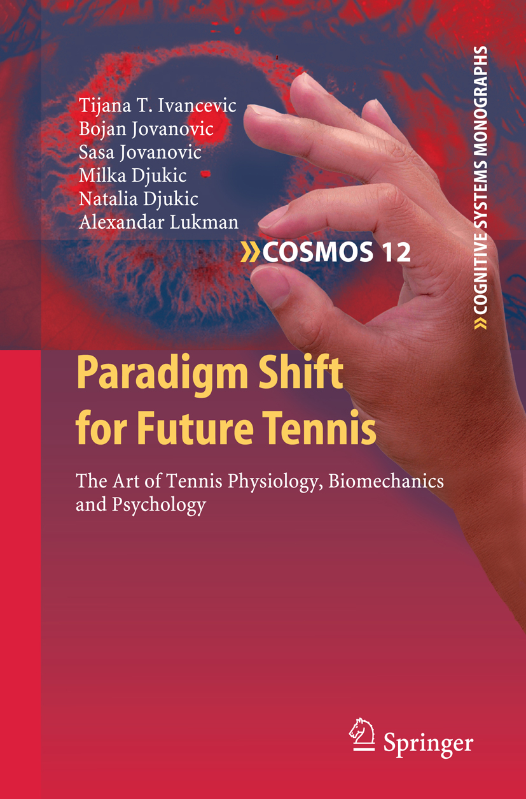
Cú giao bóng 5 set quan trọng trong trận chung kết Wimbledon lịch sử 2009 cuối cùng đã kết thúc khi Federer bẻ giao bóng của Roddick lần đầu tiên trong cả ngày (bản thân anh cũng bị bẻ giao bóng ở set thứ tư), trong đó Roddick thua trong một cú thuận tay. Federer có tổng cộng 107 lần thắng và 38 lỗi không đáng có (hệ số W/E là 107/38=2,8). Mặt khác, Roddick có 74 lần thắng và 33 lỗi không đáng có (hệ số W/E là 2,2). Do đó, sự khác biệt thực sự trong những thống kê này là số lượng người chiến thắng của Federer rất đáng kinh ngạc. Làm thế nào mà anh ấy có được nhiều người chiến thắng như vậy? Thứ nhất, cách rẻ nhất để đạt được người chiến thắng là quân Át. Federer giao được 50 quân Át, so với 27 quân Át của Roddick (hệ số A là 50/27=1,85), để giành chiến thắng trong trận đấu lịch sử này. Trên lý thuyết, cú giao bóng của anh ấy mạnh hơn cú giao bóng mạnh nhất trong trò chơi. Nhưng làm thế nào điều này có thể được? Roddick giao bóng kém? Không, cú giao bóng của Andy không bị gián đoạn, liên tục ở tốc độ khoảng 220 km/h và hai lần ở tốc độ 230 km/h (143 m/h), cho đến trận đấu thứ 77 – và cũng là trận đấu cuối cùng. Tuy nhiên, anh chỉ có 27 con át chủ bài, trong khi Federer, với cú giao bóng gần như dưới 200 km/h, đã đạt được con số đáng kinh ngạc là 50 con át chủ bài. Vì vậy, điều này có nghĩa là tốc độ của quả bóng không quan trọng đối với quân Át? Không, tốc độ bóng thực sự là yếu tố quan trọng nhất đối với quân át; nhưng nó không phải là yếu tố quan trọng duy nhất. Vậy đó có phải là topspin không? Khó có khả năng xảy ra, vì Federer và Roddick có lượng xoáy lên như nhau ở cả cú giao bóng đầu tiên và giao bóng thứ hai của họ. Còn gì nữa không? Chà, đây là câu hỏi quan trọng cần đặt ra, không chỉ cho trận đấu cụ thể này mà còn để giải thích toàn bộ hiện tượng Federer. Trước khi trả lời câu hỏi này, chúng ta hãy phân tích về mặt cơ sinh học cú giao bóng nhanh nhất trong trò chơi.
1.1 Cú giao bóng tốt nhất từ trước đến nay: Đó là cơ sinh học và sinh lý thần kinh
Từ cú giao bóng của Roddick (xem Hình 1.1), chúng ta có thể thấy rằng, theo lời khuyên đúng đắn của nhiều huấn luyện viên, tại một điểm nhất định, đầu vợt song song với lưng Roddick. Tuy nhiên, trong khi hầu hết các huấn luyện viên đều cho rằng (và do đó dạy các tay vợt của họ) rằng lưng phải thẳng vào thời điểm này thì trong trường hợp của Roddick thì không phải vậy. Tại thời điểm này, thân của anh ấy đã nghiêng về phía trước và vặn vẹo theo phương thẳng đứng.
T.T. Ivancevic và cộng sự: Sự thay đổi mô hình cho quần vợt trong tương lai, COSMOS 12, trang 3–10.
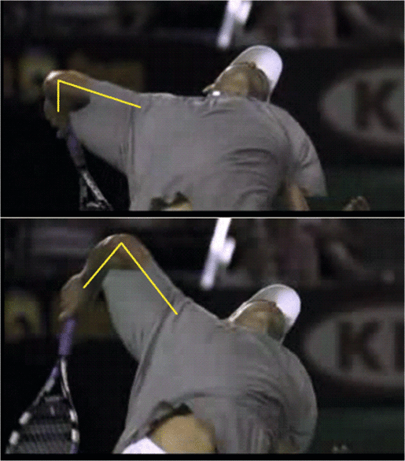
Cú giao bóng tốt nhất từ trước đến nay của Andy Roddick: chuỗi cơ sinh học, chuyển động giống như roi và phản xạ căng khi hoạt động.
trục cơ thể. Sự khác biệt ‘nhỏ’ này so với khái niệm giao bóng (tĩnh) thông thường đã cho thấy hai yếu tố vật lý (động) quan trọng nhất trong cú giao bóng của Roddick:
1. Chuyển động giống như cây roi, yếu tố cơ sinh học chính (chuỗi động học từ gần đến xa, trong đó luôn có độ trễ thời gian giữa hai khớp liên tiếp: đầu tiên là chân, sau đó là thân, sau đó là vai, sau đó là khuỷu tay, sau đó là cổ tay); và 2. Phản xạ căng trong hành động, yếu tố sinh lý thần kinh chính (kéo căng các cơ duỗi chân, thân, vai, khuỷu tay và cổ tay trước khi chúng co thắt đạn đạo).
Từ quan điểm cả về cơ sinh học và sinh lý thần kinh, cú giao bóng của Roddick cho đến nay là cú giao bóng tốt nhất từ trước đến nay trong môn quần vợt. Đó là hành động giao bóng giống như đòn roi thực sự duy nhất (mô hình của động tác giao bóng thích hợp) và là động tác giao bóng dựa trên phản xạ căng thực sự duy nhất trong quần vợt. Trong bóng ném, bóng chuyền, bóng đá Mỹ, bóng bầu dục và bóng nước hiện đại, người ta thường biết rằng một cú ném (hoặc đập) hiệu suất cao nhất thiết phải giống với chuyển động giống như roi của một cú ném lao ưu tú. Thuật ngữ cơ sinh học cho chuyển động giống như chiếc roi này là chuỗi động học: dòng tuần tự của 1.2 Bí mật đằng sau cú giao bóng 5 của Federer
năng lượng và động lượng từ các phân đoạn lớn hơn đến các phân đoạn nhỏ hơn. Quần vợt đòi hỏi sự kích hoạt theo trình tự của các cơ và chuyển động của xương và khớp để đạt được các chuyển động, vị trí và vận tốc được thấy ở người chơi. Đừng bao giờ xoay “hông và vai cùng nhau”, vì bạn có thể thường nghe các huấn luyện viên khuyên khi dạy cú thuận tay. Thay vào đó, trước tiên hãy luôn xoay hông, sau đó là vai, sau đó là khuỷu tay và sau đó là cổ tay. Việc đánh vào “điểm ngọt” trên vợt tennis với chuyển động “lỏng lẻo” này sẽ khó hơn, nhưng kết quả thì không thể tin được. Tất cả các tay vợt ưu tú đều thực hiện những cú đánh này - điều không có trong sách giáo khoa hoặc sách hướng dẫn huấn luyện - cho người chiến thắng của họ. Động năng và động lượng cũng như sức mạnh cơ bắp được phát triển từ cơ chân, cơ hông và cơ thân rồi truyền đến cơ cánh tay. Điều này cho phép năng lượng, động lượng và sức mạnh được truyền đến tay một cách hiệu quả, di chuyển đầu vợt với tốc độ tối đa về phía bóng. Hơn nữa, để đạt được kỹ thuật giao bóng tennis, thuận tay và trái tay giống như đòn roi có hiệu quả cao, phải thực hiện một trình tự thích hợp các hành động dựa trên phản xạ căng cơ. Andy Roddick giữ kỷ lục giao bóng quần vợt nhanh nhất thế giới: 246 km/h (153 m/h). Cú giao bóng của anh ấy là một chuỗi cơ sinh học thích hợp, một chuyển động hoàn toàn giống như một chiếc roi và phản xạ căng khi hoạt động. Phản xạ căng làm cho cơ bị căng co lại mạnh hơn, đồng thời ức chế cơ đối kháng co lại (tức là làm chậm chuyển động). Vì đây là phản xạ không tự nguyện nên tốc độ co cơ nhanh hơn và mạnh hơn đáng kể (vài lần) so với sự co cơ hoàn toàn tự nguyện. Trên thực tế, cơ bị kéo giãn lệch tâm càng nhanh thì lực tác dụng lên lần co đồng tâm tiếp theo càng lớn. Khi chúng ta rèn luyện các cơ xương để chúng sử dụng hiệu quả phản xạ căng (và chu kỳ rút ngắn độ giãn có liên quan), thì chúng ta sẽ tạo ra những cú bắn mạnh mẽ từ chúng một cách hiệu quả. Nguyên mẫu của một loại súng cao su cơ bắp như vậy là một cú ném lao; đặc biệt là cú ném kỷ lục thế giới của Jan Zelezny (lúc đó chỉ nặng 80 kg!). Chúng ta sẽ nói nhiều hơn về cú giao bóng của Roddick sau.
1.2 Bí mật đằng sau cú giao bóng của Federer
Vì vậy, cả về mặt cơ sinh học và thần kinh-sinh lý, Andy Roddick có cú giao bóng tốt nhất từ trước đến nay, rõ ràng là tốt hơn cú giao bóng của Federer. Tuy nhiên, trung bình nó chỉ tốt hơn khoảng 10% (hoặc thậm chí ít hơn). Và có một yếu tố tiềm ẩn về phía Federer lớn hơn 10%. Lời giải thích về hệ số hiệu suất Ace là 1,85 giữa các cú giao bóng của Federer và Roddick rõ ràng là phi vật lý: phi cơ sinh học và phi sinh lý. Lời giải thích mang tính nhận thức. Roger Federer đơn giản là tay chơi cờ chớp giỏi nhất trong môn quần vợt. Điều này có nghĩa là ba yếu tố nhận thức: Anh ta lên kế hoạch trước cho các bước đi của mình một cách hiệu quả; Anh ta đọc (dự đoán) một cách hiệu quả các bước di chuyển của đối thủ và hành động tương ứng; và Ngài ngụy trang một cách hiệu quả các hành động của chính mình. Ba yếu tố nhận thức vượt trội này giúp Federer có lợi thế tinh thần rất lớn trước các đối thủ, ngoại trừ “kẻ thù không đội trời chung” là Rafael Nadal – số 1 thế giới hiện tại, kẻ 61
dường như có những yếu tố nhận thức tương tự (cùng với một thể lực phi thường và lượng xoáy lên rất lớn trong tất cả các cú đánh của anh ta). Đặc biệt, ván cờ chớp nhoáng quần vợt này chính là quân át chủ bài của Federer. Anh ta lên kế hoạch về vị trí đặt bóng, dự đoán cú trả bóng của Roddick thậm chí trước cả khi giao bóng, và sau đó ngụy trang chuyển động của quả giao bóng. Trong trận đấu hoành tráng tại Wimbledon 2009, đặc biệt là ở loạt tiebreak và ở cuối set thứ năm, Andy không thể đọc được cú giao bóng của Roger, trong khi Roger ngày càng đọc được nhiều cú giao bóng của Andy. Và Federer có thể làm được điều tương tự trong nhiều trận đấu khác, trước nhiều tay vợt khác. Cờ chớp là chìa khóa dẫn tới hầu hết những chiến thắng đáng kinh ngạc của Federer. Một lần nữa, trước tiên anh ta lên kế hoạch, sau đó đoán trước hành động của đối thủ và cuối cùng ngụy trang cú đánh của chính mình. Và chúng ta luôn có thể mong đợi một người chiến thắng khác. Trong báo cáo tiếp theo, chúng ta sẽ nói về những người chiến thắng cú thuận tay, trái tay và vô lê của Roger.
1.3 Cơ sinh học các cú đánh của Federer
Những cú thuận tay, trái tay và vô lê của Federer (cũng như những cú giao bóng của anh, được đề cập trong phần đầu tiên của báo cáo về VCK Wimbledon 2009) năng động hơn nhiều so với những cú giao bóng trong sách giáo khoa. Chúng thực sự khá giống với các cú thuận tay, trái tay và vô lê (cũng như giao bóng) của Pete Sampras. Trong cả hai trường hợp của Roger và Pete, bạn sẽ không bao giờ thấy hai giai đoạn bắt buộc của các cú đánh mặt đất trong quần vợt cổ điển: “tải” và “đánh”. Thay vào đó, những người chiến thắng hiệu quả nhất lại bị ảnh hưởng bởi những chuyển động có vẻ “lỏng lẻo”. Chúng khá giống với cú thuận tay đáng kinh ngạc 190 km/h (120 m/h) của Gael Monfils người Pháp, cú đánh không phải bởi sức mạnh mà bởi sự kết hợp giữa tốc độ cánh tay và độ linh hoạt của khớp. Quan trọng hơn nữa, những cú đánh hiệu quả nhất (của Roger và Pete, cũng như của Rafa Nadal) không bao giờ sử dụng những cú giật hoặc xoay lớn. Vì đây là một quan niệm sai lầm rất phổ biến nên chúng ta cần giải thích rõ hơn một chút. Ý tưởng cơ bản của môn quần vợt trong sách giáo khoa (có nghĩa là được đại đa số huấn luyện viên và người chơi sử dụng), cũng như cơ chế sinh học đơn giản của các cú giật và vung vợt trong các cú đánh quần vợt (giao bóng, thuận tay và trái tay) đều bắt nguồn từ khái niệm về một con lắc vật lý đơn giản. Một cánh tay với một tay cầm vợt được coi là một cơ thể ít nhiều cứng nhắc, không quá 3 bậc tự do (DOF). Và thực sự, nếu bạn có một cánh tay robot chỉ có 3 DOF và bạn muốn đánh bóng bằng nó, thì bạn cần phải có một vòng lặp; và hơn thế nữa, nếu muốn đánh bóng thật mạnh, bạn cần phải có cú xoay người mạnh. Điều đó hoàn toàn đúng. Theo ngôn ngữ của cơ sinh học hiện đại, “không gian pha của nó là một vòng tròn đơn giản”. Đó là cách ban đầu chúng tôi có các vòng lặp hiện tại – để chơi “quần vợt đẹp”; và xoay người – để có thể “đánh mạnh”. Đặc biệt, bạn cần một cú vung vợt lớn vì bạn muốn sử dụng toàn bộ thế năng của trọng lượng vợt. Do đó, để chuẩn bị cho cú đánh (chẳng hạn như cú thuận tay), bạn nâng đầu vợt lên cao nhất có thể dọc theo vòng tròn (tức là cao hơn đầu của bạn). Đây là hình ảnh chung đằng sau tất cả các cú giật và vung vợt trong quần vợt. Mặc dù dễ hiểu nhưng không dễ thực hiện, đó là nơi chứa đựng nhiều bài học đắt giá trên sân. Hệ thống này đã đào tạo ra hàng nghìn tay vợt trẻ, tất cả đều đánh bóng 1.3 Cơ sinh học các cú đánh của Federer 7
theo cách gần như giống nhau, với các động tác quần vợt đặc biệt giống nhau: vòng và xoay người. Tuy nhiên, hình ảnh này là sai! Thực tế của chúng ta phức tạp hơn nhiều so với mô hình đơn giản này gồm một vòng (vòng tròn) và một cú xoay (thế năng dọc theo vòng tròn), vốn chỉ tạo ra “vở ballet quần vợt”. Thứ nhất, cánh tay con người có 9 DOF (không bao gồm các ngón tay). Chỉ riêng vai, khuỷu tay và cổ tay đã có 9 DOF. Đây là một hệ thống dư thừa, vì bản thân vợt chỉ có 6 DOF (ba lần dịch và ba lần quay). Điều này có nghĩa là có vô số cách có thể để đánh bóng và chúng ta có thể chọn cách tốt nhất trong từng tình huống cụ thể. Do đó, không gian pha thực cho cánh tay người cầm vợt phức tạp hơn nhiều so với mô hình vòng tròn đơn giản. Ngoài ra, huấn luyện viên nào cũng khuyên khá chính xác, không chỉ sử dụng cánh tay mà nên sử dụng toàn bộ cơ thể. Vì vậy, chúng tôi thực sự có sẵn hàng trăm DOF để thực hiện mỗi cú đánh quần vợt. Bạn có còn tin rằng một vòng tròn đơn giản và vòng lặp liên quan của nó là mô hình thích hợp cho cú giao bóng và cú đánh tiếp đất của một nhà vô địch quần vợt không? Tuyệt đối không, nó chỉ đủ cho trẻ nhỏ thôi! Thứ hai, có vấn đề về việc tận dụng thế năng của chính cây vợt - tức là nâng đầu vợt lên cao để chuẩn bị cho cú đánh. Điều này chỉ có ý nghĩa đối với những người chơi rất yếu và vợt rất nặng (giống như cách một người chơi yếu cần một cú vung vợt dài để tăng tốc cho một cây vợt lớn). Tuy nhiên, với một vận động viên thực thụ (và mọi vận động viên quần vợt ưu tú đều phải là một vận động viên như vậy), cây vợt nặng 400 gram hiện tại không đủ nặng để đóng góp đáng kể vào thế năng cho cú đánh. Nó sẽ rất đáng kể với một cây vợt nặng 4 kg, nhưng không phải với cây vợt nặng 400 gram hiện tại. Nói một cách đơn giản, các cú giật hoàn toàn vô dụng: việc bạn vào vị trí để đánh như thế nào không quan trọng. Cú vung vợt gần như vô dụng. Chẳng hạn, chúng có thể được sử dụng trong giờ thứ năm của một trận đấu quần vợt kéo dài 5 set để bù đắp cho sự thiếu sức mạnh, nhưng chính sự mệt mỏi này cũng sẽ khiến bạn khó có thể nâng đầu vợt lên cao trên đầu ngay từ đầu. Ngoài ra, chúng ta thấy rằng cơ học đơn giản không hoạt động với cơ thể con người. Robotics đã phát hiện ra điều này trong ba thập kỷ qua; khoa học quần vợt vẫn chưa học được nó. Loại chuyển động hiệu quả duy nhất trong các cú đánh quần vợt (giao bóng, thuận tay và trái tay), được cả Roger Federer và Pete Sampras sử dụng, là các chuyển động giống như cây roi, dựa trên những cú ném cơ bắp. Nói cách khác, tất cả các cú đánh của Roger và Pete, đúng như cú giao bóng của Andy Roddick, đều thể hiện rõ hai thành phần sau:
1. Chuyển động giống như cây roi, yếu tố cơ sinh học chính (chuỗi động học từ gần đến xa, trong đó luôn có độ trễ thời gian giữa hai khớp liên tiếp: đầu tiên là chân, sau đó là thân, sau đó là vai, sau đó là khuỷu tay, sau đó là cổ tay); và 2. Phản xạ căng trong hành động, yếu tố sinh lý thần kinh chính (kéo căng các cơ duỗi chân, thân, vai, khuỷu tay và cổ tay trước khi chúng co thắt đạn đạo).
1.4 Bí mật tinh thần đằng sau những chiến thắng của Federer
Như đã nêu ở trên (trong trường hợp giao bóng của Federer), Roger đơn giản là kỳ thủ chơi cờ chớp giỏi nhất trong môn quần vợt. Một lần nữa, điều này có nghĩa là ba yếu tố nhận thức:
1. Anh ta lên kế hoạch trước cho các bước đi của mình một cách hiệu quả; 2. Anh ta đọc (dự đoán) hiệu quả các bước di chuyển của đối thủ và hành động tương ứng; và 3. Anh ta ngụy trang một cách hiệu quả các bước đi của mình.
Ba yếu tố nhận thức vượt trội này mang lại cho Federer lợi thế tinh thần rất lớn so với các đối thủ, ngoại trừ Rafa Nadal, người dường như cũng có những yếu tố nhận thức tương tự. Tương tự như quân Át của Federer, cờ chớp nhoáng trong quần vợt là chìa khóa dẫn đến chiến thắng của Federer. Anh ta lên kế hoạch đặt bóng, dự đoán cú đánh trả của đối phương trước khi thực hiện cú đánh, và sau đó ngụy trang chuyển động của cú đánh. Anh ấy đã làm được điều đó trước Andy Roddick trong trận đấu hoành tráng tại Wimbledon 2009, và anh ấy đã làm được điều đó trong nhiều trận đấu khác, trước nhiều tay vợt khác. Cờ chớp là chìa khóa dẫn tới hầu hết những chiến thắng đáng kinh ngạc của Federer. Một lần nữa, trước tiên anh ta lên kế hoạch, sau đó đoán trước hành động của đối thủ và cuối cùng ngụy trang cú đánh của chính mình. Và chúng ta luôn có thể mong đợi một người chiến thắng khác. Cái gọi là phản ứng phức tạp có tầm quan trọng cao nhất trong mọi cuộc đấu thể thao, bao gồm cả quần vợt. Nhìn chung, một phản ứng phức tạp có hai thành phần: dự đoán thông minh và phản ứng nhanh như chớp. Trước tiên, bạn dự đoán chuyển động của đối thủ, sau đó bạn phản ứng bằng cách thực hiện chuyển động của riêng mình. Tốc độ cơ bản của phản ứng phần lớn được xác định trước về mặt di truyền và không thể cải thiện đáng kể. Phương tiện tốt nhất để phát triển nó là luyện tập dựa trên phản xạ căng cơ. Mặt khác, dự đoán tốt hành động của đối thủ là đặc điểm cần thiết của một cao thủ trong bất kỳ cuộc thi đấu thể thao nào. Dự đoán tốt nhất thực sự được gọi là đọc suy nghĩ, và đây là sự khác biệt giữa thầy và đệ tử. Đó là sức mạnh lớn nhất của Federer. Nó có thể học được và nên học nếu bạn đặt kỳ vọng cao vào quần vợt. Ngoài việc tích lũy kinh nghiệm từ nhiều giải quần vợt (ở các cấp độ thi đấu khác nhau), công cụ tốt nhất để phát triển khả năng dự đoán ở các tay vợt trẻ là cờ chớp nhoáng. Trên thực tế, sự chuẩn bị tốt nhất cho tốc độ tinh thần trong quần vợt được gọi là cờ chớp, hay cờ đạn. Đây là phiên bản nhanh hơn của trò chơi cờ chớp, trong đó mỗi bên có chưa đầy 3 phút để hoàn thành tất cả các nước đi của mình. Thông thường, cờ đạn nhanh đến mức chiến thuật và kỹ năng chỉ là thứ yếu so với những bước di chuyển nhanh. Các vấn đề thường gặp nhất trong trò chơi tinh thần của người chơi là:
1. Nhầm lẫn về chiến lược; 2. Cố gắng làm quá nhiều việc cùng một lúc; 3. Dễ bị phân tâm; 4. Quá quan tâm đến chuyện thắng thua; 5. Chủ nghĩa hoàn hảo; 1.4 Bí mật tinh thần đằng sau những người thắng cuộc của Federer 9
6. Tính tự mãn; 7. Không có kế hoạch, mục tiêu rõ ràng; 8. Quá tự phát và sáng tạo; 9. Thiếu khiêm tốn; 10. Phản ứng không phù hợp trước sai sót; Tự nói chuyện tiêu cực (tự phê bình).
Chúng ta có thể lập luận rằng Andy Roddick vẫn cảm thấy một số vấn đề này và bằng cách giải quyết chúng, anh ấy sẽ dễ dàng giành được các Grand Slam. Đồng thời, cả Roger và Rafa đều đã giải quyết chúng một cách hiệu quả nhất. Theo lời khuyên chung, để cải thiện trò chơi tinh thần của mình, bạn cần:
1. Đặt mục tiêu rõ ràng; 2. Tạo các bước hành động sẽ đưa bạn đến gần hơn với những mục tiêu này (học cách hình dung: cố gắng “nhìn thấy” trong đầu những gì bạn muốn đạt được); 3. Tự nói chuyện tích cực (tự phê bình); 4. Thực hành kỹ thuật thở yoga; 5. Luôn nỗ lực 100%; 6. Định hướng theo quy trình; 7. Luôn tách rời; Không tập trung vào tương lai hay quá khứ - hãy ở trong thời điểm hiện tại; 8. Không phản ứng lại ý kiến của người khác; 9. Chấp nhận việc bạn không thể trở nên hoàn hảo; 10. Hãy làm những gì cần thiết để vui vẻ và mỉm cười; 11. Xác định chiến thắng theo cách nó không chỉ bao gồm điểm số cuối cùng.
Cuối cùng, bạn cần tập trung vào quả bóng nhưng vẫn nhận thức được đối thủ và mặt sân. Đây là một vấn đề lớn đối với hầu hết các tay vợt, mặc dù Roger và Rafa dường như giải quyết nó một cách nhất quán và thường xuyên. Bên cạnh khả năng chịu đựng áp lực cạnh tranh cao, sự tập trung là một trong những đặc điểm chính của nhà vô địch. Bạn thực sự cần phải “nhắm mắt vào quả bóng” như mọi huấn luyện viên khuyên, nhưng vẫn phải có đầy đủ cái gọi là nhận thức tình huống (SA), được định nghĩa trong tâm lý học hiện đại là “nhận thức về các yếu tố trong môi trường trong một khoảng thời gian và không gian, hiểu được ý nghĩa của chúng và dự đoán trạng thái của chúng trong tương lai gần”. Ví dụ, SA là nhân tố then chốt trong việc đào tạo phi công chiến đấu và tay đua xe Công thức 1. Kết quả của bất kỳ tình huống phức tạp nào đều phụ thuộc rất nhiều vào SA. Vì vậy, bạn cần phát triển:
1. Tập trung mạnh vào quả bóng tennis đang chuyển động; 2. Khả năng SA mạnh như đã định nghĩa ở trên; và 3. Khả năng tập trung vào cả quả bóng và SA cùng một lúc.
Điều này tương tự như việc học chơi một bản nhạc khó trên đàn piano: đầu tiên bạn học phần tay phải, sau đó bạn học phần tay trái và sau đó bạn học cách kết hợp chúng lại với nhau. Rõ ràng, sự mệt mỏi về thể chất và tinh thần (bao gồm những xáo trộn khác, chẳng hạn như mưa, gió, khán giả ồn ào, màn hình lớn trên đầu, v.v.) sẽ dần dần làm giảm cả sự tập trung và SA. Vì vậy, bên cạnh tốc độ và sức mạnh thể chất, hiển nhiên bạn cần có sức mạnh tinh thần và sức bền rất lớn để có thể giành chiến thắng.
Roger Federer có tất cả những phẩm chất tinh thần này. Đó là lý do tại sao anh ấy là tay vợt vĩ đại nhất từ trước đến nay. Đó chính là bí mật đằng sau hiện tượng Federer. Đó không phải là cú thuận tay, cú trái tay hay cú giao bóng của anh ấy. Bí mật thực sự nằm ở trí tuệ mạnh mẽ của Federer. Roger Federer là một hiện tượng, không nghi ngờ gì về điều đó. Tuy nhiên, đối với tất cả những đứa trẻ tài năng muốn trở thành người tham gia tích cực vào trận đấu quần vợt – chứ không chỉ là những người quan sát thụ động – câu hỏi quan trọng nhất là: Làm thế nào chúng ta có thể vượt qua Federer? Chúng ta có thể xây dựng kế hoạch chi tiết cho tương lai của Federer không? Nói cách khác, Có thực sự có thứ gọi là Khoa học quần vợt không? Trong các Chương tiếp theo, chúng ta sẽ xây dựng các định luật chính của khoa học quần vợt. 2
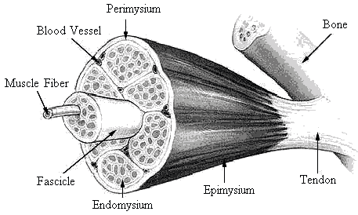
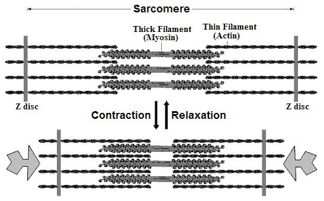
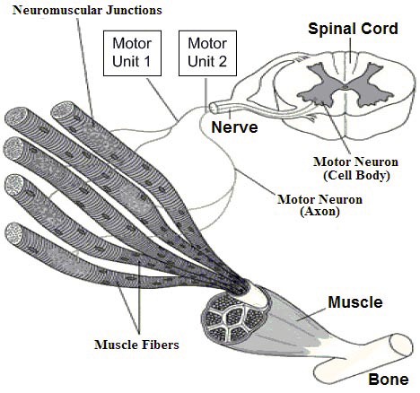
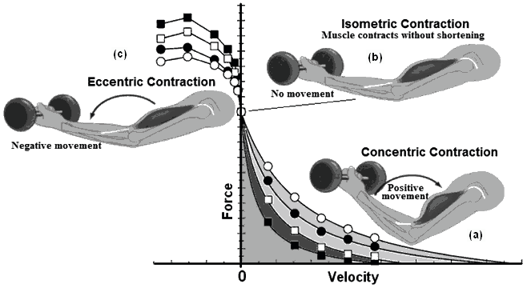
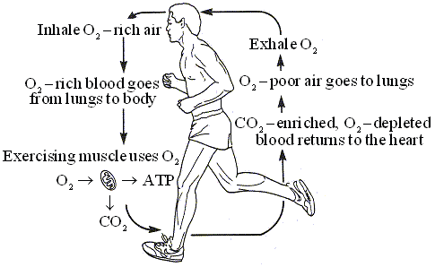
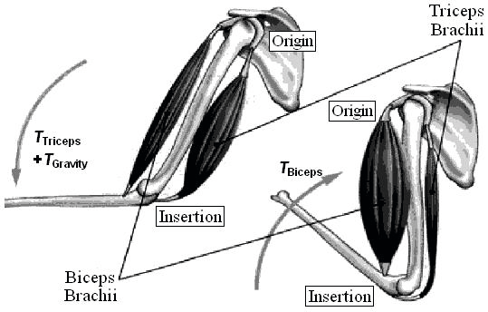
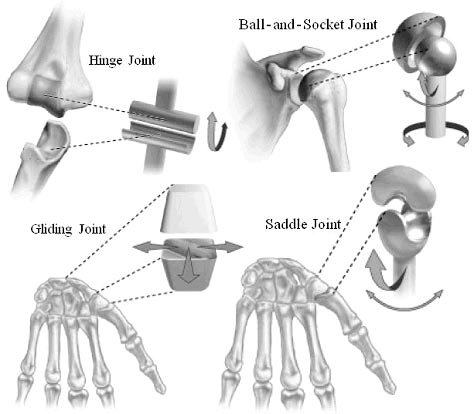
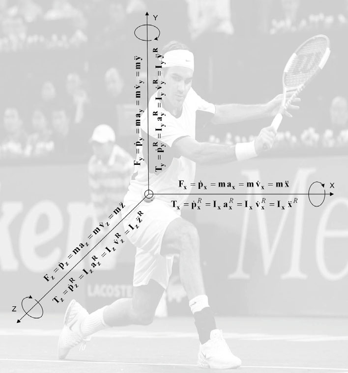
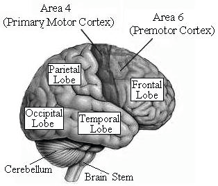
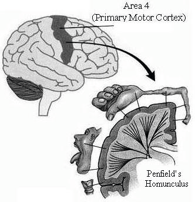
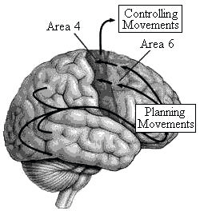
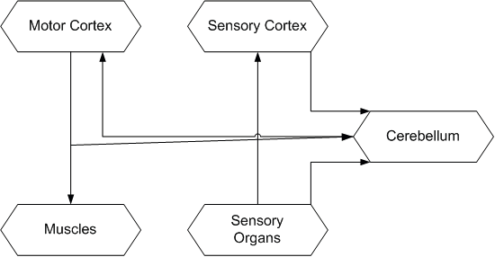
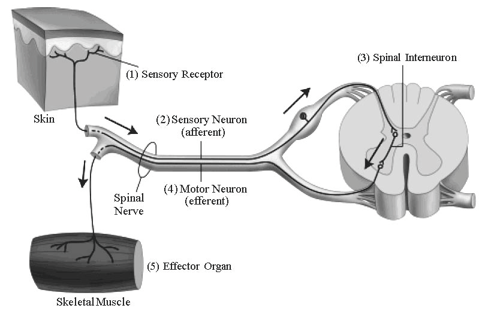
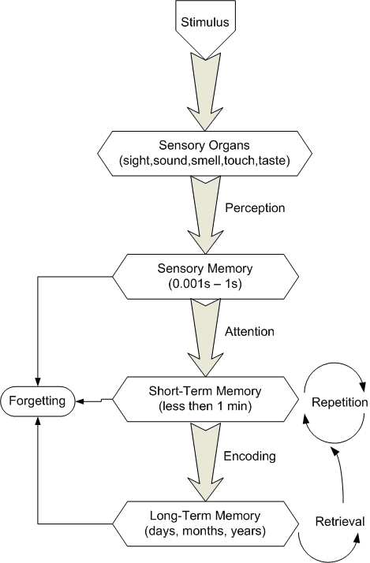
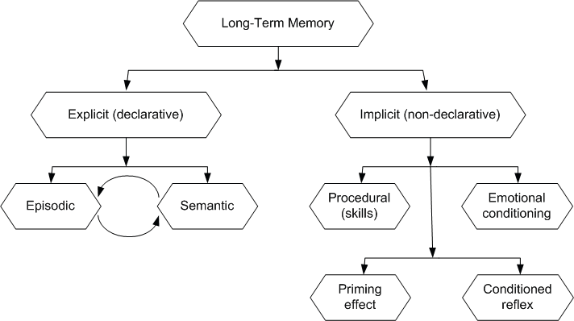
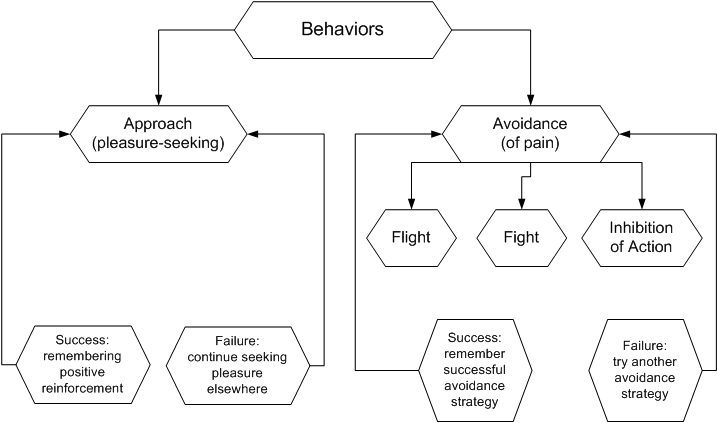
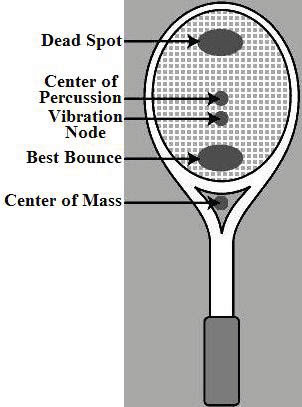
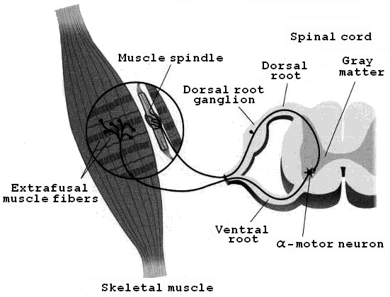
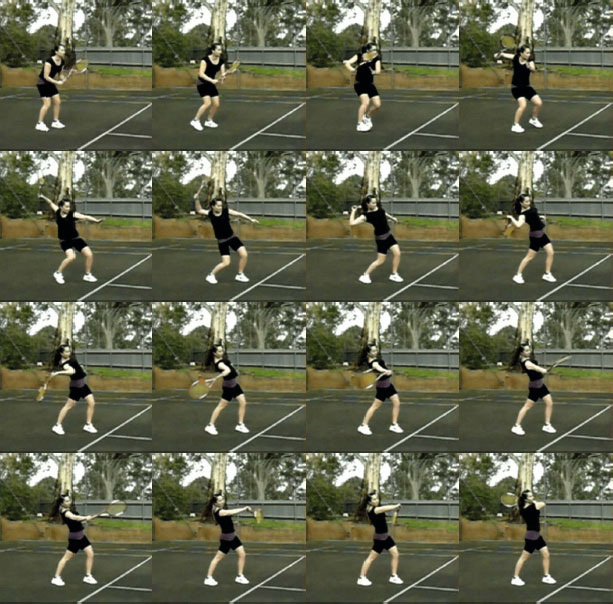
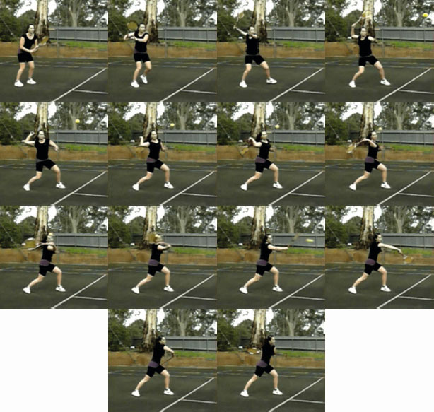
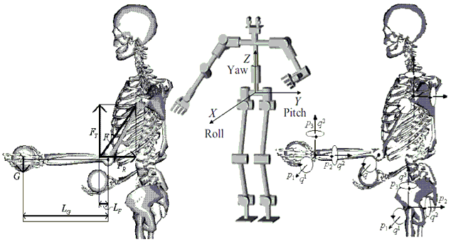
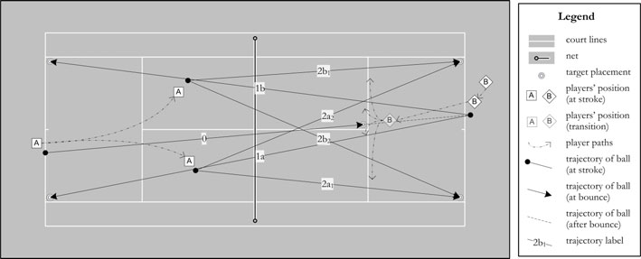
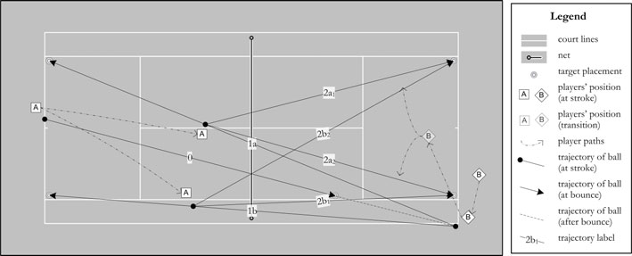
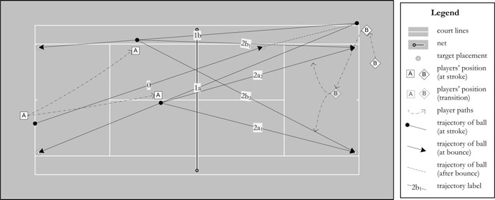
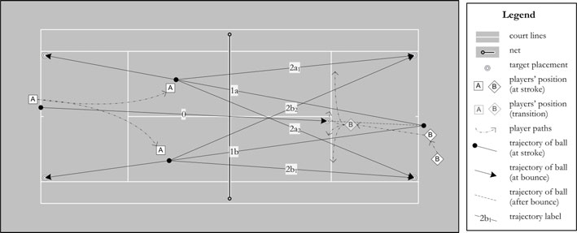
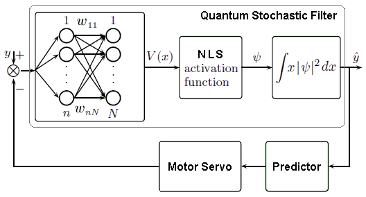
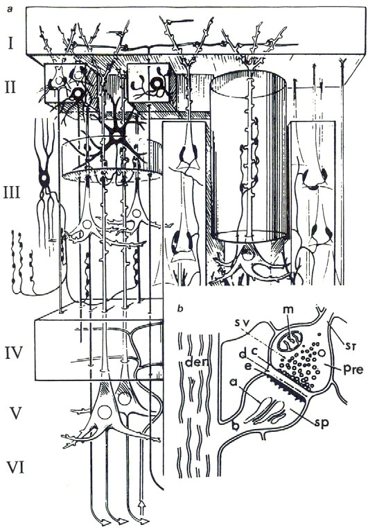
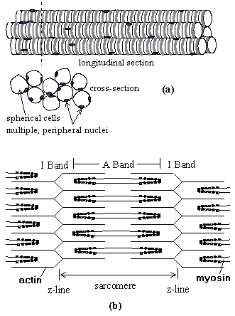
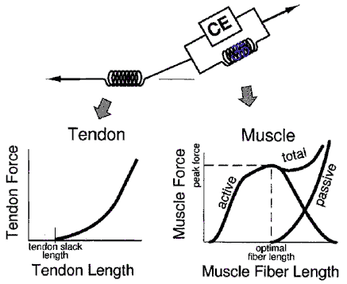
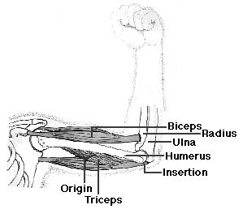
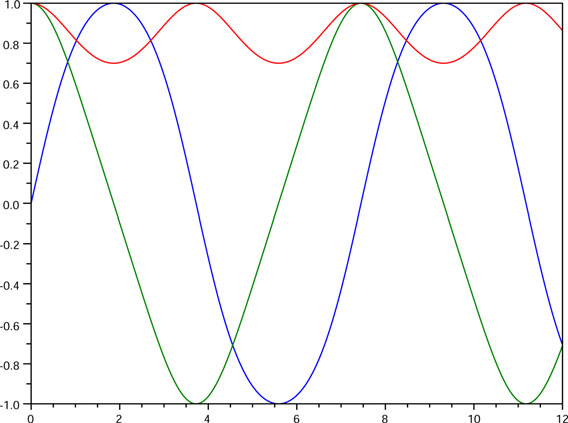
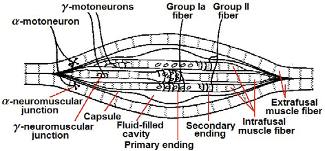
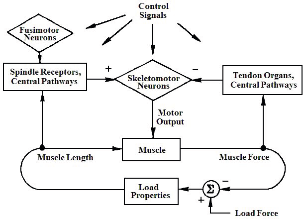
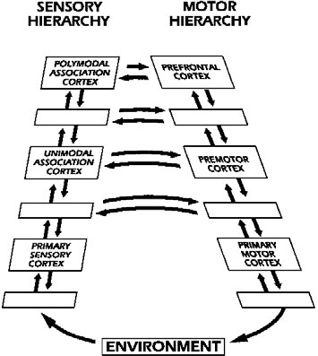
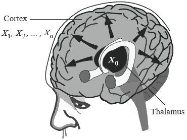
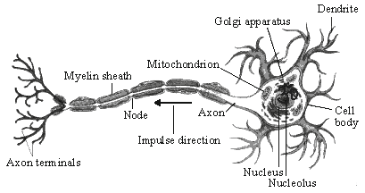
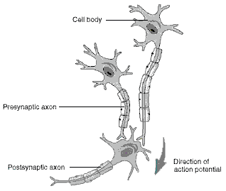
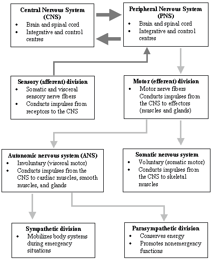
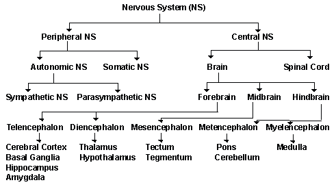
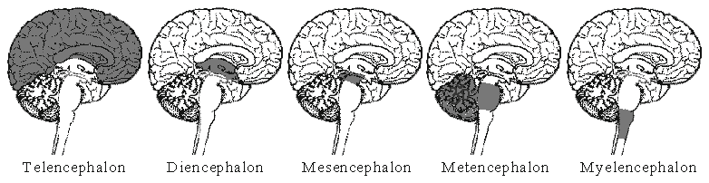
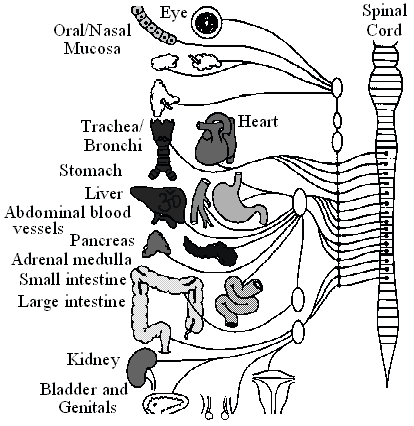
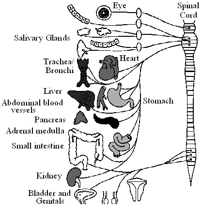
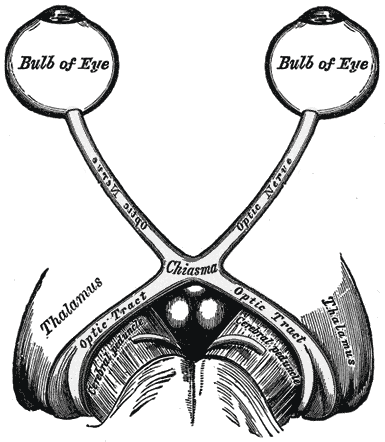
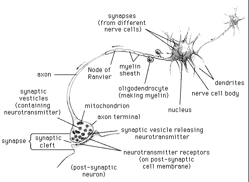
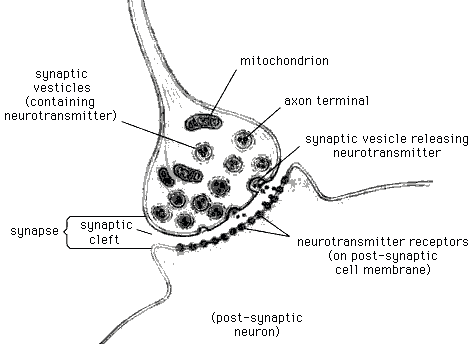
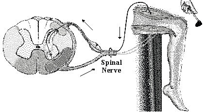
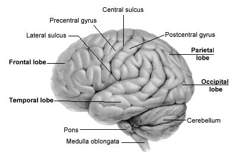
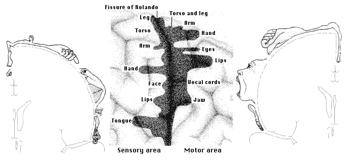
2.1 Phá vỡ huyền thoại về “Trí nhớ cơ bắp”
Từ góc độ khoa học, thuật ngữ thông thường “bộ nhớ cơ bắp” rất phổ biến và vô nghĩa. giữa các huấn luyện viên và tay vợt là Nếu các đường dẫn truyền thần kinh vận động bị tổn thương thì sẽ không còn “bộ nhớ cơ” nào nữa. Điều này có nghĩa là tất cả bộ nhớ vận động (chứa tất cả các kỹ năng vận động thu được) đều nằm trong hệ thống thần kinh chứ không phải trong cơ bắp. Cơ bắp có cấu trúc và chức năng (tạo ra lực cơ), chúng có thể được rèn luyện và rèn luyện về sức mạnh, tốc độ, sức bền và sự linh hoạt, nhưng chúng vẫn chỉ là những cơ quan tác động câm (giống như tuyến bài tiết). Họ chỉ đáp ứng với các xung lệnh thần kinh. Để hiểu được quá trình rèn luyện kỹ năng vận động, người ta cần biết những điều cơ bản về điều khiển vận động thần kinh. Trong các cơ điều khiển vận động có các cơ tạo lực hoạt động theo cặp đối kháng. Chúng được điều khiển bởi phản hồi phản xạ thần kinh và/hoặc đầu vào vận động tự nguyện. Nếu bất kỳ đường dẫn thần kinh nào bị tổn thương, cơ bắp sẽ trở thành thịt chết và không còn trí nhớ (xem Quy luật kiểm soát vận động thần kinh).
2.2 Cấu trúc và chức năng của cơ xương
Cơ xương bao gồm các sợi cơ được bao bọc bởi các bó mạch cũng bao bọc các mạch máu. Các cơ được kết nối với các xương lân cận thông qua các gân đàn hồi, được tạo thành từ epimysium, Perimysium và Endomysium (xem Hình 2.1). Mỗi sợi cơ (hoặc tế bào cơ) được tạo thành từ nhiều sợi cơ. Mỗi sợi cơ chứa một loạt các đơn vị co bóp gọi là sarcomeres, được tạo thành từ hai loại sợi protein: sợi Actin mỏng và sợi myosin dày (xem Hình 2.2). Xem Phụ lục 1 để biết chi tiết kỹ thuật. Các cơ là những “nô lệ” chỉ co lại (rút ngắn) khi “chủ nhân” của chúng, được gọi là các đơn vị vận động, hoạt động (xem Hình 2.3), nếu không thì chúng thư giãn. Vì vậy, cơ chỉ có thể kéo (co lại), không bao giờ đẩy được. Chúng thường hoạt động theo cặp đối kháng lẫn nhau (xem Định luật cơ sinh học cơ bản).
T.T. Ivancevic và cộng sự: Sự thay đổi mô hình cho quần vợt trong tương lai, COSMOS 12, trang 11–15.
bao quanh mô cơ. Perimysium là một mô liên kết ngăn cách các bó cơ liền kề (bó sợi cơ nhỏ) trong cơ xương. Endomysium bao quanh các sợi riêng lẻ. Epimysium và Perimysium chứa các mạch máu và dây thần kinh.
Tất cả các cơ đều có ba đặc tính cơ bản sau:
1. Tính co rút (rút ngắn trong khi tạo ra lực); 2. Tính dễ bị kích thích (đáp ứng với kích thích thần kinh); 3. Độ đàn hồi (thu hồi về chiều dài nghỉ ban đầu sau khi bị kéo dãn).
Có ba loại co cơ cơ bản, liên quan chặt chẽ đến đường cong vận tốc-lực cơ bản (xem Hình 2.4):1
1 Đường cong lực-vận tốc (Hình 2.4) cho thấy mối quan hệ giữa sức căng cơ (hoặc lực được tạo ra) và vận tốc rút ngắn hoặc kéo dài của nó. Đường cong cơ cơ bản này được sử dụng để phân tích tác động của việc rèn luyện tốc độ-sức mạnh, cũng như để xác định các loại sợi cơ được sử dụng trong các hoạt động thể chất khác nhau. 2.2 Cấu trúc và chức năng của cơ xương 13
Một dây thần kinh/tế bào thần kinh vận động và các sợi cơ mà nó điều khiển thông qua hai đơn vị vận động. Các bộ phận mô-tơ cháy hoàn toàn hoặc không cháy (tất cả hoặc không có Luật).
1. Co đồng tâm, trong đó cơ co lại và thực hiện chuyển động tích cực – lực do nó tạo ra lớn hơn lực tải; 2. Co cơ đẳng cự, trong đó cơ tạo ra lực mà không bị rút ngắn (không có chuyển động rõ ràng) – lực tạo ra của nó bằng với lực tải; 3. Co lệch tâm, trong đó cơ tạo ra lực, tuy nhiên chuyển động âm xảy ra do lực tải lớn hơn lực do cơ tạo ra.
1. Khi một cơ được kích hoạt và được yêu cầu nâng một tải trọng nhỏ hơn sức căng uốn ván tối đa mà nó có thể tạo ra, cơ sẽ bắt đầu ngắn lại. Các cơn co thắt cho phép cơ rút ngắn được gọi là các cơn co thắt đồng tâm. Một ví dụ về sự co đồng tâm khi nâng tạ trong động tác gập bắp tay. Trong các cơn co đồng tâm, lực do cơ tạo ra luôn nhỏ hơn mức tối đa của cơ. Khi tải trọng mà cơ cần nâng giảm, tốc độ co sẽ tăng lên. Điều này xảy ra cho đến khi cơ đạt được vận tốc co tối đa. Bằng cách thực hiện một loạt các thao tác co rút ngắn vận tốc không đổi, mối quan hệ giữa lực và vận tốc có thể được xác định. 2. Trong cơn co đẳng cự, cơ được kích hoạt, nhưng thay vì được phép kéo dài hoặc rút ngắn, nó lại được giữ ở một độ dài không đổi. Một ví dụ về đẳng cự 14 2 Định luật về cấu trúc và chức năng cơ bắp
(a) co đồng tâm (tạo ra chuyển động dương), (b) co đẳng cự (không chuyển động) và (c) co lệch tâm (chuyển động âm). Biểu đồ cho thấy các chuyển động được thực hiện với bốn tốc độ khác nhau. Vùng bóng mờ dưới đường cong tượng trưng cho sức mạnh cơ bắp.
sự co lại sẽ mang một vật thể trước mặt bạn. Trọng lượng của vật sẽ kéo xuống dưới, nhưng bàn tay và cánh tay của bạn sẽ chống lại chuyển động với lực bằng nhau hướng lên trên. Vì cánh tay của bạn không nâng lên hoặc hạ xuống nên bắp tay của bạn sẽ co lại theo phương pháp đẳng cự. Lực tạo ra trong quá trình co đẳng cự hoàn toàn phụ thuộc vào độ dài của cơ khi co. 3. Trong quá trình hoạt động bình thường, các cơ thường hoạt động khi chúng đang giãn ra. Ví dụ kinh điển về điều này là khi đi bộ, khi cơ tứ đầu (cơ duỗi đầu gối) hoạt động ngay sau khi chạm gót chân trong khi đầu gối gập lại hoặc đặt một vật xuống nhẹ nhàng (cơ gấp cánh tay phải hoạt động để kiểm soát sự rơi của vật). Khi tải trọng lên cơ tăng lên, cuối cùng nó đạt đến điểm mà ngoại lực tác dụng lên cơ lớn hơn lực mà cơ có thể tạo ra. Do đó, mặc dù cơ có thể được kích hoạt hoàn toàn nhưng nó vẫn buộc phải dài ra do tải trọng bên ngoài cao. Điều này được gọi là sự co lại lệch tâm (xin hãy nhớ rằng sự co lại trong bối cảnh này không nhất thiết hàm ý sự rút ngắn). Có hai đặc điểm chính cần lưu ý liên quan đến sự co lệch tâm. Đầu tiên, sức căng tuyệt đối đạt được rất cao so với khả năng tạo ra lực căng uốn ván tối đa của cơ (bạn có thể đặt một vật nặng hơn nhiều so với khả năng nâng của bạn). Thứ hai, lực căng tuyệt đối tương đối độc lập với vận tốc kéo dài. Điều này cho thấy cơ xương có khả năng chống lại sự kéo dài rất tốt. 2.3 Cơ bắp chậm và nhanh 15
2.3 Cơ bắp chậm và nhanh
Có, một số cơ phù hợp hơn với các hoạt động thuộc loại sức mạnh-tốc độ bùng nổ, trong khi những cơ khác lại thích nghi với các bài tập sức bền. Chính xác hơn, có ba loại cơ xương cơ bản của con người:
• Loại I - cơ co giật chậm, có màu đỏ sẫm (dưới kính hiển vi điện tử; chúng được sử dụng chủ yếu trong hệ thống năng lượng hiếu khí; chúng có nồng độ myoglobin cao, nhiều mao mạch và ty thể.) • Loại IIA - co giật nhanh trung gian, có màu trắng đỏ; sự co lại của chúng khá nhanh; chúng có nồng độ myoglobin vừa phải; chúng chủ yếu được sử dụng trong hệ thống năng lượng glycolysis kỵ khí. • Loại IIB - co giật cực nhanh, có màu trắng; tốc độ co rút của chúng là nhanh nhất; chúng có nồng độ myoglobin thấp; chúng chủ yếu được sử dụng trong hệ thống năng lượng alactatic kỵ khí.
Không có cái gọi là “cơ bắp quần vợt” chuyên biệt. Điều cốt yếu dẫn đến thành công trong môn quần vợt là khả năng kiểm soát vận động thần kinh, trong đó quan trọng nhất là phản xạ căng cơ (chúng ta sẽ nói về nó sau). 3
3.1 Mô tả giải phẫu của một cú giao bóng quần vợt thông thường
các giai đoạn:1 Giao bóng quần vợt cổ điển có ba (i) tung bóng, (ii) nhảy và (iii) đập kết thúc.
(i) Trong trường hợp tay vợt thuận tay phải (như Federer), việc tung bóng được thực hiện bằng tay trái. Hai bàn chân dang ra và việc ném bóng được thực hiện với sự co bóp của cơ delta trái, cơ bắp tay và cơ gấp lòng bàn tay. Động tác này được thực hiện đồng thời với hai động tác chuẩn bị khác. Động tác chuẩn bị đầu tiên là giơ cánh tay phải lên, “tải”. Các cơ được sử dụng để thực hiện việc này là cơ delta phải, cơ trên gai (cơ đi qua xương bả vai) và cơ bắp tay cánh tay. Hành động thứ hai là uốn cong đầu gối và do đó chuẩn bị cho giai đoạn thứ hai của cú giao bóng (nhảy). Không có cơ gấp nào được sử dụng để uốn cong đầu gối, vì việc uốn cong đầu gối được thực hiện chỉ bằng trọng lực (trên thực tế, các cơ duỗi chân được sử dụng theo kiểu lệch tâm). (ii) Cú nhảy giao bóng đầu tiên được thực hiện ở mức cao và tiến về phía trước. Nó đạt được nhờ hoạt động tức thời của tất cả các cơ duỗi chân; cơ dép trái và phải, cơ tứ đầu đùi và cơ mông lớn. Nhảy là phần thứ hai của quá trình “tải” cú giao bóng. Đồng thời khi người chơi nhấc vợt lên, vợt được đặt phía sau cơ thể, ở tư thế “cào lưng”, và bắt đầu xoay vai phải về phía bóng. Động tác này liên quan đến cơ bắp tay phải và cơ duỗi cổ tay. Khi ở trên không, hai chân nối với nhau một cách tự nhiên (với Federer, hai chân nối với nhau trên không chứ không phải trên mặt đất). (iii) Cú đập kết thúc diễn ra trên không, trước khi đấu thủ quay trở lại mặt đất. Để kết thúc quả giao bóng, xoay vai và đánh bóng đồng thời. Lúc đó, vai đã xoay hoàn toàn và bàn chân đã sẵn sàng để tiếp đất. Các cơ bụng xiên trong và ngoài hoàn thành việc xoay vai. Đánh bóng được thực hiện bởi latissimus
1 Chúng ta sẽ bỏ qua bước chuẩn bị khét tiếng ở đây.
T.T. Ivancevic và cộng sự: Sự thay đổi mô hình cho quần vợt trong tương lai, COSMOS 12, trang 17–19.
cơ lưng, sau đó là cơ ngực lớn và cuối cùng là cơ tam đầu cánh tay. Để thêm một chút xoáy hoặc cắt cho cú giao bóng, cổ tay được lắc nhẹ ở cuối bằng cách sử dụng cơ gấp lòng bàn tay.
3.2 Mô tả giải phẫu của một cú thuận tay quần vợt thông thường
Cú thuận tay tiêu chuẩn của quần vợt, trong trường hợp tay vợt thuận tay phải (như Federer), về cơ bản có hai giai đoạn: (i) chuẩn bị, hay “tải” và (ii) đánh bóng.
(i) Việc chuẩn bị cho cú thuận tay bao gồm hai hành động đồng thời. Người ta bước vào đúng tư thế, chân trái hướng về phía trước. Nửa còn lại là nửa đầu của chuyển động giật, nâng vợt lên trên vai theo chuyển động cong hình chữ C. (Điều này không cần phải lùi quá xa, giống như trong cú thuận tay của Hewitt, nhưng có thể nghiêng sang một bên hơn.) Điều này được thực hiện bởi cơ delta bên phải và cơ bắp tay trước. (ii) Đánh bóng bao gồm bốn động tác chính. Động tác đầu tiên trong bốn động tác này là động tác xoay hông phải về phía bóng, trong khi bàn chân vẫn ở trên mặt đất. Cơ mông lớn và cơ mông phải thực hiện động tác này. Thứ hai, cần phải nhảy lên không để có thể đánh bóng từ vị trí cơ thể cao hơn, không chạm vào lưới. Điều này được thực hiện bởi tất cả các cơ duỗi chân: cơ dép trái và phải, cơ tứ đầu đùi và cơ mông lớn – hoạt động cùng nhau.
Thứ ba, vung vợt bằng tay, phần thứ hai của động tác giật. Cơ ngực chính, cơ delta và cơ bắp tay trước bên phải hoàn thành việc này. Cuối cùng, để tạo ra xoáy lên; vặn nhẹ cổ tay để lướt qua quả bóng. Điều này được thực hiện bằng cơ gấp lòng bàn tay phải.
3.3 Mô tả giải phẫu của một cú đánh trái tay thông thường
Cú trái tay bằng hai tay thông thường của một tay vợt thuận tay phải (ví dụ: của Andy Roddick) về cơ bản có hai giai đoạn: (i) chuẩn bị hoặc “tải” và (ii) đánh bóng.
(i) Chuẩn bị cho cú trái tay hai tay bao gồm hai giai đoạn. Người ta bước vào đúng tư thế, chân phải hướng về phía trước. Người còn lại là nâng vợt theo chuyển động giật tương tự như cú giật thuận tay, chỉ có điều lần này vợt có xu hướng không đi xa hơn ngang tầm vai. Điều này được thực hiện bởi cả cơ delta trái và phải và cơ bắp tay cánh tay. (ii) Đánh bóng bao gồm bốn động tác chính. Động tác đầu tiên trong bốn động tác này là động tác xoay hông trái về phía bóng. Cơ mông lớn và cơ mông trái thực hiện động tác này với sự hỗ trợ của động tác duỗi đầu gối trái, được thực hiện bởi cơ tứ đầu đùi. Thứ hai, xoay vai trái về phía bóng, được thực hiện bởi cả cơ bụng xiên trong và xiên ngoài. 3.3 Mô tả giải phẫu của một cú đánh trái tay thông thường 19
Thứ ba, việc vung vợt bằng tay được thực hiện bằng cách kéo cánh tay phải và đẩy cánh tay trái. Động tác kéo của cánh tay phải được thực hiện bởi cơ lưng rộng bên phải, cơ ngực chính và cơ tam đầu cánh tay. Động tác đẩy của cánh tay trái được thực hiện bởi cơ delta trái, cơ ngực chính và cơ bắp tay cánh tay. Cuối cùng, để tạo ra xoáy lên; vặn nhẹ cả hai cổ tay. Điều này được thực hiện bởi các cơ gấp lòng bàn tay trái và các cơ gấp mu bàn tay phải. 4
4.1 Nguồn năng lượng cho hoạt động cơ bắp
Có ba nguồn năng lượng khác nhau cho bất kỳ loại hoạt động cơ bắp nào, bao gồm cả quần vợt (xem Phụ lục 1):
kỵ khí1 1. Hệ thống ATP–CP (hoặc alactatic), kéo dài 10–15 giây, sử dụng ATP2 dự trữ và creatine phosphate (CP), không có sản phẩm phụ. Nguồn năng lượng này liên quan đến tốc độ và sức mạnh. Nó rất cần thiết cho những cú giao bóng và chiến thắng trong quần vợt. 2. Hệ thống đường phân (hay còn gọi là kỵ khí lactic), kéo dài 15 giây – 3 phút, sử dụng đường huyết và glycogen trong cơ để tạo ATP; sản phẩm phụ của nó là axit lactic. Nguồn năng lượng này đại diện cho sức bền yếm khí. Nó rất cần thiết trong những cuộc chạy tiếp sức quần vợt kéo dài và mệt mỏi. hệ thống,3 3. Aerobic kéo dài từ 2–3 phút đến vài giờ, sử dụng glucose, glycogen, chất béo và protein để tạo ATP trong con đường năng lượng hiếu khí; sản phẩm phụ của nó là carbon dioxide và nước. Nguồn năng lượng này đại diện cho sức bền hiếu khí. Nó rất cần thiết trong set thứ tư và thứ năm của bất kỳ trận đấu quần vợt nghiêm túc nào.
4.2 Tiêu thụ oxy tối đa
−max, Nói chung, mức tiêu thụ oxy tối đa, hay VO là 2 thể tích oxy (O ) tối đa mà cơ thể con người có thể tiêu thụ khi hít thở không khí trên biển 2 1 “Kỵ khí” có nghĩa là không sử dụng oxy, nghĩa là không có hoạt động trao đổi chất nào của nó liên quan đến 02. 2 Adenosine–Triphosphate (AT P ) là nguồn năng lượng cơ bản cho hoạt động của cơ bắp, được tạo ra trong ty thể của các tế bào cơ bắp. Nó cung cấp năng lượng cho sự co cơ theo phương trình:
→ AT P ADP + P + Năng lượng i
ADP P trong đó là Adenosine–Diphosphate và là photphat vô cơ. ATP được tái tổng hợp cả trong điều kiện hiếu khí và kỵ khí. 3 “Hiếu khí” có nghĩa là khi có oxy (02), nghĩa là tất cả hoạt động trao đổi chất của nó sẽ liên quan đến 02.
T.T. Ivancevic và cộng sự: Sự thay đổi mô hình cho quần vợt trong tương lai, COSMOS 12, trang 21–26.
−tiêu thụ
O2 bởi cơ xương trong ty thể.
mức độ trong một bài tập toàn thân cường độ cao. Thể tích này được biểu thị bằng tốc độ −tiêu thụ tính bằng mililít trên kg thể trọng trong một phút (ml/kg/phút). Vì mức tiêu thụ O 2 có quan hệ tuyến tính với mức tiêu hao năng lượng, nên khi người ta đo O 2, chúng đang gián tiếp đo lường khả năng tối đa của một cá nhân đối với công việc hiếu khí. Mỗi tế bào tiêu thụ O2 để chuyển hóa năng lượng thức ăn thành ATP có thể sử dụng được cho 2 tế bào hoạt động (xem Hình 4.1). Tuy nhiên, cơ có phạm vi −tiêu thụ oxy O2 lớn nhất (khi nghỉ ngơi, cơ sử dụng ít năng lượng; tuy nhiên, khi co 2 tế bào cơ có nhu cầu ATP cao, tỷ lệ thuận với cường độ hoạt động). Các vận động viên sức bền đã phát triển một hệ thống tim mạch khỏe mạnh cũng như khả năng oxy hóa mạnh mẽ trong cơ xương của họ. Để nhận được O này và sử dụng nó để tạo ATP cho hoạt động co cơ, các sợi cơ của chúng ta phụ thuộc vào 2 thứ: (i) hệ thống phân phối bên ngoài để đưa O từ khí quyển đến 2 tế bào cơ đang hoạt động và (ii) ty thể trong tế bào cơ để thực hiện quá trình truyền năng lượng hiếu khí. Nói cách khác, người ta cần một máy bơm tim lớn và hiệu quả - giàu oxy để cung cấp máu O đến cơ bắp, và người ta cũng cần 2 cơ giàu ty thể để sử dụng oxy và hỗ trợ tốc độ tập luyện cao. 2
4.3 Vấn đề về Axit Lactic
Khi giờ thứ tư hoặc (thậm chí tệ hơn là giờ thứ năm) của một trận đấu quần vợt kéo dài 5 set sắp kết thúc, vấn đề chính đối với cả hai tay vợt trở thành sự tích tụ axit lactic. Cảm giác giống như ‘đau nhức cơ bắp’. Mọi tay vợt đều từng trải qua sự mệt mỏi đau đớn này. Đây là cách nó xảy ra. Carbohydrate bạn tiêu thụ bao gồm một số phân tử đường khác nhau; sucrose, fructose, glucose, v.v. Tuy nhiên, vào thời điểm gan thực hiện công việc của mình, tất cả các loại đường này sẽ được chuyển hóa thành glucose để tất cả các tế bào có thể hấp thụ. Các sợi cơ hấp thụ glucose và sử dụng nó ngay lập tức hoặc lưu trữ dưới dạng chuỗi glucose dài (polyme) gọi là glycogen. Trong quá trình tập luyện, glycogen bị phá vỡ 4.3 Vấn đề về Axit Lactic 23
quay trở lại glucose, sau đó trải qua một chuỗi các phản ứng enzyme không cần oxy để tiến hành. Tất cả những phản ứng này xảy ra trong dịch tế bào, hay còn gọi là cytosol. Những phản ứng này diễn ra rất nhanh và mang lại một số năng lượng cho hoạt động của cơ trong quá trình này. Con đường phân hủy glycogen/glucose này được gọi là con đường glycolysis kỵ khí (hoặc phân hủy glucose không có oxy). Mỗi phân tử glucose phải trải qua chuỗi phản ứng này để rút năng lượng hữu ích và chuyển đổi thành ATP, phân tử năng lượng cung cấp năng lượng cho sự co cơ và tất cả các chức năng phụ thuộc năng lượng khác của tế bào. Trong một sợi cơ co bóp, tần suất và thời gian co bóp sẽ quyết định nhu cầu ATP. Nhu cầu ATP sẽ được đáp ứng bằng cách phá vỡ sự kết hợp của hai nguồn năng lượng: axit béo và phân tử glucose (bỏ qua sự đóng góp nhỏ của protein). Khi nhu cầu ATP tăng lên, tốc độ dòng glucose thông qua con đường glycolytic tăng lên. Do đó, ở khối lượng công việc cao trong sợi đơn, tốc độ sản xuất axit pyruvic sẽ rất cao. Nếu sợi cơ chứa nhiều ty thể, pyruvate sẽ có xu hướng chuyển đổi thành Acetyl CoA và di chuyển vào ty thể, với lượng lactate sản xuất tương đối ít. Ngoài ra, quá trình chuyển hóa axit béo sẽ chiếm tỷ lệ cao hơn trong nhu cầu ATP. Quá trình chuyển hóa chất béo không bao giờ tạo ra lactate! Nếu lactate được tạo ra từ sự phân hủy glucose, nó sẽ có xu hướng được vận chuyển từ nơi có nồng độ cao bên trong tế bào cơ đến nơi có nồng độ thấp hơn ra khỏi sợi cơ và vào dịch ngoại bào, sau đó vào mao mạch. Bây giờ chúng ta hãy xem xét toàn bộ cơ, chẳng hạn như nhóm cơ tứ đầu trong khi đạp xe. Ở khối lượng công việc thấp, dòng glycolytic thấp (sự phân hủy axit béo tương đối cao ở cường độ thấp) và pyruvate được tạo ra chủ yếu được đưa vào ty thể để phân hủy oxy hóa. Vì cường độ thấp nên các sợi cơ co giật chậm chủ yếu hoạt động. Những sợi này có khối lượng ty thể cao. Khi khối lượng công việc tăng lên, nhiều sợi được tuyển dụng hơn và các sợi đã được tuyển dụng sẽ có chu kỳ hoạt động cao hơn (làm việc nhiều hơn và nghỉ ngơi ít hơn). Bây giờ nhu cầu ATP đã tăng lên ở các sợi hoạt động trước đó, dẫn đến tỷ lệ sản xuất axit pyruvic cao hơn. Phần lớn sản phẩm này được chuyển thành axit lactic thay vì đi vào ty thể, do sự cạnh tranh giữa hai enzyme LDH và PDH. Trong khi đó, một số đơn vị vận động co giật nhanh đang bắt đầu được tuyển dụng. Điều này sẽ bổ sung thêm lactate được sản xuất và vận chuyển ra khỏi cơ đang hoạt động do thể tích ty thể của các sợi này thấp hơn. Tỷ lệ xuất hiện lactate trong máu tăng lên. Cơ tứ đầu chỉ là một trong số các cơ hoạt động rất tích cực khi đạp xe. Với cường độ ngày càng tăng, khối lượng cơ bắp tăng lên đòi hỏi phải đáp ứng yêu cầu sản xuất lực. Tất cả các cơ này đều đóng góp ít nhiều axit lactic vào không gian ngoại bào và lượng máu, tùy thuộc vào thành phần loại chất xơ, tình trạng tập luyện và mức độ hoạt động của chúng. Tuy nhiên, cơ thể không chỉ sản xuất lactate mà còn tiêu thụ nó. Tim, gan, thận và các cơ không hoạt động đều là những vị trí mà axit lactic có thể được hấp thụ từ máu và chuyển đổi trở lại thành axit pyruvic và chuyển hóa trong ty thể hoặc được sử dụng làm khối xây dựng để tái tổng hợp glucose (trong gan). Những vị trí này có nồng độ lactate nội bào thấp nên axit lactic được vận chuyển vào những vị trí này.
tế bào từ hệ tuần hoàn. Nếu tốc độ hấp thu hoặc biến mất của lactate bằng tốc độ sản xuất hoặc xuất hiện trong máu thì nồng độ lactate trong máu gần như không đổi. Tuy nhiên, khi tốc độ sản xuất lactate vượt quá tốc độ hấp thu, axit lactic sẽ tích tụ trong thể tích máu, khi đó người ta có thể thấy sự tích tụ lactate trong máu bắt đầu. Đây là “ngưỡng lactate” truyền thống (LT). Năm yếu tố sau ảnh hưởng đến tốc độ tích lũy lactate:
1. Cường độ tập luyện; 2. Tình trạng luyện tập của các cơ hoạt động (thể tích ty thể cao hơn giúp cải thiện khả năng chuyển hóa oxy hóa ở tốc độ dòng glycolytic cao); 3. Thành phần loại sợi (sợi co giật chậm tạo ra ít lactate hơn ở một khối lượng công việc nhất định so với sợi co giật nhanh, không phụ thuộc vào trạng thái luyện tập); 4. Phân bổ khối lượng công việc (một khối cơ lớn hoạt động ở cường độ vừa phải sẽ tạo ra ít lactate hơn một khối cơ nhỏ hoạt động ở cường độ cao); và 5. Tốc độ thanh thải lactate trong máu (khi tập luyện, lưu lượng máu đến các cơ quan như gan và thận giảm ít hơn ở bất kỳ khối lượng công việc tập luyện nào, do giảm kích thích giao cảm; điều này dẫn đến việc các cơ quan này tăng cường loại bỏ lactate khỏi hệ tuần hoàn).
4.4 Hiệu quả sinh lý
Hãy nhớ lại ở trên rằng hiệu suất sức bền ở mức cao phụ thuộc vào hai yếu tố: (i) VO -max cao và (ii) ngưỡng lactate cao. VO -max đặt giới hạn trên 2 2 cho tiềm năng làm việc bền vững của bạn. Mặt khác, ngưỡng lactate cho chúng ta biết điều gì đó về khả năng tim mạch mà bạn có thể tận dụng khi nỗ lực bền bỉ; nó được xác định bởi đặc điểm cơ xương và khả năng thích ứng với việc tập luyện. Nhân VO -max với LT sẽ cho chúng ta thước đo về kích thước hiệu quả của động cơ sức bền của bạn. Bây giờ người ta nói đến hiệu quả. Hiệu quả có liên quan gì đến hiệu suất sức bền? Hiệu suất sinh lý được định nghĩa là phần trăm năng lượng tiêu hao của cơ thể được chuyển thành công cơ học:
Physiol. hiệu quả = Cơ khí. công việc/Hóa chất. năng lượng tiêu hao
Người ta có thể đo công cơ học được thực hiện bằng cách sử dụng máy đo công suất, như máy đo công suất xe đạp hoặc máy chèo thuyền. Người ta có thể đo năng lượng tiêu hao của cơ thể một cách gián tiếp thông qua mức tiêu thụ oxy ở khối lượng công việc dưới mức tối đa. Với một số hóa sinh cơ bản, người ta có thể chuyển đổi mức tiêu thụ oxy mà một người đo được trong khi tập thể dục thành thước đo năng lượng tiêu chuẩn như kJoules hoặc Calo. Và, người ta có thể làm điều tương tự đối với công mà người ta đo trên máy đo công. Công việc chia cho Thời gian bằng Sức mạnh. Công suất được đo bằng watt và là thước đo cường độ làm việc. Cường độ (watt) lần thời gian tập luyện (phút) cho chúng ta tổng công, được đo bằng kJoules hoặc Calo. 4.5 Khởi động đúng cách cho quần vợt 25
4.5 Khởi động đúng cách cho quần vợt
Mặc dù việc khởi động khi tham gia bất kỳ hoạt động thể thao hoặc tập luyện nào được chấp nhận là cần thiết để giảm thiểu chấn thương và cải thiện thành tích, nhưng các phương pháp mà nhiều môn thể thao cố gắng đạt được điều này lại kém lý tưởng. Phương pháp khởi động được nhiều người chơi quần vợt sử dụng thường bao gồm chạy bộ ban đầu quanh sân hoặc sân, sau đó là giãn cơ tĩnh trong 10–15 phút. Sau đó là một số bài tập và sau đó các tay vợt bắt đầu buổi tập hoặc trận đấu của họ. Mặc dù cơ sở đằng sau những phương pháp này có vẻ là những ứng dụng đúng đắn của các nguyên tắc tập luyện hiện tại, nhưng một phân tích kỹ hơn sẽ cho thấy những hạn chế lớn của phương pháp chuẩn bị cho người chơi tập luyện quần vợt này. Lý do sinh lý chính của việc khởi động bao gồm: để tăng nhiệt độ cơ thể (tăng nhiệt độ trực tràng ít nhất một đến hai độ C là đủ); để tăng nhịp tim và lưu lượng máu đến các mô xương, giúp cải thiện hiệu quả hấp thu và vận chuyển oxy, loại bỏ carbon dioxide, loại bỏ và phân hủy các sản phẩm phụ kỵ khí (lactate); để tăng cường kích hoạt Hệ thần kinh trung ương (CNS; do đó tăng khả năng phối hợp, độ chính xác của kỹ năng và thời gian phản ứng); để tăng tốc độ và lực co cơ và hiệu quả cơ học co bóp (thông qua tăng nhiệt độ cơ); và tăng độ dịu của mô liên kết (dẫn đến ít xảy ra chấn thương cơ-gân hơn). Lời chỉ trích chính đối với “khởi động điển hình” là nó không chuẩn bị đầy đủ cho các vận động viên những yêu cầu đặt ra cho họ trong buổi tập đảm bảo. Nói chung, lần chạy bộ đầu tiên là ở tốc độ có ảnh hưởng tối thiểu đến nhiệt độ cơ thể và thường bao gồm chạy bộ về phía trước và theo đường thẳng. Tương tự, động tác giãn cơ được thực hiện thường là động tác giãn cơ tĩnh, với hầu hết các động tác giãn cơ được thực hiện chậm và với các vận động viên đứng yên hoặc ngồi trên mặt đất. Phương pháp kéo giãn này đã được chứng minh là có lợi cho việc tăng phạm vi chuyển động của chi và nhằm mục đích thư giãn các cơ để chúng ít có khả năng chống lại căng thẳng thụ động khi kéo giãn. Nhưng kiểu kéo căng này không chuẩn bị cho cơ và mô liên kết cho quá trình co - thư giãn tích cực sẽ xảy ra với bất kỳ động tác chạy, nhảy hoặc đánh nào theo yêu cầu trong tình huống chơi tennis. Trong khoảng thời gian giãn cơ này (thường là từ 5-20 phút), cơ thể loại bỏ nhiệt độ cơ thể dư thừa rất hiệu quả, do đó nhiệt độ cơ thể tăng lên một chút khi chạy bộ ban đầu sẽ nhanh chóng bị mất đi nếu vận động viên không làm gì khác ngoài việc giãn cơ tĩnh trong thời gian này. Điều này thậm chí còn phổ biến hơn ở vùng khí hậu lạnh hoặc mùa lạnh. Nhìn chung, nhiều chấn thương xảy ra khi bắt đầu cuộc thi phần lớn là do chuẩn bị chưa đầy đủ cho hoạt động. Ngoài ra, việc khởi động không đầy đủ có thể dẫn đến tốc độ và trình độ kỹ năng kém tối ưu, có thể dẫn đến việc đối thủ hoặc cá nhân ghi bàn nhanh chóng ở đầu trận, dẫn đến việc đối thủ phải bắt kịp, gây thêm áp lực cho (các) người chơi liên quan. Khởi động đúng cách phải là sự chuẩn bị đầy đủ về thể chất và tinh thần cho các hoạt động năng động tiếp theo. Các tay vợt phải có thể bắt đầu trận đấu hoặc buổi tập hoàn toàn sẵn sàng để thực hiện ở cường độ tối đa nếu được yêu cầu. 26 4 Định luật dòng năng lượng
Giờ đây, bài tập chạy bộ ban đầu được thay thế bằng một loạt các bài tập chạy năng động hơn, bao gồm luân phiên thường xuyên các bài chạy tiến, lùi, sang ngang, tập cao đầu gối, lắc mông, chạy chéo, bật nhảy, nhảy và chạy nước rút liên tục. Thành phần này sẽ chỉ mất 2-4 phút tùy theo khí hậu. Dự kiến các vận động viên sẽ thở khá nặng nhọc khi kết thúc loạt bài tập ngắn này. Với thành phần giãn cơ, giãn cơ tĩnh vẫn có thể được đưa vào chương trình, vì nhiều vận động viên vẫn cảm thấy họ cần giãn cơ tĩnh để thực sự chuẩn bị cho bản thân. Tuy nhiên, thành phần kéo giãn động rất quan trọng đối với sự chuẩn bị cụ thể của cơ đối với các chuyển động động. Kéo giãn động được định nghĩa là các cơn co thắt lặp đi lặp lại của cơ chủ vận (cơ vận động chính) để tạo ra sự kéo giãn nhanh chóng của cơ đối kháng, do đó, bất kỳ chuyển động callisthenic tích cực nào cũng có thể được phân loại là kéo giãn động (nhảy, xoay cơ thể, uốn cong, v.v.).
4.6 Dinh dưỡng và hydrat hóa
Các trận đấu quần vợt có thể kéo dài hơn nhiều so với các trận đấu ở nhiều môn thể thao khác, vì vậy dinh dưỡng và đủ nước là rất quan trọng. Do lượng cơ bắp phải gắng sức và sức chịu đựng cần thiết cho môn quần vợt, phần quan trọng nhất trong chế độ ăn uống của người chơi là carbohydrate phức hợp. Các tay vợt chuyên nghiệp ăn tới 8 phần mì ống, cơm và bánh mì mỗi ngày. Điều này là do năng lượng do carbohydrate cung cấp được giải phóng chậm, so với các loại carbohydrate đơn giản như đường cung cấp năng lượng nhanh chóng. Người chơi quần vợt có thể mất tới 2,5 lít chất lỏng mỗi giờ qua mồ hôi, vì vậy điều quan trọng là phải thay thế lượng chất lỏng này bằng cách uống khi chơi. Điều này có nghĩa là bổ sung nước (uống) trước, trong và sau khi chơi. Một số đồ uống có tác dụng cung cấp nước cho bạn tốt hơn những đồ uống khác và một số đồ uống như đồ uống có chứa caffein thực sự khiến bạn mất nước. Những thứ tốt nhất để uống khi bạn chơi quần vợt hoặc bất kỳ môn thể thao nào khác là nước tăng lực, nước lọc và nước ép trái cây. Do có hàm lượng đường, nước ngọt giúp tăng cường năng lượng trong thời gian ngắn lên đến nửa giờ. Nước tăng lực thể thao có hai lợi thế lớn so với nước. Thứ nhất, chúng chứa carbohydrate, rất quan trọng để duy trì mức năng lượng. Thứ hai, đồ uống thể thao thay thế chất điện giải, chẳng hạn như natri, bị mất qua mồ hôi. 5
5.1 Cơ chế của các cú đánh xoáy lên và xoáy xuống
Một cú đánh xoáy lên được thực hiện bằng cách trượt vợt lên và qua quả bóng khi nó được đánh. Bằng cách kéo vợt qua bóng, lực ma sát giữa dây vợt và bóng được sử dụng để làm cho bóng xoáy về phía trước, về phía đối thủ. Cú đánh đi xuống sau khi va chạm và cũng nảy ở một góc thấp hơn so với mặt đất so với cú đánh không có xoáy lên. Khi quả bóng di chuyển về phía người chơi sau khi nảy lên, nó có độ xoáy lên tự nhiên do ma sát của sân tennis gây ra. Khi thực hiện một cú đánh xoáy lên, người chơi sẽ đảo ngược độ xoáy của bóng, điều này đòi hỏi nhiều năng lượng hơn. Một cú đánh xoáy xuống được thực hiện theo cách ngược lại, bằng cách trượt vợt bên dưới quả bóng khi nó được đánh. Điều này làm cho quả bóng quay về phía người chơi vừa đánh nó khi nó bay đi. Việc tạo ra lát cắt hoặc xoáy xuống chỉ yêu cầu tốc độ đầu vợt bằng khoảng một nửa so với khi đánh xoáy lên, bởi vì người chơi không bắt buộc phải thay đổi hướng bóng đang quay. Quả bóng sắp tới bật ra khỏi sân với độ xoáy lên, quay từ trên xuống dưới khi nó đi về phía người chơi. Khi người chơi trả bóng bằng cú đánh cắt, hướng bóng quay quanh trục quay được duy trì. Hướng đánh thay đổi nhưng bóng vẫn tiếp tục quay từ trên xuống dưới, theo góc nhìn của người chơi khi nó di chuyển ra xa người chơi.
5.2 Sự cần thiết của cơ sinh học
Trong quần vợt, người ta truyền năng lượng từ cơ thể đến quả bóng thông qua vợt tennis để tạo ra tốc độ và độ xoáy của quả bóng. Năng lượng có thể là thế năng (năng lượng dự trữ) hoặc động năng (năng lượng chuyển động). Một loại năng lượng tiềm năng cụ thể là năng lượng đàn hồi (nghĩa là năng lượng gây ra hoặc được giải phóng bởi sự biến dạng đàn hồi của chất rắn hoặc chất lỏng). Một ví dụ về năng lượng đàn hồi là năng lượng được tích trữ trong lò xo khi bị căng. Tương đương với con người là năng lượng được lưu trữ trong cơ và gân của chúng khi bị căng. Mặt khác, động năng
T.T. Ivancevic và cộng sự: Sự thay đổi mô hình cho quần vợt trong tương lai, COSMOS 12, trang 27–33.
đặc biệt đề cập đến công cần thiết để tăng tốc quả bóng từ vị trí nghỉ đến vận tốc mong muốn. Hãy cùng xem xét cách cơ thể truyền năng lượng cần thiết cho quả bóng trong một cú đánh tennis. Ở đây, người ta coi cơ thể như một chuỗi hoặc một chuỗi các mối liên kết được kết nối với nhau và ảnh hưởng lẫn nhau theo một trình tự cụ thể. Ví dụ, bàn chân là một mắt xích, được nối với chân bằng khớp cổ chân, rồi lại nối với đùi bằng khớp gối, v.v. Trong quá trình bắt đầu cú đánh chạm đất thuận tay, bàn chân được định hướng ở tư thế đứng mở hoặc tư thế đóng. Vai và thân mình quay khoảng 45 độ, từ đó gây ra sự "cuộn" của bụng và xương chậu, từ đó tạo ra một chút uốn cong đầu gối. Với cú thuận tay hiện tại, vợt được giữ khá cao ngang tầm đầu. Ở vị trí này tồn tại rất nhiều thế năng, cả ở dạng trọng lực khi đầu vợt hướng lên cao và dạng năng lượng đàn hồi dự trữ trong các cơ căng và bị kéo căng ở tư thế cuộn (cả cơ xiên bụng trong và ngoài, cơ ngực lớn, cơ cẳng tay, cơ đai hông, cơ tứ đầu đùi). Năng lượng này được giải phóng theo trình tự và có sự chồng chéo trong trình tự liên kết. Khi vợt bắt đầu hạ xuống và bắt đầu đi theo đường (cú giật) hình bầu dục, hông bắt đầu duỗi ra. Hông và đầu gối bắt đầu duỗi thẳng. Theo trình tự với việc thả lỏng hông, sự kiện tiếp theo là thả lỏng thân mình và sau đó là vai khi vợt được đưa về phía trước để tiếp xúc với bóng. Đồng thời, chân sau duỗi thẳng hoàn toàn để tạo lực đẩy cơ thể lên và về phía trước một cách mạnh mẽ. Trên thực tế, nhiều tay vợt chuyên nghiệp đã thực sự rời sân vào thời điểm này. Khi tiếp xúc với bóng chỉ cần áp lực cầm vợt ở mức trung bình để dẫn hướng và ổn định vợt. Điều này là do động lượng về phía trước sẽ đưa vợt đi qua quả bóng mà không cần nỗ lực nhiều. Sau khi tiếp xúc, vai, thân và hông xoay tự nhiên về phía không thuận theo đường đi của vợt dẫn đến sự căng cơ của bên đối diện làm giảm tốc độ của vợt. Đương nhiên, tất cả những điều này xảy ra trong một chuyển động của chất lỏng với thời gian chính xác để quá trình truyền năng lượng (và động lượng) tối đa xảy ra từ lúc tải sang lúc giải phóng. Và, để có tốc độ đầu vợt tối đa, một số đoạn cơ thể có thể bị chậm lại để tăng tốc độ của vợt, chẳng hạn như khi bẻ roi. Vì vậy, chúng ta thấy rằng không chỉ một người cần một số cơ chế sinh học cơ bản ở mọi cấp độ trưởng thành trong quần vợt của mình, mà khi một người tiến bộ trong quần vợt, người ta thậm chí còn cần một cơ chế sinh học đặc biệt của các chuyển động giống như roi, điều này rất quan trọng để tạo ra mọi vũ khí giao bóng, thuận tay và trái tay hiệu quả (chúng ta sẽ nói chi tiết về vấn đề này sau).
5.3 Đơn vị cơ sinh học cơ bản
Đơn vị cơ sinh học cơ bản bao gồm một cặp cơ đối kháng lẫn nhau tạo ra một mômen cơ chung, T, trong cùng một khớp, xung quanh cùng một trục Mus. Ví dụ rõ ràng nhất là cặp bắp tay – cơ tam đầu (xem Hình 5.1). Lưu ý rằng ở tư thế thẳng đứng bình thường, hành động hướng xuống của cơ tam đầu được hỗ trợ bởi trọng lực, đó là mô-men xoắn do trọng lượng của cẳng tay và bàn tay (có tải trọng có thể có trong đó). 5.3 Đơn vị cơ sinh học cơ bản 29
Đơn vị cơ sinh học cơ bản: trái – mô-men xoắn cơ tam đầu phải – mô-men xoắn bắp tay TBiceps.
Bậc tự do trong các khớp chính của con người.
5.4 Bậc tự do ở các khớp của con người
Một số khớp chỉ cử động được một chút, được hình thành bởi hai xương được giữ với nhau bằng sụn, không có khoang khớp (ví dụ: khớp liên đốt sống ở cột sống bao gồm hai đốt sống và một đĩa đệm giữa chúng). Mặt khác, các khớp chính tham gia vào chuyển động của con người, như vai, hông, khuỷu tay và đầu gối, bao gồm một số xương được ngăn cách bởi một khoang khớp, được bôi trơn bằng dịch khớp và được bao bọc trong một bao khớp dạng sợi. Các khớp khác nhau có mức độ chuyển động tự do (DOF) khác nhau: khớp bản lề có 1 DOF, khớp trượt và khớp yên có 2 DOF, trong khi khớp cầu và ổ cắm có 3 DOF (xem Hình 5.2).
5.5 Động lực tối thiểu cần thiết cho cơ sinh học quần vợt
Tóm lại, động lực học của chuyển động của con người bị chi phối bởi các phương trình Newton-Euler của chuyển động của vật rắn trong không gian 3D của chúng ta (xem Hình 5.3 mô tả vật thể của một quả bóng tennis1). được mô hình hóa dưới dạng vật rắn tự do Một vật rắn chuyển động tự do trong không gian có 6 bậc tự do: 3 chuyển động tịnh tiến (dọc theo các trục X,Y,Z) và 3 chuyển động quay (quanh các trục X,Y,Z). Chuyển động tịnh tiến được xác định bởi 3 phương trình chuyển động loại Newton:
× lực (F) = khối lượng (m) gia tốc (a)
Tương tự, chuyển động quay (ký hiệu là chữ R) được điều chỉnh bởi 3 phương trình chuyển động Euler:
(aR). × mô men xoắn (T) = mô men quán tính (I) gia tốc quay
x, y, z) Trong Hình 5.3, với mỗi trục (được biểu thị bằng chỉ số có liên quan đến một phương trình T của F; v tịnh tiến và một phép quay biểu thị vận tốc, trong khi dấu chấm trên một đại lượng biểu thị tốc độ thay đổi của nó (theo thời gian). Ngoài ra,
× (l2). (I) (m) mômen quán tính = khối lượng mômen cánh tay bình phương
Cuối cùng,
× động lượng tuyến tính (p) = khối lượng (m) vận tốc (v), lực (F) = tốc độ biến thiên của động lượng tuyến tính (p˙ );
và tương tự,
1 Rõ ràng đây chỉ là con số gần đúng, vì quả bóng tennis không cứng mà có thân mềm. Tuy nhiên, động lực học của vật mềm phức tạp hơn nhiều, vì vậy chúng ta hãy sử dụng phép tính gần đúng của vật cứng. Ngay cả động lực học của vật rắn thực sự cũng phức tạp hơn. 5.5 Động lực tối thiểu cần thiết cho cơ sinh học quần vợt 31
Động lực học Newton–Euler của quả bóng tennis được mô hình hóa như một vật rắn tự do.
(pR) (vR), × (I) động lượng góc = vận tốc góc mô men quán tính R). (T) (p˙ mô-men xoắn = tốc độ thay đổi của động lượng góc
Nguyên lý nhân quả của Newton phát biểu: lực là nguyên nhân gây ra gia tốc, là nguyên nhân gây ra vận tốc, là nguyên nhân gây ra chuyển động thẳng. Tương tự, mô men xoắn là nguyên nhân gây ra gia tốc góc, là nguyên nhân gây ra vận tốc góc, là nguyên nhân gây ra chuyển động góc. Trong cơ sinh học, lực hoạt động duy nhất là lực cơ. Trong mỗi khớp chính của con người, một cặp cơ đối kháng tạo ra mô-men xoắn dẫn động. Bất kỳ loại chuyển động nào của con người đều là kết quả của lực truyền động trong các khớp chính của con người.
Từ góc độ rèn luyện cơ bắp, điều quan trọng nhất là sức mạnh thể chất, kết hợp cả sức mạnh và tốc độ, được định nghĩa một cách máy móc là:
× (P) (F) (v). sức mạnh = vận tốc lực
Về mặt sinh lý, nó tương ứng với diện tích dưới đường cong lực-vận tốc (xem Hình 2.4). Sức mạnh cơ bắp là yếu tố then chốt của tất cả các môn thể thao sức mạnh, bao gồm cả quần vợt.
5.6 Sự khác biệt giữa Động lượng và Động lượng
Để làm rõ bất kỳ sự mơ hồ nào về ngôn ngữ, chúng tôi đưa ra ở đây các định nghĩa chính:
• I: Momen quán tính:
∼ × (∼ mr2 moment–arm2 I : khối lượng có nghĩa là “tỷ lệ với”)
pR: • Xung lượng góc (hoặc, Xung lượng):
R R × p = Iv : mômen quán tính, vận tốc góc, tương tự: p = mv R × × p = p r : mômen động lượng = mô men động lượng tuyến tính–cánh tay
• T : Mô-men xoắn (hoặc, Mômen lực)
R R T = p˙ = Iv˙ : mô men xoắn = đạo hàm góc động lượng; đây là F p˙ mv˙ tương tự với: = = : lực = đạo hàm của động lượng tuyến tính × × T F r = : mô men xoắn = mômen lực–cánh tay
Lưu ý rằng trong tài liệu giải phẫu, cánh tay đòn của chúng ta được gọi là cánh tay đòn.
5.7 Cân bằng động của người chơi quần vợt
Động lực học Newton-Euler ở trên (được mô tả trong Hình 5.3) có các cảm biến thần kinh của nó. Cơ quan tiền đình ở tai trong giúp duy trì trạng thái cân bằng bằng cách gửi thông tin đến não về chuyển động (cả tuyến tính và góc cạnh) và vị trí của đầu. Cơ quan tiền đình bao gồm ba ống bán nguyệt dạng màng (SCC) và hai túi lớn là nang và túi. Tất cả các cơ quan tiền đình đều có chung một loại tế bào thụ thể, đó là tế bào lông. SCC trong cơ quan tiền đình của mỗi tai chứa chất lỏng và các tế bào tiếp nhận lông được bọc bên trong một màng mỏng manh gọi là vòm. Cupula nằm trong một khu vực mở rộng của mỗi ống tủy được gọi là bóng đèn. Khi bạn di chuyển đầu, chất lỏng trong bóng sẽ tụt lại phía sau, đẩy vòm ra một chút khiến các sợi tóc cũng uốn cong một chút. Những sợi tóc uốn cong kích thích các tế bào lông, từ đó kích hoạt các xung cảm giác trong dây thần kinh tiền đình đi đến não để “báo cáo” chuyển động. Tế bào tóc rất nhạy cảm. 5.7 Cân bằng động của người chơi quần vợt 33
Ví dụ, một chuyển động của vòm dù chỉ một phần nghìn inch được não phát hiện là một kích thích lớn. SCC được định vị gần như vuông góc với nhau trong ba mặt phẳng không gian. Do đó, các ống tủy phản ứng riêng biệt và kết hợp để phát hiện các kiểu chuyển động góc khác nhau của đầu. Chúng phát hiện khi một người gật đầu theo chuyển động lên xuống (cao độ), khi một người nghiêng đầu sang một bên về phía vai của họ (cuộn) và khi một người lắc đầu “không” theo chuyển động từ bên này sang bên kia (ngáp). SCC chịu trách nhiệm phát hiện bất kỳ loại chuyển động quay nào trong đầu, do đó cảm nhận hiệu quả động lực học của Euler (Hình 5.3). Hai cơ quan tiền đình khác nằm trong túi màng gọi là nang và túi. Trên thành trong của cả nang và túi là một lớp (điểm vàng) gồm vài nghìn tế bào lông được bao phủ bởi những đống tinh thể canxi cacbonat nhỏ phẳng trông giống như cát, được nhúng trong một chất giống như gel. Các tinh thể này được gọi là sỏi tai, một từ có nghĩa đen là “đá tai”. Trên thực tế, nang và túi thường được gọi là cơ quan sỏi tai. Khi đầu của một người ở tư thế thẳng bình thường, các tế bào tóc trong nang nằm gần như trong một mặt phẳng nằm ngang. Khi đầu nghiêng sang một bên, những viên đá muốn trượt “xuống dốc”. Điều này di chuyển gel vừa đủ để uốn cong các sợi lông cảm giác. Những sợi tóc uốn cong sẽ kích thích các tế bào tóc, từ đó gửi tín hiệu đến não về mức độ nghiêng của đầu. Những viên đá cũng di chuyển nếu người đó được tăng tốc về phía trước và phía sau hoặc sang một bên. Tương tự, các tế bào lông trong túi được định hướng ở vị trí thẳng đứng khi đầu dựng đứng. Khi một người nghiêng đầu, hoặc được tăng tốc lên xuống (như trong thang máy), hoặc di chuyển tới lui, các sỏi tai sẽ di chuyển và tín hiệu sẽ được gửi đến não. Các tín hiệu từ sỏi tai trong túi và nang bổ sung cho nhau và cho chúng ta một tín hiệu tổng hợp về chuyển động của chúng ta. Các cơ quan sỏi tai chịu trách nhiệm chính trong việc phát hiện bất kỳ mức độ chuyển động tuyến tính nào của đầu, do đó cảm nhận hiệu quả động lực học của Newton (Hình 5.3). 6
6.1 Kiểm soát chuyển động quần vợt bằng não
Tất cả các chuyển động tự nguyện của cơ thể đều được điều khiển bởi não. Một trong những vùng não tham gia nhiều nhất vào việc kiểm soát các chuyển động có chủ ý này là vỏ não vận động (xem Hình 6.1).
Đặc biệt, để thực hiện các chuyển động tennis có mục tiêu, vỏ não vận động của bạn trước tiên phải nhận được nhiều loại thông tin khác nhau từ các thùy khác nhau của não: thông tin về vị trí của cơ thể trong không gian, từ thùy đỉnh; về mục tiêu cần đạt được và chiến lược thích hợp để đạt được mục tiêu đó, từ phần trước của thùy trán; về ký ức về những chiến lược trong quá khứ, từ thùy thái dương; và vân vân.
T.T. Ivancevic và cộng sự: Sự thay đổi mô hình cho quần vợt trong tương lai, COSMOS 12, trang 35–39.
Có một “bản đồ vận động” phổ biến, một biểu diễn bằng hình ảnh của vỏ não vận động cơ bản của homunculus1 (hoặc vùng 4 của Brodman), được gọi là vận động của Penfield (xem Hình 6.2). Khía cạnh nổi bật nhất của bản đồ vận động này là các vùng được chỉ định cho các bộ phận cơ thể khác nhau trên vỏ não không tỷ lệ thuận với kích thước của chúng mà tỷ lệ với độ phức tạp của các chuyển động mà chúng có thể thực hiện. Do đó, các vùng trên bàn tay và mặt đặc biệt lớn so với các vùng còn lại trên cơ thể. Điều này không có gì đáng ngạc nhiên, bởi vì tốc độ và sự khéo léo của chuyển động tay và miệng của con người chính xác là thứ mang lại cho chúng ta hai khả năng đặc biệt nhất của con người: khả năng sử dụng công cụ và khả năng nói. Ngoài ra, các kích thích được áp dụng lên hồi trước trung tâm sẽ kích hoạt các cơn co cơ có tính khu trú cao ở phía đối diện của cơ thể. Do sự kiểm soát thần kinh chéo này, trung tâm vận động này thường điều khiển các chuyển động có chủ ý ở phía đối diện của cơ thể.
Vỏ não vận động sơ cấp và bản đồ vận động của nó, hình nhân của Penfield.
Việc lập kế hoạch cho bất kỳ chuyển động quần vợt nào được thực hiện chủ yếu ở phần phía trước của thùy trán (xem Hình 6.3). Phần vỏ não này nhận thông tin về vị trí hiện tại của người chơi từ một số phần khác. Sau đó, giống như thuyền trưởng của con tàu, nó đưa ra mệnh lệnh tới vùng 6 của Brodman, vỏ não tiền vận động. Khu 6 đóng vai trò như trung úy của tàu. Nó quyết định nhóm cơ nào sẽ co lại để đạt được chuyển động quần vợt cần thiết, sau đó đưa ra mệnh lệnh tương ứng cho vỏ não vận động chính (Khu vực 4). Khu vực này lần lượt kích hoạt các cơ hoặc nhóm cơ cụ thể thông qua các tế bào thần kinh vận động trong tủy sống.
1 Lưu ý rằng có một “bản đồ giác quan” tương tự, với sự phân bố liên quan đến độ phức tạp tương tự, được gọi là homunculus giác quan của Penfield. 6.2 ‘Mất liên kết’ giữa não và cơ bắp 37
6.2 ‘Mất liên kết’ giữa não và cơ bắp
Giữa não (lập kế hoạch cho các chuyển động) và cơ bắp (thực hiện các chuyển động), liên kết quan trọng nhất là tiểu não (xem Hình 6.1). Để bạn thực hiện một cử chỉ đơn giản như chạm vào chóp mũi, bộ não chỉ ra lệnh cho cơ tay và cánh tay co lại là chưa đủ. Để làm cho các phần khác nhau của bàn tay và cánh tay của bạn triển khai trơn tru, bạn cần một “đồng hồ” bên trong có thể điều chỉnh chính xác trình tự và thời lượng của các chuyển động cơ bản của từng phần này. Đồng hồ đó chính là tiểu não. Tiểu não thực hiện sự phối hợp vận động tinh tế này theo cách sau. Đầu tiên, nó nhận thông tin về chuyển động dự định từ vỏ não cảm giác và vận động. Sau đó, nó gửi thông tin trở lại vỏ não vận động về hướng, lực và thời gian cần thiết của chuyển động này (xem Hình 6.4). Nó hoạt động giống như một người điều khiển không lưu thu thập một lượng thông tin không thể tin được tại mọi thời điểm, bao gồm (trở lại ví dụ ban đầu của chúng ta) vị trí của bàn tay, cánh tay và mũi của bạn, tốc độ chuyển động của chúng và tác động của các chướng ngại vật tiềm ẩn trên đường đi của chúng, để ngón tay của bạn có thể đạt được "hạ cánh nhẹ nhàng" trên chóp mũi. Do đó, để đảm bảo hiệu quả của các chuyển động quần vợt, tức là tất cả các chuyển động đều nhanh, chính xác và phối hợp tốt, hệ thần kinh phải liên tục nhận thông tin cảm giác từ thế giới bên ngoài và sử dụng thông tin này để điều chỉnh và điều chỉnh quỹ đạo của bàn tay. Hệ thần kinh thực hiện những điều chỉnh này chủ yếu nhờ tiểu não, nơi nhận thông tin về các vị trí trong không gian của các khớp và cơ thể từ các cơ quan cảm thụ bản thể. Ngay cả đối với một chuyển động đơn giản như nhấc một cốc nước lên, người ta cũng khó có thể thực hiện được 38 6 Định luật Kiểm soát Vận động Thần kinh
Năm thành phần chính của cung phản xạ: (1) thụ thể cảm giác, (2) tế bào thần kinh cảm giác (hướng tâm), (3) tế bào thần kinh nội tạng cột sống, (4) tế bào thần kinh vận động (tung tâm) và (5) cơ quan tác động - cơ xương.
hãy tưởng tượng bạn đang cố gắng xác định một cách có ý thức trình tự, lực, biên độ và tốc độ co bóp của mọi cơ liên quan. Vì vậy, rõ ràng tiểu não có vai trò rất quan trọng trong môn quần vợt. 6.4 Vai trò của phản xạ cột sống trong vận động 39
6.3 Cung phản xạ
Phản xạ là phản hồi thần kinh cột sống, đơn vị chức năng đơn giản nhất của cơ chế điều khiển cảm giác-vận động. Cung phản xạ của nó bao gồm năm thành phần cơ bản (xem Hình 6.5): (1) thụ thể cảm giác, (2) tế bào thần kinh cảm giác (hướng tâm), (3) tế bào thần kinh nội tạng cột sống, (4) tế bào thần kinh vận động (tung tâm) và (5) cơ quan tác động - cơ xương. Mục đích của nó là phản ứng nhanh nhất có thể trước mối đe dọa tiềm tàng.
6.4 Vai trò của phản xạ cột sống trong chuyển động
Trong khi vỏ não vận động lên kế hoạch cho các chuyển động (mức kiểm soát cao nhất) thì tiểu não làm cho chúng hoạt động hiệu quả (mức kiểm soát giữa), ở mức cơ bản nhất, chuyển động của tủy sống được điều khiển bởi một mình mà không có sự trợ giúp nào từ não. Do đó, các tế bào thần kinh của tủy sống chịu trách nhiệm về các chuyển động phản xạ cũng như các chuyển động nhịp nhàng khi đi bộ. Chúng ta sẽ nói về phản xạ sau. Để trận đấu quần vợt trong tương lai diễn ra với tốc độ nhanh như chớp, chúng là bộ phận thần kinh quan trọng nhất. 7
7.1 Vai trò của tâm lý thể thao
Các chủ đề chính của tâm lý học thể thao là: (i) học tập vận động (và nói chung); (ii) các kiểu hành vi (ví dụ: chiến đấu hoặc bỏ chạy); (iii) trực quan hóa; (iv) nồng độ; (v) chiến lược thư giãn; (vi) chiến lược tự nói chuyện (suy nghĩ nội tâm); (vii) chiến lược kích thích; và (viii) quản lý căng thẳng. Chúng tôi sẽ nói về từng chi tiết trong cuốn sách này.
7.2 Học tập
Học tập là sự thay đổi tương đối lâu dài trong hành vi, đánh dấu sự gia tăng trí nhớ1 về kiến thức, kỹ năng hoặc hiểu biết nhờ vào những ký ức được ghi lại. A là thành quả của quá trình học tập này, dấu vết cụ thể của nó còn sót lại trong mạng lưới thần kinh của bạn. Chính xác hơn, học tập là một quá trình cho phép chúng ta lưu giữ thông tin thu được, trạng thái cảm xúc và ấn tượng có thể ảnh hưởng đến hành vi của chúng ta. Học tập là hoạt động chính của não, trong đó cơ quan này liên tục sửa đổi cấu trúc của chính nó để phản ánh tốt hơn những trải nghiệm mà một người đã có. Việc học cũng có thể được coi là mã hóa, bước đầu tiên trong quá trình ghi nhớ. Kết quả của nó, trí nhớ, là sự tồn tại lâu dài của cả dữ liệu tự truyện và kiến thức tổng quát. Nhưng trí nhớ không hoàn toàn trung thực. Khi bạn nhận thức được một vật thể, các nhóm tế bào thần kinh ở các phần khác nhau trong não sẽ xử lý thông tin về hình dạng, màu sắc, mùi, âm thanh, v.v. Sau đó, bộ não của bạn sẽ tạo ra các kết nối giữa các nhóm tế bào thần kinh khác nhau này và những mối quan hệ này tạo thành nhận thức của bạn về đối tượng. Sau đó, bất cứ khi nào bạn muốn nhớ lại đối tượng, bạn phải xây dựng lại các mối quan hệ này. Tuy nhiên, quá trình xử lý song song mà vỏ não của bạn thực hiện cho mục đích này có thể làm thay đổi trí nhớ của bạn về đối tượng.
1 "Mục đích của trí nhớ không phải là để chúng ta nhớ lại quá khứ mà là để chúng ta dự đoán tương lai. Trí nhớ là một công cụ để dự đoán" - Alain Berthoz.
T.T. Ivancevic và cộng sự: Sự thay đổi mô hình cho quần vợt trong tương lai, COSMOS 12, trang 41–48.
Ngoài ra, trong hệ thống trí nhớ của não bạn, những thông tin riêng lẻ được ghi nhớ kém hiệu quả hơn những thông tin liên quan đến kiến thức hiện có. Càng có nhiều mối liên hệ giữa thông tin mới và những điều bạn đã biết thì bạn sẽ học nó tốt hơn. Nếu bạn cho một đại kiện tướng cờ vua xem một bàn cờ đang diễn ra ván cờ, anh ta có thể ghi nhớ vị trí chính xác của tất cả các quân cờ chỉ trong vài giây. Nhưng nếu bạn lấy cùng một số quân cờ, chia chúng vào các vị trí ngẫu nhiên trên bàn cờ, sau đó yêu cầu anh ta ghi nhớ, anh ta cũng sẽ không làm tốt hơn bạn hay tôi. Tại sao? Bởi vì trong trường hợp đầu tiên, anh ta sử dụng kiến thức tuyệt vời của mình về luật trò chơi để nhanh chóng loại bỏ bất kỳ vị trí nào không thể xảy ra, và vô số ký ức về các trò chơi trong quá khứ của anh ta để vẽ ra những điểm tương đồng với tình hình hiện tại trên bàn cờ. Các nhà tâm lý học đã xác định được một số yếu tố có thể ảnh hưởng đến hiệu quả hoạt động của trí nhớ, bao gồm:
sự chú ý,2 1. Mức độ cảnh giác, tỉnh táo và tập trung. động lực,3 2. Sự quan tâm, sức mạnh và nhu cầu hoặc sự cần thiết. 3. Các giá trị tình cảm gắn liền với nội dung cần ghi nhớ và cảm xúc.4 Tâm trạng và cường độ của cá nhân 4. Vị trí, ánh sáng, âm thanh, mùi vị..., tóm lại, toàn bộ bối cảnh diễn ra việc ghi nhớ đều được ghi lại cùng với thông tin được ghi nhớ.5
Quên là một khía cạnh quan trọng khác của hiện tượng ghi nhớ. Việc quên cho phép bạn loại bỏ lượng thông tin khổng lồ mà bạn xử lý hàng ngày nhưng bộ não của bạn quyết định rằng nó sẽ không cần đến trong tương lai.
7.3 Bộ nhớ
Trí nhớ của con người về cơ bản là có tính liên kết. Bạn có thể nhớ một thông tin mới tốt hơn nếu bạn có thể liên kết nó với kiến thức đã thu được trước đó và đã in sâu vào trí nhớ của bạn. Và mối liên hệ đó càng có ý nghĩa đối với cá nhân bạn thì nó càng giúp bạn ghi nhớ hiệu quả hơn. Trí nhớ có ba loại chính: giác quan, ngắn hạn và dài hạn (xem Hình 7.1).
2 Sự chú ý thường được cho là công cụ khắc sâu thông tin vào trí nhớ. 3 Sẽ dễ học hơn khi môn học khiến bạn hứng thú. Như vậy, động lực là yếu tố giúp tăng cường trí nhớ. 4 Trạng thái cảm xúc của bạn khi một sự kiện xảy ra có thể ảnh hưởng lớn đến trí nhớ của bạn về nó. Vì vậy, nếu một sự kiện khiến bạn rất khó chịu, bạn sẽ hình thành ký ức đặc biệt sống động về nó. Việc xử lý các sự kiện mang tính cảm xúc trong trí nhớ liên quan đến norepinephrine, một chất dẫn truyền thần kinh được giải phóng với số lượng lớn hơn khi một người bị phấn khích hoặc căng thẳng. Như Voltaire đã nói: “Điều chạm tới trái tim sẽ được khắc sâu vào ký ức”. 5 Do đó, hệ thống trí nhớ của chúng ta mang tính bối cảnh. Do đó, khi bạn gặp khó khăn trong việc ghi nhớ một sự kiện cụ thể, bạn có thể tìm lại nó bằng cách nhớ lại nơi bạn đã học nó hoặc cuốn sách mà bạn đã học nó. 7.3 Bộ nhớ 43
Trí nhớ nhận thức của con người.
Trí nhớ giác quan là trí nhớ được hình thành từ nhận thức của chúng ta một cách tự động và thường biến mất trong vòng chưa đầy một giây. trí nhớ ngắn hạn Phụ thuộc vào sự chú ý đến các yếu tố của trí nhớ giác quan. Trí nhớ ngắn hạn cho phép bạn ghi nhớ một mẩu thông tin trong chưa đầy một phút và lấy lại nó trong thời gian này. Trí nhớ làm việc là sự mở rộng mới lạ của khái niệm trí nhớ ngắn hạn; nó được sử dụng để thực hiện các quá trình nhận thức (như lý luận) trên các vật phẩm được lưu trữ tạm thời trong đó. Nó có một số thành phần: hệ thống điều khiển, bộ xử lý trung tâm và một số hệ thống phụ trợ nhất định. Trí nhớ dài hạn bao gồm cả trí nhớ của chúng ta về những sự kiện gần đây, thường khá mỏng manh, cũng như trí nhớ của chúng ta về những sự kiện cũ hơn, vốn đã trở nên vững chắc hơn (xem Hình 7.2). Nó bao gồm ba quá trình chính diễn ra liên tiếp: mã hóa, lưu trữ và truy xuất (thu hồi) thông tin. 44 7 Định Luật Nhận Thức
Mục đích của việc mã hóa là gán ý nghĩa cho thông tin cần ghi nhớ. Lưu trữ có thể được coi là quá trình hợp nhất tích cực làm cho ký ức ít bị lãng quên hơn. Cuối cùng, việc khôi phục (thu hồi) ký ức, dù có chủ ý hay không, đều liên quan đến các cơ chế hoạt động sử dụng các chỉ mục mã hóa. Trong quá trình này, thông tin được sao chép tạm thời từ bộ nhớ dài hạn sang bộ nhớ làm việc để có thể sử dụng ở đó. Việc truy xuất thông tin được mã hóa trong bộ nhớ dài hạn theo truyền thống được chia thành hai loại: thu hồi và nhận dạng. Việc thu hồi liên quan đến việc chủ động tái tạo lại thông tin, trong khi việc nhận biết chỉ yêu cầu quyết định xem liệu điều này trong số những điều khác đã từng gặp trước đó hay chưa. Việc thu hồi khó khăn hơn vì nó đòi hỏi sự kích hoạt của tất cả các tế bào thần kinh liên quan đến bộ nhớ được đề cập. Ngược lại, trong nhận dạng, ngay cả khi một phần của đối tượng ban đầu chỉ kích hoạt một phần của mạng lưới thần kinh liên quan, thì điều đó có thể đủ để kích hoạt toàn bộ mạng. Trí nhớ dài hạn có thể được chia thành trí nhớ rõ ràng (liên quan đến sự hồi tưởng có ý thức của đối tượng về sự vật và sự kiện) và trí nhớ tiềm ẩn (từ đó mọi thứ có thể được nhớ lại một cách tự động mà không cần nỗ lực có ý thức để nhớ lại mọi thứ từ trí nhớ rõ ràng, xem Hình 7.2). Trí nhớ từng đoạn (hoặc tự truyện) cho phép bạn nhớ lại các sự kiện mà cá nhân bạn đã trải qua tại một thời điểm và địa điểm cụ thể. Trí nhớ ngữ nghĩa là hệ thống mà bạn sử dụng để lưu trữ kiến thức của mình về thế giới; do đó nội dung của nó mang tính trừu tượng, có tính quan hệ và gắn liền với ý nghĩa của các ký hiệu bằng lời nói. Trí nhớ thủ tục, là thứ vô thức, cho phép con người tiếp thu các kỹ năng vận động và dần dần cải thiện chúng. Trí nhớ tiềm ẩn cũng là nơi lưu trữ nhiều phản xạ có điều kiện và phản ứng cảm xúc có điều kiện của chúng ta. Nó có thể diễn ra mà không cần sự can thiệp của ý thức. 7.5 Phản ứng chiến đấu hoặc bỏ chạy 45
7.4 Hành vi được mã hóa di truyền
Bất kể hành vi nào mà một người bắt đầu, dù là uống rượu, vui chơi, đọc sách, lập liên minh chiến lược hay liếc nhìn ai đó, thì đó luôn là do người ta chủ quan cảm nhận được những nhu cầu nhất định. Một tình huống cụ thể dẫn đến một mô hình hoạt động thần kinh cụ thể trong não của một người, từ đó dẫn đến một hành vi cụ thể. Gen của mỗi cá nhân kích hoạt một chương trình riêng biệt cho sự phát triển hệ thần kinh của người đó. Nhưng hệ thần kinh này thực sự phát triển như thế nào lại phụ thuộc vào sự tương tác của mỗi người với môi trường, đó là những trải nghiệm cá nhân riêng biệt. Những hành vi mà người này có khả năng thực hiện được xác định bởi các mô hình hoạt động riêng của hệ thần kinh của họ, một số trong số đó được trải nghiệm dưới dạng suy nghĩ, cảm xúc, ký ức, v.v. Bất kỳ hành vi nào của người này đều là kết quả của sự tương tác giữa hoạt động thần kinh của họ tại thời điểm cụ thể đó và nhận thức của họ về hành vi cụ thể này. Thứ nhất, những hành vi nguyên thủy nhất của chúng ta (như phản xạ của chúng ta) đều liên quan đến hiện tại. Những điều này không có khả năng thích ứng. Chúng khiến chúng ta phản ứng một cách tự động với các kích thích bên ngoài hoặc bên trong. Nói về mặt sinh lý thần kinh, những hành vi này thể hiện sự kích hoạt các cấu trúc “bò sát” của não, đưa vùng dưới đồi và thân não vào hoạt động. Thứ hai, những hành vi đã học được sẽ bổ sung kinh nghiệm trong quá khứ vào hành động hiện tại của chúng ta. Những hành vi phức tạp hơn này liên quan đến việc ghi nhớ những cảm giác dễ chịu hoặc khó chịu mà một người đã trải qua trong quá khứ và những hành động khiến chúng ta trải qua chúng vào thời điểm đó. Những hành vi này đại diện cho hầu hết các kiến thức văn hóa và xã hội mà một người có được. Liên quan đến những hành vi này, cảm xúc nảy sinh, nhận thức về tim mạch và điều chỉnh cần thiết cho hành động. Nói về mặt sinh lý thần kinh, những hành vi này thể hiện sự kích hoạt các cấu trúc “động vật có vú” trong não, đưa hệ thống limbic vào hoạt động. Thứ ba, những hành vi tưởng tượng của chúng ta phản ứng với hiện tại thông qua trải nghiệm trong quá khứ, bằng cách dự đoán kết quả trong tương lai. Chúng liên quan đến việc lập kế hoạch phức tạp hơn. Chúng kêu gọi trí tưởng tượng sáng tạo, và từ đó đến vỏ não liên kết, phát triển các chiến lược để đảm bảo rằng hành động của chúng ta sẽ mang lại cảm giác hài lòng thay vì đau đớn. Chúng đại diện cho khả năng sáng tạo và đổi mới của trí óc con người. Nói về mặt sinh lý thần kinh, những hành vi này thể hiện sự kích hoạt các cấu trúc “vỏ não mới” của não, đưa các vùng liên kết của vỏ não vào hoạt động.
7.5 Phản ứng chiến đấu hoặc bỏ chạy
Hành vi của con người và động vật là một tập hợp các chuyển động được điều phối bởi hệ thần kinh để bảo tồn cấu trúc của sinh vật. Do đó, hành vi cơ bản là tiếp cận hoặc khám phá các tài nguyên có sẵn trong môi trường. Khi một hành động nhằm đạt được một trong những nguồn lực này được khen thưởng, hành vi hài lòng này được củng cố một cách tích cực và chiến lược đáp ứng nhu cầu sẽ được ghi nhớ. Hành vi cơ bản chính khác là tránh đau đớn và do đó tránh những tình huống có thể dẫn đến cái chết sớm của sinh vật. Chiến đấu, bỏ chạy và ức chế 46 7 Quy luật nhận thức
nếu nó thất bại.
của hành vi là ba phản ứng hành vi có thể xảy ra đối với một kích thích cảm thụ đau. Cũng giống như các hành vi gây hài lòng, phản ứng của hành vi đánh nhau, chạy trốn hoặc ức chế trước một kích thích mang tính đe dọa có thể có hiệu quả hoặc không hiệu quả. Hành vi liên quan sau đó được ghi nhớ dưới dạng chiến lược thắng hoặc thua (xem Hình 7.3). Môi trường của chúng ta chứa đầy những đối tượng có khả năng gây hài lòng, kích thích hành vi tiếp cận của chúng ta. Nhưng cũng có rất nhiều người khác cũng muốn sử dụng những nguồn tài nguyên này để đảm bảo hạnh phúc cho chính họ. Do đó, mỗi cá nhân phải học cách giải mã ý định của người khác để lựa chọn thái độ giúp hành động của mình đạt hiệu quả cao nhất. Ví dụ: nếu bạn chống lại ai đó đang cố lấy đi một số tài nguyên của bạn và cuối cùng bạn không chỉ mất tài nguyên mà còn bị thương trong cuộc đấu tranh, thì lần sau, ký ức về thất bại này rất có thể khiến bạn bỏ chạy. Và nếu người này là người mà bạn không thể chạy trốn (ví dụ, vì bạn phụ thuộc về mặt kinh tế vào họ), thì bạn sẽ biết rằng điều tốt nhất nên làm là kiềm chế hành vi của chính mình và chấp nhận địa vị cấp dưới của mình. Đây là cách hệ thống phân cấp xã hội được thiết lập. Ba phản ứng giúp bạn tránh được cơn đau sẽ kích hoạt sự điều chỉnh nội tiết tố và vận mạch được hệ thống thần kinh giao cảm kiểm soát. Việc kích hoạt hệ thống này giúp tăng khả năng tự chủ của động cơ, chủ yếu bằng cách tăng lượng oxy hóa cho cơ xương. Nhưng những thay đổi này không thể kéo dài vô thời hạn, nếu không chúng sẽ cản trở hoạt động lành mạnh của các bộ phận trong cơ thể, chẳng hạn như các cơ quan nội tạng, bị thiếu máu tạm thời. Sau 7.6 Tầm quan trọng của Hình ảnh Sáng tạo trong Học tập Vận động 47
nguồn gốc của mối đe dọa đã biến mất, do đó trạng thái cân bằng của cơ thể phải nhanh chóng được phục hồi.
7.6 Tầm quan trọng của Hình dung Sáng tạo trong Học tập Vận động
Hình ảnh tinh thần hoặc hình dung sáng tạo đóng một vai trò quan trọng trong việc học các chuyển động thể thao và cải thiện hiệu suất vận động. Nghiên cứu mới nhất đang cố gắng xác định các yếu tố quyết định hình ảnh tinh thần hiệu quả trong thể thao. Các nghiên cứu đã chỉ ra rằng những người tạo ra hình ảnh tinh thần giỏi hơn sẽ tiến bộ nhanh hơn trong việc học vận động, cũng như những người thực hành một chuyển động về mặt thể chất trước khi tưởng tượng về nó trong đầu. Nghiên cứu về hình ảnh tinh thần đã chỉ ra rằng các quá trình thực sự tạo ra một chuyển động và thể hiện nó trong tâm trí là giống nhau. Ví dụ, nhiều phương pháp thử nghiệm khác nhau đã được sử dụng để chứng minh rằng việc thể hiện một hành động trong tâm trí dường như dựa trên các cơ chế tương tự như sự chuẩn bị vận động cho hành động đó. Ví dụ, với phương pháp đo thời gian tinh thần, người ta đã chứng minh rằng các hình ảnh trực quan trong tinh thần bảo tồn các đặc điểm không gian và cấu trúc của vật thể hoặc khung cảnh mà chúng thể hiện. Ví dụ, người ta đã chứng minh rằng thời gian di chuyển trực quan giữa hai điểm trong hình ảnh tinh thần của một vật thể tỷ lệ thuận với khoảng cách giữa hai điểm này trên vật thể thực tế. Các nhà nghiên cứu cũng đã tìm thấy một số dấu hiệu sinh lý mà việc kích hoạt chúng chỉ xuất phát từ việc hình dung các hành động trong tâm trí. Ví dụ, một nhóm các nhà nghiên cứu đã đo lường mức độ ảnh hưởng của việc rèn luyện thể chất và rèn luyện bằng hình ảnh tinh thần đến sức mạnh của cơ ngón tay. Rèn luyện thể chất đã tăng sức mạnh cơ ngón tay lên 30%, nhưng chỉ hình ảnh tinh thần thôi vẫn tăng 22%. Vì các đối tượng không thực hiện bất kỳ sự co cơ nào trong quá trình rèn luyện hình ảnh tinh thần của họ nên những thay đổi quan sát được không đến từ hệ thống vận động ngoại vi mà thực sự đến từ việc kích hoạt các mạch trong hệ thống vận động trung tâm. Đây là một ví dụ khác. Khi các đối tượng được yêu cầu tưởng tượng việc đi bộ hoặc chạy ở các tốc độ khác nhau trên máy chạy bộ, nhịp tim và tổng lượng thông khí của họ tăng tỷ lệ thuận với tốc độ tưởng tượng trong quá trình thực hiện bài tập trí óc này, mặc dù mức tiêu thụ oxy của họ vẫn ổn định. Theo lý thuyết mà nhà sinh học thần kinh người Thụy Điển David Ingvar đã đặt ra thuật ngữ thông minh “ký ức tương lai”, vỏ não đỉnh có khả năng tạo ra các mô hình chuyển động bên trong sẽ được thực hiện, trước bất kỳ quá trình xử lý nào ở vỏ não tiền vận động và vận động. Theo lý thuyết này, não liên tục mô phỏng các chuyển động, chỉ một số trong số đó cuối cùng được thể hiện ra bên ngoài. Lý thuyết này có thể cung cấp nền tảng khái niệm cho việc rèn luyện tinh thần của các vận động viên và nhạc sĩ, cũng như cho việc cải tạo thông qua hình ảnh vận động. Khái niệm về hình ảnh vận động cũng mở rộng sang các phương thức cảm giác. Khi ai đó có bất kỳ trải nghiệm cảm giác nào đó, sau đó tưởng tượng lại trải nghiệm đó, hoạt động của não trong cả hai trường hợp sẽ giống nhau cả về vị trí và cường độ. Bởi vì hoạt động của não liên tục ảnh hưởng đến cơ thể và ngược lại, bất kỳ trải nghiệm nào cũng có tác động nhất định đến cơ thể và việc hình dung lại nó sẽ tạo ra một 48 7 The Law of Cognition.
mô hình hoạt động não tương tự với những tác động tương tự lên hệ thống nội tiết, hệ thống miễn dịch, v.v. Nói một cách tổng quát, hình dung có thể được coi là một hình thức tự ám thị hoặc tự thôi miên, bằng cách tạo ra cảm xúc, có thể có tác dụng sinh lý có lợi cho cơ thể.
Câu hỏi: Bạn có nghĩ rằng những tay vợt hàng đầu như Federer, Nadal, Djokovic và Roddick có thể cải thiện thành tích của họ với kiến thức khoa học-thể thao phù hợp không? Trả lời: Chắc chắn rồi! Khoa học thể thao hiện đại có thể cải thiện thành tích của bất kỳ vận động viên nào! Rất ngắn gọn, Roger Federer chỉ cần những vũ khí quần vợt tuyệt vời (được giải thích bên dưới). Rafael Nadal cũng cần điều tương tự cộng với kiến thức quần vợt của Federer. Andy Rod-Dick chủ yếu cần đến sự dự đoán và sức mạnh tinh thần của Federer. Novak Djokovic cần vũ khí tennis siêu hạng cộng với kiến thức tennis của Federer. 8
8.1 Tiêu chí thành tích quần vợt hiện tại
Nguyên tắc quan trọng nhất chi phối thành tích thể thao nói chung là nỗ lực của một cá nhân hoặc một nhóm cá nhân để thực hiện một nhiệm vụ nhất định “theo cách tốt nhất có thể”. Trong chương này, chúng tôi sẽ tập trung vào các nguyên tắc cơ sinh học và sinh lý của việc tối ưu hóa hiệu suất trong môn quần vợt trong tương lai. Đối với các tiêu chí về thành tích quần vợt, người ta có thể sử dụng 10 điểm trong số liệu thống kê tiêu chuẩn của trận đấu quần vợt (trong ngoặc là thứ hạng hiện tại của Roger Federer, trang tennis.com vĩ đại nhất): 1 nhà vô địch quần vợt, vào ngày 22 tháng 10 năm 2007, do AT P đưa ra
• Trận giao bóng: (i) số quân Át (4), (ii) tỷ lệ giao bóng lần 1 (29), (iii) điểm giao bóng 1 giành được (6), (iv) điểm giao bóng thứ 2 giành được (1), (v) giao bóng thắng (3) và (vi) giữ được điểm break (8). • Trả giao bóng: (vii) điểm giành được khi giao bóng đầu tiên (4), (viii) điểm giành được khi giao bóng thứ 2 (17), (ix) chuyển đổi điểm break (36) và (x) thắng giao bóng trả lại (10).
8.2 Mục đích chính của khoa học thể thao
Mục đích chính của khoa học thể thao là cung cấp giải pháp cho hai vấn đề thể thao thiết yếu:
1. Bài toán đào tạo trực tiếp: đưa ra tập hợp các tài năng được khẳng định qua thực nghiệm, hãy phát triển mô hình quán quân. 2. Bài toán lựa chọn ngược: cho mô hình quán quân, phát triển mô hình tài năng.
Như vậy, khoa học thể thao tất cả đều xoay quanh phương pháp đào tạo (hướng tới nhà vô địch) và phương pháp tuyển chọn (hướng tới tìm kiếm nhân tài). Trong khoa học thể thao, tất cả
1 Mặc dù người ta có thể thấy ngay rằng số liệu thống kê tiêu chuẩn không cung cấp cho chúng ta bức tranh đầy đủ về quần vợt hiện tại, vì Federer ở đây được xếp hạng (1) chỉ một lần, trong khi, ví dụ, Ivo Karlovic, hiện ở vị trí số 25 thế giới, ở đây được xếp hạng (1) bốn lần.
T.T. Ivancevic và cộng sự: Sự thay đổi mô hình cho quần vợt trong tương lai, COSMOS 12, trang 49–50.
nhà vô địch được đại diện bởi mô hình nhà vô địch cho một bộ môn cụ thể (ví dụ: quần vợt) và tất cả các tài năng được đại diện bởi mô hình tài năng cho cùng bộ môn đó. Trong ngôn ngữ thống kê, cả nhà vô địch và tài năng đều có cấu trúc yếu tố giống nhau - chỉ có điều nó được phát triển đầy đủ trong trường hợp nhà vô địch và chưa phát triển trong trường hợp tài năng. Ví dụ, Nadal, Roddick, Federer và Djokovic đều từng là tài năng. Tuy nhiên, cho đến nay chỉ có một trong số họ chứng tỏ được mình là nhà vô địch thực sự – Roger Federer, người dường như đã thách thức mọi thống kê quần vợt. Ngày nay, theo tôi, cơ hội cao nhất để trở thành nhà vô địch quần vợt trong tương lai có Nadal, Djokovic và Andy Murray. 9
9.1 Chân nhanh của vận động viên quần vợt
Chạy nhanh là kết quả trực tiếp của tốc độ sải chân và chiều dài sải chân của vận động viên. Bây giờ, câu hỏi đặt ra là làm cách nào để tối đa hóa cả hai điều này để đạt được thành tích cao nhất trong các lần chạy nước rút hoặc chạy nhanh nhất trên sân. Người ta không thể có độ dài sải chân và tốc độ sải chân tối đa và là người nhanh nhất; điều cần thiết là tốc độ sải chân tối đa với độ dài sải chân tối ưu. Tốc độ sải chân tối đa là tốc độ một người có thể thực hiện một sải chân, hoặc khoảng 10 bước trong 20 mét. Tốc độ sải chân phụ thuộc vào một số yếu tố bao gồm sức mạnh và cơ học. Để tạo ra tốc độ sải chân lớn hơn, người ta phải có khả năng thực hiện chu kỳ sải chân chính xác càng nhanh càng tốt và với độ dài tối ưu. Độ dài sải chân tối ưu là độ dài cho phép vận động viên thực hiện kiểu sải chân chính xác trong khung thời gian ngắn nhất có thể. Mặt khác, thời gian trên mặt đất là yếu tố đóng góp lớn nhất vào tốc độ sải chân. Được biết, hầu hết tất cả các vận động viên đều dành khoảng thời gian trên không như nhau trong quá trình chạy nước rút. Sự khác biệt lớn nhất nằm ở lượng thời gian ở trên mặt đất. Mục tiêu của tất cả những người chạy nước rút và những người chơi quần vợt chân nhanh là dành ít thời gian trên mặt đất nhất có thể. Để đạt được điều này, chúng cần có độ bền plyometric cần thiết (sẽ được giải thích sau) để vượt qua chu trình chính xác. Ngoài ra, trong các lần chạy nước rút ngắn trên sân, tại mỗi khớp chân, các đơn vị gân sẽ hấp thụ lực bằng cách kéo dãn (lệch tâm) ngay trước khi chúng rút ngắn lại (đồng tâm) để tạo ra lực cất cánh.
9.2 Khả năng nhảy của người chơi quần vợt
sức mạnh của chân Khả năng nhảy được định nghĩa là . Hãy nhớ lại rằng sức mạnh cơ bắp là tích của lực cơ (F) và vận tốc chuyển động (v). Nó được biểu thị bằng diện tích dưới đường cong lực-vận tốc (xem Hình 2.4 ở trên). Nói cách khác, đó là khả năng tạo ra lực cơ một cách nhanh chóng.
T.T. Ivancevic và cộng sự: Sự thay đổi mô hình cho quần vợt trong tương lai, COSMOS 12, trang 51–56.
Nếu bạn nhìn vào đường cong lực-vận tốc, bạn sẽ thấy rằng mức công suất cao xuất hiện ở khoảng giữa của lực hoặc vận tốc. Nếu một vận động viên phát triển sức mạnh lớn hơn, điều này sẽ nâng cao khả năng tạo ra cả lực (sức mạnh) và vận tốc (tốc độ) của anh ta. Sự kết hợp giữa tốc độ và sức mạnh này có thể hữu ích cho hoạt động thể thao hơn là chỉ sức mạnh. Vì vậy, sức mạnh của chân là biểu hiện của sức mạnh của chân ở tốc độ. Trong môn quần vợt trong tương lai, người chơi ở mọi cấp độ sẽ yêu cầu sức mạnh chân nhất định để thành công, cấp độ càng cao thì sức mạnh cần thiết càng cao. Thành phần vận tốc (tốc độ) của khả năng nhảy được định nghĩa là chu kỳ kéo dài-rút ngắn (sẽ được giải thích sau). Trước khi người ta có thể tập trung vào phản xạ kéo dài và chu kỳ rút ngắn, kéo dài của nó, người ta cần biết cách phát triển thành phần sức mạnh (lực) của khả năng nhảy. Có một số phương pháp phổ biến cho việc này, bao gồm:
1. Các bài tập tổng hợp về sức mạnh chân. Những bài tập này là cần thiết để phát triển thành phần sức mạnh của sức mạnh. Các bài tập squat như full squats, front squats, nửa squats và chia squats sẽ phát triển cơ nhảy ở mức độ lớn. Rất ít, nếu có, các vận động viên thi đấu cấp cao thành công lại không có khả năng squat tốt. Ngay cả ở những vận động viên mới tập, một số hình thức ngồi xổm có thể được thực hiện với bóng thuốc hoặc cú ném để thử thách cơ bắp khi nhảy. Mặc dù có lợi ích to lớn khi thực hiện các bài tập sức mạnh tổng quát như squats và các biến thể của nó, nhưng người ta phải cẩn thận không sử dụng squat như một mục đích cuối cùng vì các bài tập này có tính chất chậm, do đó không tái tạo chính xác nhu cầu của các sự kiện sức mạnh. 2. Bài tập sức mạnh chân đặc biệt. Những bài tập này cố gắng chuyển đổi sức mạnh chung thành sức mạnh nhảy cụ thể. Một số ví dụ có thể bao gồm các động tác nâng tạ Olympic và các biến thể của chúng cũng như động tác nhảy squat. Một số nhà nghiên cứu cho rằng thang máy Olympic có cấu trúc rất giống với bước nhảy thẳng đứng. Vì các nội dung nhảy và ném có một số thành phần theo hướng thẳng đứng nên các động tác nâng tạ Olympic là những bài tập tuyệt vời cho những nội dung này. 3. Bài tập sức mạnh chân bằng plyometric. Những bài tập này là cần thiết để phát triển thành phần vận tốc của sức mạnh và cố gắng cải thiện sức mạnh theo cách dành riêng cho kỹ thuật cần thiết của vận động viên. Ví dụ về các bài tập như vậy sẽ bao gồm nhảy và nhảy, nhảy và nhảy có trọng lượng ngoài các bước nhảy hộp một và hai chân.
9.3 Hiệu suất năng động hơn của các bài tập sức mạnh truyền thống
Lấy ví dụ bài tập bench-press phổ biến. Bạn có thể thực hiện nó ở dạng truyền thống, kiểu thể hình, trong đó bạn giữ chặt toàn bộ cơ thể và trong toàn bộ quá trình lặp lại. Ngoài ra, bạn có thể thực hiện theo hình thức plyometric của Nga, thoải mái hơn. Động tác sau này bao gồm một chuyển động tiêu cực nhanh hơn (co lệch tâm) và một động tác ép đạn đạo (co đồng tâm), trên thực tế giống như một động tác ép đẩy hơn là ép ghế (điều này 9.4 Một ví dụ chung về thể thao đích thực 53
về mặt kỹ thuật được gọi là chu kỳ kéo dài-rút ngắn). Rõ ràng bài tập truyền thống chỉ mang lại cho bạn sức mạnh chậm, trong khi bài tập plyometric mang lại cho bạn cả sức mạnh và tốc độ, đó chính là sức mạnh động lực. Và sức mạnh năng động này là thứ người ta thực sự cần cho quần vợt trong tương lai. × (F) (m) Nói một cách cơ học đơn giản, cho rằng lực bằng gia tốc khối lượng- (a), ation và khối lượng về cơ bản luôn không đổi trong quần vợt, điều người ta thực sự cần là một gia tốc rất lớn. Gia tốc cực lớn này sẽ tạo ra tốc độ đầu vợt cực lớn, tạo ra tốc độ cực nhanh của quả bóng.
9.4 Một ví dụ chung về tinh thần thể thao đích thực
Trong quần vợt đương đại, ví dụ nổi bật nhất về thể lực là Rafael Nadal. Những ví dụ khác bao gồm nhà vô địch hiện tại, Roger Federer và người Mỹ James Blake. Bất chấp sự đồng cảm chung của công chúng đối với tinh thần thể thao của các vận động viên nổi tiếng, chúng ta cần lưu ý rằng mọi vận động viên thể dục nghiêm túc 9 tuổi (hoặc lớn hơn) đều có thể lộn nhào trên đường phố; hoặc tương tự, trên sân quần vợt trong trận đấu quần vợt! Điều này cho thấy rằng ý tưởng về “chủ nghĩa thể thao” trong lịch sử đã bị hiểu lầm đôi chút trong cộng đồng quần vợt. Chúng ta hãy nhìn vào thể lực thực sự của một người có tư thế cơ thể và cân nặng gần giống như Federer. Đương nhiên chúng ta đang nói về vận động viên điền kinh Jan Zelezny, người giữ kỷ lục thế giới về môn ném lao, người giành được ba huy chương vàng Olympic (Barcelona, Atlanta, Sydney) và ba huy chương vàng Giải vô địch thế giới (Stuttgart, Gothenburg, Edmonton). Anh có 5 kỷ lục ném lao thế giới, trong đó có kỷ lục thực tế là 98,48 m (lập năm 1996, Đức), cũng như 34 lần biểu diễn trên 90,00 m (nhiều hơn tất cả các vận động viên ném lao khác cộng lại). Anh chàng này không phải là “một cậu bé lớn”. Anh ta cao không quá 2 m và không quá 130 kg (như một số “chuyên gia” có thể gợi ý khi xem xét những cú ném siêu phàm của anh ta). Anh ấy trông không giống Arnold Schwarzenegger chút nào, mà giống như một người em trai và anh trai lớn hơn của Bruce Lee. Chiều cao cơ thể của Zelezny chỉ là 1,86 m, (chính xác là giữa Roddick và Federer), trong khi trọng lượng cơ thể của anh (tại thời điểm ném kỷ lục thế giới) chỉ là 80 kg. Đây là cân nặng tương đương với Federer và ngang bằng với Novak Djokovic cao 1,87 m. Đồng thời, anh kém Nadal 5 kg, kém Roddick 8 kg, kém Tommy Haas 8 kg, thậm chí kém 1 kg so với Fernando Gonzalez cao 1,82 m. Có nghĩa là, ngoại trừ Federer và Djokovic, tất cả những tay vợt ưu tú hiện nay đều quá nặng. Vì thế, bạn không cần phải nặng nề, cồng kềnh mới có thể đánh mạnh! Quần vợt không phải là cú đánh! Khối lượng của vợt tennis bằng một nửa khối lượng của lao. Vì vậy, lẽ thường sẽ nói rằng tay ném lao giỏi nhất mọi thời đại phải nặng hơn những tay vợt hàng đầu. Tuy nhiên, vào thời điểm lập kỷ lục thế giới tuyệt vời (cũng như 34 lần ném trên 90,00 m), Zelezny trông khá gầy. Tuy nhiên, những gì anh ta có là cơ bắp làm bằng thép và phản xạ nhanh như chớp. Nghĩa là, cơ thể của Zelezny là một chiếc súng cao su hiệu quả!
Nói cách khác, một người đàn ông có thân hình rất giống nhà vô địch hiện tại, Roger Federer, đã có thể ném một cây lao nặng 800 g (được cố tình tái tạo để nó không thể bay xa), gần 100 mét. Bạn có thể tưởng tượng tốc độ của một cú giao bóng tennis hoặc cú thuận tay với cơ bắp tương tự như Zelezny không. Với các cơ được rèn luyện (trong nhiều năm) để sử dụng phản xạ giãn cơ. Zelezny sẽ không chỉ làm đứt dây nếu anh ta cố gắng thực hiện cú giao bóng quần vợt mà còn làm đứt khung của cây vợt tennis “hiện đại”. Những người chơi có cơ bắp tương tự như Zelezny sẽ cần một công nghệ vợt hoàn toàn mới. Ví dụ này cho thấy tinh thần thể thao thực sự: sau nhiều năm rèn luyện phản xạ giãn cơ thích hợp, cơ thể trở thành một chiếc súng cao su lớn, bao gồm một số súng cao su nhỏ: chân, hông, thân, vai, khuỷu tay và cổ tay - tất cả đều hoạt động như một chuỗi động năng, theo một trình tự năng lượng động. Bây giờ, chúng tôi không gợi ý rằng một vận động viên quần vợt sẽ cần có khả năng ném lao ở cự ly gần 100 mét, như Zelezny. Không, một cú ném lao 70 m hiện tại (được tái tạo), hoàn toàn có thể đạt được đối với những người ném lao cấp dưới, sẽ mang lại tốc độ giao bóng hơn 300 km/h với kỹ thuật tương tự như của Roddick, cũng như hơn 240 km/h thuận tay và hơn 200 km/h (một tay) với kỹ thuật tương tự như của Federer. Điều chúng tôi gợi ý là nhà vô địch quần vợt trong tương lai nhất thiết phải có chiều cao và cân nặng cơ thể của Zelezny (tại thời điểm anh ấy lập kỷ lục ném, khá giống với chiều cao và cân nặng cơ thể của Novak Djokovic), nhưng quan trọng hơn là cơ bắp giống súng cao su của Zelezny. Đó chỉ là vấn đề điều hòa cơ bắp dựa trên phản xạ căng thích hợp. Điều kiện này sẽ km/h,1 mang lại cho nhà vô địch quần vợt tương lai khả năng giao bóng liên tục trên 300 cú thuận tay với tốc độ 240 km/h và trái tay liên tục trên 200 km/h. Chỉ cần tưởng tượng những tay vợt hàng đầu hiện nay thi đấu với ai đó có ba vũ khí quần vợt tuyệt vời này. Liệu họ có thể thắng được một trận duy nhất không?
9.5 Kỹ thuật hiệu quả
Về cơ bản, để giải quyết bất kỳ vấn đề khoa học-thể thao nào, người ta có hai cách tiếp cận khả thi: sinh lý học thể thao và cơ sinh học thể thao. Sinh lý thể thao và tập luyện cho chúng ta một mô tả hợp lý về các hệ thống năng lượng liên quan đến bất kỳ loại hoạt động thể thao có tính chu kỳ nào (như chạy, đạp xe, bơi lội, chèo thuyền...) ở cự ly ngắn, trung bình hoặc dài. Mặt khác, ngành khoa học phổ biến hiện nay được thiết kế để phân tích các kỹ thuật thể thao là cơ sinh học. Cơ sinh học giải phẫu mô tả các kỹ thuật khác nhau sử dụng hầu hết các phương pháp từ giải phẫu chức năng, trong khi động lực học Newton–Euler (xem Phụ lục 2: Định luật Newton-Euler trong Cơ sinh học quần vợt) cung cấp mô hình toán học của chúng (và các mô phỏng máy tính liên quan), nhằm mục đích trả lời các câu hỏi Cái gì–Nếu (bằng cách thay đổi
1 Bạn không cần phải cao 9 feet và chiều cao tổng hợp của bạn bao gồm cánh tay dang rộng, vợt và chiều cao nhảy cũng không cần phải là 9 feet trở lên. Điều này là do cả trọng lực và lực cản khí động học đều tác động lên quả bóng trong quá trình nó bay. Trọng lực làm quả bóng tăng tốc xuống trong khi lực cản (sức cản không khí) tạo ra một lực hãm làm chậm chuyển động về phía trước của quả bóng. Điều này gây ra một quỹ đạo cong. 9.5 Kỹ thuật hiệu quả 55
thông số của vận động viên). Cơ sinh học có thể tự tin làm hai việc: (i) cung cấp cho chúng ta tất cả các nguyên lý cơ học Newton làm hướng dẫn phát triển bất kỳ kỹ thuật thể thao nào và (ii) mô tả đại khái kỹ thuật của nhà vô địch hiện tại (sử dụng khái niệm chuỗi động học sinh học). Cả sinh lý thể thao và cơ sinh học đều là những công cụ khoa học hợp pháp để hiểu các hoạt động thể thao tiêu chuẩn và/hoặc chuyển động của con người. Tuy nhiên, cả hai đều không thể cho chúng ta câu trả lời quý giá nhất cho câu hỏi quan trọng: Kỹ thuật hiệu quả nhất đối với bất kỳ chuyển động cụ thể nào của con người, cả theo chu kỳ và không theo chu kỳ là gì? Khi nói đến sự hiểu biết, dự đoán và kiểm soát các chuyển động thể thao cũng như phương pháp huấn luyện hiệu quả nhất, cả sinh lý học và cơ sinh học trong thể thao đều thất bại. Ví dụ, cả hai đều không thể giúp chúng ta hiểu cú giao bóng quần vợt nhanh nhất từ trước đến nay của Andy Roddick người Mỹ (153 m/h), hay cú thuận tay quần vợt nhanh nhất của Gael Monfils người Pháp (120 m/h). Hai anh chàng này không phải là người cao nhất (điều này sẽ mang lại cho họ một đòn bẩy lớn), cũng không phải là người mạnh nhất (sẽ mang lại cho họ một lực rất lớn), cũng không phải là người nhanh nhất (điều sẽ mang lại cho họ một tốc độ rất lớn - có thể nói, Rafael Nadal vừa mạnh hơn vừa nhanh hơn cả hai người họ) trong trò chơi. Họ là những người giữ kỷ lục về giao bóng và thuận tay, và thậm chí Federer sẽ không bị tổn hại gì nếu có cú giao bóng và thuận tay mạnh hơn - anh ấy sẽ không cần phải trải qua nhiều tie-break như vậy. Để trả lời câu hỏi này, theo chúng tôi, câu hỏi quan trọng nhất trong thể thao đỉnh cao là câu hỏi giải thích bí quyết của các nhà vô địch và để làm được điều này cần một cách tiếp cận khoa học hoàn toàn khác. Bí mật đằng sau cú giao bóng của Rod-Dick và cú thuận tay của Monfils là gì? Bí mật nằm ở phản xạ căng cơ. Hơn nữa, phản xạ giãn cơ là bí mật duy nhất đằng sau tất cả các chuyển động có hiệu quả cao trong thể thao, bao gồm tất cả các động tác ném, nhảy, chạy nước rút, nâng tạ, chuyển động thể dục nhanh, v.v. Để có cú giao bóng nhanh nhất, Roddick đã sử dụng phản xạ duỗi ở (cơ vận động chính) tất cả các khớp chính: vai phải, khuỷu tay phải, cổ tay phải, cả hai hông, cả hai đầu gối và cả hai mắt cá chân. Để lập kỷ lục về cú thuận tay của mình, Monfils đã sử dụng phản xạ căng ở các khớp tương tự. Hai kỹ thuật này trông hoàn toàn khác nhau, nhưng cơ sở sinh lý thần kinh thì giống nhau; phản xạ căng-được sử dụng trong (các cơ vận động chính của) các khớp giống nhau. Sự tương đồng cơ bản giữa hai di chuyển thể thao có vẻ khác nhau này cũng dạy cho chúng ta một bài học quan trọng khác: cách tiếp cận “khỉ xem, khỉ làm” nhằm sao chép kỹ thuật của người khác (thậm chí không cần cố gắng hiểu chuyện gì đang thực sự xảy ra), được hầu hết các huấn luyện viên và vận động viên, đôi khi thậm chí cả các nhà khoa học thể thao, sử dụng - là mù quáng. Nó chỉ thể hiện những điểm tương đồng tầm thường và hời hợt, chỉ đủ tốt cho thể thao mẫu giáo, không có khả năng hiểu, dự đoán hay kiểm soát chuyển động. Chắc chắn, khoa học thể thao sẽ có thể làm tốt hơn việc chỉ “khỉ thấy, khỉ làm”. Nó có thể cung cấp các phương tiện để hiểu, dự đoán, kiểm soát và phát triển các chuyển động hiệu quả nhất của con người.
Phản xạ kéo dãn là cơ chế kiểm soát phản hồi hiệu quả nhất trong cơ thể con người. Do đó, bất kỳ chuyển động nào của con người sử dụng nó đồng thời ở một số khớp chính – sẽ mang lại hiệu quả cao ngay lập tức. Công thức phản xạ giãn cơ có nội dung: thực hiện cú bắn hiệu quả từ tất cả các cơ chính của bạn: cơ tứ đầu, cơ mông, cơ dép, cơ ngực, cơ delta, bắp tay, cơ tam đầu, cơ gấp lòng bàn tay và tất cả các cơ bụng. Làm cho các khớp chính của bạn linh hoạt và tất cả các cơ chính của bạn đồng thời mạnh mẽ, nhanh chóng và đàn hồi để bạn có thể căng và bắn chúng một cách an toàn như súng cao su. Hãy huấn luyện chúng để bạn biến chúng thành súng cao su hiệu quả. Nghĩa là, việc rèn luyện sức mạnh và tốc độ của bạn dựa trên việc sử dụng phản xạ kéo căng của tất cả các cơ chính, vốn đã được điều hòa trước đó bằng cách rèn luyện tính linh hoạt. Đồng thời, hãy dựa trên kỹ thuật thể thao của bạn (ví dụ: giao bóng, thuận tay, trái tay, v.v.) dựa trên phản xạ căng cơ, hiểu rằng cơ bắp của bạn thực sự là những chiếc súng cao su tự nhiên sẵn sàng khai hỏa. Vì vậy, bạn cần phát triển cơ thể của mình với đầy đủ súng cao su và vũ khí quần vợt của bạn (ví dụ: giao bóng, thuận tay, trái tay, v.v.) cần phải dựa trên những cú bắn súng cao su đó để trong tình huống thi đấu thực tế, bạn có thể bắn chúng một cách hiệu quả. Đó là tất cả! Nó chỉ đơn giản như vậy! Bạn có thể dễ dàng nhận thấy rằng việc đào tạo plyometrics phổ biến là một phần của ngành khoa học mới này, nhưng chỉ là một phần nhỏ. Khái niệm đào tạo plyometrics thiếu kiến thức nền tảng về phản xạ giãn cơ, do đó, đương nhiên nó chỉ đề xuất một số lượng rất hạn chế các bài tập plyometrics. Khi đã hiểu đầy đủ về phản xạ giãn cơ được áp dụng, người ta có thể thiết kế bất kỳ số lượng bài tập plyometric nào cho bất kỳ bộ phận nào của cơ thể. Người ta chỉ cần làm cho cơ thể mình đầy súng cao su, giống như Lý Tiểu Long đã làm cách đây ba thập kỷ rưỡi, và giống như tất cả các vận động viên nhảy cầu, ném ném, chạy nước rút và cử tạ ngày nay đều làm. 10
10.1 Phá vỡ huyền thoại về cú giật và cú xoay trong các cú đánh quần vợt
Ý tưởng cơ bản của huấn luyện viên và người chơi, cũng như cơ chế sinh học đơn giản của các cú giật và vung vợt trong các cú đánh quần vợt (giao bóng, thuận tay và trái tay) đều bắt nguồn từ khái niệm về một con lắc vật lý đơn giản. Một cánh tay với một tay cầm vợt được coi là một cơ thể ít nhiều cứng nhắc, không quá 3 bậc tự do (DOF). Và thực sự, nếu bạn có một cánh tay robot chỉ có 3 DOF và bạn muốn đánh bóng bằng nó, thì bạn cần phải có một vòng lặp; và hơn thế nữa, nếu muốn đánh bóng thật mạnh, bạn cần phải có cú xoay người mạnh. Điều đó hoàn toàn đúng. Theo ngôn ngữ của cơ chế sinh học hiện đại, “không gian pha của nó là một vòng tròn.”1 đơn giản Đó là cách ban đầu chúng ta có các vòng lặp hiện tại – để chơi “quần vợt đẹp” và xoay người – để có thể “đánh mạnh”. Đặc biệt, bạn cần một cú vung vợt lớn vì bạn muốn sử dụng toàn bộ thế năng của trọng lượng vợt, vì vậy, để chuẩn bị cho cú đánh (ví dụ: thuận tay), bạn nhấc đầu vợt lên cao nhất có thể dọc theo vòng tròn (tức là phía trên đầu của bạn). Đây là hình ảnh chung đằng sau tất cả các cú giật và vung vợt trong quần vợt. Mặc dù hiểu đơn giản nhưng nó không dễ thực hiện, đó là nơi chứa đựng nhiều bài học đắt giá trên sân. Hệ thống này đã đào tạo ra hàng nghìn tay vợt trẻ, đánh bóng theo cách gần như giống nhau, với các động tác quần vợt đặc biệt giống nhau: giật và xoay. Tuy nhiên, hình ảnh này là sai! Thực tế của chúng ta phức tạp hơn nhiều so với mô hình đơn giản này gồm một vòng (vòng tròn) và một cú xoay (thế năng dọc theo vòng tròn), vốn chỉ tạo ra “vở ballet quần vợt”.
1 Để biết chi tiết kỹ thuật về cơ sinh học hình học hiện đại với hàng trăm bậc tự do, hãy xem một trong những cuốn sách khoa học tiên tiến của tôi: Cơ sinh học giống con người (Springer), Sinh động học tự nhiên (Khoa học thế giới), Động lực học hình học của các hệ thống phức tạp (Springer), Hệ thống hỗn loạn và thu hút có chiều cao (Springer), Máy kết hợp thần kinh-mờ cho mô hình nhận thức và não toàn diện (Springer), Hình học vi phân ứng dụng (Khoa học thế giới).
T.T. Ivancevic và cộng sự: Sự thay đổi mô hình cho quần vợt trong tương lai, COSMOS 12, trang 57–65.
Thứ nhất, cánh tay con người có 9 DOF (không bao gồm các ngón tay). Chỉ riêng vai, khuỷu tay và cổ tay đã có 9 DOF. Đây là một hệ thống dư thừa, vì các chuyển động quay).2 bản thân vợt chỉ có 6 DOF (ba cách dịch và ba. Điều này có nghĩa là có vô số cách có thể để đánh bóng, và người ta có thể chọn cách tốt nhất trong tình huống đó. Do đó, một “không gian pha” thực sự cho cánh tay người với vợt phức tạp hơn nhiều so với mô hình vòng tròn đơn giản. Ngoài ra, mọi huấn luyện viên đều khuyên, khá chính xác, không chỉ sử dụng cánh tay mà là toàn bộ cơ thể. Vì vậy, một người thực sự có hàng trăm DOF trong mỗi cú đánh.3 Bạn vẫn tin rằng một vòng tròn đơn giản và cú giật liên quan của nó là mô hình thích hợp cho cú giao bóng và cú đánh chạm đất? Thứ hai, vấn đề sử dụng thế năng của vợt, tức là nâng cao đầu vợt để chuẩn bị cho cú đánh. đối với một vận động viên, cây vợt nặng 400 gam hiện tại không đủ nặng để đóng góp đáng kể vào năng lượng tiềm tàng cho cú đánh. Nó sẽ rất đáng kể với cây vợt nặng 4 kg, nhưng không phải với cây vợt nặng 400 gam hiện tại. Nói một cách đơn giản, các cú giật hoàn toàn vô dụng: việc bạn vào vị trí như thế nào để đánh bóng hầu như không có tác dụng. khiến cho việc nâng đầu vợt lên cao trên đầu bạn trở nên khó khăn. Ngoài ra, người ta có thể thấy rằng các cơ chế (sinh học) đơn giản không hoạt động với cơ thể con người. Robotics đã học được bài học này trong ba thập kỷ qua.
2 Cánh tay robot-quần vợt thông thường sẽ có chính xác 6 DOF – để phù hợp với 6 DOF của chính cây vợt; nó sẽ không có DOF quá mức; nhờ sự tương ứng 6–6 này, một cánh tay robot sẽ thực hiện mọi chuyển động của vợt bằng cách sử dụng các quỹ đạo được quy định chính xác. Tuy nhiên, cánh tay con người (và toàn bộ cơ thể con người) là một hệ thống rất dư thừa; Sự dư thừa cơ học này cho phép mọi người chơi quần vợt thực hiện bất kỳ chuyển động nào theo vô số cách và chọn cách tối ưu nhất về tốc độ đầu vợt, độ xoáy hoặc hiệu quả sử dụng năng lượng. 3 Trong kỷ nguyên gỗ, người chơi thực sự cần những cú vung vợt dài và uyển chuyển để tăng tốc cho cây vợt cũ, nặng đến tốc độ đánh, trừ khi anh ta rất khỏe và nhanh. Hãy nhớ rằng, lực nhân với gia tốc, lực cơ cần phải thắng quán tính, hoặc = và gia tốc là nguyên nhân tạo ra tốc độ đầu vợt. Do đó, nếu một người có một cây vợt lớn và lực cơ yếu, người ta cần một chuyển động dài để tăng tốc dần dần và cuối cùng đạt được tốc độ đầu vợt nhất định. Ngoài ra, việc tăng tốc dần dần này giúp người chơi kiểm soát đầu vợt nhiều hơn và cho phép người chơi đánh bóng ở cùng một vị trí trên mặt vợt mỗi lần vung vợt, vì “điểm ngọt” rất nhỏ. 10.2 Súng cao su cơ bắp 59
được gọi là tâm tác động (điểm dọc theo chiều dài của vợt nơi tác động không tạo ra phản ứng xung lực ở trục quay). Ngay bên dưới nó là nút rung. Lưu ý rằng trọng tâm nằm bên dưới đầu vợt.
Loại chuyển động hiệu quả duy nhất trong các cú đánh quần vợt (giao bóng, thuận tay và các động tác, 4 cú ném cao su, 5 cú trái tay) là giống như đòn roi dựa trên cơ bắp.
10.2 Súng cao su cơ bắp
Phản xạ căng-làm cho cơ bị căng co lại mạnh hơn, đồng thời ức chế cơ đối kháng co lại (tức là làm chậm chuyển động). Bởi vì đây là một phản ứng phản xạ không tự nguyện nên tốc độ co cơ nhanh hơn và mạnh hơn đáng kể (vài lần) so với sự co cơ hoàn toàn tự chủ. Trên thực tế, cơ bị kéo giãn lệch tâm càng nhanh thì lực tác dụng lên lần co đồng tâm tiếp theo càng lớn (xem Phụ lục 1 để biết chi tiết kỹ thuật). Liên quan chặt chẽ đến phản xạ giãn cơ là chu kỳ giãn-rút ngắn, xảy ra khi tải đàn hồi, thông qua một cơn co cơ lệch tâm, ngay sau đó là một cơn co cơ đồng tâm bùng nổ. Sự căng thẳng phát triển ở chỗ nối cơ-gân do tải trọng lệch tâm
4 Với chuyển động giống như roi, việc đánh bóng ở cùng một vị trí trên đầu vợt mỗi lần sẽ khó khăn hơn. Tuy nhiên, do đặc điểm của vợt hiện đại và các cú đánh xoáy lên nặng được sử dụng, quỹ đạo bóng tạo ra ít nhạy cảm hơn nhiều với vị trí chính xác của bóng va chạm trên dây. Các cây vợt mới dường như có “điểm ngọt” lớn hơn, về mặt kỹ thuật được gọi là tâm của bộ gõ, xem Hình 10.1. 5 Kinh nghiệm chung từ tất cả các môn thể thao hoặc trò chơi đánh, đá và ném khác. 60 10 Định Luật Súng Cao Su Cơ Bắp
của cơ khiến nó hoạt động theo cách tương tự như một sợi dây cao su. Khi năng lượng tích trữ này được giải phóng, nó giúp tăng cường sức mạnh cho sự co đồng tâm tiếp theo. Những cân nhắc về thần kinh cơ này có tác động to lớn đến cả thành phần và luyện tập các cú giao bóng quần vợt, thuận tay và trái tay. Khi một người rèn luyện các cơ xương của mình để chúng sử dụng hiệu quả cả phản xạ kéo dãn và chu kỳ rút ngắn kéo dài có liên quan, thì người đó sẽ tạo ra những cú bắn mạnh mẽ từ chúng một cách hiệu quả. Nguyên mẫu của loại súng cao su cơ bắp như vậy là cú ném lao.
10.3 Phản xạ căng cơ
Phản xạ căng cơ (hay phản xạ co cơ) là bí mật đằng sau cả tốc độ và sức mạnh trong thể thao. Đó là phản xạ nhanh nhất (xem Hình 6.5) trong cơ thể con người, trong đó cung phản xạ là một vòng khép kín: cả cơ quan thụ cảm và cơ quan phản ứng đều nằm trong cùng một cơ xương (xem Hình 10.2). Khi một người bước đi và vô tình bước vào một cái lỗ, phản xạ kéo dãn của cơ duỗi đầu gối khi bước (cơ tứ đầu) được kích hoạt, tạo ra thêm lực để duỗi đầu gối, nhằm thiết lập lại sự cân bằng đã mất. Điều xảy ra là trục cơ (một cảm biến chiều dài trong cơ tứ đầu) bị kéo căng, gây ra một cung phản xạ bắn ra, tạo ra một lực cao hơn lực co cơ tự nguyện. Nếu cơ bị kéo căng mạnh trước khi co, nó sẽ tạo ra một lực mạnh hơn so với lúc không bị kéo căng trước đó. Nghĩa là, cơ hoạt động giống như một lò xo phi tuyến tính (hay “thành phần cơ đàn hồi”). Kết quả là về mặt giải phẫu, phần cơ thể kèm theo sẽ di chuyển nhanh hơn.
Cung phản xạ của phản xạ giãn cơ. 10.4 Lớp trắc quang 61
Phản xạ giãn cơ là cơ sở cho tất cả các chuyển động nhanh theo chu kỳ (chẳng hạn như chạy nước rút) cũng như cho bất kỳ sự kết hợp nào của các chuyển động nhanh riêng lẻ. Nó cũng là cơ sở để nâng tạ và ném thể thao hiệu quả. Nói cách khác, tốc độ và sức mạnh có thể có những đặc điểm cơ bắp khác nhau, nhưng chúng có cùng sự hỗ trợ thần kinh: phản xạ căng cơ. Cuối cùng, phản xạ giãn cơ là cơ sở sinh lý thích hợp duy nhất đằng sau việc rèn luyện cơ bắp bằng phương pháp plyometrics phổ biến. Nói về mặt cơ sinh học, phản xạ kéo dãn-rút ngắn (hoặc, nếu bạn nhấn mạnh, chu kỳ kéo dài-rút ngắn) bao gồm một sự co lệch tâm đột ngột ngay sau đó là một sự co đồng tâm phản xạ mạnh. Có phản xạ căng-hoạt động trong tất cả các chuyển động, chủ yếu là theo chu kỳ, nhanh với biên độ khớp tối đa (ví dụ: khi chạy nước rút, một người gập đầu gối tối đa ngay sau đó là duỗi thẳng đầu gối, tiếp theo là gập đầu gối tối đa...). Bất cứ khi nào một trong hai cơ đối kháng bị kéo căng, do cơ đối kháng hoặc do trọng lực, nó sẽ phản ứng bằng cách tạo ra một lực mạnh hơn mức nó có thể tự tạo ra nếu không bị kéo căng trước đó. Theo kết quả giải phẫu, người ta cũng có chuyển động nhanh hơn của phần cơ thể gắn liền (bắp chân trong trường hợp chạy nước rút).
10.4 Trắc quang
Phương pháp hiện đại để phát triển khả năng nhảy được gọi là “plyometrics” thực chất là một phương pháp đo sức mạnh bùng nổ của Nga đã có gần nửa thế kỷ được gọi là “phương pháp sốc”, được đề xuất lần đầu tiên vào năm 1959 bởi Giáo sư Yury Verkhoshansky (xem thư mục ở cuối cuốn sách này). Plyometrics thường được sử dụng để cải thiện sức mạnh bùng nổ và khả năng phản ứng của cơ bắp. Đây là một loại bài tập sử dụng chuyển động lệch tâm nhanh, sau đó là giai đoạn giảm dần ngắn, và sau đó là chuyển động đồng tâm bùng nổ, cho phép các cơ phối hợp tham gia vào phản xạ giãn cơ (cơ) trong chu kỳ kéo giãn-rút ngắn. Bài tập plyometric sử dụng các động tác bùng nổ để phát triển sức mạnh cơ bắp, khả năng tạo ra lực lớn một cách nhanh chóng. Luyện tập plyometric tác động lên cả cấp độ cơ gân và thần kinh để tăng công suất đầu ra của vận động viên mà không nhất thiết phải tăng công suất sức mạnh tối đa của họ. Plyometrics được sử dụng để tăng tốc độ hoặc lực co cơ, thường nhằm mục đích tăng độ cao của bước nhảy hoặc tốc độ của cú đấm hoặc ném. Hãy nhớ rằng để một cơ có thể chuyển động thì nó phải ngắn lại; điều này được gọi là sự co đồng tâm. Có một lượng lực tối đa mà một cơ nhất định có thể co đồng tâm. Tuy nhiên, nếu cơ được kéo dài ra (co lệch tâm) ngay trước khi co, nó sẽ tạo ra lực lớn hơn thông qua việc tích trữ năng lượng đàn hồi. Hiệu ứng này đòi hỏi thời gian chuyển tiếp giữa co lệch tâm và co đồng tâm (giai đoạn khấu hao) phải rất ngắn. Năng lượng này tiêu hao nhanh chóng, do đó lực co đồng tâm tiếp theo phải tuân theo lực giãn lệch tâm trước khi điều này xảy ra. Quá trình này thường được gọi là chu trình kéo dài-rút ngắn và là một trong những cơ chế cơ bản của đào tạo plyometric. 62 10 Định Luật Súng Cao Su Cơ Bắp
Ngoài sự co giãn đàn hồi của hệ thống cơ-gân còn có thành phần thần kinh. Chu kỳ kéo dãn-rút ngắn ảnh hưởng đến phản ứng cảm giác của các trục cơ (phản xạ căng-căng) và các cơ quan gân golgi (GTO). Người ta tin rằng trong quá trình tập luyện plyometric, ngưỡng kích thích của GTO được tăng lên, nghĩa là chúng ít có khả năng gửi tín hiệu để hạn chế sản sinh lực khi cơ tăng độ căng. Điều này tạo điều kiện cho lực co bóp lớn hơn so với các bài tập sức mạnh hoặc sức mạnh thông thường, và do đó khả năng tập luyện cao hơn. Các thoi cơ tham gia vào phản xạ kéo dãn và được kích hoạt bởi sự kéo dài nhanh chóng của cơ cũng như chiều dài tuyệt đối. Khi kết thúc quá trình co lệch tâm nhanh, cơ đã đạt được chiều dài lớn với vận tốc cao. Điều này có thể làm cho trục cơ thực hiện một phản xạ kéo căng mạnh mẽ, tăng cường hơn nữa sức mạnh của sự co đồng tâm tiếp theo. Độ nhạy của trục cơ đối với vận tốc là một lý do khác tại sao giai đoạn khấu hao phải ngắn để tạo ra hiệu ứng plyometric. Một thành phần thần kinh lâu dài hơn liên quan đến việc rèn luyện các cơ co bóp nhanh hơn và mạnh hơn bằng cách thay đổi thời gian và tốc độ hoạt động của các đơn vị vận động. Trong quá trình co bóp bình thường, các đơn vị vận động đạt cực đại theo kiểu không đồng bộ cho đến khi đạt đến bệnh uốn ván. Việc luyện tập plyometric tạo điều kiện cho các tế bào thần kinh co lại bằng một đợt tăng mạnh duy nhất thay vì một số cơn co thắt vô tổ chức. Kết quả là sự co lại mạnh hơn, nhanh hơn cho phép vật nặng (chẳng hạn như cơ thể) được di chuyển nhanh chóng và mạnh mẽ. Một số loài động vật cũng lợi dụng hiệu ứng này; một là kangaroo. Nếu một con kangaroo cần sử dụng 100% năng lượng mới để co cơ chân mỗi khi nhảy, nó sẽ không thể nhảy xa một cách nhất quán. Tuy nhiên, do khả năng lưu trữ năng lượng từ lần nhảy trước của cơ bắp giống như một chiếc lò xo nên kangaroo chỉ cần sử dụng một phần nhỏ tổng năng lượng trong lần nhảy. Trong thể thao hàng ngày, plyometrics thường đề cập đến các bước nhảy và các chuyển động tương tự liên quan đến sự co cơ (kéo dài) lệch tâm, ngay lập tức và nhanh chóng theo sau là một sự co lại (rút ngắn) đồng tâm, đó là chu kỳ kéo dài-rút ngắn. Giai đoạn giữa hai cơn co thắt này được gọi là giai đoạn khấu hao. Năng lượng dự trữ trong pha lệch tâm được phục hồi một phần trong pha đồng tâm. Để sử dụng tốt nhất năng lượng dự trữ này, pha lệch tâm phải nhanh chóng được theo sau bởi pha đồng tâm. Một bài tập plyometric rất hữu ích cho việc giao bóng quần vợt, bao gồm việc bắt và ném quả bóng tạ cho người trợ giúp trong khi người tập nằm ngửa. Cơ tam đầu và cơ ngực hoạt động cả khi chúng đang duỗi ra (giai đoạn bắt) và khi co lại (giai đoạn tung). Một ví dụ khác, một vận động viên nhảy xa thông thường có thể chỉ dành 0,1 giây trên mặt đất khi cất cánh. Một lượng lớn sức mạnh cơ bắp phải được tạo ra trong khoảng thời gian ngắn ngủi này. Thông qua việc sử dụng đúng các bài tập plyometric, tốc độ phát triển lực này có thể được nâng cao. Lưu ý rằng các bài tập plyometric với khối lượng lớn sẽ không nâng cao tốc độ phát triển. Do đó, bằng cách sử dụng các bài tập nhảy plyometric, người ta đang cố gắng đạt được những điều sau: (i) rút ngắn 10.5 Vai trò của tính linh hoạt 63
thời gian dành cho giai đoạn hao mòn và (ii) giảm thời gian ở trên mặt đất nhưng vẫn tạo ra lực tối đa. Sự hiểu biết thông thường chỉ ra rằng để bắt đầu luyện tập plyometric, cần phải có các mức sức mạnh tiên quyết. Để bắt đầu kết hợp tập luyện plyometric vào một chương trình, mối quan tâm hàng đầu là sức mạnh của các cơ ổn định để ngăn ngừa chấn thương. Mối quan tâm tiếp theo sau cường độ ổn định là cường độ lệch tâm. Sức mạnh lệch tâm là yếu tố hạn chế, đặc biệt là trong các bài tập plyometric có khối lượng lớn và cường độ cao phức tạp hơn. Nếu không có đủ mức độ bền lệch tâm, việc chuyển đổi nhanh chóng từ công việc lệch tâm sang công việc đồng tâm sẽ trở nên rất kém hiệu quả. Bảng sau đây đưa ra một số ví dụ về bài tập nhảy plyometric:
Ví dụ Căng thẳng Thời gian phục hồi nhảy dây hoặc giới hạn mắt cá chân hoặc nhảy biên độ thấp rất thấp vài giờ nhảy lộn ngược hoặc thấp tương tự nhảy cầu thang trong một ngày hoặc nhảy ngắn tương tự khác nhảy lò cò hoặc giới hạn ở mức trung bình trong khoảng cách hoặc cao tương tự nhảy sâu trong hai ngày hoặc nhảy kiểu sốc tương tự khác rất cao ba ngày
Việc thực hiện đúng các bài tập phải được nhấn mạnh liên tục bất kể mức độ thành thạo. Đối với người mới bắt đầu, điều đặc biệt quan trọng là thiết lập một nền tảng kỹ thuật vững chắc để xây dựng công việc có cường độ cao hơn. Nhảy là sự trao đổi liên tục giữa sản sinh lực và giảm lực dẫn đến tổng lực sử dụng cả ba khớp của phần dưới cơ thể: hông, đầu gối và mắt cá chân. Thời gian và sự phối hợp của tất cả các phân đoạn chi sẽ tạo ra lực phản ứng tích cực từ mặt đất, dẫn đến tốc độ tạo ra lực cao. Một yếu tố quan trọng trong việc thực hiện một kỹ thuật thích hợp là tiếp đất. Chấn động khi tiếp đất không chỉ được hấp thụ bởi bàn chân mà là sự kết hợp giữa các khớp cổ chân, đầu gối và hông phối hợp với nhau để hấp thụ chấn động khi tiếp đất và sau đó truyền lực đó. Việc sử dụng hợp lý cả ba khớp sẽ cho phép cơ thể sử dụng tính đàn hồi của cơ để hấp thụ lực tiếp đất và sau đó sử dụng lực đó trong chuyển động tiếp theo. Do đó, các bài tập plyometric thúc đẩy tốc độ di chuyển cao, huy động các sợi cơ co giật nhanh và giải phóng năng lượng gân đàn hồi. Chúng luôn bao gồm: (i) sự co lệch tâm; (ii) giai đoạn khấu hao ngắn (không thay đổi chiều dài cơ); và (iii) sự co đồng tâm ngắn mang lại lực tối đa trong một khoảng thời gian ngắn.
10.5 Vai trò của tính linh hoạt
Khả năng căng của cơ, gân, dây chằng và cân, phạm vi chuyển động của các khớp và khả năng co bóp và phối hợp của các cơ đều quyết định cách một người di chuyển. Không giống như sức mạnh, tốc độ và các khả năng vận động khác, tính linh hoạt phát triển và quyết định chuyển động hiệu quả của chất lỏng. Lịch trình tập luyện và thi đấu dày đặc gây áp lực lớn lên khả năng vận động của chúng ta. Một 64 10 Định Luật Súng Cao Su Cơ Bắp
đòi hỏi một cách tiếp cận có hệ thống để tập luyện để phục hồi hoàn toàn cả về tinh thần và thể chất. Việc thực hiện một chương trình linh hoạt phù hợp là bắt buộc cho quá trình phục hồi này, nhưng quan trọng hơn là để tăng hiệu suất. Đào tạo linh hoạt cần được lồng ghép liên tục trong kế hoạch đào tạo hàng năm. Khi luyện tập thường xuyên, nó sẽ giúp giảm mệt mỏi và đau nhức cơ bắp ngay lập tức. Điều này rất quan trọng trong việc hỗ trợ việc tăng khối lượng và cường độ tập luyện theo từng năm. Ngoài ra, việc tích lũy quá trình rèn luyện tính linh hoạt mà vận động viên đạt được trong một khoảng thời gian dài sẽ cho phép tăng khả năng duy trì những thành quả này với ít công sức hơn. Việc kéo giãn không bao giờ được ép buộc mà phải được thực hiện với sự cẩn thận đặc biệt. Điều quan trọng là vận động viên/người chơi phải tập trung vào nhóm cơ đang bị căng. Điều này thúc đẩy nhận thức về cơ thể tốt hơn, một thuộc tính bị bỏ qua của một nhà vô địch. Tính linh hoạt phải vừa tuần tự vừa nhịp nhàng để thích ứng với tác động của cường độ luyện tập cao đã đặt tải trọng lớn hơn lên hệ thần kinh trung ương. Sự kích thích liên tục của các tế bào thần kinh, khiến khả năng hoạt động cao của chúng không thể duy trì được lâu, ảnh hưởng đến hoạt động của cơ bắp và cuối cùng là thành tích thể thao. Khi thời gian thi đấu và tập luyện có mức tiêu hao nhiên liệu rất cao, sự mệt mỏi sẽ xuất hiện. Do lượng đường trong máu bị cạn kiệt khỏi hệ thống, hệ thống thần kinh trung ương trở nên mệt mỏi. Kỹ thuật kéo dãn được áp dụng đúng cách sẽ thúc đẩy quá trình lưu thông máu được tăng cường trong vận động viên. Với sự gia tăng lưu thông này, sẽ loại bỏ các chất thải trao đổi chất (axit lactic), cũng như tăng cường vận chuyển oxy và chất dinh dưỡng đến các vùng cơ và gân. Một chương trình linh hoạt được thiết kế phù hợp không gây tổn thương cho các mô nhưng giúp chúng phục hồi và tái tạo. Ảnh hưởng lớn nhất của nó là ở điểm nối cơ-gân, vùng chuyển tiếp giữa cơ và gân. Chức năng của gân là truyền các xung động cơ học xuất phát từ sự co cơ đến các khớp. Mối nối cơ-gân phải thích ứng mỗi lần với nhu cầu chức năng của hệ thống cơ xương. Vùng này cũng giúp giảm bớt chuyển động đột ngột và bạo lực. Hầu hết các vết thương xảy ra ở vùng này là kết quả của những vết rách nhỏ, được gọi là vết thương nhỏ. Những vết rách vi mô dẫn đến sự phát triển của mô sẹo. Khi thời gian trôi qua và những tổn thương này không được điều trị, kết quả thường gặp là đau mãn tính. Liên quan đến cơn đau mãn tính ở mức độ thể chất là sự mất cân bằng cơ bắp và sự thay đổi cơ chế bù trừ. Nếu một vận động viên không tuân thủ một chương trình linh hoạt phù hợp, họ có thể dần dần phát triển thành một tình trạng quá tải không chủ ý).6 Máy co (do phản xạ căng. Trương lực cơ cao hơn của họ, do bị căng cứng hơn, sẽ ảnh hưởng đến hệ thần kinh. Kết quả có thể xảy ra của sự mệt mỏi thần kinh này có thể là teo cơ, cũng như khả năng phối hợp cơ kém. Điều này ảnh hưởng đến sự phát triển sức mạnh (nghĩa là cả sức mạnh và tốc độ).
10.6 Cách ngăn ngừa thương tích
Thứ nhất, điều rất quan trọng đối với một vận động viên là phải có đủ sức khỏe cả về thể chất và tinh thần để thi đấu và/hoặc tập luyện. Ngoài ra, vận động viên phải có khả năng xác định
6 Đây là một ví dụ về việc sử dụng sai phản xạ căng cơ nếu cơ không đủ linh hoạt. 10.6 Cách ngăn ngừa thương tích 65
sự hiện diện của một chấn thương nhỏ và phân biệt nó với sự mệt mỏi. Dưới đây là danh sách những cách đơn giản để bạn có thể xác định chấn thương: (i) cơn đau kéo dài liên tục và không giảm bớt; (ii) có thể cảm nhận được mức độ bó chặt làm hạn chế chuyển động toàn phạm vi; (iii) bạn cảm thấy choáng váng hoặc buồn nôn; (iv) vết thương ban đầu có vẻ như không lành nhanh chóng. Các vận động viên có động lực cao luôn nỗ lực vượt qua giới hạn của mình, cả trong tập luyện lẫn thi đấu. Thật không may, nếu một vận động viên không nghỉ ngơi đầy đủ khi cần thiết, cơ bắp của họ thực sự có thể bị thương chứ không trở nên khỏe hơn. Những chấn thương như vậy bao gồm: chuột rút (cơ trở nên căng quá mức khi co thắt), nhiễm trùng (chảy máu trong, sưng tấy, đau và cứng khớp do vết bầm tím nghiêm trọng), bong gân (dây chằng bị căng và rách quá mức) và căng cơ (phần cơ hoặc gân dính vào đã bị căng quá mức hoặc bị rách). Ví dụ, khi nâng tạ trong buổi tập tạ, phản ứng tự nhiên của cơ thể đối với tạ nặng là có những vết rách cực nhỏ ở các mô liên kết của cơ. Điều này giải thích cho cảm giác đau nhức mà người ta thường cảm thấy sau mỗi lần tập tạ. Điều cần thiết đối với một vận động viên là nghỉ ngơi sau khi tập tạ. Trong thời gian vận động viên nghỉ ngơi, những vết rách cực nhỏ sẽ được chữa lành. Trong quá trình sửa chữa, cơ bắp trở nên to hơn và khỏe hơn. Tuy nhiên, nếu một vận động viên không nghỉ ngơi đầy đủ sau khi tập tạ, quá trình phục hồi có thể bị trì hoãn hoặc có thể dẫn đến chấn thương thực sự. Điều này là do nếu vận động viên tiếp tục sử dụng các cơ một cách vất vả mà không cho phép nghỉ ngơi để phục hồi, những vết rách cực nhỏ có thể trở thành những vết rách lớn hơn. 11
11.1 Chuỗi động học cơ sinh học
chuỗi động học: Thuật ngữ cơ sinh học chỉ chuyển động giống như roi là dòng năng lượng và động lượng tuần tự từ các đoạn lớn hơn đến các đoạn nhỏ hơn. Quần vợt đòi hỏi sự kích hoạt theo trình tự của các cơ và chuyển động của xương và khớp để đạt được các chuyển động, vị trí và vận tốc được thấy ở người chơi. Trình tự này được gọi là chuỗi động học. Động năng và động lượng cũng như sức mạnh cơ bắp được phát triển từ cơ chân, cơ hông và cơ thân rồi truyền đến cơ cánh tay. Điều này cho phép năng lượng, động lượng và sức mạnh được truyền đến tay một cách hiệu quả, di chuyển đầu vợt tới bóng với tốc độ tối đa. Chính xác hơn, để đạt được kỹ thuật giao bóng tennis hiệu quả cao, thuận tay và trái tay, cần phải thực hiện một trình tự thích hợp các hành động dựa trên phản xạ căng cơ. Hai chiến lược chuyển động rất quan trọng về mặt này: (i) kiểu bắn từ gần đến xa và (ii) tăng tốc-giảm tốc chủ động của các đoạn cơ thể. Bằng chứng nghiên cứu cho thấy rằng kiểu bắn từ gần đến xa là hiệu quả nhất để tăng tốc độ đầu vợt trong các cú giao bóng, thuận tay và trái tay. Trong mô hình trình tự như vậy, các khớp ở đầu gần (gần với thân) có cơ bắp mạnh hơn sẽ được kích hoạt trước các khớp ở xa yếu hơn nhưng nhanh hơn. Kiểu bắn này đã được chứng minh là hiệu quả nhất do nó tận dụng được các đặc tính tạo mômen góc và tuyến tính của từng khớp. Nó gợi ý rằng sức mạnh (nghĩa là cả tốc độ và sức mạnh kết hợp) cho cú giao bóng, thuận tay và trái tay chủ yếu được tạo ra với: (i) duỗi chân, (ii) xoay hông và (iii) xoay và uốn cong thân - trước hành động thực sự của cánh tay. Hoạt động của các khớp gần này chiếm hơn 50% tổng lực trong các cú giao bóng, thuận tay và trái tay. Đặc điểm thứ hai của sự phối hợp chuyển động hiệu quả trong giao bóng, thuận tay và trái tay là tăng tốc và giảm tốc liên tục của các phần cơ thể chính. Khi thực hiện tốt điều này cho phép người chơi đạt được tốc độ đầu vợt lớn hơn nhiều so với mức họ có thể nếu họ không sử dụng mô hình phối hợp tăng tốc-giảm tốc tối ưu. Cơ chế mang lại lợi ích này là chuyển giao
T.T. Ivancevic và cộng sự: Sự thay đổi mô hình cho quần vợt trong tương lai, COSMOS 12, trang 67–70.
của cả động lượng tuyến tính và động lượng góc. Chiến lược chuyển động này hỗ trợ việc truyền động lượng từ chi dưới lên chi trên và từ chi trên tới đầu vợt. Hai mô hình chuỗi động học này kết hợp với nhau tạo ra chuyển động giống như roi: khi chân trên và cơ bắp ở thân là nơi đầu tiên co lại, sự tách biệt lớn hơn sẽ được phát triển giữa vai và hông, dẫn đến hiệu ứng roi khi hông giảm tốc độ và vai tăng tốc khi chúng duỗi ra và cú đánh được tung ra. Như đã nói, mỗi lần co cơ trong chuỗi có thể là tự nguyện hoặc phản xạ. Đến bây giờ, chúng ta đã biết rằng sự co cơ dựa trên phản xạ kéo dãn hiệu quả hơn nhiều lần (nghĩa là nhanh hơn và mạnh hơn) so với co cơ tự nguyện.
11.2 Cơ sinh học của cú thuận tay mạnh mẽ
Lực thuận tay cao (PHF), với mục đích tạo ra tốc độ đầu vợt tối đa có thể, nên được thực hiện như sau (xem Hình 11.1 và 11.2). Giả sử bạn bắt đầu từ đường cơ sở (như thường lệ). Bạn chơi trò chơi bóng cao không thể đoán trước, nhưng ngay khi bạn đến ngang tầm eo/ngực (hoặc cao hơn) trong khi chuyền qua vạch giao bóng, bạn không đợi bóng ở phía sau vạch cuối sân để bóng đến với bạn mà ngay lập tức chạy nhanh nhất có thể về phía vạch giao bóng và cách bóng một chút, đồng thời để đầu vợt sau vai phải của bạn (chuẩn bị cho cú đánh). Khi đến gần bóng, bạn phải dừng lại cách hướng bóng khoảng nửa mét, chân trái hướng về phía trước. Điều này sẽ tự động tạo thành tư thế đóng bên trái (như thể bạn muốn thực hiện cú đấm ngược karate gyaku-zuki bằng tay phải), với đầu vợt ở xa vai phải của bạn. Sau đó, bạn sẵn sàng chặn bóng và thực hiện cú đánh quyết định. Khi bạn ở tư thế đứng bên trái thích hợp (như đã giải thích ở trên), cú đánh PHF sẽ được thực hiện đúng cách như một chuỗi cơ sinh học đầy đủ, dựa trên chuỗi phản xạ căng trong tất cả các bộ truyền động cơ đi kèm, từng cái một như một tầng. Nó được thể hiện bằng chuỗi các chuyển động khớp riêng lẻ sau đây:
1 Ở đây, chúng tôi khuyến khích chiến thuật đánh chặn quần vợt, như một giải pháp thay thế ưu việt cho môn quần vợt tĩnh hiện tại, trong đó cả hai người chơi hầu hết chỉ đợi phía sau vạch cuối sân để bóng nảy lên từ mặt đất và đến chỗ họ. Trong môn quần vợt đánh chặn Power của chúng tôi, người chơi không chờ bóng nảy lên mà đánh chặn ngay khi bóng đi qua vạch giao bóng và bay lên không. Điều này rút ngắn đáng kể thời gian để đối thủ phản ứng. Nếu thực hiện đúng cách, cú đánh này có tác dụng tương tự như cú đập bóng. Tuy nhiên, mặc dù cơ hội thực hiện một cú đập bóng thường chỉ xảy ra một lần trong một trận đấu quần vợt, nhưng nếu bạn phát triển các kỹ năng đánh chặn thích hợp, bạn sẽ nhận ra rằng hầu hết các quả bóng bay qua lưới đều có thể bị chặn lại. Đây là cơ sở chiến thuật cho môn quần vợt sau này. Việc đánh chặn đúng cách chủ yếu dựa vào việc dự đoán bóng sẽ tới (cả hướng và độ cao khi đi qua vạch giao bóng). Ngoài ra, bạn cũng có thể chặn bóng thấp bằng cách sử dụng thuận tay và trái tay thông thường như một cú đánh tiếp cận; bạn chỉ cần sẵn sàng đánh bóng lên không trung (không đợi nó nảy lên). 11.2 Cơ sinh học của cú thuận tay cao 69
1. Duỗi thẳng đầu gối phải (với bàn chân/gót chân phải vững chắc trên mặt đất), đồng thời duỗi cơ hông phải (cơ mông nhỡ và cơ mông lớn); 2. Xoay hông phải mạnh về phía trước, đồng thời thả vai phải ra sau và do đó kéo căng cơ eo phải (cơ bụng ngoài và cơ bụng trong); 3. Xoay thân mạnh sang phải, đồng thời để cánh tay ra sau và do đó kéo căng cơ ngực và cơ delta; 4. Chuyển động mạnh của khuỷu tay phải về phía trước, đồng thời để đầu vợt về phía sau, và do đó kéo căng cơ tam đầu bên phải; 5. Duỗi thẳng khuỷu tay phải, đồng thời vẫn để đầu vợt về phía sau, nhờ đó kéo căng cơ gấp cổ tay phải; và 6. Cổ tay phải gập mạnh, với tư thế quay sấp đồng thời để tạo ra một số xoáy từ trên xuống để kiểm soát bóng.
Tóm lại, đây là cách thực hiện ảnh PHF. 70 11 Định luật chuyển động giống như roi da
thực hiện “2 giờ” – chặn bóng cao phía sau vạch giao bóng.
Bây giờ, làm thế nào để bạn biết rằng bạn đang thực sự thực hiện cú đánh PHF thích hợp? Tiêu chí đầu tiên là: nó không thể được thực hiện một cách chậm rãi. Nó có thể được thực hiện nhanh vừa phải hoặc cực kỳ nhanh, căng thẳng hơn hoặc thoải mái hơn, nhưng không bao giờ chậm. Đây là tiêu chí đầu tiên cho bất kỳ chuyển động dựa trên phản xạ căng cơ nào. Đây là một ví dụ đơn giản quen thuộc: dạy nhảy xa cho trẻ nhỏ. Bạn chạy một đoạn ngắn và sau đó bạn nhảy. Bạn có thể chạy chậm, nhưng bạn không thể nhảy chậm. Tại sao? Bởi vì bước nhảy bằng một chân (từ khi chạy) dựa trên phản xạ căng ở tất cả các cơ duỗi chân (đế, cơ tứ đầu và cơ mông). Không có phản xạ căng cơ, không nhảy – đơn giản như vậy. Điều này cũng tương tự với tất cả các chuyển động nhanh tự nhiên, bao gồm cả PHF của chúng ta: nó có thể được thực hiện theo cách căng thẳng hơn hoặc thoải mái hơn, nhưng không thể thực hiện chậm rãi. Bản chất của tất cả các chuyển động dựa trên phản xạ kéo dãn là tốc độ vốn có (cũng như sức mạnh). Nó không dành cho những chuyển động chậm và/hoặc yếu. 12
Cơ sinh học hiện đại là cơ chế quay (xem Hình 12.1) và có thể được xây dựng bằng cách sử dụng hình thức luận Newton-Euler, Lagrange hoặc Hamilton (xem Phụ lục 2).
ở giữa – robot hình người; và bên phải – cách tiếp cận xoay mới.
Ở đây chúng tôi trình bày tóm tắt về động lực học Newton-Euler của chuyển động athematicaT M M ba chiều của bàn tay người chơi cầm vợt tennis, được phát triển dưới dạng mã – sẵn sàng cho mô phỏng máy tính. Để biết thêm chi tiết kỹ thuật, xem [II06a, II06c]. Chúng ta bắt đầu bằng cách xác định ba tọa độ tịnh tiến Descartes cục bộ, sagittal, {x } {X, Z}, phía trước và dọc, hoặc , x , x = Y, được đặt ở tâm khối lượng của 1 2 3 vợt, cũng như ba tọa độ xoay (hướng) tương ứng, {θ } {roll, yaw}, , θ , θ = sân, xung quanh tọa độ Descartes. Ở dạng đầu ra 1 2 3 truyền thống của M athematica v.7, điều này có nội dung:
{x } Vars = , x , x , θ , θ , θ 1 2 3 1 2 3
T.T. Ivancevic và cộng sự: Sự thay đổi mô hình cho quần vợt trong tương lai, COSMOS 12, trang 71–72.
Đạo hàm thời gian của chúng được cho bởi: vi(t) (x (t), (x (t), (x (t) = ) ) ) 1 2 3
và wi(t) = (θ ) (t), (θ ) (t), (θ ) (t) 1 2 3 Tiếp theo, bằng cách đưa khối lượng vợt m = m = m = m và ba độ bám/ 1 2 3 {J (t)} mômen quán tính phụ thuộc thời gian (t), J (t), J xung quanh trục Descartes, 1 2 3 các định nghĩa quán tính của cả mômen tuyến tính và mô men góc được cho trong M athematica 7 bởi: ⎛ ⎞ ⎛ ⎞ (p ) (t) m (x ) (t) 1 1 1 ⎝ ⎠ ⎝ ⎠ = (p ) (t) m (x ) (t) 2 2 2 (p ) (t) m (x ) (t) 3 3 3 và ⎛ ⎞ ⎛ ⎞ (t) (t) (θ (t) (π ) J ) 1 1 1 ⎝ ⎠ ⎝ ⎠ = (π ) (t) J (t) (θ ) (t) 2 2 2 (π ) (t) J (t) (θ ) (t) 3 3 3 {F (t)} Bây giờ, nếu người ta đưa vào các lực cơ phụ thuộc thời gian (t), F (t), F và 1 2 3 {T (t)}, mômen quay, (t), T (t), T người ta có thể rút ra ba phương trình vi phân Newton 1 2 3 của chuyển động tịnh tiến của vợt như sau: ⎛ ⎞ − (p ) (t) = F (t) m v (t)ω (t) + m v (t)ω (t) 1 1 3 3 2 2 2 3 ⎝ ⎠ − − (12.1) (p ) (t) = F (t) m v (t)ω (t) m v (t)ω (t) 2 2 3 3 1 1 1 3 − (p ) (t) = F (t) m v (t)ω (t) + m v (t)ω (t) 3 3 2 2 1 1 1 2
cũng như ba phương trình vi phân Euler của chuyển động quay của vợt như: ⎛ ⎞ − − (π ) (t) = (J (t) J (t)) ω (t)ω (t) + (m m ) v (t)v (t) + T (t) 1 2 3 2 3 2 3 2 3 1 ⎝ ⎠ − − (π (t) (J (t) J (t)) ω (t)ω (t) (m m v (t)v (t) T (t) ) = + ) + 2 3 1 1 3 3 1 1 3 2 − − (π ) (t) = (J (t) J (t)) ω (t)ω (t) + (m m ) v (t)v (t) + T (t) 3 1 2 1 2 1 2 1 2 3 (12.2) Hệ tổ hợp các phương trình vi phân (12.1)–(12.2) biểu thị động lực học Newton-Euler tổng của chuyển động ba chiều của tay người chơi cầm vợt tennis. Nếu người ta có thể đo/cung cấp tất cả các thông số được giới thiệu cùng với vị trí và hướng vợt ban đầu của mẫu (phụ thuộc vào cấu hình thân vợt ban đầu), thì người ta có thể dễ dàng mô phỏng hệ thống này trên bất kỳ máy tính nào. 13
Mỗi cú đánh quần vợt hiệu quả, dù là một cú giao bóng, một cú thuận tay hay một cú đánh trái tay, đều là một chuyển động giống như một cú roi được thực hiện bởi sự phối hợp phức tạp của tất cả các bộ phận của cơ thể nhằm đặt vợt vào đúng vị trí vào đúng thời điểm và tác dụng tổng lực tối đa lên quả bóng tennis. Như chúng tôi đã nhấn mạnh nhiều lần, bài tập sức mạnh (sức mạnh + tốc độ) tốt nhất cho cả giao bóng và thuận tay (và ngay cả đối với trái tay bằng một tay) là ném lao. Không chỉ vậy, tất cả các bài tập về tốc độ và sức mạnh được thực hiện bởi những tay ném lao ưu tú đều hoàn toàn phù hợp với những tay vợt vô địch trong tương lai. Nói tóm lại, một cú giao bóng tuyệt vời, thuận tay và trái tay là những chuyển động giống như roi, mỗi chuyển động được tạo thành như một chuỗi các phản xạ căng ở tất cả các khớp chính, bắt đầu từ bàn chân và kết thúc bằng tay đánh.
13.1 Hiện tượng giao bóng của Roddick
Hãy nhớ lại cựu số một thế giới, Andy Roddick, giữ kỷ lục về cú giao bóng nhanh nhất thế giới: 153 m/h (hoặc 246 km/h) ở Queen's Club, Vương quốc Anh, vào năm 2004. Khi gặp Patrick McEnroe, huấn luyện viên Davis Cup của anh, anh đã nói: "Dù bạn có làm gì, đừng nói bất cứ điều gì với tôi về cú giao bóng của tôi. Nếu tôi nghĩ về điều đó, tôi sẽ gặp rắc rối." Tại sao? Bởi vì tất cả đều là phản xạ, chính xác hơn là phản xạ co dãn. Nếu bạn nghĩ về một điều gì đó được thực hiện theo phản xạ, bạn sẽ làm nó rối tung lên. Vì vậy, điều quan trọng là người chơi ưu tú phải phát triển kỹ thuật hoàn toàn dựa trên phản xạ. Điều này sẽ tạo ra tốc độ đầu vợt cao nhất có thể của một vận động viên ưu tú/hiệu quả.1 và do đó tối đa hóa họ. Tuy nhiên, các huấn luyện viên và nhà khoa học thể thao nên phân tích các chuyển động hiệu quả nhất để có thể dạy các kỹ thuật mẫu. Ví dụ, Giáo sư Bruce Elliott từ Đại học Tây Úc, đã ngoại suy sự đóng góp của các phần cơ thể vào tốc độ đầu vợt bằng cách sử dụng video 3D và máy tính.
1 Giả sử rằng người chơi đã có khả năng thực hiện giao bóng liên tục trong ô vuông, giữ cú giao bóng sâu, có thể giao bóng tới phía trái tay, thân và/hoặc thuận tay của đối phương theo ý muốn, và sử dụng hiệu quả cú đá cắt và/hoặc xoáy lên.
T.T. Ivancevic và cộng sự: Sự thay đổi mô hình cho quần vợt trong tương lai, COSMOS 12, trang 73–76.
Phân tích. Elliott nói: “Những đóng góp này khác nhau tùy theo từng người, nhưng dữ liệu cho thấy tầm quan trọng rõ ràng của việc xoay thân, xoay trong vai và độ uốn cong của cổ tay trong cú xoay người để va chạm.”
13.2 Bài tập sức mạnh tốt nhất cho cú giao bóng
Ngoài ném lao, bài tập tăng sức mạnh tốt nhất cho cú giao bóng là chặt rìu/búa tạ. Mục đích của nó là phát triển đồng thời sức mạnh, tốc độ và tính linh hoạt ở cơ vai, cơ ngực và lưng trên. Bài tập này yêu cầu một chiếc búa tạ hoặc rìu gỗ, có khối lượng và chiều dài tay cầm xấp xỉ của vợt tennis, cũng như bề mặt tiếp xúc ổn định cao đến đầu gối như lốp máy kéo, ụ đất hoặc một khúc gỗ lớn. Vận động viên đứng trước bề mặt đánh bóng cao đến đầu gối. Sau khi khởi động thích hợp, rìu / búa được đưa qua đầu và vung mạnh xuống bề mặt đánh. Chìa khóa của bài tập này là để cho trọng lượng của rìu hoặc búa kéo cánh tay về phía sau để có thể cảm nhận được sự căng qua vai và lưng trên. Điều này sẽ bắt đầu một cơn co thắt phản xạ kéo dài, đồng thời phát triển sức mạnh, tốc độ và tính linh hoạt khi ném. Điều quan trọng là: (i) vận động viên bắt đầu chuyển động bằng toàn bộ cơ thể chứ không chỉ bằng cánh tay, điều này sẽ tạo ra hiệu ứng giống như roi trên rìu hoặc búa; và (ii) bắt chước động tác giao bóng càng gần càng tốt. Các bài tập sức mạnh khác bao gồm các cú ném từ trên cao khác nhau, như ném bóng y học và ném bóng có tạ. Cụ thể là bắt và ném quả bóng thuốc cho trợ lý khi người tập nằm ngửa.
13.3 Bài tập tốc độ tốt nhất cho cú giao bóng
Bài tập tốc độ tốt nhất cho cú giao bóng là mô phỏng chuyển động giao bóng (không có bóng) bằng vợt cầu lông thay vì vợt tennis. Điều này nên được thực hiện theo chuỗi đôi: 10 lần lặp lại cú giao bóng bóng bằng vợt tennis, sau đó 10 lần lặp lại với vợt cầu lông, sau đó tạm dừng 2 phút; theo cách như vậy để tạo ra 100 cái mỗi cái, được thực hiện với tốc độ tối đa (sau khi khởi động thích hợp).
13.4 Những quan niệm sai lầm kỹ thuật phổ biến về cú thuận tay trong quần vợt
Kỷ nguyên vợt gỗ, đặc trưng bởi những cây vợt nặng và những người chơi yếu hơn, bị chi phối bởi 5 định đề cổ điển sau đây về kỹ thuật thích hợp cho cú thuận tay quần vợt:
1. Bạn phải có một vòng trong cú đánh, dù lớn hay nhỏ, nhưng càng lớn càng tốt; 2. Muốn “đánh mạnh” thì bạn cần phải có cú vung vợt thật lớn; 3. Bạn cần xoay hông và vai cùng lúc, tức là đồng thời; 13.6 Các đặc điểm chính của cú trả giao bóng tốt 75
4. Với một loạt các bước nhỏ, bạn cần đặt mình vào vị trí thích hợp để thực hiện cú thuận tay hiệu quả; và 5. Cổ tay phải được cố định hoàn toàn cứng chắc.
Kết quả nổi tiếng của cách tiếp cận 5 điểm này đối với kỹ thuật thuận tay là hai điểm: (a) “vở ballet trên sân” đẹp và chậm và (b) chấn thương khuỷu tay do chơi quần vợt. Ngày nay, với những chiếc vợt kim loại nhẹ và những người chơi khỏe hơn, định đề thứ 5 đã bị loại bỏ: hiện nay người ta có thể thấy rất nhiều cú tát vào cổ tay. Tuy nhiên, 4 tiên đề còn lại vẫn được coi là hợp lệ. Chà, từ góc độ hiệu quả cao/hiệu suất tối đa trong quần vợt trong tương lai – cả bốn định đề đều sai. Chúng đều là những loại “mỹ phẩm” thuần túy không có chất gì cả. Để xua tan “huyền thoại về một cú thuận tay quần vợt thích hợp” này, trong chương này, chúng tôi đã đưa ra một mô tả cơ sinh học về chuyển động thuận tay quần vợt giống như cây roi, được cấu tạo như một chuỗi các phản xạ căng ở tất cả các khớp chính.
13.5 Một phản ứng phức tạp
Một phản ứng phức tạp có tầm quan trọng cao nhất trong mọi cuộc đấu tay đôi của mỗi môn thể thao, bao gồm cả quần vợt. Nhìn chung, một phản ứng phức tạp có hai thành phần: dự đoán thông minh và phản ứng nhanh như chớp. Trước tiên, bạn dự đoán chuyển động của đối thủ và sau đó bạn phản ứng bằng cách thực hiện chuyển động của riêng mình. Dự đoán tốt hành động của đối thủ là đặc điểm cần thiết của một bậc thầy trong bất kỳ cuộc đấu thể thao nào. Dự đoán tốt nhất thực sự được gọi là “đọc suy nghĩ”. Đó là sự khác biệt giữa thầy và đệ tử. Nó có thể học được và nên học nếu bạn đặt kỳ vọng cao vào quần vợt. Trong số các tay vợt hàng đầu hiện nay, Federer, Nadal và Djokovic được dự đoán tốt nhất – và trùng hợp thay họ là số một, hai và ba thế giới. Trước họ, Sampras và Agassi đã có sự mong đợi tốt nhất, v.v. Ngoài việc tích lũy kinh nghiệm từ nhiều giải đấu quần vợt (ở các cấp độ thi đấu khác nhau), công cụ tốt nhất để phát triển khả năng dự đoán sẽ là cờ đạn/cờ chớp (xem Luật cờ chớp trong quần vợt). Mặt khác, tốc độ phản ứng cơ bản phần lớn được xác định trước về mặt di truyền và không thể cải thiện đáng kể. Phương tiện tốt nhất để phát triển nó là cả kỹ thuật và luyện tập dựa trên phản xạ căng cơ.
13.6 Các đặc điểm chính của cú trả giao bóng tốt
− Đối với lần giao bóng đầu tiên hiện tại trong khoảng tốc độ khoảng 200 km/h - 220 km/h, quỹ thời gian dành cho người chơi lượt về là khoảng 0,7 giây trên sân đất nện chậm nhất, khoảng 0,6 giây trên sân cứng nhanh hơn và khoảng 0,5 giây trên sân cỏ nhanh nhất. Đây là những con số trung bình, với độ lệch khoảng 10% do sự khác biệt về điều kiện bay của bóng và chiến lược trả bóng của từng cá nhân (ví dụ: vị trí của người chơi trả bóng trên sân, v.v.). Toàn bộ quá trình trả bóng có thể được chia đại khái thành ba giai đoạn: (i) dự đoán bóng, (ii) điều chỉnh chuyển động và lập trình lại, và (iii) đánh bóng. 76 13 Định luật vũ khí siêu việt
Trong thời gian điều chỉnh chuyển động, người chơi điều chỉnh chuyển động vợt của mình theo yêu cầu của quả bóng đang đến gần. Trình tự vận tốc tối đa của từng đoạn (tức là hông đầu tiên, sau đó là vai, sau đó là khuỷu tay và cuối cùng là cổ tay), vốn là đặc điểm chung của cả cú đánh mặt đất và cú giao bóng, không thể được nhìn thấy rõ ràng trong quá trình trả bóng. Điều này là do: (a) tính chất không thể đoán trước của lượt về và áp lực thời gian cao mà người chơi bị đặt vào; và (b) yêu cầu rất cao về độ chính xác khi hoàn trả. Hiện tại, ở lượt trả giao bóng đầu tiên, định hướng chính xác chiếm ưu thế, trong khi ở lượt trả giao bóng thứ 2, việc tạo ra tốc độ bóng chiếm ưu thế (tốc độ đầu vợt khi va chạm thấp hơn đáng kể trong các lượt trả giao bóng đầu tiên). Ngoài ra, khả năng lập trình lại một dự đoán/quyết định không chính xác (ví dụ: chuyển từ trả bóng trái tay sang thuận tay) trong vòng một phần giây là một yếu tố rất quan trọng khi trả giao bóng. Vì vậy, chúng tôi đặc biệt khuyến khích: (i) rèn luyện khả năng dự đoán; (ii) việc tập luyện trở lại bằng cách thay đổi áp lực thời gian áp đặt lên người chơi nhằm cải thiện khả năng quản lý thời gian của họ; và (iii) đưa ra nhiệm vụ lập trình lại. 14
Giống như bất kỳ trò chơi thể thao nào khác, phần quan trọng của trò chơi tennis là chiến thuật. Chiến thuật quần vợt hiện tại sẽ được đơn giản hóa một chút trong môn quần vợt trong tương lai, do tốc độ bóng tăng cao nên hiếm khi xảy ra các pha giao bóng kéo dài. Do đó, “cờ quần vợt” này sẽ bao gồm tối đa 3–4 nước đi cùng một lúc.
Câu hỏi: Giả sử cả hai người chơi đều thuận tay phải, bạn có thể chỉ cho chúng tôi chiến thuật giao bóng tối ưu được không? A1. Nếu bạn giao bóng từ phía bên phải của điểm giữa đường cơ sở thì Hình 14.1 cho thấy chiến thuật giao bóng tối ưu.
Người chơi thuận tay phải nhắm mục tiêu “T”, giao bóng về phía trái tay của người chơi thuận tay phải.
A2. Nếu bạn giao bóng từ phía bên trái của tâm điểm thì Hình 14.2 thể hiện chiến thuật giao bóng tối ưu.
T.T. Ivancevic và cộng sự: Sự thay đổi mô hình cho quần vợt trong tương lai, COSMOS 12, trang 77–79.
trái tay.
Câu hỏi: Giả sử người thuận tay phải giao bóng và người thuận tay trái nhận giao bóng, bạn có thể chỉ cho chúng tôi chiến thuật giao bóng tối ưu được không? A1. Nếu bạn giao bóng từ phía bên phải của tâm điểm thì Hình 14.3 thể hiện chiến thuật giao bóng tối ưu.
trái tay.
A2. Nếu bạn giao bóng từ phía bên trái của tâm điểm thì Hình 14.4 cho thấy chiến thuật giao bóng tối ưu. 14 Luật Cờ chớp – Cờ vua 79
Người chơi thuận tay phải nhắm mục tiêu “T”, giao bóng về phía trái tay của người chơi thuận tay trái. 15
logic mờ1 Trong chương này chúng tôi xây dựng mô hình tấn công (AT) và phản công (CA) cho môn quần vợt.
Mô hình tấn công: Giao bóng quần vợt
A. Tấn công đơn giản: Chỉ phục vụ. Động lực học AT đơn giản được thể hiện bằng một bản đồ bộ nhớ kết hợp mờ (FAM) duy nhất
FAT T ARGET AT T ACK CAT CAT F AM 1 Logic mờ là một phương pháp giải quyết vấn đề mạnh mẽ với vô số ứng dụng trong điều khiển nhúng và xử lý thông tin (ví dụ: bộ điều khiển tàu, hệ thống lái tự động của máy bay, điều hòa không khí, điều khiển lò phản ứng hạt nhân, v.v.). Fuzzy cung cấp một cách cực kỳ đơn giản để rút ra kết luận chắc chắn từ những thông tin mơ hồ, mơ hồ hoặc không chính xác. Theo một nghĩa nào đó, logic mờ giống với việc ra quyết định của con người với khả năng làm việc từ dữ liệu gần đúng và tìm ra giải pháp chính xác. Logic mờ thường hoạt động như một tập hợp các quy tắc IF-THEN mờ. Ví dụ: trong trường hợp bộ điều khiển máy sưởi có hai đầu vào (nhiệt độ và độ ẩm) và một đầu ra (tốc độ quạt), bộ điều khiển có bộ quy tắc mờ sau:
NẾU nhiệt độ lạnh VÀ độ ẩm cao THÌ fan-spd LÀ cao NẾU nhiệt độ mát VÀ độ ẩm cao THÌ fan-spd LÀ trung bình NẾU nhiệt độ ấm VÀ độ ẩm cao THÌ fan-spd LÀ thấp NẾU nhiệt độ nóng VÀ độ ẩm cao THÌ fan-spd LÀ 0
NẾU nhiệt độ lạnh VÀ độ ẩm LÀ trung bình THÌ fan-spd LÀ trung bình NẾU nhiệt độ mát VÀ độ ẩm LÀ trung bình THÌ fan-spd LÀ thấp NẾU nhiệt độ LÀ ấm VÀ độ ẩm LÀ trung bình THÌ fan-spd LÀ 0 NẾU nhiệt độ nóng VÀ độ ẩm LÀ trung bình THÌ fan-spd LÀ 0
NẾU nhiệt độ LÀ lạnh VÀ độ ẩm thấp THÌ fan-spd LÀ trung bình NẾU nhiệt độ mát VÀ độ ẩm thấp THÌ fan-spd LÀ thấp NẾU nhiệt độ ấm VÀ độ ẩm thấp THÌ fan-spd LÀ 0 NẾU nhiệt độ nóng VÀ độ ẩm thấp THÌ fan-spd LÀ 0.
T.T. Ivancevic và cộng sự: Sự thay đổi mô hình cho quần vợt trong tương lai, COSMOS 12, trang 81–85.
Trong trường hợp giao bóng quần vợt đơn giản, kịch bản AT-này có nội dung
FAT O om SR srn OP P ONENT −IN SERV E−OUT O om SR srn, trong đó hai tập hợp và chứa dim=2 dim=3 tạm thời {om om(t)} {srn srn(t)}, các biến mờ = và = tương ứng liên quan đến đối thủ (thông tin mục tiêu) và liên quan đến phục vụ, được phân chia bằng các Gaussian chồng chéo, μ(z)= −(z−m)2 exp , và được định nghĩa là: 2σ2
o = Opp.P osit.Lef t.Right : (giữa, trung bình, rộng), 1 O : o = Opp.Antcp.Lef t.Rght : (runCenter, Stay, runW ide), OP P ONENT −IN 2
sr = 1.Giao bóng.Speed : (thấp, trung bình, cao) 1 sr = 2.Giao bóng.Spin : (thấp, trung bình, cao) SR : 2 SERV E−OUT sr = 3.Giao bóng.P ren : (giữa, trung bình, rộng) 3
Trong dạng ma trận mờ, cú giao bóng đơn giản này đọc
⎡ ⎤ SR: E−OUT SERV : − O O P P O N E N T I N sr1 = 1.Giao bóng.Speed FAT o1 = O p p. P o s nó .L e f t. Đúng ⎣ ⎦ sr2 = 2.Giao bóng.Spin o2 = Opp.Anticip.Left.Right sr3 3.Giao bóng.P ren =
B. Tấn công–Cơ động: Giao bóng–Bóng chuyền. Động lực học AT nâng cao chung được đưa ra bởi sự kết hợp của các hàm FAM
Trong trường hợp giao bóng quần vợt nâng cao, kịch bản AT-này có nội dung
GAT FAT O om SR srn RV rvp OP P ONENT −IN SERV E−OUT RUN−V OLLEY n−category, trong đó RV rvp mới, chứa dự đoán đối thủ dim=2 {rvp rvp(t)}, cơ động chuyền bóng được điều khiển, được biểu thị bằng các biến mờ = được phân chia bằng cách chồng chéo Gaussian và được cho bởi:
rv = RV.F hoặc : (baseLine, center, netClose) 1 RV : rv RV.L.R. (trái t, giữa, phải) = : RUN−V OLLEY 2
Ở dạng ma trận mờ, cú giao bóng nâng cao này đọc
⎡ ⎤ SR: E−OUT SERV Y : − : − O O P O N E N T I N V R UN V O L E sr1 = 1.Giao bóng.Speed GAT FAT o1 O p p. P o s nó .L . R. r v R V . F o r = = ⎣ ⎦ 1 sr2 2.Giao bóng.Spin = o2 = Opp.Anticip.L.R. rv2 = RV.L.R sr3 = 3.Giao bóng.P ren 15 Định luật trí tuệ nhân tạo 83
Mô hình phản công: Tennis Return
A. Trả lại đơn giản. Động lực học CA đơn giản có nội dung:
Trong trường hợp một trận đấu quần vợt trả về đơn giản, kịch bản CA-này hoàn toàn bao gồm phản ứng-phản xạ có điều kiện, không có quá trình quyết định nào liên quan, vì vậy nó có nội dung:
GCA FCA B bK R rJ S sk Bóng−IN SÚT −OUT CHẠY
n−loại B bK, R rJ , S sk, trong đó chứa dim=5 dim=3 dim=4 {bK bK(t)}, {rJ (t)} {sk sk(t)}, các biến mờ = = rJ và = tương ứng xác định đầu vào bóng, thao tác chạy của tay vợt của chúng ta và phản ứng sút của anh ta, K.e.,
⎡ ⎤ B: Bóng−IN ⎡ ⎤ : − S SH O T O U T b = D i s t . L.R. 1 ⎡ ⎤ : R R UN N I N G s = B a c kh h a n d ⎢ ⎥ 1 F b = D i s t . . B. r = Chạy đi. L. R. ⎢ ⎥ ⎢ ⎥ 2 1 GCA FCA s = F o r e h a n d ⎢ ⎥ ⎢ ⎥ ⎣ ⎦ 2 F b = D i s t . V e r tr = R u n. . B. ⎢ ⎥ ⎣ ⎦ 3 2 s3 = Volley ⎣ ⎦ b4 Tốc độ r3 Chạy.V ert = = s4 = Đập b5 = Quay
S Ở đây, sự tồn tại của các loại vũ khí hiệu quả trong không gian kho vũ khí, Cú đánh −OUT cụ thể là sk(t): s = Trái tay, s = thuận tay, s = Vô lê và s = Đập, được giả định là 1 2 3 4. {bK(t)}, {rJ (t)} {sk(t)}, Các vũ trụ diễn ngôn cho các biến mờ và được phân vùng bằng các Gaussian chồng chéo, được định nghĩa tương ứng là:
b = Quận.L.R. : (veryLef t, left t, center, right, veryRight), 1 Dist.F.B. b = : (baseLine, center, netClose), 2 b = Dist.V ert : (thấp, trung bình, cao), 3 B : b = Tốc độ : (thấp, trung bình, cao), Bóng−IN 4 b = Spin : (opSpin cao, opSpin thấp, f lat, 5 lowBackSpin, highBackSpin).
R : ĐANG CHẠY r Chạy.L.R. (veryLef t, left t, center, right, veryRight), = : 1 Run.F.B. r = : (closeF ront, front, center, back, f arBack), 2 r = Run.V ert : (ngồi xổm, bình thường, nhảy). 3
s = Trái tay : (thấp, trung bình, cao), 1 s = F thuận tay : (thấp, trung bình, cao), 2 S : s = Vô lê : (trái tay, chặn, thuận tay), SÚT −OUT 3 s Đập (thấp, trung bình, cao). = : 4 84 15 Định luật trí tuệ nhân tạo
B. Hoàn trả nâng cao. Động lực CA nâng cao bao gồm cả thông tin về đối thủ và việc ra quyết định (có ý thức hoặc tiềm thức). Kịch bản CA–tổng quát này được xây dựng dưới dạng tổ hợp + sự kết hợp các hàm chức năng FAM sau đây:
MỤC TIÊU
n−danh mục, QUYẾT ĐỊNH MỤC TIÊU trong đó chúng tôi đã thêm hai mục mới và , CAT CAT chứa thông tin cụ thể về đối thủ làm mục tiêu, cũng như các quy trình quyết định nhắm mục tiêu của chính chúng tôi. Trong trường hợp lượt về quần vợt nâng cao, nội dung này như sau:
GCA FCA HCA B bK R rJ D dl S sk BÓNG− TRONG SÚT QUYẾT ĐỊNH −OUT CHẠY KCA
n−loại, O om D dl, trong đó hai biến bổ sung và con- dim=4 dim=5 {om om(t)} {dl dl(t)}, chứa các biến mờ = và = tương ứng xác định thông tin mục tiêu liên quan đến đối thủ và các quy trình quyết định liên quan đến mục tiêu, cả hai đều được phân chia bằng các Gaussian chồng chéo và được xác định như sau:
o = Opp.P osit.L.R. : (trái t, giữa, phải), 1 osit.F.B. o = Opp.P : (netClose, center, baseLine), 2 O : o = Opp.Anticip.L.R. : (runLef t, Stay, runRight), OP P ONENT −IN 3 Opp.Anticip.F.B. o = : (runN và, ở lại, runBase). 4
d = Mục tiêu.L.R. : (trái, giữa, phải), 1 Aim.F.B. d = : (netClose, center, baseLine), 2 d = Aim.V ert : (thấp, trung bình, cao), 3 D : d = Aim.Speed : (thấp, trung bình, cao), QUYẾT ĐỊNH 4 d = Aim.Spin : (opSpin cao, opSpin thấp, noSpin, 5 lowBackSpin, highBackSpin).
Các ma trận mờ tương ứng có dạng: 15 Định luật trí tuệ nhân tạo 85
⎡ ⎤ ⎡ ⎤ B: BÓNG − VÀO D: QUYẾT ĐỊNH b1 = Dist.L.R. d1 = Mục tiêu.L.R. ⎡ ⎤ R: CHẠY ⎢ ⎥ ⎢ ⎥ Quận.F.B. Mục tiêu.F.B. b2 = r1 = Run.L.R. d2 = ⎢ ⎥ ⎢ ⎥ ⎢ ⎥ ⎢ ⎥ ⎣ ⎦ Chạy.F.B. b3 = Quận.V ert ⎥, r2 = , d3 = Aim.V ert ⎥, ⎢ ⎢ ⎣ ⎦ ⎣ ⎦ b4 Tốc độ r3 Run.V ert d4 Aim.Speed = = = b5 = Xoay d5 = Aim.Spin ⎡ ⎤ ⎡ ⎤ O: ĐỐI THỦ S: Cú đánh−−OUT o1 = Opp.P osit.L.R. s1 = Trái tay ⎢ ⎥ ⎢ ⎥ ⎢ ⎥ osit.F.B. o2 Opp.P s2 F thuận tay = = ⎢ ⎥ ⎢ ⎥ ⎥, . ⎢ ⎣ ⎦ o3 = Opp.Anticip.L.R. s3 = V olley ⎣ ⎦ Opp.Anticip.F.B. o4 = s4 = Đập 16
16.1 Sự chuẩn bị tốt nhất cho tốc độ tinh thần
Tốc độ tinh thần nhanh như chớp Sự chuẩn bị tốt nhất cho môn quần vợt được gọi là cờ vua, hay cờ đạn. Đây là phiên bản nhanh hơn của trò chơi cờ chớp, trong đó mỗi bên có chưa đầy 3 phút để hoàn thành tất cả các nước đi của mình. Cờ đạn thường nhanh đến mức chiến thuật và kỹ năng chỉ là thứ yếu so với những bước di chuyển nhanh. Theo quy định của Liên đoàn Cờ vua Hoa Kỳ (USCF), trò chơi bắn đạn được coi là cờ chớp. Hàng năm, một giải đấu cờ chớp quy mô lớn được tổ chức tại Apeldoorn ở Hà Lan. Kiểm soát thời gian là 2 phút cho mỗi người chơi mỗi trò chơi. Đây là chức vô địch chính thức duy nhất trong môn cờ đạn. Người chiến thắng có thể giành được danh hiệu Nhà vô địch Hà Lan mở rộng trong Cờ chớp.
16.2 Bài tập hình dung hiệu quả nhất về quần vợt
Bài tập hình dung hiệu quả nhất dành cho nhà vô địch quần vợt có bảy giai đoạn sau:
1. Bạn cần quyết định cấp độ nào trong môn quần vợt mà bạn muốn đạt được (ví dụ: “số một thế giới” hoặc “trong top 10”, v.v.). Đây cần phải là điều mà bạn tin rằng mình có thể làm được và bạn xứng đáng được như vậy. 2. Hãy tưởng tượng bạn là người chiến thắng ở cấp độ đó. 3. Hãy hình dung rằng mỗi lần giao bóng đầu tiên của bạn đều mang lại kết quả là quân át. 4. Hãy hình dung rằng bạn có thể trả lại mọi cú giao bóng một cách hiệu quả. 5. Hãy hình dung rằng mỗi cú đánh trên mặt đất của bạn đều là người chiến thắng. 6. Hãy hình dung rằng bạn đang tràn đầy năng lượng. 7. Hình dung sự thích thú của tất cả quân át và người chiến thắng của bạn.
16.3 Những vấn đề thường gặp trong trò chơi tinh thần của người chơi
Các vấn đề thường gặp là: (i) nhầm lẫn về chiến lược; (ii) cố gắng làm quá nhiều việc cùng một lúc; (iii) dễ bị phân tâm; (iv) quan tâm quá nhiều về
T.T. Ivancevic và cộng sự: Sự thay đổi mô hình cho quần vợt trong tương lai, COSMOS 12, trang 87–91.
thắng và thua; (v) chủ nghĩa cầu toàn; (vi) sự tự mãn; (vii) không có kế hoạch hoặc mục tiêu rõ ràng; (viii) quá tự phát và sáng tạo; (ix) thiếu khiêm tốn; (x) phản ứng không phù hợp với lỗi; và (xi) tự nói chuyện tiêu cực (tự phê bình). Để cải thiện trò chơi tinh thần của mình, bạn cần: (i) đặt mục tiêu rõ ràng; (ii) tạo ra các bước hành động sẽ đưa bạn đến gần hơn với những mục tiêu này (học cách hình dung: cố gắng “nhìn thấy” trong đầu những gì bạn muốn đạt được); (iii) sử dụng cách tự nói chuyện tích cực (tự phê bình); (iv) thực hành kỹ thuật thở yoga; (v) luôn nỗ lực 100%; (vi) định hướng theo quy trình; (vii) tách biệt; (viii) không vấp ngã trong tương lai, không vấp ngã trong quá khứ – hãy ở trong hiện tại; (ix) không phản ứng lại ý kiến của người khác; (x) chấp nhận việc bạn không thể trở nên hoàn hảo; (xi) làm những gì cần thiết để vui vẻ và mỉm cười; (xii) định nghĩa chiến thắng theo cách không chỉ bao gồm điểm số cuối cùng.
16.4 Tập Trung Vào Bóng Và Vẫn Chú Ý Đối Thủ
Đúng, đây là một vấn đề lớn đối với hầu hết người chơi, và rõ ràng Roger Federer đã giải quyết nó một cách nhất quán và thường xuyên. Bên cạnh khả năng chịu đựng áp lực cạnh tranh cao, sự tập trung là một trong những đặc điểm chính của nhà vô địch. Bạn thực sự cần phải “nhắm mắt vào quả bóng” như mọi huấn luyện viên khuyên, nhưng vẫn chưa có đầy đủ cái gọi là nhận thức tình huống (SA), được định nghĩa trong tâm lý học hiện đại bởi M.R. Endsley (1995) là “nhận thức về các yếu tố trong môi trường trong một khoảng thời gian và không gian, sự hiểu biết về ý nghĩa của chúng và dự đoán trạng thái của chúng trong tương lai gần” (xem Phụ lục). Ví dụ, SA là yếu tố then chốt trong việc đào tạo phi công chiến đấu và tay đua Công thức 1. Kết quả của bất kỳ tình huống phức tạp nào đều phụ thuộc rất nhiều vào SA. Vì vậy, bạn cần phát triển: (i) tập trung cao độ vào quả bóng tennis đang chuyển động; (ii) khả năng SA mạnh, như định nghĩa ở trên; và (iii) tập trung vào bóng và SA cùng một lúc. Điều này tương tự như việc học chơi một bản nhạc khó trên đàn piano: đầu tiên bạn học phần tay phải, sau đó bạn học phần tay trái, sau đó bạn học cách kết hợp chúng lại với nhau. Rõ ràng, sự mệt mỏi cả về thể chất và tinh thần (kết hợp với những xáo trộn khác, chẳng hạn như mưa, gió, khán giả ồn ào, màn hình lớn trên cao, v.v.) sẽ dần dần làm giảm cả sự tập trung và SA. Vì vậy, bên cạnh tốc độ và sức mạnh thể chất, hiển nhiên bạn cần có sức mạnh tinh thần và sức bền thì mới có thể giành chiến thắng.
16.5 Hồ sơ tinh thần của một nhà vô địch quần vợt tương lai
Nhà vô địch quần vợt trong tương lai sẽ là sự kết hợp hiếm có giữa tài năng, sự chăm chỉ và tinh thần đúng đắn. Ngay cả trong môn quần vợt ngày nay, sự khác biệt giữa những tay vợt giỏi và những tay vợt ưu tú thường nằm ở phẩm chất tinh thần của họ. Về mặt này, quan trọng nhất là ba đặc điểm tâm lý sau: (i) sự tự tin, (ii) lo lắng và (iii) động lực. (i) Sự tự tin là một cảm xúc hoặc trạng thái tinh thần thường gắn liền với thành công trong thể thao. Quả thực, câu nói sau đây của cựu số một Jimmy Connors cung cấp cái nhìn sâu sắc về mức độ tự tin của một vận động viên ưu tú: 16.5 Hồ sơ tinh thần của một nhà vô địch quần vợt tương lai 89
Điều quan trọng là không bao giờ tiêu cực về bản thân. Chắc chắn, có thể người kia mà bạn đang chơi rất khó tính và anh ta có thể đã đánh bại bạn trong lần cuối cùng bạn chơi, và được thôi, có thể bản thân bạn cũng chưa chơi tốt như vậy. Nhưng ngay khi bạn bắt đầu nghĩ về những điều này thì bạn đã chết. Tôi đến xem mọi trận đấu với niềm tin rằng mình sẽ thắng. Đó là tất cả những gì cần có.
Nhìn chung, các vận động viên ưu tú có xu hướng có mức độ tự tin rất cao và cảm thấy rằng những mức độ cao này là cần thiết cho màn trình diễn mà họ đang tìm kiếm. Khoảng 90% vận động viên ưu tú có mức độ tự tin rất cao. Sự tự tin thường là kết quả của việc một vận động viên dự đoán thành công trong sự kiện sắp tới của họ. Kết quả mong đợi của một vận động viên là dấu hiệu lớn nhất của sự tự tin. Kỳ vọng thành công này có thể dựa trên sự tự tin của vận động viên vào bản thân, sự sẵn sàng về mặt cảm xúc, khả năng thể chất, hiểu biết về đối thủ, mục tiêu, chiến lược, tình trạng thể chất hoặc vào huấn luyện viên. Để đạt đến đỉnh cao của thể thao, một vận động viên phải có sự tự tin cao độ vào khả năng của mình; và việc đạt đến cấp độ ưu tú đó cũng như tất cả những thành công trước đó cần có để đạt đến cấp độ đó chắc chắn phải xây dựng mức độ tự tin của một vận động viên. (ii) Mối liên hệ giữa sự lo lắng và thành tích thể thao kém đã được biết đến từ lâu. Có rất nhiều câu chuyện về các vận động viên hoặc đội thi đấu kém vì họ đánh giá thấp đối thủ (dưới mức độ lo lắng tối ưu) hoặc khiến bản thân lo lắng bị loại khỏi cuộc chơi (trên mức độ lo lắng tối ưu). Giải quyết thành công nỗi lo âu là một đặc điểm quan trọng của một nhà vô địch quần vợt trong tương lai. Khả năng đương đầu với áp lực và lo lắng sẽ là một phần không thể thiếu của một nhà vô địch. Một trong những mô hình sớm nhất cố gắng giải thích mối quan hệ giữa kích thích/lo lắng và hiệu suất được gọi là giả thuyết U đảo ngược, phát biểu rằng khi kích thích tăng lên thì hiệu suất cũng tăng theo; nhưng nếu bị kích thích quá lớn thì hiệu suất sẽ kém đi. Nói cách khác, khi căng thẳng bắt đầu hình thành, một cá nhân vẫn cảm thấy tự tin vào khả năng kiểm soát nó và hiệu suất sẽ được cải thiện. Tuy nhiên, một khi yếu tố gây căng thẳng trở nên lớn đến mức cá nhân bắt đầu nghi ngờ khả năng đối phó với nó, hiệu suất sẽ giảm sút. Một cách tiếp cận theo chủ nghĩa cá nhân đã được thêm vào giả thuyết này khi khái niệm về các vùng hoạt động tối ưu được cá nhân hóa, hay IZOF, được phát triển. Theo lý thuyết này, mỗi cá nhân đều có mức độ lo lắng tối ưu trước khi thực hiện công việc. Nếu vận động viên ở trong “khu vực” này thì kết quả sẽ là thành tích cao nhất. Tuy nhiên, nếu mức độ lo lắng quá cao hoặc quá thấp, vận động viên sẽ không đạt được kết quả tối ưu. IZOF có thể được xác định bằng cách liên tục đo lường sự lo lắng và hiệu suất hoặc thông qua việc vận động viên nhớ lại mức độ lo lắng trước khi đạt thành tích cao nhất. Tùy thuộc vào từng cá nhân, mức độ lo lắng có thể có nhiều ảnh hưởng khác nhau đến thành tích thể thao. Ngày nay người ta biết rằng sự lo lắng có thể giảm bớt thông qua hình ảnh tinh thần, thư giãn và can thiệp nhận thức. Những phương pháp này không chỉ nhằm mục đích giảm mức độ căng thẳng và lo lắng mà còn nhằm mục đích cải thiện mức độ tự tin. Mục đích là giúp vận động viên tham gia IZOF của mình. 90 16 Quy luật rèn luyện tinh thần
(iii) Để trở thành nhà vô địch trong bất kỳ môn thể thao nào đều cần phải luyện tập nhiều giờ, nhiều ngày và nhiều năm. Thông thường quá trình đào tạo này rất nghiêm ngặt, đau đớn hoặc mệt mỏi. Tuy nhiên, các vận động viên đã đạt đến đỉnh cao trong môn thể thao của họ có nhiều khả năng sẽ dành thời gian để đạt được mức độ thành công cao đó. Để làm được điều này, những vận động viên này phải có điều gì đó thúc đẩy họ liên tục nỗ lực rèn luyện cơ thể và quay trở lại sau bất kỳ khó khăn hoặc thất bại nào mà họ có thể gặp phải trên đường đi. Động lực này có thể đến từ bên trong hoặc bên ngoài. Động lực nội tại là động lực cá nhân của vận động viên để đạt được mục tiêu của họ. Điều này có thể là lập kỷ lục ở trường, chiến thắng một cuộc đua hoặc đánh bại một đối thủ cụ thể. Động lực bên ngoài là động lực xuất phát từ nguồn bên ngoài như cha mẹ, huấn luyện viên hoặc đồng đội. Có rất nhiều tay vợt có tài năng để thành công nhưng rất ít người có động lực để làm những gì cần thiết để trở thành nhà vô địch. Do đó, có vẻ như động lực nội tại có thể là yếu tố quyết định lớn hơn để đạt được thành công trong thể thao. Để đạt được trình độ ưu tú trong thể thao, một vận động viên phải có động lực để luyện tập chăm chỉ hàng ngày và vượt qua mọi trở ngại hoặc thất bại mà họ có thể gặp phải để đạt được hoặc duy trì mức thành tích đó. Nhìn chung, có vẻ như những đặc điểm sau đây sẽ phổ biến ở các vận động viên ưu tú: cực kỳ tự tin, lo lắng về thành tích thấp và động lực cao. Ba điều này có liên quan rất chặt chẽ với nhau và dường như tạo thành một mô hình tuần hoàn, ảnh hưởng tích cực lẫn nhau.
16.6 Làm chủ việc hình dung hiệu quả
Trong những năm 1980 và 90, Tiến sĩ Denis Waitley đã triển khai cái mà ông gọi là “Diễn tập vận động thị giác” (VMH) vào chương trình Thế vận hội Hoa Kỳ. Ông và các nhà nghiên cứu của mình đã phát hiện ra rằng khi một vận động viên thi đấu trong một sự kiện chỉ trong tâm trí của họ, phản ứng thần kinh trong cơ thể cũng xảy ra tương tự như khi họ tham gia sự kiện đó ngoài đời thực. Đây là một bằng chứng khác: Tâm trí không thể phân biệt được sự khác biệt giữa một sự kiện thực tế, “đời thực” và một sự kiện được tưởng tượng một cách sống động. Bằng cách này, VMH đã chứng minh rằng chỉ bằng cách suy nghĩ và hình dung sự kiện của họ, các vận động viên có thể nâng cao thành tích.2 Làm thế nào để áp dụng VMH vào quần vợt? Trước một trận đấu quần vợt, hãy ngồi xuống, thư giãn, nhắm mắt lại và chơi trò chơi trong tâm trí. Thực hiện VMH mỗi khi bạn có một trận đấu quan trọng. Bạn càng thực hành nhiều thì VMH sẽ càng hiệu quả hơn.
1 Xem “Tâm lý chiến thắng,” một chương trình băng nổi tiếng về phát triển bản thân, của Tiến sĩ Denis Waitley. 2 Nói một cách kỹ thuật hơn, có thể học được mối quan hệ giữa các sự kiện cảm giác và vận động, mặc dù các sự kiện đó có thể không có mối liên hệ nào trước đó. Ví dụ, mặc dù hầu hết người lái xe đều biết cách phản ứng với tín hiệu giao thông, nhưng các quy tắc cảm giác-vận động chi phối các mối quan hệ này đòi hỏi phải học, bởi vì không có mối liên hệ nội tại nào tồn tại giữa màu sắc của tín hiệu giao thông hoặc vị trí không gian của nó với các chuyển động thích hợp để thay đổi tốc độ của ô tô. Những liên kết tín hiệu-phản hồi tùy ý này được học thông qua kinh nghiệm, thường là bằng cách thử và sai. 16.8 Mục tiêu thực tế và mong muốn trở thành nhà vô địch 91
Bạn. Thực hiện tương tự với việc học một kỹ thuật mới: trước tiên hãy quan sát lý tưởng đã chọn (một nhà vô địch) và sau đó hình dung chuyển động tương tự như chính bạn thực hiện. Bạn càng hình dung nhiều thì bạn càng cần ít luyện tập thể chất.
16.7 Luôn vui vẻ và suy nghĩ rõ ràng
Vâng, chúng tôi tin rằng một người có thể hạnh phúc và vẫn suy nghĩ rõ ràng trong các giải đấu lớn. We Born to Believe, xin trích dẫn cuốn sách của Andrew Newberg và Mark Waldman:
Bộ não rất vui vẻ khi bạn tập trung vào những gì bạn yêu thích. Bạn càng tập trung vào những gì bạn thực sự yêu thích và mong muốn thì âm lượng sẽ giảm xuống ở những phần của hệ thống limbic, nơi những cảm xúc tiêu cực như sợ hãi, tức giận, trầm cảm và lo lắng được kiểm soát. Điều này cho phép bạn suy nghĩ rõ ràng hơn. Bạn cũng tăng âm lượng ở các phần khác của hệ viền để tạo ra cảm xúc tích cực. Khi điều này xảy ra, bạn sẽ giải phóng dopamine, endorphin và nhiều loại hormone giảm căng thẳng cũng như chất dẫn truyền thần kinh, giúp tăng cường khả năng suy nghĩ sáng suốt. Bạn càng tập trung vào những gì bạn thực sự yêu thích, bạn càng có khả năng khỏe mạnh hơn và bạn càng cảm nhận được tác động tích cực của những chất hóa học thần kinh làm giảm căng thẳng đó trong cơ thể và tâm trí của bạn. Bạn có thể giảm bớt những cảm xúc tiêu cực và tăng cường những cảm xúc tích cực khi bạn điều chỉnh bản thân theo những gì bạn tin là quan trọng nhất đối với mình.
16.8 Mục tiêu thực tế so với mong muốn trở thành nhà vô địch
Mong muốn tập trung trở thành nhà vô địch là động lực tinh thần chính thúc đẩy. Một lần nữa, chúng tôi trích dẫn từ cuốn sách Sinh ra để tin tưởng:
Khi tập trung vào những câu hỏi lớn, những câu hỏi thực sự lớn, người ta đang thách thức bộ não của mình suy nghĩ sáng tạo, và điều này khiến cấu trúc tế bào thần kinh của chúng ta thay đổi, đặc biệt là ở thùy trán, phần não điều khiển logic, lý trí, ngôn ngữ, ý thức và lòng trắc ẩn. Các sợi trục mới phát triển, tiếp cận các sợi nhánh mới để giao tiếp theo những cách mà bộ não của chúng ta chưa từng làm trước đây. Khi suy ngẫm về những câu hỏi lớn, người ta sử dụng thùy trán để thay đổi chức năng của các phần khác trong não. 17
17.1 Bộ não và Tâm trí Lượng tử
Trong phần này, chúng tôi sẽ giới thiệu các khái niệm hiện đại về bộ não và tâm trí lượng tử, chủ yếu theo xu hướng hiện đại được thiết lập trên tạp chí NeuroQuantology. Ví dụ, theo một số bài báo gần đây của tạp chí này (xem [Per03]), 'bộ não là cổ điển' (tức là, được điều chỉnh bởi lý sinh học cổ điển), trong khi 'tâm trí là lượng tử',1 và ý thức của con người được tạo ra bởi 'lượng tử hóa thần kinh', diễn ra bên trong các vi ống của não (xem, ví dụ: [Pen89, Pen94]).
17.1.1 Thần kinh học cổ điển
Để giới thiệu ngắn gọn về động lực học thần kinh cổ điển, chúng tôi bắt đầu từ mạch thoáng qua N RC đầy đủ chiều, hồi quy, được cho bởi phương trình vi phân vectơ phi tuyến [Hay98, Kos92, II07b]:
vj − Cj v˙j Ij wij fi(vi), (i, j 1, ..., N ), = + = (17.1) Rj
trong đó vj = vj (t) biểu thị điện thế kích hoạt trong nơron thứ j, Cj và Rj biểu thị điện dung đầu vào và điện trở rò rỉ, trọng số khớp thần kinh wij biểu thị độ dẫn điện, Ij biểu thị tổng dòng điện chạy tới các nút đầu vào và các hàm fi là sigmoidal. Về mặt hình học, phương trình (17.1) xác định một trường vectơ-vectơ trơn X(t) trong N D đa tạp không gian pha-pha thần kinh M , và nghiệm (bằng số) của nó đối với các điện thế ban đầu đã cho vj(0) xác định thần kinh động học tự trị → dòng pha-pha Φ(t): vj(0) vj (t) trên M . Theo cách nói của AI, phương trình (17.1) thể hiện sự khái quát hóa của ba mô hình NN hồi quy nổi tiếng (xem [Hay98, Kos92, II07b]):
1 Từ Niềm vui tất cả chúng ta đều tồn tại; trong Delight, chúng tôi phát triển và thực hiện các vai trò tương ứng của mình; khi kết thúc cuộc hành trình, chúng ta quay trở lại Delight – Upanishad.
T.T. Ivancevic và cộng sự: Sự thay đổi mô hình cho quần vợt trong tương lai, COSMOS 12, trang 93–109.
(i) mô hình Hopfield liên tục [Hop84], (ii) hệ thống nhận thức gia đình Grossberg ART [CG83] và (iii) mạng lan truyền phản ứng Hecht–Nielsen [Hec87, Hec90]. Về mặt sinh lý, phương trình (17.1) dựa trên phương trình Hodgkin–Huxley đoạt giải Nobel về điện thế hoạt động thần kinh (đối với màng sợi trục khổng lồ của mực đơn) là hàm số của độ dẫn g của natri, kali và rò rỉ [HH52, Hod64]:
− − − − − − Cv˙ = I(t) gNa(v vNa) gK(v vK) gL(v vL),
trong đó các số hạng biểu thị lực điện động tác dụng lên các ion. Mạch Hopfield liên tục Mô hình [Hop84]:
vj − Cj v˙j = Ij + Tijui, (i, j = 1, ..., N ), (17.2) Rj
trong đó ui là hàm đầu ra từ các phần tử xử lý, và Tij là nghịch đảo của ma trận kết nối điện trở trở thành phương trình (17.1) nếu chúng ta đặt Tij = wij và ui = fi[vj (t)]. Hệ thống ART2 tương tự Grossberg được điều chỉnh bởi phương trình kích hoạt:
− −Avj − − + εv˙j = + (1 Bvj)I (C + Dvj)I , (j = 1, ..., N ), j j
ε trong đó A, B, C, D là các hằng số dương (A là độ dẫn theo chiều), 0 − I+, ε << 1 là hệ số biến đổi nhanh (điện dung theo chiều) và I lần lượt là j j đầu vào kích thích và ức chế đối với đơn vị xử lý thứ j. Phương trình kích hoạt tổng quát Cohen–Grossberg [CG83] có dạng:
−aj(vj − v˙j )[bj(vj) fk(vk)mjk], (j 1, ..., N ), = = (17.3)
và định lý Cohen–Grossberg đảm bảo tính ổn định tổng thể của hệ thống (17.3). Nếu − aj = 1/Cj, bj = vj/Rj Ij , fj(vj ) = uj,
và hằng số mij = mji = Tij, hệ (17.3) rút gọn về mô hình mạch Hopfield (17.2). Mạng lan truyền ngược Hecht–Nielsen bị chi phối bởi phương trình kích hoạt [Hec87, Hec90]: −Avj − − v˙j = + (B vj )Ij vj Ik, (j = 1, ..., N ), k=j
trong đó A, B là các hằng số dương và Ij là giá trị đầu vào cho mỗi đơn vị xử lý. Với điều kiện là một số điều kiện đơn giản được thỏa mãn, cụ thể là, giả sử tính đối xứng của các trọng số wij = wij , độ âm không âm của các kích hoạt vj và tính đơn điệu của các hàm truyền fj, thì hệ (17.1) ổn định tiệm cận toàn cục (theo nghĩa các hàm năng lượng Liapunov). Các điểm cố định (trạng thái ổn định) của hệ thống 17.1 Bộ não lượng tử và Tâm trí 95
tương ứng với các bộ nhớ cơ bản cần được lưu trữ, do đó nó hoạt động như bộ nhớ có thể định địa chỉ nội dung (AM). Trạng thái ban đầu của hệ (17.1) nằm bên trong lưu vực lực hấp dẫn của các điểm cố định của nó, do đó trạng thái ban đầu của nó liên hệ với vectơ bộ nhớ thích hợp. Các biến thể khác nhau của mô hình cơ bản này được báo cáo trong tài liệu [Hay98, Kos92], và dạng tổng quát hơn của trường vectơ có thể được đưa ra, duy trì các điều kiện ổn định ở trên.
17.1.2 Tính toán ở rìa hỗn loạn
Tùy thuộc vào khả năng kết nối, cái gọi là mạng thần kinh tái phát (xem [II07b]), bao gồm các đơn vị tính toán đơn giản, có thể hiển thị các loại động lực rất khác nhau, từ hoàn toàn có trật tự (hành vi giống như tuyến tính) đến hỗn loạn. Sử dụng cách tiếp cận lý thuyết trường trung bình với khoảng cách Hamming ngày càng phát triển, Bertschinger và Natschla¨ger đã phân tích cách thức loại động lực học (có trật tự hoặc hỗn loạn) được biểu hiện bởi các mạng cổng ngưỡng được kết nối ngẫu nhiên được điều khiển bởi tín hiệu đầu vào thay đổi theo thời gian phụ thuộc vào các tham số mô tả sự phân bố của ma trận kết nối (xem [II08c]). Đặc biệt, các tác giả đã tính toán ranh giới tới hạn trong không gian tham số nơi diễn ra quá trình chuyển đổi từ động học có trật tự sang động học hỗn loạn. Bằng cách sử dụng một khuôn khổ được phát triển gần đây để phân tích các tính toán thời gian thực, họ đã chỉ ra rằng chỉ ở gần ranh giới tới hạn, các mạng như vậy mới có thể thực hiện các tính toán phức tạp theo chuỗi thời gian. Kết quả này ủng hộ mạnh mẽ các phỏng đoán rằng các hệ động lực có khả năng thực hiện các nhiệm vụ tính toán phức tạp sẽ hoạt động gần rìa hỗn loạn, nghĩa là sự chuyển đổi từ động lực học có trật tự sang động lực học hỗn loạn (xem [II08b]). Cụ thể, các tác giả đã chỉ ra những điều sau: (i) Động lực học gần đường tới hạn là đặc tính chung của các hệ thống động lực điều khiển đầu vào hỗ trợ các tính toán thời gian thực phức tạp; và (ii) Các hệ thống như vậy có thể được sử dụng bằng cách huấn luyện một hàm đọc đơn giản để gần đúng với bất kỳ bộ lọc phức tạp tùy ý nào. Điều này cho thấy rằng để thể hiện khả năng xử lý thông tin phức tạp, một hệ thống thích ứng phải bám sát các động lực quan trọng. Do động lực cũng bị ảnh hưởng bởi số liệu thống kê của tín hiệu đầu vào, nên những kết quả này cho thấy vai trò mới của các quy tắc dẻo: ổn định động lực ở đường tới hạn. Những quy tắc như vậy sau đó sẽ thực hiện cái có thể gọi là cân bằng nội môi động, có thể đạt được theo cách học không giám sát. Bây giờ, nếu động lực tới hạn ở rìa hỗn loạn của các hệ thống thích ứng cổ điển về cơ bản là phi tuyến, thì chúng ta có thể nói gì về các hệ lượng tử thích ứng hiện đại? Trong khi cơ học lượng tử dựa trên nguyên lý chồng chất (xem Chương 3), và do đó về cơ bản là tuyến tính, sự thích ứng đưa ra tính phi tuyến tới hạn. Bằng cách này, chúng ta đi đến sự biến dạng/mở rộng phi tuyến của phương trình Schr¨odinger tuyến tính. Động lực đưa ra giả thuyết về mô hình não lượng tử xuất phát từ nhu cầu của não là thống nhất phản ứng thần kinh thành một nhận thức duy nhất. Bằng chứng giải phẫu, sinh lý thần kinh và tâm lý thần kinh, cũng như hình ảnh não sử dụng quét fMRI và PET, cho thấy các bản đồ chức năng riêng biệt tồn tại trong não sinh học để mã hóa các đặc điểm riêng biệt như hướng chuyển động, vị trí, màu sắc.
và định hướng. Làm thế nào bộ não tính toán tất cả dữ liệu này để có được nhận thức mạch lạc? Để cung cấp câu trả lời một phần cho câu hỏi trên, một mạng nơ-ron lượng tử (QNN) (xem Hình 17.1) đã được đề xuất (xem [II08c] và các tài liệu tham khảo trong đó), trong đó phản ứng tập thể của mạng nơ-ron được mô hình hóa bằng phương trình Schr¨odinger: 1 − i∂tψ(x, t) Δψ(x, t) V (x)ψ(x, t), = + (17.4) 2 trong đó ψ(x, t) là hàm sóng hoặc biên độ xác suất, liên kết với hệ cơ học lượng tử tại một điểm không-thời gian (x, t) và Δ là toán tử Laplacian tiêu chuẩn. Người ta chỉ ra rằng một kích thích bên ngoài đến từng nơ-ron trong mạng ψ với hàm biên độ xác suất . Một giả thuyết như vậy sẽ gợi ý rằng chất mang kích thích thực hiện tính toán lượng tử. Phương trình chồng chất lượng tử tập thể, phản ứng của tất cả các nơ-ron được đưa ra bởi
ψ = ciψ = ciψ . tôi tôi tôi = 0
Giả thuyết QNN cho rằng sự tiến triển theo thời gian của phản ứng tập thể ψ = ψ(x, t) được mô tả bởi phương trình (17.4). Một mạng lưới nơ-ron thiết lập một spa- V (x). Trường thế năng ψ Một quá trình lượng tử được mô tả bởi một trạng thái lượng tử làm trung gian cho phản ứng tập thể của mạng nơ-ron tiến triển trong trường thế không gian theo phương trình (17.4). Do đó, 'bộ não cổ điển' thiết lập một trường thế không gian-thời gian V (x, t) và 'bộ não lượng tử' bị kích thích bởi trường thế này để tạo ra phản ứng tập thể ψ = ψ(x, t) (xem [II08c] và các tài liệu tham khảo trong đó). Cơ sở toán học cho QNN được trình bày trong Hình 17.1 là phương trình Schro¨dinger phi tuyến (NLS), đưa ra động lực phản hồi vòng kín cho
Mạng lưới thần kinh lượng tử có ba khối: bộ lọc ngẫu nhiên lượng tử dựa trên phương trình Schr¨odinger phi tuyến, bộ dự đoán giống Kalman và động cơ servo thần kinh, tương ứng với bộ hiệu chỉnh giống Kalman. 17.1 Bộ não lượng tử và tâm trí 97
thực vật được xác định bởi phương trình Schro¨dinger tuyến tính (17.4). Một cách không chính thức, QNN được biểu thị bằng NLS thích ứng, đó là NLS với 'trọng số khớp thần kinh' wi thay thế các hằng số chồng chất lượng tử ci. Về mặt hình thức, đó là phương trình Schro¨dinger (17.4) có bổ sung tính phi tuyến bậc ba và các trọng số synap. Hãy xem xét một perceptron cổ điển [II07b], tức là hệ thống có n kênh đầu vào x , . . . , xn và một kênh đầu ra y, cho bởi 1 y f wjxj ), = ( (17.5) j=1
(·) trong đó f là hàm kích hoạt perceptron và wj là các trọng số được điều chỉnh trong quá trình học. Thuật toán học perceptron hoạt động như sau:
wj 1. Các trọng số được khởi tạo thành các số ngẫu nhiên nhỏ. vectơ mẫu (x , . . . , xn) 2. A được đưa đến perceptron và đầu ra 1 y được tạo theo quy tắc (17.5) 3. Các trọng số được cập nhật theo quy tắc
− wj(t + 1) = wj (t) + η(d y)xj, (17.6)
trong đó t là thời gian kín đáo, d là đầu ra mong muốn được cung cấp cho quá trình đào tạo và 0 < η < 1 là kích thước bước.
Sẽ khó có thể xây dựng một dạng tương tự chính xác của hàm kích hoạt phi tuyến f , giống như sigmoid và các hàm khác được sử dụng phổ biến trong mạng nơ-ron, nhưng chúng tôi sẽ chỉ ra rằng quy tắc nghiêng thuộc loại (17.6) cũng có thể áp dụng được cho một hệ lượng tử. Tôix , tôixn Xét một hệ lượng tử có n đầu vào . . . , có dạng (17.8), 1 tôiy và đầu ra thu được theo quy tắc
Fˆ |y |xj , = wˆj (17.7) j=1
× (|0, |1), trong đó wˆj trở thành ma trận 2 2 hoạt động trên cơ sở kết hợp giữa bộ dịch chuyển pha eiθ Fˆ và bộ tách chùm, và có thể cả bộ suy giảm ánh sáng, là một toán tử chưa biết có thể được thực hiện bởi mạng lưới các cổng lượng tử. Ngoài ra, có thể tính toán lượng tử trên các chế độ quang học chỉ sử dụng bộ tách chùm, bộ dịch pha, nguồn photon và máy dò ảnh. Theo khái niệm này, chúng ta có thể giả sử sự tồn tại của qubit [II08c]
|x α|0 β|1, = + (17.8)
tôiα|2 tôiβ|2 |0 |1 trong đó + = 1, trong đó các trạng thái và được hiểu là các trạng thái phân cực khác nhau của ánh sáng. Fˆ Xét trường hợp đơn giản với = 1 là toán tử nhận dạng. Đầu ra của perceptron lượng tử tại thời điểm t sẽ là [II08c] 98 17 Định luật Ý định lượng tử
|y(t) wˆj(t)|xj . = j=1
Tương tự với trường hợp cổ điển (17.6), chúng ta hãy đưa ra một quy tắc học
η(|d − |y(t)) |, wˆj(t + 1) = wˆj (t) + (17.9)
tôid đâu là đầu ra mong muốn. Có thể chỉ ra rằng quy tắc học (17.9) điều khiển perceptron lượng tử tôid vào trạng thái mong muốn được sử dụng cho việc học. Sử dụng quy tắc (17.9) và lấy hiệu bình phương mô đun của đầu ra thực và đầu ra mong muốn, chúng ta thu được
|d − |y(t 1) |d − 1)|xj − nη)2|d − |y(t) . + = wˆj(t + = (1 j=1
tôixj Đối với η nhỏ (0 < η < 1/n) và trạng thái đầu vào chuẩn hóa = 1, kết quả của tôid. phép lặp hội tụ đến trạng thái mong muốn. Toàn bộ mạng sau đó có thể được tạo thành từ các phần tử nguyên thủy bằng cách sử dụng các quy tắc tiêu chuẩn của kiến trúc ANN. Để biết thêm chi tiết kỹ thuật, xem [II08c].
17.1.3 Chủ nghĩa kết nối, Lý thuyết điều khiển và Lý thuyết não bộ
bộ não kết nối Theory2 Chúng ta hãy bắt đầu với cổ điển (xem [Arb98] để biết tổng quan chung). Một bài báo gần đây [Roy08] đề xuất một lý thuyết kỹ thuật mới cho các cơ chế bên trong được cho là của chức năng não. Nó cho rằng có những bộ phận điều khiển trong não và có những phần của não điều khiển những phần khác. Do đó, lý thuyết mới bác bỏ lý thuyết kết nối tiêu chuẩn cho rằng không có bộ điều khiển riêng biệt nào trong não cho các chức năng cấp cao hơn và rằng tất cả sự kiểm soát đều là 'cục bộ và phân tán' ở cấp độ tế bào. Bản thân các thuật toán kết nối được sử dụng để chứng minh lý thuyết này. Tác giả tuyên bố rằng có bằng chứng trong tài liệu khoa học thần kinh ủng hộ lý thuyết này. Vì vậy, bài viết này đề xuất một cách tiếp cận lý thuyết điều khiển để hiểu cách thức hoạt động và học tập của bộ não. Điều đó có nghĩa là các nguyên tắc lý thuyết điều khiển nên được áp dụng để phát triển các hệ thống tương tự như bộ não. Sau khi đã thiết lập được mối liên hệ giữa thuyết kết nối và lý thuyết điều khiển, chỉ cần một bước nhỏ để lập luận rằng nếu các mô hình kết nối giống như bộ não, thì do chúng sử dụng bộ điều khiển điều hành, nên các cơ chế bên trong của não cũng phải sử dụng bộ điều khiển điều hành. Do đó, có thể khái quát hóa và khẳng định rằng có những phần não điều khiển các phần khác. Một cách tiếp cận lý thuyết điều khiển để hiểu cách thức hoạt động và học hỏi của bộ não có thể khắc phục được nhiều vấn đề.
2 Như đã đề cập, chủ nghĩa kết nối là một cách tiếp cận trong các lĩnh vực trí tuệ nhân tạo, tâm lý học nhận thức/khoa học nhận thức, khoa học thần kinh và triết học về tâm trí, mô hình hóa các hiện tượng tinh thần hoặc hành vi như các quá trình nổi lên của mạng lưới kết nối với nhau của các đơn vị đơn giản. Có nhiều hình thức kết nối, nhưng hình thức phổ biến nhất sử dụng ANN. 17.1 Bộ não lượng tử và tâm trí 99
về những hạn chế của thuyết kết nối và dẫn đến sự phát triển của các mô hình mạnh mẽ hơn có thể tái tạo đúng cách các chức năng của não, chẳng hạn như khả năng tự học mà không cần sự can thiệp từ bên ngoài. Không có thuật toán kết nối được giám sát nào có thể học mà không có sự can thiệp của con người, đòi hỏi phải thiết lập các tham số học tập khác nhau bằng quy trình thử và sai. Vì vậy, không thể chế tạo robot tự động (phần mềm hoặc phần cứng), những robot có thể tự học bằng các thuật toán kết nối này. Tuy nhiên, mô hình lý thuyết điều khiển mới được đề xuất sẽ cho phép lĩnh vực này tự do khám phá các phương tiện học tập khác trong mạng lưới thần kinh [Roy08].
17.1.4 Sinh lý học thần kinh
Sinh lý não cơ bản sẽ được trình bày ở Phần II. Trong phần này, chúng tôi tập trung vào 3 phần mới nhất và quan trọng nhất của nó, được gọi là vỏ não mới, thực hiện nhiều phép tính phức tạp trong thời gian thực. Người ta phỏng đoán rằng những tính toán này được thực hiện bởi một mạng lưới các vi mạch vỏ não, trong đó mỗi vi mạch là một mạch nơ-ron khá khuôn mẫu trong một cột vỏ não. Một đặc tính đặc trưng của các mạch và mạng này là rất nhiều phản hồi
3 neocortex (tiếng Latin có nghĩa là 'vỏ mới' hoặc 'vỏ mới') là một phần não của động vật có vú. Nó là lớp ngoài của bán cầu não và được tạo thành từ sáu lớp, được dán nhãn từ I đến VI (với VI là lớp trong cùng và I là lớp ngoài cùng). Vỏ não mới là một phần của vỏ não (cùng với vỏ não và vỏ não nhạt, là những phần vỏ não của hệ thống limbic). Nó liên quan đến các chức năng cao hơn như nhận thức giác quan, tạo ra các mệnh lệnh vận động, lý luận về không gian, suy nghĩ có ý thức và ở con người là ngôn ngữ. Vỏ não mới bao gồm chất xám, hay thân tế bào thần kinh và các sợi không có myelin, bao quanh chất trắng sâu hơn (các sợi trục có myelin) trong não. Trong khi vỏ não mới nhẵn ở loài gặm nhấm và các động vật có vú nhỏ khác thì nó lại có các rãnh sâu (rãnh) và nếp nhăn (gyri) ở loài linh trưởng và các động vật có vú lớn hơn khác. Những nếp gấp này làm tăng diện tích bề mặt của tân vỏ não một cách đáng kể mà không chiếm quá nhiều thể tích. Điều này đã cho phép các loài linh trưởng và đặc biệt là con người phát triển các vùng chức năng mới của vỏ não mới chịu trách nhiệm nâng cao các kỹ năng nhận thức như trí nhớ làm việc, lời nói và ngôn ngữ. Vỏ não mới chứa hai loại tế bào thần kinh chính, tế bào thần kinh hình chóp bị kích thích (80% tế bào thần kinh vỏ não mới) và tế bào thần kinh trung gian ức chế (20%). Các tế bào thần kinh của vỏ não mới cũng được sắp xếp theo cấu trúc thẳng đứng gọi là cột vỏ não mới. Vỏ não mới được chia thành các thùy trán, thùy đỉnh, thùy thái dương và thùy chẩm, thực hiện các chức năng khác nhau. Ví dụ, thùy chẩm chứa vỏ não thị giác sơ cấp và thùy thái dương chứa vỏ não thính giác sơ cấp. Các phân khu hoặc khu vực tiếp theo của vỏ não mới chịu trách nhiệm cho các quá trình nhận thức cụ thể hơn. Ở con người, thùy trán chứa các khu vực dành riêng cho các khả năng được tăng cường hoặc duy nhất ở loài chúng ta, chẳng hạn như xử lý ngôn ngữ phức tạp tập trung ở vỏ não trước trán bên (vùng Broca) và xử lý xã hội và cảm xúc tập trung ở vỏ não trán ổ mắt. Vỏ não mới của phụ nữ chứa khoảng 19 tỷ tế bào thần kinh trong khi vỏ não mới của nam giới có trung bình 23 tỷ tế bào thần kinh [PG97]. Ngoài ra, vỏ não mới của nữ có nhiều chất trắng hơn, trong khi vỏ não mới của nam chứa nhiều chất xám hơn. Ý nghĩa của những khác biệt như vậy vẫn chưa được biết đầy đủ. 100 17 Định luật ý định lượng tử
kết nối. Nhưng chức năng tính toán của các kết nối phản hồi này phần lớn chưa được biết đến. Hai dòng nghiên cứu đã được thực hiện để giải quyết vấn đề này. Trong một cách tiếp cận, mà người ta có thể gọi là cách tiếp cận mang tính xây dựng, người ta xây dựng các mạch thần kinh giả định và chỉ ra rằng (trong một số điều kiện về hành vi phản ứng của các nơ-ron và khớp thần kinh của nó) các mạch như vậy có thể thực hiện các tính toán cụ thể. Trong một chiến lược nghiên cứu khác, mà người ta có thể gọi là phương pháp phân tích, người ta bắt đầu với các mô hình dựa trên dữ liệu cho các vi mạch vỏ não thực tế và phân tích các hoạt động tính toán nào như các mạch “đã cho” có thể thực hiện với giả định rằng quá trình học tập gán các giá trị phù hợp cho một số tham số của chúng (ví dụ: hiệu quả khớp thần kinh của các nơ-ron đọc ra). Giả định cơ bản của phương pháp phân tích là các mạch tái phát phức tạp, chẳng hạn như các vi mạch vỏ não, không thể hiểu đầy đủ về các đặc tính thường được xem xét của các thành phần của chúng. Thay vào đó, cần có các phương pháp tiếp cận cấp hệ thống nhằm giải quyết trực tiếp động lực học của các mạch thần kinh tái phát thu được để bổ sung cho phân tích từ dưới lên [MJS07]. Dòng nghiên cứu này bắt đầu bằng việc xác định và điều tra cái gọi là vi mạch chính tắc [DKM95]. Một số vấn đề liên quan đến vi mạch vỏ não cũng đã được đề cập trong công trình của S. Grossberg và các cộng tác viên từ Boston (xem [Gro03] và các tài liệu tham khảo trong đó). Sau đó, người ta đã chứng minh rằng các tính toán thời gian thực khá phức tạp trên các chuỗi tăng đột biến có thể được thực hiện bằng các mô hình 'cho sẵn' như vậy đối với các vi mạch vỏ não (xem [DM04] để đánh giá). Hạn chế cơ bản của phương pháp này là chỉ những tính toán đó mới có thể được mô hình hóa và có thể được thực hiện với bộ nhớ mờ dần, chính xác hơn là chỉ những tính toán yêu cầu tích hợp thông tin trong khoảng thời gian từ 200 ms đến 300 ms (độ dài tối đa của nó phụ thuộc vào lượng nhiễu trong mạch và độ phức tạp của chuỗi xung đầu vào). Đặc biệt, các nhiệm vụ tính toán yêu cầu thể hiện thời gian đã trôi qua giữa các sự kiện cảm giác nổi bật hoặc hành động vận động hoặc thể hiện bên trong các phần thưởng mong đợi, trí nhớ làm việc, tích lũy bằng chứng cảm giác để ra quyết định, cập nhật và giữ các biến tương tự, chẳng hạn như vị trí mắt mong muốn và xử lý vi phân các luồng đầu vào cảm giác theo trạng thái chú ý hoặc trạng thái bên trong khác của hệ thống thần kinh không thể được mô hình hóa theo cách này. Công trình trước đây về các ví dụ cụ thể về mạng lưới thần kinh nhân tạo và mô hình vi mạch vỏ não đã chỉ ra rằng những thiếu sót này của mô hình chỉ có thể phát sinh nếu người ta giả định rằng việc học tập chỉ ảnh hưởng đến các khớp thần kinh của các nơ-ron đọc ra, chiếu kết quả tính toán đến các mạch hoặc khu vực khác mà không đưa ra phản hồi vào mạch mà từ đó chúng trích xuất thông tin. Kịch bản này là không thực tế từ góc độ sinh học, vì các tế bào thần kinh hình chóp ở vỏ não thường có ngoài sợi trục chiếu dài của chúng một số lượng lớn các thế chấp sợi trục cung cấp phản hồi cho mạch cục bộ [MJS07]. Ngoài ra, các kết nối phản hồi phong phú tồn tại ở cấp độ mạng giữa các vùng não khác nhau. Để biết cơ học thống kê về các tương tác vỏ não mới (sử dụng các phương pháp liên quan đến tích phân đường dẫn), xem [Ing82, Ing97, Ing98]. Về mặt sơ đồ, động lực vỏ não mới được mô tả trong Hình 17.2 (a), minh họa sáu lớp vỏ não mới được chấp nhận rộng rãi [Sze78]. Bộ não lượng tử 17.1 và Tâm trí 101
Các đuôi nhánh ở đỉnh hình chóp kết thúc thành một nhánh giống như búi ở lamina I. Người ta đã chấp nhận (xem, ví dụ [Bec08]) rằng các bó đuôi gai ở đỉnh là đơn vị giải phẫu cơ bản của vỏ não mới. Chúng được quan sát thấy ở tất cả các vùng vỏ não đã được nghiên cứu ở tất cả các loài động vật có vú, bao gồm cả con người. Người ta đề xuất rằng các bó này là đơn vị vỏ não để tiếp nhận, điều này sẽ mang lại cho chúng vai trò ưu việt. Vì chúng chủ yếu bao gồm các sợi nhánh, Eccles4 tên dendron đã được John sử dụng [Ecc90, Ecc94]. Hình 17.2 (b) khớp thần kinh cột sống minh họa một điển hình tạo ra sự tiếp xúc mật thiết với một nhánh nhánh ở đỉnh của một tế bào hình chóp. Bề mặt bên trong của Bouton đối diện với khe hở tiếp hợp d tạo thành lưới mụn nước trước khớp thần kinh (PVG). Một xung thần kinh truyền vào một Bouton gây ra một quá trình gọi là xuất bào. Một xung thần kinh gợi lên nhiều nhất một lần xuất bào từ PVG [Bec08]. Exocytosis là hoạt động đơn nhất cơ bản của vỏ não. Mỗi quá trình xuất bào hoàn toàn hoặc không có gì của chất dẫn truyền khớp thần kinh đều dẫn đến quá trình khử cực sau khớp thần kinh bị kích thích trong thời gian ngắn (EPSP). Cần có sự tổng hợp bằng cách truyền điện tử của hàng trăm milli-EPSP này để một EPSP đủ lớn (1020 mV) để tạo ra sự phóng điện xung bởi một tế bào hình chóp. Xung lực này sẽ di chuyển dọc theo sợi trục của nó để tạo ra sự kích thích hiệu quả ở nhiều khớp thần kinh của nó. Đây là hoạt động vĩ mô thông thường của một tế bào hình chóp của vỏ não mới và nó có thể được mô tả một cách thỏa đáng bằng khoa học thần kinh thông thường, ngay cả trong thiết kế phức tạp nhất của lý thuyết mạng lưới thần kinh và lựa chọn nhóm thần kinh (xem, ví dụ [Sze78]). Phân tích thực nghiệm về sự giải phóng chất dẫn truyền bằng các khớp thần kinh cột sống của các tế bào hình chóp vùng đồi thị đã cho thấy xác suất xuất bào thấp đáng kể trên mỗi xung kích thích. Điều này có nghĩa là phải tồn tại một rào cản kích hoạt chống lại việc mở kênh ion trong PVG. Kích hoạt có thể xảy ra hoàn toàn ngẫu nhiên do dao động nhiệt hoặc do kích thích quá trình kích hoạt. Gần đây, F. Beck đã đề xuất một kích hoạt lượng tử hai trạng thái được thực hiện bằng cách bán đường hầm.5 hạt. Điều này được thúc đẩy bởi vai trò chủ yếu của quá trình ngoại bào là chất điều hòa khớp thần kinh của hoạt động vỏ não, điều này chắc chắn không hoàn toàn ngẫu nhiên [Bec08]. Giả định gần như hạt cho phép xử lý
4 Ngài John Carew Eccles (27 tháng 1 năm 1903 – 2 tháng 5 năm 1997) là một nhà sinh lý học thần kinh người Úc đã đoạt giải Nobel về Sinh lý học và Y học năm 1963 cho công trình nghiên cứu về khớp thần kinh. Anh ấy đã chia sẻ giải thưởng cùng với Alan Lloyd Hodgkin và Andrew Hodgkin–Huxley mô hình thần kinh Fielding Huxley, người đã xây dựng mô hình thần kinh nổi tiếng . 5 Cái gọi là hiệu ứng đường hầm lượng tử là một hiện tượng cấp nano trong đó một hạt lượng tử vi phạm các nguyên lý của cơ học cổ điển bằng cách xuyên qua một hàng rào thế năng hoặc trở kháng cao hơn động năng của hạt. Một rào cản, xét theo đường hầm lượng tử, có thể là một dạng trạng thái năng lượng tương tự như một ‘ngọn đồi’ hoặc đường nghiêng trong cơ học cổ điển, điều này gợi ý một cách cổ điển rằng việc đi qua hoặc vượt qua một rào cản như vậy sẽ là không thể nếu không có đủ năng lượng. Ở quy mô lượng tử, các vật thể biểu hiện hành vi giống như sóng; trong lý thuyết lượng tử, các lượng tử chuyển động ngược lại một 'ngọn đồi' năng lượng tiềm năng có thể được mô tả bằng hàm sóng của chúng, biểu thị biên độ xác suất tìm thấy hạt đó ở một vị trí nhất định ở hai bên của 'ngọn đồi'. Nếu hàm này mô tả hạt ở phía bên kia của 'ngọn đồi' thì có khả năng là nó đã di chuyển qua chứ không phải vượt qua nó và do đó đã 'đi qua đường hầm'. 102 17 Định luật ý định lượng tử
Sơ đồ sinh lý học vỏ não mới (được điều chỉnh từ [Bec08]): (a) Cấu trúc 3D của [Sze78] hiển thị các loại tế bào thần kinh vỏ não khác nhau; có hai tế bào hình chóp ở lamina V và ba tế bào ở lamina III, một tế bào được hiển thị chi tiết ở cột bên phải và hai tế bào ở lamina II. (b) Cấu trúc chi tiết của khớp thần kinh cột sống (sp) trên dendrite (den); st, sợi trục kết thúc ở phần đầu khớp thần kinh hoặc đầu cuối tiền khớp thần kinh (Pre); sv, túi tiếp hợp; c, lưới mụn nước tiền synap (PVG trong văn bản); d, khe hở tiếp hợp; e, màng sau synap; a, bộ máy cột sống; b, cuống cột sống; m, ty thể [Gra82].
quá trình chuyển đổi phân tử phức tạp như một bài toán một vật hiệu quả mà lời giải của nó tuân theo phương trình Schro¨dinger phụ thuộc thời gian (theo đơn vị thông thường, xem Phần II) 1 − i∂tψ(q, t) = Δψ(q, t) + V (q)ψ(q, t). 2 17.1 Bộ não lượng tử và tâm trí 103
Ở đây người ta giả định rằng trạng thái kích hoạt của tế bào tiền synap chỉ tồn tại trong một khoảng thời gian hữu hạn [t, t] trước khi nó tái kết hợp. Sự kết hợp lại trạng thái 0 1 được kích hoạt xác định quá trình đo, dẫn đến sự sụp đổ trạng thái đường hầm của von Neumann [Bec08]. Hàm sóng tổng ψ(q, t) có thể tách tại thời điểm cuối cùng t thành hai thành phần 1, biểu diễn phần trái và phần phải:
ψ(q, t ) = ψ (q, t ) + ψ (q, t ), 1 1 1 trái phải tạo thành hai biên độ cho các kết quả thay thế của cùng một quá trình: mà sau khi sụp đổ, xác định: quá trình xuất bào đã xảy ra (ψ ), phải hoặc quá trình xuất bào chưa xảy ra (ψ ) (sự ức chế). Sự sụp đổ trạng thái biến đổi điều này thành các xác suất [Bec08]: tôiψ )|2dq, Xác suất xuất bào : P (t ) = (q, t exocyt 1 1 right tôiψ )|2dq. Xác suất ức chế : P(t ) = (q,t ức chế 1 1 đúng
17.1.5 Thần kinh học lượng tử
Tất cả các lý thuyết coi tế bào thần kinh là cơ sở chức năng của ý thức phải thu hẹp khoảng cách giữa đặc tính của trải nghiệm có ý thức và nguyên lý cơ bản của quá trình xử lý tế bào thần kinh. Trong khi bằng chứng gợi ý rằng bộ não chia nhỏ quá trình xử lý nhận thức thành phương thức (ví dụ: hình ảnh, xúc giác) và phương thức phụ (ví dụ: màu sắc, nhiệt độ), thì bản thân nhận thức của chúng ta là một trải nghiệm thống nhất [Mas04]. Nếu nền tảng giải phẫu của phương thức nhận thức là các quần thể tế bào thần kinh riêng biệt về mặt chức năng và không gian, thì thông tin cuối cùng được tổng hợp như thế nào để tạo ra sự thống nhất rõ ràng của trải nghiệm? Vấn đề ràng buộc nhận thức6 là câu hỏi trọng tâm trong nghiên cứu về ý thức: làm thế nào bộ não tổng hợp các hệ thống xử lý mô thức và phụ mô thức của nó để tạo ra sự thống nhất giữa trải nghiệm có ý thức? Sự ràng buộc được cho là xảy ra ở hầu hết mọi cấp độ xử lý nhận thức (và vận động), và được cho là một sự kiện quan trọng đối với bản thân ý thức [CK90, Cri94]. Mặc dù là một câu hỏi tương đối gần đây trong khoa học thần kinh, nhưng vấn đề ràng buộc Cri- có thể đã xuất hiện lần đầu tiên trong cách nhìn nhận của Immanuel Kant về Lý tính thuần túy. Nguyên tắc thống nhất siêu việt của Kant mô tả sự tổng hợp kiến thức về đa tạp [Kan65]:
6 Thuật ngữ vấn đề ràng buộc nhận thức được gán cho C. von der Mahlsburg [Mal81]. 7 Nhận thức (từ tiếng Latin ad + percipere = nhận thức) có các ý nghĩa sau: (i) trong nhận thức luận, đó là sự hiểu biết nội tâm hoặc phản ánh của tâm trí về các trạng thái bên trong của chính nó; (ii) trong tâm lý học, đó là quá trình kinh nghiệm mới được đồng hóa và biến đổi bởi những kinh nghiệm còn sót lại trong quá khứ của một cá nhân để tạo thành một tổng thể mới (nói tóm lại là nhận thức kinh nghiệm mới trong mối quan hệ với kinh nghiệm trong quá khứ); (iii) trong triết học, Kant phân biệt nhận thức thực nghiệm với nhận thức siêu việt (thứ nhất là ‘ý thức về cái tôi thực tế cụ thể với các trạng thái thay đổi của nó’, cái gọi là ‘ý thức bên trong’; thứ hai là ‘ý thức thuần khiết, nguyên bản, không thể thay đổi, là điều kiện cần thiết của trải nghiệm như vậy và là nền tảng cuối cùng của sự thống nhất tổng hợp của trải nghiệm’.104 17 Định luật Ý định Lượng tử
Trong chúng ta không thể có các phương thức nhận thức, không có sự kết nối hay thống nhất về ý thức của một phương thức ý thức này với một phương thức khác, nếu không có sự thống nhất về ý thức đi trước mọi dữ liệu của trực giác, và chỉ có thể có mối quan hệ với sự biểu đạt các đối tượng... Vì tâm trí không bao giờ có thể nghĩ đến tính đồng nhất của nó trong tính đa dạng của các biểu tượng của nó, và thực sự nghĩ rằng đồng nhất này là tiên nghiệm, nếu nó không có trước mắt nó tính đồng nhất của hành động của nó, nhờ đó nó đặt tất cả sự tổng hợp của sự hiểu biết (mang tính kinh nghiệm) vào một sự thống nhất siêu việt, qua đó làm cho khả năng kết nối của chúng theo các quy tắc tiên nghiệm
Đã có nhiều giải pháp khác nhau được đề xuất cho vấn đề liên kết, có thể được tóm tắt là liên kết bằng sự hội tụ (thông tin được liên kết bởi các nơ-ron bậc cao thu thập các phản ứng khác nhau và kích hoạt như một đơn vị liên kết khi tập hợp đầy đủ các đầu vào hội tụ), liên kết bằng cách lắp ráp (liên kết xảy ra do các tập hợp tế bào Hebbian tự tổ chức) và liên kết bằng sự đồng bộ (kết quả liên kết từ việc kích hoạt đồng bộ các quần thể tế bào thần kinh rời rạc về mặt không gian) [Mas04]. Cuộc thảo luận về các lĩnh vực phân tán của thực tế và ý thức đưa chúng ta đến một quan điểm gần đây về bộ não không coi tế bào thần kinh là một đơn vị nhận thức nhận thức mà coi bộ não là một thực thể không thể chia cắt. Quan điểm này dựa trên lĩnh vực mới nổi của động lực học lượng tử [Mas04]. Bộ não, thay vì là một vật thể Newton tuân theo các định luật cổ điển, được coi là một vật thể lượng tử vĩ mô tuân theo các định luật tương tự được tìm thấy ở thang đo Planck [Pen94]. Sự kết hợp lượng tử quy mô lớn sẽ khiến bộ não trở thành một trạng thái ngưng tụ Bose-Einstein, trong đó các đặc tính của hàm sóng lượng tử giữ ở cấp độ vĩ mô. Những tính chất này sẽ bao gồm sự chồng chất phi định xứ và lượng tử. Sự kết hợp quy mô lớn như vậy có thể được tìm thấy trong tính siêu dẫn và siêu chảy, trong đó môi trường được tách ra khỏi các sự kiện lượng tử. Sự siêu dẫn và siêu chảy xảy ra ở nhiệt độ ngay trên độ không tuyệt đối, nơi mà môi trường khó có thể can thiệp vào sự kết hợp lượng tử. Tuy nhiên, H. Fr¨olich dự đoán rằng sự kết hợp lượng tử cũng có thể xảy ra ở nhiệt độ của môi trường sinh học (ví dụ như não) với năng lượng trao đổi chất cao và tính chất điện môi cực cao của vật liệu liên quan [FK83]. S. Hameroff đã thừa nhận rằng các thành phần khung tế bào của vi ống có thể chính là một vật liệu như vậy [Ham87]. Các vi ống bao gồm các dimer tubulin, có thể tồn tại ở nhiều dạng khác nhau dựa trên đặc tính điện môi, dẫn đến dao động lưỡng cực có thể truyền qua chiều dài của ống. Những sóng Fro¨lich siêu dẫn này có thể được truyền qua mạng lưới protein và các điểm nối khoảng trống: từ khung tế bào đến protein màng đến ma trận ngoại bào đến protein màng lân cận đến khung tế bào, v.v. Điều đáng quan tâm là các tế bào thần kinh đệm hỗ trợ, phần lớn tế bào trong não, sẽ đóng góp lên lưới lưới này, gợi lại quan niệm của C. Golgi về hợp bào. Hiện đang là điểm gây tranh cãi về mặt lý thuyết liệu sự kết hợp lượng tử trong não sẽ phân rã do sự sụp đổ dạng sóng của các trạng thái chồng chất (được gọi là giảm mục tiêu) [HP96] hay từ môi trường 'ấm, ẩm ướt và ồn ào' của não [Teg00]. Có ý kiến cho rằng lõi rỗng của 17.1 Bộ não lượng tử và Tâm trí 105
các vi ống, nước trật tự và sự tạo gel Actin có thể đệm các sự kiện lượng tử từ môi trường. Hình ảnh cộng hưởng từ của não bằng sự kết hợp lượng tử (mặc dù là một tạo phẩm cảm ứng của quy trình) cũng đã được đề xuất làm bằng chứng về nguyên tắc [HHT02]. Hameroff đã gợi ý rằng tính toán lượng tử trong các vi ống có thể liên quan đến ý thức và đề xuất hoạt động của thuốc gây mê nói chung để hỗ trợ cho tuyên bố này [HW83]. Ông đã lập luận rằng hoạt động tương tự của các cấu trúc hóa học đa dạng trong nhóm thuốc gây mê có thể được giải thích bằng tác động chung là liên kết với các vùng kỵ nước và điều chỉnh mômen lưỡng cực trong các thành phần tubulin của vi ống. Điều này được hỗ trợ bởi thực tế là thuốc gây mê ức chế sự vận động của sinh vật nhân sơ, một chức năng được trung gian bởi các vi ống. Điều đáng quan tâm là các nghiên cứu gần đây sử dụng EEG định lượng cho thấy thuốc gây mê có nhiều đặc tính dược lý khác nhau có thể hoạt động bằng cách làm gián đoạn liên kết nhận thức.
17.1.6 Nhận thức và ý thức ổn định hai mặt
Hãy nhớ lại từ tâm lý học Gestalt (xem, ví dụ [HHB01]) rằng nhận thức ổn định hai chiều xuất hiện bất cứ khi nào một kích thích có thể được nghĩ đến theo hai cách thay thế khác nhau. Ở đây có những điểm thiết yếu về thuật ngữ “nhận thức được sự mơ hồ” và “trạng thái biểu hiện của chỉ một nhận thức tại một thời điểm”. Ví dụ, hãy xem xét bức tranh Gestalt mơ hồ mang tên Rubin trong Hình 17.3. Một đối tác cơ học lượng tử
Chiếc bình hình số 8) Bình Rubin, còn được gọi là chiếc bình là một bộ ảo ảnh quang học nhận thức nổi tiếng được phát triển vào khoảng năm 1915 bởi nhà tâm lý học Gestalt người Đan Mạch Edgar Rubin. Nguyên tắc cơ bản của ông về ảo ảnh quang học nhận thức là: Khi hai trường có đường viền chung, một trường được coi là hình và trường kia là mặt đất, trải nghiệm nhận thức ngay lập tức được đặc trưng bởi hiệu ứng định hình xuất hiện từ đường viền chung của các trường và chỉ hoạt động trên một trường hoặc hoạt động mạnh hơn trên trường này so với trường kia (xem [HHB01]). Ảo ảnh thường đưa ra cho người xem sự lựa chọn trong đầu về hai cách giải thích, mỗi cách giải thích đều có giá trị. Thông thường, người xem chỉ nhìn thấy một trong số chúng và chỉ nhận ra cách giải thích thứ hai, hợp lệ sau một thời gian hoặc được nhắc nhở. Khi họ cố gắng xem cùng lúc cách giải thích thứ hai và thứ nhất, họ đột nhiên không thể nhìn thấy cách giải thích thứ nhất nữa, và dù có cố gắng thế nào đi chăng nữa, họ chỉ đơn giản là không thể bao gồm cả hai cách giải thích cùng một lúc - cái này che lấp cái kia. Những ảo ảnh này rất hữu ích vì chúng là sự thể hiện xuất sắc và trực quan về sự phân biệt hình dạng và mặt đất mà não tạo ra trong quá trình nhận thức thị giác. Sự phân biệt hình ảnh-nền tảng của Rubin, vì nó liên quan đến sự phù hợp với mô hình nhận thức ở cấp độ cao hơn, trong đó bức tranh tổng thể quyết định cách diễn giải tinh thần của nó, chứ không phải là hiệu ứng ròng của từng phần riêng lẻ, đã ảnh hưởng đến các nhà tâm lý học Gestalt, những người đã tự mình phát hiện ra nhiều ảo tưởng tương tự. Thông thường, não phân loại hình ảnh theo những gì xung quanh, thiết lập chiều sâu và các mối quan hệ. Nếu một thứ gì đó bao quanh một vật khác, thì vật thể được bao quanh được coi là hình, và vật thể được cho là ở xa hơn (và do đó là nền) là mặt đất và ngược lại. Điều này có ý nghĩa, vì nếu một miếng trái cây nằm trên mặt đất, người ta sẽ muốn chú ý đến 'hình' chứ không phải 'mặt đất'. Tuy nhiên, khi các đường nét không quá bất bình đẳng, sự mơ hồ bắt đầu len lỏi vào sự bất bình đẳng đơn giản trước đó và bộ não phải bắt đầu 'định hình' những gì nó nhìn thấy; nó có thể 106 17 Định luật Ý định lượng tử
của các quá trình tâm trí như vậy đã được đề xuất trong [Con08]. Trong mô hình lượng tử của các trạng thái tinh thần này, trạng thái của tiềm năng ý thức được biểu diễn bằng vectơ trạng thái lượng tử trong không gian Hilbert. Ví dụ: nếu chúng tôi chỉ ra một trường hợp 2D có các trạng thái tiềm năng |1 |2, tôiψ và trạng thái tiềm năng của nhận thức ổn định hai chiều được đưa ra bởi
|ψ a|1 b|2, = +
với cùng năng lượng nhận thức E được cho bởi phương trình Schr¨odinger,
|ψ E|ψ. i∂t =
Ở đây a và b biểu thị biên độ xác suất tương ứng của hai trạng thái nhận thức tôia|2 ổn định, do đó đưa ra xác suất rằng trạng thái ý thức- |1 ness, được biểu thị bằng nhận thức cuối cùng sẽ được hiện thực hóa hoặc biểu hiện trong quá trình nhận thức tôib|2 |2; ngược lại, thể hiện khả năng trạng thái (nhận thức) của ý thức sẽ được hiện thực hóa hoặc biểu hiện trong quá trình nhận thức. Mô hình cạnh tranh hai mắt có liên quan chặt chẽ là của [Man07], với hàm sóng giữa các sự kiện sụp đổ hàm sóng nhận thức mô tả trạng thái ý thức tiềm năng và khi sự kiện nhận thức được biểu hiện.
Mặt Rubin: hình vẽ mơ hồ tạo ra hai cách biểu diễn, cái bình hoặc khuôn mặt khác nhau. Đối tượng biết rằng có thể có những cách thể hiện khác nhau, nhưng anh ta chỉ có thể nhận thức được một trong hai nhận thức có thể có tại một thời điểm. Nhận thức ổn định hai chiều tôiψ |1 |2. được mô tả là: = avase + bfase Trong trạng thái ý thức biểu hiện hoặc thực tế, chủ thể sẽ chọn cái bình hoặc những khuôn mặt [Con08].
được chứng minh rằng việc định hình này chiếm ưu thế và ở cấp độ cao hơn so với các quá trình nhận dạng đặc điểm kéo hình ảnh khuôn mặt và chiếc bình lại với nhau – người ta có thể nghĩ về các cấp độ thấp hơn tập hợp các vùng riêng biệt của hình ảnh lại với nhau (mỗi vùng có ý nghĩa riêng biệt), nhưng khi bộ não cố gắng hiểu nó như một tổng thể thì sẽ xảy ra mâu thuẫn và các khuôn mẫu phải bị loại bỏ. 17.1 Bộ não lượng tử và tâm trí 107
Mặt khác, ý thức, theo truyền thống dựa trên tuyên bố “Cogito ergo sum” của Descartes, đề cập đến khả năng đặt câu hỏi của chúng ta về cái gọi là thực tế (xem [Pop08]). Nó liên quan đến lĩnh vực ‘thông tin tiềm năng’.9 thông tin’ thay vì cái gọi là ‘thực tế. Để mô tả nội dung của nó, thước đo thông tin tiềm năng đã được đề xuất dưới dạng khả năng của các thực tế trong các nội dung có thể có. Định nghĩa này bao gồm nhiều hệ quả liên quan khác nhau, tức là sự xuất hiện của ký ức, câu hỏi về thời gian của các photon sinh học.10 cho đến mối quan hệ của Ý thức phân tử hoạt động vì các mục đích tiến hóa không phải là vấn đề thực tế mà là một quá trình. Sự cải thiện và tối ưu hóa ý thức đồng thời là sức mạnh chữa lành quan trọng nhất của cuộc sống. Nói cách khác, hệ thống truyền thông của hệ thống sinh học dựa trên sóng cộng hưởng khoang và dẫn hướng ánh sáng. Ví dụ này cho thấy sự đồng nhất của các hình ảnh phân bào với dạng lực của sóng cộng hưởng khoang bên trong tế bào. Các lực này điều chỉnh sự di chuyển của các phân tử sao cho không xảy ra lỗi. Đồng thời, mô hình như vậy thể hiện ở mức trung bình một photon sinh học kết hợp. Chúng là nguồn gốc của ý thức. Popp phân biệt bốn dạng ý thức 'toàn cầu' khác nhau [Pop08]:
1. Sự tự tin theo điểm quy chiếu của Descartes: “Tôi tồn tại”, là kết quả của việc chuyển đổi tồn tại vật chất của cơ thể thành “nghi ngờ” và quay lại kiểm soát, v.v. Sự kết thúc của quá trình này là việc điều chỉnh các thông tin thực tế và tiềm năng. 2. Nhận dạng (nhận thức) theo sự chuyển đổi thông tin thực tế về sự tồn tại vật lý của vật chất hoặc bức xạ thành 'nghi ngờ' và quay lại kiểm soát, v.v. Điều này dẫn đến việc điều chỉnh thông tin thực tế và tiềm năng để xác nhận “Bạn là” hoặc “Đúng vậy”. 3. Dự đoán: Các phép biến đổi lặp đi lặp lại thông tin thực tế về sự tồn tại vật lý của các đối tượng khác nhau thành trường khả năng của thông tin tiềm năng dưới sự điều chỉnh của thông tin tiềm năng của bộ nhớ cung cấp các điều kiện biên trong quá trình điều khiển. Các chuyển đổi lại được hoàn thành ngay khi có sự bình đẳng giữa thông tin thực tế và tiềm năng. Kết quả là một tuyên bố: "Nó sẽ như vậy." 9 Hệ thống đơn giản nhất trong đó thông tin thực tế và tiềm năng được chuyển đổi lẫn nhau là các bộ cộng hưởng khoang. Thông tin tiềm năng (tính bằng bit) giống hệt với giá trị Q của bộ cộng hưởng. Thông tin thực tế phản ánh sự phân bố của chuỗi mã hóa trên sóng phát ra. Thông tin thực tế không thể vượt quá thông tin tiềm năng. Nó tương ứng với số lượng quá trình bật/tắt tối đa của sóng được phản xạ N lần trong bộ cộng hưởng. 10 Biophoton (BPH) là các photon yếu bên trong hoặc phát ra từ các sinh vật sống. Sự phát xạ BPH bắt nguồn từ trường điện từ kết hợp phi cục bộ bên trong các sinh vật sống và được điều chỉnh bởi trường. Dựa trên các kết quả thực nghiệm liên quan đến phân bố Poisson và sub-Poisson của thống kê số lượng quang học, các đặc tính mạch lạc của BPH và chức năng của chúng trong giao tiếp tế bào được mô tả trong [Cha08]. Chức năng của vai trò BPH được thảo luận trong một số quá trình quan trọng, bao gồm sao chép DNA, phiên mã, tổng hợp protein và truyền tín hiệu tế bào cũng như trong các quá trình phosphoryl hóa oxy hóa và quang hợp. 108 17 Định luật ý định lượng tử
4. Ký ức và cảm hứng. Chuyển đổi lặp đi lặp lại và chuyển đổi lại thông tin tiềm năng của quá khứ và sự hiện diện. Sau khi điều chỉnh các phân bố xác suất này, câu lệnh sẽ như sau: “Nó có thể đã xảy ra” hoặc “Nó có thể trở thành như vậy”.
17.2 Bước nhảy vọt về lượng tử tinh thần: Ý Định Thể Hiện
Bước nhảy vọt lượng tử tinh thần đại diện cho bước nhảy vọt chuyển tiếp Tinh thần–sang–Vật lý: IN T EN T ION ACT ION M AN IF EST AT ION , được xác định chính thức bằng tích phân đường Feynman: eiS[Φ]. estation|Action|Intention D[Φ] anif := (17.10) Σ
Ở phía bên trái của tích phân đường trường lượng tử này có tran- estation|Action|Intention, biên độ vị trí của Dirac: anif có bình phương tuyệt đối tôi estation|Action|Intention|2 anif là xác suất tổng thể cho bước nhảy vọt : IN T EN T ION ACT ION M AN IF EST AT ION . Nói cách khác, tôi estation|Action|Intention|2 P anif bình phương tuyệt đối = là xác suất chuyển tiếp P P hysical M anif estation xác suất xảy ra trạng thái cuối cùng của Ý định tinh thần nhất định, trạng thái ban đầu thông qua hành động ở khoảng cách xa trong trường điện từ sinh học lượng tử. Ở phía bên phải của (23.73) là tích phân đường Feynman nổi tiếng của lý thuyết trường lượng tử hiện đại. Theo cách nói của Stephen Hawking, đó là hàm sóng có giá trị phức của Vũ trụ. Về mặt kỹ thuật, nó là tích phân trên trường lượng tử điện từ sinh học Φ. Ký hiệu Dirac biểu thị Σ D[Φ]) tích phân Lebesgue (với số đo trường trên phổ trường liên tục và tổng Σ trên phổ của các hạt lượng tử rời rạc. Cuối cùng, số hạng quan trọng trong tích phân đường trường (23.73) là trường vật lý × tác dụng S[Φ], có chiều: Ef f ort = Năng lượng T thời gian. Do đó:
Với Ý định tinh thần tập trung mạnh mẽ, theo sau là Nỗ lực thể chất = mạnh mẽ, chúng ta sẽ có được Biểu hiện thể chất mong muốn.
Bây giờ, hãy giải thích chi tiết một chút về quá trình bước nhảy vọt lượng tử sáng tạo này. Về mặt lịch sử, lý thuyết trường hạt lượng tử đầu tiên được phát triển vào năm 1949 bởi John A. Wheeler và Richard P. Feynman như là động lực học hành động ở khoảng cách xa nổi tiếng của họ (được giải thích bằng ‘tiếng Anh đơn giản’ trong bài giảng Nobel của Feynman). Ở đây, chúng tôi đưa ra một cách giải thích tinh thần cho lý thuyết trường hành động ở khoảng cách tương đối tính (xảy ra trong đa tạp không-thời gian Einstein), dựa trên hai (hoặc nhiều) hạt suy nghĩ, chuyển động với tốc độ giống như ánh sáng, mỗi hạt trong thời gian riêng của nó. Chìa khóa cho bước nhảy vọt lượng tử của chúng ta là sự tập trung tinh thần, mà chúng ta định nghĩa là sự đồng bộ hóa của các suy nghĩ. Một cách chính thức (sử dụng quy ước tính tổng của Einstein) tác dụng–ở–a–khoảng cách S[Φ] = S[x, y; ti, tj] đọc: 17.2 Bước nhảy vọt lượng tử tinh thần 109 1 1 i ji j 2 S[x, y; ti, tj] = δ(I ) x˙ (ti) y˙ (tj) dtidtj + gij x˙ (t)x˙ (t) dt i j 2 2 ti tj t 2 i j − 2 với I = x (ti) y (tj) , (17.11) i j ∼ ≤ Ý định ti, tj, t M anif ga.
i(ti) dxi/dti y˙j(tj) dyj/dtj x˙ Ở đây = và = là vận tốc không-thời gian của hai xi(ti) yj(tj), các hạt suy nghĩ và chuyển động trong thời gian riêng của chúng (ti) và (tj ), tương ứng. Số hạng đầu tiên trong (17.11) biểu thị năng lượng tiềm tàng tinh thần của Ý định, được hình thức hóa dưới dạng tương tác giữa hai hạt cơ bản. Nó I2 là tích phân kép trên hàm delta của bình phương khoảng cách giữa hai hạt suy nghĩ; do đó, sự tương tác chỉ xảy ra khi khoảng cách này, biểu thị khoảng cách nhận thức giữa hai ý nghĩ, biến mất; nghĩa là khi sự đồng bộ hóa tinh thần hoặc sự tập trung tinh thần xảy ra. Do đó, hành động thể chất tiếp theo chỉ có hiệu quả sau khi tập trung tinh thần. Nó được cho bởi số hạng thứ hai trong (17.11), biểu thị động năng vật lý:
1 i j T = gij x˙ x˙ , 2
được tạo ra bởi gij tenxơ Riemannian của đa tạp không-thời gian Einstein (xem [II06c, II07e]). 18
Nhà vô địch quần vợt trong tương lai là em trai giả định của Roger Federer, người biết và có thể làm được mọi thứ mà Roger biết và có thể làm. Ngoài ra, anh ấy mạnh mẽ hơn và nhanh hơn cả về thể chất lẫn tinh thần. Nhờ sự bổ sung này, nhìn chung anh ta sẽ chơi hiệu quả hơn nhiều trong trận đấu quần vợt trong tương lai, trận đấu sẽ nhanh hơn nhiều so với trận đấu quần vợt ngày nay nhờ công nghệ vợt cải tiến và khả năng tâm sinh lý của người chơi được cải thiện.
18.1 Vũ khí quần vợt tuyệt vời
Vũ khí quần vợt tuyệt vời của nhà vô địch tương lai sẽ thể hiện hiệu quả chung của họ trong mọi tình huống trận đấu:
1. Một cú giao bóng mạnh mẽ với tốc độ hơn 300 km/h, nhắm vào điểm “T” hoặc phía yếu hơn của đối thủ; lần giao bóng thứ hai giống như lần giao bóng đầu tiên trên 300 km/h; 2. Một cú trả bóng quyết liệt, chuyền bóng, dựa trên dự đoán 'đọc tâm trí/cơ thể' và phản ứng nhanh như chớp (dựa trên phản xạ căng ra) 3. Một cú đánh thuận tay mạnh mẽ, xuyên thấu với tốc độ hơn 240 km/h và trái tay một tay với tốc độ hơn 200 km/h (hoặc trái tay bằng hai tay với tốc độ hơn 220 km/h), đánh liên tục từ bất kỳ cấu hình cơ thể nào và từ bất kỳ vị trí nào trên sân; 4. Ngoài ra, trò chơi giao bóng-bóng chuyền có thể làm tăng thêm thái độ hung hăng nói chung.
Việc đưa ra quyết định nhanh chóng và chính xác là rất quan trọng: cho cả cú giao bóng và cú trả bóng quyết liệt, cũng như để lựa chọn cú đánh thích hợp nhất trong bất kỳ tình huống trận đấu nào khác. Nó dựa trên việc đọc bóng một cách hiệu quả và dự đoán chính xác bước đi tiếp theo của đối thủ. Nói tóm lại, đây là cái mà chúng ta gọi là tốc độ tinh thần. Nó sẽ được huấn luyện (trong nhiều năm) bằng cờ chớp và cờ chớp. Bên cạnh vũ khí tennis siêu đẳng, đặc điểm dễ nhận thấy nhất của nhà vô địch tương lai sẽ là sự tập trung cao độ, kiên định trong suốt trận đấu.
T.T. Ivancevic và cộng sự: Sự thay đổi mô hình cho quần vợt trong tương lai, COSMOS 12, trang 111–114.
trận đấu/giải đấu. Nói tóm lại, đây là cái mà chúng ta gọi là sức mạnh tinh thần. Nó sẽ được rèn luyện (trong nhiều năm) bằng các bài tập hình dung. Nói chung, hiệu quả quần vợt cao có nghĩa là: “Khi cơ hội đến – hãy kết thúc một điểm, hoặc trận đấu, hoặc set, hoặc trận đấu!” Khả năng học hỏi tại chỗ cao đồng nghĩa với việc điều chỉnh/thay đổi cả kỹ thuật và chiến thuật một cách phù hợp nhất tùy theo tình hình trên sân. (Ví dụ: nếu thi đấu với một người chơi ở cuối sân - có thể vào lưới và dứt điểm hiệu quả bằng cú vô lê chiến thắng.) Mười đặc điểm chính của nhà vô địch quần vợt trong tương lai là:
• Tài năng bẩm sinh; • Cam kết (đào tạo/cạnh tranh thường xuyên và nhất quán); • Đam mê (khao khát rèn luyện, thi đấu và giành chiến thắng); • Quyền tự quyết (trách nhiệm về việc thực hiện của mình); • Tự tin (mình làm được, tự tin vào năng lực của mình); • Cách tiếp cận có kế hoạch (mục tiêu rõ ràng; bản thân Federer thừa nhận rằng “lịch trình là một yếu tố rất quan trọng trong thành công của tôi – nó giúp tôi chữa lành vết thương và thoát khỏi tinh thần”); • Thích ứng nhanh (với tình hình thay đổi trên sân); • Cân bằng tâm trí và cơ thể; • Tính cạnh tranh dẻo dai (như Federer, Nadal, Henin); và • Kiên trì (kiên trì);
Ba đặc điểm thể lực nổi bật nhất của nhà vô địch quần vợt tương lai là ba chữ ‘A:
1. Tăng tốc (chạy nước rút nhanh lên tới 15 m, từ bất kỳ cấu hình cơ thể xuất phát nào); 2. Nhanh nhẹn (chuyển hướng nhanh chóng khi chạy nước rút và nhảy); và 3. Thể thao, bao gồm hai thành phần: m;1 (i) khả năng ném lao chính thức hiện tại (được tái tạo) 60 và sân.2 (ii) khả năng thực hiện động tác lộn nhào trên một
Chiều cao cơ thể (tư thế) tối ưu cho nhà vô địch quần vợt nam tương lai sẽ vào khoảng 1,85–1,87 m (như Federer, Nadal, Roddick, Djokovic), trong khi trọng lượng cơ thể tối ưu của anh sẽ là 80 kg (như Federer và Djokovic). Độ tuổi tối ưu cho nhà vô địch nam sẽ là 22–27 (+/-2) tuổi. Nếu chúng ta muốn tạo ra một nhà vô địch tương lai giả định trong số các tay vợt hiện tại, thì đó sẽ là sự kết hợp giữa Roger Federer với cú giao bóng sức mạnh của Andy Roddick, sự nhanh nhẹn của Rafael Nadal và cú thuận tay mạnh mẽ của Gael Monfils.
1 Điều này có nghĩa là phải thực hiện nhiều năm huấn luyện ném lao song song trong những năm thiếu niên; điều này sẽ mang lại tốc độ giao bóng hơn 300 km/h. 2 Chúng tôi không gợi ý rằng các vận động viên quần vợt trong tương lai sẽ thực sự phải thực hiện động tác lộn nhào trên sân. Đúng hơn, bất kỳ đứa trẻ nào được huấn luyện thể dục dụng cụ có thể thực hiện động tác lộn nhào trên đường phố với khả năng tiếp đất an toàn bằng chân rõ ràng đều có tất cả các khả năng thường được bảo vệ bởi thể thao: bước nhảy xuất sắc, khả năng phối hợp xuất sắc và khả năng giữ thăng bằng tuyệt vời. Mọi tay vợt ưu tú đều có thể có được tinh thần thể thao thực sự này nếu khi còn trẻ anh ta đã luyện tập thể dục dụng cụ song song trong vài năm. 18.2 Tâm Trí Của Nhà Vô Địch 113
Ngoài ra, nhà vô địch nào cũng là người cầu toàn: “Nếu không làm được thì đừng làm gì cả”.
18.2 Tâm trí của một nhà vô địch
At the beginning we claimed that Roger Federer has the brain of the sports champion. Nó thực sự có ý nghĩa gì? In this section we will answer to this Schumacher,3 question, using as an example Michael the greatest driver in the car-racing history. How can someone win 91 Grand Prix races in a single lifetime? What is the secret behind the greatest F1 legend?
18.2.1 Chín đặc điểm cơ bản của bộ não nhà vô địch
Michael Schumacher là một trong những ngôi sao sáng nhất trong lịch sử thể thao. Anh ấy có bộ não tối thượng của một Nhà vô địch. Có chín đặc điểm thiết yếu trong bộ não của Nhà vô địch trong mọi môn thể thao phức tạp, có tính chất tốc độ. Đây là như sau:
1. Sức mạnh ý chí Dấu hiệu đầu tiên của Nhà vô địch Thế giới trong bất kỳ môn thể thao nào chính là ý chí bất khuất. Khả năng này phải được phát triển cực kỳ tốt như trường hợp cực kỳ hiếm hoi của nhà vô địch thế giới bảy lần Michael Schumacher. 2. Tập trung/Tập trung Từ ý chí bất khuất sức mạnh đi theo sự tập trung sắc bén nhất. Đây là một khả năng thiết yếu của mọi Nhà vô địch và là khả năng cho phép một người hoàn toàn tập trung vào một việc duy nhất trong vài giờ, như thể không có gì khác tồn tại. Schumi có sự tập trung sắc bén nhất trong lịch sử giải đua F1. 3. Lập kế hoạch Tính cách của Schumacher khiến anh trở thành người lập kế hoạch cực kỳ kỹ lưỡng cho mọi cuộc đua. Điều này thể hiện rõ ràng trong mùa giải 19/94/95 của anh ấy khi lái xe cho Benetton. Điều này thậm chí còn được thể hiện rõ ràng hơn trong “thời kỳ hoàng kim” của anh ấy, ngày 20/00/04, với đội Ferrari bất bại của anh ấy. Họ cùng nhau lên kế hoạch và thực hiện cẩn thận từng chi tiết trước và trong cuộc đua. 4. Chấp nhận rủi ro Việc chấp nhận rủi ro ở mức độ nhất định là cần thiết để đạt được thành tựu cao trong bất kỳ lĩnh vực nào. Ví dụ: các quy tắc thể dục cho 0,20 điểm cho rủi ro cao, điều đó có nghĩa là một bài tập được thực hiện hoàn hảo là không đủ để đạt điểm hoàn hảo. Rủi ro cao cũng được yêu cầu. Schumi nổi tiếng với mức độ chấp nhận rủi ro cao (điều này thậm chí khiến anh bị loại khỏi Giải vô địch năm 1997, sau khi va chạm với đối thủ Jacques Villeneuve, người sau đó đã giành chức vô địch).
Tay đua ô tô người Đức Michael Schumacher, thường được gọi là Schumi (hay Schuey), là nhà vô địch thế giới Công thức 1 bảy lần (1994, 1995, 2000, 2001, 2002, 2003, 2004) với kỷ lục 91 chiến thắng tại các cuộc đua Grand Prix. Anh đã chính thức được tuyên bố là “tay đua vĩ đại nhất” trong lịch sử giải đua xe Công thức 1 (hoặc F1). Bên cạnh việc giành chức vô địch cho các tay đua và chiến thắng trong cuộc đua, Schumi còn nắm giữ nhiều kỷ lục khác trong giải đua F1, bao gồm: vòng đua nhanh nhất, vị trí pole, số điểm ghi được (1.369) và giành được nhiều chiến thắng nhất trong một mùa giải. 114 18 Hình mẫu cho nhà vô địch quần vợt tương lai
5. Nhận thức về Tình huống Từ thông dụng hiện đại, “nhận thức về tình huống”, đã được định nghĩa (bởi M. Endsley) là “Nhận thức về các yếu tố trong môi trường trong thời gian và không gian, sự hiểu biết về ý nghĩa của chúng và dự đoán tình trạng của chúng trong tương lai gần”. Nó là cần thiết để đưa ra quyết định tối ưu. Nhận thức tình huống là một trong những điều kiện quan trọng nhất đảm bảo an toàn khi lái xe ô tô hàng ngày; thậm chí còn hơn thế nữa trong giải đua F1. Đây là một trong những khả năng vượt trội của Michael Schumacher với tư cách là tay đua vĩ đại nhất từ trước đến nay. 6. Ra quyết định Ra quyết định là điều kiện cần thiết để giành chiến thắng trong bất kỳ trò chơi/tình huống phức tạp nào. Trong quá khứ, điều đó thể hiện rõ trong bóng đá, khi một động tác duy nhất của Pele hay Maradona quyết định cả trận đấu và cuối cùng là chức vô địch thế giới. Ngày nay, khả năng ra quyết định tương tự có thể được thấy trong quần vợt ở những cú đánh thắng quan trọng nhất của Roger Federer. Khả năng tương tự cũng là một trong những phẩm chất chiến thắng của Schumi, đó là khả năng quyết định thời điểm và vị trí đẩy xe đến mức tối đa, vì không thể nào xe luôn được đẩy đến mức tối đa. 7. Đoán trước nước đi của đối thủ Một trong những đặc điểm nổi bật nhất của một bậc thầy trong bất kỳ lĩnh vực cạnh tranh nào là khả năng đọc được suy nghĩ của đối thủ. Giống như Roger Federer trong môn quần vợt, Schumacher cũng có khả năng quan trọng là cảm nhận, dự đoán hoặc đoán trước thời điểm và thời điểm đối thủ của anh sẽ tấn công. Điều này giúp anh ta có thể chuẩn bị và thực hiện một cuộc phản công hiệu quả, giúp ích cho anh ta nhiều lần. 8. Phản xạ Trong tất cả các môn thể thao thiên về tốc độ, Nhà vô địch phải có phản xạ nhanh như chớp. Vì F1 có lẽ là môn thể thao nhanh nhất nên rõ ràng Schumi cũng không ngoại lệ với quy luật này. Từ khi còn trẻ trong nghề lái xe kéo cho đến khi kết thúc sự nghiệp Vô địch, anh đã có phản xạ nhanh như chớp. Khi kết hợp với khả năng dự đoán vượt trội về các bước di chuyển của đối thủ, điều này mang lại cho anh ta phản ứng phức tạp nhanh nhất và hiệu quả nhất. 9. Kiểm soát tình huống hoàn chỉnh Do kết quả của 8 đặc điểm trên, tuân theo việc kiểm soát tình huống hoàn chỉnh. Schumi có khả năng điều khiển toàn bộ cuộc đua, từ đầu đến cuối. Điều này được thể hiện rõ ràng nhất trong “thời kỳ hoàng kim” của anh, năm 200004, khi anh giành được nhiều cuộc đua và chức vô địch hơn bất kỳ tay đua nào khác trong lịch sử F1. Tóm lại, Michael Schumacher có ý chí mạnh mẽ nhất, lập kế hoạch kỹ lưỡng nhất, tập trung cao nhất, chấp nhận rủi ro cao nhất, nhận thức tình huống đầy đủ nhất, đưa ra quyết định nhanh nhất và phù hợp nhất, dự đoán chính xác nhất và phản xạ nhanh nhất. Kết quả là anh có tỷ lệ kiểm soát tình huống hoàn toàn cao nhất (xem Phụ lục để biết chi tiết kỹ thuật), giúp anh giành chiến thắng trong 91 cuộc đua F1 Grand-Prix và bảy chức vô địch Thế giới. 19
Ở đây chúng tôi trình bày một chương trình chuyên sâu kéo dài 12 tuần để phát triển nhanh các kỹ năng quần vợt cơ bản.
19.1 Nhóm người mới bắt đầu
Khuyến nghị chung:
Mỗi bài học kéo dài 60 phút. Mỗi bài học bắt đầu với 5 phút khởi động (bỏ qua hoặc chạy theo nhiều kiểu khác nhau). Mỗi bài học kết thúc với 5 phút nghỉ ngơi (kéo dài). Các môn điền kinh vào thứ Năm bao gồm chạy nước rút, nhảy xa và ném đĩa. Tiếp theo là ném lao. Thể dục vào ngày thứ Sáu bao gồm: xà khỉ, lăn tới/lùi và hỗ trợ lộn nhào. 50 phút chạy 5Km vào Chủ Nhật có nghĩa là hoàn thành 5km chạy dưới 50 phút. Bơi ngắt quãng vào Chủ nhật bao gồm chạy nước rút 12,5 m với nhịp thở mạnh để phục hồi. 20 phút. Cờ vua vào thứ Năm và thứ Bảy có nghĩa là 20 phút Cờ chớp (hoặc Cờ đạn) có đồng hồ, 30 giây mỗi nước đi.
19.2 Nhóm trung gian
Khuyến nghị chung:
Mỗi bài học kéo dài 60 phút. Mỗi bài học bắt đầu với 5 phút khởi động (bỏ qua hoặc chạy theo nhiều kiểu khác nhau). Mỗi bài học kết thúc với 5 phút nghỉ ngơi (kéo dài). 20 phút. Cờ vua vào các ngày Thứ Năm có nghĩa là 20 phút Cờ chớp (hoặc Cờ đạn) có đồng hồ, 15 giây mỗi nước đi.
T.T. Ivancevic và cộng sự: Sự thay đổi mô hình cho quần vợt trong tương lai, COSMOS 12, trang 115–121.
Chương trình 12 tuần – Nhóm Sơ cấp.
19.3 Nhóm nâng cao
Khuyến nghị chung:
Mỗi bài học kéo dài 60 phút. Mỗi bài học bắt đầu với 5 phút khởi động (bỏ qua hoặc chạy theo nhiều kiểu khác nhau). Mỗi bài học kết thúc với 5 phút nghỉ ngơi (kéo dài). 19.3 Nhóm nâng cao 117
Chương trình 12 tuần – Nhóm Trung cấp.
Trong khi thực hiện các bài tập giao bóng, thuận tay và trái tay, hãy tập trung vào các động tác đánh đòn dựa trên phản xạ kéo dài (chuỗi động học). Mỗi tuần một lần, thực hiện đo tốc độ bóng khi giao bóng, thuận tay và trái tay bằng súng radar của cảnh sát. 20 phút. Cờ vua vào các ngày Thứ Năm có nghĩa là 20 phút Cờ chớp (hoặc Cờ đạn) có đồng hồ, 15 giây mỗi nước đi.
Chương trình 12 tuần – Nhóm Trung cấp.
20.1 Hệ cơ
20.1.1 Mô học cơ
Cơ xương và cơ mặt của con người, chiếm hơn 40% trọng lượng cơ thể ở người, bao gồm các bó tế bào hình trụ thon dài gọi là sợi cơ, đường kính 50 đến 200 μ và thường dài nhiều cm. Các bó sợi cơ, mỗi bó được gọi là bó cơ, được bao quanh bởi một mô liên kết bao phủ, gọi là nội cơ (xem ví dụ: [Mou80, Mar98]). Một cơ bao gồm một số bó cơ được bọc trong một lớp mô liên kết dày bên ngoài, gọi là màng bao cơ. Ở cả hai đầu của cơ, mô liên kết hợp thành gân để gắn cơ vào mặt hoặc xương. Ở một số cơ (fusiform), các sợi cơ chạy dọc theo chiều dài cơ giữa các gân, hình thành ở hai đầu đối diện. Ở hầu hết các cơ (pennate), một trong các gân xuyên qua tâm cơ; các sợi cơ chạy theo một góc với trục của toàn bộ cơ từ gân trung tâm đến màng cơ. Giống như các tế bào khác, tế bào cơ được bao quanh bởi màng tế bào gọi là sarcolemma. Myofibrils, các yếu tố co bóp, là nhiều sợi song song, theo chiều dọc có đường kính từ 1 đến 3, lấp đầy hầu hết các sợi cơ. Các đường chéo, nhìn thấy ở cơ xương và cơ mặt bằng kính hiển vi điện tử, nằm ở các sợi cơ. Bị ép giữa các sợi cơ và màng cơ là một lượng nhỏ tế bào chất, cơ tương, trong đó lơ lửng nhiều nhân, nhiều ty thể, lysosome, các giọt lipid, hạt glycogen và các thể vùi nội bào khác. Cơ tương chứa glycogen, enzyme glycolytic, nucleotide, creatine phosphate, axit amin và peptide. Sarcoplasmic cũng chứa một mạng lưới nội chất phát triển tốt, trong cơ được gọi là mạng lưới nội chất. Mạng lưới cơ tương tạo thành một hệ thống màng rỗng rộng lớn bên trong tế bào chất bao quanh các sợi cơ. Theo định kỳ, có sự xâm lấn phân nhánh của sarcolemma gọi là ống T hoặc ống ngang. Mạng lưới cơ tương phình ra ở hai bên ống T tạo thành các bể chứa lớn ở bên. Ống T và hai bộ
T.T. Ivancevic và cộng sự: Sự thay đổi mô hình cho quần vợt trong tương lai, COSMOS 12, trang 121–182.
các bể bên tạo thành một bộ ba. Bộ ba đóng vai trò quan trọng trong sự liên kết kích thích-co rút Ca++ của cơ (bằng cách giải phóng các ion). Hai loại sợi cơ được tìm thấy trong cơ xương và cơ mặt của con người: sợi cơ đỏ và trắng, có đặc điểm mô hóa và chức năng. Nhiều cơ được trộn lẫn, chứa cả hai loại sợi, có thể được phân biệt bằng các vết mô hóa học khác nhau. Ngoài các tế bào cơ và nguyên bào sợi trong mô liên kết, toàn bộ cơ còn chứa các tế bào mỡ và tế bào mô. − Mỗi sợi cơ chứa nhiều yếu tố co bóp - myofibrils (đường kính 1,3 μ) là những cỗ máy sinh học sử dụng năng lượng hóa học từ quá trình chuyển hóa thức ăn dưới dạng adenosine triphosphate, thủy phân AT P để tạo ra công cơ học. Do đó, sự hiểu biết về khả năng co bóp và chức năng cơ đòi hỏi cả sự hiểu biết sâu sắc về cơ học và năng lượng sinh học. − Bộ máy co bóp của myofibril, sarcomere (dài 1,5 3,5 μ; trên kính hiển vi điện tử, nó được nhìn thấy như được giới hạn bởi hai đường Z, với vùng H ở giữa dải A) được cấu thành từ một số lượng lớn các sợi protein A˙ dọc gồm hai loại: sợi myosin dày (đường kính khoảng 120 và dài khoảng 1,8 μ; chúng nằm ở trung tâm của sarcomere được sắp xếp theo hình A˙ A˙ là một mảng lục giác cách nhau khoảng 450) và các sợi Actin mỏng (đường kính khoảng 80 và dài khoảng 1,0 μ; chúng được neo vào các sợi ngang tạo thành đường Z) (xem Hình 20.1). Mỗi sợi myosin được bao quanh bởi sáu sợi Actin. Mỗi sợi myosin có hai đầu và hai phần nhô ra từ phía đối diện A˙, cách nhau khoảng 143 lần dọc theo chiều dài của nó.
20.1.2 Các lý thuyết cổ điển về sự co cơ
Lý thuyết dây tóc trượt của Huxley
Cần thiết cho quá trình co lại là các cây cầu chéo (xem Hình 20.1). Chúng kéo dài từ các sợi myosin đến chạm vào một trong các sợi Actin liền kề. Mỗi sợi mỏng nhận được các cầu nối chéo từ ba sợi dày liền kề. Trong quá trình rút ngắn, hai bộ sợi đan xen trượt với nhau, bắt chéo và cuối cùng chồng lên nhau. Quá trình rút ngắn cơ này bao gồm sự đan xen tiến bộ của hai bộ sợi protein đại diện cho cơ chế sợi trượt, được phát hiện và xây dựng về mặt toán học như một lý thuyết vi mô về sự co cơ vào năm 1954–57 bởi A.F. Huxley [HN54, Hux57]. Theo Huxley, đầu myosin và cầu nối chéo là những phần tử đàn hồi có cơ chế tự gắn chặt tạm thời vào các vị trí cụ thể trên các sợi mỏng. Các sự kiện mang tính chu kỳ sau đây diễn ra trong quá trình co cơ:
1. Các cầu nối kéo dài từ các sợi myosin và tự gắn vào các vị trí cụ thể trên các sợi Actin. Xác suất xảy ra sự gắn kết là f (x), trong đó x là khoảng cách tức thời giữa vị trí cân bằng h (0) và khoảng cách tối đa để gắn dọc theo trục sợi cơ. g(x). 2. Cầu chéo có xác suất 20.1 Hệ cơ 123
sợi và mặt cắt ngang của chúng; (b) Sarcomere với các sợi cơ chồng lên nhau.
Nếu chúng ta đặt N bằng mật độ của các cây cầu chéo và n là tỷ lệ các cây cầu chéo được gắn vào thì nN bằng mật độ của các cây cầu chéo được gắn vào. Phương trình tốc độ của Huxley cho sự gắn-tách qua cầu nối, tức là mô hình dây trượt của sự co cơ hiện được đưa ra bởi:
− − − n˙ f (x)[1 n(x, t)] g(x)n(x, t) f (x) [f (x) g(x)]n(x, t). = = + (20.1)
Mô hình của Huxley (20.1) đưa đến biểu thức về lực do các cây cầu tạo ra. Đối với sự co lại ở trạng thái ổn định đẳng cự, lực căng hoặc lực co được tính bằng:
kf h2 F = 0.5 N , (20.2) 0 f g +
k k(x) đẳng trương trong đó = là độ cứng của lò xo cầu ngang. Đối với trạng thái ổn định, nó phục hồi mối quan hệ lực-vận tốc của Hill cổ điển (20.3). Biểu thức lực tĩnh cho biết lực (hoặc lực căng) được tạo ra trong cơ là Sinh lý quần vợt hiện đại 124 20
chức năng của sự chồng chéo giữa các sợi và mức tối đa của nó là ở khoảng giữa của sự rút ngắn, trong đó sự chồng chéo giữa acto-myosin là tối đa. Đây được gọi là đường cong parabol chiều dài-sức căng của sự co cơ.
Lực của Hill-Vận tốc Động lực học cơ bắp
mối quan hệ động lực-vận tốc Sự co cơ được phát hiện lần đầu tiên vào năm 1938 bởi A.V. Hill [Hil38], trong các nghiên cứu nhiệt động lực học của công việc cơ bắp và động lực học cơ bắp vĩ mô. hyperbol đưa vào cơ sở của đường cong lực-vận tốc nổi tiếng của Hill có phương trình:
(F + a) v = (F + F ) b, (20.3) 0
và nói rằng lực cơ là lớn nhất trong điều kiện đẳng cự (không có chuyển động), trong khi tốc độ co lại là tối đa khi không có tải trọng bên ngoài; nói cách khác, cơ bắp là ‘mạnh’ hoặc ‘nhanh’, nhưng không có cả hai. Các hằng số a và b tương ứng với năng lượng tiêu tán trong quá trình co lại và vận tốc của các quá trình cơ-hóa học. Hill cho thấy sự thay đổi năng lượng trong cơ trong quá trình co có thể được mô tả bằng mối quan hệ nhiệt động sau:
U A W M, = + + (20.4)
Trong đó U là tổng năng lượng thay đổi liên quan đến sự co cơ, A là nhiệt kích hoạt (tức là sự sinh nhiệt liên quan đến việc kích hoạt các bộ phận co cơ), W là công cơ học được cơ thực hiện bằng cách nâng một tải trọng, αΔx là nhiệt rút ngắn và M là nhiệt duy trì của sự co cơ. Nhiệt kích hoạt bắt đầu và gần như được giải phóng hoàn toàn trước khi phát sinh bất kỳ lực căng nào, tức là nó chủ yếu được kết nối với quá trình ghép nối kích thích-co bóp và tương ứng với thời gian tiềm ẩn sự thư giãn của cơ. Nó liên quan đến công việc nội bộ cần thiết để chuyển đổi các yếu tố hợp đồng từ trạng thái nghỉ sang trạng thái hoạt động. Một phần nhiệt kích hoạt có thể liên quan đến sự thay đổi tính chất đàn hồi của cơ, nhưng khoảng 2/3 trong số đó liên quan đến việc giải phóng các ion từ bộ ba, liên kết với troponin và sự sắp xếp lại sau đó của các protein sợi mỏng. Nhiệt kích hoạt là lớn nhất đối với lần co giật đầu tiên sau một khoảng thời gian nghỉ ngơi và trở nên nhỏ hơn ở những lần co giật tiếp theo. Nhiệt duy trì bắt đầu vào khoảng thời gian lực căng bắt đầu và có thể được chia thành hai phần: nhiệt duy trì không ổn định và nhiệt duy trì ổn định. Đối với các cơn co đẳng cự ở thời gian ngắn hơn chiều dài nghỉ, cả nhiệt không ổn định và nhiệt ổn định đều giảm. Đối với cơ bị kéo căng, nhiệt không ổn định gần như không đổi, trong khi nhiệt ổn định giảm dần khi bị kéo căng và gần như tỷ lệ thuận với mức độ chồng chéo giữa các sợi. Nhiệt ổn định có giá trị khá khác nhau ở các cơ có chức năng khác nhau; đó là quy luật khi cơ duy trì sức căng một cách hiệu quả và ngược lại. 20.1 Hệ cơ 125
Nhiệt rút ngắn tỷ lệ thuận chủ yếu với khoảng cách rút ngắn và không phụ thuộc nhiều vào tải trọng, tốc độ rút ngắn hoặc khối lượng công việc được thực hiện. Vì công cơ học là W = P Δx, thay thế công này vào hệ thức nhiệt động lực học ở trên (20.4) sẽ có phương trình nhiệt:
U = A + (P + α) Δx + M. (20.5)
Từ sự tương tự của số hạng (P + α) trong phương trình nhiệt (20.5) và số hạng (P + a) trong phương trình lực-vận tốc (20.3), Hill đã có thể chỉ ra sự tương đương sơ bộ giữa hệ số nhiệt rút ngắn α và hằng số lực-vận tốc a. Nhiệt lượng rút ngắn lớn nhất ở lần co giật đầu tiên sau một thời gian nghỉ và ít hơn ở những lần co giật tiếp theo. nhiệt đàn hồi. Cuối cùng, cần lưu ý: Nói chung, cơ ở trạng thái nghỉ có đặc tính đàn hồi nhiệt giống như cao su, trong khi cơ co rút tích cực có đặc tính đàn hồi nhiệt giống như lò xo. Trong quá trình phát triển sức căng, sự thay đổi tính chất đàn hồi đi kèm với sự hấp thụ nhiệt của cơ. Khi độ căng giảm đi trong quá trình thư giãn, một lượng nhiệt tương đương sẽ được cơ giải phóng do đặc tính đàn hồi của nó. Các loại nhiệt cơ khác nhau phải được điều chỉnh theo nhiệt đàn hồi nhiệt. Tuy nhiên, đối với một chu kỳ co và dãn hoàn chỉnh, tổng nhiệt lượng được tạo ra bởi cơ chế nhiệt đàn hồi bằng không. Trong cùng một bài báo chuyên đề [Hil38], Hill cũng đề xuất một mô hình lưu biến ba thành phần của phức hợp gân-cơ xương (xem Hình 20.2). Trong mô hình này, đặc tính chiều dài-độ căng của cơ được thể hiện bằng phần tử co chủ động (CE) song song với phần tử đàn hồi thụ động. Tổng lực đẳng cự của cơ được coi là tổng của lực cơ khi nó không hoạt động (thụ động) và khi nó được kích thích tối đa (hoạt động). Cơ nối tiếp với gân, được biểu thị bằng một lò xo phi tuyến. Góc đuôi (α) là góc giữa gân và sợi cơ. Chiều dài chùng của gân là chiều dài của gân tại đó lực ban đầu phát triển trong quá trình căng gân. Mô hình đã được
được chia tỷ lệ để thể hiện từng cơ bằng cách chỉ định lực cực đại của cơ, chiều dài sợi tối ưu, độ dài chùng của gân và góc nghiêng dựa trên dữ liệu được thu thập trong các thí nghiệm giải phẫu. Mô hình cơ-gân của Hill đã được áp dụng rộng rãi trong mô hình cơ-xương cơ sinh học.
Điều khiển học của Hatze
Động lực học của cơ xương và cơ mặt ở dạng phức tạp nhất được mô tả trong loạt bài viết của Hatze (xem [Hat78]). Mô hình điều khiển cơ của ông bao gồm động lực học kích thích của các đầu vào thần kinh-cơ (đơn vị vận động) và động lực co cơ dựa trên lý thuyết dây tóc trượt của Huxley về sự co cơ. Nói tóm lại, cơ học điều khiển của Hatze có thể được chia thành động lực học kích thích và động lực học co lại. Động lực kích thích của một sợi cơ đơn lẻ được kích thích bởi các chuỗi xung thần kinh bình thường α(t) được biểu thị bằng hệ thống
β¨ β˙ β˙ + c + c β = c VN α(t), β(0) = (0) = 0, (20.6) 4 5 6 ∗ γ¨ + (c γ˙ + c γ)/ρ (ξ) = c VT β(t), γ(0) = γ˙ (0) = 0, 1 2 3 k2(ξ)][h(x˙i) {d − − − − δq} δq˙ = d [1 1/(1 q )] δq(ts) = 0, 1 2 0 ρ∗(ξ) hàm mật độ Ca chuẩn hóa, k(ξ) hàm chồng chéo-dây tóc- trong đó là h(x˙i) tion, hàm phụ thuộc vận tốc-; là c , . . . , c , d , d , VN , VT , q là các hằng số xác định; VT β(t) là điện thế hoạt động khi 1 6 1 2 0 xuất hiện bên trong hệ thống T của sợi, trong khi γ(t) biểu thị nồng độ Ca–ion tự do trong không gian giữa các sợi; biến δq biểu thị điện thế kéo dài gây ra bởi độ giãn dài của sợi tetanized. Biến ξ biểu thị chiều dài chuẩn hóa của phần tử co của sợi và được xác định bởi động lực co,
q∗k(ξ) 1 ξ˙ − − = a [1/a arcsin h a ln( a )] , 1 2 3 4 SE/f¯ 2 b [f + b k (ξ)] 2 1 1 ξ(0) = ξ , (20.7) 0 SE/f¯ trong đó a , . . . , a , b , b là các hằng số xác định, f là lực chuẩn hóa 1 4 1 2 xuyên qua phần tử đàn hồi nối tiếp, b k (ξ) là lực căng sarcomere thụ động và 1 1 q∗ là trạng thái hoạt động.
Lý thuyết Hodgkin–Huxley về tiềm năng hoạt động thần kinh
Mô hình tế bào thần kinh Hodgkin–Huxley HH–Nô-ron nổi tiếng được mô tả bằng các phương trình vi phân ghép cặp phi tuyến tính cho bốn biến, V cho điện thế màng và m, h và n cho các biến cổng của kênh Na và K, và nó được đưa ra bởi [HH52, Hod64] 20.1 Hệ thống cơ 127
CV˙ −g − − − − − m3h(V n4(V Iext, = V ) g V ) g (V V ) + j Na Na K L L h˙ −(am −(ah m˙ bm) m am, bh) h ah, = + + = + + (20.8) −(an n˙ bn) n an, = + + trong đó −(V +40)/10], −(V +65)/18, − am = 0,1 (V + 40)/[1 e bm = 4 e −(V +55)/10], −(V +65)/80, − an = 0,01 (V + 55)/[1 e bn = 0,125 e −(V +65)/20, −(V +35)/10]. an = 0,07 e bn = 1/[1 + e
Ở đây điện thế đảo ngược của các kênh Na, K và rò rỉ là V = 50 mV, Na −77 −54,5 V = mV và V = mV; giá trị lớn nhất của K L mS/cm2, mS/cm2 mS/cm2 tương ứng; g g g 0,3 độ dẫn là = 120 = 36 và = Na K L μF/cm2. công suất của màng là C = 1 Dòng điện đầu vào bên ngoài được cho bởi − − ext I gsyn(Va Vc) α(t tin), = (20.9) jn được tạo ra bởi đầu vào chuỗi tăng đột biến tiền khớp thần kinh áp dụng cho nơron i, được cho bởi − U (t) V δ(t t in). = i an t nth gsyn Vc Trong phương trình (20.9), là thời gian kích hoạt của đầu vào tăng đột biến-tàu và biểu thị độ dẫn và điện thế đảo ngược tương ứng của khớp thần kinh, τ là hằng số thời gian liên quan đến sự dẫn truyền khớp thần kinh và α(t) là hàm alpha s được cho bởi −t/τsΘ(t). α(t) = (t/τ ) e s trong đó Θ(t) là hàm Heaviside. Mô hình HH ban đầu được đề xuất để giải thích đặc tính của sợi trục khổng lồ của mực [HH52, Hod64] và nó đã được khái quát hóa với các sửa đổi về độ dẫn ion. Các mô hình loại HH đã được áp dụng rộng rãi cho nghiên cứu về hoạt động của các tế bào thần kinh chuyển đổi như tế bào thần kinh chuyển tiếp vận động và đồi thị, giúp biến đổi đầu vào được điều chế biên độ thành đầu ra của tàu tăng đột biến.
Tiềm năng hành động cơ bắp
Lý thuyết Hodgkin–Huxley về tiềm năng hoạt động thần kinh đã được Noble [Nob62] điều chỉnh như một mô hình về tiềm năng hoạt động của cơ bắp. Mô hình Noble có dạng tương tự như mô hình nơ-ron HH (20.8), với sự thay đổi giá trị của các hằng số, do đó toàn bộ tín hiệu chậm hơn khoảng 10 lần. Mô hình của Noble sau đó đã được sửa đổi nhờ động lực học kích thích cơ bắp của Hatze (20.6) và được bổ sung bằng động lực học co bóp của ông (20.7). Bây giờ, để đơn giản hóa phép điều khiển cơ của Hatze, đồng thời vẫn giữ lại tất cả các động lực kích thích-co rút cần thiết, cũng như để thiết lập mối liên hệ giữa thần kinh-cơ, chúng tôi đề xuất ở đây phương pháp tiếp cận vật lý khuếch tán hồi quy. Bản đồ phản ứng F EFS của cơ xương hoặc cơ mặt, tức là phản ứng của Sinh lý học quần vợt hiện đại
Hệ cơ M đến sự kích thích chức năng ly tâm từ mạng lưới thần kinh- hệ công việc N – có thể được biểu diễn dưới dạng thời gian tạo lực be- F R → Homt(N M), N M hành vi, : , trong đó: t biểu thị thời gian kích thích, và R–môđun tương ứng với bên trái của hệ thần kinh và cơ bắp. Bản đồ-F ping có thể được coi là hiệu ứng của tầng truyền thứ năm (F → F → F → F → F F ), trong đó (i = 1, . . . , 5) lần lượt biểu thị hoạt động thần kinh i 1 2 3 4 5, điện thế khớp thần kinh, điện thế hoạt động cơ, khớp nối kích thích-co và tạo ra sức căng cơ, tương ứng (xem [II06a, II06b]). Theo [Nob62, Hak93, Hak02], tất cả các thành phần truyền của hệ thống- (F → F → F → F → F F tem ), trong đó (i = 1, . . . , 5) có thể được coi là i 1 2 3 4 5 là một loại quá trình khuếch tán nào đó, tạo thành tầng thông lượng truyền thứ năm. Ánh xạ F (đối với tất cả các đơn vị vận động được bao gồm trong sự co cơ cụ thể) có thể được mô tả bằng hệ thống khuếch tán tham số phân tán, lặp lại bậc năm [II06a, II06b]
∂2Vk−1 ∂Vk 1 − Ck = Jk(Vk), với điều kiện biên tại z = 0, ∂z2 ∂t Rk Vk(0, t) = V sin(2πf t) = S(t), (k = 1, . . . , 5). 0
F Hành vi của phần tử đơn , (k = 1, . . ., 5) hiện được cho bởi 4
exp(−zk/m) − Vk(z, t) = V sin(2πf (t zk/n)), 0 4πf 1 m = , n = . RkCkf RkCk
F Vì mục đích cơ học, bản đồ phân tán được trình bày trước tiên có thể được xấp xỉ về mặt toán học với mạch điện RkCk tham số gộp tương ứng (trong đó mạch thứ hai biểu thị mô hình Eccles về kích hoạt khớp thần kinh (xem [Ecc64, EIS67, Ecc86]) và mạch cuối cùng tương ứng với bộ lọc thông thấp biểu thị chính quá trình co lại), tại x = gân
1 − z˙k = (bkzk−1 zk), (k = 1, . . . , 5), Tk zk(0) = 0, z = S(t), z = F (t), 0 5
trong đó Tk = RkCk là đặc tính thời gian của các mạch theo tầng và bk là mức tăng đầu vào tương ứng (hệ số chuyển đổi). Hành vi của cơ đơn lẻ ở dạng gần đúng gộp được tính bằng tổng tái diễn τ của các số hạng nhất thời và trọng số của nó (với các chân thời gian k)
− exp(−t/Tk)) exp(−(t − zk(t) = bkzk−1 (1 + zk τ k)/Tk).
F Ánh xạ phân tán được trình bày có thể được gần đúng hơn về mặt vật lý với bộ dao động tuyến tính cưỡng bức bậc hai ở dạng Cauchy
T z¨ + 2aT z˙ + cz = bS, z(0) = z˙(0) = 0, 20.1 Hệ cơ 129
trong đó a (có thứ nguyên lực) tương ứng với năng lượng tiêu tán trong quá trình co, b (có thứ nguyên vận tốc) là tốc độ truyền năng lượng phosphagenic, trong khi c tương ứng với đạo hàm bậc hai của đường cong ứng suất-biến dạng của phần tử nhớt đàn hồi nối tiếp [Wil56] của bộ truyền động cơ (giả sử ở dạng tham số ba hàm mũ). (N M) Hệ thần kinh-cơ hoàn chỉnh ở mặt và cơ thể , hiện được cho bởi tập hợp các phương trình i i i i i i i −D x˙ = x + T g (x ) + S , (i, j = 1, . . . , n), j j ∂2Vk−1 ∂Vk 1 − Ck = Jk(Vk), (k = 1, . . . , 5); ∂z2 ∂t Rk hoặc, dạng rời rạc của nó i i i i i i j − −vy x˙ = (b y )x , y˙ = + g(x + T y ), (20.10) j 1 − z˙k = (bkzk−1 zk), (k = 1, . . . , 5), (20.11) Tk zk(0) = 0, z = S(t), z = F(t). (20.12) 0 5 3n–chiều n Phương trình (20.10,20.12) tạo thành một không gian pha-không gian (với = 5 hoặc ≡ k i) không gian điều khiển thần kinh-cơ khối hiper-khối. = là một bộ điều khiển phản hồi F−1 F động cơ servo tự phát sinh. của việc lập bản đồ được thực hiện bởi cơ bắp
Động cơ servo tự động của Houk
F Hiện tại người ta đã biết rõ (xem [Hou79, HBB96]) rằng lực co tự nguyện M của hệ thống cơ xương hoặc cơ mặt bị kích thích theo phản xạ (phản hồi phản xạ dương +F−1 bởi phản ứng của các thụ thể trục chính của nó để kéo dài và bị ức chế phản xạ −F−1 (phản xạ tiêu cực bởi phản ứng của các cơ quan gân Golgi của nó đối với sự co lại. Phản xạ kéo căng và dỡ tải được điều hòa bởi các hành động kết hợp của một số con đường thần kinh tự sinh. Thuật ngữ ‘tự sinh’ của James Houk có nghĩa là kích thích kích thích Các thụ thể nằm trên cùng một khuôn mặt hoặc cơ trên cơ thể là mục tiêu của phản ứng phản xạ. Điều quan trọng nhất trong số các thụ thể cơ này là đầu mút sơ cấp và thứ cấp trong các trục cơ, nhạy cảm với sự thay đổi chiều dài – phản hồi chiều dài dương +F−1, và các cơ quan gân Golgi, nhạy cảm với lực co bóp – phản hồi lực âm −F−1 Độ tăng G của phản hồi chiều dài có thể được biểu thị bằng độ cứng thay đổi vị trí (tỷ lệ G S = dF/dx của). lực đối với chiều dài x−thay đổi) M. của hệ cơ Độ cứng S càng lớn thì cơ sẽ càng ít bị xáo trộn bởi sự thay đổi tải trọng và hiệu suất M của hệ cơ sẽ càng đáng tin cậy hơn khi thực hiện các thay đổi có kiểm soát về chiều dài +F−1. các nơ-ron thần kinh vận động nhỏ phân bố các cực co bóp của các trục cơ và có chức năng điều chỉnh sự phóng điện của trục-thụ thể 130 20 Sinh lý học quần vợt hiện đại.
20.1.3 Bộ truyền động cơ bắp tương đương
Một cơ xương đơn lẻ, (ví dụ, cơ tam đầu cánh tay, xem Hình 20.3), có nguồn gốc gắn liền với một vùng xương rộng lớn (xương cánh tay trong trường hợp cơ tam đầu). Ở đầu kia của nó, phần chèn vào, nó thuôn nhọn thành một đường gân trắng lấp lánh, (trong trường hợp cơ tam đầu được gắn vào xương trụ). Khi cơ tam đầu co lại, phần bám được kéo về phía gốc và cánh tay duỗi thẳng hoặc duỗi ở khuỷu tay. Vì vậy cơ tam đầu là một cơ duỗi. Bởi vì cơ xương chỉ tác dụng lực khi nó co nên cần có cơ thứ hai - cơ gấp - để gấp hoặc uốn khớp (ví dụ, cơ bắp tay cánh tay là cơ gấp của cẳng tay). Cùng với nhau, chúng (bắp tay trước và cơ tam đầu) tạo thành một cặp cơ đối kháng mà chúng ta gọi là hình thành bộ truyền động cơ bắp tương đương. Các cặp tương tự, tức là các bộ truyền động cơ tương đương, hoạt động đối kháng qua các khớp khác, cung cấp hầu hết mọi chuyển động của bộ xương. Bộ truyền động cơ tương đương có vai trò là 'người điều khiển' trong động lực học. Nó tạo ra mô-men xoắn cơ tương đương, là nguyên nhân chính gây ra chuyển động giống con người [II06a, II06b].
Một cặp cơ xương đối kháng của con người, một cơ gấp và một cơ duỗi khác (trong trường hợp của cẳng tay, lần lượt là bắp tay brachii và cơ tam đầu brachii), tạo thành bộ truyền động cơ tương đương - nguyên nhân chính gây ra chuyển động giống con người.
20.1.4 Sinh hóa của sự co cơ
Nguồn năng lượng ngay lập tức cho sự co cơ của con người là adenosine triphosphate ATP (xem [Mou80, Mar98]). Cơ chứa khoảng 2 µmol ATP/g trọng lượng ướt. Đầu myosin là nơi duy nhất diễn ra quá trình thủy phân ATP chính (adenosine diphosphate) trong cơ hoạt động. Ở nồng độ ATP, ADP Pi (photphat vô cơ) và có trong cơ tương, quá trình thủy phân ATP mang lại khoảng 11,5 kcal/mol. Khoảng 0,3 μmol ATP/gram cơ bị thủy phân chỉ bằng một lần co giật cơ. Sơ đồ tổng thể thủy phân ATP: 20.1 Hệ cơ 131
→ AT P ADP + Pi + Năng lượng (20.13)
{ki }, (i 1, . . ., thực sự biểu thị phản ứng dây chuyền sáu bước phức tạp = 5), có thể tóm tắt như sau:
1. Myosin phản ứng nhanh với ATP để tạo thành phức hợp; myosin từ dạng nghỉ (năng lượng thấp) được chuyển đổi thành dạng giàu năng lượng. 2. Trong khi tạo phức với myosin, ATP bị thủy phân thành ADP và Pi. Phản ứng 2 nhanh hơn nhiều so với phản ứng 1. (Bước này cực kỳ nhạy cảm với nhiệt độ). 3. Trong phản ứng 3, trong khi ADP và Pi vẫn được gắn vào myosin thì myosin được chuyển thành dạng năng lượng thấp. Bước này diễn ra chậm, tốc độ bị giới hạn trong chuỗi phản ứng và không nhạy cảm với sự thay đổi nhiệt độ. 4. Phản ứng 4 và 5 diễn ra nhanh chóng.
Do đó, trình tự phản ứng diễn ra như sau:
∗ ∗ ↔ ↔ ↔ M + AT P M + AT P M + ADP + P ↔ ↔ M + ADP + P, M + ADP + Pi M + ADP, (20.14)
∗ trong đó M là miosin ở dạng năng lượng thấp, M là miosin ở dạng giàu năng lượng và ↔ {ki, }, ki−1 (ký hiệu i thực tế là biểu thị một cặp phản ứng thuận nghịch = 1, . . . , 5). μmol (creatin photphat). Cơ cũng chứa khoảng 20 CP/gram Creatine phosphate có thể phosphoryl hóa ADP để tạo thành ATP trong một phản ứng thuận nghịch được xúc tác bởi enzyme creatine kinase. Cơ chứa lượng lớn creatine kinase; nó chiếm hơn 25% lượng protein hòa tan trong tế bào chất. Ngay khi ATP được hydrolase, ADP được hình thành sẽ được CP tái phosphoryl hóa rất nhanh và ATP được tái sinh. Do đó CP tạo thành một kho chứa các liên kết photphat giàu năng lượng để nhanh chóng bổ sung ATP cho cơ tương. Cuối cùng, ATP được tạo ra bằng quá trình đường phân và hô hấp [Mou80]. Trong quá trình đường phân (còn gọi là con đường Embden–Meyerhoff), glucose bị phân hủy thành pyruvate hoặc axit lactic khi không có O, tạo ra 2 mol AT P/mol glucose me-2 được chuyển hóa. Các hạt glycogen nội bào cung cấp nguồn glucose rất sẵn có. Cơ bắp thường chứa 9 đến 16 gm/kg glycogen hoặc, đối với một người đàn ông được ăn uống đầy đủ với chiều cao và cân nặng trung bình, tổng lượng glycogen dự trữ trong cơ là - − 300 500 gam, cùng với 55 90 gam khác ở gan. Sự phân hủy glycogen trong cơ bắt đầu ngay lập tức khi được kích thích và lượng glycogen cơ bị cạn kiệt tỷ lệ thuận với công cơ học được thực hiện. Glycogen bị thủy phân bởi enzyme phosphorylase thành glucose-1-phosphate, sau đó đi vào con đường glycolytic. Các sợi cơ đỏ phản ứng với kích thích bằng co giật tương đối chậm (tốc độ rút ngắn tối đa khoảng 17 mm/giây) và do đó còn được gọi là sợi chậm, trong khi sợi cơ trắng phản ứng với kích thích bằng co giật nhanh (tốc độ rút ngắn tối đa khoảng 42 mm/giây) và do đó còn được gọi là sợi nhanh. Cơ đỏ được cung cấp máu nhiều hơn cơ trắng. Đỏ
các sợi cơ có thể duy trì hoạt động trong thời gian dài trong khi các sợi cơ trắng có đặc điểm tạo ra những đợt căng thẳng ngắn, sau đó là sự khởi đầu mệt mỏi nhanh chóng. Toàn bộ cơ đỏ và trắng khác nhau về hoạt động ATPase, và thực tế, protein myosin co bóp tinh khiết được chiết xuất từ cơ đỏ và trắng khác nhau về hoạt động ATPase, một phát hiện liên quan đến các chuỗi nhẹ myosin khác nhau. Actomyosin cơ trắng và cơ trắng cho thấy hoạt động ATPase lớn hơn. Sự phân bố của cơ đỏ và cơ trắng là khác nhau, và thực tế, việc một cơ nhất định có màu đỏ hay trắng là do ảnh hưởng dinh dưỡng của dây thần kinh vận động. Các sợi cơ chậm thường mỏng hơn và có nhiều sarcosome (ty thể) chứa một lượng lớn enzyme hô hấp, cũng như mang theo một lượng lớn protein O myoglobin trong cơ tương và các giọt lipid của con người. Nhiều sarcosome và hàm lượng myoglobin cao làm cho các sợi chậm có màu đỏ. Mặt khác, các sợi cơ nhanh (hoặc trắng) thường có đường kính lớn hơn và chứa một lượng lớn enzyme phosphorylase và glycolytic cũng như lượng lớn glycogen. Cơ chậm lấy năng lượng chủ yếu từ hô hấp, trong khi ở sợi cơ nhanh, quá trình phân giải đường và sản xuất lactate nổi bật hơn.
20.2 Hệ thống năng lượng cơ bắp và dòng chảy của chúng
Quá trình sản xuất năng lượng của con người trải dài trên phạm vi chuyển động của con người, từ những hoạt động đòi hỏi nguồn năng lượng lớn trong thời gian ngắn (như chạy nước rút) – đến những hoạt động đòi hỏi sản xuất năng lượng nhỏ nhưng bền vững (như chạy marathon). Ngay cả trong cùng một hoạt động, nhu cầu năng lượng cũng thay đổi theo từng thời điểm (xem bất kỳ sách giáo khoa nào về sinh lý học thể dục).
Nguồn năng lượng tức thời
Adenosine triphosphate (AT P) là dạng năng lượng hóa học có thể sử dụng ngay cho hoạt động cơ bắp. Nó được lưu trữ trong hầu hết các tế bào, đặc biệt là tế bào cơ. Các dạng năng lượng hóa học khác, chẳng hạn như năng lượng có sẵn từ thực phẩm chúng ta ăn, phải được chuyển sang dạng AT P trước khi chúng có thể được tế bào cơ sử dụng. Cấu trúc hóa học của AT P rất phức tạp, nhưng với mục đích của chúng tôi, nó có thể được đơn giản hóa, nói rằng AT P bao gồm một phức hợp lớn các phân tử gọi là adenosine và ba thành phần đơn giản hơn gọi là nhóm phốt phát. Hai nhóm phốt phát cuối cùng đại diện cho “liên kết năng lượng cao”. Nói cách khác, chúng lưu trữ một mức năng lượng hóa học tiềm năng cao. Khi liên kết photphat cuối cùng bị phá vỡ, năng lượng được giải phóng, giúp tế bào thực hiện công việc. Loại công việc được thực hiện bởi tế bào phụ thuộc vào loại tế bào. Ví dụ, công cơ học (co) được thực hiện bởi các tế bào cơ (cơ xương, cơ trơn và cơ tim), sự dẫn truyền thần kinh của các tế bào thần kinh, sự bài tiết của các tế bào chế tiết (ví dụ, các tế bào nội tiết), v.v. Tất cả công việc 'sinh học' được thực hiện bởi bất kỳ tế bào nào đều đòi hỏi năng lượng tức thời được lấy từ sự phân hủy AT P. 20.2 Hệ thống năng lượng cơ bắp và dòng chảy của chúng 133
Nguyên tắc phản ứng kết hợp
Vì năng lượng được giải phóng khi AT P bị phân hủy nên không quá ngạc nhiên khi năng lượng cần thiết để tái tạo hoặc tái tổng hợp AT P. Các khối xây dựng để tổng hợp AT P là sản phẩm phụ của quá trình phân hủy của nó, adenosine diphosphate (ADP) và phosphate vô cơ (Pi). Do đó, có hai công thức thiết yếu, → → trực tiếp: AT P ADP + Pi + năng lượng và công thức nghịch đảo: ADP + Pi AT P . AT P Năng lượng để tái tổng hợp đến từ ba chuỗi phản ứng hóa học khác nhau diễn ra trong cơ thể. Hai trong số ba chất này phụ thuộc vào thực phẩm chúng ta ăn, trong khi chất còn lại phụ thuộc vào một hợp chất hóa học gọi là phospho-creatine. Năng lượng được giải phóng từ bất kỳ một trong các phản ứng nối tiếp này được kết hợp với nhu cầu năng lượng của phản ứng tái tổng hợp AT P. Nói cách khác, các phản ứng riêng biệt được liên kết chức năng với nhau theo cách mà năng lượng do phản ứng này giải phóng luôn được sử dụng bởi phản ứng kia. Các nhà hóa sinh gọi các liên kết chức năng này là các phản ứng kết hợp và người ta đã chứng minh rằng sự kết hợp như vậy là nguyên tắc cơ bản liên quan đến quá trình sản xuất trao đổi chất của AT P.
− AT P P C: Hệ Phosphagen
P C là tên viết tắt của phosphocreatine, một hợp chất photphat 'giàu năng lượng' khác có liên quan chặt chẽ với AT P. Ví dụ, PC, giống như AT P, được lưu trữ trong các tế bào cơ và khi nó bị phân hủy (tức là khi nhóm phốt phát của nó bị loại bỏ), một lượng lớn năng lượng sẽ được giải phóng. Tất nhiên, năng lượng được giải phóng đi đôi với nhu cầu năng lượng cần thiết cho quá trình tái tổng hợp AT P. Nói cách khác, tốc độ AT P bị phân hủy trong quá trình hoạt động của cơ bắp nhanh như thế nào, nó liên tục được tái cấu trúc từ ADP và Pi bằng năng lượng được giải phóng trong quá trình phân hủy → phân hủy của PC được lưu trữ: ADP + Pi AT P . Cứ mỗi mol P C bị phân hủy thì một mol AT P được tổng hợp lại. Tổng lượng dự trữ trong cơ của cả AT P và P C (gọi chung là phosphagen) đều rất nhỏ – chỉ khoảng 0,3 mol ở nữ và 0,6 mol ở nam. Vì vậy, lượng năng lượng có thể đạt được thông qua hệ thống này là có hạn. Trên thực tế, nếu bạn chạy 100m nhanh nhất có thể, lượng phosphagen dự trữ trong cơ bắp đang hoạt động có thể sẽ cạn kiệt vào cuối cuộc chạy nước rút. Tuy nhiên, − tính hữu ích của hệ thống AT P P C nằm ở khả năng cung cấp năng lượng nhanh chóng hơn là ở số lượng. Ví dụ: các hoạt động như chạy nước rút, nhảy, đu dây và các kỹ năng tương tự khác chỉ cần vài giây để hoàn thành đều phụ thuộc vào lượng phosphagen dự trữ làm nguồn năng lượng chính của chúng.
Hệ thống axit lactic
Hệ thống này còn được gọi là 'glycolysis kỵ khí'. 'Glycolysis' đề cập đến sự phân hủy đường; 'kỵ khí' có nghĩa là không có oxy. Trong hệ thống này, sự phân hủy đường (một loại carbohydrate, một trong những thực phẩm) cung cấp năng lượng cần thiết để tạo ra AT P. Khi đường chỉ bị phân hủy một phần, một trong những sản phẩm cuối cùng là axit lactic (do đó có tên là hệ thống axit lactic).
Khi axit lactic tích tụ trong cơ và máu đạt mức rất cao sẽ dẫn đến tình trạng mỏi cơ tạm thời. Đây là một hạn chế rất rõ ràng và là nguyên nhân chính gây ra tình trạng mệt mỏi ‘sớm’. Một hạn chế khác của hệ thống axit lactic liên quan đến tính chất kỵ khí của nó là chỉ một vài mol AT P có thể được tái tổng hợp từ sự phân hủy đường so với sản lượng có thể đạt được khi có mặt oxy. Ví dụ, chỉ có 3 mol AT P có thể được tạo ra từ quá trình phân hủy kỵ khí của 180gr glycogen (glycogen là nguồn dự trữ từ glucose hoặc đường trong cơ). Như chúng ta sẽ sớm thấy, quá trình phân hủy hiếu khí 180gr glycogen sẽ tạo ra đủ năng lượng để tái tổng hợp 39 mol AT P ! − Hệ thống axit lactic, giống như hệ thống AT P P C, cực kỳ quan trọng đối với chúng ta, chủ yếu vì nó cũng cung cấp nguồn cung cấp năng lượng AT P nhanh chóng. Ví dụ: các bài tập được thực hiện ở tốc độ tối đa trong khoảng từ 1 phút đến 3 phút, chẳng hạn như chạy nước rút 400m đến 800m, phụ thuộc rất nhiều vào hệ thống axit lactic để cung cấp năng lượng ATP. Ngoài ra, trong một số thành tích, chẳng hạn như chạy 1500m hoặc một dặm, hệ thống axit lactic được sử dụng chủ yếu cho cú ‘cú đá’ ở cuối cuộc đua.
Hệ thống hiếu khí (O ) 2
Khi có mặt oxy, sự phân hủy hoàn toàn 180gr glycogen thành carbon dioxide (CO ) và nước (H O) mang lại đủ năng lượng để tạo ra 39 mol 2 2 AT P . Chuỗi phản ứng này, giống như chuỗi phản ứng yếm khí, diễn ra bên trong tế bào cơ, nhưng chỉ giới hạn ở các khoang dưới tế bào chuyên biệt gọi là ty thể. Ty thể là các thân tế bào hình chiếc dép thường được gọi là 'nhà máy điện' của tế bào vì chúng là nơi sản xuất năng lượng AT P hiếu khí. Tế bào cơ rất giàu ty thể. Sự phân hủy hiếu khí của carbohydrate, chất béo và thậm chí cả protein cung cấp → năng lượng cho quá trình tái tổng hợp AT P: ADP + Pi AT P . Vì có thể sản xuất lượng AT P dồi dào mà không tạo ra sản phẩm phụ gây mệt mỏi nên hệ thống hiếu khí phù hợp nhất cho các hoạt động đòi hỏi sức bền. Khí carbon dioxide được tạo ra sẽ khuếch tán tự do từ tế bào cơ vào máu và được đưa đến phổi, nơi nó được thở ra. Nước được hình thành sẽ có ích ngay trong chính tế bào vì thành phần lớn nhất của tế bào trên thực tế là nước. Một đặc điểm khác của hệ thống hiếu khí cần được chú ý là liên quan đến loại thực phẩm cần thiết để phân hủy. Không chỉ glycogen mà cả chất béo và protein cũng có thể bị phân hủy trong không khí thành carbon dioxide và nước, với năng lượng được giải phóng để tổng hợp AT P. Ví dụ: phân hủy 256gr chất béo sẽ thu được 130 mol AT P. Trong quá trình tập luyện, cả glycogen và chất béo, chứ không phải protein, đều là nguồn cung cấp năng lượng AT P quan trọng. Lượng oxy cần lấy từ môi trường để tổng hợp 1 mol AT P là khoảng 3,5l nếu glycogen là nhiên liệu thực phẩm và khoảng 4,0l với chất béo. Khi nghỉ ngơi, hầu hết chúng ta tiêu thụ từ 0,2l đến 0,3l oxy mỗi phút. Nói cách khác, cứ 12 phút đến 20 phút một mol AT P được tạo ra trong điều kiện nghỉ ngơi bình thường. Trong quá trình tập luyện tối đa, 20.3 Động lực học Cơ xương 135
hầu hết chúng ta có thể cung cấp mol AT P qua đường hô hấp cho các cơ đang hoạt động mỗi phút. Đối với vận động viên sức bền được đào tạo bài bản, hơn 1,5 mol AT P có thể được tổng hợp và cung cấp cho cơ bắp trong mỗi phút khi nỗ lực tối đa. Tóm lại, hệ thống hiếu khí có khả năng sử dụng cả chất béo và glycogen để tái tổng hợp một lượng lớn AT P mà không đồng thời tạo ra các sản phẩm phụ gây mệt mỏi. Do đó, hệ thống hiếu khí đặc biệt phù hợp để sản xuất AT P trong các hoạt động đòi hỏi sức bền kéo dài. Ví dụ, trong quá trình chạy marathon, cần khoảng 150 mol AT P trong 2,5 giờ cuộc đua diễn ra. Việc sản xuất năng lượng AT P lớn và bền vững như vậy chỉ có thể thực hiện được nhờ có thể tránh được tình trạng mệt mỏi sớm và có sẵn một lượng lớn thức ăn (glycogen và chất béo) cũng như oxy.
Khái niệm năng lượng liên tục
Do đó, AT P là dạng năng lượng cơ bắp tức thời và được cung cấp theo ba cách:
1. bởi các phosphagen được lưu trữ, AT P và P C; 2. bằng hệ thống axit lactic (glycolysis kỵ khí); và 3. bằng hệ thống oxy hoặc hiếu khí. Và khả năng mỗi hệ thống cung cấp phần lớn AT P cần thiết cho bất kỳ hoạt động nào đều liên quan đến loại hoạt động cụ thể được thực hiện.
Ví dụ, trong các loại hoạt động ngắn hạn, cường độ cao, chẳng hạn như chạy 100m, hầu hết AT P được cung cấp bởi hệ thống phosphagen sẵn có. Ngược lại, các loại hoạt động dài hạn, cường độ thấp hơn, chẳng hạn như cuộc thi marathon 42,2 km, được hỗ trợ gần như hoàn toàn bằng hệ thống oxy hoặc aerobic. Ở phạm vi hoạt động ở mức trung bình là những nhiệm vụ phụ thuộc nhiều vào hệ thống axit lactic để sản xuất AT P - ví dụ: chạy 400m và 800m. Ở giữa là những hoạt động đòi hỏi sự kết hợp của cả quá trình trao đổi chất kỵ khí và hiếu khí - ví dụ: chạy 1500m và chạy dặm. Trong các hoạt động sau này, hệ thống kỵ khí cung cấp phần lớn AT P trong quá trình chạy nước rút ở cả lúc bắt đầu và kết thúc cuộc đua, với hệ thống hiếu khí chiếm ưu thế trong giai đoạn giữa hoặc trạng thái ổn định của cuộc chạy. Chỉ từ những ví dụ này, có thể thấy rằng những gì đang diễn ra trong các hoạt động thể chất là một chuỗi năng lượng, một chuỗi liên tục liên quan đến cách cung cấp AT P và loại hoạt động thể chất được thực hiện.
20.3 Động lực học cơ xương
Động lực chung thụ động
Tất cả các hệ thống sinh học đều là những cấu trúc tiêu tán, nhấn mạnh các quá trình không thể đảo ngược, không hiệu quả về mặt năng lượng, nhưng hiệu quả cao về mặt thông tin và 136 20 Sinh lý học Quần vợt Hiện đại
điều khiển. Trong trường hợp cơ sinh học, người ta có sự đóng góp giảm chấn thụ động cho khí, mômen khớp, Ti(t, pi), có tác dụng ổn định cơ bản cho chuyển động phức tạp của con người. Hiệu ứng này có thể được mô tả bằng dạng (q, p)- bậc hai của hàm tiêu tán Rayleigh – Van der Pol,
1 i p2 )2], R = [ai + bi(q (20.15) i 2 i=1
ai bi ∂R/∂p trong đó và biểu thị các tham số tiêu tán. Đạo hàm riêng của nó cho khí. tăng lên lực nhớt trong các khớp tuyến tính theo pi và bậc hai theo. Nó dựa trên bộ dao động Van der Pol không cưỡng bức − x2 x¨ a b x˙ x 0, + + =
dmp(˙ −∂R/∂x˙ trong đó độ giảm chấn cho F ) = được cho bởi hàm phân tán Rayleigh 1 x2 2 R a b x˙ x˙ pation = + – với số hạng vận tốc được thay thế bằng 2 p2 của chúng ta. Thuật ngữ động lượng khớp tiêu tan Hamiltonian biodynamics Sử dụng (20.15) người ta thu được các phương trình:
∂H(q, p) ∂R(q, p) i q˙ = + , (20.16) ∂pi ∂pi ∂H(q, p) ∂R(q, p) − p˙i = + , (i = 1, . . . , N ), ∂qi ∂qi
làm giảm hệ thống gradient trong trường hợp H = 0 (cũng như hệ thống bảo toàn trong trường hợp R = 0).
Động lực học cơ bắp tích cực
Động lực cơ mô tả động lực kích thích và co bóp bên trong của các bộ truyền động cơ tương đương, được thể hiện về mặt giải phẫu bằng hành động kết quả của các cặp cơ đối kháng đối với mỗi khớp một trục. Ở đây chúng tôi cố gắng mô tả động lực học cơ tương đương theo cách đơn giản nhất có thể (ví dụ, Hatze đã sử dụng 51 phương trình vi phân phi tuyến tính để rút ra mô hình điều khiển cơ, được cho là phức tạp nhất của ông), nhưng vẫn chưa bao gồm các mối quan hệ kích thích và co cơ chính. qi, Ti(t, pi), Sự đóng góp tích cực của cơ bắp vào mô men xoắn của khớp, nên sự co cơ tương đương khi ngừng kích thích mô tả bên trong và động lực học của bộ dẫn động, được thể hiện về mặt giải phẫu bằng hành động dẫn đến của các cặp cơ đối kháng trên mỗi mức độ tự do hoạt động.
(a) Động lực kích thích có thể được mô tả bằng quan hệ xung lực-thời gian
imp −t/τi), − 0(1 F = F e nếu kích thích > 0 i i imp −t/τi, 0e F = F nếu kích thích = 0, i i 20.3 Động lực học cơ xương 137
0 trong đó F biểu thị mô men xoắn đẳng cự tối đa được áp dụng tại khớp thứ i, trong khi τ biểu thị đặc điểm thời gian của các bộ truyền động cơ cụ thể. Đây là dạng khớp quay của nghiệm phương trình phần tử trạng thái hoạt động cơ của Wilkie,
x˙ + β x = β S A, x(0) = 0, 0 < S < 1,
trong đó x = x(t) biểu thị trạng thái hoạt động của cơ, β biểu thị mức tăng phần tử, A tương ứng với độ căng tối đa mà phần tử có thể phát triển và S = S(r) là trạng thái hoạt động ‘mong muốn’ như một hàm của tốc độ kích thích đơn vị vận động r.
Động lực co hyperbol (b) đã được mô tả một cách cổ điển bằng mối quan hệ dạng vận tốc lực (q, p): của Hill, mà chúng tôi đề xuất ở đây trong phép quay − 0bi T aipi i Hill T = , i − (pi bi)
trong đó ai (có thứ nguyên mô men xoắn) và bi (có thứ nguyên động lượng) lần lượt biểu thị các thông số của Hill quay, tương ứng với năng lượng tiêu tán trong quá trình co lại và tốc độ chuyển đổi năng lượng phosphagenic. Do đó, người ta có thể mô tả động lực học kích thích/co bóp của bộ truyền động cơ-khớp tương đương thứ i, tức là cặp cơ đối kháng, bằng mối quan hệ-sản phẩm xung-hyperbolic đơn giản:
imp Hill × Ti(t, q, p) T T , (i 1, . . . , N ). = = (20.17) tôi tôi
Sử dụng (20.17) người ta có thể thu được công thức tổng quát cho động lực học cơ-xương Hamilton tiêu tán cưỡng bức,
∂H(q, p) ∂R(q, p) i q˙ = + , (i = 1, . . . , N ), (20.18) ∂pi ∂pi ∂H(q, p) ∂R(q, p) − p˙i = Ti(t, q, p) + . ∂qi ∂qi
20.3.1 Mô phỏng sinh động lực học
Trong phần này chúng tôi sẽ trình bày các công cụ cần thiết cho mô phỏng cơ sinh học, Scilab.1 sử dụng gói mô phỏng máy tính miễn phí
Giải phương trình chuyển động trong Scilab
Ở đây chúng tôi trình bày cú pháp cơ bản để giải số của phương trình vi phân thông thường (viết tắt là ODE) trong Scilab.
1 Scilab là gói mô phỏng miễn phí (cho mục đích phi thương mại), được phát triển bởi Consor- MatlabTM tium Scilab (DIGITEO, INRIA, ENPC). Nó tương tự như . Phiên bản hiện tại là 5.1.1. Xem http://www.scilab.org/.
Hàm tiêu chuẩn để giải các hệ thống ODE rõ ràng là "ode", được định nghĩa bởi: dy/dt=f(t,y). Nó có thể được gọi bằng cách sử dụng một số định dạng.
Trình tự gọi cơ bản (đơn giản nhất) là:
y = ode(y0,t0,t,f);
trong đó các tham số trong ngoặc có ý nghĩa như sau: y0 = vectơ thực hoặc ma trận điều kiện ban đầu; t0 = vô hướng thực biểu thị thời gian ban đầu; t = vectơ trục thời gian thực của nghiệm; f = bên ngoài (chuỗi hàm hoặc ký tự hoặc danh sách); y = ma trận các vectơ nghiệm: y=[y(t(1)),y(t(2)),...];
Định dạng chung hơn cho chuỗi cuộc gọi:
[y,w,iw] = ode([type],y0,t0,t [,rtol [,atol]],f [,jac] [,w,iw]);
trong đó dấu ngoặc vuông [...] biểu thị các tùy chọn: "rtol" và "atol" là các hằng số thực hoặc vectơ thực có cùng kích thước với y; jac = jacobian bên ngoài; w, iw = vectơ thực.
"Loại" là một trong các chuỗi ký tự sau: [adams, hard, rk, rkf, fix, rời rạc, root]. Nó tự động lựa chọn giữa phương pháp dự đoán-sửa lỗi "adams" không cứng và phương pháp Công thức vi phân ngược (BDF) "cứng". Ban đầu, nó sử dụng phương pháp không cứng nhắc và giám sát dữ liệu một cách linh hoạt để quyết định sử dụng phương pháp nào. "rk": Phương pháp Runge-Kutta bậc 4 (RK4); "rkf": phương pháp Runge-Kutta-Fehlberg thích ứng bậc 4 và 5 (RKF45); đây là thuật toán nhanh nhất cho các bài toán không cứng và hơi cứng. "fix": đây là "rkf" với giao diện đơn giản (chỉ tham số "rtol" và "atol"); đây là phương pháp đơn giản nhất để thử. "rời rạc": thực hiện mô phỏng thời gian rời rạc, ví dụ: 20.3 Động lực học cơ xương-xương 139
y = ode("rời rạc",y0,k0,kvect,f); "roots": Bộ giải ODE có khả năng tìm gốc.
Định dạng chung nhất cho chuỗi cuộc gọi:
[y,rd,w,iw] = ode("root",y0,t0,t[,rtol [,atol]],f[,jac],ng,g[,w,iw]);
trong đó: root = bộ giải ODE có khả năng tìm gốc; ng = số nguyên; g = bên ngoài (chuỗi hàm hoặc ký tự hoặc danh sách); k0 = số nguyên (thời gian ban đầu). kvect : vectơ số nguyên;
Trong mọi trường hợp, đối số đầu vào "f" xác định vế phải (RHS) của hệ thống ODE bậc một: dy/dt = f(t,y). Nó là một hàm bên ngoài, tức là một hàm có cú pháp được chỉ định hoặc tên của chương trình con Fortran hoặc hàm C (chuỗi) với trình tự gọi hoặc danh sách được chỉ định. Nếu f là hàm Scilab, cú pháp của nó phải là: ydot = f(t,y); trong đó t là đại lượng vô hướng thời gian thực, y là vectơ trạng thái thực và ydot là vectơ thực bằng dy/dt.
Đối số "f" cũng có thể là một danh sách có cấu trúc sau: lst = list(real f,u1,u2,...un), trong đó real f là hàm Scilab có cú pháp: ydot = f(t,y,u1,u2,...,un); Cú pháp này cho phép sử dụng các tham số làm đối số của f thực. Hàm f có thể trả về ma trận pxq thay vì vectơ.
Các tham số đầu vào tùy chọn có thể được đưa ra để kiểm soát lỗi của giải pháp: "rtol" và "atol" là các ngưỡng cho các lỗi ước tính tương đối và tuyệt đối. Sai số ước tính trên y(i) là: rtol(i)*abs(y(i)) + atol(i) và việc tích hợp được thực hiện ở mức độ sai số này nhỏ đối với tất cả các thành phần của trạng thái. Nếu rtol và/hoặc atol là hằng số thì rtol(i) và/hoặc atol(i) được đặt thành giá trị không đổi này. Giá trị mặc định cho rtol và atol là: 140 20 Sinh lý học quần vợt hiện đại
rtol=1.d-5 và atol=1.d-7 đối với hầu hết các bộ giải và rtol=1.d-3 và atol=1.d-4 đối với "rfk" và "fix". Đối với các bài toán khó, tốt hơn nên đưa Jacobian của hàm RHS làm đối số tùy chọn là "jac". Nó là một bên ngoài. Nếu "jac" là một hàm thì cú pháp phải là: J = jac(t,y), trong đó t là vô hướng thời gian thực và y là vectơ trạng thái thực. Ma trận kết quả J phải có giá trị là df/dx, tức là J(k,i) = dfk/dxi, với thành phần fk = k-th của f.
Động lực học cơ thể cứng nhắc của Euler cơ bản
Các phương trình vật rắn đồng nhất của Euler (không có mô men quay bên ngoài) có dạng:
−I −I x˙ = I x x ; x˙ = x x ; x˙ = x x , 1 1 2 3 2 2 3 1 3 3 1 2 trong đó (x , x , x ) = (ρ, phi, theta) = Góc Euler (roll, pitch và yau), trong khi 1 2 3 I , I , I là mômen quán tính cục bộ (xem Định luật Cơ sinh học Newton-Euler 1 2 3 để biết chi tiết về cơ sinh học). Giải số của hệ ODE này cho các điều kiện ban đầu: IC x 0, x 1, x : (0) = (0) = (0) = 1 1 2 3 và mômen quán tính: I = 1, I = 1, I = 0,51, 1 2 3 được cho trên Hình 20.4. Mã Scilab được sử dụng cho mô phỏng này có nội dung:
// Phương trình vật cứng Euler // Xét hệ sau: // dx1 = x2*x3; dx2 = -x3*x1; dx3 = -0.51*x1*x2 // với IC: [x1(0); x2(0); x3(0)] = [0; 1; 1].
// Hệ thống ODE được định nghĩa ở dạng ma trận function xdot=EulerBody(t,x); xdot=[I1*x(2)*x(3); -I2*x(3)*x(1); -I3*x(1)*x(2)]; chức năng cuối);
// góc Euler ban đầu: x0 = [0,1,1]';
// mô men quán tính: I1 = 1; I2 = 1; I3 = 0,51; 20.4 Phản xạ căng và động cơ servo 141
Mô phỏng Scilab của các phương trình vật cứng Euler cơ bản.
// trục thời gian: t0 = 0; t = linspace(0,12,1200);
// nghiệm số và đồ thị: scf(1); clf; // mở và xóa cửa sổ hình mới sol = ode(x0,t0,t,EulerBody); // biểu đồ nghiệm số(t’,sol’); // cốt truyện cơ bản
20.4 Phản xạ căng và động cơ servo
phản xạ,2 Phản xạ căng cơ, còn được gọi là phản xạ đơn khớp thần kinh, là phản xạ đơn giản nhất được biết đến: nó chỉ liên quan đến hai tế bào thần kinh (một cảm giác, hoặc hướng tâm và một vận động, hoặc ly tâm), với một khớp thần kinh ở giữa chúng. Do đó, nó chỉ phụ thuộc vào kết nối đơn khớp thần kinh giữa các sợi hướng tâm sơ cấp từ các trục cơ và tế bào thần kinh vận động chi phối cùng một cơ. Trục cơ (xem Hình 20.5) chứa các phần tử chuyên biệt giúp cảm nhận chiều dài cơ và tốc độ thay đổi chiều dài. Trục chính được phân bố bởi các sợi hướng tâm có myelin lớn được gọi là sợi hướng tâm loại Ia. Thân tế bào của các tế bào thần kinh này tập trung gần tủy sống ở hạch rễ lưng. Họ là
2 Nó được gọi là phản xạ đơn khớp thần kinh vì nó chỉ phụ thuộc vào sự kết nối đơn giản giữa các sợi hướng tâm sơ cấp từ các trục cơ và tế bào thần kinh vận động phân bố trên cùng một cơ. Trong các phản xạ cột sống khác, chẳng hạn như các phản xạ được tạo ra bởi kích thích ở da, một hoặc nhiều tế bào thần kinh trung gian có thể được đặt xen kẽ giữa các sợi hướng tâm chính và tế bào thần kinh vận động.
một ví dụ về tế bào lưỡng cực: một nhánh của sợi trục tế bào đi ra cơ và nhánh kia chạy vào tủy sống. Trong tủy sống, các sợi hướng tâm Ia tạo ra các kết nối kích thích đơn tiếp hợp với các tế bào thần kinh vận động alpha chi phối cùng cơ mà chúng phát sinh và các tế bào thần kinh vận động chi phối các cơ hiệp đồng. Chúng cũng ức chế tế bào thần kinh vận động kiểm soát các cơ đối kháng thông qua tế bào thần kinh nội tạng ức chế. Một nửa số tế bào thần kinh trong não bị ức chế. Chúng giải phóng các chất dẫn truyền thần kinh làm siêu phân cực điện thế màng của tế bào sau khớp thần kinh, do đó làm giảm khả năng bắn ra. Trục cơ rất nhạy cảm với sự căng nên khi cơ bị căng các sợi hướng tâm Ia sẽ tăng tốc độ bắn. Điều này dẫn đến sự co lại của cùng một cơ và các chất hiệp đồng của nó và làm thư giãn cơ đối kháng. Do đó, phản xạ có xu hướng chống lại sự căng, tăng cường đặc tính giống như lò xo của cơ.
Sơ đồ cảm biến chiều dài cơ, trục cơ.
Một bác sĩ gõ búa phản xạ vào gân bánh chè theo truyền thống sẽ gợi ra trường hợp đặc biệt của phản xạ căng cơ, được gọi là phản xạ giật đầu gối. Tiếng gõ của búa phản xạ gây ra sự kích thích các trục cơ hướng tâm và các cơ quan gân Golgi, bằng cách thay đổi độ căng và chiều dài của cơ. Tế bào thần kinh hướng tâm khớp thần kinh ở sừng trước của tủy sống với tế bào thần kinh ly tâm cùng bên. Tế bào thần kinh ly tâm dẫn đến một điểm nối thần kinh cơ với cơ tác động tương ứng là cơ tứ đầu đùi. Phản xạ kéo dãn cũng đóng vai trò trung tâm trong việc duy trì sự cân bằng. Cường độ của phản xạ kéo căng được điều chỉnh bởi đầu vào trên tủy sống bị kích thích và ức chế. Thiệt hại đối với đầu vào trên cột sống, ảnh hưởng đến đầu vào đi xuống, dẫn đến mức tăng phản xạ căng cao bất thường. Tác dụng là tăng độ cứng cơ, còn được gọi là tăng trương lực. Khoảng ba/bốn thập kỷ trước, James Houk [Hou67, Hou78, Hou79] đã chỉ ra rằng các phản xạ giãn và dỡ tải được điều hòa bởi các hành động kết hợp của một số con đường thần kinh tự sinh. Trong bối cảnh này, “tự sinh” (hoặc, tự sinh) có nghĩa là kích thích kích thích các thụ thể nằm trong cùng cơ là mục tiêu của phản ứng phản xạ. Cơ quan thụ cảm quan trọng nhất của các cơ này là đầu tận cùng sơ cấp và thứ cấp trong các trục cơ, nhạy cảm với sự thay đổi chiều dài, và các cơ quan gân Golgi, nhạy cảm với lực co bóp. Các mạch tự phát sinh dường như hoạt động như các vòng điều chỉnh phụ truyền tải 20.4 Phản xạ kéo dãn và Động cơ servo 143
lượng kích thích và ức chế được phân loại liên tục đối với các tế bào thần kinh vận động cơ xương (alpha) lớn. Các tế bào thần kinh vận động nhỏ (gamma) phân bố các cực co bóp của thoi cơ và có chức năng điều chỉnh sự phóng điện của trục-thụ thể. Thuật ngữ “động cơ servo” của Houk đã được sử dụng để chỉ toàn bộ hệ thống điều khiển này, được tóm tắt bằng sơ đồ khối trong Hình 20.6. Trước một nghiên cứu của Matthews, người ta đã thừa nhận rộng rãi rằng các đầu tận thứ cấp thuộc về nhóm hỗn hợp “các dây thần kinh phản xạ hướng tâm”, được gọi như vậy vì sự kích hoạt của chúng kích thích kiểu phản xạ cơ gấp – kích thích các tế bào thần kinh vận động gấp và ức chế các tế bào thần kinh vận động duỗi. Kết quả của Matthews chỉ ra rằng một số loại thụ thể căng cơ khác với đầu mút sơ cấp cung cấp sự kích thích quan trọng cho các cơ duỗi, và ông lập luận mạnh mẽ rằng đó phải là đầu mút thứ cấp. Các sợi hướng tâm trục cơ sơ cấp và thứ cấp đều phát sinh từ một cấu trúc chuyên biệt bên trong cơ, trục cơ, cấu trúc hình thoi dài 4–7 mm và đường kính 80–200 μ. Các trục nằm sâu bên trong khối cơ, nằm rải rác khắp thân cơ và gắn vào gân, lớp nội cơ hoặc lớp ngoài cơ thể, sao cho song song với các sợi cơ ngoài nang hoặc cơ đều. Mặc dù các trục quay nằm rải rác trong các cơ nhưng chúng không được tìm thấy khắp nơi. Trục cơ (xem Hình 20.5) chứa hai loại sợi cơ trong nang (có nghĩa là trong nang bên trong trục hình thoi): sợi túi nhân và sợi chuỗi nhân. Các sợi túi hạt nhân dày hơn và dài hơn các sợi chuỗi hạt nhân và chúng có tên như vậy do sự tích tụ các hạt nhân của chúng trong vùng xích đạo giống như túi mở rộng - túi hạt nhân. Các sợi chuỗi hạt nhân không có chỗ phình ở xích đạo; đúng hơn là hạt nhân của chúng được xếp thành hàng ở vùng xích đạo - chuỗi hạt nhân. Một trục xoay thông thường chứa hai sợi túi hạt nhân và 4-5 sợi chuỗi hạt nhân.
Các con đường từ đầu tận cùng sơ cấp và thứ cấp được Houk xử lý phổ biến trong Hình 20.6, vì cả hai thụ thể đều nhạy cảm với chiều dài cơ và cả hai đều gây ra sự kích thích phản xạ. Tuy nhiên, các đầu cơ chính cho thấy độ nhạy bổ sung đối với pha động của sự thay đổi chiều dài, được gọi là khả năng đáp ứng động, và chúng cũng thể hiện độ nhạy được tăng cường hơn nhiều đối với những thay đổi nhỏ về chiều dài cơ. Động cơ servo bao gồm ba mạch kín (Hình 20.6), hai đường phản hồi thần kinh và một mạch biểu diễn sự tương tác cơ học giữa cơ và tải trọng của nó. Một trong những con đường phản hồi, từ các thụ thể trục chính, truyền tải thông tin liên quan đến chiều dài cơ, và theo đó vòng lặp này sẽ hoạt động để giữ cho chiều dài cơ không đổi. Con đường phản hồi khác, từ các cơ quan gân, truyền tải thông tin liên quan đến lực cơ và nó có tác dụng giữ cho lực không đổi. Nói chung, về mặt vật lý, không thể duy trì cả chiều dài cơ và lực không đổi khi tải trọng bên ngoài thay đổi; trong tình huống này, hành động của hai vòng phản hồi sẽ đối lập nhau. Ví dụ, lực tải tăng lên sẽ kéo dài cơ và làm cho lực cơ tăng lên khi cơ bị kéo căng trên đường cong chiều dài-sức căng của nó. Chiều dài tăng lên sẽ dẫn đến sự kích thích của tế bào thần kinh vận động, trong khi lực tăng lên sẽ dẫn đến sự ức chế. Theo đó, hành động điều tiết thực được truyền tải bởi đầu ra của vận động cơ xương sẽ phụ thuộc vào mối quan hệ nào đó giữa sự thay đổi lực và sự thay đổi chiều dài cũng như vào cường độ phản hồi từ các trục cơ và các cơ quan gân. Một đạo hàm toán học đơn giản chứng minh rằng sự thay đổi trong đầu ra của động cơ xương, tín hiệu lỗi của động cơ servo, phải tỷ lệ thuận với sự khác biệt giữa độ cứng được điều chỉnh và độ cứng thực tế được cung cấp bởi các đặc tính cơ học của cơ, trong đó độ cứng có đơn vị của lực thay đổi chia cho sự thay đổi chiều dài. Độ cứng quy định được xác định bằng tỷ số giữa độ tăng chiều dài và phản hồi lực. Theo đó, sự kết hợp giữa thụ thể trục chính và phản hồi của cơ quan gân sẽ có xu hướng duy trì độ cứng của bộ máy thần kinh cơ ở một mức độ điều hòa nào đó. Nếu mức này cao, do mức tăng phản hồi chiều dài cao và mức tăng phản hồi lực thấp, người ta có thể đơn giản quên đi phản hồi lực và coi chiều dài cơ là biến số được điều chỉnh của hệ thống. Tuy nhiên, nếu mức độ cứng được quy định có giá trị trung gian, tức là không khác biệt đáng kể so với độ cứng trung bình phát sinh từ các đặc tính cơ học của cơ khi không có hành động phản xạ, thì người ta sẽ kết luận rằng độ cứng, hoặc nghịch đảo của nó, sự tuân thủ, là thuộc tính được quy định của động cơ servo. Bằng cách này, động cơ servo phản xạ tự sinh cung cấp các vòng phản hồi phản xạ cục bộ cho các cơn co cơ riêng lẻ. Lực co tự nguyện −1) F của cơ xương người bị kích thích theo phản xạ (phản hồi dương +F do phản ứng của các thụ thể trục chính của nó để kéo dài và bị ức chế phản xạ (âm −1) −F phản hồi do phản ứng của các cơ quan gân Golgi của nó đối với sự co lại. Phản xạ kéo căng và dỡ tải được điều hòa bởi các hành động kết hợp của một số con đường thần kinh tự sinh, hình thành nên động cơ phụ. 20.5 Não người 145
Nói cách khác, các nhánh của sợi hướng tâm cũng khớp thần kinh với các tế bào thần kinh trung gian ức chế tế bào thần kinh vận động kiểm soát các cơ đối kháng - ức chế tương hỗ. Do đó, kích thích kéo căng làm cho đối kháng thả lỏng nên không thể chống lại sự co rút của cơ bị căng do cung phản xạ chính gây ra. Tương tự như vậy, việc kích hoạt các thụ thể ở gân Golgi gây ra sự ức chế sự co cơ quá mạnh và đồng thời kích hoạt đối ứng chất đối kháng của nó.
20.5 Bộ não con người
Hãy nhớ lại rằng bộ não con người là cơ chế phức tạp nhất trong Vũ trụ. Đại khái, nó có vật lý và sinh lý riêng. Nhìn kỹ hơn vào bộ não sẽ thấy một cấu trúc phân cấp khá đệ quy và một tổ chức rất phức tạp (xem [II06b] để biết chi tiết). Một bộ não trung bình nặng khoảng 1,3 kg và được tạo thành ∼ ∼ ∼ ∼ ∼ gồm: 77% nước, 10% protein, 10% chất béo, 1% carbohydrate, 0,01% DNA/RNA. Phần lớn nhất của bộ não con người, não, nằm ở phía trên và được chia ở giữa thành bán cầu não trái và phải, phía trước và phía sau thành thùy trán, thùy đỉnh, thùy thái dương và thùy chẩm. Xa hơn, và ở phía sau là một phần hình cầu khá nhỏ của não, tiểu não, và sâu bên trong có một số cấu trúc phức tạp như đồi thị, vùng dưới đồi, đồi hải mã, v.v. Cả não và tiểu não đều có các lớp chất xám bên ngoài tương đối mỏng và các vùng chất trắng bên trong lớn hơn. Các vùng màu xám tạo thành cái được gọi là vỏ não và vỏ tiểu não. Trong chất xám, nơi dường như thực hiện nhiều loại nhiệm vụ tính toán khác nhau, trong khi chất trắng bao gồm các sợi thần kinh dài (sợi trục) mang tín hiệu từ phần này đến phần khác của não. Tuy nhiên, bất chấp khả năng tính toán đáng kinh ngạc của nó, bộ não không phải là một máy tính, ít nhất không phải là 'máy tính Von Neumann' [Neu58], mà là một mạng lưới thần kinh khổng lồ, có thứ bậc. Vỏ não là trung tâm của các chức năng não cao hơn, lời nói, suy nghĩ, các kiểu chuyển động phức tạp, v.v. Mặt khác, tiểu não dường như giống một 'máy tự động' hơn. Nó phải làm được nhiều việc hơn với sự phối hợp và kiểm soát cơ thể chính xác cũng như với những kỹ năng đã trở thành 'bản chất thứ hai' của chúng ta. Các hoạt động của tiểu não dường như gần như tự diễn ra mà không cần suy nghĩ về chúng. Chúng rất giống với các hành động phản xạ vô thức, ví dụ như phản ứng khi bị véo, có thể không được thực hiện bởi não mà qua phần trên của cột sống. Các vùng khác nhau của vỏ não có liên quan đến những chức năng rất cụ thể. Vỏ não thị giác, một vùng ở thùy chẩm ở phía sau não, chịu trách nhiệm tiếp nhận và giải thích thị giác. Vỏ não thính giác ở thùy thái dương chủ yếu xử lý việc phân tích âm thanh, trong khi vỏ khứu giác ở thùy trán xử lý mùi. Vỏ não cảm giác thân thể, nằm ngay phía sau sự phân chia giữa thùy trán và thùy đỉnh, có liên quan đến cảm giác khi chạm vào. Có một sự liên kết rất cụ thể giữa các phần khác nhau của bề mặt cơ thể và các vùng của vỏ não cảm giác thân thể. Ngoài ra, chỉ trong
Phía trước sự phân chia giữa thùy trán và thùy đỉnh, ở thùy trán có vỏ não vận động. Vỏ não vận động kích hoạt chuyển động của các bộ phận khác nhau của cơ thể và một lần nữa ở đây có một sự liên kết rất cụ thể giữa các cơ khác nhau của cơ thể và các vùng của vỏ não vận động. Tất cả các vùng được đề cập ở trên của vỏ não đều được coi là vùng chính vì chúng liên quan trực tiếp nhất đến đầu vào và đầu ra của não. Gần các vùng cơ bản này là các vùng cảm giác thứ cấp của vỏ não, nơi thông tin được xử lý, trong khi ở các vùng vận động thứ cấp, các kế hoạch chuyển động được hình thành sẽ được vỏ não vận động sơ cấp chuyển thành các hướng cụ thể cho chuyển động thực sự của cơ. Hoạt động trừu tượng và phức tạp nhất của não được thực hiện ở các vùng còn lại của vỏ não, vỏ não liên kết. Các khối xây dựng cơ bản của não là các tế bào thần kinh hoặc tế bào thần kinh. Trong số khoảng 200 loại tế bào cơ bản khác nhau của con người, tế bào thần kinh là một trong những tế bào chuyên biệt, kỳ lạ và linh hoạt nhất. Tế bào thần kinh rất khác thường ở ba khía cạnh: sự biến đổi về hình dạng, chức năng điện hóa và khả năng kết nối của nó, tức là khả năng liên kết với các tế bào thần kinh khác trong mạng. Chúng ta hãy bắt đầu với một số yếu tố của giải phẫu tế bào thần kinh (xem [II06b]). Có một bóng đèn ở trung tâm giống như ngôi sao, được gọi là soma, chứa nhân tế bào. Một sợi thần kinh dài, được gọi là sợi trục, kéo dài từ một đầu của soma. Chiều dài của nó ở người có thể lên tới vài cm. Chức năng của sợi trục là truyền tín hiệu đầu ra của tế bào thần kinh, trong đó nó hoạt động giống như một sợi cáp đồng trục. Sợi trục có khả năng phân nhánh nhiều lần, phân nhánh thành nhiều sợi thần kinh nhỏ hơn và phần cuối của chúng luôn có một núm khớp thần kinh. Ở đầu kia của soma và thường mọc ra theo mọi hướng từ nó, là các nhánh cây giống như cây, dọc theo đó dữ liệu đầu vào được đưa vào soma. Toàn bộ tế bào thần kinh, là đơn vị cơ bản, có màng tế bào bao quanh thân, sợi trục, núm khớp thần kinh và đuôi gai. Tín hiệu truyền từ tế bào thần kinh này sang tế bào thần kinh khác tại các điểm nối được gọi là khớp thần kinh, trong đó núm khớp thần kinh của một tế bào thần kinh được gắn vào thân hoặc đuôi gai của tế bào thần kinh khác. Có một khoảng cách rất hẹp, vài nm, giữa núm khớp thần kinh và soma/dendrite tới nơi gắn khe hở tiếp hợp. Tín hiệu từ nơron này đến nơron khác phải truyền qua khoảng trống này. Sợi thần kinh là một ống hình trụ chứa hỗn hợp dung dịch NaCl và Cl− Na+, K+, KCl, chủ yếu là chất thứ hai nên trong ống có các ion. Na+ Bên ngoài ống có cùng loại ion nhưng có nhiều hơn Cl− K+. Na+ K+ nghỉ Ở trạng thái có sự dư thừa bên trong và bên ngoài ống, làm cho nó tích điện âm, trong khi bên ngoài nó mang điện tích dương. Tín hiệu thần kinh là vùng đảo ngược điện tích truyền dọc theo sợi. Ở đầu, cổng natri mở để natri chảy vào trong và ở đuôi cổng kali mở để cho kali chảy ra ngoài. Sau đó, các bơm trao đổi chất hoạt động để lập lại trật tự và thiết lập trạng thái nghỉ ngơi, chuẩn bị sợi thần kinh cho tín hiệu khác. Không có sự vận chuyển vật chất (ion) chính nào tạo ra tín hiệu, chỉ có di chuyển vào và ra cục bộ của các ion, qua màng tế bào, tức là sự khử cực nhỏ và cục bộ của tế bào. Cuối cùng, tín hiệu thần kinh đến được núm khớp thần kinh gắn liền, ở đầu sợi thần kinh và 20.5 Não người 147
kích hoạt nó phát ra các chất hóa học, được gọi là chất dẫn truyền thần kinh. Chính những chất này sẽ di chuyển qua khe hở tiếp hợp đến soma hoặc dendrite của tế bào thần kinh khác. Cần nhấn mạnh rằng tín hiệu ở đây không phải là tín hiệu điện mà là tín hiệu hóa học. Điều thực sự đang xảy ra là khi tín hiệu thần kinh đến núm khớp thần kinh, quá trình khử cực cục bộ khiến các túi nhỏ chìm trong lưới mụn nước, các túi chứa các phân tử hóa chất dẫn truyền thần kinh (ví dụ, acetylcholine) giải phóng nội dung của chúng từ tế bào thần kinh vào khe hở tiếp hợp, hiện tượng xuất bào. Những phân tử này sau đó khuếch tán qua khe hở để tương tác với các protein thụ thể trên tế bào thần kinh tiếp nhận. Khi nhận được một phân tử dẫn truyền thần kinh, protein thụ thể sẽ mở ra một cổng gây ra sự khử cực cục bộ của tế bào thần kinh nhận. Nó phụ thuộc vào bản chất của núm khớp thần kinh và điểm nối khớp thần kinh cụ thể, liệu tế bào thần kinh tiếp theo có được khuyến khích kích hoạt hay không, tức là bắt đầu một tín hiệu mới dọc theo sợi trục của chính nó, hay nó sẽ không được khuyến khích làm như vậy. Trong trường hợp trước, chúng ta đang nói về các khớp thần kinh bị kích thích, trong khi ở trường hợp sau là các khớp thần kinh ức chế. Tại bất kỳ thời điểm nào, người ta phải cộng tác dụng của tất cả các khớp thần kinh bị kích thích và trừ đi tác dụng của tất cả các khớp thần kinh ức chế. Nếu hiệu ứng thực tương ứng với sự chênh lệch điện thế dương giữa bên trong và bên ngoài của tế bào thần kinh đang được xem xét và nếu nó lớn hơn giá trị tới hạn thì tế bào thần kinh sẽ kích hoạt, nếu không thì nó sẽ im lặng. Quá trình năng động cơ bản của giao tiếp thần kinh có thể được tóm tắt trong ba bước sau: [II06b]
1. Sợi trục thần kinh ở trạng thái tất cả hoặc không. Ở trạng thái all, một tín hiệu, được gọi là điện thế tăng đột biến hoặc điện thế hoạt động (AP), lan truyền cho thấy rằng phép tính tổng được thực hiện trong soma tạo ra biên độ cỡ hàng chục mV. Ở trạng thái không có tín hiệu nào truyền trong sợi trục, chỉ có tín hiệu nghỉ (∼ −70mV). Điện thế Cần lưu ý rằng sự hiện diện của tín hiệu truyền trong sợi trục sẽ ngăn chặn khả năng truyền tín hiệu thứ hai. 2. Tín hiệu thần kinh, khi đến đầu sợi trục, sẽ kích hoạt sự phát xạ của các chất dẫn truyền thần kinh trong khe hở tiếp hợp, từ đó làm cho các thụ thể mở ra và cho phép dòng ion xâm nhập vào tế bào thần kinh sau khớp thần kinh. Hiệu quả của khớp thần kinh là một tham số được xác định bằng lượng dòng điện xuyên qua trên mỗi xung tiền synap. 3. Điện thế sau khớp thần kinh (PSP) khuếch tán về phía soma, nơi tất cả các đầu vào trong một khoảng thời gian ngắn, từ tất cả các tế bào thần kinh trước khớp thần kinh được kết nối với tế bào sau khớp thần kinh được tổng hợp lại. Biên độ của từng PSP là khoảng 1mV, do đó cần có khá nhiều đầu vào để đạt đến ngưỡng 'kích hoạt', hàng chục mV. Mặt khác, tế bào thần kinh sau synap vẫn ở trạng thái nghỉ hoặc không có trạng thái nào.
Chu kỳ-thời gian của một tế bào thần kinh, tức là, thời gian từ khi phát ra một xung ở tế bào thần kinh trước khớp thần kinh đến khi phát ra một xung ở tế bào thần kinh sau khớp thần kinh là khoảng - 1,2 ms. Ngoài ra còn có một số thời gian phục hồi cho tế bào thần kinh, sau khi nó được kích hoạt, - khoảng 12 ms, không phụ thuộc vào biên độ của điện thế khử cực lớn đến mức nào. Thời kỳ này được gọi là thời kỳ trơ tuyệt đối của nơron −. Rõ ràng, nó đặt giới hạn trên cho tần số tăng vọt là 500 1000/giây.
Trong các loại tế bào thần kinh mà chúng ta sẽ quan tâm, tần số xung thấp hơn đáng kể so với giới hạn trên ở trên, thường ở khoảng 100/giây, hoặc thậm chí nhỏ hơn ở một số khu vực, vào khoảng 50/giây. Cần lưu ý rằng cơ chế giao tiếp thần kinh khá kỳ lạ này hoạt động rất hiệu quả và nó được sử dụng phổ biến ở cả động vật có xương sống và động vật không xương sống. Các động vật có xương sống thậm chí còn tiến xa hơn về mức độ hoàn hảo, bằng cách bảo vệ các sợi thần kinh của chúng bằng một lớp cách điện myelin, một chất béo màu trắng, chất này tình cờ tạo ra màu sắc cho chất trắng của não, đã thảo luận ở trên. Nhờ lớp cách nhiệt này, các tín hiệu thần kinh có thể truyền đi không bị nhiễu loạn với tốc độ khoảng 120 m/giây (xem [II06b]). 104 Một thực tế giải phẫu rất quan trọng là mỗi nơ-ron nhận được một số đầu vào khớp thần kinh từ các sợi trục của các nơ-ron khác, thường là một đầu vào cho mỗi nơ-ron tiền synap và mỗi sợi trục thần kinh phân nhánh hình thành cùng một số lượng (∼ 104) điểm tiếp xúc khớp thần kinh trên các nơ-ron khác, các nơ-ron sau khớp thần kinh. Khi nhìn kỹ hơn vào vỏ não của chúng ta, chúng ta sẽ thấy một cấu trúc kiểu khảm gồm vài nghìn tế bào thần kinh được kết nối dày đặc. Các tổ hợp này được coi là cơ bản 1(mm)2. Các mô-đun xử lý vỏ não và kích thước của chúng chỉ khoảng. Kết nối thần kinh trở nên thưa thớt hơn nhiều khi chúng ta chuyển sang quy mô lớn hơn và có ít phản hồi hơn, do đó cho phép xử lý tập thể cục bộ tự trị, xử lý song song và xử lý tuần tự và tích hợp hơn các kết quả tập thể cục bộ. Tính đến việc × 1011 1010 có khoảng các tế bào thần kinh trong não (khoảng 7 ở não × 1010 1015 và 3 ở tiểu não), chúng ta đang nói về các khớp thần kinh. Một bộ quy tắc hiện tượng học rất hữu ích đã được đưa ra bởi các quy tắc Hebb Hebb, [Heb49], liên quan đến cơ chế cơ bản của tính dẻo của não. Theo Hebb, khớp thần kinh giữa nơ-ron 1 và nơ-ron 2 sẽ được tăng cường bất cứ khi nào hoạt động của nơ-ron 1 được theo sau bởi hoạt động của nơ-ron 2 và bị suy yếu bất cứ khi nào không. Có vẻ như độ dẻo của não là một đặc tính cơ bản trong hoạt động của não. Nhiều mô hình toán học đã được đề xuất để cố gắng mô phỏng quá trình học tập, dựa trên sự tương đồng gần gũi về động lực của giao tiếp thần kinh với máy tính và việc thực hiện, bằng cách này hay cách khác, bản chất của các quy tắc Hebb. Những mô hình này được gọi là mạng lưới thần kinh. Chúng liên quan chặt chẽ đến lọc Kalman thích ứng (xem [II06c]). Chúng ta hãy thử xây dựng một mô hình mạng nơ-ron cho một tập hợp N nơ-ron được kết nối với nhau (xem ví dụ: [Kos92, II07b]). Hoạt động của các tế bào thần kinh thường là param- σi(t), (i 1, 2, . . ., N eterized bởi N function = ), và cường độ khớp thần kinh, × N N jik(t). biểu thị hiệu quả của khớp thần kinh, theo chức năng Tổng kích thích của mạng trên một nơ-ron nhất định (i) được giả định đơn giản là bằng tổng các kích thích đến từ mỗi nơ-ron
Si(t) = jik(t)σk(t), (tổng theo k)
trong đó chúng tôi đã xác định được các kích thích riêng lẻ bằng tích của sức mạnh khớp thần kinh jik với hoạt động σk của tế bào thần kinh tạo ra kích thích riêng lẻ. Các phương trình động học của nơron được cho là trong trường hợp đơn giản nhất 20.5 Não người 149
σ˙ = F (σi, Si), (20.19) i
với F là hàm phi tuyến của các đối số của nó. Các phương trình động kiểm soát sự tiến triển theo thời gian của cường độ khớp thần kinh jik(t) có liên quan nhiều hơn và động lực học j chỉ được hiểu một phần và thông thường người ta cho rằng nó tạo ra các khớp nối khớp thần kinh. Phiên bản đơn giản nhất của mô hình mạng nơron là mô hình Hopfield [Hop82]. Trong mô hình này, các hoạt động của nơ-ron ±1, được coi một cách thuận tiện và thông thường là giống như chuyển đổi, cụ thể là và không (-1) thời điểm t cũng là một đại lượng có giá trị nguyên. Tất cả (+1) hoặc hoạt động thần kinh ±1 σi này đều dựa trên sinh lý thần kinh. Sự lựa chọn tự nhiên hơn (bi thông thường 'nhị phân' one = 1 hoặc 0), theo quan điểm của nhà vật lý tương ứng với một hệ hai trạng thái, giống như các phần tử cơ bản của sắt từ, tức là (-). các electron có spin hướng lên (+) hoặc Sự tăng thời gian t thêm một đơn vị tương ứng với một bước đối với động lực học của các hoạt động nơ-ron có thể đạt được bằng cách áp dụng (với tất cả i) quy tắc
i + 1 σi(t + ) = dấu(Si(t + i/N )), (20.20) N
cung cấp một dạng khá rõ ràng cho (20.19). Nếu, như được đề xuất bởi các quy tắc Hebb, ma trận j là đối xứng (jik = jki), thì động lực học Hopfield [Hop82] tương ứng với một thuật toán tuần tự để tìm giá trị nhỏ nhất của Hamiltonian −Si(t)σi(t) −jikσi(t)σk(t). H = =
Mô hình Hopfield, ở giai đoạn này, rất giống với động lực học của cơ học thống kê kiểu Ising, hay nói chung hơn là mô hình kính spin (xem [II07b). Việc ánh xạ mô hình Hopfield sang mô hình kính spin này rất có lợi vì giờ đây chúng ta có lý do biện minh cho việc sử dụng ngôn ngữ cơ học thống kê của các chuyển pha, như điểm tới hạn hoặc điểm thu hút, v.v., để mô tả động lực thần kinh và do đó động lực học não. Mô hình Hopfield đơn giản hóa này có nhiều điểm thu hút, tương ứng với nhiều điểm khác nhau trạng thái cân bằng hoặc có trật tự, đặc hữu trong các mô hình kính xoay, và điều kiện tiên quyết không thể tránh khỏi để lưu trữ thành công, trong não, nhiều mô hình hoạt động khác nhau. Trong khuôn khổ mạng lưới thần kinh, người ta tin rằng một biểu hiện bên trong (tức là một mô hình hoạt động thần kinh) được liên kết với từng đối tượng hoặc danh mục mà chúng ta có khả năng nhận biết và ghi nhớ. Theo sinh lý học thần kinh, người ta cũng tin rằng một đối tượng được ghi nhớ bằng cách thay đổi cường độ khớp thần kinh một cách phù hợp, cái gọi là trí nhớ liên kết được tạo ra trong sơ đồ này như sau. [II06b]: Một kích thích bên ngoài, có sự tham gia phù hợp, tạo ra các cường độ khớp thần kinh sao cho một mẫu đã học cụ thể- ∼ tern σi(0) = Pi được 'in' theo cách mà nơ-ron hoạt động σi(t) Pi (học II), nghĩa là σi sẽ luôn duy trì gần với Pi, tương ứng với một điểm thu hút ổn định (Bộ não được mã hóa III). Khác với Pi, các tế bào thần kinh sẽ tiến hóa về phía Pi. Nói cách khác, bộ nhớ có thể truy xuất thông tin về toàn bộ đối tượng, từ kiến thức về một phần của đối tượng đó, hoặc thậm chí khi có thông tin sai (quá trình nhớ lại IV).
kích thích bên ngoài rất khác với bất kỳ mẫu σi = Pi nào tồn tại trước đó, nó có thể tạo ra một mẫu mới, tức là tạo ra một điểm thu hút mới hoặc nó có thể đạt đến một hành vi hỗn loạn, ngẫu nhiên (tôi đã giải mã bộ não). Bất chấp những tiến bộ đáng kể đã đạt được trong vài năm qua trong việc tìm hiểu chức năng não bằng cách sử dụng mô hình mạng lưới thần kinh, công bằng mà nói thì mạng lưới thần kinh khá nhân tạo và còn lâu mới có thể cung cấp một mô hình thực tế về chức năng não. Có vẻ như các cơ chế kiểm soát những thay đổi trong kết nối khớp thần kinh phức tạp và liên quan hơn nhiều so với các cơ chế được xem xét trong NN, khi sử dụng tái cấu trúc bộ xương tế bào của các vùng phụ khớp thần kinh. Độ dẻo của não dường như đóng một vai trò thiết yếu, trung tâm trong hoạt động của não! Hơn nữa, 'vấn đề ràng buộc', tức là làm thế nào để liên kết tất cả các tế bào thần kinh lại với nhau hướng tới các đặc điểm khác nhau của cùng một đối tượng hoặc danh mục, đặc biệt là khi có nhiều đối tượng được nhận biết trong một khoảnh khắc nhận thức có ý thức duy nhất, dường như vẫn chưa có câu trả lời. Bằng cách này, chúng ta đã đi được một chặng đường dài kể từ thời của 'tế bào thần kinh bà ngoại', nơi một vị trí não duy nhất được sử dụng để tự quan sát và kiểm soát, được Descartes xác định là tuyến tùng [II06b]. Từ lâu, người ta đã đề xuất rằng các nhóm tế bào thần kinh khác nhau, phản ứng với một đối tượng/danh mục chung, sẽ hoạt động đồng bộ, ngụ ý mối tương quan về thời gian [SG95]. Nếu đúng, việc bắn các nơ-ron tương quan như vậy có thể giúp chúng ta giải quyết vấn đề liên kết [Cri94]. Trên thực tế, sóng não được ghi lại từ da đầu, tức là “nhịp điệu α” trên điện não đồ, cho thấy sự tồn tại của một số loại nhịp điệu, ví dụ: tần số 10 Hz. Gần đây hơn, các dao động được quan sát rõ ràng ở vỏ não thị giác. Các dao động nhanh, trên tần số EEG trong phạm vi ‘γ−dao động’ từ 35 đến 75 Hz, được gọi là hoặc ‘dao động 40 Hz’, đã được phát hiện trong vỏ não thị giác của mèo [SG95]. Hơn nữa, người ta đã chứng minh rằng những phản ứng dao động này có thể trở nên đồng bộ hóa theo cách phụ thuộc vào kích thích. Các nghiên cứu về phản ứng do thính giác gợi lên ở người đã cho thấy sự ức chế sự kết hợp của tần số 40 Hz dẫn đến mất ý thức do gây mê toàn thân. Những kết quả nổi bật này đã khiến Crick và Koch đề xuất rằng ‘γ−dao động’ việc bắn đồng bộ này vào hoặc gần nhịp của a (trong phạm vi 35–75 Hz) có thể là mối tương quan thần kinh của nhận thức thị giác [Cri94]. Tất nhiên, một hành vi như vậy sẽ là một trường hợp rất đặc biệt của một khuôn khổ tổng quát hơn nhiều, trong đó việc bắn mạch lạc các nhóm tế bào thần kinh không cục bộ, phân bố rộng rãi, trong 'nhịp' dao động x của (của các dải tần số cụ thể), liên kết chúng lại với nhau trong một biểu hiện tinh thần, thể hiện sự thống nhất của ý thức hoặc ý thức thống nhất về bản thân. Mặc dù đây là một gợi ý táo bạo [Cri94], cần nhấn mạnh rằng theo ngôn ngữ của nhà vật lý, nó tương ứng với một lời giải thích hiện tượng học, không cung cấp cơ chế vật lý cơ bản, dựa trên động lực học nơ-ron, kích hoạt quá trình bắn nơ-ron đồng bộ. Mặt khác, giả thuyết liên kết Crick–Koch [CK90, Cri94] rất có tính gợi ý (xem Hình 20.7) và phù hợp với điều kiện sinh động học trung tâm [II06b]
phối hợp = vận động cảm giác: cơ thể não.
Mặt khác, E.M. Izhikevich, Tổng biên tập của Bách khoa toàn thư mới về khoa học thần kinh tính toán, coi bộ não là một hệ thần kinh được kết nối yếu 20.5 Bộ não con người 151
Các kết nối sợi giữa các vùng vỏ não tham gia vào chu trình hoạt động, phản ánh lại sự điều chỉnh cảm giác-vận động của chúng ta. Các hình thoi trống tượng trưng cho các vùng trung gian hoặc các vùng con của các vùng được dán nhãn. Lưu ý rằng có những kết nối giữa hai hệ thống phân cấp ở nhiều cấp độ, không chỉ ở cấp cao nhất.
⇒
sự cho phép của E. Izhikevich).
mạng [Izh99b], bao gồm n bộ dao động vỏ não gần như định kỳ X , ..., Xn 1 bị ép buộc bởi đầu vào đồi thị X (xem Hình 20.8) 0
20.5.1 Cơ bản về sinh lý não
Hệ thống thần kinh về cơ bản bao gồm hai loại tế bào: tế bào thần kinh và tế bào thần kinh đệm. Tế bào thần kinh (còn gọi là tế bào thần kinh, xem Hình 20.9) là các tế bào sơ cấp, đơn vị hình thái và chức năng của hệ thần kinh. Chúng được tìm thấy trong não,
chuyên môn hóa cao để dẫn truyền xung thần kinh.
tủy sống và các dây thần kinh ngoại biên và hạch. Tế bào thần kinh bao gồm bốn phần chính, bao gồm các sợi nhánh (hình chiếu ngắn hơn), chịu trách nhiệm tiếp nhận các kích thích; sợi trục (hình chiếu dài hơn), gửi xung thần kinh ra khỏi tế bào; cơ thể tế bào, là nơi diễn ra hoạt động trao đổi chất trong tế bào; và các đầu sợi trục, kết nối tế bào thần kinh với tế bào thần kinh khác hoặc tế bào thần kinh với các cấu trúc cơ thể khác. Mỗi nơ-ron có thể có hàng trăm đầu sợi trục gắn vào một nơ-ron khác nhiều lần, gắn vào nhiều nơ-ron hoặc cả hai. Một số loại tế bào thần kinh, chẳng hạn như tế bào Purkinje, có hơn 1000 sợi nhánh. Phần thân của tế bào thần kinh, nơi chứa các sợi trục và sợi nhánh, được gọi là soma và giữ nhân của tế bào. Nhân thường chiếm phần lớn thể tích của soma và có đường kính lớn hơn nhiều so với sợi trục và đuôi gai, thường chỉ dày khoảng một micromet hoặc nhỏ hơn. Các tế bào thần kinh kết nối với nhau và với các tế bào khác thông qua các khớp thần kinh. Một đặc điểm nổi bật của tế bào thần kinh là khả năng trở nên 'bị kích thích bằng điện', tức là trải qua một điện thế hoạt động - và truyền tải sự kích thích này một cách nhanh chóng dọc theo các sợi trục của chúng như một xung lực. Mặt cắt ngang hẹp của sợi trục và sợi nhánh làm giảm chi phí trao đổi chất để dẫn điện thế hoạt động, mặc dù nói chung, các sợi trục béo hơn truyền xung động nhanh hơn. Nhiều tế bào thần kinh có vỏ bọc myelin cách điện xung quanh sợi trục của chúng, cho phép điện thế hoạt động của chúng di chuyển nhanh hơn so với các sợi trục không có myelin có cùng đường kính. Được hình thành bởi các tế bào thần kinh đệm, vỏ myelin thường chạy dọc theo sợi trục theo từng đoạn dài khoảng 1 mm, được đánh dấu bằng các nút Ranvier không có vỏ bọc. Tế bào thần kinh và glia tạo nên hai loại tế bào chính của hệ thần kinh. Một điện thế hoạt động đến điểm cuối của nó trong một tế bào thần kinh có thể kích thích một điện thế hoạt động ở một tế bào thần kinh khác thông qua việc giải phóng các phân tử dẫn truyền thần kinh qua khe hở tiếp hợp. 20.5 Não Người 153
Ba loại cấu trúc của tế bào thần kinh ở người: (a) đa cực, (b) lưỡng cực và (c) đơn cực.
Có ba loại cấu trúc tế bào thần kinh trong cơ thể con người (xem Hình 20.10):
1. Các tế bào thần kinh đa cực, phần lớn các tế bào thần kinh trong cơ thể, đặc biệt là ở hệ thần kinh trung ương. 2. Các tế bào thần kinh lưỡng cực, tế bào thần kinh cảm giác được tìm thấy ở các giác quan đặc biệt. 3. Tế bào thần kinh đơn cực, tế bào thần kinh cảm giác nằm ở hạch rễ lưng.
Mạch thần kinh
Hình 20.11 mô tả mô hình chung của mạch hội tụ, cho thấy hai nơron hội tụ trên một nơron. Điều này cho phép một nơ-ron hoặc nhóm nơ-ron nhận đầu vào từ nhiều nguồn. Ví dụ, nhóm tế bào thần kinh trong não điều chỉnh nhịp thở nhận thông tin đầu vào từ các vùng khác của não, cơ quan thụ cảm áp suất, cơ quan thụ cảm hóa học và cơ quan thụ cảm căng trong phổi.
Mạch thần kinh hội tụ: các xung thần kinh đến cùng một nơron.
Tổ chức hệ thống thần kinh của con người.
Glia là những tế bào chuyên biệt của hệ thần kinh có chức năng chính là “kết dính” các tế bào thần kinh của tế bào Schwann lại với nhau. Glia chuyên biệt gọi là vỏ myelin tiết ra xung quanh các sợi trục đặc biệt dài. Glia thuộc nhiều loại khác nhau có số lượng lớn hơn rất nhiều so với số lượng tế bào thần kinh thực tế. Hệ thống thần kinh của con người bao gồm các bộ phận trung tâm và ngoại vi (xem Hình 20.12). Hệ thống thần kinh trung ương (CNS) đề cập đến hệ thống thần kinh cốt lõi, bao gồm não và tủy sống (cũng như các dây thần kinh cột sống). Hệ thống thần kinh ngoại biên (PNS) bao gồm các dây thần kinh và tế bào thần kinh cư trú hoặc mở rộng bên ngoài hệ thống thần kinh trung ương – ví dụ như để phục vụ các chi và các cơ quan. Hệ thần kinh ngoại biên còn được chia thành hệ thần kinh vận động cơ thể và hệ thần kinh tự chủ (xem Hình 20.13). CNS được chia thành hai phần: não và tủy sống. Bộ não người trưởng thành trung bình nặng từ 1,3 đến 1,4 kg (khoảng 3 pound). Bộ Não Con Người 20.5 155
Các bộ phận cơ bản của hệ thần kinh con người.
não chứa khoảng 100 tỷ tế bào thần kinh (tế bào thần kinh) và hàng nghìn tỷ 'tế bào hỗ trợ' được gọi là glia. Các bộ phận tiếp theo của bộ não con người được mô tả trong Hình 20.14. Tủy sống dài khoảng 43 cm ở phụ nữ trưởng thành và dài 45 cm ở nam giới trưởng thành và nặng khoảng 35-40 gam. Cột sống, tập hợp các xương (xương lưng) chứa tủy sống, dài khoảng 70 cm. Vì vậy, tủy sống ngắn hơn nhiều so với cột sống.
Các bộ phận cơ bản của bộ não con người.
hệ thống thần kinh soma PNS được chia thành hai phần chính: và hệ thống thần kinh tự trị. Hệ thần kinh cơ thể bao gồm các sợi thần kinh ngoại biên gửi thông tin cảm giác đến hệ thần kinh trung ương và các sợi thần kinh vận động dẫn truyền tới cơ xương. Hệ thống thần kinh tự trị (ANS) kiểm soát các cơ trơn của nội tạng (các cơ quan nội tạng) và các tuyến. Trong hầu hết các tình huống, chúng ta không biết về hoạt động của ANS vì nó hoạt động theo cách phản xạ, không tự nguyện. Ví dụ, chúng ta không nhận thấy khi nào mạch máu thay đổi kích thước hoặc khi tim chúng ta đập nhanh hơn. ANS quan trọng nhất trong hai tình huống:
1. Trong những trường hợp khẩn cấp gây căng thẳng và yêu cầu chúng ta phải 'chiến đấu' hoặc 'bỏ chạy', và 2. Trong những trường hợp không khẩn cấp cho phép chúng ta 'nghỉ ngơi' và 'tiêu hóa'.
ANS được chia thành ba phần:
1. Hệ thần kinh giao cảm (xem Hình 20.15), 2. Hệ thần kinh phó giao cảm (xem Hình 20.16), và 3. Hệ thần kinh ruột, là một mạng lưới các sợi thần kinh chi phối nội tạng (đường tiêu hóa, tuyến tụy, túi mật).
Trong PNS, tế bào thần kinh có thể được phân chia theo chức năng theo 3 cách:
• 1. Tế bào thần kinh cảm giác (hướng tâm ) – mang thông tin vào hệ thần kinh trung ương từ các cơ quan cảm giác, và
Chức năng cơ bản của hệ thần kinh phó giao cảm. 20.5 Bộ não con người 157
• Tế bào thần kinh vận động (tung tâm ) – mang thông tin ra khỏi hệ thần kinh trung ương (để điều khiển cơ). • 2. Tế bào thần kinh sọ – kết nối não với ngoại vi, và • tế bào thần kinh cột sống – kết nối tủy sống với ngoại vi. • 3. Tế bào thần kinh soma – kết nối da hoặc cơ với hệ thần kinh trung ương, và • tế bào thần kinh nội tạng – kết nối các cơ quan nội tạng với hệ thần kinh trung ương.
Một số khác biệt giữa PNS và CNS là:
• 1. Trong CNS, tập hợp các nơ-ron được gọi là nhân. • Trong PNS, tập hợp các nơ-ron được gọi là hạch. • 2. Trong hệ thần kinh trung ương, tập hợp các sợi trục được gọi là các bó. • Trong PNS, tập hợp các sợi trục được gọi là dây thần kinh.
Các phân vùng não cơ bản và chức năng của chúng
Vỏ não. Từ 'vỏ não' xuất phát từ tiếng Latin có nghĩa là 'vỏ cây' (của một cái cây). Điều này là do vỏ não là một tấm mô tạo nên lớp ngoài của não. Độ dày của vỏ não thay đổi từ 2 đến 6 mm. Phía bên phải và bên trái của vỏ não được kết nối bởi một dải sợi thần kinh dày gọi là 'corpus callosum'. Ở động vật có vú bậc cao như con người, vỏ não trông giống như có nhiều vết lồi lõm và rãnh. Chỗ lồi lên trên vỏ não được gọi là gyrus (số nhiều của từ gyrus là 'gyri') và rãnh được gọi là sulcus (số nhiều của từ sulcus là 'sulci'). Động vật có vú bậc thấp như chuột cống có rất ít gyri và rãnh. Các chức năng chính của vỏ não là: suy nghĩ, vận động có chủ ý, ngôn ngữ, lý luận và nhận thức. Tiểu não. Từ 'tiểu não' xuất phát từ tiếng Latin có nghĩa là 'bộ não nhỏ'. Tiểu não nằm phía sau thân não. Ở một khía cạnh nào đó, tiểu não tương tự như vỏ não: tiểu não được chia thành các bán cầu và có vỏ bao quanh các bán cầu này. Chức năng chính của nó là: chuyển động, giữ thăng bằng và tư thế. Thân não. Thân não là một thuật ngữ chung cho vùng não giữa đồi thị và tủy sống. Các cấu trúc bên trong thân não bao gồm tủy, cầu não, màng não, hình lưới và màng não. Một số khu vực này chịu trách nhiệm về các chức năng cơ bản nhất của cuộc sống như thở, nhịp tim và huyết áp. Chức năng chính của nó là: thở, nhịp tim và huyết áp. Vùng dưới đồi. Vùng dưới đồi bao gồm một số khu vực khác nhau và nằm ở đáy não. Mặc dù có kích thước chỉ bằng hạt đậu (khoảng 1/300 tổng trọng lượng của não) nhưng vùng dưới đồi lại chịu trách nhiệm thực hiện một số chức năng rất quan trọng. Một chức năng quan trọng của vùng dưới đồi là kiểm soát nhiệt độ cơ thể. Vùng dưới đồi hoạt động giống như một ‘máy điều nhiệt’ bằng cách cảm nhận những thay đổi về nhiệt độ cơ thể và sau đó gửi tín hiệu để điều chỉnh nhiệt độ. Ví dụ, nếu chúng ta quá nóng, vùng dưới đồi sẽ phát hiện điều này và sau đó gửi tín hiệu để mở rộng các mao mạch trên da của bạn. Điều này khiến máu bị
nguội nhanh hơn. Vùng dưới đồi cũng kiểm soát tuyến yên. Chức năng chính của nó là: nhiệt độ cơ thể, cảm xúc, đói, khát, bản năng tình dục và nhịp sinh học. Vùng dưới đồi là 'ông chủ' của ANS. Đồi thị. Đồi thị nhận thông tin cảm giác và chuyển tiếp thông tin này đến vỏ não. Vỏ não cũng gửi thông tin đến đồi thị, sau đó truyền thông tin này đến các vùng khác của não và tủy sống. Chức năng chính của nó là: xử lý cảm giác và chuyển động. Hệ thống Limbic. Hệ thống limbic (hoặc các vùng limbic) là một nhóm các cấu trúc bao gồm hạch hạnh nhân, hồi hải mã, cơ thể động vật có vú và hồi vành. Những khu vực này rất quan trọng để kiểm soát phản ứng cảm xúc trước một tình huống nhất định. Hồi hải mã cũng rất quan trọng đối với trí nhớ. Chức năng chính của nó là cảm xúc. Hồi hải mã. Hồi hải mã là một phần của hệ thống limbic rất quan trọng đối với trí nhớ và học tập. Chức năng chính của nó là: học tập và ghi nhớ. Hạch cơ bản. Các hạch nền là một nhóm cấu trúc, bao gồm cầu nhạt, nhân đuôi, nhân dưới đồi, nhân putamen và chất đen, rất quan trọng trong việc điều phối chuyển động. Chức năng chính của nó là chuyển động. Não giữa. Não giữa bao gồm các cấu trúc như colliculi trên và dưới và nhân đỏ. Có một số khu vực khác cũng ở não giữa. Các chức năng chính của nó là: thị giác, thính giác, chuyển động của mắt (xem Hình 20.17) và chuyển động cơ thể.
Chiasma quang học: điểm giao nhau của các dây thần kinh quang học. Bằng cách này, thông tin được trình bày ở nửa trường thị giác bên trái hoặc bên phải sẽ được chiếu tới các vùng chẩm đối diện trong vỏ não thị giác. Để biết thêm chi tiết, xem ví dụ. [II06b]. 20.5 Não Người 159
Dây thần kinh
sợi trục thần kinh thần kinh, A là một bó giống như dây cáp được bao bọc hoặc bao gồm các tế bào thần kinh đệm bao bọc các sợi trục trong myelin (xem [Mar98, II06b]). Dây thần kinh hướng tâm Dây thần kinh là một phần của hệ thần kinh ngoại biên. truyền tín hiệu cảm giác đến não và tủy sống, ví dụ từ da hoặc các cơ quan, trong khi dây thần kinh ly tâm dẫn truyền tín hiệu kích thích từ tế bào thần kinh vận động của não và tủy sống đến các cơ và tuyến. Những tín hiệu này, đôi khi được gọi là xung thần kinh, còn được gọi là điện thế hoạt động: Sóng điện di chuyển nhanh, bắt đầu điển hình trong thân tế bào của tế bào thần kinh và truyền nhanh xuống sợi trục đến đầu hoặc đầu cuối của nó. Dây thần kinh có thể chứa các sợi phục vụ cùng một mục đích; ví dụ như các dây thần kinh vận động, các sợi trục của chúng đều kết thúc ở các sợi cơ và kích thích sự co bóp. Hoặc chúng là những dây thần kinh hỗn hợp. Sợi trục, hay 'sợi thần kinh', là một hình chiếu mảnh dài của tế bào thần kinh hoặc tế bào thần kinh, dẫn các xung điện ra khỏi thân tế bào hoặc tế bào thần kinh. Trên thực tế, các sợi trục là đường dẫn truyền chính của hệ thần kinh và dưới dạng bó, chúng giúp tạo nên các dây thần kinh. Các sợi trục của nhiều tế bào thần kinh được bọc trong myelin. Mặt khác, dendrite là một hình chiếu mảnh mai, thường phân nhánh của một tế bào thần kinh hoặc tế bào thần kinh, dẫn truyền kích thích điện nhận được từ các tế bào khác thông qua các khớp thần kinh đến cơ thể hoặc soma của tế bào mà nó chiếu tới. Nhiều sợi nhánh truyền tải sự kích thích này một cách thụ động, nghĩa là không có điện thế hoạt động và không kích hoạt các kênh ion bị kiểm soát bằng điện áp. Ở những sợi nhánh như vậy, sự thay đổi điện áp do kích thích ở khớp thần kinh có thể kéo dài cả về phía và ra khỏi thân. Ở các sợi nhánh khác, mặc dù điện thế hoạt động có thể không xuất hiện, tuy nhiên các kênh kiểm soát điện áp vẫn giúp lan truyền kích thích khớp thần kinh bị kích thích. Sự lan truyền này chỉ hiệu quả đối với soma do sự phân bố kênh không đồng đều dọc theo các sợi nhánh như vậy. Cấu trúc và sự phân nhánh của các sợi nhánh của tế bào thần kinh ảnh hưởng mạnh mẽ đến cách nó tích hợp đầu vào từ nhiều tế bào khác, đặc biệt là những đầu vào chỉ yếu (nhiều hơn ở khớp thần kinh). Sự tích hợp này xét về khía cạnh “thời gian” – liên quan đến việc tổng hợp các kích thích đến liên tiếp nhanh chóng – cũng như “không gian” – kéo theo sự tổng hợp của các đầu vào kích thích và ức chế từ các nhánh hoặc “cánh cảng” riêng biệt. Các dây thần kinh cột sống có nguồn gốc từ tủy sống. Chúng kiểm soát các chức năng của phần còn lại của cơ thể. Ở người có 31 đôi dây thần kinh cột sống: 8 dây cổ, 12 dây ngực, 5 dây thắt lưng, 5 dây cùng và 1 dây cụt.
Tiềm năng hành động thần kinh
Là tín hiệu di chuyển của dây thần kinh và là những thay đổi cục bộ làm co các tế bào cơ, điện thế hoạt động là một đặc điểm thiết yếu của đời sống động vật. Chúng thiết lập nhịp độ suy nghĩ và hành động, hạn chế kích thước của các cơ quan giải phẫu đang phát triển và cho phép kiểm soát và phối hợp tập trung các cơ quan và mô (xem [Mar98]).
Tính năng cơ bản
Khi một tế bào sinh học hoặc một mảng màng trải qua một điện thế hoạt động, cực tính của điện áp xuyên màng thay đổi nhanh chóng từ âm sang dương và ngược lại. Trong bất kỳ một tế bào nào, các điện thế hoạt động liên tiếp thường không thể phân biệt được. Ngoài ra, giữa các tế bào khác nhau, biên độ dao động điện áp có xu hướng gần như giống nhau. Nhưng tốc độ và sự đơn giản của điện thế hoạt động khác nhau đáng kể giữa các tế bào, đặc biệt là giữa các loại tế bào khác nhau. Ở mức tối thiểu, điện thế hoạt động liên quan đến quá trình khử cực, tái phân cực và cuối cùng là siêu phân cực (hoặc 'dưới mức'). Trong các tế bào cơ chuyên biệt của tim, chẳng hạn như tế bào điều hòa nhịp tim, “pha ổn định” của điện áp trung gian có thể diễn ra trước quá trình tái phân cực.
Cơ chế cơ bản
Sự thay đổi điện thế xuyên màng diễn ra trong thời gian có điện thế hoạt động là kết quả của sự thay đổi tính thấm của màng đối với các ion cụ thể, nồng độ bên trong và bên ngoài của chúng mất cân bằng. Trong các sợi trục của dây thần kinh, quá trình khử cực là kết quả của dòng ion natri đi vào trong, trong khi quá trình tái phân cực và siêu phân cực phát sinh từ dòng ion kali chảy ra ngoài. Các ion canxi tạo nên hầu hết hoặc toàn bộ dòng khử cực ở đầu cuối trước khớp thần kinh của sợi trục, trong các tế bào cơ và ở một số sợi nhánh. Sự mất cân bằng của các ion tạo ra không chỉ điện thế hoạt động mà cả điện thế nghỉ của tế bào phát sinh thông qua hoạt động của máy bơm, đặc biệt là bộ trao đổi natri-kali. Những thay đổi về tính thấm của màng cũng như sự khởi đầu và kết thúc của dòng ion phản ánh sự mở và đóng của các kênh ion “có điện áp kiểm soát”, cung cấp các cổng xuyên qua màng cho các ion. Cư trú bên trong và bao trùm màng, các enzyme này cảm nhận và phản ứng với những thay đổi về điện thế xuyên màng.
Sự khởi đầu
Điện thế hoạt động được kích hoạt bởi sự khử cực ban đầu đến điểm ngưỡng. Điện thế ngưỡng này thay đổi nhưng nhìn chung cao hơn điện thế nghỉ của tế bào khoảng 15 mV. Thông thường, sự khởi đầu của điện thế hoạt động xảy ra ở khớp thần kinh, nhưng có thể xảy ra ở bất kỳ vị trí nào dọc theo sợi trục. Trong khám phá về ‘điện động vật’, L. Galvani đã tạo ra một điện thế hoạt động thông qua sự tiếp xúc của con dao mổ với dây thần kinh vận động của một con ếch mà ông đang mổ xẻ, khiến một trong hai chân của nó đá như khi còn sống.
Sự truyền sóng
Trong các sợi trục đơn giản (hoặc sợi trục 'không có myelin'), điện thế hoạt động lan truyền dưới dạng sóng, truyền với tốc độ lên tới 120 mét mỗi giây. Tốc độ lan truyền của các 'xung' này ở sợi béo nhanh hơn ở sợi mỏng, các yếu tố khác là như nhau. Trong công trình đoạt giải Nobel khám phá bản chất sóng và cơ chế ion của điện thế hoạt động, Alan L. Hodgkin và 20.5 Human Brain 161
Andrew F. Huxley đã thực hiện các thí nghiệm nổi tiếng của họ trên ‘sợi khổng lồ’ của mực Đại Tây Dương [HH52]. Chịu trách nhiệm bắt đầu chuyến bay, sợi trục này đủ béo để có thể nhìn thấy mà không cần kính hiển vi (lớn hơn 100 đến 1000 lần so với thông thường). Điều này được cho là phản ánh sự thích ứng với tốc độ. Thật vậy, tốc độ xung thần kinh trong các sợi này thuộc loại nhanh nhất trong tự nhiên.
Tuyên truyền mặn
Nhiều tế bào thần kinh có vỏ myelin cách điện bao quanh sợi trục của chúng, cho phép điện thế hoạt động truyền đi nhanh hơn so với các sợi trục không có myelin có cùng đường kính. Vỏ myelin thường chạy dọc theo sợi trục thành từng đoạn dài khoảng 1 mm, được đánh dấu bằng các 'nút Ranvier' không có vỏ bọc. Bởi vì tế bào chất mặn của sợi trục có khả năng dẫn điện và do myelin ức chế sự rò rỉ điện tích qua màng nên quá trình khử cực ở một nút là đủ để nâng điện áp ở nút lân cận lên ngưỡng bắt đầu điện thế hoạt động. Do đó, trong các sợi trục có bao myelin, điện thế hoạt động không lan truyền dưới dạng sóng mà tái diễn ở các nút kế tiếp nhau và thực tế là nhảy dọc theo sợi trục. Chế độ lan truyền này được gọi là dẫn truyền muối. Dẫn truyền mặn nhanh hơn dẫn truyền trơn tru. Một số vận tốc tiềm năng hành động điển hình như sau:
Đường kính sợi Vận tốc AP Không có bao myelin 0,2–1,0 micron 0,2–2 m/giây Có bao myelin 2–20 micron 12–120 m/giây
Căn bệnh được gọi là bệnh đa xơ cứng (MS) là do sự phá vỡ lớp vỏ myelin và làm suy giảm khả năng kiểm soát cơ bằng cách phá hủy khả năng dẫn truyền điện thế hoạt động của sợi trục.
Tính năng chi tiết
Quá trình khử cực và tái phân cực cùng nhau hoàn tất trong khoảng hai mili giây, trong khi giai đoạn dưới có thể kéo dài hàng trăm mili giây, tùy thuộc vào tế bào. Trong tế bào thần kinh, độ dài chính xác của độ trễ khoảng hai mili giây trong quá trình tái phân cực có thể có tác động mạnh mẽ đến lượng chất dẫn truyền thần kinh được giải phóng ở khớp thần kinh. Khoảng thời gian của quá trình siêu phân cực xác định 'thời kỳ trơ' của dây thần kinh (bao lâu cho đến khi nó có thể dẫn điện thế hoạt động khác) và do đó tần số mà nó sẽ kích hoạt khi bị kích thích liên tục. Cả hai đặc tính này đều chịu sự điều hòa sinh học, chủ yếu (trong số các cơ chế được phát hiện cho đến nay) hoạt động trên các kênh ion chọn lọc kali. Một tế bào có khả năng tạo ra điện thế hoạt động được gọi là tế bào dễ bị kích thích.
khớp thần kinh
Các khớp thần kinh là những mối nối chuyên biệt mà qua đó các tế bào của hệ thần kinh truyền tín hiệu với nhau và với các tế bào không phải tế bào thần kinh như cơ hoặc các tuyến (xem 162 20 Sinh lý học Quần vợt Hiện đại).
Nơron hình thành khớp thần kinh.
Hình 20.18). Các khớp thần kinh xác định các mạch trong đó các tế bào thần kinh của hệ thần kinh trung ương kết nối với nhau. Do đó, chúng rất quan trọng đối với các tính toán sinh học làm nền tảng cho nhận thức và suy nghĩ. Chúng cũng cung cấp các phương tiện để hệ thần kinh kết nối và điều khiển các hệ thống khác của cơ thể (xem [II06b]). Giải phẫu và cấu trúc. Ở khớp thần kinh cổ điển, một chồi hình nấm nhô ra từ mỗi tế bào trong số hai tế bào và mũ của những chồi này ép phẳng vào nhau (xem Hình 20.19). Tại giao diện này, màng của hai tế bào đặt cạnh nhau qua một khoảng trống nhỏ, khoảng cách hẹp này cho phép các phân tử tín hiệu được gọi là chất dẫn truyền thần kinh truyền nhanh từ tế bào này sang tế bào khác bằng cách khuếch tán. Khoảng trống này đôi khi được gọi là khe hở tiếp hợp. Các khớp thần kinh không đối xứng cả về cấu trúc và cách chúng hoạt động. Chỉ có cái gọi là tế bào thần kinh tiền khớp thần kinh mới tiết ra chất dẫn truyền thần kinh, chất này liên kết với các thụ thể hướng vào khớp thần kinh từ tế bào sau khớp thần kinh. Đầu dây thần kinh trước khớp thần kinh thường mọc chồi từ đầu sợi trục, trong khi bề mặt mục tiêu sau khớp thần kinh thường xuất hiện trên sợi nhánh, thân tế bào hoặc một phần khác của tế bào.
Truyền tín hiệu qua Synapse
Sự giải phóng chất dẫn truyền thần kinh được kích hoạt bởi sự xuất hiện của một xung thần kinh (hoặc điện thế hoạt động) và xảy ra thông qua quá trình bài tiết tế bào nhanh chóng bất thường: Trong đầu dây thần kinh tiền khớp thần kinh, các túi chứa chất dẫn truyền thần kinh được ‘cắm chặt’ và sẵn sàng ở màng khớp thần kinh. Điện thế hoạt động tới tạo ra một dòng ion canxi đi qua các kênh ion canxi chọn lọc, phụ thuộc vào điện áp, tại thời điểm đó các túi kết hợp với màng và giải phóng nội dung của chúng ra bên ngoài. Các thụ thể ở phía đối diện 20.5 Não Người 163
Cấu trúc của một khớp thần kinh hóa học.
Khoảng trống khớp thần kinh liên kết các phân tử dẫn truyền thần kinh và phản ứng bằng cách mở các kênh ion gần đó trong màng tế bào sau khớp thần kinh, khiến các ion lao vào hoặc ra ngoài và làm thay đổi điện thế xuyên màng cục bộ của tế bào. Kết quả là bị kích thích trong trường hợp dòng điện khử cực hoặc bị ức chế trong trường hợp dòng điện siêu phân cực. Việc khớp thần kinh bị kích thích hay ức chế phụ thuộc vào loại kênh ion nào dẫn dòng điện sau khớp thần kinh, do đó dòng ion này phụ thuộc vào loại thụ thể và chất dẫn truyền thần kinh được sử dụng ở khớp thần kinh. Các khớp thần kinh kích thích trong não cho thấy một số dạng dẻo của khớp thần kinh, bao gồm điện thế dài hạn (LTP) và trầm cảm dài hạn (LTD), mà Ca2+ được bắt đầu bằng sự gia tăng lượng nội bào được tạo ra thông qua thụ thể Ca2+ NMDA (N-methyl-D-aspartate) hoặc các kênh nhạy cảm với điện áp. LTP phụ thuộc vào sự điều hòa phối hợp của một nhóm enzyme, bao gồm protein kinase II phụ thuộc Ca2+/calmodulin, adenylyl cyclase 1 và 8, và calcineurin liên kết với Ca2+, tất cả đều được kích thích bởi peaceodulin, một loại protein.
Sức mạnh khớp thần kinh
Lượng dòng điện, hay nói đúng hơn là sự thay đổi điện thế xuyên màng, phụ thuộc vào “cường độ” của khớp thần kinh, chịu sự điều hòa sinh học. Một cơ chế điều hòa liên quan đến sự trùng hợp đơn giản của điện thế hoạt động trong các tế bào được liên kết với khớp thần kinh. Bởi vì sự trùng hợp của các kích thích giác quan (ví dụ như tiếng chuông và mùi thịt, trong các thí nghiệm của Ivan P. Pavlov, người đoạt giải Nobel) có thể dẫn đến khả năng học tập hoặc điều hòa liên kết, các nhà khoa học thần kinh đã đưa ra giả thuyết rằng việc tăng cường khớp thần kinh thông qua hoạt động trùng khớp ở hai tế bào thần kinh có thể làm nền tảng cho khả năng học tập và trí nhớ. Đây được gọi là lý thuyết Hebbian [Heb49]. Nó liên quan đến phương pháp học tập phản xạ có điều kiện của Pavlov: đó là quá trình học tập diễn ra khi chúng ta liên kết hai tác nhân kích thích trong môi trường. Một trong những kích thích này gây ra phản ứng phản xạ. Thứ hai
kích thích ban đầu là trung lập đối với phản ứng đó, nhưng sau khi nó được kết hợp với kích thích đầu tiên, nó sẽ tự kích hoạt phản ứng.
Sinh lý học của truyền dẫn synap
Về mặt kỹ thuật, quá trình truyền qua khớp thần kinh xảy ra trong các kênh ion được kích hoạt bởi máy phát. Việc kích hoạt tế bào thần kinh tiền synap dẫn đến việc giải phóng các chất dẫn truyền thần kinh vào khe hở tiếp hợp. Các phân tử truyền khuếch tán sang phía bên kia của khe hở và kích hoạt các thụ thể nằm ở màng sau synap. Cái gọi là thụ thể ionotropic có ảnh hưởng trực tiếp đến trạng thái của kênh ion liên kết trong khi thụ thể metabotropic kiểm soát trạng thái của g-protein của kênh ion bằng dòng thác sinh hóa và chất truyền tin thứ hai. Trong mọi trường hợp, việc kích hoạt thụ thể sẽ dẫn đến việc mở các kênh ion nhất định và do đó tạo ra dòng điện sau khớp thần kinh bị kích thích hoặc ức chế (EPSC hoặc IPSC, tương ứng). Các kênh ion được kích hoạt bằng máy phát có thể được mô tả như một độ dẫn điện phụ thuộc thời gian rõ ràng gsyn(t) sẽ mở ra bất cứ khi nào có một xung đột biến trước khớp thần kinh xuất hiện. Dòng điện đi qua các kênh này, như thường lệ, phụ thuộc vào sự chênh lệch điện thế đảo chiều Esyn của nó và giá trị thực tế của điện thế màng, − Isyn(t) gsyn(t)(u Esyn). =
Tham số Esyn và hàm gsyn(t) có thể được sử dụng để mô tả các loại khớp thần kinh khác nhau. Thông thường, sự chồng chất của các số mũ được sử dụng cho gsyn(t). Đối với các khớp thần kinh ức chế, Esyn bằng với thế năng đảo ngược của các ion kali ≈ (khoảng -75 mV), trong khi đối với các khớp thần kinh bị kích thích, Esyn 0. Tác dụng của các tế bào thần kinh ức chế nhanh trong hệ thần kinh trung ương của động vật có xương sống γ− cao hơn hầu như được truyền tải độc quyền bởi một chất dẫn truyền thần kinh gọi là axit aminobutyric, hay gọi tắt là GABA. Ngoài nhiều loại tế bào thần kinh trung gian ức chế khác nhau, tế bào Purkinje ở tiểu não là một ví dụ nổi bật về việc phóng chiếu các tế bào thần kinh sử dụng GABA làm chất dẫn truyền thần kinh. Những tế bào thần kinh này khớp thần kinh với các tế bào thần kinh trong nhân tiểu não sâu (DCN) và đặc biệt quan trọng đối với sự hiểu biết về chức năng tiểu não. Các tham số mô tả độ dẫn điện của các kênh ion được kích hoạt bằng máy phát ở một khớp thần kinh nhất định được chọn sao cho bắt chước tiến trình thời gian và biên độ của dòng điện sau khớp thần kinh tự phát được quan sát bằng thực nghiệm. Ví dụ, độ dẫn g¯syn(t) của các khớp thần kinh ức chế trong tế bào thần kinh DCN có thể được mô tả bằng sự suy giảm hàm mũ đơn giản với hằng số thời gian τ = 5 ms và biên độ g¯syn = 40 pS,
t(f) − t t(f)), exp(− − gsyn(t) = g¯syn ) Θ(t τ f
t(f) trong đó biểu thị thời gian xuất hiện của điện thế hoạt động trước synap. Điện thế đảo ngược −75 Esyn được tạo ra bởi ion kali, tức là. = mV (xem [II06b]). Rõ ràng, có thể chú ý nhiều hơn đến các chi tiết truyền dẫn qua khớp thần kinh. Ví dụ, trong tế bào hạt tiểu não, các khớp thần kinh ức chế là 20,5 Não người 165
cũng là GABAergic, nhưng dòng điện sau khớp thần kinh của chúng được tạo thành từ hai thành phần khác nhau. Có một thành phần nhanh, phân rã với hằng số thời gian khoảng 5 ms, và có một thành phần chậm hơn mười lần. Do đó, độ dẫn điện sau khớp thần kinh cơ bản có dạng t(f) t(f) − − t t t(f)). exp(− exp(− − gsyn(t) = g¯fast ) + g¯slow ) Θ(t τ τ nhanh chậm f
Hiện nay, hầu hết các khớp thần kinh bị kích thích trong hệ thần kinh trung ương của động vật có xương sống đều dựa vào glutamate làm chất dẫn truyền thần kinh. Tuy nhiên, các thụ thể sau synap có thể có các đặc tính dược lý rất khác nhau và thường có các loại thụ thể glutamate khác nhau hiện diện trong một khớp thần kinh. Những thụ thể này có thể được phân loại theo một số axit amin nhất định có thể là chất chủ vận chọn lọc. Thông thường, các thụ thể NMDA (N–methyl–D–aspartate) và không phải–NMDA được phân biệt. Nổi bật nhất trong số các thụ thể không phải NMDA là thụ thể AMPA. Các kênh ion được điều khiển bởi các thụ thể AMPA có đặc điểm là phản ứng nhanh với các đột biến trước khớp thần kinh và dòng điện sau khớp thần kinh phân hủy nhanh chóng. Các kênh được điều khiển bằng thụ thể NMDA chậm hơn đáng kể và có các đặc tính thú vị bổ sung do sự chặn phụ thuộc điện áp bởi các ion magiê (xem [GMK94]). Ví dụ, các khớp thần kinh kích thích trong tế bào hạt tiểu não chứa hai loại thụ thể glutamate khác nhau, tức là. Các thụ thể AMPA– và NMDA. Diễn biến theo thời gian của độ dẫn điện sau khớp thần kinh do sự kích hoạt của thụ thể AMPA– t(f) tại thời điểm t = có thể được mô tả như sau,
t(f) t(f) − − t t t(f)), · · exp(− − exp(− − gAMP A(t) = g¯AMP N ) ) Θ(t A τ τ phân rã tăng
với thời gian tăng τ = 0,09 ms, thời gian giảm τ = 1,5 ms và độ dẫn giảm dần tăng tối đa g¯AMP = 720 pS. Hằng số N = 1,273 chuẩn hóa A mức tối đa của số hạng được chuẩn hóa thành đơn vị (xem [GMK94]). Các kênh được điều khiển bằng thụ thể NMDA thể hiện một loạt hành vi động phong phú hơn đáng kể vì trạng thái của chúng không chỉ được kiểm soát bởi sự hiện diện hay vắng mặt của chất chủ vận mà còn bởi tiềm năng màng. Bản thân sự phụ thuộc điện áp phát sinh từ việc chặn kênh bởi một lượng Mg2+ bổ sung chung. Ion tế bào Mg2+, Trừ khi được loại bỏ khỏi môi trường ngoại bào, các kênh vẫn đóng ở điện thế nghỉ ngay cả khi có sự hiện diện của NMDA. Nếu −50mV, Mg2+−block, màng bị khử cực sau đó bị loại bỏ, kênh sẽ mở ra và, ngược lại với các kênh được điều khiển bởi AMPA, vẫn mở trong 10–100 mili giây. Một ansatz đơn giản giải thích cho sự phụ thuộc điện áp bổ sung này của các kênh được điều khiển bằng NMDA trong các tế bào hạt tiểu não là t(f) t(f) − − t t t(f)), · · exp(- − exp(- − gNMDA(t) g¯NMDA N g∞ Θ(t = ) ) τ τ tăng phân rã
eαu Mg2+ trong đó g∞ = 1 + /β , τ = 3 ms, τ = 40 ms, N = 1,358, phân rã tăng o mV−1, g¯NMDA = 1,2 nS, α= 0,06 β = 3,57 mM và nồng độ magne-Mg2+ sium ngoại bào = 1,2 mM (xem [GMK94]). o Cuối cùng, mặc dù các kênh ion được kiểm soát bởi NMDA có khả năng thấm đối với các ion natri và Ca2+ kali, nhưng khả năng thấm của chúng thậm chí còn lớn hơn năm hoặc mười lần. Các ion canxi được biết là có vai trò quan trọng trong việc truyền tín hiệu nội bào và có lẽ cũng liên quan đến việc điều chỉnh lâu dài hiệu quả của khớp thần kinh. Tuy nhiên, dòng canxi đi qua các kênh ion được kiểm soát bởi NMDA bị ràng buộc với sự trùng hợp của tiền synap (giải phóng NMDA từ các vị trí trước synap) và khối Mg2+− sau synap) (loại bỏ hoạt động. Do đó, các thụ thể NMDA hoạt động như một loại máy dò trùng hợp phân tử vì chúng cần thiết để thực hiện sinh hóa quy tắc học Hebb [Heb49].
Hành động phản xạ: Cơ sở hoạt động của CNS
Cơ sở của mọi hoạt động của CNS, cũng như ví dụ đơn giản nhất về sự điều chỉnh vận động-cảm giác của chúng ta, là hành động phản xạ (vận động-cảm giác), RA. Nó xảy ra ở tất cả các cấp độ tổ chức thần kinh. Chúng ta nhận thức được một số hành vi phản xạ, trong khi những hành động khác xảy ra mà chúng ta không hề hay biết. Cụ thể, hành động phản xạ tủy sống được định nghĩa là một thành phần của các con đường thần kinh ◦ ◦ RA EN CN AN EN AN, = , trong đó nơron hướng tâm là nơron hướng tâm và CN = CN , ..., CNn là chuỗi n nơron kết nối 1 ≥ (n = 0 đối với phản xạ đơn giản nhất là căng, phản xạ, n 1 đối với tất cả các phản xạ khác). Nói cách khác, chúng ta có sơ đồ vòng lặp sau:
trong đó Rec là thụ thể (đối với một loại thụ thể phức tạp như mắt, xem Hình 20.17), Ef f là cơ quan tác động (ví dụ: cơ), P SC là sừng sau (hoặc sừng sau) của tủy sống, và ASC là sừng trước (hoặc sừng bụng) của tủy sống. → Bản đồ được xác định theo cách này RA : Rec Ef f là mối quan hệ một-một đơn giản nhất giữa một nơ-ron thụ thể và một nơ-ron tác động (ví dụ: phản xạ xương bánh chè, xem Hình 20.20). Ngày nay, trong phần lớn các cung phản xạ của con người, người ta tìm thấy một chuỗi CN gồm nhiều nơ-ron kết nối. Có thể có sự liên kết với nhiều cấp độ khác nhau của não và tủy sống. Mỗi tế bào thần kinh thụ thể đều có khả năng được liên kết trong hệ thần kinh trung ương với một số lượng lớn → các cơ quan tác động trên khắp cơ thể, tức là bản đồ RA : Rec Ef f là một–nhiều. Tương tự, mọi tế bào thần kinh tác động đều có khả năng giao tiếp → với các thụ thể trên khắp cơ thể, tức là bản đồ RA : Rec Ef f là nhiều–một. → Tuy nhiên, dạng thường gặp nhất của bản đồ RA : Rec Ef f là many–to– many. Các tế bào thần kinh khác đồng bộ với các tế bào thần kinh tác động có thể tạo ra một bộ não phức tạp 20,5 Con người 167
truyền xung cảm giác tới tủy sống. Tế bào thần kinh sơ cấp tạo ra khớp thần kinh (monosynaptic, kích thích) với tế bào sừng trước (vận động), có sợi trục đi qua rễ bụng đến cơ tứ đầu, cơ này co lại, nâng chân lên. Cơ gân kheo (dưới) đồng thời bị ức chế thông qua tế bào thần kinh trong.
liên kết với các trung tâm ở cấp độ cao hơn và thấp hơn của CNS. Bằng cách này, các trung tâm cao hơn trong não có thể điều chỉnh các hành vi phản xạ xảy ra thông qua tủy sống. Các trung tâm này có thể gửi các xung lực ức chế hoặc tạo điều kiện dọc theo con đường của chúng đến các tế bào trong tủy sống [II06b]. Thông qua các liên kết 'chức năng' như vậy, các tế bào thần kinh ở các phần khác nhau của CNS, khi hoạt động, có thể ảnh hưởng lẫn nhau. Điều này giúp cho phản xạ có điều kiện của Pavlov có thể được hình thành. Những phản xạ như vậy tạo thành nền tảng của mọi quá trình rèn luyện, do đó rất khó để nói hành vi phản xạ (hoặc không tự nguyện) kết thúc ở đâu và hành vi hoàn toàn tự nguyện bắt đầu ở đâu. Đặc biệt, việc kiểm soát các chuyển động tự nguyện là vô cùng phức tạp. Nhiều hệ thống khác nhau trên nhiều vùng não cần phải phối hợp với nhau để đảm bảo kiểm soát vận động thích hợp. Sự hiểu biết của chúng ta về hệ thần kinh giảm đi khi chúng ta chuyển lên các cấu trúc CNS cao hơn.
Cái nhìn của loài chim về bộ não
Não là trung tâm giám sát của hệ thần kinh bao gồm chất xám (phần bề ngoài gọi là vỏ não và nhân não sâu) và chất trắng (phần sâu ngoại trừ nhân não). Nó kiểm soát và điều phối hành vi, cân bằng nội môi3 (tức là kiểm soát phản hồi tiêu cực của các chức năng cơ thể như nhịp tim,
3 Cân bằng nội môi là đặc tính của một hệ thống mở để điều chỉnh môi trường bên trong của nó nhằm duy trì trạng thái ổn định về cấu trúc và chức năng, bằng nhiều trạng thái cân bằng động được kiểm soát bởi các cơ chế điều hòa liên quan đến nhau. Thuật ngữ này được W. Cannon đặt ra vào năm 1932 từ hai từ tiếng Hy Lạp [homeo–man] và [static–stationary]. Cân bằng nội môi là một trong những đặc điểm cơ bản của sinh vật sống. Đó là việc duy trì môi trường bên trong trong giới hạn có thể chấp nhận được. Tất cả các loại yếu tố đều ảnh hưởng đến sự phù hợp của chất lỏng trong cơ thể chúng ta để duy trì sự sống; chúng bao gồm các đặc tính như nhiệt độ, độ mặn, độ axit (carbon dioxide) và nồng độ 168 20 Sinh lý học quần vợt hiện đại
huyết áp, cân bằng chất lỏng và nhiệt độ cơ thể) và các chức năng tâm thần (như nhận thức, cảm xúc, trí nhớ và học tập) (xem [Mar98, II06b]). Bộ não của động vật có xương sống có thể được chia thành: (i) hành não (hoặc thân não); (ii) tủy não, được chia thành: cầu não và tiểu não; (iii) mesencephalon (hoặc não giữa); (iv) não trung gian; và (v) telencephalon (não). Đôi khi người ta sử dụng sự phân chia tổng thể thành ba phần chính: não sau (bao gồm tủy não và não tủy), não giữa (mesencephalon) và não trước (bao gồm não trung gian và telencephalon). Đại não và tiểu não mỗi bên gồm có hai bán cầu. Thể chai kết nối hai bán cầu não. Đại não và tiểu não bao gồm hai bán cầu. Thể chai kết nối hai bán cầu não. Tiểu não là một phần não có hình dạng súp lơ (xem Hình 20.21). Nó nằm ở não sau, ở phía dưới phía sau đầu, ngay phía sau cầu não. Tiểu não là một máy tính phức tạp chủ yếu dành riêng cho những vấn đề phức tạp trong việc quản lý việc đi lại và giữ thăng bằng. Tổn thương tiểu não khiến người bệnh có dáng đi như say rượu và khó kiểm soát. Tủy sống là phần mở rộng của hệ thần kinh trung ương được bao bọc và bảo vệ bởi cột sống. Nó bao gồm các tế bào thần kinh và các kết nối của chúng (sợi trục và sợi nhánh), với cả chất xám và chất trắng, chất trước được bao quanh bởi chất sau. Dây thần kinh sọ là dây thần kinh bắt đầu trực tiếp từ thân não thay vì tủy sống và chủ yếu kiểm soát các chức năng của cấu trúc giải phẫu của đầu. Trong giải phẫu con người, có đúng 12 cặp: (I) dây thần kinh khứu giác, (II) dây thần kinh thị giác, (III) dây thần kinh vận nhãn, (IV) dây thần kinh Trochlear, (V) dây thần kinh sinh ba, (VI) dây thần kinh bắt cóc, (VII) dây thần kinh mặt, (VIII) dây thần kinh tiền đình (đôi khi được gọi là dây thần kinh thính giác), (IX) dây thần kinh thiệt hầu, (X) dây thần kinh phế vị, (XI) phụ kiện. dây thần kinh (đôi khi được gọi là dây thần kinh phụ kiện cột sống) và (XII) dây thần kinh hạ thiệt. Dây thần kinh thị giác bao gồm chủ yếu là các sợi trục kéo dài từ các tế bào hạch của võng mạc mắt. Các sợi trục tận cùng ở nhân gối bên, pulvinar,
chất dinh dưỡng và chất thải (urê, glucose, các ion, oxy). Vì những đặc tính này ảnh hưởng đến các phản ứng hóa học giúp cơ thể sống sót nên có các cơ chế sinh lý tích hợp để duy trì chúng ở mức mong muốn. Sự kiểm soát này đạt được nhờ các cơ quan và tuyến khác nhau trong cơ thể. Ví dụ [Mar98, II06b]: Vùng dưới đồi theo dõi hàm lượng nước, nồng độ carbon dioxide và nhiệt độ máu, gửi các xung thần kinh đến tuyến yên và da. Tuyến yên tổng hợp ADH (hormone chống lợi tiểu) để kiểm soát hàm lượng nước trong cơ thể. Các cơ có thể run lên để tạo nhiệt nếu nhiệt độ cơ thể quá thấp. Động vật máu nóng (đồng nhiệt) có thêm cơ chế duy trì nhiệt độ bên trong thông qua cân bằng nội môi. Tuyến tụy sản xuất insulin để kiểm soát nồng độ đường trong máu. Phổi lấy oxy và thải ra carbon dioxide. Thận loại bỏ urê và điều chỉnh nồng độ ion và nước. Thực tế hơn là cân bằng nội môi động, hay homeokinesis, tạo thành nền tảng cho lý thuyết của Anochin về các hệ thống chức năng 20.5 Não người 169
và colliculus cao cấp, tất cả đều thuộc về trung tâm thị giác chính. Từ thể gối bên và các sợi pulvinar đi đến vỏ não thị giác. Đặc biệt, dây thần kinh thị giác chứa khoảng một triệu sợi thần kinh. Con số này thấp so với khoảng 130 triệu thụ thể trong võng mạc và ngụ ý rằng quá trình tiền xử lý đáng kể diễn ra ở võng mạc trước khi tín hiệu được gửi đến não thông qua dây thần kinh thị giác. Ở hầu hết các động vật có xương sống, não trung gian là trung tâm tích hợp cao nhất trong não, trong khi ở động vật có vú, vai trò này được đảm nhận bởi telencephalon. Do đó, não là phần lớn nhất của não động vật có vú và bề mặt của nó có nhiều rãnh sâu (rãnh) và rãnh (gyri), khiến não có vẻ ngoài quá nhăn nheo. Bộ não con người có thể được chia thành nhiều vùng riêng biệt: Bán cầu não tạo thành phần lớn nhất của não, chiếm các hố sọ trước và giữa trong hộp sọ và kéo dài về phía sau lều tiểu não. Chúng được tạo thành từ vỏ não, hạch nền, các dải kết nối khớp thần kinh và tâm thất chứa CSF. Trung não bao gồm đồi thị, vùng dưới đồi, biểu mô và dưới đồi và tạo thành lõi trung tâm của não. Nó được bao quanh bởi các bán cầu đại não. Não giữa nằm ở điểm nối giữa hố sọ giữa và hố sọ sau. Cầu não nằm ở phần trước của hố sọ sau; các sợi trong cấu trúc kết nối một bán cầu não với bán cầu tiểu não đối diện. Hành não liên tục với tủy sống và chịu trách nhiệm kiểm soát tự động hệ thống hô hấp và tim mạch. Tiểu não bao phủ cầu não và hành não, kéo dài bên dưới lều tiểu não và chiếm phần lớn hố sọ sau. Nó chủ yếu liên quan đến các chức năng vận động điều chỉnh trương lực cơ, sự phối hợp và tư thế. Bây giờ, hai bán cầu não (xem Hình 20.21) có thể được chia thành bốn thùy: Thùy trán liên quan đến các chức năng trí tuệ cao hơn, chẳng hạn như suy nghĩ và lý trí trừu tượng, lời nói (vùng Broca chỉ ở bán cầu não trái), khứu giác và cảm xúc. Chuyển động tự nguyện được kiểm soát ở hồi trước trung tâm (vùng vận động sơ cấp, xem Hình 20.22). Thùy đỉnh được dành riêng cho nhận thức cảm giác, đặc biệt là ở hồi sau trung tâm (vùng cảm giác chính, xem Hình 20.22). Nó cũng gắn liền với lý luận trừu tượng, diễn giải ngôn ngữ và hình thành bản đồ tinh thần lấy cái tôi làm trung tâm của khu vực xung quanh. Thùy chẩm chịu trách nhiệm giải thích và xử lý các kích thích thị giác từ dây thần kinh thị giác và liên kết các kích thích này với các đầu vào thần kinh và ký ức khác. Thùy thái dương có liên quan đến sự phát triển và hình thành cảm xúc, đồng thời cũng chứa vùng thính giác chịu trách nhiệm xử lý và phân biệt 170 20 Sinh lý học quần vợt hiện đại
Bán cầu não của con người.
các khu vực của bộ não con người.
của âm thanh. Đây cũng là khu vực được cho là chịu trách nhiệm hình thành và xử lý ký ức.
20.5.2 Lý thuyết trường thần kinh
Hệ thống động lực mà từ đó sự phát triển theo thời gian của các trường kích hoạt thần kinh được tạo ra bị hạn chế bởi định đề rằng các đỉnh kích hoạt cục bộ là các vật thể ổn định, hoặc theo thuật ngữ toán học, các điểm thu hút điểm cố định. Động lực trường như vậy có dạng chung (xem [Ama77, II08c]):
−u(x, τ u˙ (x, t) = t) + mức nghỉ + đầu vào + tương tác, (20.21) 20.5 Não người 171
trong đó u(x, t) là trường kích hoạt được xác định theo thứ nguyên số liệu x và thời gian t. Ba thuật ngữ đầu tiên xác định một chế độ định hướng đầu vào, trong đó các giải pháp thu hút có dạng
u(x, t) = mức nghỉ + đầu vào.
Tốc độ thư giãn được xác định bởi tham số thang thời gian τ. Sự tương tác này ổn định các đỉnh kích hoạt cục bộ chống lại sự phân rã do tương tác kích thích cục bộ và chống lại sự khuếch tán bởi tương tác ức chế toàn cầu. Trong công thức của S. Amari, mô hình khái niệm (20.21) được chỉ định là mô hình liên tục cho hoạt động thần kinh trong cấu trúc vỏ não [Ama77], −u(x, − τ u˙ (x, t) = t) + h + S(x, t) + dx w(x x )σ(u(x , t)), (20.22)
trong đó h < 0 là mức nghỉ không đổi, S(x, t) là hàm đầu vào biến đổi theo không gian và thời gian, w(x) là hạt nhân tương tác và σ(u) là hàm ngưỡng phi tuyến sigmoidal. Thuật ngữ tương tác thu thập đầu vào từ tất cả các trang trường x mà tại đó kích hoạt đủ lớn. Hạt nhân tương tác xác định xem đầu vào từ các vị trí đó là tích cực, thúc đẩy kích hoạt (kích thích) hay tiêu cực, làm giảm kích hoạt (ức chế). Đầu vào kích thích từ vị trí lân cận và đầu vào ức chế từ tất cả các vị trí trường nhìn chung sẽ ổn định các đỉnh kích hoạt cục bộ. Đối với loại động lực học này, các kết quả phân tích chi tiết cung cấp một khuôn khổ cho nhiệm vụ động lực học nghịch đảo mà người lập mô hình phải đối mặt, xác định một hệ thống động học có nghiệm thu hút thích hợp.
20.5.3 Động lực hành vi và động lực
Cái gọi là động lực học thu hút thần kinh (NAD) dựa trên sự rời rạc hóa các nơ-ron đơn lẻ của phương trình trường thần kinh Amari (20.22). Cái gọi là phương trình Amari rời rạc mô tả sự tiến triển theo thời gian trong hoạt động của tất cả các nơ-ron đơn lẻ có tính đến sự đóng góp tích cực và tiêu cực từ đầu vào bên ngoài và các tương tác thần kinh bên trong. Vì chỉ các nơ-ron được kích hoạt mới có thể tác động lên các nơ-ron khác nên động lực thu hút nơ-ron là phi tuyến tính, và các hiệu ứng của tính ổn định kép và độ trễ có thể được sử dụng cho trí nhớ cấp độ thấp và sự cạnh tranh thần kinh. NAD của hoạt động hành vi của robot mô tả tốc độ thay đổi theo thời gian i. của biến động ui của hoạt động thần kinh đối với tất cả các nơ-ron hành vi Nó được xây dựng dưới dạng phương trình vi phân sau [IJP08]:
−ui · − sb eh αb e h αb e h αb e h τ u˙ h c σ(mi) , = + + + + + (20.23) i i fexc,i ,i ,i mot se l ex c in h
trong đó các tham số hệ thống có ý nghĩa như sau: τ , tốc độ thư giãn không đổi, tức là thang thời gian mà động lực phản ứng với những thay đổi; h, mức nghỉ âm liên tục của kích hoạt thần kinh; σ(.), một hàm sigmoidal, ánh xạ giá trị của hoạt động thần kinh vào [0, 1], được đưa ra bởi 172 20 Sinh lý học Quần vợt Hiện đại
1 σ(u) = , e−βu 1 +
trong đó β (=100) tham số hóa độ dốc của hàm kết quả; sbeh, kích thích đầy đủ được cung cấp bởi cảm giác đầu vào trong một khoảng thời gian nhất định; i ui, hoạt động của nơ-ron hành vi i, tức là hoạt động của hành vi i; tôih|; c , hằng số để tính trọng số đóng góp tạo động lực, c < mot mot αb e h đóng góp kích thích của hoạt động của chính nơ-ron i ui; fexc,i se l αbeh , tất cả sự đóng góp kích thích của các nơ-ron hoạt động kết nối với nơ-ron i; exc,i αbeh , tất cả sự đóng góp ức chế của các nơ-ron hoạt động kết nối với nơ-ron i inh,i mi, hoạt động của nơ-ron động lực i, tức là động lực của hành vi i được xác định bởi phương trình NAD sau, tương tự như (20.23):
−mi − sm ot αm o t αm o t αm o t τ m˙ = + h + + + , i i exc,i ,i ,i se lf ex c in h
trong đó αm o t , sự đóng góp kích thích của chính tế bào thần kinh i là động lực mi; ex,i self αmot , tất cả sự đóng góp kích thích của các nơ-ron động lực được kết nối với nơ-ron i; ex, i αmot i. , tất cả sự đóng góp ức chế của các tế bào thần kinh động lực được kết nối với tế bào thần kinh inh,i Trong khuôn khổ này, một hệ thống điều khiển và động lực thần kinh phi tuyến tính tạo ra sự tiến hóa theo thời gian của các biến hành vi, sao cho các hành vi mong muốn là giải pháp thu hút điểm cố định trong khi các hành vi không mong muốn là lực đẩy. Loại động lực thu hút và đẩy lùi này cung cấp cơ sở cho việc hiểu nhận thức, cả tự nhiên lẫn nhân tạo.
20.6 Đồng bộ hóa thần kinh - REF
Các nghiên cứu gần đây đã cung cấp bằng chứng mới về mối liên quan sinh lý của sự đồng bộ hóa dao động trong các chức năng nhận thức và vận động của con người. Đồng bộ hóa trong dải tần số beta dường như có vai trò đặc biệt quan trọng trong liên lạc tầm xa. Các bản ghi điện sinh lý của hạch nền – mạch vỏ não ở khỉ khỏe mạnh, mô hình khỉ mắc bệnh Parkinson và bệnh nhân mắc bệnh Parkinson đã cung cấp những hiểu biết mới về vai trò chức năng của dao động và sự đồng bộ hóa dao động trong hành vi vận động bình thường và rối loạn. Cụ thể, dao động beta tăng cường và dao động gamma giảm có liên quan đến tình trạng vận động kém và chậm chạp, đặc trưng của bệnh Parkinson. Ngoài ra, run dường như phát sinh từ sự đồng bộ bất thường của các dao động ở một số vùng vỏ não và dưới vỏ não. Kích thích não sâu tần số cao mãn tính, có thể được truyền qua các điện cực được cấy vào các cấu trúc đích của hạch nền cụ thể, giúp cải thiện đáng kể các triệu chứng vận động ở bệnh nhân mắc bệnh Parkinson, có thể thông qua các tác động giải đồng bộ. Những thay đổi bệnh lý về đồng bộ hóa tầm xa cũng được thấy rõ trong các rối loạn vận động khác, cũng như trong các bệnh tâm thần kinh. 20.7 Kiểm soát vận động tiểu não 173
20.6.1 Động lực học pha dao động
Trong các hệ thống nơ-ron dao động kết hợp, trong các điều kiện thích hợp, về mặt lý thuyết, động lực ban đầu có thể được giảm xuống thành động lực pha đơn giản hơn. Khi đó, trạng thái của hệ thống dao động nơ-ron thần kinh thứ i có thể được đặc trưng bởi một biến pha duy nhất ϕ biểu thị thời gian của các lần kích hoạt nơ-ron thần kinh. Động lực học điển hình i của mạng nơ-ron bộ dao động được mô tả bằng mô hình Kuramoto, bao gồm N bộ dao động chu kỳ giới hạn kết hợp pha, có trọng số bằng nhau, trong đó mỗi bộ dao động ωi có tần số tự nhiên riêng được rút ra từ hàm phân phối quy định: K − ϕ˙ = ωi + Jij sin(ϕ ϕ + β ). (20.24) i ji i ij N Ở đây, Jij và β là các tham số biểu thị tác động của tương tác, trong khi ij ≥ K 0 là cường độ ghép. Để đơn giản, người ta có thể giả sử rằng tất cả các tần số tự nhiên ωi đều bằng một giá trị cố định nào đó ω . Sau đó chúng ta có thể loại bỏ ω bằng 0 0 → áp dụng phép biến đổi ϕ ϕ + ω t. Sử dụng biểu diễn phức i i 0 Wi = exp(iϕ ) và Cij = Jij exp(iβ ) trong (20.24), dễ dàng nhận thấy rằng tất cả các nơ-ron i ij đều hướng về trạng thái cân bằng ổn định của chúng, trong đó mối quan hệ Wi = hi/|hi | (hi = CijWj ) hài lòng.
20.6.2 Mô hình đồng bộ hóa Kuramoto
Động lực học cấp độ vi mô của mô hình Kuramoto (20.24) có thể dễ dàng hình dung bằng cách tưởng tượng các bộ dao động như các điểm chạy quanh trên vòng tròn đơn vị N. Do tính đối xứng quay, tần số trung bình Ω = ωi/N có thể đặt i=1 về 0 mà không mất tính tổng quát; điều này tương ứng với việc quan sát động lực học trong khung đồng quay ở tần số Ω. Phương trình điều chỉnh (20.24) cho góc pha dao động thứ i ϕ có thể được đơn giản hóa thành K − ≤ ϕ˙ = ωi + sin(ϕ ϕ ), 1 i N. (20.25) i j i N i=1 K Kc, Người ta biết rằng khi tăng từ 0 lên trên một số giá trị tới hạn thì ngày càng nhiều bộ dao động bắt đầu được đồng bộ hóa (hoặc khóa pha) cho đến khi tất cả các bộ dao động được đồng bộ hóa hoàn toàn ở giá trị tới hạn khác của Ktp. Khi chọn Ω = 0, trạng thái được đồng bộ hóa hoàn toàn tương ứng với trạng thái ổn định chính xác của bài toán quy mô nhỏ, 'chi tiết' trong khung đồng quay. Động lực đồng bộ hóa như vậy có thể được tóm tắt một cách thuận tiện bằng cách xem xét tỷ lệ của các bộ dao động được đồng bộ hóa (bị khóa pha) và đồng minh quy ước- eiϕ reiψ 1 được mô tả bởi tham số thứ tự có giá trị phức tạp , = , trong đó bán kính j N r đo độ kết hợp pha và ψ là góc pha trung bình.
20.7 Kiểm soát chuyển động tiểu não
Khi ai đó so sánh việc học một kỹ năng mới với việc học cách đi xe đạp, họ ngụ ý rằng một khi đã thành thạo, nhiệm vụ đó dường như đã in sâu vào não chúng ta mãi mãi. Vâng,
Chính xác là được gắn vào tiểu não. Cấu trúc não này chịu trách nhiệm chỉ huy các chuyển động phối hợp và thậm chí có thể là một số hình thức học tập nhận thức. Thiệt hại ở khu vực này dẫn đến khó khăn về vận động hoặc di chuyển. Một phần của bộ não con người được dành cho việc điều khiển cảm giác-vận động trong chuyển động của con người, tức là sự phối hợp vận động và học tập, cũng như sự cân bằng và tư thế, là tiểu não (trong tiếng Latin có nghĩa là “bộ não nhỏ”). Nó thực hiện việc tích hợp nhận thức giác quan và đầu ra của động cơ. Nhiều con đường thần kinh liên kết tiểu não với vỏ não vận động, gửi thông tin đến các cơ khiến chúng di chuyển, và đường dẫn truyền spino-tiểu não, cung cấp khả năng nhận cảm hoặc phản hồi về vị trí của cơ thể trong không gian. Tiểu não tích hợp các con đường này, sử dụng phản hồi liên tục về vị trí cơ thể để điều chỉnh các chuyển động của động cơ. Tiểu não của con người có 7–14 triệu tế bào Purkinje. Mỗi khớp nhận được khoảng 200.000 khớp thần kinh, hầu hết nằm trên các nhánh đuôi gai. Các sợi trục của tế bào hạt tạo thành các sợi song song. Chúng tạo ra các khớp thần kinh kích thích trên các sợi nhánh của tế bào Purkinje. Mỗi sợi song song khớp thần kinh trên khoảng 200 tế bào Purkinje. Chúng tạo ra một dải kích thích dọc theo lá tiểu não. Sợi rêu là một trong hai nguồn đầu vào chính của vỏ tiểu não (xem Hình 20.23). Sợi rêu là đầu sợi trục kết thúc bằng một khối phồng lớn, hình củ hành. Những sợi rêu này đi vào lớp tế bào hạt và khớp thần kinh trên các sợi nhánh của tế bào hạt; trên thực tế, các tế bào hạt vươn ra bằng những 'móng vuốt' nhỏ để nắm lấy các đầu cuối. Sau đó, các tế bào hạt gửi sợi trục của chúng lên lớp phân tử, nơi chúng kết thúc bằng chữ T và chạy song song với bề mặt. Vì lý do này các sợi trục này được gọi là sợi song song. Các sợi song song khớp thần kinh trên các mảng đuôi gai khổng lồ của tế bào Purkinje. Tuy nhiên, các sợi song song riêng lẻ không phải là động lực mạnh mẽ tới các tế bào Purkinje. Các sợi nhánh của tế bào Purkinje xòe ra trong một mặt phẳng, giống như các ngón tay xòe ra của một bàn tay. Nếu người ta xoay tế bào Purkinje sang một bên, nó sẽ gần như không có chiều rộng nào cả. Các sợi song song chạy vuông góc với các tế bào Purkinje, do đó chúng chỉ tiếp xúc một lần khi đi qua các sợi nhánh. Trừ khi bắn theo từng đợt, các EPSP sợi song song không kích hoạt các tế bào Purkinje. Các sợi song song cung cấp sự kích thích cho tất cả các tế bào Purkinje mà chúng gặp phải. Do đó, hoạt động của tế bào hạt tạo ra một dải tế bào Purkinje được kích hoạt. Các sợi rêu phát sinh từ tủy sống và thân não. Chúng khớp thần kinh vào các tế bào hạt và nhân tiểu não sâu. Tế bào Purkinje tạo ra khớp thần kinh ức chế (GABA) với nhân sâu. Đầu vào sợi rêu đi đến cả vỏ tiểu não và nhân sâu. Khi tế bào Purkinje hoạt động, nó sẽ ức chế hoạt động phát ra từ các nhân sâu. Sợi leo phát sinh từ ô liu kém hơn. Nó tạo ra khoảng 300 khớp thần kinh kích thích trên một tế bào Purkinje. Đầu vào mạnh mẽ này có thể kích hoạt tế bào Purkinje. Các khớp thần kinh sợi song song có tính dẻo - nghĩa là chúng có thể được sửa đổi bằng kinh nghiệm. Khi hoạt động sợi song song và hoạt động sợi leo hội tụ trên cùng một tế bào Purkinje, các khớp thần kinh sợi song song trở nên yếu hơn (EP-SP nhỏ hơn). Điều này được gọi là trầm cảm lâu dài. Các khớp thần kinh song song bị suy yếu dẫn đến hoạt động của tế bào Purkinje ít hơn và ít ức chế hơn đối với các nhân sâu, 20.7 Kiểm soát chuyển động tiểu não 175
Những cách rập khuôn trong suốt tiểu não.
dẫn đến đầu ra hạt nhân sâu được tạo điều kiện. Do đó, các vật liệu bảo đảm bằng sợi rêu kiểm soát các hạt nhân sâu. Tế bào giỏ được kích hoạt bởi các sợi hướng tâm song song. Nó tạo ra các khớp thần kinh ức chế trên các tế bào Purkinje. Nó cung cấp sự ức chế bên cho các tế bào Purkinje. Tế bào giỏ ức chế tế bào Purkinje ở phía bên của chùm tia hoạt động. Tế bào Golgi nhận đầu vào từ các sợi song song, sợi rêu và sợi leo. Chúng ức chế các tế bào hạt. Tế bào Golgi cung cấp sự ức chế phản hồi cho tế bào hạt cũng như ức chế tiếp liệu cho tế bào hạt. Tế bào Golgi tạo ra một đợt hoạt động ngắn của tế bào hạt. Mặc dù mỗi sợi song song chỉ chạm vào mỗi tế bào Purkinje một lần, nhưng hàng nghìn sợi song song phối hợp với nhau có thể khiến các tế bào Purkinje cháy như điên. Loại đầu vào chính thứ hai của folium là sợi leo. Các sợi leo đi thẳng đến lớp tế bào Purkinje và quấn lên các sợi nhánh Purkinje, giống như cây thường xuân leo lên giàn. Mỗi sợi leo chỉ liên kết với một tế bào Purkinje, nhưng khi sợi leo kích hoạt, nó sẽ gây ra phản ứng lớn trong tế bào Purkinje. Tế bào Purkinje so sánh và xử lý các đầu vào khác nhau mà nó nhận được, và cuối cùng gửi các sợi trục của chính nó xuyên qua chất trắng và xuống các nhân sâu. Mặc dù các tế bào Purkinje ức chế là đầu ra chính của vỏ tiểu não, nhưng đầu ra của toàn bộ tiểu não lại đến từ nhân sâu. Ba nhân sâu chịu trách nhiệm gửi tín hiệu kích thích trở lại đồi thị, cũng như đến các trung tâm tư thế và tiền đình. Có một số loại tế bào khác ở vỏ tiểu não, tất cả đều có thể được xếp vào loại tế bào thần kinh trung gian ức chế. Tế bào Golgi được tìm thấy trong số 176 20 Sinh lý học quần vợt hiện đại
tế bào hạt. Các tế bào hình sao và giỏ sống trong lớp phân tử. Tế bào giỏ (phải) thả các nhánh sợi trục xuống lớp tế bào Purkinje, tại đó các nhánh quấn quanh thân tế bào như những chiếc giỏ. Tiểu não hoạt động theo 3 giây: có 3 đường ra vào tiểu não, có 3 đường vào chính và có 3 đường ra chính từ 3 nhân sâu. Đó là: 3 lộ là cuống. Có 3 cặp:
1. Cuống tiểu não dưới (thân còn lại) chứa các sợi bó tủy sau tiểu não (DSCT). Những sợi này phát sinh từ các tế bào trong cột Clarke cùng bên trong tủy sống (C8–L3). Cuống này chứa các sợi cuneo-tiểu não (CCT). Những sợi này xuất phát từ nhân hình nêm phụ cùng bên. Thành phần lớn nhất của cuống tiểu não dưới bao gồm các sợi olivo-tiểu não (OCT). Những sợi này phát sinh từ ô liu kém hơn đối diện. Cuối cùng, các sợi tiền đình-tiểu não (VCT) phát sinh từ các tế bào ở cả hạch tiền đình và nhân tiền đình và đi vào cuống tiểu não dưới để đến tiểu não. 2. Cuống tiểu não giữa (brachium pontis) chứa các sợi cầu não (PCT). Những sợi này phát sinh từ màu xám của cầu não đối diện. 3. Cuống tiểu não trên (brachium conjunctivum) là cuống đi chính (ra khỏi tiểu não) của tiểu não. Nó chứa các sợi phát sinh từ một số nhân tiểu não sâu. Các sợi này đi qua cùng bên một thời gian và sau đó đi ngang mức gò não dưới để tạo thành rãnh của cuống tiểu não trên. Sau đó, những sợi này tiếp tục đi theo một bên để tận cùng ở nhân đỏ ('ruber-duber') và nhân vận động của đồi thị (VA, VL).
3 đầu vào là: các sợi rêu từ các đường dẫn truyền tủy sống tiểu não, các sợi leo từ ô liu kém hơn, và nhiều sợi rêu hơn từ cầu não, mang thông tin từ vỏ não (xem Hình 20.24). Các sợi rêu của tủy sống đã mọc lên cùng bên nên không cần bắt chéo. Tuy nhiên, các sợi đi xuống từ vỏ não cần phải đi qua (vì não liên quan đến phía đối diện của cơ thể, không giống như tiểu não). Những sợi này khớp thần kinh ở cầu não (do đó có khối sợi khổng lồ trong cuống não được gọi là “vỏ não-cầu não”), đi chéo và đi vào tiểu não dưới dạng sợi rêu. 3 hạt nhân sâu là hạt nhân nhanh, hạt nhân xen kẽ và hạt nhân răng. Nhân nhanh chủ yếu liên quan đến sự cân bằng và gửi thông tin chủ yếu đến nhân tiền đình và nhân lưới. Các nhân lõm và nhân xen kẽ quan tâm nhiều hơn đến chuyển động có chủ ý và gửi các sợi trục chủ yếu đến đồi thị và nhân đỏ. Chức năng chính của tiểu não như một bộ điều khiển vận động được mô tả trong Hình 22.9. Một di chuyển phối hợp rất dễ nhận ra, nhưng chúng ta biết rất ít về cách đạt được nó. Để tìm kiếm cơ sở thần kinh của sự phối hợp, một mô hình tương tác giữa tủy sống-tiểu não đã được trình bày gần đây, trong đó nguyên tắc tổ chức chức năng-cấu trúc là sự phân chia tiểu não thành các phức hợp vi mô rời rạc. 20.7 Kiểm soát vận động tiểu não 177
Mỗi tổ hợp vi mô là nơi nhận tín hiệu lỗi động cơ cụ thể - nghĩa là tín hiệu truyền tải thông tin về chuyển động không phù hợp. Những tín hiệu này được mã hóa bởi các mạch phản xạ cột sống và truyền đến vỏ tiểu não thông qua các sợi hướng tâm leo lên. Tổ chức này tiết lộ các đặc điểm nổi bật của quá trình xử lý thông tin tiểu não, nhưng cũng nhấn mạnh tầm quan trọng của phân tích cấp độ hệ thống để hiểu biết đầy đủ hơn về các cơ chế thần kinh làm nền tảng cho hành vi.
Tiểu não đóng vai trò điều khiển động cơ.
Tiểu não rất quan trọng cho sự phối hợp vận động. Các tác giả đã trình bày một mô hình của paravermis tiểu não, một vùng liên quan đến việc kiểm soát các cử động của chi theo chủ ý thông qua các mối liên kết của nó với tủy sống. Họ đặc biệt tập trung vào hệ thống sợi leo olivo-tiểu não. Sợi leo được đề xuất để truyền các tín hiệu lỗi vận động (tín hiệu truyền tải thông tin về các chuyển động không phù hợp) liên quan đến các chuyển động cơ bản của chi do sự co của các cơ đơn lẻ. Việc mã hóa thực tế các tín hiệu lỗi vận động được đề xuất phụ thuộc vào các biến đổi cảm biến vận động được thực hiện bởi các mô-đun cột sống làm trung gian cho các phản xạ rút cảm giác đau. Sự chấm dứt của hệ thống sợi leo ở vỏ tiểu não sẽ chia các paravermis thành các vùng vi mô riêng biệt. Các vùng vi mô tương tự về mặt chức năng nhưng có không gian riêng biệt hội tụ vào một nhóm chung các tế bào thần kinh hạt nhân tiểu não. Kết quả là các đơn vị xử lý được hình thành được gọi là 'phức hợp vi mô đa vùng' (MZMC) và mỗi đơn vị đều liên quan đến một mô-đun phản xạ cột sống cụ thể. Bản chất phân tán của các vùng vi mô thuộc về một MZMC nhất định được đề xuất để cho phép các đầu vào sợi leo núi tương tự tích hợp với các đầu vào sợi rêu phát sinh từ các nguồn khác nhau. Kết quả giải phẫu phù hợp với khái niệm này đã thu được. Trong một MZMC riêng lẻ, các trường tiếp nhận da của sợi leo, sợi rêu và tế bào thần kinh trung gian ức chế vỏ tiểu não dường như giống nhau. Điều này chỉ ra rằng trường tiếp nhận ức chế của tế bào Purkinje trong một MZMC cụ thể là kết quả của việc kích hoạt các tế bào thần kinh trung gian ức chế bởi các tế bào hạt cục bộ. Mặt khác, các trường tiếp nhận kích thích qua trung gian sợi song song của các tế bào Purkinje trong cùng MZMC khác với tất cả các trường tiếp nhận khác, nhưng lại tương tự như trường tiếp nhận của các sợi rêu trong một MZMC khác. Điều này chỉ ra rằng đầu vào kích thích đến các tế bào Purkinje trong một MZMC nhất định bắt nguồn từ các tế bào hạt không cục bộ và được trung gian qua một khoảng cách nào đó bởi các sợi song song. Đầu ra từ các MZMC riêng lẻ thường liên quan đến hai hoặc ba đoạn của chi cùng bên, biểu thị sự kiểm soát sự phối hợp của nhiều cơ khớp. Cơ ở xa nhất trong sự phối hợp này dường như có tác dụng đối kháng gần như đối với cơ liên quan đến đầu vào sợi leo tới MZMC. Hệ thống paravermis tiểu não có thể kiểm soát cả cử động đơn khớp và đa khớp. Hoạt động chủ vận-đối kháng liên quan đến chuyển động của khớp đơn lẻ có thể được kiểm soát trong một MZMC cụ thể, trong khi sự phối hợp giữa nhiều khớp có thể bị chi phối bởi sự tương tác giữa các MZMC, qua trung gian là các sợi song song. Hai lý thuyết chính đề cập đến chức năng của tiểu não, cả hai đều đề cập đến sự phối hợp vận động. Một người khẳng định rằng tiểu não có chức năng điều chỉnh “thời gian chuyển động”. Điều này đã xuất hiện từ các nghiên cứu về những bệnh nhân có chuyển động theo thời gian bị gián đoạn. Thứ hai, “Lý thuyết mạng Tensor” cung cấp một mô hình toán học về sự chuyển đổi tọa độ không-thời gian cảm giác (hiệp biến) thành tọa độ vận động (ngược biến) bởi mạng lưới thần kinh tiểu não. 20.8 Cấu trúc liên kết não so với cấu trúc liên kết thế giới nhỏ 179
Các nghiên cứu về học tập vận động trong phản xạ tiền đình-mắt và điều kiện chớp mắt chứng minh rằng thời gian và biên độ của các chuyển động học được được mã hóa bởi tiểu não. Nhiều cơ chế dẻo dai của khớp thần kinh đã được tìm thấy trên khắp tiểu não. Mô hình Marr–Albus chủ yếu gán việc học vận động cho một cơ chế dẻo duy nhất: sự suy giảm lâu dài của các khớp thần kinh sợi song song. Lý thuyết Mạng Tensor về sự biến đổi cảm giác-vận động của tiểu não cũng đã được hỗ trợ bằng thực nghiệm.
20.8 Cấu trúc liên kết não so với cấu trúc liên kết thế giới nhỏ
Hiện nay, từ quan điểm sinh lý học, độ phức tạp của mạng lưới thần kinh đã được nghiên cứu như là sự tương tác giữa động lực học và cấu trúc liên kết của mạng não [LBM05]. Cách tiếp cận này được quan tâm từ nhiều quan điểm: bộ não và các đặc điểm cấu trúc của nó có thể được coi là nguyên mẫu của một hệ thống vật lý có khả năng tạo ra các mô hình kết nối rất phức tạp và có khả năng thích ứng, được cải thiện có chọn lọc thông qua quá trình tiến hóa; Tổ chức cấu trúc của vỏ não là một trong những đặc điểm chính về cách hệ thống não phát triển, tự thích nghi với trải nghiệm và những tổn thương có thể xảy ra. Hoạt động của não có thể được mô hình hóa như một quá trình động tác động trên lưới; mỗi đỉnh của cấu trúc đại diện cho một thành phần cơ bản, chẳng hạn như vùng não, nhóm tế bào thần kinh hoặc từng tế bào. Hãy nhớ lại rằng thước đo độ phức tạp đã được giới thiệu (xem [LBM05] và tài liệu tham khảo trong đó) với mục đích có được thước đo hợp lý về hai đặc điểm quan trọng của hoạt động não: sự phân tách và tích hợp. Cái trước là thước đo tính độc lập thống kê tương đối của các tập hợp con nhỏ; cái sau là thước đo độ lệch thống kê so với tính độc lập của các tập hợp con lớn. Độ phức tạp dựa trên các giá trị của entropy Shannon được tính toán dựa trên động lực học của các sơ đồ con có kích thước khác nhau của toàn bộ mạng. Nó nhạy cảm với cả các đặc tính thống kê của động lực học và khả năng kết nối. Bằng các thuật toán di truyền, các thuật toán di truyền đã chứng minh rằng các đồ thị thể hiện giá trị phức tạp cao được đặc trưng bởi cả sự tách biệt và tích hợp; độ phức tạp thấp khi hệ thống hoàn toàn độc lập (tách biệt) hoặc hoàn toàn phụ thuộc (tích hợp) [LBM05]. Nhìn chung, cách tiếp cận này đã được phát triển trong khuôn khổ các mạng thế giới nhỏ, bao gồm cấu trúc World Wide Web, v.v.. đã nhận được nhiều sự chú ý từ các nhà nghiên cứu ở nhiều lĩnh vực khác nhau, vì chúng được Watts và Strogatz [WS98] giới thiệu như các mô hình mạng thực nằm ở đâu đó giữa ngẫu nhiên và thường xuyên. Watts và Strogatz đã giới thiệu một mô hình đơn giản để điều chỉnh các tập hợp các hệ động lực kết hợp giữa hai thái cực của mạng ngẫu nhiên và mạng thông thường. Trong mô hình này, các kết nối giữa các nút trong một mảng thông thường được nối lại ngẫu nhiên với xác suất p, sao cho p = 0 có nghĩa là mạng được kết nối thường xuyên, trong khi p = 1 dẫn đến kết nối ngẫu nhiên các nút. Đối với một phạm vi giá trị trung gian của p giữa hai thái cực này, mạng vẫn giữ đặc tính của mạng thông thường (hệ số phân cụm lớn) và cũng có được đặc tính của mạng ngẫu nhiên (độ dài đường dẫn đặc trưng ngắn giữa các nút).
Nhiều ví dụ về những thế giới nhỏ như vậy, cả tự nhiên và nhân tạo, đã được thảo luận [Str01]. Ví dụ, một mô hình mạng xã hội được đưa ra trong Hình 20.26, trong đó (a) biểu thị những người (dấu chấm) thuộc các nhóm (hình elip), những người này lần lượt thuộc về các nhóm của các nhóm, v.v. Nhóm lớn nhất tương ứng với toàn bộ cộng đồng. Khi chúng ta đi xuống trong tổ chức có thứ bậc này, mỗi nhóm đại diện cho một nhóm người có mối quan hệ xã hội ngày càng tăng. Trong ví dụ, có l = 3 cấp bậc, mỗi cấp đại diện cho một phân khu trong b = 3 nhóm nhỏ hơn và các nhóm thấp nhất bao gồm trung bình g = 11 người. Điều này xác định một hệ thống phân cấp xã hội. Khoảng cách giữa các cá thể được đánh dấu i và j trong hệ thống phân cấp này là 3. (b) Mỗi hệ thống phân cấp có thể được biểu diễn dưới dạng cấu trúc dạng cây. Các hệ thống phân cấp khác nhau có mối tương quan với nhau, theo nghĩa là khoảng cách ngắn dọc theo một trong số chúng thì có nhiều khả năng cũng ngắn dọc theo các hệ thống khác. Hình này hiển thị một ví dụ với hệ thống phân cấp H = 2, trong đó được đánh dấu trong hệ thống phân cấp thứ hai là những người thuộc nhóm A trong hệ thống phân cấp thứ nhất. (c) Các cặp người có khoảng cách xã hội ngắn hơn có nhiều khả năng được liên kết bởi các mối quan hệ xã hội, có thể đại diện cho mối quan hệ tình bạn hoặc mối quan hệ quen biết (chúng tôi không phân biệt chúng ở đây vì những mối quan hệ liên quan đến vấn đề đang đề cập có thể phụ thuộc vào bối cảnh xã hội). Hình vẽ cho thấy, đối với một người trong mạng, sự phân bổ người quen ở khoảng cách xã hội D = 1, 2 và 3, trong đó D là mức tối thiểu trên các khoảng cách dọc theo tất cả các hệ thống phân cấp. Không có gì ngạc nhiên khi có nhiều sự quan tâm đến việc đồng bộ hóa các hệ thống động được kết nối trong hình học thế giới nhỏ [NML03]. Nhìn chung, các nghiên cứu như vậy đã chỉ ra rằng sự hiện diện của các kết nối trong thế giới nhỏ giúp mạng đồng bộ hóa dễ dàng hơn, một hiệu ứng thường được cho là do độ dài đường dẫn giữa các hệ thống được liên kết giảm đi. Điều này cũng đúng với trường hợp đặc biệt trong đó động lực học của mỗi bộ dao động được mô tả bằng mô hình Kuramoto [HCK02a, HCK02b]. Mạng thế giới nhỏ được đặc trưng bởi hai số: độ dài đường dẫn trung bình L và hệ số phân cụm C. L, thước đo hiệu quả truyền thông hoặc thời gian truyền giữa các nút, được định nghĩa là số lượng liên kết trung bình trong đường dẫn ngắn nhất giữa một cặp nút trong mạng. C biểu thị mức độ trật tự cục bộ và được định nghĩa là xác suất hai nút được kết nối với một nút chung cũng được kết nối với nhau. Nhiều mạng thực tế rất thưa thớt theo nghĩa là số lượng liên kết trong mạng − nhỏ hơn nhiều so với N (N 1)/2, số lượng tất cả các liên kết (hai chiều) có thể có. Một mặt, các mạng thưa thớt ngẫu nhiên có độ dài đường dẫn trung bình ngắn ∼ (tức là L log N ), nhưng chúng được phân cụm kém (tức là C 1). Mặt khác, các mạng thưa thớt thông thường thường có tính phân cụm cao, nhưng L có thể so sánh với N. (Mạng tất cả đến tất cả có C = 1 và L = 1, vì vậy chúng hiệu quả nhất, nhưng − đắt nhất theo nghĩa là chúng có tất cả N (N 1)/2 kết nối có thể và do đó chúng dày đặc hơn là thưa thớt.) Các mô hình mạng thế giới nhỏ có lợi thế của cả mạng thưa thớt ngẫu nhiên và thông thường: chúng có L nhỏ để liên lạc nhanh giữa các nút và chúng có C lớn, đảm bảo đủ dự phòng cho khả năng chịu lỗi cao. Các mô hình mạng thế giới nhỏ được xây dựng từ một mạng thông thường bằng cách thêm một số lượng tương đối nhỏ 20.8 Cấu trúc liên kết não so với Cấu trúc liên kết thế giới nhỏ 181
Mô hình mạng xã hội (được sửa đổi và điều chỉnh từ [MNL03] – xem phần giải thích ở phần văn bản.
các phím tắt ngẫu nhiên, trong đó liên kết giữa hai nút u và v được gọi là phím tắt nếu độ dài đường dẫn ngắn nhất giữa u và v khi không có liên kết lớn hơn hai [Wat99]. Tính đều đặn của mạng cơ bản đảm bảo khả năng phân cụm cao, trong khi các phím tắt làm giảm kích thước của L. Hầu hết công việc đều tập trung vào các thuộc tính trung bình của các mô hình đó thay vì các cách thực hiện khác nhau của cấu hình phím tắt ngẫu nhiên. Tuy nhiên, cần có một quan điểm khác khi mạng được thiết kế để tối ưu hóa hiệu suất của nó với số lượng kết nối tầm xa hạn chế. Ví dụ, một mạng lưới giao thông nên được thiết kế để có L nhỏ nhất có thể, nhằm tối đa hóa khả năng của mạng trong việc vận chuyển người một cách hiệu quả, đồng thời duy trì chi phí xây dựng mạng lưới ở mức hợp lý. Điều tương tự cũng có thể nói về các mạng truyền thông để trao đổi thông tin hiệu quả giữa các nút. Hầu hết các lựa chọn phím tắt ngẫu nhiên đều dẫn đến cấu hình dưới mức tối ưu vì chúng không có bất kỳ cấu trúc hoặc tổ chức đặc biệt nào. Ngược lại, nhiều sinh lý quần vợt hiện đại 182 20
Ví dụ về cấu hình phím tắt với (a) một trung tâm duy nhất và (b) hai trung tâm.
mạng thực có cấu hình phím tắt có cấu trúc cao. Ví dụ, trong mạng lưới giao thông tầm xa, các kết nối hàng không giữa các thành phố lớn có thể được coi là đường tắt, không hề ngẫu nhiên mà được tổ chức xung quanh các trung tâm. Du lịch hiệu quả bao gồm vận chuyển mặt đất đến sân bay gần nhất, sau đó bay qua một trung tâm đến sân bay gần điểm đến nhất và cuối cùng lại vận chuyển mặt đất. Nó đã được chỉ ra trong [NML02] rằng độ dài đường dẫn trung bình L của một mạng thế giới nhỏ với số lượng phím tắt cố định sẽ đạt giá trị tối thiểu khi tồn tại một nút 'trung tâm', từ đó tất cả các phím tắt được kết nối với các nút phân bố đồng đều trong mạng (xem Hình 20.27(a)). Nếu một mạng thế giới nhỏ có một số ‘trung tâm’ và mạng con các lối tắt của nó được kết nối thì L gần như nhỏ bằng giá trị tối thiểu (xem Hình 20.27(b)). Ví dụ, một hình học thế giới nhỏ đã được khám phá trong một họ mạng 1D gồm N nơ-ron lửa tích hợp và-được sắp xếp trên một vòng [AT06]. Để đơn giản hóa hình thức, hình dạng của tế bào thần kinh được giảm xuống thành một điểm và sự tiến hóa theo thời gian của điện thế màng Vi của tế bào i, i = 1, . . . , N trong khoảng thời gian giữa các gai tuân theo phương trình
Rm res syn inh V˙ −[Vi(t) − i(t) = V ]/τ + [I (t) + I (t) + Ii(t)], (20.26) m τ m
trong đó τ là hằng số thời gian của màng tế bào thần kinh, Rm là điện trở thụ động của nó, và V là điện thế nghỉ. Tổng dòng điện đi vào ô i bao gồm synap và dòng điện synap I (t) do sự tăng vọt của tất cả các ô khác trong mạng mà i Iinh(t), kết nối với ô i, một dòng ức chế phụ thuộc vào hoạt động của mạng và một dòng điện nhỏ bên ngoài Ii(t), đại diện cho tất cả các đầu vào khác vào ô i. 21
21.1 Cơ sở của lý thuyết động lực phi tuyến và hỗn loạn
Động lực phi tuyến mô tả sự tiến hóa theo thời gian không đều và không thể đoán trước của cả hệ động lực xác định đơn giản và phức tạp, được đặc trưng bởi sự ghép nối phi tuyến tính của các biến của nó. Với một điều kiện ban đầu, phương trình động xác định quá trình động, tức là mỗi bước trong quá trình tiến hóa. Tuy nhiên, điều kiện ban đầu, khi được phóng to, sẽ hiển thị một cụm giá trị trong một giới hạn lỗi nhất định. Đối với một hệ thống động thông thường, các quy trình phát sinh từ cụm được nhóm lại với nhau và gói tạo thành một quy trình có thể dự đoán được với giới hạn lỗi tương tự như điều kiện ban đầu. Trong một hệ thống động lực phi tuyến không thể đoán trước, các quá trình phát sinh từ cụm phân kỳ với nhau theo cấp số nhân và sau một thời gian, sai số trở nên lớn đến mức phương trình động mất đi khả năng dự đoán của nó (xem Hình 21.1).
Thông thường (hoặc, tuyến tính) so với quá trình động học phi tuyến không thể đoán trước.
T.T. Ivancevic và cộng sự: Sự thay đổi mô hình cho quần vợt trong tương lai, COSMOS 12, trang 183–225.
Ví dụ, trong một trò chơi pinball, bất kỳ hai quỹ đạo nào bắt đầu rất gần nhau sẽ tách biệt theo cấp số nhân theo thời gian và trong một số lần nảy hữu hạn (và trong thực tế là rất nhỏ), khoảng cách của chúng δx(t) sẽ đạt được độ lớn L, phạm vi tuyến tính đặc trưng của toàn bộ hệ thống. Đặc tính nhạy cảm với các điều kiện ban đầu này có thể được định lượng bằng
λt|δx(0)|, |δx(t)| ≈ e
trong đó λ, tốc độ phân tách quỹ đạo trung bình của hệ thống, được gọi là tôiδx(0)| Số mũ Lyapunov. Đối với bất kỳ độ chính xác hữu hạn nào = δx của dữ liệu ban đầu, động lực học chỉ có thể dự đoán được trong thời gian Lyapunov hữu hạn
1 ≈ − |δx/L|, TLyap ln λ
bất chấp những định luật đơn giản và không thể sai lầm chi phối chuyển động của quả bóng. Khi một nhà vật lý nói rằng một hệ thống nào đó “biểu hiện động lực học phi tuyến hoàn toàn không thể dự đoán được”, họ có nghĩa là hệ thống đó tuân theo các định luật tiến hóa tất định, nhưng kết quả đó rất nhạy cảm với những sai số nhỏ trong đặc điểm của trạng thái ban đầu. Nếu một hệ thống tất định không ổn định cục bộ (số mũ Lyapunov dương) và trộn lẫn toàn cục (entropy dương), thì nó được cho là hoàn toàn không thể đoán trước được (xem [Str94, II07a]). Trong phần còn lại của phần này chúng ta sẽ phác thảo những trụ cột lịch sử chính của động lực phi tuyến và lý thuyết hỗn loạn.
21.1.1 Động lực học định tính, cấu trúc liên kết và hỗn loạn của Poincar'e
Lý thuyết hỗn loạn thực sự bắt đầu với Henry Jules Poincar'e, nhà toán học phổ quát cuối cùng, cha đẻ của cả hệ động lực và cấu trúc liên kết (mà ông coi là hai mặt của cùng một đồng xu). Cùng với bốn người khổng lồ về động lực học nói trên, Poincar'e được coi là một trong những thiên tài khoa học vĩ đại nhất của thời đại.1
1 Hãy nhớ lại rằng Henri Poincar'e (29 tháng 4 năm 1854 – 17 tháng 7 năm 1912), là một trong những nhà toán học và vật lý lý thuyết vĩ đại nhất của Pháp, đồng thời là một triết gia khoa học. Poincar'e thường được mô tả là 'nhà phổ quát' cuối cùng (sau Gauss), có khả năng hiểu và đóng góp trong hầu hết mọi lĩnh vực của toán học. Là một nhà toán học và vật lý học, ông đã có nhiều đóng góp cơ bản ban đầu cho toán học thuần túy và ứng dụng, vật lý toán học và cơ học thiên thể. Ông chịu trách nhiệm xây dựng giả thuyết Poincar'e, một trong những bài toán nổi tiếng nhất trong toán học. Trong nghiên cứu về bài toán ba vật, Poincar'e trở thành người đầu tiên khám phá ra hệ hỗn loạn tất định. Ngoài ra, Poincar'e còn giới thiệu nguyên lý tương đối hiện đại và là người đầu tiên trình bày các phép biến đổi Lorentz dưới dạng đối xứng hiện đại của chúng (nhóm Poincar'e). Poincar'e đã phát hiện ra những phép biến đổi vận tốc tương đối tính còn lại và ghi lại chúng trong một lá thư gửi cho Lorentz vào năm 1905. Nhờ đó ông đã thu được tính bất biến hoàn hảo của tất cả các phương trình Maxwell, bước cuối cùng trong việc khám phá ra thuyết tương đối đặc biệt. Là một nhà toán học và vật lý học, ông đã có nhiều đóng góp cơ bản độc đáo cho toán học thuần túy và toán học ứng dụng, 21.1 Cơ bản về Động lực học phi tuyến và Lý thuyết hỗn loạn 185
Poincar'e đã phỏng đoán và chứng minh một số định lý. Hai trong số chúng liên quan đến động lực học hỗn loạn là: 1. Định lý Poincar'e–Bendixson phát biểu: Cho F là một hệ động lực trên mặt phẳng thực được xác định bởi
(x˙ , y˙) = (f (x, y), g(x, y)),
trong đó f và g là các hàm khả vi liên tục của x và y. Cho S là tập con giới hạn đóng của không gian pha-2D của F không chứa điểm dừng của F và đặt C là quỹ đạo của F không bao giờ rời khỏi S. Khi đó C là chu trình giới hạn hoặc C hội tụ thành chu trình giới hạn. Định lý Poincar'e– Bendixson giới hạn các loại ứng xử dài hạn có thể được biểu diễn bởi các hệ động lực học phẳng liên tục. Một ý nghĩa quan trọng là hệ động lực liên tục 2D không thể tạo ra lực hút lạ. Nếu một điểm thu hút lạ C tồn tại trong một hệ thống như vậy thì nó có thể được đặt trong một tập con đóng và bị chặn của không gian pha. Bằng cách làm cho tập hợp con này đủ nhỏ, mọi điểm dừng gần đó đều có thể bị loại trừ. Nhưng khi đó định lý Poincar'e- Bendixson nói rằng C không phải là một nhân hút kỳ lạ chút nào - nó hoặc là một chu trình giới hạn hoặc nó hội tụ về một chu trình giới hạn. Định lý Poincar'e–Bendixson nói rằng hành vi hỗn loạn chỉ có thể nảy sinh trong các hệ động lực liên tục có pha-không gian có 3 chiều trở lên. Tuy nhiên, hạn chế này không áp dụng cho các hệ động lực rời rạc, trong đó hành vi hỗn loạn có thể phát sinh trong hai hoặc thậm chí một chiều. 2. Định lý chỉ số Poincar’e–Hopf phát biểu: Cho M là một đa tạp khả vi compact và v là một trường vectơ trên M với các số 0 cô lập. Nếu M có ranh giới thì chúng ta nhấn mạnh rằng v đang hướng theo hướng pháp tuyến ra ngoài dọc theo ranh giới. Khi đó chúng ta có công thức indexv = χ(M ), i trong đó tổng bằng tất cả các số 0 cô lập của v và χ(M ) là đặc tính Euler của M . hệ thống.
vật lý toán học và cơ học thiên thể. Ông chịu trách nhiệm xây dựng giả thuyết Poincar'e, một trong những bài toán nổi tiếng nhất trong toán học. Trong nghiên cứu về bài toán ba vật, Poincar'e trở thành người đầu tiên khám phá ra hệ hỗn loạn tất định. Ngoài ra, Poincar'e còn giới thiệu nguyên lý tương đối hiện đại và là người đầu tiên trình bày các phép biến đổi Lorentz dưới dạng đối xứng hiện đại của chúng (nhóm Poincar'e). Poincar'e đã phát hiện ra những phép biến đổi vận tốc tương đối tính còn lại và ghi lại chúng trong một lá thư gửi cho Lorentz vào năm 1905. Nhờ đó ông đã thu được tính bất biến hoàn hảo của tất cả các phương trình Maxwell, bước cuối cùng trong việc khám phá ra thuyết tương đối đặc biệt. Poincar'e có quan điểm triết học trái ngược với Bertrand Russell và Gottlob Frege, những người tin rằng toán học là một nhánh của logic. Poincar'e kịch liệt phản đối, cho rằng trực giác là lẽ sống của toán học. Poincar'e đưa ra một quan điểm thú vị trong cuốn sách 'Khoa học và giả thuyết' của mình: "Đối với một người quan sát hời hợt, sự thật khoa học là không thể nghi ngờ; logic của khoa học là không thể sai lầm, và nếu các nhà khoa học đôi khi nhầm lẫn thì đó chỉ là do họ nhầm lẫn quy luật của nó."
lần đầu tiên bị tấn công bởi Poincar'e và vẫn là điểm nghiên cứu tích cực (phải).
Năm 1887, nhân dịp sinh nhật lần thứ 60 của ông, Vua Oscar II của Thụy Điển đã trao giải thưởng cho người có thể trả lời câu hỏi “Hệ Mặt trời có ổn định không?” Poincar'e đã đoạt giải với công trình nổi tiếng của ông về bài toán 3 vật. Ông coi Mặt trời, Trái đất và Mặt trăng quay quanh một mặt phẳng dưới lực hấp dẫn lẫn nhau của chúng (xem Hình 21.2). Giống như con lắc, hệ này có một số nghiệm không ổn định. Giới thiệu phần Poincar'e, ông thấy rằng các rối đồng hình phải xảy ra. Những điều này sau đó sẽ làm phát sinh sự hỗn loạn và khó lường. Hãy nhớ lại rằng việc cố gắng dự đoán chuyển động của Mặt trăng đã khiến các nhà thiên văn học bận tâm từ thời cổ đại. Sự hiểu biết chính xác về chuyển động của nó rất quan trọng để xác định kinh độ của tàu khi đi qua vùng biển rộng. Các bảng Rudolphine của Johannes Kepler là một cải tiến lớn so với các bảng trước đó, và Kepler hoàn toàn tự hào về thành tựu của mình. Bernoulli đã sử dụng công trình cơ học của Newton để rút ra các quỹ đạo elip của Kepler và đưa ra một ví dụ về cách giải các phương trình chuyển động bằng cách tích phân. Nhưng chuyển động của Mặt trăng không được mô phỏng chính xác bằng một hình elip lấy Trái đất làm tiêu điểm; ít nhất người ta phải tính đến tác động của Mặt trời nếu muốn tái tạo dữ liệu mà người Hy Lạp cổ điển đã sở hữu. Để làm được điều đó người ta phải xét chuyển động của ba vật thể: Mặt Trăng, Trái Đất và Mặt Trời. Khi các hành tinh được thay thế bằng các hạt điểm có khối lượng tùy ý, bài toán cần giải được gọi là bài toán 3 vật. Bài toán 3 vật cũng là một mô hình cho một mối quan tâm khác trong thiên văn học. Trong mô hình Newton của Hệ Mặt trời, một trong các hành tinh có thể đi từ quỹ đạo hình elip quanh Mặt trời sang quỹ đạo thoát khỏi phạm vi của nó hoặc lao thẳng vào nó. Việc biết liệu có hành tinh nào làm như vậy hay không đã trở thành vấn đề về sự ổn định của Hệ Mặt trời. Một hành tinh sẽ không gặp phải kết cục khủng khiếp này nếu Hệ Mặt trời bao gồm hai thiên thể, nhưng liệu số phận đó có thể xảy ra trong trường hợp 3 thiên thể hay không vẫn chưa rõ ràng. Sau nhiều lần thất bại trong việc giải bài toán 3 vật, các nhà triết học tự nhiên bắt đầu nghi ngờ rằng không thể tích phân được. Kỹ thuật thông thường để tích phân các bài toán là tìm các đại lượng bảo toàn, các đại lượng không thay đổi theo thời gian và cho phép người ta liên hệ mômen và vị trí ở những thời điểm khác nhau. Dấu hiệu đầu tiên về sự không thể tích phân của bài toán vật 3 đến từ kết quả của Burns chứng tỏ rằng không có đại lượng bảo toàn nào là đa thức về mô men và vị trí. Kết quả của Burns không loại trừ khả năng có những đại lượng được bảo toàn phức tạp hơn. Vấn đề này đã được Poincar'e và Sundman giải quyết theo hai cách rất khác nhau. Trong nỗ lực quảng bá tạp chí Acta Mathematica, Gustaf Mittag– Leffler đã nhận được sự cho phép của Vua Oscar II của Thụy Điển và Na Uy để thành lập 21.1 Cơ bản về Động lực học phi tuyến và Lý thuyết hỗn loạn 187
một cuộc thi toán học Một số câu hỏi đã được đặt ra (mặc dù nhà vua chỉ thích một câu hỏi) và giải thưởng 2500 kroner sẽ thuộc về người nộp tốt nhất. Một trong những câu hỏi được đặt ra bởi ‘cha đẻ của phân tích hiện đại’, Karl Weierstrass:
"Cho một hệ gồm các điểm có khối lượng tùy ý hút nhau theo các định luật Newton, với giả định rằng không có hai điểm nào từng va chạm nhau, hãy cố gắng biểu diễn tọa độ của mỗi điểm dưới dạng một chuỗi trong một biến số là một hàm đã biết nào đó của thời gian và với tất cả các giá trị của chúng thì chuỗi hội tụ đều. Bài toán này, lời giải của nó sẽ mở rộng đáng kể sự hiểu biết của chúng ta về Hệ Mặt trời..."
Bài nộp của Poincar'e đã đoạt giải. Ông đã chỉ ra rằng các đại lượng bảo toàn mang tính phân tích theo thời điểm và vị trí không thể tồn tại. Để chứng tỏ điều đó, ông đã giới thiệu các phương pháp có tinh thần hình học cao: tầm quan trọng của dòng pha, vai trò của quỹ đạo tuần hoàn s và tiết diện của chúng, điểm đồng tâm s [CAM05]).2 (xem Poincar'e đã chỉ ra rằng bài toán không được đặt ra một cách chính xác và chứng minh rằng không thể tìm ra giải pháp hoàn chỉnh cho nó. Công trình của ông ấn tượng đến mức vào năm 1888 ban giám khảo đã công nhận giá trị của nó bằng cách trao giải cho ông. Ông phát hiện ra rằng sự phát triển của một hệ thống như vậy thường hỗn loạn theo nghĩa là một nhiễu loạn nhỏ ở trạng thái ban đầu, chẳng hạn như một sự thay đổi nhỏ ở vị trí ban đầu của một vật thể, có thể dẫn đến một trạng thái hoàn toàn khác sau này nếu các dụng cụ đo lường của chúng ta không thể phát hiện được sự thay đổi nhỏ đó, thì chúng ta sẽ không thể dự đoán được trạng thái cuối cùng nào sẽ xảy ra. Weierstrass không biết độ chính xác của mình như thế nào. Trong bài báo của Poincar'e, ông đã mô tả những ý tưởng toán học mới như các điểm đồng đẳng. Cuốn hồi ký sắp sửa nói lên điều đó.
2 Điều thú vị về công trình của Poincar'e là nó không giải quyết được vấn đề đã đặt ra. Anh ta không tìm thấy một hàm nào có thể cho tọa độ là hàm của thời gian cho mọi thời điểm. Ông cũng không chỉ ra rằng điều đó là không thể, mà đúng hơn là nó không thể thực hiện được bằng kỹ thuật Bernoulli để tìm một đại lượng được bảo toàn và cố gắng lấy tích phân. Sự tích hợp dường như khó có thể xảy ra trong cuốn hồi ký đoạt giải của Poincar'e, nhưng nó đã được thực hiện bởi nhà toán học Thụy Điển gốc Phần Lan Sundman, người đã chỉ ra rằng để tích phân bài toán 3 vật người ta phải đương đầu với sự va chạm của 2 vật. Anh ấy đã làm điều đó bằng cách làm cho chúng biến mất thông qua một thủ thuật được gọi là chính quy hóa đa tạp va chạm. Bí quyết không phải là khai triển tọa độ theo thời gian t mà là theo hàm 3 t. Để giải quyết vấn đề mọi lúc, anh ấy đã sử dụng bản đồ tuân thủ thành một dải. Điều này cho phép Sundman có được một chuỗi mở rộng cho các tọa độ có giá trị mọi thời đại, giải quyết vấn đề được Weirstrass đề xuất trong cuộc thi của Vua Oscar II. Mặc dù công trình của Sundman xứng đáng được khen ngợi nhiều hơn những gì nó nhận được, nhưng nó đã không đáp ứng được kỳ vọng của Weirstrass, và giải pháp của loạt bài này đã không “mở rộng đáng kể sự hiểu biết của chúng ta về Hệ Mặt trời”. Công trình tiếp theo của Poincar’e đã làm được điều đó.
được xuất bản trên Acta Mathematica khi người biên tập tìm thấy lỗi. Trên thực tế, sai sót này đã dẫn đến những khám phá sâu hơn của Poincar'e, ngày nay được coi là sự khởi đầu của lý thuyết hỗn loạn. Cuốn hồi ký được xuất bản sau đó vào năm 1890. Nghiên cứu của Poincar'e về quỹ đạo của các điểm Lagrange và sự truyền năng lượng thấp đã không được sử dụng trong hơn một thế kỷ sau đó. Năm 1889 Poincar'e đã chứng minh rằng đối với bài toán ba vật bị giới hạn không có tích phân nào tồn tại ngoài tích phân Jacobian. Năm 1890, Poincar'e đã chứng minh định lý tái diễn nổi tiếng của ông, đó là trong bất kỳ vùng nhỏ nào có quỹ đạo pha-không gian tồn tại và đi qua vùng đó vô số lần. Poincar'e đã xuất bản 3 tập sách 'Les m'ethods nouvelle de la m'ecanique celeste' từ năm 1892 đến năm 1899. Ông đã thảo luận về sự hội tụ và sự hội tụ đều của các nghiệm chuỗi được thảo luận bởi các nhà toán học trước đó và chứng minh chúng không hội tụ một cách đồng đều. Chứng minh tính ổn định của Lagrange và Laplace trở nên không thuyết phục sau kết quả này. Poincar'e đã giới thiệu thêm các phương pháp tôpô vào năm 1912 cho lý thuyết về sự ổn định của quỹ đạo trong bài toán vật 3. Thực tế là Poincar'e về cơ bản đã phát minh ra cấu trúc liên kết trong nỗ lực trả lời các câu hỏi về tính ổn định trong bài toán ba vật. Ông phỏng đoán rằng có vô số nghiệm tuần hoàn của bài toán bị hạn chế, giả thuyết này sau đó đã được chứng minh bởi George Birkhoff. Tính ổn định của các quỹ đạo trong bài toán ba vật cũng được Levi–Civita, Birkhoff và những người khác nghiên cứu (xem [II06c] để biết chi tiết kỹ thuật). Để kiểm tra sự hỗn loạn, Poincar'e đã sử dụng ý tưởng về một mặt cắt, ngày nay gọi là mặt cắt Poincar'e, cắt ngang các quỹ đạo trong không gian pha. Trong khi hệ động lực gốc luôn chảy theo thời gian liên tục thì trên phần Poincar'e chúng ta có thể quan sát các bước thời gian rời rạc. Chính xác hơn, luồng không gian pha-không gian ban đầu (xem [II06c]) được thay thế bằng một bản đồ lặp, làm giảm kích thước của không gian pha-không gian đi một (xem Hình 21.3). Sau đó, để cho thấy mặt cắt Poincar’e trông như thế nào, H’enon đã nghĩ ra một bản đồ 2D đơn giản, ngày nay là − ax2 được gọi là bản đồ H’enon: xnew = 1 + by, ynew = x, với các tham số
x F(x, y), y G(x, y). bản đồ: = = mới mới 21.1 Khái niệm cơ bản về Động lực phi tuyến và Lý thuyết hỗn loạn 189
a = 1,4, b = 0,3. Với bất kỳ điểm bắt đầu nào, bản đồ này tạo ra một chuỗi các điểm nằm trên một nhân hút hỗn loạn. Là sản phẩm kế thừa của công trình Poincar'e, dự án Sự hỗn loạn của Hệ Mặt trời3 gần đây được sử dụng cho SOHO để giảm thiểu nhu cầu tiêu thụ nhiên liệu cho các chuyến bay vào vũ trụ. Cụ thể là, trong một hệ quy chiếu quay, một tàu vũ trụ có thể đứng yên tại 5 điểm Lagrange (xem Hình 21.4).
Điểm Lagrange (L1, ...L5) được sử dụng cho các chuyến bay vào vũ trụ. Các điểm L1, L2, L3 trên trục Mặt Trời – Trái Đất không ổn định. Tàu vũ trụ SOHO đã sử dụng quỹ đạo quầng quanh L1 L4 L5 để quan sát Mặt trời. Các điểm hình tam giác và thường ổn định. Một sứ mệnh giải cứu của Nhật Bản đã sử dụng quỹ đạo Trái đất-Mặt trăng hỗn loạn.
Poincar'e có hai người được bảo trợ trong việc phát triển lý thuyết hỗn loạn trong thế giới mới: George D. Birkhoff (xem [Bir15, Bir27, Bir17] để biết dòng rút ngắn đường cong Birkhoff), và Stephen Smale.
3 Dự án SOHO đang được ESA (Cơ quan Vũ trụ Châu Âu) và NASA (Cơ quan Hàng không và Vũ trụ Quốc gia Hoa Kỳ) đồng thực hiện, như một nỗ lực hợp tác giữa hai cơ quan trong khuôn khổ Chương trình Khoa học Mặt trời Mặt đất (STSP) bao gồm SOHO và CLUSTER, và Chương trình Vật lý Mặt trời-Mặt đất Quốc tế (ISTP), với Geotail (ISAS–Nhật Bản), Gió và Địa cực. SOHO được phóng vào ngày 2 tháng 12 năm 1995. Tàu vũ trụ SOHO được chế tạo ở châu Âu bởi một nhóm công nghiệp do Matra đứng đầu và các thiết bị được cung cấp bởi các nhà khoa học châu Âu và Mỹ. Có chín Điều tra viên chính của Châu Âu (PI) và ba người Mỹ. Các nhóm kỹ thuật lớn và hơn 200 đồng điều tra viên từ nhiều tổ chức hỗ trợ PI trong việc phát triển các công cụ cũng như chuẩn bị cho hoạt động và phân tích dữ liệu của họ. NASA chịu trách nhiệm về các hoạt động phóng và thực hiện sứ mệnh. Các đĩa vô tuyến lớn trên khắp thế giới tạo thành Mạng không gian sâu của NASA được sử dụng để theo dõi tàu vũ trụ ngoài quỹ đạo Trái đất. Kiểm soát sứ mệnh có trụ sở tại Trung tâm bay không gian Goddard ở Maryland.
Cụ thể hơn, các định lý của John von Neumann và George Birkhoff về giả thuyết ergodic (xem chú thích cuối trang 6 ở trên) đã được xuất bản vào năm 1912 và 1913. Dòng nghiên cứu này phát triển theo hai hướng. Một hướng thực hiện một cách tiếp cận trừu tượng và coi các hệ thống động lực là sự biến đổi của các không gian có thể đo lường được thành chính chúng. Chúng ta có thể phân loại những biến đổi này một cách có ý nghĩa không? Điều này dẫn Andrey N. Kolmogorov đến việc giới thiệu khái niệm cơ bản về entropy cho các hệ động lực. Với entropy là một bất biến động, người ta có thể phân loại một tập hợp các hệ động lực trừu tượng được gọi là hệ Bernoulli. Dòng khác phát triển từ giả thuyết ergodic là cố gắng tìm ra các hệ thống cơ học có tính ergodic. Một hệ thống ergodic không thể có quỹ đạo ổn định, vì những quỹ đạo này sẽ phá vỡ tính ergodic. Vì vậy, vào năm 1898 Jacques S. Hadamard đã xuất bản một bài báo về bida, trong đó ông chỉ ra rằng chuyển động của các quả bóng trên các bề mặt có độ cong âm không đổi là không ổn định ở mọi nơi. Hệ thống động lực này tỏ ra rất hữu ích và nó đã được Birkhoff áp dụng. Marston Morse vào năm 1923 đã chỉ ra rằng có thể liệt kê các quỹ đạo có độ cong.4 một quả bóng trên một bề mặt có giá trị âm không đổi. Ông đã làm điều này bằng cách đưa ra một mã ký hiệu cho mỗi quỹ đạo và chỉ ra rằng số lượng mã có thể tăng theo cấp số nhân theo độ dài của mã. Với sự đóng góp của E. Artin, G. Hedlund và Heinz Hopf cuối cùng người ta đã chứng minh được rằng chuyển động của một quả bóng trên một bề mặt có độ cong âm không đổi là chuyển động ergodic. Hầu hết các nhà vật lý đều không hiểu được tầm quan trọng của kết quả này, một ngoại lệ là N.M. Krylov, người hiểu rằng bàn bida vật lý là một hệ động lực trên một bề mặt có độ cong âm, nhưng với độ cong tập trung dọc theo các đường va chạm. Sinai, người đầu tiên chứng minh rằng một tay bida vật lý có thể hoạt động hiệu quả, biết rất rõ cách làm việc của Krylov. Mặt khác, công việc của Lord Rayleigh cũng nhận được sự phát triển mạnh mẽ. Nó thúc đẩy nhiều thí nghiệm và phát triển lý thuyết của B. Van der Pol, G. Duffing và D. Hayashi. Họ đã tìm ra những hệ thống khác trong đó bộ dao động phi tuyến đóng một vai trò và phân loại các chuyển động có thể có của các hệ thống này. Tính cụ thể của các thí nghiệm và khả năng phân tích này quá hấp dẫn đối với M. L. Cartwright và J.E. Littlewood, những người bắt đầu chứng minh rằng nhiều cấu trúc mà các nhà thực nghiệm và vật lý lý thuyết phỏng đoán thực sự đã tuân theo các phương trình chuyển động. Ngoài ra, G. Birkhoff đã tìm thấy một “đường cong đáng chú ý” trên bản đồ 2D; nó dường như không khả vi và thật tuyệt nếu xem liệu một dòng chảy trơn tru có thể tạo ra
4 Lý thuyết Morse Nhớ lại từ [II06c] rằng trong tô pô vi phân, các kỹ thuật đưa ra một cách rất trực tiếp để phân tích tô pô của một đa tạp bằng cách nghiên cứu các hàm khả vi trên đa tạp đó. Theo những hiểu biết cơ bản của Marston Morse, trong một trường hợp điển hình, một hàm khả vi trên một đa tạp sẽ phản ánh cấu trúc liên kết khá trực tiếp. Lý thuyết Morse cho phép người ta tìm ra cái gọi là cấu trúc CW và xử lý các phân rã trên đa tạp và thu được thông tin quan trọng về tính tương đồng của chúng. Trước Morse, Arthur Cayley và James Clerk Maxwell đã phát triển một số ý tưởng của lý thuyết Morse trong bối cảnh địa hình. Morse ban đầu áp dụng lý thuyết của mình vào trắc địa (các điểm tới hạn của hàm năng lượng trên đường đi). Những kỹ thuật này sau đó được Raoul Bott sử dụng trong chứng minh định lý tuần hoàn nổi tiếng của Bott. 21.1 Cơ bản về động lực phi tuyến và lý thuyết hỗn loạn 191
một đường cong như vậy. Công trình của Cartwright và Littlewood dẫn đến công trình của N. Levinson, từ đó tạo cơ sở cho việc xây dựng móng ngựa của Steve Smale. Ở Nga, Aleksandr M. Lyapunov đã áp dụng song song các phương pháp của Poincar'e và đã khởi xướng trường phái hệ thống động lực mạnh mẽ của Nga. A. Andronov tiếp tục nghiên cứu các bộ dao động phi tuyến và vào năm 1937 cùng với Pontryagin6 Lev S. đưa ra khái niệm về hệ thô. Họ đang chính thức hóa sự hiểu biết thu được từ nghiên cứu các bộ dao động phi tuyến, sự hiểu biết rằng nhiều chi tiết về cách thức hoạt động của các bộ dao động này không ảnh hưởng đến bức tranh tổng thể của không gian pha: vẫn sẽ có các chu kỳ giới hạn nếu người ta thay đổi hàm tiêu tán hoặc hàm lực lò xo một chút. Và việc thay đổi hệ thống một chút có ưu điểm lớn là loại bỏ các trường hợp ngoại lệ trong phân tích toán học. Các hệ thô là khái niệm đã thu hút sự chú ý của Smale và lôi kéo ông nghiên cứu các hệ động lực (xem [CAM05]). Con đường đi từ độ linh hoạt đến entropy khó hiểu hơn một chút. Đặc tính tổng quát ,7 của entropy được hiểu bởi Norbert Wiener, người có vẻ như Shannon.8 đã nói chuyện với Claude E. Năm 1948, Shannon công bố kết quả của mình về lý thuyết thông tin, trong đó ông thảo luận về entropy của phép biến đổi dịch chuyển. Ở Nga, Andrey N. Kolmogorov đã đi xa hơn và đề xuất một định nghĩa về entropy hệ mét của một diện tích bảo toàn phép biến đổi để phân loại các dịch chuyển Bernoulli. Lời đề nghị được đưa ra bởi học trò của ông là Ya.G. Kết quả Sinai và Anosov9 được công bố năm 1959. Năm 1967 D.V. và Sinai đã áp dụng khái niệm entropy để nghiên cứu các hệ động lực. Chính trong bối cảnh nghiên cứu entropy liên quan đến một hệ động lực mà Sinai đã giới thiệu các phân vùng Markov (năm 1968), cho phép người ta liên hệ các hệ động lực và cơ học thống kê; Đây là một mối quan hệ rất hiệu quả. Nó bổ sung các khái niệm đo lường vào khung tôpô được trình bày trong bài báo về hệ thống động lực học của Smale. Các phân vùng Markov chia không gian pha của hệ động lực thành các phần nhỏ xinh xắn
5 Hãy nhớ lại rằng cả điểm phân nhánh Andronov–Hopf và một miệng núi lửa trên Mặt Trăng đều được đặt theo tên của Aleksandr Andronov. 6 Cha đẻ của lý thuyết điều khiển tối ưu hiện đại (xem [II06c]) 7 Cha đẻ của điều khiển học 8 Cha đẻ của lý thuyết thông tin 9 Hãy nhớ lại rằng bản đồ Anosov trên đa tạp M là một loại ánh xạ nhất định, từ M đến chính nó, với các hướng cục bộ được đánh dấu khá rõ ràng là 'mở rộng' và 'co lại'. Chính xác hơn:
• Nếu một ánh xạ khả vi f trên M có cấu trúc hyperbol trên bó tiếp tuyến thì nó được gọi là ánh xạ Anosov. Ví dụ bao gồm bản đồ Bernoulli và bản đồ mèo Arnold. • Nếu bản đồ Anosov là một phép dị hình thì nó được gọi là phép dị hình Anosov. Anosov đã chứng minh rằng các dị hình Anosov có cấu trúc ổn định. • Nếu một luồng trên một đa tạp chia gói tiếp tuyến thành ba gói con bất biến, với một gói con co lại theo cấp số nhân và một gói con mở rộng theo cấp số nhân và gói con thứ ba, không mở rộng, không co lại, thì luồng được gọi là luồng Anosov.
các hộp ánh xạ vào nhau. Mỗi hộp được dán nhãn bằng một mã và động lực học trên không gian pha ánh xạ các mã xung quanh, tạo ra động lực biểu tượng. Từ số lượng hộp cần thiết để bao phủ toàn bộ không gian, Sinai đã có thể xác định khái niệm entropy của một hệ động lực. Tuy nhiên, mối quan hệ với cơ học thống kê Ruelle.10 trở nên rõ ràng trong công trình của David Ruelle hiểu rằng cấu trúc liên kết của các quỹ đạo có thể được xác định bằng một mã ký hiệu và người ta có thể liên kết một 'năng lượng' với mỗi quỹ đạo. Năng lượng có thể là hàm phân chia chính thức được kết hợp trong a (xem [II06c]) để tạo ra số đo bất biến của hệ.
21.1.2 Móng ngựa của phụ nữ: Sự hỗn loạn của việc kéo dài và gấp lại
Nỗ lực có chủ ý và phối hợp đầu tiên nhằm tìm hiểu xem hành vi của hệ thống toàn cầu có thể khác với hành vi cục bộ của nó như thế nào, đến từ nhà tôpô học Steve Smale từ Đại học California ở Berkeley. Một nhà vật lý trẻ, đang nói chuyện nhỏ, đã hỏi Smale đang làm gì. Câu trả lời khiến anh choáng váng: “Bộ dao động”. Điều đó thật vô lý. Bộ dao động (con lắc, lò xo hoặc mạch điện) là loại vấn đề mà một nhà vật lý đã giải quyết sớm trong quá trình đào tạo của mình. Họ thật dễ dàng. Tại sao một nhà toán học vĩ đại lại nghiên cứu vật lý cơ bản? Tuy nhiên, Smale đang quan sát các bộ dao động phi tuyến, bộ dao động hỗn loạn – và thu được những thứ mà các nhà vật lý đã học được là không được nhìn thấy [Gle87]. Huy chương Fields năm 1966 của Smale đã vinh danh một công trình nổi tiếng về cấu trúc liên kết nhiều chiều, chứng minh giả thuyết Poincar'e cho mọi chiều lớn hơn 4; sau đó ông đã khái quát hóa các ý tưởng trong một bài báo dài 107 trang xây dựng nên định lý H-cobordism (kết quả có ảnh hưởng sâu rộng này cung cấp các tiêu chí tôpô đại số đại số để thiết lập rằng các đa tạp có chiều cao hơn là khác biệt). Sau khi đạt được những bước tiến lớn trong cấu trúc liên kết, Smale sau đó chuyển sang nghiên cứu kỹ càng.11 về các hệ động lực phi tuyến, nơi ông đã đạt được những tiến bộ đáng kể vì đóng góp đầu tiên của ông là bản đồ móng ngựa nổi tiếng [Sma67] bắt đầu từ đó
10 David Ruelle là một nhà vật lý toán học làm việc về vật lý thống kê và các hệ động lực. Cùng với Floris Takens, ông đã đặt ra thuật ngữ lực hút kỳ lạ và xây dựng nên một lý thuyết hiện đại về nhiễu loạn. Cụ thể, trong một bài báo chuyên đề [RT71], họ đã lập luận rằng, với tư cách là một hàm của một tham số bên ngoài, con đường dẫn đến hỗn loạn trong dòng chất lỏng là một chuỗi chuyển tiếp dẫn từ tĩnh (S) sang tuần hoàn đơn (P), tuần hoàn kép (QP2), tuần hoàn ba (QP3) và, có thể, tuần hoàn bốn lần (QP4) (C). chuyển động, trước khi dòng chảy trở nên hỗn loạn 11 Vào mùa thu năm 1961, Steven Smale được mời đến Kiev để gặp V.I. Arnol'd, (một trong những cha đẻ của cơ học hình học hiện đại [II06c]), D.V. Anosov, Sinai và Novikov. Ông giảng dạy ở đó và dành nhiều thời gian với Anosov. Ông đề xuất một loạt giả thuyết, hầu hết đều được Anosov chứng minh trong vòng một năm. Chính Anosov là người đã chỉ ra rằng có những hệ động lực mà trong đó tất cả các điểm (ngược lại với một tập hợp không lang thang) đều thừa nhận cấu trúc hyperbol, và để vinh danh kết quả này mà Smale đã đặt tên cho chúng là các hệ Tiên đề–A. Ở Kiev Smale tìm thấy một lượng khán giả dễ tiếp thu đã suy nghĩ về những vấn đề này. Kết quả của Smale đã xúc tác cho suy nghĩ của họ và khởi đầu một chuỗi phát triển kéo dài đến những năm 1970. 21.1 Cơ sở của Động lực phi tuyến và Lý thuyết hỗn loạn 193
Bản đồ hình móng ngựa Smale bao gồm một chuỗi các phép toán trên hình vuông có hướng y đơn vị. Đầu tiên, kéo dài theo hệ số hai, sau đó nén hướng x (nén) theo hệ số hai. Cuối cùng, gấp hình chữ nhật thu được và đặt nó lại vào hình vuông, chồng lên nhau ở trên và dưới, đồng thời không chạm tới hai đầu bên trái và bên phải (và có một khoảng trống ở giữa), như minh họa trong sơ đồ. Hình dạng của bản đồ được kéo dài và gấp lại tạo nên tên gọi cho bản đồ móng ngựa. Lưu ý rằng điều quan trọng đối với quá trình xây dựng là bản đồ phải chồng lên nhau và không để lộ các cạnh giữa và dọc của hình vuông đơn vị ban đầu.
lý thuyết.12 nghiên cứu quan trọng về hệ thống động lực và hỗn loạn Smale cũng vạch ra một chương trình nghiên cứu toán học được thực hiện bởi nhiều người khác. Smale là lý thuyết Morse còn được biết đến với việc đưa vào kinh tế toán học, cũng như những khám phá gần đây về các lý thuyết tính toán khác nhau. Năm 1998, ông đã biên soạn danh sách 18 vấn đề toán học cần giải quyết trong thế kỷ 21. Danh sách này được biên soạn theo tinh thần của danh sách các bài toán nổi tiếng của Hilbert được đưa ra vào năm 1900. Trên thực tế, danh sách của Smale bao gồm một số bài toán Hilbert ban đầu. Các vấn đề của Smale bao gồm giả thuyết Jacobian và giả thuyết Riemann, cả hai đều vẫn chưa được giải quyết. Bản đồ hình móng ngựa Smale (xem Hình 21.5) là bất kỳ thành viên nào của một lớp bản đồ hỗn loạn của hình vuông vào chính nó. Sự biến đổi tôpô này đã cung cấp cơ sở để hiểu các tính chất hỗn loạn của các hệ động lực. Cơ sở của nó rất đơn giản: Một không gian được kéo dài theo một hướng, bị nén theo một hướng khác, rồi được gấp lại. Khi quá trình này được lặp lại, nó sẽ tạo ra thứ gì đó giống như một hệ thống nhiều lớp.
12 Trong bài báo khảo sát Bản tin mang tính bước ngoặt năm 1967 của mình có tựa đề ‘Các hệ động lực vi phân’ [Sma67], Smale đã trình bày chương trình của mình về các hệ động lực hyperbol và tính ổn định, hoàn chỉnh với một bộ sưu tập các bài toán tuyệt vời. Định lý chính của Ω−Bài báo về tính ổn định là Định lý: sự phân chia tổng thể của các tập hợp bất biến của bản đồ thành các phần ổn định và không ổn định rời rạc, mà bằng chứng của nó là một thành công trong các phương pháp động học mới. Một số ý tưởng quan trọng khác của bài viết này là sự tồn tại của móng ngựa, liệt kê và sắp xếp tất cả các quỹ đạo của nó, cũng như việc sử dụng các hàm zeta để nghiên cứu các hệ động lực. Trọng tâm của bài viết là các tính chất tổng thể của hệ động lực, về cách hiểu cấu trúc liên kết của các quỹ đạo. Tài khoản của Smale đưa chúng ta từ một phương trình vi phân cục bộ (dưới dạng trường vectơ) đến mô tả tôpô toàn cầu dưới dạng móng ngựa.
Bản đồ móng ngựa Smale f, được xác định bằng cách kéo dài, gấp và nén không gian pha của hệ thống.
bột bánh ngọt, trong đó một cặp điểm kết thúc gần nhau có thể cách xa nhau.13 bắt đầu cách xa nhau, trong khi hai điểm ban đầu ở gần nhau có thể kết thúc hoàn toàn xa nhau. Bản đồ móng ngựa được Smale giới thiệu khi nghiên cứu hành vi của các quỹ đạo của dao động Van der Pol thư giãn. Hoạt động của bản đồ được xác định về mặt hình học bằng cách ép hình vuông, sau đó kéo dài kết quả thành một dải dài và cuối cùng gấp dải này thành hình móng ngựa. Hầu hết các điểm cuối cùng đều rời khỏi hình vuông dưới tác động của bản đồ f . Chúng đi đến các mũ bên, nơi chúng sẽ, trong quá trình lặp lại, hội tụ đến một điểm cố định ở một trong các mũ. Các điểm còn lại trong hình vuông khi lặp đi lặp lại tạo thành một tập fractal và là một phần của tập bất biến của bản đồ f (xem Hình 21.6). Việc kéo dài, gấp và nén bản đồ móng ngựa là những yếu tố thiết yếu phải có trong bất kỳ hệ thống hỗn loạn nào. Trong bản đồ móng ngựa, sự nén và kéo dài là đồng nhất. Chúng bù trừ cho nhau để diện tích hình vuông không thay đổi. Việc gấp được thực hiện một cách gọn gàng để có thể mô tả một cách đơn giản các quỹ đạo tồn tại mãi mãi trong hình vuông. Việc lặp đi lặp lại điều này sẽ tạo ra lực hút móng ngựa. Nếu nhìn vào mặt cắt ngang của cấu trúc cuối cùng, nó sẽ thấy nó tương ứng với tập Cantor. Bản đồ hình móng ngựa Smale là tập hợp các phép toán tôpô cơ bản để xây dựng lực hút bao gồm kéo dãn (cung cấp độ nhạy cho các điều kiện ban đầu) và gấp nếp (cung cấp lực hút). Vì các quỹ đạo trong không gian pha-không thể cắt nhau nên các phép toán kéo dãn và gấp nếp lặp đi lặp lại dẫn đến một vật thể có độ phức tạp tôpô rất lớn. Đối với bất kỳ bản đồ móng ngựa nào, chúng tôi có:
• Có vô số quỹ đạo tuần hoàn; • Tồn tại các quỹ đạo tuần hoàn có chu kỳ dài tùy ý; • Số lượng hoặc quỹ đạo tuần hoàn tăng theo cấp số nhân theo chu kỳ; Và
13 Ban đầu, Smale hy vọng giải thích được tất cả các hệ động lực dưới dạng lực nén kéo dài và – không có sự gấp khúc, ít nhất là không có sự gấp nếp nào sẽ làm suy yếu nghiêm trọng tính ổn định của hệ thống. Nhưng việc gấp lại hóa ra là cần thiết, và việc gấp lại cho phép có những thay đổi rõ rệt về hành vi động học [Gle87]. 21.1 Cơ bản về động lực phi tuyến và lý thuyết hỗn loạn 195
• Gần bất kỳ điểm nào của tập bất biến fractal đều có một điểm thuộc quỹ đạo tuần hoàn.
Chính xác hơn, bản đồ móng ngựa f là một phép dị hình được xác định từ một vùng S của mặt phẳng vào chính nó. Vùng S là một hình vuông được bao bọc bởi hai nửa đĩa. Hoạt động của f được xác định thông qua sự kết hợp của ba phép biến đổi được xác định về mặt hình học. Đầu tiên, hình vuông được co lại theo hướng thẳng đứng với hệ số a < 1/2. Các nắp được co lại để giữ nguyên các bán đĩa gắn vào hình chữ nhật thu được. Việc co lại theo hệ số nhỏ hơn một nửa đảm bảo rằng sẽ có khoảng cách giữa các nhánh của móng ngựa. Tiếp theo, hình chữ nhật được kéo dài theo hệ số 1/a; mũ vẫn không thay đổi. Cuối cùng, dải kết quả được gấp lại thành hình móng ngựa và đặt lại vào chữ S. Phần thú vị của động lực học là hình ảnh của hình vuông nằm trong chính nó. Khi phần đó được xác định, bản đồ có thể được mở rộng sang dạng khác biệt bằng cách xác định hành động của nó trên các mũ. Các nắp được làm để co lại và cuối cùng ánh xạ bên trong một trong các nắp (cái bên trái trong hình). Phần mở rộng của f thành mũ sẽ thêm một điểm cố định vào tập hợp không lang thang của bản đồ. Để giữ cho lớp bản đồ móng ngựa được đơn giản, vùng cong của móng ngựa không nên ánh xạ trở lại hình vuông. Bản đồ hình móng ngựa là một-một (1–1, hoặc tiêm): bất kỳ điểm nào trong miền có một ảnh duy nhất, mặc dù không phải tất cả các điểm của miền đều là ảnh của −1, một điểm. Nghịch đảo của bản đồ móng ngựa, ký hiệu là f không thể có miền S, S của nó cho toàn bộ vùng thay vào đó nó phải bị giới hạn ở ảnh dưới −1 f , nghĩa là miền của f là f (S). Bằng cách gấp hình vuông co lại và kéo dài theo nhiều cách khác nhau, có thể tạo ra các loại bản đồ móng ngựa khác (xem Hình 21.7). Hình vuông được thu gọn không thể tự chồng lên nhau để đảm bảo rằng nó vẫn là 1–1. Khi hành động trên hình vuông được mở rộng sang dạng khác hình, thì việc mở rộng không phải lúc nào cũng được thực hiện trên mặt phẳng. Ví dụ: bản đồ bên phải cần được mở rộng sang dạng khác biệt của hình cầu bằng cách sử dụng một 'nắp' bao quanh đường xích đạo. Bản đồ hình móng ngựa là một Tiên đề Một phép dị hình đóng vai trò như một mô hình cho hành vi tổng quát tại một điểm đồng đẳng ngang, trong đó đa tạp ổn định và không ổn định của một điểm tuần hoàn giao nhau. Bản đồ hình móng ngựa được Smale thiết kế để tái tạo động lực hỗn loạn của một dòng chảy trong vùng lân cận của một quỹ đạo tuần hoàn nhất định. Vùng lân cận được chọn là một đĩa nhỏ vuông góc với quỹ đạo. Khi hệ thống phát triển,
Các loại bản đồ móng ngựa khác có thể được tạo ra bằng cách gấp hình vuông co lại và kéo dài theo nhiều cách khác nhau.
các điểm trong đĩa này vẫn ở gần quỹ đạo tuần hoàn đã cho, tìm ra các quỹ đạo mà cuối cùng sẽ giao nhau với đĩa một lần nữa. Các quỹ đạo khác phân kỳ. Hành vi của tất cả các quỹ đạo trong đĩa có thể được xác định bằng cách xem xét những gì xảy ra với đĩa. Giao điểm của đĩa với quỹ đạo tuần hoàn đã cho quay trở lại chính nó sau mỗi chu kỳ của quỹ đạo và các điểm trong vùng lân cận của nó cũng vậy. Khi khu phố này trở lại, hình dạng của nó đã thay đổi. Trong số các điểm quay lại bên trong đĩa, có một số điểm sẽ rời khỏi vùng lân cận của đĩa và những điểm khác sẽ tiếp tục quay trở lại. Tập hợp các điểm không bao giờ rời khỏi vùng lân cận của quỹ đạo tuần hoàn đã cho tạo thành một fractal. Một cái tên tượng trưng có thể được đặt cho tất cả các quỹ đạo còn lại trong vùng lân cận. Đĩa lân cận ban đầu có thể được chia thành một số vùng nhỏ. Việc biết trình tự quỹ đạo đi qua những vùng này cho phép xác định chính xác quỹ đạo. Trình tự truy cập của các quỹ đạo cung cấp động lực14. cái gọi là biểu tượng Có thể mô tả hành vi của tất cả các điều kiện ban đầu của bản đồ móng ngựa. Điểm ban đầu u = x, y được ánh xạ vào điểm u = f (u ). 0 1 0 2(u lặp lại là điểm u = f (u ) = f ) và phép lặp lặp lại tạo ra quỹ đạo 2 1 0 u , u , u , ... Dưới sự lặp lại lặp đi lặp lại của bản đồ móng ngựa, hầu hết các quỹ đạo 0 1 2 đều kết thúc tại điểm cố định ở nắp bên trái. Điều này là do móng ngựa ánh xạ nắp bên trái vào chính nó bằng một phép biến đổi affine, có chính xác một điểm cố định. Bất kỳ quỹ đạo nào rơi vào nắp trái sẽ không bao giờ rời khỏi nó và hội tụ về điểm cố định ở nắp trái trong quá trình lặp. Các điểm ở phần giới hạn bên phải sẽ được ánh xạ vào phần giới hạn bên trái trong lần lặp tiếp theo và hầu hết các điểm trong hình vuông sẽ được ánh xạ vào phần giới hạn. Trong quá trình lặp lại, hầu hết các điểm sẽ là một phần của quỹ đạo hội tụ về điểm cố định ở nắp bên trái, nhưng một số điểm của hình vuông không bao giờ rời khỏi. Dưới sự lặp lại về phía trước của bản đồ móng ngựa, hình vuông ban đầu được ánh xạ thành một loạt các dải ngang. Các điểm trong các dải ngang này đến từ các dải dọc trong hình vuông ban đầu. Giả sử S là hình vuông ban đầu, 0 ánh xạ nó tới n lần và chỉ xem xét các điểm rơi trở lại n(S ∩ hình vuông S , là tập hợp các sọc ngang Hn = f ) S . Các điểm trong 0 0 0 −n(Hn), các sọc ngang xuất phát từ các sọc dọc Vn = f là các dải ngang Hn được ánh xạ ngược n lần. Nghĩa là, một điểm trong Vn, dưới n lần lặp của bản đồ móng ngựa, sẽ kết thúc trong tập Hn gồm các dải dọc (xem Hình 21.8). Bây giờ, nếu một điểm nằm vô thời hạn trong hình vuông thì nó phải thuộc tập bất biến Λ an ánh xạ tới chính nó. Tập hợp này có trống hay không nhất thiết phải có
14 Động lực biểu tượng là thực hành mô hình hóa một hệ thống động lực bằng một không gian bao gồm vô số chuỗi ký hiệu trừu tượng, mỗi chuỗi tương ứng với một trạng thái của hệ thống và một toán tử dịch chuyển tương ứng với động lực học. Động lực học biểu tượng có nguồn gốc là một phương pháp nghiên cứu các hệ động lực tổng quát, tuy nhiên, các kỹ thuật và ý tưởng của nó đã tìm thấy những ứng dụng quan trọng trong việc lưu trữ và truyền dữ liệu, đại số tuyến tính, chuyển động của các hành tinh và nhiều lĩnh vực khác. Đặc điểm khác biệt trong động lực biểu tượng là thời gian được đo bằng những khoảng thời gian riêng biệt. Vì vậy, tại mỗi khoảng thời gian, hệ thống ở một trạng thái cụ thể. Mỗi trạng thái được liên kết với một ký hiệu và sự phát triển của hệ thống được mô tả bằng chuỗi ký hiệu vô hạn (xem văn bản bên dưới). 21.1 Cơ sở của Động lực phi tuyến và Lý thuyết hỗn loạn 197
Các giao điểm hội tụ về tập bất biến Λ.
xác định. Dải dọc V ánh xạ vào dải ngang H , nhưng không phải tất cả 1 1 điểm của V ánh xạ lại thành V . Chỉ các điểm nằm trong giao điểm của V và H 1 1 1 1 mới có thể thuộc về Λ, vì có thể được kiểm tra bằng cách đi theo các điểm bên ngoài giao điểm để thực hiện thêm một lần lặp nữa. Giao điểm của sọc ngang và sọc dọc ∩ → ∞ Hn Vn là các hình vuông hội tụ trong giới hạn n của tập bất biến Λ (xem Hình 21.9). Cấu trúc của tập bất biến Λ có thể được hiểu rõ hơn bằng cách giới thiệu một hệ thống nhãn cho tất cả các giao điểm, cụ thể là động lực biểu tượng. Giao điểm ∩ Hn Vn nằm trong V . Vì vậy, bất kỳ điểm nào nằm trong Λ trong lần lặp 1 đều phải nằm trong dải dọc bên trái A của V hoặc trên dải dọc bên phải B. Dải ngang phía dưới 1 H A là ảnh của và dải ngang phía trên là 1 ∩ B, H f (A) f (B). A B ảnh của so = Các dải và có thể dùng để dán nhãn 1 cho bốn hình vuông giao nhau giữa V và H (xem Hình 21.10) là: 1 1
∩ ∩ ΛA•A = f (A) A, ΛA•B = f (A) B, ∩ ∩ ΛB•A = f (B) A, ΛB•B = f (B) B.
ΛB^A A B Tập hợp bao gồm các điểm từ dải đã nằm trong dải trong lần lặp trước. Một dấu chấm được sử dụng để phân tách vùng chứa điểm của quỹ đạo với vùng chứa điểm đó.
Các lĩnh vực cơ bản của bản đồ móng ngựa trong động lực tượng trưng.
Ký hiệu này có thể được mở rộng cho các vòng lặp cao hơn của bản đồ móng ngựa. Các dải dọc có thể được đặt tên theo trình tự truy cập vào dải A hoặc ⊂ dải B. Ví dụ: tập hợp ABB V bao gồm các điểm từ A sẽ rơi vào B trong một lần lặp và vẫn ở B trong lần lặp sau đó:
{x ∈ A|f ∈ ∈ B}. 2(x) ABB = (x) B và f
Tính ngược từ quỹ đạo đó sẽ xác định được một vùng nhỏ, tập hợp ABB, trong V . 3 Các dải ngang được đặt tên từ hình ảnh trước dải dọc của chúng. Trong ký hiệu này, giao điểm của V và H gồm 16 ô vuông, một trong số đó là 2 2
∩ 2(AB) ΛAB·BB f BB. =
Tất cả các điểm trong ΛAB^BB đều thuộc B và sẽ tiếp tục thuộc B trong ít nhất một lần lặp nữa. Quỹ đạo trước đó của họ trước khi hạ cánh xuống BB là A, theo sau là B. Bất kỳ giao điểm ΛP nào của dải ngang với dải dọc, •F trong đó P và F là chuỗi của As và Bs, là một phép biến đổi affine của một −k(vùng ΛP trong V . Nếu P có k ký hiệu trong đó, và nếu f ) và ΛP giao nhau, •F •F 1 thì vùng ΛP sẽ có một điểm cố định . Điều này xảy ra khi dãy P •F ⊂ ∩ giống với F . Ví dụ: ΛABAB·ABAB V H có ít nhất một cố định– 4 4 ΛAB·AB. điểm. Điểm này cũng giống như điểm cố định trong Bằng cách thêm nhiều AB P F vào phần và nhãn giao lộ, diện tích giao lộ có thể được thu nhỏ đến mức cần thiết. Nó hội tụ đến một điểm nằm trong quỹ đạo tuần hoàn của bản đồ móng ngựa. Quỹ đạo tuần hoàn có thể được dán nhãn bằng chuỗi A và B đơn giản nhất gắn nhãn một trong các khu vực mà quỹ đạo định kỳ ghé thăm. Với mọi dãy As và B đều có một quỹ đạo tuần hoàn. Bản đồ móng ngựa Smale có cấu trúc tôpô tương tự như đám rối đồng hình. Để đưa ra một cách linh hoạt các rối đồng đẳng, chúng ta hãy xem xét một bài toán kỹ thuật cổ điển về việc thoát khỏi giếng thế. Cụ thể, nếu chúng ta có một chuyển động − x2/2 x = x(t), của một hạt bị tắt dần trong giếng có thế năng V = x3/3 (xem Hình 21.11) bị kích thích bởi một lực truyền động tuần hoàn, F cos(wt) (với chu kì T = 2π/w), chúng ta đang xét một hệ động lực phi tuyến cho bởi [TS01] − x2 x¨ ax˙ x F cos(wt). + + = (21.1) 21.1 Cơ sở của Động lực phi tuyến và Lý thuyết hỗn loạn 199
Chuyển động của một hạt bị tắt dần trong giếng thế năng, được điều khiển bởi một lực tuần hoàn x2/2−x3/3; (x−V )−plot, F cos(wt),. Lên: điện thế với V = xuống: − )−dọc, pha tương ứng (x x˙ hiển thị vùng hấp dẫn an toàn – nếu lái xe bị tắt (F tắt = 0).
Bây giờ, nếu dẫn động bị tắt, tức là F = 0, chúng ta có một hệ thống 2D tự trị với pha-dọc (và bể hấp dẫn an toàn) cho trong Hình 21.11 (bên dưới). Vùng thoát hiểm màu xám bắt đầu từ đỉnh đồi đến vô tận. Khi chúng ta bắt đầu chuyển động, hệ (21.1) sẽ trở thành 3 chiều, với không gian pha 3D của nó. Chúng ta cần nhìn bể trong mặt cắt hoạt nghiệm (xem Hình 21.12). Giải pháp trên đỉnh đồi vẫn có phần đầu và phần đầu. Khi lực lái tăng lên, phần đầu và phần đầu bị rối. Chúng giao nhau vô số lần. Ranh giới của lưu vực an toàn trở thành fractal. Khi lực lái thậm chí còn gia tăng hơn nữa, cái gọi là các ngón tay fractal được tạo ra bởi sự rối đồng âm, đột ngột xâm nhập vào vùng an toàn. Tại thời điểm đó, tính toàn vẹn của chuyển động trong giếng bị mất [TS01].
21.1.3 Dự đoán thời tiết và sự hỗn loạn của Lorenz
Hãy nhớ lại rằng điểm thu hút là một tập hợp các trạng thái của hệ thống (tức là các điểm trong không gian pha của hệ thống), bất biến theo động lực học, hướng tới các trạng thái lân cận trong một lưu vực hấp dẫn nhất định tiếp cận một cách tiệm cận trong quá trình tiến hóa động.15 Một điểm thu hút được định nghĩa là đơn vị nhỏ nhất mà bản thân nó không thể bị phân hủy thành hai hoặc nhiều điểm thu hút với các lưu vực hấp dẫn riêng biệt. Hạn chế này là cần thiết vì một hệ động lực có thể có nhiều lực hút, mỗi lực hút có lưu vực hấp dẫn riêng. Các hệ bảo toàn không có lực hút vì chuyển động có tính tuần hoàn. Tuy nhiên, đối với các hệ động lực tiêu tán, thể tích co lại theo cấp số nhân, do đó các điểm thu hút có thể tích bằng 0 trong không gian pha-nD.
15 Bể hấp dẫn là một tập hợp các điểm trong không gian pha của hệ thống, sao cho các điều kiện ban đầu được chọn trong tập hợp này tiến triển linh hoạt thành một điểm thu hút cụ thể.
hạt trong một giếng thế được điều khiển bởi một lực tuần hoàn. Khi lực lái tăng lên, phần đầu và phần đầu bị rối.
điểm cố định Đặc biệt, một ổn định được bao quanh bởi một vùng tiêu tán là một bản đồ chìm .16 Lya- thu hút được gọi là các đường thu hút thông thường (tương ứng với 0 số mũ punov) hoạt động như các chu kỳ giới hạn, trong đó các quỹ đạo quay quanh một quỹ đạo giới hạn mà chúng tiệm cận nhưng không bao giờ đạt tới. Cái gọi là tập hút lạ s17 là các vùng giới hạn của không gian pha (tương ứng với số mũ đặc trưng Lyapunov dương) có số đo bằng 0 trong không gian pha nhúng và chiều fractal. Các quỹ đạo bên trong một nhân hút kỳ lạ dường như chuyển động ngẫu nhiên. Năm 1963, Ed Lorenz từ MIT đang cố gắng cải thiện khả năng dự báo thời tiết. Sử dụng chiếc máy tính thô sơ thời đó, ông đã phát hiện ra nhân hút hỗn loạn đầu tiên. Lorenz đã sử dụng ba biến Descartes, (x, y, z), để xác định sự đối lưu khí quyển. Thay đổi theo thời gian, những biến số này mang lại cho anh ta một quỹ đạo trong không gian 3D– .18 (Euclide). Ngay từ đầu, các quỹ đạo đã ổn định trên một nhân hút hỗn loạn hoặc kỳ lạ
16 bản đồ chìm A là một điểm cố định ổn định của bản đồ, trong hệ động lực tiêu tán, nó là một điểm thu hút. 17 Một điểm thu hút kỳ lạ là một tập hợp thu hút có số đo bằng 0 trong không gian pha-pha nhúng và có chiều fractal. Các quỹ đạo bên trong một nhân hút kỳ lạ dường như chuyển động ngẫu nhiên. 18 Edward Lorenz là giáo sư khí tượng học tại MIT, người đã viết bài báo rõ ràng đầu tiên về sự hỗn loạn tất định. Bài báo có tên là 'Dòng chảy không định kỳ xác định' và được xuất bản trên Tạp chí Khoa học Khí quyển vào năm 1963. Trước đó, vào năm 1960, Lorenz đã bắt đầu một dự án mô phỏng các kiểu thời tiết trên một hệ thống máy tính có tên Royal McBee. Thiếu nhiều bộ nhớ, máy tính không thể tạo ra các mô hình phức tạp nhưng nó có thể hiển thị sự tương tác giữa các sự kiện khí tượng lớn như lốc xoáy, cuồng phong, gió đông và gió tây. Nhiều yếu tố khác nhau được biểu thị bằng một con số và Lorenz có thể sử dụng bản in trên máy tính để phân tích kết quả. Sau khi quan sát hệ thống của mình phát triển trên máy tính, Lorenz bắt đầu nhận thấy các mô hình xuất hiện và có thể dự đoán với độ chính xác nhất định điều gì sẽ xảy ra tiếp theo. Trong khi thực hiện một thí nghiệm, Lorenz đã tình cờ phát hiện ra một điều. Anh ấy đã hoàn thành một cuộc chạy và muốn tạo lại mô hình đó. 21.1 Cơ sở của lý thuyết động lực phi tuyến và hỗn loạn 201
Chính xác hơn, Lorenz đã rút gọn các phương trình Navier–Stokes cho dòng chất lỏng đối lưu B’enard thành ba phương trình vi phân phi tuyến ghép cặp bậc một và chứng minh bằng những phương trình này ý tưởng về sự phụ thuộc nhạy cảm vào các điều kiện ban đầu và hỗn loạn (xem [Lor63, Spa82]).
Tế bào Benard, cho thấy một dòng xoáy điển hình của không khí cuộn tròn, với không khí ấm áp bốc lên thành vòng và không khí mát đi xuống ở trung tâm (trái). Một mô hình đơn giản của các tế bào B'enard kỳ lạ được cung cấp bởi bộ thu hút 'Lorenz-bướm' (hoặc 'mặt nạ Lorenz') nổi tiếng (phải).
Chúng ta viết lại các phương trình Lorenz nổi tiếng ở đây dưới dạng
− − − − x˙ = a(y x), y˙ = bx y xz, z˙ = xy cz, (21.2)
Sử dụng một bản in, Lorenz nhập một số biến vào máy tính và mong đợi quá trình mô phỏng sẽ diễn ra giống như trước đây. Trước sự ngạc nhiên của anh ấy, mô hình bắt đầu khác biệt so với lần chạy trước và sau vài 'tháng' thời gian mô phỏng, mô hình này hoàn toàn khác. Lorenz cuối cùng đã khám phá ra tại sao những biến số có vẻ giống nhau lại có thể tạo ra những kết quả khác nhau như vậy. Khi Lorenz nhập các con số để tạo lại kịch bản, bản in ra cho anh những con số ở vị trí thứ một nghìn (chẳng hạn như 0,617). Tuy nhiên, bộ nhớ trong của máy tính chứa các số lên tới vị trí thứ một triệu (chẳng hạn như 0,617395); những con số này được sử dụng để tạo kịch bản cho lần chạy đầu tiên. Sự sai lệch nhỏ này đã dẫn đến một kiểu thời tiết hoàn toàn khác biệt chỉ trong vài tháng. Khám phá này tạo nên nền tảng của lý thuyết hỗn loạn: Trong một hệ thống, những sai lệch nhỏ có thể dẫn đến những thay đổi lớn. Khái niệm này ngày nay được gọi là hiệu ứng cánh bướm. Định nghĩa của Lorenz về sự hỗn loạn là: “Đặc tính đặc trưng của một hệ động lực trong đó hầu hết các quỹ đạo đều thể hiện sự phụ thuộc nhạy cảm”. Các hệ thống động lực (như thời tiết) luôn ở xung quanh chúng ta. Chúng có hành vi tái diễn (vào mùa hè luôn nóng hơn mùa đông) nhưng rất khó xác định và dự đoán ngoại trừ trong thời gian rất ngắn. ‘Thời tiết ngày mai thế nào?’ – có thể đoán trước được, nhưng ‘Thời tiết trong một tháng tới sẽ thế nào?’ là một câu hỏi không thể trả lời. Lorenz đã chỉ ra rằng với một tập hợp các phương trình vi phân đơn giản có thể tạo ra hành vi hỗn loạn dường như rất phức tạp mà trước đây được coi là ngẫu nhiên. Ông còn chỉ ra thêm rằng việc dự báo chính xác trong phạm vi dài hơn trong bất kỳ hệ thống hỗn loạn nào là không thể, do đó đã đảo ngược quan điểm chính thống trước đó. Người ta tin rằng bạn càng thêm nhiều phương trình để mô tả một hệ thống thì dự báo cuối cùng sẽ càng chính xác hơn.
trong đó x, y và z là các biến động, tạo thành không gian pha-3D của hệ Lorenz; và a, b và c là các tham số của hệ thống. Ban đầu, Lorenz sử dụng mô hình này để mô tả hành vi không thể đoán trước của thời tiết, trong đó x là tốc độ đảo ngược đối lưu (đối lưu là quá trình nhiệt được truyền bởi một chất lỏng chuyển động), y là sự đảo ngược nhiệt độ theo chiều ngang, và z là sự đảo ngược nhiệt độ theo chiều dọc; các tham số là: ≡ −tỷ lệ a P với số Prandtl (tỷ lệ độ nhớt của chất lỏng của trạng thái phụ- ≡ R− tỷ lệ với độ dẫn nhiệt của nó, thường được đặt ở 10), b theo số Rayleigh (chênh lệch nhiệt độ giữa mặt trên và mặt dưới của hệ thống ≡ K−a, thường được đặt ở 28) và số c tỷ lệ với tỷ lệ vật lý của khu vực đang xem xét (tỷ lệ chiều rộng và chiều cao của hộp chứa hệ thống, thường là ấn định vào ngày 3/8). Hệ Lorenz (21.2) có các tính chất:
→ (−x, −y, 1. Tính đối xứng: (x, y, z) z) cho tất cả các giá trị của tham số và trục z− 2. (x = y = 0) là bất biến (tức là tất cả các quỹ đạo bắt đầu trên nó cũng kết thúc trên nó).
Ngày nay, người ta biết rõ rằng mô hình Lorenz là mô hình cho sự hỗn loạn chiều thấp trong các hệ động lực trong phép cộng lực và mô hình này hoặc các sửa đổi của nó được nghiên cứu rộng rãi liên quan đến mục đích tạo mô hình trong khí tượng học, thủy động lực học, vật lý laser, siêu dẫn, điện tử, công nghiệp dầu mỏ, động học hóa học và sinh học, v.v. Chân dung pha 3D của hệ Lorenz (21.13) cho thấy 'mặt nạ Lorenz' nổi tiếng, một loại điểm thu hút fractal đặc biệt (xem Hình 21.13). Nó mô tả 'hiệu ứng cánh bướm' nổi tiếng (tức là sự phụ thuộc nhạy cảm vào các điều kiện ban đầu) - ý tưởng phổ biến trong khí tượng học cho rằng 'sự vỗ cánh của một con bướm ở Brazil có thể gây ra một cơn lốc xoáy ở Texas' (tức là một sự khác biệt nhỏ được khuếch đại cho đến khi hai kết quả hoàn toàn khác nhau), do đó hành vi dài hạn trở nên không thể dự đoán được (ví dụ: dự báo thời tiết dài hạn). Mặt nạ Lorenz có các đặc điểm sau:
1. Quỹ đạo không giao nhau trong không gian ba chiều; 2. Quỹ đạo không tuần hoàn hoặc nhất thời; 3. Dạng tổng quát của hình không phụ thuộc vào điều kiện ban đầu; và 4. Trình tự chính xác của các vòng lặp rất nhạy cảm với các điều kiện ban đầu.
21.1.4 Hằng số Feigenbaum và tính phổ quát
Mitchell Jay Feigenbaum (sinh ngày 19 tháng 12 năm 1944; Philadelphia, Mỹ) là một nhà vật lý toán học có những nghiên cứu tiên phong về lý thuyết hỗn loạn đã dẫn đến việc khám phá ra hằng số Feigenbaum. Năm 1964, ông bắt đầu nghiên cứu sau đại học tại MIT. Đăng ký học ngành kỹ thuật điện, ông chuyển sang ngành vật lý và được trao bằng tiến sĩ năm 1970 cho luận án về quan hệ phân tán dưới sự hướng dẫn của Francis Low. Sau các vị trí ngắn tại Cornell 21.1 Cơ bản về Động lực phi tuyến và Lý thuyết hỗn loạn 203
Đại học và Viện Bách khoa Virginia, ông được mời làm việc dài hạn tại Phòng thí nghiệm quốc gia Los Alamos để nghiên cứu nhiễu loạn. Mặc dù nhóm cuối cùng không thể làm sáng tỏ lý thuyết khó hiểu về chất lỏng hỗn loạn, nhưng nghiên cứu của ông đã khiến ông nghiên cứu các bản đồ hỗn loạn. Nhiều bản đồ toán học bao gồm một tham số tuyến tính đơn thể hiện hành vi ngẫu nhiên rõ ràng được gọi là hỗn loạn khi tham số nằm trong một phạm vi nhất định. Khi tham số được tăng lên về phía vùng này, bản đồ sẽ trải qua các lần phân nhánh ở các giá trị chính xác của tham số. Lúc đầu có một điểm ổn định, sau đó phân nhánh để dao động giữa hai điểm, rồi lại phân nhánh để dao động giữa bốn điểm, v.v. Năm 1975, Feigenbaum, bằng cách sử dụng chiếc máy tính HP-65 được tặng, đã phát hiện ra rằng tỉ số của sự chênh lệch giữa các giá trị tại đó xảy ra sự phân chia chu kỳ-nhân đôi liên tiếp (được gọi là tầng Feigen-baum) có xu hướng không đổi ở khoảng 4,6692. Sau đó, ông có thể đưa ra một bằng chứng toán học về thực tế đó và chỉ ra rằng cùng một hành vi và cùng một hằng số sẽ xảy ra trong một lớp rộng các hàm toán học trước khi bắt đầu hỗn loạn. Lần đầu tiên, kết quả phổ quát này cho phép các nhà toán học thực hiện bước tiến lớn đầu tiên để làm sáng tỏ hành vi ‘ngẫu nhiên’ dường như khó chữa của các hệ thống hỗn loạn. 'Tỷ lệ hội tụ' này hiện được gọi là hằng số Feigenbaum. Chính xác hơn, hằng số Feigenbaum δ là hằng số phổ quát cho các hàm tiếp cận hỗn loạn thông qua các lần phân nhánh nhân đôi chu kỳ liên tiếp. Nó được Feigenbaum phát hiện vào năm 1975, trong khi nghiên cứu các điểm cố định của hàm lặp μ|x|r, − f (x) = 1 và mô tả cách tiếp cận hình học của tham số phân nhánh đến giá trị giới hạn của nó (xem Hình 21.14) khi tham số μ tăng đối với x cố định [Fei79]. Bản đồ Logistic là một ví dụ nổi tiếng về các bản đồ mà Feigenbaum đã nghiên cứu trong bài báo về Tính phổ quát nổi tiếng của ông [Fei78].
Hằng số Feigenbaum: tiếp cận hỗn loạn thông qua việc nhân đôi chu kỳ liên tiếp − các phân nhánh μ|x|r. Đồ thị bên trái được tạo bằng cách lặp lại phương trình f(x) = 1 với r = 2 vài trăm lần cho một chuỗi các giá trị μ rời rạc nhưng có khoảng cách gần nhau, loại bỏ khoảng một trăm điểm đầu tiên trước khi quá trình lặp ổn định về các điểm cố định của nó, và sau đó vẽ đồ thị các điểm còn lại. Đồ thị bên phải thêm fn(x)−x trực tiếp thể hiện chu trình có thể được xây dựng bằng cách vẽ đồ thị hàm dưới dạng hàm MathematicaTM của μ, hiển thị các đường cong thu được cho n = 1, 2, 4. Được mô phỏng trong .
Năm 1986 Feigenbaum được trao giải Wolf về Vật lý. Ông là Giáo sư Toyota tại Đại học Rockefeller từ năm 1986. Để biết chi tiết về tính phổ quát của Feigenbaum, xem [Gle87].
21.1.5 Mô hình dân số và sự hỗn loạn của tháng 5
x(t)t; luật bảo tồn Gọi là quần thể của loài tại thời điểm đó thì quần thể được đưa ra về mặt khái niệm bởi (xem [Mur02])
− x˙ = sinh tử + di cư, (21.3)
x˙ dx/dt. pop-where = Phương trình khái niệm trên đã tạo ra một loạt các mô hình mô phỏng. Mô hình thời gian liên tục đơn giản nhất, do Thomas Malthus [Mal798],19 đưa ra từ năm 1798 không có sự di chuyển, trong khi số hạng sinh tử tỉ lệ với x,
19 Mục sư Thomas Robert Malthus, FRS (tháng 2 năm 1766–23 tháng 12 năm 1834), là một nhà nhân khẩu học và kinh tế chính trị người Anh nổi tiếng với những quan điểm bi quan nhưng có ảnh hưởng lớn. Quan điểm của Malthus phần lớn được phát triển nhằm phản ứng lại quan điểm lạc quan của cha ông, Daniel Malthus và các cộng sự của ông, đặc biệt là Jean-Jacques Rousseau và William Godwin. Bài luận của Malthus cũng nhằm đáp lại quan điểm của Marquis de Condorcet. Trong Tiểu luận về Nguyên lý Dân số, xuất bản lần đầu năm 1798, Malthus đã đưa ra dự đoán nổi tiếng rằng dân số sẽ vượt quá nguồn cung lương thực, dẫn đến sự sụt giảm lương thực bình quân đầu người: "Sức mạnh của dân số vượt trội so với sức mạnh của trái đất trong việc tạo ra sinh kế cho con người, đến nỗi cái chết sớm chắc chắn sẽ xảy đến với loài người dưới hình thức này hay cách khác. Nhưng nếu họ thất bại trong cuộc chiến hủy diệt, những mùa ốm đau, dịch bệnh, sâu bệnh và dịch hạch này, hãy tiến lên với đội hình khủng khiếp và quét sạch hàng nghìn, hàng chục nghìn người của họ nếu thành công vẫn chưa hoàn thành, nạn đói khổng lồ không thể tránh khỏi sẽ rình rập ở phía sau, và chỉ bằng một đòn mạnh sẽ san bằng dân số bằng lương thực của thế giới.” Nguyên tắc Dân số này dựa trên ý tưởng rằng dân số nếu không được kiểm soát sẽ tăng theo tỷ lệ hình học, trong khi nguồn cung cấp thực phẩm sẽ tăng theo tỷ lệ số học. Chỉ có những nguyên nhân tự nhiên (ví dụ như tai nạn và tuổi già), sự khốn cùng (chiến tranh, dịch bệnh, và trên hết là nạn đói), hạn chế về mặt đạo đức và thói xấu (mà đối với Malthus bao gồm hành vi giết trẻ sơ sinh, giết người, tránh thai và đồng tính luyến ái) mới có thể kiểm soát được sự gia tăng dân số quá mức. Vì vậy, Malthus coi Nguyên lý Dân số của mình như một lời giải thích về tình hình quá khứ và hiện tại của nhân loại, đồng thời là sự dự đoán về tương lai của chúng ta. Tám điểm chính liên quan đến tiến hóa được tìm thấy trong Bài luận năm 1798 của ông là: (i) Mức độ dân số bị hạn chế nghiêm trọng bởi sự sinh hoạt. (ii) Khi phương tiện sinh hoạt tăng lên thì dân số tăng lên. (iii) Áp lực dân số kích thích tăng năng suất. (iv) Năng suất tăng sẽ kích thích dân số tăng thêm. (v) Vì năng suất này không bao giờ có thể theo kịp tiềm năng tăng trưởng dân số trong thời gian dài nên cần phải có sự kiểm tra chặt chẽ về dân số để giữ cho dân số phù hợp với khả năng chịu tải. (vi) Chính nhờ các quyết định chi phí/lợi ích cá nhân liên quan đến giới tính, công việc và trẻ em mà dân số và sản xuất được mở rộng hoặc thu hẹp. (vii) Các biện pháp kiểm tra tích cực sẽ được thực hiện khi dân số vượt quá mức đủ sống. (viii) Bản chất của những hoạt động kiểm tra này sẽ có tác động đáng kể đến phần còn lại của hệ thống văn hóa xã hội. 21.1 Cơ bản về động lực phi tuyến và lý thuyết hỗn loạn 205
e(b−d)t − =⇒ x˙ = bx dx x(t) = x , (21.4) 0
b, d x x(0) dân số. trong đó là các hằng số dương và = là giá trị ban đầu Do đó, 0 mô hình Malthus b > d, theo (21.4), nếu dân số tăng theo cấp số nhân b < d, theo nghĩa đen, trong khi nếu nó chết đi. Rõ ràng, cách tiếp cận này khá đơn giản hóa và có vẻ khá phi thực tế. (Tuy nhiên, nếu chúng ta xem xét các ước tính tăng trưởng trong quá khứ và được dự đoán cho tổng dân số thế giới từ những năm 1900, chúng ta thấy rằng nó thực sự đã tăng theo cấp số nhân.) Ví dụ đơn giản này cho thấy rất khó để đưa ra những dự đoán dài hạn (hoặc thậm chí là những dự đoán tương đối ngắn hạn), trừ khi chúng ta biết đủ dữ kiện để đưa vào mô hình nhằm biến nó thành một công cụ dự đoán đáng tin cậy. Về lâu dài, rõ ràng là phải có sự điều chỉnh nào đó đối với sự tăng trưởng theo cấp số nhân như vậy. Franc¸ois Verhulst Ver845]20 [Ver838, đề xuất rằng quá trình tự giới hạn sẽ hoạt động khi quần thể trở nên quá lớn. Ông đề xuất cái gọi là mô hình dân số tăng trưởng hậu cần, − x˙ = rx(1 x/K), (21.5)
r, K trong đó là các hằng số dương. Trong mô hình logistic Verhulst (21.5), hằng số khả năng mang K là của môi trường (thường được xác định bởi rx(1−x/K) nguồn lực duy trì sẵn có), trong khi tỷ lệ sinh bình quân đầu người phụ thuộc vào x. Có hai trạng thái ổn định (trong đó x˙ = 0) cho (21.5): (i) x = 0 ≈ (không ổn định, vì tuyến tính hóa quanh nó cho x˙ rx); và (ii) x = K (ổn định, vì d − ≈ −r(x − tuyến tính hóa nó cho (x K) K), do đó limt→∞ x = K). Khả năng mang d t K xác định kích thước của quần thể ở trạng thái ổn định ổn định, trong khi r là thước đo tốc độ đạt được nó (tức là thước đo động lực học) - do đó 1/r là thang thời gian đại diện cho phản ứng của mô hình đối với bất kỳ thay đổi nào trong quần thể. Nghiệm của (21.5) là
Kert x 0 =⇒ x(t) = lim x(t) = K. − (ert [K + x 1)] t→∞ 0
Nói chung, nếu chúng ta coi dân số bị chi phối bởi
x˙ f (x), = (21.6)
trong đó f (x) thường là hàm phi tuyến của x, thì các nghiệm cân bằng x∗ là nghiệm của f (x) = 0, và ổn định tuyến tính đối với các nhiễu loạn nhỏ nếu f˙(x∗) f˙(x∗) < 0, và không ổn định nếu > 0 [Mur02].
Các nhà tiến hóa John Maynard Smith và Ronald Fisher đều chỉ trích lý thuyết của Malthus, mặc dù chính Fisher mới coi tốc độ tăng trưởng r (được sử dụng trong phương trình logistic) là tham số Malthusian. Fisher đề cập đến “…một di tích của triết học sáng tạo…” khi quan sát khả năng sinh sản của thiên nhiên và suy luận (như Darwin đã làm) rằng điều này đã thúc đẩy chọn lọc tự nhiên. Smith nghi ngờ rằng nạn đói có phải là nguyên nhân san bằng lớn nhất như Malthus khẳng định hay không. 20 Franc¸ois Verhulst (28 tháng 10 năm 1804–15 tháng 2 năm 1849, Brussels, Bỉ) là một nhà toán học và tiến sĩ về lý thuyết số tại Đại học Ghent năm 1825. Verhulst xuất bản năm 1838 mô hình nhân khẩu học logistic (21.5).
Vào giữa thế kỷ 20, các nhà sinh thái học nhận ra rằng nhiều loài không có sự trùng lặp giữa các thế hệ kế tiếp và do đó sự tăng trưởng dân số xảy ra theo các bước thời gian rời rạc xt, thay vì theo thời gian liên tục x(t) như được đề xuất bởi định luật bảo toàn (21.3) và đạo hàm Maltus–Verhulst của nó. Điều này dẫn đến việc nghiên cứu các mô hình thời gian rời rạc được đưa ra bởi các phương trình sai phân hoặc các bản đồ có dạng
xt+1 = f (xt), (21.7)
trong đó f (xt) là một hàm phi tuyến tổng quát nào đó của xt. Rõ ràng (21.7) là phiên bản rời rạc theo thời gian của (21.6). Tuy nhiên, thay vì giải các phương trình vi phân, nếu chúng ta biết dạng cụ thể của f (xt), việc đánh giá xt+1 và các thế hệ tiếp theo bằng phép đệ quy đơn giản của (21.7) là một vấn đề đơn giản. Kỹ năng lập mô hình động lực tăng trưởng của một quần thể cụ thể nằm ở việc xác định dạng f (xt) thích hợp để phản ánh những quan sát hoặc sự kiện đã biết về loài đang được đề cập. Vào những năm 1970, Robert May, một nhà vật lý được đào tạo bài bản, đã giành Giải thưởng Crafoord vì 'nghiên cứu sinh thái tiên phong trong phân tích lý thuyết về động lực của quần thể, cộng đồng và hệ sinh thái' bằng cách đề xuất một mô hình bản đồ logistic đơn giản (21.7).21 cho sự tăng trưởng dân số chung. Mô hình tăng trưởng dân số của May là bản đồ logistic nổi tiếng [May76, May73, May76],
− xt+1 r xt xt), = (1 (21.8)
trong đó r là tham số Malthusian thay đổi trong khoảng từ 0 đến 4 và giá trị ban đầu của tổng thể x = x(0) bị giới hạn trong khoảng từ 0 đến 1. Do đó, 0 trong bản đồ logistic của May (21.8), hàm tổng quát f (xt) có dạng bậc hai cụ thể − f (xt) = r xt (1 xt).
Với r < 3, xt có một giá trị duy nhất. Với 3 < r < 3,4, xt dao động giữa hai giá trị sơ đồ22 (xem phần phân nhánh trên Hình 21.15). Khi r tăng lên, chu kỳ phân nhánh tăng gấp đôi. Quá trình phân nhánh xảy ra khi số lần lặp tăng gấp đôi. 2∞ rlim 3,569944 này tiếp tục đạt đến một điểm giới hạn tại = tại đó chu kỳ là và động lực học r trở nên hỗn loạn. Các giá trị của√hai đường phân nhánh đầu tiên có thể được tìm thấy bằng phương pháp giải tích, chúng là r = 3 và r = 1 + 6. Chúng ta có thể gán nhãn cho các giá trị liên tiếp 1 2 của r tại đó xảy ra sự phân nhánh là r , r , ... Số phổ quát liên kết 1 2 với các chuỗi nhân đôi chu kỳ như vậy được gọi là số Feigenbaum ,
21 Lord Robert May nhận bằng tiến sĩ. lấy bằng vật lý lý thuyết tại Đại học Sydney năm 1959. Sau đó, ông làm việc tại Đại học Harvard và Đại học Sydney trước khi phát triển mối quan tâm đến động lực học quần thể động vật và mối quan hệ giữa tính phức tạp và tính ổn định trong các cộng đồng tự nhiên. Ông chuyển đến Đại học Princeton vào năm 1973 và đến Oxford và Imperial College vào năm 1988. May đã có thể đạt được những tiến bộ lớn trong lĩnh vực sinh học quần thể thông qua ứng dụng toán học. Công trình của ông đóng một vai trò quan trọng trong sự phát triển của sinh thái học lý thuyết trong suốt những năm 1970 và 1980. Ông cũng áp dụng những công cụ này vào việc nghiên cứu bệnh tật và nghiên cứu về đa dạng sinh học. 22 Sơ đồ phân nhánh cho thấy các giá trị dài hạn có thể có mà một biến của hệ thống có thể nhận được khi hoạt động như một tham số của hệ thống. 21.1 Cơ bản về động lực phi tuyến và lý thuyết hỗn loạn 207
Sơ đồ phân nhánh cho bản đồ logistic, được mô phỏng bằng MathematicaTM .
− rk rk−1 ≈ δ 4,669. = lim − rk+1 rk k→∞
Chuỗi phân nhánh chu kỳ-nhân đôi này nói rằng đủ gần để thu hẹp khoảng cách giữa các điểm phân nhánh sẽ giảm đi hệ số δ cho mỗi lần phân nhánh. Mô hình fractal phức tạp theo cách này sẽ co lại vô thời hạn.
21.1.6 Bản đồ 2D của H'enon và Điểm thu hút kỳ lạ của nó
Michel H'enon (sinh năm 1931 tại Paris, Pháp) là nhà toán học và thiên văn học. Anh ấy hiện đang ở Đài thiên văn Nice. Trong thiên văn học, H'enon nổi tiếng với những đóng góp của ông cho động lực học sao, đáng chú ý nhất là vấn đề về cụm sao cầu (xem [Gle87]). Vào cuối những năm 1960 và đầu những năm 1970, ông đã tham gia vào quá trình tiến hóa năng động của các cụm sao, đặc biệt là các cụm sao cầu. Ông đã phát triển một kỹ thuật số bằng cách sử dụng phương pháp Monte Carlo để theo dõi quá trình tiến hóa động lực của vật thể n của một cụm sao hình cầu nhanh hơn nhiều so với cái gọi là các phương pháp. Trong toán học, ông nổi tiếng với bản đồ H'enon, một hệ động rời rạc đơn giản thể hiện hành trạng hỗn loạn. Gần đây anh ấy lại vướng vào bài toán hạn chế 3 vật thể. Bản đồ H'enon nổi tiếng của ông [Hen69] là một hệ động lực thời gian rời rạc, là phần mở rộng của bản đồ logistic (21.8) và thể hiện hành vi hỗn loạn. Bản đồ được Michel H'enon giới thiệu như một mô hình đơn giản hóa phần Poincar'e của hệ Lorenz (21.2). Bản đồ 2D này lấy một điểm (x, y) trong mặt phẳng và ánh xạ nó tới một điểm mới được xác định bởi các phương trình
− ax2 xn+1 = yn + 1 , yn+1 = bxn, n
a b, Bản đồ phụ thuộc vào hai tham số và đối với bản đồ H'enon a 1.4 b 0.3 chính tắc có các giá trị = và = (xem Hình 21.16). Đối với các giá trị chuẩn, bản đồ H'enon rất hỗn loạn. Đối với các giá trị khác của a và b, bản đồ có thể hỗn loạn, không liên tục hoặc hội tụ về một quỹ đạo tuần hoàn. Tổng quan về loại
Nhân hút lạ H'enon (xem phần giải thích), được mô phỏng bằng SolverTM Dynamics .
hành vi của bản đồ ở các giá trị tham số khác nhau có thể thu được từ sơ đồ quỹ đạo (hoặc phân nhánh) của nó (xem Hình 21.17). Đối với bản đồ chính tắc, điểm ban đầu của mặt phẳng sẽ tiến tới một tập hợp các điểm được gọi là điểm thu hút kỳ lạ H'enon hoặc phân kỳ đến vô cùng. Đường thu hút H'enon là một fractal, trơn theo một hướng và Cantor đặt theo một hướng khác. Các ước lượng bằng số mang lại ± ± chiều tương quan là 1,42 0,02 và chiều Hausdorff là 1,261 0,003 đối với nhân hút H'enon. Là một hệ động lực, bản đồ H'enon chuẩn rất thú vị bởi vì, không giống như bản đồ logistic, quỹ đạo của nó thách thức một mô tả đơn giản. Bản đồ H'enon ánh xạ hai điểm vào chính chúng: đây là những điểm bất biến. Đối với các giá trị chính tắc của a và b, một trong các điểm này nằm trên đường thu hút: x = 0,631354477... và y = 0,189406343... Điểm này không ổn định. Các điểm gần điểm cố định này và dọc theo độ dốc 1,924 sẽ tiến đến điểm cố định và các điểm dọc theo độ dốc -0,156 sẽ di chuyển ra xa điểm cố định. Các hệ số góc này phát sinh từ sự tuyến tính hóa của đa tạp ổn định và đa tạp không ổn định của điểm cố định. Đa tạp không ổn định của điểm cố định trong đường thu hút được chứa trong đường thu hút lạ của bản đồ H'enon. Bản đồ H'enon không có tập hút lạ cho mọi giá trị của tham số a và b. Ví dụ, bằng cách giữ b cố định ở 0,3, sơ đồ phân nhánh cho thấy rằng với a = 1,25 bản đồ H'enon có quỹ đạo tuần hoàn ổn định như một điểm thu hút. Cvitaovic và cộng sự. [CGP88]
Sơ đồ phân nhánh của mô phỏng sử dụng SolverTM Dynamics . 21.1 Cơ bản về động lực phi tuyến và lý thuyết hỗn loạn 209
đã cho thấy cấu trúc của lực hút kỳ lạ H'enon có thể được hiểu như thế nào theo các quỹ đạo tuần hoàn không ổn định bên trong lực hút kỳ lạ. − x2 Đối với bản đồ H'enon (được sửa đổi một chút): xn+1 = ayn + 1 , yn+1 = bxn, n có ba lưu vực hấp dẫn (xem Hình 21.18).
x2 −
Ba lưu vực hấp dẫn của bản đồ H'enon = + 1 n+1 n n y = bx , với a = 0,475. n+1 n
Bản đồ H'enon tổng quát là hệ thống 3D (xem Hình 21.19)
− − − x2 x2 xn+1 a xn z (yn )), yn+1 z xn a (yn )), zn+1 zn, = = + = n n
trong đó a = 0,24 là một tham số. Đây là một bản đồ bảo toàn diện tích và mô phỏng bản đồ Poincar'e về các quỹ đạo chu kỳ trong các hệ Hamilton. Các điều kiện ban đầu ngẫu nhiên lặp đi lặp lại được sử dụng trong mô phỏng và màu thang xám của chúng được chọn ngẫu nhiên.
Bản đồ hỗn loạn 2D nổi tiếng khác
bản đồ chuẩn: 1. Các
xn+1 = xn + yn+1 /2π, yn+1 = yn + a sin(2πxn).
2. Bản đồ vòng tròn:
− xn+1 = xn + c + yn+1 /2π, yn+1 = byn a sin(2πxn).
3. Bản đồ Duffing:
−bxn − 3 xn+1 yn, yn+1 ayn y . = = + n
4. Bản đồ Baker:
≤ xn+1 = bxn, yn+1 = yn/a nếu yn a, − − − xn+1 = (1 c) + cxn, yn+1 = (yn a)/(1 a) nếu yn > a.
Biểu đồ pha của mô phỏng sử dụng SolverTM Dynamics .
5. Bản đồ Kaplan–Yorke:
−byn xn+1 axn 1, yn+1 cos(2πxn). = mod = +
6. Bản đồ Ott–Grebogi–Yorke:
xn+1 = xn + w + aP (xn, yn) mod 1, 1 1 yn+1 = yn + w + aP (xn, yn) mod 1, 2 2
P , P trong đó các hàm phi tuyến là tổng của các hàm hình sin 1 2 i (i A( ) ))], −1), sin[2π(rx + sy + Br với (r, s) = (0, 1), (1, 0), (1, 1), (1, trong khi r s s i (i A( ), ) Br được chọn ngẫu nhiên trong khoảng [0, 1]. r s s
21.1.7 Động lực học thần kinh phi tuyến
Cái gọi là tính phi tuyến phức tạp [II08b] đóng vai trò then chốt trong khoa học thần kinh tính toán hiện đại. Tất cả các mô hình thần kinh tiêu chuẩn đều là phi tuyến tính và đối với một số giá trị nhất định của các tham số hệ thống, chúng có thể biểu hiện hành vi phi tuyến không thể đoán trước, phổ biến nhất là các lực hút kỳ lạ. Trong chương này, tôi sẽ xem xét ngắn gọn ba lĩnh vực đặc biệt phổ biến trong khoa học thần kinh tính toán: (i) nơ-ron tăng vọt và bùng nổ, (ii) đồng bộ hóa trong mạng nơ-ron dao động và (iii) 21.1 Cơ bản về Động lực phi tuyến và Lý thuyết hỗn loạn 211
động lực thu hút thần kinh. Có rất nhiều ứng dụng của phương pháp này, bao gồm: khoa học não bộ, chẩn đoán y tế, robot tự động, phân loại mẫu, cũng như lý thuyết điều khiển thích ứng và phi tuyến tính. Người ta cho rằng một tế bào thần kinh sẽ bắn ra một loạt gai khi nó kích hoạt hai hoặc nhiều điện thế hoạt động, sau đó là một khoảng thời gian im lặng. Sự bùng nổ của hai gai được gọi là doublet, ba gai được gọi là bộ ba, bốn gai, v.v. Hầu hết các nơ-ron tăng đột biến có thể vỡ nếu được kích thích bằng dòng điện từ từ đưa nơ-ron lên trên và dưới ngưỡng bắn. Dòng điện như vậy có thể được đưa vào qua một điện cực hoặc được tạo ra bởi đầu vào khớp thần kinh. Trong suốt phần này, v biểu thị điện thế màng. Tất cả các thông số trong mô hình được chọn sao cho v có thang đo mV và thời gian có thang đo ms. Để so sánh chi phí tính toán, người ta giả định rằng mỗi mô hình, được viết dưới dạng hệ động lực x˙ = f (x), được triển khai bằng phương pháp Euler bậc nhất, bước cố định đơn giản nhất, với bước thời gian tích phân được chọn để đạt được độ chính xác số hợp lý (xem [IJP08, II07a, II07b] để biết thêm chi tiết).
Tích hợp và đốt cháy nơ-ron
Một trong những mô hình được sử dụng rộng rãi nhất trong khoa học thần kinh tính toán là nơron lửa tích hợp rò rỉ, (viết tắt là nơron I&F) được đưa ra bởi
− ≥ ← v˙ = I + a bv, Nếu v vtrsh Thì v c,
Trong đó v là điện thế màng, I là dòng điện đầu vào và a, b, c và vtrsh là các tham số. Khi điện thế màng v đạt giá trị ngưỡng vtrsh, tăng vọt, v c. tế bào thần kinh được cho là sẽ kích hoạt a và được đặt lại về trạng thái tế bào thần kinh I&F có thể tạo ra các xung tăng cường với tần số không đổi và nó là một bộ tích hợp. Tế bào thần kinh I&F có thể bắn ra các xung điện với tần số không đổi và nó là một bộ tích hợp. Đây là mô hình đơn giản nhất để thực hiện khi bước thời gian tích phân τ là 1 ms. Bởi vì nơ-ron I&F chỉ có một biến, nên nó không thể có sự tăng đột biến theo pha, bùng nổ dưới bất kỳ hình thức nào, phản ứng bật lại, độ biến thiên ngưỡng, khả năng phân đôi của các điểm thu hút hoặc động lực phi tuyến tự trị không thể đoán trước. Do ngưỡng cố định nên các xung đột biến không có độ trễ.
Tích hợp-và-Fire Neuron với khả năng thích ứng
Mô hình I&F là 1D, do đó nó không thể bùng nổ hoặc có các đặc tính khác của tế bào thần kinh vỏ não. Người ta có thể nghĩ rằng có một phương trình tuyến tính thứ hai
− − − v˙ = I + a bv + g(d v), g˙ = (eδ(t) g)/τ ,
Dòng điện K, việc mô tả động lực kích hoạt của ngưỡng cao có thể mang lại sự cải thiện, ví dụ: cung cấp cho mô hình khả năng thích ứng tần số tăng đột biến. Thật vậy, hàm K−kích hoạt δ−mỗi lần bắn sẽ làm tăng cổng thông qua Dirac và tạo ra dòng điện bên ngoài làm chậm tần số tăng đột biến. Mô hình này nhanh nhưng vẫn thiếu nhiều đặc tính quan trọng của tế bào thần kinh vỏ não.
Tích hợp nơ-ron thần kinh-và-lửa-hoặc-bùng nổ
tích hợp-và-lửa-hoặc-nơ-ron nổ. Mô hình được đưa ra bởi
− − − v˙ = I + a bv + gH(v vh)h(vT v), −h , v > v , if h h˙ ≥ ← − τ If v vtrsh Then v c, = − h 1 , if v < v h τ +
to model thalamo–cortical neurons. Ở đây h mô tả sự bất hoạt của − −dòng điện, + canxi T g, vh, vT , τ và τ là các tham số mô tả động lực học của −dòng điện, T và H là hàm bước Heaviside. Việc có loại biến thứ hai này sẽ tạo ra khả năng bùng nổ và các chế độ thú vị khác nhưng đã chậm hơn nhiều (tùy thuộc vào giá trị của v).
Neuron cộng hưởng và lửa có giá trị phức tạp
Nơron lửa cộng hưởng và lửa là một dạng tương tự có giá trị phức tạp (tức là 2D) của nơron I&F, được đưa ra bởi:
←− z˙ = I + (b + iw)z, nếu Imz = atrsh thì z z (z), (21.9) 0
∈ C trong đó z = x + iy là một biến có giá trị phức mô tả dao động −1, hoạt động của nơ-ron. Ở đây b, w và atrsh là các tham số, i = và z (z) 0 là một hàm tùy ý mô tả hoạt động phụ thuộc sau khi thiết lập lại mức tăng đột biến. (21.9) tương đương với hệ tuyến tính
− x˙ bx wy, y˙ wx by, = = +
trong đó phần thực x là biến giống dòng điện, trong khi phần ảo y là biến giống điện áp. Mô hình cộng hưởng và lửa rất đơn giản và hiệu quả. Khi tần số dao động w = 0 thì nó trở thành bộ tích phân.
Nơron tích hợp bậc hai và nơ-ron lửa
Một giải pháp thay thế cho nơ-ron I&F bị rò rỉ là nơ-ron I&F bậc hai, còn được gọi là nơ-ron theta, mô hình chính tắc Ermentrout là hoặc . It can be presented as
− − ← v˙ = I + a(v brest)(v vtrs), Nếu v = vtrs Thì v brest,
vrest vtrsh trong đó và là các giá trị nghỉ và ngưỡng của điện thế hệ thống dễ bị kích thích Loại 1 của màng. Mô hình này mang tính chuẩn mực theo nghĩa là bất kỳ mô hình nào được mô tả bằng ODE trơn tru đều có thể được chuyển đổi sang dạng này bằng cách thay đổi liên tục các biến. Chỉ cần bảy thao tác để mô phỏng 1 ms của mô hình và đây sẽ là mô hình được lựa chọn khi mô phỏng các mạng tích hợp quy mô lớn. Không giống như dạng tương tự tuyến tính của nó, nơ-ron I&F bậc hai có đỉnh nhọn 21.1 Khái niệm cơ bản về Động lực học phi tuyến và Lý thuyết hỗn loạn 213
độ trễ, ngưỡng phụ thuộc hoạt động (chỉ là vtrsh khi I = 0) và khả năng ổn định của chế độ nghỉ và chế độ tăng tốc.
Tế bào thần kinh Hindmarsh-Rose
Mô hình tế bào thần kinh đồi thị Hindmarsh–Rose có thể được viết dưới dạng hệ thống ODE 3D:
− − − − v˙ = I + u F (v) w, u˙ = G(v) u, w˙ = (H(v) w)/τ ,
trong đó F, G và H là một số hàm. Mô hình này khá tốn kém để thực hiện như một mô phỏng tăng đột biến quy mô lớn.
Tế bào thần kinh Morris-Lecar
Morris và Lecar đề xuất một mô hình 2D đơn giản để mô tả các dao động trong sợi cơ khổng lồ của loài hà. Bởi vì nó có các thông số có ý nghĩa về mặt sinh lý và có thể đo lường được, mô hình nơron Morris–Lecar trở nên khá phổ biến trong cộng đồng khoa học thần kinh tính toán. Nó bao gồm một phương trình điện thế màng với sự kích hoạt tức thời của dòng Ca và một phương trình bổ sung mô tả sự kích hoạt chậm hơn của dòng K,
CV˙ − − − − − = I gL(V VL) gCam∞(V )(V VCa) gKn(V VK), − n˙ = λ(V )(n∞ (V ) n), trong đó e − 1 V V 1 m∞(V ) = 1 + tanh , và V 2 2 − − V V V V 1 3 3 λ¯ n∞(V ) = 1 + tanh , λ(V ) = cosh , 2 V 2V 4 4 −50 μF/cm2, mmho/cm2, với tham số: C = 20 gL = 2 VL = mV , gCa = −70 mmho/cm2, mmho/cm2, 4 VCa = 10 mV , gK = 8 VK = mV , V = 0 mV , 1 λ¯ s−1, V = 15 mV , V = 10 mV , V = 10 mV , = 0,1 và dòng điện đặt vào 2 3 4 Tôi(μA/cm2). Mô hình này có thể thể hiện nhiều kiểu tăng đột biến khác nhau, nhưng chỉ có thể thể hiện sự bùng nổ tăng cường khi thêm một phương trình bổ sung, ví dụ, dòng điện ngừng hoạt động chậm. Trong trường hợp này, mô hình trở nên tương đương với mô hình thần kinh Hodgkin–Huxley cổ điển.
Mô hình quần thể tế bào thần kinh Wilson-Cowan
Mô hình Wilson-Cowan mô tả động lực tương tác giữa các quần thể tế bào thần kinh E(t) bị kích thích và quần thể tế bào thần kinh I(t) ức chế. Mô hình bao gồm các thành phần sau:
• Các tế bào trong thời kỳ trơ, được cho bởi t E(t )dt , t−r
• Các tế bào nhạy cảm, được cho bởi t − E(t )dt , 1 t−r • Hàm phản ứng tiểu quần thể dựa trên sự phân bố các ngưỡng thần kinh, được cho bởi x(t) S(x) = D(θ)dθ, 0 • Hàm phản ứng tiểu quần thể dựa trên sự phân bố các khớp thần kinh hướng tâm trên mỗi tế bào, được cho bởi ∞ S(x) C(w)dw, = θ x(t) • Mức kích thích trung bình, cho bởi t − − α(t t )[c E(t) c I(t ) + P (t )]dt , 1 2 −∞
và • Biểu thức tiểu quần thể bị kích thích, cho bởi t − [1 E(t )dt ]S(x)dt. t-r
Mô hình Wilson-Cowan hoàn chỉnh có dạng: t t − − − E(t + τ ) = [1 E(t )dt ]S α(t t )[c E(t) c I(t ) + P (t )]dt , 1 2 t−r −∞ t t − − − I(t + τ ) = [1 I(t )dt ]S α(t t )[c E(t) c I(t ) + Q(t )]dt . 3 4 t−r −∞ Việc phân loại theo thời gian của mô hình Wilson-Cowan được cho bởi:
dE¯ −E¯ rE¯)Se[kc E¯(t) − τ = + (1 + kP (t)], 1 dt
trong đó τ là tốc độ thư giãn không đổi. Phương trình đẳng tích tương ứng có dạng: E −1 − c I = c E S + P, e 2 1 − ke reE
trong khi hàm sigmoid được định nghĩa là:
1 1 − S(x) = . exp[−a(x − 1 + θ)] 1 + exp(aθ) 21.1 Cơ bản về Động lực học phi tuyến và Lý thuyết hỗn loạn 215
Mô hình thần kinh cổ điển
Mô hình thần kinh Hodgkin–Huxley
Trong số các mô hình nơ-ron tăng đột biến, mô hình lâu đời nhất, mô hình Hodgkin–Huxley nổi tiếng (hoặc mô hình HH–), được cho là thực tế nhất theo nghĩa sinh học [HH52, Hod64, HH52]. Những người đoạt giải Nobel Alan Hodgkin và Andrew Huxley đã thực hiện các thí nghiệm trên sợi trục khổng lồ của mực và tìm thấy ba loại dòng ion Cl− khác nhau, tức là natri, kali và dòng rò bao gồm chủ yếu là các ion. Các kênh ion phụ thuộc vào điện áp cụ thể, một kênh cho natri và một kênh khác cho kali, kiểm soát dòng ion đó qua màng tế bào. Dòng rò sẽ xử lý các loại kênh khác không được mô tả rõ ràng. Từ quan điểm sinh lý, điện thế hoạt động là kết quả của dòng điện đi qua các kênh ion trong màng tế bào. Trong một loạt thí nghiệm mở rộng trên sợi trục khổng lồ của mực, Hodgkin và Huxley đã thành công trong việc đo các dòng điện này và mô tả động lực học của chúng dưới dạng một mạch tương tự, do đó có thể được đặc trưng bởi một tập hợp ODE phi tuyến. Các phương trình này chứa mô tả đầy đủ về mặt thực nghiệm của hệ thống phản hồi làm thay đổi độ dẫn (hoặc tương đương, độ thấm) của màng như là một hàm của thời gian và hiệu điện thế. Mô hình nơ-ron HH–được mô tả bằng các ODE ghép nối phi tuyến tính cho bốn biến, V cho điện thế màng và m, h và n cho các biến cổng của kênh natri và kali,
CV˙ −g − − − − − m3h(V n4(V Iext, = V ) g V ) g (V V ) + j Na Na K K L L h˙ −(am −(ah −(an m˙ bm) m am, bh) h ah, n˙ bn) n an, = + + = + + = + +
Ở đâu
−(V +40)/10], −(V +65)/18, − am = 0.1 (V + 40)/[1 e bm = 4 e
−(V +55)/10], −(V +65)/80, − ah 0.01 (V 55)/[1 e bh 0.125 e = + = −(V +65)/20, −(V +35)/10]. an 0.07 e bn 1/[1 e = = +
V Ở đây, điện thế đảo ngược của kênh Na, kênh K và độ rò rỉ là = 50 Na −77 −54,5 mV, V = mV và V = mV; giá trị lớn nhất của K L mS/cm2, mS/cm2 mS/cm2 tương ứng; độ dẫn là g = 120 g = 36 và g = 0,3 Na K L μF/cm2. công suất của màng là C = 1 Dòng điện đầu vào bên ngoài được cho bởi − − ext I = gsyn(Va Vc) α(t tin), (21.10) jn được tạo ra bởi đầu vào chuỗi tăng đột biến tiền khớp thần kinh áp dụng cho nơ-ron i, được cho bởi − U (t) V δ(t tin). = (21.11) i a n Trong (21.10) và (21.11), thiếc là thời điểm bắn thứ n của đầu vào gai-xe lửa, gsyn và Vc lần lượt biểu thị độ dẫn và điện thế đảo chiều của
khớp thần kinh, τ là hằng số thời gian liên quan đến sự dẫn truyền khớp thần kinh và α(t) là hàm alpha được cho bởi
−t/τsΘ(t), α(t) = (t/τ ) e s
trong đó Θ(t) là hàm Heaviside. Mô hình HH ban đầu được đề xuất để giải thích đặc tính của sợi trục khổng lồ của mực và nó đã được khái quát hóa với sự điều chỉnh độ dẫn ion. Các mô hình loại HH đã được áp dụng rộng rãi cho nghiên cứu về hoạt động của các tế bào thần kinh chuyển đổi như tế bào thần kinh chuyển tiếp vận động và đồi thị, giúp biến đổi đầu vào được điều chế biên độ thành đầu ra tăng đột biến. Trong phần này, người ta chú ý đến các nơ-ron xử lý dữ liệu nhận và phát ra các xung tăng đột biến. Để tạo một mạng lưới các nơ-ron HH, thuật ngữ tương tác đã được thêm vào phương trình HH
CV˙ −g − − − − − m3h(V n4(V Iext Iint, V g V g (V V = ) ) ) + + j j Na Na K K L L
sao cho e xc in h − − − − int I G( (g g )(Va Vc) α(t τ t okm)), = jk j j k j k m k(=j)
gexc ginh ở đâu và biểu thị độ dẫn tương ứng của các khớp thần kinh kích thích và in-jk jk ức chế thuộc loại Hebbian hoặc loại Hebbian tổng quát.
Mô hình thần kinh FitzHugh–Nagumo
Một mô hình NN–sinh học hợp lý khác là mô hình FitzHugh–Nagumo (FHM, [Fit61, NAY60]), thực ra là hậu duệ có chiều thấp hơn của mô hình HH–. Các phương trình FHN tương ứng với một mô hình ngưỡng kích thích, nhưng, như sẽ được trình bày ngắn gọn, do tính phi tuyến bậc ba của chúng, nên chúng thể hiện đặc tính của một hệ hai ổn định. Mục tiêu chính của chúng tôi là chỉ ra một cách phân tích sự xuất hiện của SR trong mô hình này dưới tác dụng ngoại lực định kỳ. Các phương trình FHN 2D không thứ nguyên rút gọn (không khuếch tán) đọc:
− − − Ia, v˙ = v(a v)(v 1) w + (21.12) − w˙ bv γw, = (21.13)
< a < b γ trong đó 0 1 về cơ bản là giá trị ngưỡng và là hằng số dương Ia và là dòng điện áp dụng. Trường trôi dạt cho mô hình này được đưa ra bởi
− − − − u (v, w) v(a v)(v w, u (v, w) bv γw. = 1) = 1 2
Như có thể thấy từ (21.13), đường vô hiệu của động lực xác định của phương trình γ này là đường thẳng v = w. Bằng cách thay thế ở vế phải (r.h.s) của phương trình b (21.12), thu được phương trình sau cho trạng thái ổn định
b − − − v(a v)(v 1) v = 0. γ 21.2 Cơ bản về Cơ học Lượng tử 217
Khi hệ thống này ở trong môi trường ồn, trong giới hạn nhiễu yếu, người ta có thể tính gần đúng động lực học của các dao động bằng phương trình Langevin 1D
b − − − v˙ v(a v)(v v ξ(t), = 1) + γ
γ tức là các dao động chạy dọc theo đường v = w. b Phân tích mặt phẳng pha đã được R. FitzHugh sử dụng một cách hiệu quả để hiểu các khía cạnh khác nhau của phương trình HH và mô hình FitzHugh–Nagumo hai biến. Bài đánh giá của ông cũng xác định một số thuật ngữ toán học cơ bản của động lực học phi tuyến áp dụng cho động lực học thần kinh.
21.2 Cơ sở cơ bản của Cơ học lượng tử
21.2.1 Lịch sử Cơ học Lượng tử
Cơ học lượng tử ra đời vào ngày 14 tháng 12 năm 1900, khi Max Planck công bố công thức nổi tiếng của ông về quang phổ vật đen. Ông đã thành công trong việc tìm ra hình dạng chính xác của quang phổ vật đen mà ngày nay mang tên ông, loại bỏ thảm họa tia cực tím. Tuy nhiên, điều này liên quan đến một giả định kỳ lạ đến mức thậm chí ông còn tránh xa nó trong nhiều năm sau đó: năng lượng đó chỉ được phát ra ở những đơn vị hữu hạn nhất định, hay “lượng tử năng lượng”. Khi xác định định luật bức xạ vật đen của mình, Max Plank đã đưa ra ý tưởng về các dao động điện trong thành hộp, dao động tới lui dưới sự kích động nhiệt. Ông giả định rằng tất cả các tần số có thể đều có mặt, cũng như tần số trung bình sẽ tăng ở nhiệt độ cao hơn khi làm nóng các bức tường khiến cho các bộ dao động dao động ngày càng nhanh hơn cho đến khi đạt đến trạng thái cân bằng nhiệt. Do đó, đây rốt cuộc là bài toán nhiệt động lực học và do đó Planck đã áp dụng công thức thống kê của Boltzmann về Định luật thứ hai của Nhiệt động lực học, đặc biệt là biểu thức của Boltzmann cho entropy (thước đo độ rối loạn) của một tập hợp các hạt, hay các bộ dao động. Ông phát hiện ra rằng ông phải chọn các đơn vị năng lượng tỷ lệ thuận với tần số của bộ dao động, cụ thể là: e = n h f, trong đó e là năng lượng, n là số lượng bộ dao động (có chung năng lượng e), f là tần số và h là một hằng số khác 0 mà sau này được đặt tên là Planck. Công thức này ngụ ý rằng một bộ dao động không thể hấp thụ và phát ra năng lượng trong một phạm vi liên tục - nó phải tăng và giảm năng lượng một cách không liên tục, theo những đơn vị nhỏ không thể phân chia được có dạng: e = h f, mà Planck gọi là “lượng tử năng lượng”. Khám phá này của Planck cho thấy rằng ở cấp độ vi mô, năng lượng và vật chất là không liên tục và vì điều này mà ông đã đoạt giải Nobel. Năm 1905, Albert Einstein đã đưa ý tưởng táo bạo của Planck tiến thêm một bước. Giả sử rằng bức xạ chỉ có thể vận chuyển năng lượng trong những đơn vị như vậy, gọi là “photon”, ông có thể giải thích cái gọi là hiệu ứng quang điện, liên quan đến các quá trình được sử dụng trong pin mặt trời ngày nay và cảm biến hình ảnh trong máy ảnh kỹ thuật số. Năm 1905, Albert Einstein xuất bản ba bài báo trong một tập duy nhất của tạp chí vật lý hàng đầu Annalen der Physik (trong đó Planck là Biên tập viên), với tư cách là một nhà vật lý vô danh, ông ngay lập tức trở thành nhà lãnh đạo thế giới. Bài báo đầu tiên giải thích
hiệu ứng quang điện, dựa trên công thức lượng tử hóa năng lượng của Planck: e = h f. Einstein chứng tỏ rằng bức xạ chiếu sáng thực ra là một tập hợp các hạt ánh sáng. Nếu người ta giả sử rằng ánh sáng tới bao gồm các photon (lượng tử năng lượng ánh sáng) có độ lớn f, thì có thể hình dung sự phóng ra của electron (lượng tử năng lượng vật chất) như sau. Lượng tử năng lượng xuyên qua lớp bề mặt kim loại của điện cực mục tiêu. Năng lượng của chúng được chuyển một phần thành − động năng của các electron: h f P, trong đó P là đặc tính của kim loại bức xạ; cũng có một số electron bị bật ra. Einstein đã đưa ra - công thức quang điện: q V = h f P, q là điện tích của electron, và V là điện áp ngưỡng mà bản cực phải được tích điện để bù lại động năng (và giảm dòng điện của electron về 0). Khám phá hữu hình này cuối cùng đã mang về cho Einstein giải thưởng Nobel được mong đợi từ lâu, giải thưởng mà ông không thể giành được cho Thuyết Tương đối của mình. Năm 1911, Ernest Rutherford đã lập luận một cách thuyết phục rằng các nguyên tử bao gồm các electron quay quanh một hạt nhân tích điện dương giống như một hệ mặt trời Prize.23 thu nhỏ. Mô hình nguyên tử hành tinh này đã mang lại cho Rutherford giải Nobel. Tuy nhiên, mô hình mặt trời của Rutherford không ổn định, không tương ứng với thực tế hàng ngày của chúng ta vốn chỉ bao gồm các nguyên tử ổn định. Nếu các electron giống như các hành tinh trong một hệ mặt trời cực nhỏ, chuyển động theo quỹ đạo tròn xung quanh hạt nhân và do đó tăng tốc, chúng sẽ bức xạ liên tục như điện động lực học cổ điển dự đoán. Họ sẽ mất hết năng lượng trong tích tắc. Rõ ràng, sẽ cần có những giả định bổ sung để hoàn thiện bức tranh, đặc biệt là về các chi tiết của cấu trúc nguyên tử. Năm 1913, Niels Bohr bước vào thế giới vi mô. Ông là cha đẻ của vật lý lượng tử và là người sáng lập Cách giải thích cơ học lượng tử chính thống của Copenhagen. Bohr đã thực hiện một bước đột phá thực sự trong lĩnh vực khoa học mới thú vị này bằng cách đưa ra giả thuyết rằng lượng động lượng góc trong nguyên tử bị lượng tử hóa, trong khi các electron bị giới hạn trong một tập hợp quỹ đạo rời rạc, mỗi quỹ đạo có một năng lượng xác định. Nếu electron nhảy từ quỹ đạo này sang quỹ đạo thấp hơn, thì sự chênh lệch năng lượng sẽ được giải phóng dưới dạng photon. Nếu electron ở quỹ đạo cho phép trong cùng thì không có quỹ đạo nào có ít năng lượng hơn để nhảy tới, và do đó nguyên tử ổn định. Niels Bohr đã lượng tử hóa xung lượng góc của một electron theo đơn vị hằng số Planck h. Động lượng góc được định nghĩa là L = m v r, trong đó m là khối lượng của một hạt, v là tốc độ của nó quanh quỹ đạo và r là bán kính của quỹ đạo. Động lượng góc không đổi có nghĩa là không có mômen quay tác dụng lên hạt. Định đề đầu tiên của Bohr là điều kiện quỹ đạo lượng tử: một nguyên tử chỉ có thể tồn tại ở một trong số những quỹ đạo đặc biệt mà không phát ra bức xạ, điều này trái ngược với những kỳ vọng của vật lý cổ điển. Những quỹ đạo này được gọi là trạng thái dừng và có các giá trị lượng tử hóa của động lượng góc quỹ đạo: L = m v r = n h/(2π). Và khi một electron ở trạng thái đứng yên, nó sẵn sàng thực hiện bước nhảy lượng tử từ quỹ đạo này sang quỹ đạo khác. Nói cách khác, xung lượng góc L của một electron không thể nhận bất kỳ giá trị tùy ý nào (như trường hợp của cơ học cổ điển) mà chỉ nhận một số nguyên nhất định · · các giá trị: L = 1 h/(2π) trong quỹ đạo thứ nhất (n = 1);L = 2 h/(2π) trong quỹ đạo thứ hai
23 Lưu ý rằng mô hình năng lượng mặt trời phổ biến vẫn đang được sử dụng trong hóa học. 21.2 Cơ sở cơ bản của Cơ học lượng tử 219
quỹ đạo (n = 2), v.v. Số nguyên n này được gọi là số lượng tử chính. Khám phá này đã mang lại cho Bohr giải thưởng Nobel. Nó cũng là nền tảng cho quan điểm ngày nay về thế giới vi mô. Đặc biệt, Bohr đã định nghĩa “bước nhảy lượng tử” hay “bước nhảy lượng tử” phổ biến. Lưỡng tính sóng-hạt nổi tiếng của vật chất được hoàng tử Pháp Louis de Broglie đề xuất vào năm 1923 trong luận án tiến sĩ của ông. luận điểm: rằng các electron và các hạt khác hoạt động giống như sóng đứng. Những sóng như vậy, giống như sự rung động của dây đàn guitar, chỉ có thể xảy ra với những tần số rời rạc (hoặc lượng tử hóa) nhất định. Ý tưởng này mới đến nỗi hội đồng chấm thi đã phải ra ngoài vòng tròn của mình để xin lời khuyên về khả năng chấp nhận luận án. Einstein đã đưa ra ý kiến tán thành và luận án đã được chấp nhận. Vào tháng 11 năm 1925, Erwin Schr¨odinger tổ chức một buổi hội thảo về công trình của de Broglie ở Zurich. Khi kết thúc, P. Debye nói như thể: "Anh nói về sóng. Nhưng phương trình sóng ở đâu?" Schrodinger tiếp tục tạo ra và xuất bản phương trình sóng nổi tiếng của mình, chìa khóa quan trọng cho rất nhiều ngành vật lý hiện đại. Một công thức khác của cơ học lượng tử, bao gồm các ma trận vô hạn, được đề xuất bởi Werner Heisenberg và các đồng nghiệp của ông, Max Born và Pasquale Jordan, cùng thời gian. Năm sau, Paul Dirac đã chứng minh rằng cả cơ học sóng của Schrodinger và cơ học ma trận của Heisenberg đều tương đương nhau và được gộp vào cơ học vectơ của chính ông. Tất cả những người này đã đoạt giải Nobel vật lý. Với nền tảng toán học mạnh mẽ mới này, lý thuyết lượng tử đã đạt được tiến bộ bùng nổ. Trong vòng vài năm, một loạt các phép đo cho đến nay vẫn chưa giải thích được đã được giải thích thành công, bao gồm quang phổ của các nguyên tử phức tạp hơn và nhiều con số khác nhau mô tả tính chất của các phản ứng hóa học. Nhưng đại lượng này là gì, “hàm sóng” mà phương trình Schrodinger mô tả? Câu đố trọng tâm này của cơ học lượng tử vẫn là một vấn đề tiềm ẩn và gây tranh cãi cho đến ngày nay. Max Born đã có một sự hiểu biết sâu sắc rằng hàm sóng nên được giải thích theo xác suất, điều này đã mang lại cho ông giải thưởng Nobel. Nếu chúng ta đo vị trí của một electron thì xác suất tìm thấy nó trong một vùng nhất định phụ thuộc vào cường độ hàm sóng của nó trong vùng đó. Cách giải thích này gợi ý rằng tính ngẫu nhiên cơ bản đã được xây dựng trong các quy luật tự nhiên. Einstein vô cùng không hài lòng với cách giải thích này và bày tỏ sự ưa thích của mình đối với một Vũ trụ xác định với nhận xét thường được trích dẫn “Tôi không thể tin rằng Chúa chơi xúc xắc”. Schrodinger cũng cảm thấy khó chịu. Các hàm sóng có thể mô tả sự kết hợp của các trạng thái khác nhau, gọi là sự chồng chất. Ví dụ, một electron có thể ở trạng thái chồng chất ở nhiều vị trí khác nhau. Schrodinger đã chỉ ra rằng nếu các vật thể cực nhỏ như nguyên tử có thể ở những trạng thái chồng chất kỳ lạ, thì các vật thể vĩ mô cũng vậy, vì chúng được tạo thành từ các nguyên tử. Cách giải thích Copenhagen về cơ học lượng tử vẫn là cách giải thích chủ yếu được giảng dạy ở phần lớn các trường đại học. Cách giải thích này phát triển từ các cuộc thảo luận giữa Bohr và Heisenberg (chủ yếu là câu trả lời cho các câu hỏi của Einstein) vào cuối những năm 1920, và giải quyết bí ẩn bằng cách khẳng định rằng các quan sát hoặc phép đo là đặc biệt. Chừng nào hệ lượng tử còn không được quan sát, thì hàm sóng của nó tiến triển bằng cách tuân theo phương trình Schro¨dinger – một quá trình tiến hóa “đơn nhất” liên tục và trơn tru, tạo ra sự chồng chất của tất cả các khả năng có thể có của hệ lượng tử.
các trạng thái của một hệ lượng tử. Tuy nhiên, hành động quan sát hệ lượng tử gây ra sự thay đổi đột ngột trong hàm sóng của nó, thường được gọi là “sự sụp đổ”: người quan sát nhìn thấy tấm thẻ ở một trạng thái cổ điển xác định (úp lên hoặc úp xuống) và từ đó trở đi chỉ phần đó của hàm sóng tồn tại. Thiên nhiên được cho là đã quyết định trạng thái cụ thể nào sẽ sụp đổ một cách ngẫu nhiên, với xác suất được xác định bởi hàm sóng. Bằng cách này, Diễn giải Copenhagen tạo ra sự khác biệt giữa người quan sát và vật được quan sát; khi không có ai quan sát, hệ thống sẽ tiến triển một cách xác định theo phương trình sóng, nhưng khi có ai đó đang quan sát, hàm sóng của hệ thống “sụp đổ” về trạng thái được quan sát, đó là lý do tại sao hành động quan sát làm thay đổi hệ thống. Mặc dù điều này mang lại một công thức tính toán cực kỳ thành công, nhưng vẫn có cảm giác dai dẳng rằng phải có một phương trình nào đó mô tả thời điểm và cách thức sự sụp đổ này xảy ra. Nhiều nhà vật lý hiểu điều này có nghĩa là có điều gì đó sai về cơ bản với cơ học lượng tử, và nó sẽ sớm bị thay thế phương trình.24 bằng một lý thuyết thậm chí còn cơ bản hơn cung cấp một giải pháp như vậy.
21.2.2 Thí nghiệm khe đôi và quả cầu Riemann
Ánh sáng bao gồm các hạt lượng tử gọi là photon, và Hình 21.20 cho thấy một nguồn photon mà chúng ta giả sử phát ra từng photon một. Phía sau chúng có hai khe A B và một màn chắn. Các photon đến màn hình dưới dạng các sự kiện riêng lẻ, nơi chúng được phát hiện riêng biệt, giống như chúng là các hạt thông thường. Hành vi lượng tử kỳ lạ phát sinh theo cách sau đây, được Sir Roger Penrose mô tả rất hay. Nếu chỉ có khe A mở và khe kia đóng lại thì sẽ có nhiều chỗ trên màn mà photon có thể chạm tới. Nếu bây giờ chúng ta đóng khe A và mở khe B, chúng ta lại có thể thấy rằng photon có thể tới cùng một điểm trên màn. Tuy nhiên, nếu chúng ta mở cả hai khe, và nếu chúng ta đã chọn điểm trên màn một cách cẩn thận, thì bây giờ chúng ta có thể thấy rằng photon không thể chạm tới điểm đó, mặc dù nó có thể làm được như vậy nếu chỉ một trong hai khe mở. Bằng cách nào đó, hai điều có thể xảy ra mà photon có thể triệt tiêu lẫn nhau. Loại hành vi này không diễn ra trong vật lý cổ điển. Hoặc một điều này xảy ra hoặc một điều khác xảy ra – chúng ta không có hai điều có thể xảy ra, bằng cách nào đó âm mưu triệt tiêu lẫn nhau (xem [II08a] và các tài liệu tham khảo trong đó). Cách chúng ta hiểu kết quả của thí nghiệm này trong cơ học lượng tử là nói rằng khi photon đang trên đường từ nguồn tới màn hình, trạng thái của photon không phải là trạng thái đi qua khe này hay khe kia, mà là sự kết hợp bí ẩn nào đó của cả hai, được tính bằng số phức. ψ−hàm,25 Nghĩa là, chúng ta có thể viết trạng thái của photon dưới dạng sóng
24 Xem Max Tegmark, John Archibald Wheeler “100 Năm Bí ẩn Lượng tử,” Scientific American no. 284, trang 68-75, (2001). 25 Trong hình ảnh Schro¨dinger, sự tiến hóa đơn vị U của một hệ lượng tử được mô tả bằng phương trình Schro¨dinger, phương trình này cung cấp tốc độ thay đổi theo thời gian của trạng thái lượng tử hoặc hàm sóng ψ = ψ(t). 21.2 Cơ sở cơ bản của Cơ học lượng tử 221
Thí nghiệm hai khe, với từng photon của ánh sáng đơn sắc (xem phần giải thích ở phần văn bản).
|A |B,26 sự chồng chất tuyến tính của hai trạng thái và tương ứng với các lựa chọn thay thế A–khe và B–khe,
|ψ |A |B, = z + z 1 2
|· trong đó z và z là các số phức (không phải cả hai đều bằng 0), đồng thời biểu thị trạng thái lượng tử 1 2 ket–vector . Bây giờ, trong cơ học lượng tử, chúng ta không quan tâm nhiều đến kích thước của các số phức z và z mà quan tâm đến tỷ số của chúng – tỷ số của những số này chỉ là 1 2 mà có ý nghĩa vật lý trực tiếp (vì việc nhân một trạng thái lượng tử với một số phức khác 0 không làm thay đổi trạng thái vật lý). Quả cầu Riemann là một cách biểu diễn các số phức (cộng ∞) và các tỷ số của chúng trên một mặt cầu trên bán kính đơn vị, có mặt phẳng xích đạo là mặt phẳng phức, có tâm là gốc của mặt phẳng đó và đường xích đạo của hình cầu này là đường tròn đơn vị trong mặt phẳng phức. Chúng ta có thể chiếu mỗi điểm trên mặt phẳng xích đạo phức lên quả cầu Riemann, chiếu từ phía nam S của nó, điểm tại cực vô cực tương ứng với điểm trong mặt phẳng phức. Để = biểu thị một tỷ lệ phức cụ thể, giả sử u = z/w (với w 0), chúng ta lấy phép chiếu lập thể từ hình cầu lên mặt phẳng. Quả cầu Riemann đóng một vai trò cơ bản trong bức tranh lượng tử của một hệ hai trạng thái. Nếu chúng ta có một hạt spin, chẳng hạn như một electron, một proton, 2 hoặc một neutron, thì những tổ hợp khác nhau của các trạng thái spin của chúng có thể được nhận ra 1 về mặt hình học trên quả cầu Riemann. Spin – các hạt có thể có hai trạng thái spin: 2 (i) spin–lên (với vectơ quay hướng lên trên) và (ii) spin–xuống (với vectơ quay hướng xuống dưới). Sự chồng chất của hai trạng thái spin có thể được biểu diễn một cách tượng trưng là
| w| ↑ z| ↓. = +
26 Ở đây chúng ta đang sử dụng ký hiệu ‘bra–ket’ chuẩn của Dirac cho các trạng thái lượng tử. Paul Dirac là một trong những nhà vật lý xuất sắc của thế kỷ 20. Trong số những thành tựu của ông có sự phát biểu tổng quát của cơ học lượng tử (có cơ học ma trận Heisenberg và cơ học sóng Shrodinger là những trường hợp đặc biệt) và cả sự khái quát hóa tương đối tính của nó liên quan đến ‘phương trình Dirac’ mà ông đã khám phá ra cho electron. Anh ta có một khả năng khác thường là “ngửi ra” sự thật, đánh giá các phương trình của mình ở một mức độ lớn bằng phẩm chất thẩm mỹ của chúng!
Quả cầu Riemann lượng tử, được biểu diễn dưới dạng không gian vật lý 1 | | ↑ các trạng thái spin–riêng biệt của một hạt có spin– (ví dụ, electron, proton, neutron): = 2 q| ↓. (∞) + Hình cầu được chiếu lập thể từ cực nam của nó đến mặt phẳng phức qua đường xích đạo của nó (xem phần giải thích).
Sự kết hợp khác nhau của các trạng thái quay này cho chúng ta phép quay quanh một số trục khác và nếu muốn biết trục đó ở đâu, chúng ta lấy tỷ số của các số phức u = z/w. Chúng ta đặt số phức u mới này lên quả cầu Riemann và hướng của u tính từ tâm là hướng của trục quay (xem Hình 21.21). Các vectơ trạng thái lượng tử tổng quát hơn có thể có dạng như [II08a]:
|ψ |A |A |An , = z + z + ... + zn 1 1 2 2
trong đó z ... zn là các số phức (không phải toàn bộ bằng 0) và các vectơ trạng thái 1 |A , |An ..., có thể biểu thị nhiều vị trí khả dĩ khác nhau cho một hạt (hoặc có lẽ một số tính chất khác của hạt, chẳng hạn như trạng thái quay của nó). Nói chung, thậm chí nhiều hàm ψ− hơn, tổng vô hạn sẽ được phép đối với vectơ trạng thái sóng hoặc lượng tử. 27 Bây giờ, đặc điểm cơ bản nhất của sự tiến hóa lượng tử đơn nhất U là nó là lin- tôiψ tôiφ, tai. Điều này có nghĩa là, nếu chúng ta có hai trạng thái, giả sử và nếu phương trình Schro¨dinger tôiψ tôiφ cho chúng ta biết rằng, sau một thời gian t, các trạng thái và mỗi trạng thái sẽ
27 Sự tiến hóa lượng tử đơn nhất U bị chi phối bởi phương trình Schro¨dinger phụ thuộc thời gian, i tôiψ(t) H|ψ(t), ∂ = t ≡ trong đó ∂ ∂/∂t, là hằng số Planck và H là Hamiltonian (tổng en- t tôiψ(t) ergy) nhà điều hành. Cho trạng thái lượng tử tại một thời điểm ban đầu nào đó (t = 0), chúng ta có thể lấy tích phân phương trình Schr¨odinger để có trạng thái tại bất kỳ thời điểm tiếp theo nào. Cụ thể, nếu H độc lập với thời gian, thì iHt tôiψ(t) − tôiψ(0). = exp 21.2 Cơ bản về Cơ học Lượng tử 223
, tôiψ tôiφ tiến hóa riêng lẻ sang các trạng thái mới và sau đó bất kỳ tuyến tính su- tôiψ tôiφ, hoán vị z + z phải tiến hóa, sau một thời gian t, thành 1 2 tương ứng. Tôiψ tôiφ chồng chất z + z Chúng ta hãy sử dụng ký hiệu để biểu thị sự tiến hóa 1 2 sau thời gian t, Khi đó tuyến tính khẳng định rằng nếu , tôiψ tôiψ tôiφ tôiφ và
thì sự tiến hóa |ψ |φ |ψ |φ z + z z + z 1 2 1 2
cũng sẽ giữ. Do đó, điều này cũng sẽ áp dụng cho sự chồng chất tuyến tính của tôiψ tôiφ tôiχ nhiều hơn hai trạng thái lượng tử riêng lẻ. Ví dụ: z + z + z 1 2 3 tôiχ, tôiψ tôiφ tôiψ, tôiφ, tôiχ sẽ tiến hóa, sau thời gian t, thành z + z + z nếu và sẽ 1 2 3 , , tôiχ, tôiψ tôiφ mỗi cá thể tiến hóa thành và tương ứng. Do đó, quá trình tiến hóa luôn diễn ra như thể mỗi thành phần khác nhau của sự chồng chất đều không biết đến sự hiện diện của những thành phần khác. Như một thí nghiệm thứ hai, hãy xem xét một tình huống trong đó ánh sáng chiếu vào một tấm gương nửa bạc, đó là một tấm gương bán trong suốt chỉ phản xạ một nửa ánh sáng (gồm một dòng photon) chiếu vào nó và truyền nửa còn lại. Chúng ta có thể đã tưởng tượng rằng khi một dòng photon chạm vào tấm gương nửa tráng bạc của chúng ta, một nửa số photon sẽ bị phản xạ và một nửa sẽ được truyền đi. Không phải vậy! Lý thuyết lượng tử cho chúng ta biết rằng, thay vào đó, mỗi photon riêng lẻ, khi tác động lên hạt nhỏ, sẽ được đưa riêng biệt vào trạng thái phản xạ và truyền chồng chất. Nếu photon trước khi gặp |A ở trạng thái thì sau đó nó tiến hóa theo U để trở thành một trạng thái mà |B i|C, |B có thể được viết + trong đó biểu thị trạng thái trong đó photon |C truyền qua gương và trạng thái mà photon bị phản xạ từ nó (xem Hình 21.22). Chúng ta hãy viết điều này như
|A |B i|C. +
Hệ số ảo ‘i’ xuất hiện ở đây do sự lệch pha thực một phần tư bước sóng, xảy ra giữa chùm tia phản xạ và chùm tia truyền tới tại một gương như vậy. Mặc dù, từ bức tranh cổ điển về một hạt, chúng ta sẽ phải tưởng tượng |B |C điều đó và chỉ biểu diễn những thứ thay thế mà photon có thể làm, nhưng trong cơ học lượng tử, chúng ta phải cố gắng tin rằng photon bây giờ thực sự là
|A
|B i|C U tiến hóa theo sự chồng chất + (xem văn bản để được giải thích).
hai phần của trạng thái photon được kết hợp với nhau bởi hai tấm gương hoàn toàn bằng bạc (màu đen), để gặp nhau ở một tấm gương nửa bạc cuối cùng (màu trắng). Chúng giao thoa theo cách mà toàn bộ trạng thái |F , xuất hiện ở trạng thái đó và máy dò tại G không thể nhận được photon (xem phần giải thích ở phần văn bản).
làm cả hai việc cùng một lúc trong sự chồng chất phức tạp và kỳ lạ này. Để thấy rằng nó không thể chỉ là vấn đề của các phương án thay thế trọng số xác suất cổ điển, chúng ta hãy lấy ví dụ này đi xa hơn một chút và cố gắng đưa hai phần của trạng thái photon, tức là hai chùm photon, trở lại với nhau. Trước tiên, chúng ta có thể làm điều này bằng cách phản chiếu từng chùm tia bằng một tấm gương được tráng bạc hoàn toàn. Sau khi phản xạ, trạng thái photon |B i|D, |C sẽ tiến hóa theo U , sang một trạng thái khác trong khi i|E, tiến hóa thành |B i|D |C i|E. Và
|B i|C Do đó, toàn bộ trạng thái + tiến hóa bởi U thành
|B i|C i|D i(i|E) i|D − |E, + + =
−1. i2 vì = Bây giờ, giả sử rằng hai chùm tia này gặp nhau ở gương |D thứ tư, lúc này gương này có một nửa màu bạc (xem Hình 21.23). Trạng thái phát triển thành |G i|F , |G |F một sự kết hợp + trong đó đại diện cho trạng thái được truyền và |E |F i|G, trạng thái được phản ánh. Tương tự, phát triển thành + vì hiện tại trạng thái |F |G là trạng thái được truyền và trạng thái được phản ánh,
|D |G i|F |E |F i|G. + và +
i|D−|E Toàn bộ trạng thái của chúng ta hiện được nhìn thấy (vì tính tuyến tính của U ) phát triển thành:
i|D −|E i(|G i|F ) − (|F i|G) + + i|G − |F − |F − i|G −2|F . = =
−2 Như đã đề cập ở trên, hệ số nhân xuất hiện ở đây không có vai trò |G vật lý, do đó chúng ta thấy rằng khả năng đó là mở đối với photon; hai |F . các chùm tia kết hợp với nhau để tạo ra chỉ một khả năng duy nhất Kết quả kỳ lạ này xuất hiện vì cả hai chùm tia đều hiện diện đồng thời trong thế giới vật lý 21.2 Cơ bản về Cơ học Lượng tử 225
trạng thái của photon, giữa lần gặp của nó với gương đầu tiên và gương cuối cùng. Người khác28 chúng tôi nói rằng hai chùm tia giao thoa với nhau [II08a].
21.2.3 Tích phân đường Feynman trong Cơ học lượng tử
tôie−iHT tôiqI Biên độ Dirac của một hệ cơ lượng tử (theo đơn vị tự nhiên = c = 1) với Hamiltonian H truyền từ một điểm qI đến một điểm e−iHT qF trong thời gian T được điều chỉnh bởi toán tử đơn nhất , hoặc hoàn toàn hơn, bởi tích phân đường Feynman phức (trong thời gian thực): T −iHT dtL(q˙,q). |e |qI D ei = [q(t)] (21.14) 0
V (q) Toán hạng Hamilton- Ví dụ, một hạt lượng tử trong một điện thế có Hˆ − 1 pˆ2/2m mq˙2 tor : = + V (qˆ), với Lagrangian tương ứng: L = V (q), 2 nên tích phân đường dẫn có dạng: T mq˙2−V 1 −iHT dt[ (q)]. |e |qI D ei = [q(t)] 2 0
Sẽ khắt khe hơn một chút khi thực hiện cái gọi là phép quay Wick sang thời gian Euclide → −it, có nghĩa là thay thế t và xoay đường viền tích phân trong mặt phẳng t, phức sao cho chúng ta thu được tích phân đường thực trong thời gian phức: T T mq˙2−V 1 −iHT − dtL(q˙,q) −(i/) dt[ (q)], |e |qI D D = [q(t)] e = [q(t)] e 2 0 0
Tích phân đường dẫn Euclide được gọi là . Một đặc điểm đặc biệt hay của chủ nghĩa hình thức tích phân đường dẫn là giới hạn cổ điển của cơ học lượng tử có thể được phục hồi dễ dàng. Chúng ta chỉ cần khôi phục hằng số Planck trong (21.14) T −(i/)HT e(i/) dtL(q˙,q), |e |qI D = [q(t)] 0
→ và lấy giới hạn 0. Áp dụng phương pháp pha tĩnh (hoặc độ dốc cao nhất) T e(i/) dtL(q˙c,qc),29, xem [Zee03, II08a, II08b]), chúng ta thu được trong đó qc(t) bằng 0, đường đi cổ điển được xác định bằng cách giải phương trình Euler-Lagrange: (d/dt)(δL/δq) (δL/δq) = 0, với các điều kiện biên thích hợp.
28 Đây là một đặc tính của các photon đơn lẻ: mỗi photon riêng lẻ phải được coi là cảm nhận được cả hai lộ trình mở ra cho nó, nhưng nó vẫn là một photon; nó không phân tách thành hai photon ở giai đoạn trung gian, nhưng vị trí của nó trải qua một loại tồn tại kỳ lạ có trọng số-số phức của các khả năng thay thế đặc trưng của lý thuyết lượng tử. +∞ 29 e−(i/)f(q), Để thực hiện tích phân mũ có dạng: I = dq, chúng ta thường phải −∞ sử dụng phép tính gần đúng giảm dần dốc nhất sau đây [Zee03]. Trong giới hạn nhỏ, tích phân này bị chi phối bởi giá trị nhỏ nhất của f(q). Khai triển: f(q) = a)2 a)3], 1 − − f(a) + f”(a)(q + O[(q và áp dụng quy tắc tích phân Gauss: 2 +∞ 2π 1 2π ax2 1 − −(1/)f(a) −O( ) 2 dq e = , ta thu được: I = e e 2 a f”(a) −∞ 22
22.1 Các phương pháp phản lực trong cơ sinh học Lagrangian phụ thuộc thời gian
Hầu hết các động lực trong cơ sinh học của con người đương đại là tự trị (xem [II06a, II06b, II06c, II07e, II07a, II08c, II08b]). Cách tiếp cận này phù hợp với hầu hết các mô phỏng và dự đoán chuyển động riêng lẻ, trong đó tổng mức tiêu hao năng lượng của con người là không đáng kể. Tuy nhiên, nếu chúng ta phân tích một chuyển động chạy nước rút 100 m, trong trường hợp các vận động viên hàng đầu về đích dưới 10 giây, chúng ta có thể nhận thấy sự chậm lại đáng kể sau khoảng 70 m ở tất cả các vận động viên – bất chấp ý định mạnh mẽ của họ là về đích và giành chiến thắng trong cuộc đua, đó là một dấu hiệu rõ ràng về sự tiêu hao toàn bộ năng lượng. Ví dụ, có thể thấy điều này trong đường cong tốc độ-khoảng cách phanh kỷ lục hiện tại của Usain Bolt, người giữ kỷ lục thế giới với 9,69 giây, hoặc trong đường cong tốc độ-khoảng cách phanh kỷ lục trước đây của Carl Lewis, cựu kỷ lục gia thế giới (và 9 lần đoạt huy chương vàng Olympic) với 9,86 giây (xem Hình 22.1). Nói cách khác, tổng cơ năng của một vận động viên chạy nước rút không thể được bảo toàn dù chỉ trong 10 giây. Vì vậy, nếu chúng ta muốn phát triển một mô hình thực tế về chuyển động cường độ cao của con người dài hơn 7–8 giây, chúng ta nhất thiết phải sử dụng hình thức luận tiên tiến hơn của cơ học phụ thuộc thời gian. Tương tự, nếu chúng ta phân tích các chuyển động riêng lẻ của các vận động viên thể dục, chúng ta có thể thấy rõ rằng tốc độ cao của các chuyển động này dựa trên sự phân bổ quán tính khối lượng thay đổi nhanh chóng ở các bộ phận cơ thể khác nhau (chủ yếu là tay và chân). Tương tự là trường hợp cướp biển trong môn trượt băng. Vì ma trận quán tính tổng khối lượng Mij gij của một hệ cơ sinh học tương ứng với tenxơ hệ mét Riemannian của đa tạp cấu hình của nó, nên chúng ta có thể hình thành bài toán này dưới dạng hình học Riemannian phụ thuộc thời gian [II06c, II07e]. Mục đích của phần này là giới thiệu một khuôn khổ chung cho cơ chế sinh học phụ thuộc thời gian [Iva09, Iva10], bao gồm bốn bước sau:
1. Đa dạng cấu hình cơ sinh học của con người và các bó tiếp tuyến (đồng) của nó; 2. Gói cấu hình cơ sinh học, như một phần mở rộng thời gian của đa tạp cấu hình;
T.T. Ivancevic và cộng sự: Sự thay đổi mô hình cho quần vợt trong tương lai, COSMOS 12, trang 227–258.
Đường cong tốc độ-quãng đường chạy nước rút của Carl Lewis ở cự ly 100m. Dòng dưới cùng L: Kết quả của Carl Lewis (9,86 giây). Dòng trên cùng M: đường cong mô hình lý thuyết, dưới dạng nghiệm Mdv/dx Bv E hàm mũ của phương trình vi phân tuyến tính bậc nhất: + = (với khối lượng M, hệ số giảm chấn B, đầu vào E và đầu ra v), với điều kiện ban đầu: v(0) = 0 (được điều chỉnh từ [IJD09]). Ngoài ra, v biểu thị tốc độ tối đa của đường cong mô hình, trong khi a là gia tốc chạy ban đầu m. Đường cong chữ L tối đa xảy ra ở độ cao 73 m, sau đó tốc độ giảm dần theo hình lượn sóng.
3. Không gian phản lực cơ sinh học và sự kéo dài của trường vectơ vận động được phát triển trên bó cấu hình; và 4. Động lực học Lagrange phụ thuộc thời gian sử dụng không gian phản lực cơ sinh học.
Ngoài ra, chúng tôi sẽ chỉ ra rằng cơ sở hình học Riemannian của khung này được xác định bởi dòng Ricci. Cụ thể, chúng tôi sẽ chỉ ra rằng sự phân rã theo cấp số nhân của tổng năng lượng cơ sinh học (do cạn kiệt nguồn sinh hóa [IJD09]) có liên quan chặt chẽ với dòng Ricci trên đa dạng cấu hình chuyển động của con người.
22.1.1 Cấu hình đa dạng cho cơ sinh học tự động
Hãy nhớ lại từ [II08c] rằng việc biểu diễn chuyển động lý tưởng của nhóm robot-robot hình người SO(3) được xác định chặt chẽ về mặt chuyển động quay bị ràng buộc trong tất cả các khớp robot chính. Do đó, đa dạng cấu hình Qrob cho động lực hình người được định nghĩa là tích tôpô của tất cả các nhóm SO(3), SO(3)i bao gồm. Qrob = Do đó, giai đoạn tự nhiên của động lực học Lagrange i tự trị của chuyển động của robot là bó tiếp tuyến T Qrob, được định nghĩa như sau. Đối với đa chiều cấu hình mỗi (nD) Q có n-chiều đa tạp pha-không gian vận tốc 2nD của nó, ký hiệu là T Q và được gọi là bó tiếp tuyến của Q. Đa tạp trơn ban đầu Q được gọi là cơ sở của T Q. Có một phương pháp phản lực trên 22.1 trong Cơ sinh học Lagrangian phụ thuộc thời gian 229
→ ∈ ánh xạ π : T Q Q, gọi là phép chiếu. Phía trên mỗi điểm x Q có một không gian tiếp tuyến π−1(x) ⊂ gent TxQ = Q tại x, được gọi là sợi quang. Fibre e TxQ T Q là tập con của T Q, sao cho bó tiếp tuyến tổng, T Q = TxQ, là một hợp rời rạc m∈Q ∈ của các không gian tiếp tuyến TxQ đến Q với mọi điểm x Q. Từ góc độ động, đại lượng quan trọng nhất trong khái niệm bó tiếp tuyến → là bản đồ trơn v : Q T Q, nghịch đảo với phép chiếu π, tức là, ◦ π v = IdQ, π(v(x)) = x. Nó được gọi là trường vectơ vận tốc. Đồ thị của nó (x, v(x)) biểu diễn mặt cắt ngang của bó tiếp tuyến T Q. Điều này giải thích thuật ngữ động lực vận tốc pha-không gian, cho bó tiếp tuyến T Q của đa tạp Q. Bó tiếp tuyến là nơi tồn tại các vectơ tiếp tuyến và bản thân nó là một đa tạp trơn. Trường vectơ là mặt cắt của bó tiếp tuyến. Lagrangian Q.1 (hàm năng lượng) của Robot là hàm năng lượng tự nhiên trên bó tiếp tuyến T. Mặt khác, khớp của con người linh hoạt hơn khớp của robot. Cụ thể, mỗi chuyển động quay trong tất cả các khớp hoạt dịch của con người đều được theo sau bởi sự dịch chuyển vi mô tương ứng, xảy ra sau khi đạt đến biên độ quay [II08c]. Vì vậy, việc biểu diễn chuyển động của con người được xác định chặt chẽ theo các nhóm Euclide SE(3) của chuyển động cơ thể cứng hoàn toàn [II06a, II06c, II07e] trong tất cả các khớp chính của con người (xem Hình 22.5). Do đó, đa dạng cấu hình Q cho động lực học con người được xác định là de như một tích tôpô của tất cả các SE(3)–SE(3)i bị ràng buộc bao gồm. nhóm,2 Q = Do đó, giai đoạn tự nhiên của động lực học La-i grangian tự trị của chuyển động của con người là bó tiếp tuyến T Q (và đối với cor- ∗Q). đáp ứng động lực học Hamilton tự trị là bó cotang T Do đó, đa dạng cấu hình Q cho động lực học cơ xương của con người được xác định là tích Descartes của tất cả các nhóm SE(3) bị ràng buộc bao gồm, SE(3)j Q = trong đó j gắn nhãn cho các khớp hoạt động. Đa dạng cấu hình Q j xi(t), được phối hợp bởi tọa độ khớp cục bộ i = 1, ..., n = tổng số DOF hoạt động của i(t). Vận tốc khớp tương ứng x˙ tồn tại trong không gian pha vận tốc T Q, là bó tiếp tuyến của đa tạp cấu hình Q. Không gian pha vận tốc T Q có dạng hình học Riemannian với dạng số liệu cục bộ: i j ≡ ds2 = gijdx dx , (quy ước tính tổng của Einstein luôn được sử dụng)
1 Động lực học của robot Hamilton tự hành tương ứng diễn ra trong bó ∗Q cotang T , được định nghĩa như sau. Một khái niệm kép về không gian tiếp tuyến cướp ∗ T Q của đa tạp trơn Q tại một điểm m là không gian cotang T Q tại cùng m m điểm m. Tương tự như bó tiếp tuyến, đối với đa tạp trơn Q có chiều ∗Q ∗ n, T T Q bó côtang của nó là tập hợp rời rạc của tất cả các không gian côtang m ∗Q ∗ ∈ tại mọi điểm m Q, tức là T = T Q. Do đó, bó côtang của một m m∈Q ∗Q Q)∗, n−đa tạp Q là bó vectơ T = (T đối ngẫu (thực) của bó tiếp tuyến T Q. Bó cotang là nơi tồn tại của các dạng 1 và bản thân nó là một đa tạp trơn. Trường Covector-(dạng 1) là mặt cắt ngang của bó cotang. Hamiltonian của Robot là một hàm năng lượng tự nhiên trên bó cotang. 2 Tóm lại, nhóm Euclide SE(3)-được định nghĩa là bán trực tiếp (không giao hoán) R3. ) sản phẩm (ký hiệu là phép quay 3D và phép dịch 3D: SE(3) := SO(3) Các nhóm con quan trọng nhất của nó là sau (để biết chi tiết kỹ thuật, xem [II06c,
Đa dạng cấu hình Q của động lực học cơ xương của con người được định nghĩa là một ống pro tôpô của các nhóm SE(3) bị ràng buộc hoạt động trong tất cả các SE(3)i chính. (hoạt dịch) khớp người, Q = i
trong đó gij(x) là tenxơ hệ mét vật liệu được xác định bởi ma trận quán tính khối lượng dxi xi của hệ thống cơ sinh học và là vi phân của tọa độ khớp cục bộ trên Q. Q, Bên cạnh việc đưa ra khoảng cách cục bộ giữa các điểm trên đa tạp, dạng mét Riemannian xác định động năng của hệ thống:
1 i j T = gijx˙ x˙ , 2
đưa ra các phương trình Lagrange của chuyển động khung bảo toàn với động năng- − thế năng âm Lagrangian L = T V , với dạng trắc địa tương ứng [II06c] d i i j k − Lx˙i Lxi x¨ Γ x˙ x˙ 0, = 0 hoặc + = (22.1) j k dt
II07e]): Định nghĩa nhóm con SO(3), nhóm phép quay Tập hợp tất cả các ma trận trực giao × − trong 3D (khớp cầu) 3 3 ma trận quay × − Tập hợp o⎡ của tất cả 3 3 ma trận: SE(2), nhóm Euclide đặc biệt cos θ sin θ r x ⎣ ⎦ − trong 2D (tất cả các chuyển động phẳng) sin θ cos θ r y 0 0 1 SO(2), nhóm phép quay trong 2D Tập hợp tất cả các phép quay trực giao × − nhóm con của SE(2)–nhóm 2 2 ma trận quay − (khớp quay) được bao gồm trong nhóm SE(2) R3, nhóm dịch chuyển trong không gian vectơ Euclide 3D 3D (tất cả các chuyển vị không gian) 22.1 Các phương pháp phản lực trong Cơ sinh học Lagrange phụ thuộc thời gian 231
i trong đó các chỉ số dưới biểu thị đạo hàm riêng, trong khi Γ là các ký hiệu Christoffel jk của liên kết Levi-Civita affine của đa tạp cơ sinh học Q. Đây là cấu trúc hình học cơ bản cho cơ chế sinh học Lagrange tự trị. Trong các phần tiếp theo sẽ mở rộng cấu trúc cơ bản này để bao trùm cơ chế sinh học Lagrangian phụ thuộc vào thời gian.
22.1.2 Gói, phần và kết nối cơ sinh học
Trong khi cơ chế sinh học Lagrange tự trị tiêu chuẩn được phát triển trên đa tạp cấu hình X, thì cơ chế sinh học phụ thuộc thời gian nhất thiết phải bao gồm R, R × cũng là trục thời gian thực nên chúng ta có đa tạp cấu hình mở rộng X. Nói chung hơn một chút, cấu trúc hình học cơ bản được gọi là → R. gói cấu hình π : X Do đó, cơ chế sinh học phụ thuộc thời gian chính thức được R × phát triển trên đa tạp cấu hình mở rộng X hoặc trên con- → R, gói hình tượng π : X sử dụng khái niệm tia, dựa trên ý tưởng về tiếp tuyến bậc cao, hoặc tiếp xúc bậc cao, tại một số điểm được chỉ định (tức là khớp nhất định) trên đa dạng cấu hình cơ sinh học X. ∗M Nói chung, các bó tiếp tuyến và cotang, T M và T , của đa tạp trơn M , là trường hợp đặc biệt của một vật thể hình học tổng quát hơn gọi là bó sợi, → → ký hiệu là π : Y X, trong đó từ sợi V của bản đồ π : Y X là tiền tố- π−1(x) ∈ tuổi x X. cục bộ của một phần tử. Nó là một không gian trông giống như tích của hai không gian (tương tự như một đa tạp cục bộ trông giống như không gian Euclide), nhưng có thể có một cấu trúc toàn cục khác. Để có được trực giác trực quan đằng sau khái niệm hình học cơ bản này, chúng ta có thể nói rằng bó sợi Y là một dạng tổng quát hóa hình thái home- × của một không gian tích X V (xem Hình 22.6), trong đó X → và V lần lượt được gọi là cơ sở và sợi. π : Y X được gọi là phép chiếu π−1(x), Yx = biểu thị một sợi trên một điểm x của cơ sở X, trong khi π−1 → bản đồ f = : X Y xác định mặt cắt ngang, tạo ra đồ thị (x, f (x)) trong bó Y (ví dụ: trong trường hợp bó tiếp tuyến, f = x˙ biểu thị một trường vectơ vận tốc).
≈ ×
Một bản phác thảo của bó sợi tầm thường cục bộ dưới dạng tổng quát × của không gian tích X V ; trái – thành phần chính; đúng – một vài chi tiết (xem văn bản để được giải thích).
−→ Tổng quát hơn, một bó cấu hình cơ sinh học, π : Y X, là một đa tạp được sợi hóa (hoặc, hình chiếu) tầm thường cục bộ trên cơ sở X. Nó được trang bị một tập bản đồ (xλ, yi), (xλ) của các tọa độ bó sợi trong đó là tọa độ của X. Tất cả các đối tượng động học trong cơ chế sinh học phụ thuộc thời gian (bao gồm vectơ, tensor, dạng vi phân và điện thế đo) là các mặt cắt ngang của các bó cơ sinh học, thể hiện sự khái quát hóa của đồ thị của hàm số liên tục. p−form Một dạng vi phân ngoài α có bậc p (hoặc, a α) trên đa tạp cơ sở p ∗X ∧ −→ X T X là một phần của bó [II07e]. Nó có biểu thức sau trong tọa độ địa phương trên X
λ1 λp ∧ · · · ∧ |α| α = αλ dx dx (sao cho = p), ...λ 1 p Ωp(X) trong đó phép tính tổng được thực hiện trên tất cả các tập hợp có thứ tự (λ , ..., λp). là 1 p−dạng không gian vectơ của đa tạp cơ sinh học X. Cụ thể, dạng 1 được gọi là dạng Pfaffian. uμ∂μ p−form Sự co lại của trường vectơ bất kỳ u = và a α = dxλ1 dxλp ∧ · · · ∧ αλ trên đa tạp cơ sinh học X được cho theo tọa độ cục bộ- ...λ 1 tọa độ trên X bởi
μ λ1 λp−1. u ∧ · · · ∧ u αμλ dx dx = ...λ 1 p−1
Nó thỏa mãn mối quan hệ sau
|α| u(α ∧ u ∧ (−1) ∧ u. β) = β + α
L p−dạng Đạo hàm Lie uα của α dọc theo trường vectơ u được xác định bởi công thức 'ma thuật' của Cartan (xem [II06c, II07e]):
L u d(u). uα = +
Nó thỏa mãn hệ thức Leibnitz
L ∧ L ∧ ∧ L u(α β) = uα β + α uβ.
Γ¯ −→ Kết nối tuyến tính trên bó cơ sinh học Y X được đưa ra theo tọa độ cục bộ trên Y bởi [II07e]
λ i j Γ¯ ⊗ − = dx [∂λ Γ jλ(x)y ∂i]. (22.2)
−→ Liên kết affine Γ trên bó cơ sinh học Y X được cho theo tọa độ cục bộ trên Y bởi
λ i j i ⊗ (−Γ Γ = dx [∂λ + jλ(x)y + Γ λ(x))∂i].
Γ¯ Rõ ràng, liên kết tuyến tính là trường hợp đặc biệt của liên kết affine Γ . 22.1 Các phương pháp phản lực trong cơ sinh học Lagrangian phụ thuộc thời gian 233
22.1.3 Phản lực cơ sinh học
→ f , f M N Một cặp ánh xạ đa tạp trơn, : (xem Hình 22.7), được gọi là 1 2 k−tang tiếp tuyến của bậc k, tiếp điểm bậc k x be (hoặc hoặc có a ) tại một điểm ∼ M f f trên một đa tạp miền , ký hiệu là , if 1 2
− f (x) = f (x) gọi là 0 tiếp tuyến, 1 2 − ∂xf (x) = ∂xf (x), gọi là 1 tiếp tuyến, 1 2 − ∂xxf (x) = ∂xxf (x), gọi là 2 tiếp tuyến, 1 2 ... v.v. theo thứ tự k
k−tang Theo cách này được định nghĩa là một quan hệ tương đương.
k-máy bay phản lực
ý tưởng về sự tiếp xúc bậc cao hơn (hoặc, liên hệ bậc cao hơn).
jkf k−jet → A (hoặc, một tia cấp k), ký hiệu là , của một bản đồ trơn f : Q N tại x ∈ k−tang một điểm x Q (xem Hình 22.7), được định nghĩa là một lớp tương đương của các ánh xạ tại x,
k → {f − x}. j f : Q N = : f là k tiếp tuyến với f tại x
→ → Ví dụ, xét hàm đơn giản f : X Y, x y = f (x), ánh xạ X−axis −axis R2. ∈ vào Y trong Tại điểm x X được chọn ta có: 0−phản lực a là đồ thị: (x, f (x)); (x)); 1−jet a là bộ ba: (x, f (x), f (x), (x)), 2−jet a là bộ bốn: (x, f (x), f f df(x) (x) k f, v.v., theo thứ tự (trong đó = , v.v.). dx jkf Jk(X, k−jets → k−jet X Y Y Tập hợp tất cả từ : là được gọi là đa tạp ). x −→ Về mặt hình thức, cho một bó cơ sinh học Y X, đa tạp phản lực bậc một của nó ∈ −→ J1Y j1s, bao gồm tập hợp các lớp tương đương x X, của các phần s : X Y x s sao cho các phần s và thuộc cùng một lớp iff
| | Ts = Ts. TxX TxX
s s si(x) ∈ j1s Theo trực giác, các phần s, được xác định bởi các giá trị của chúng = (x) và x ∂μs ∂μsi(x) các giá trị của đạo hàm riêng của chúng = (x) tại điểm x của X. Có các rung động tự nhiên [II07e]
→ ∈ → ∈ J1Y j1s J1Y j1s π : x X, π : s(x) Y. x x 1 01 (xλ, yi) J1Y Y Cho các tọa độ bó của , đa tạp phản lực liên quan được cung cấp các tọa độ thích nghi
μ ∂ x λ i i i i i j 1s) (x , y , y ), (y , y )(j = (s (x), ∂λs (x)), y = (∂μ + y ∂j)y . λ λ x λ μ λ ∂ x → R Q Nói riêng, đã cho bó cấu hình cơ sinh học theo trục R, 1−jet J1(R, j1s không gian Q) là tập hợp các lớp tương đương của các phần t si R → → R, : Q của bó cấu hình Q được xác định bởi các giá trị si(t), ∂tsi ∂tsi(t) cũng như bởi các giá trị đạo hàm riêng của chúng = qi, q˙i), ∈ R. J1(R, tại các điểm thời gian t The 1-jet đa tạp Q) được phối hợp bởi (t, tức là theo (thời gian, tọa độ và vận tốc) tại mọi khớp hoạt động của con người, do đó tia 1 là bản đồ tọa độ khớp cục bộ
i i R → → j1s : Q, t (t, q , q˙ ). t
J1J1Y Đa tạp phản lực lặp lại được định nghĩa là đa tạp phản lực của bó (xλ, yi, yi yi yi −→ J1Y X. Nó được cung cấp các tọa độ thích ứng , , ). λ λμ (μ) −→ J2Y Đa tạp phản lực bậc hai của một bó Y X là bó con của ! yi yi −→ 2Y J1Y J xác định bởi điều kiện tọa độ = . Nó có tọa độ cục bộ λμ μλ (xλ, yi, yi yi , ) cùng với các hàm chuyển tiếp [II07e] λ λλμμ ∂xα j j ν y = (∂α + y ∂j + y ∂ )y . λμ α να j λ ∂x
J2Y j2s Y Đa tạp phản lực bậc hai bao gồm các lớp tương đương x của các phần s của −→ Y X sao cho
i i i i 2s) 2s) y (j = ∂λs (x), y (j = ∂μ∂λs (x). λ x λ μ x s ∈ j2s Nói cách khác, hai phần s, được xác định bởi các giá trị của chúng và các giá trị x ∈ của đạo hàm bậc một và bậc hai của chúng tại điểm x X. → R Đặc biệt, với gói cấu hình cơ sinh học Q trên R, 2−jet J2(R, j2s trục thời gian không gian Q) là tập hợp các lớp tương đương của t si R → → R, các phần : Q của gói cấu hình π : Q được xác định si(t), bởi các giá trị của chúng cũng như các giá trị của đạo hàm riêng thứ nhất và thứ hai của chúng- ∂tsi ∂tsi(t) ∂ttsi ∂ttsi(t), ∈ R. t tives, = và = tương ứng, tại các điểm thời gian. Khí, q˙i, q¨i), J2(R, Q) (t, 2–đa tạp phản lực được phối hợp bởi (thời gian, tọa độ, vận tốc và gia tốc) tại mọi khớp hoạt động của con người, do đó, 2–máy bay phản lực là bản đồ tọa độ chung cục bộ:
i i i R → → j2s : Q, t (t, q , q˙ , q¨ ). t 22.1 Các phương pháp phản lực trong cơ sinh học Lagrangian phụ thuộc thời gian 235
22.1.4 Cơ sinh học phụ thuộc thời gian Lagrange
Động lực học phản lực và phương trình bậc hai
Dạng tổng quát của cơ sinh học Lagrangian phụ thuộc thời gian với thời gian-khí; q˙i) hàm Lagrangian phụ thuộc L(t; xác định trên không gian phản lực X = ∼ qi; q˙i) J1(R, R × Q) T Q, với tọa độ chính tắc cục bộ: (t; = (thời gian, coor- = dinate và vận tốc) trong các khớp cục bộ tích cực, có thể được biểu diễn dưới dạng [II06c, II07e]
d − F Lq˙i Lqi = (t, q, q˙) , (i = 1, ..., n), (22.3) i dt trong đó đạo hàm riêng tọa độ và vận tốc của Lagrange lần lượt được ký hiệu là Lqi và Lq˙i. Các ví dụ thú vị nhất của (22.3) là các phương trình cơ sinh học bậc hai, có dạng tổng quát
i i i μ j k i μ j i μ ≡ ξ q¨ = a (q )q˙ q˙ + b (q )q˙ + f (q ). (22.4) jk j
Chúng độc lập với tọa độ do định luật biến đổi affine của coor-q˙i. dinates Khi đó, rõ ràng liên kết động tương ứng Γξ là affine [II06c, II07e]:
α i ν i ν j t ⊗ Γξ = dq [∂α + (Γ (q ) + Γ (q )q˙ )∂ ]. λ λ j i 0 i i Γ Γ Liên kết này đối xứng iff = . λμ μλ Γ Có sự tương ứng 1–1 giữa các liên kết affine trên bó phản lực affine J1(R, → Q) Q K và các liên kết tuyến tính trên bó tiếp tuyến → T Q Q của đa tạp cơ sinh học tự trị Q. Sự tương ứng này được cho bởi hệ thức
i i i j i i Γ = Γ + Γ q˙ , Γ = Kμ α. μ μ0 μj μλ
Bất kỳ phương trình cơ sinh học bậc hai (22.4) nào cũng tương đương với phương trình trắc địa [II07e]
i i μ i j i μ j i μ t˙ t¨ t˙ )t˙t˙, = 1, = 0, q¨ = a (q )q˙ q˙ + b (q )q˙ + f (q jk j
cho kết nối tuyến tính đối xứng
α μ i ν ∂˙ ⊗ K = dq (∂α + K (t, q )q˙ μ) α ν → T Q Q, trên bó tiếp tuyến được cho bởi các thành phần
1 i i i i i i i 0 K = 0, K = f , K = Kj = b , Kj = a . j k α ν j jk 0 0 0 0 2 → Ngược lại, mọi kết nối tuyến tính K trên bó tiếp tuyến T Q Q xác định phương trình động học bậc hai
i i j k i i j i q¨ = Kj kq˙ q˙ + (K + Kj )q˙ + K , j 0 0 0 0 qi) qμ ≡ được viết đối với một hệ quy chiếu nhất định (t, (xem [II07e] để biết chi tiết kỹ thuật).
22.1.5 Cơ học khớp cơ cục bộ
F Các số hạng bên phải i(t, q, q˙) của (22.3) biểu thị bất kỳ loại mô men và lực bên ngoài nào, bao gồm động lực học kích thích và co của cơ cấu chấp hành cơ và động lực học quay của cơ cấu chấp hành robot lai, cũng như các mô men và lực tiêu tán khớp (phi tuyến tính) cũng như các mô men và lực nhiễu loạn ngẫu nhiên bên ngoài. Cụ thể, ta có [II06a, II06b]): 1. Cơ học khớp hoạt dịch, mang lại tác dụng ổn định đầu tiên cho động lực học bộ xương bảo toàn, được mô tả bằng dạng (q, q˙)–của hàm tiêu tán Rayleigh–Van der Pol
1 i i )2 )2], R = (q˙ [αi + β (q i 2 i=1
trong đó αi và β biểu thị các tham số tiêu tán. Đạo hàm riêng của nó làm phát sinh mômen và lực giảm chấn nhớt trong các khớp
F khớp i ∂R/∂q˙ , = i q˙i qi. tuyến tính và bậc hai trong Fmuscle 2. Cơ học cơ, cho mô men và lực dẫn động = i Fmuscle(t, q, q˙) với (i = 1, . . . , n) cho cơ chế sinh học của con người, mô tả động lực học kích thích và co bóp bên trong của các bộ truyền động cơ tương đương [Hat78]. (a) Động lực kích thích có thể được mô tả bằng quan hệ lực xung – thời gian
imp −t/τi) − 0(1 F F e > = if stimulation 0 i i imp −t/τi 0e F F 0, = if stimulation = i i
0 trong đó F biểu thị các lực và mô men đẳng cự tối đa của cơ, trong khi τ i i biểu thị các đặc tính thời gian liên quan của các bộ truyền động cơ cụ thể. Mối quan hệ này thể hiện một nghiệm của phương trình phần tử trạng thái hoạt động cơ bắp của Wilkie [Wil56] μ˙ + Γ μ = Γ S A, μ(0) = 0, 0 < S < 1,
where μ = μ(t) represents the active state of the muscle, Γ denotes the element gain, A corresponds to the maximum tension the element can develop, and S = S(r) is the ‘desired’ active state as a function of the motor unit stimulus rate r. This is the basis for biomechanical force controller. (b) Contraction dynamics has classically been described by the Hill’s hyper- bolic force–velocity relation [Hil38] δijaiq˙j − 0bi F i Hill F = , i q˙j (δij + bi)
ai bi ở đâu và biểu thị các tham số của Hill, tương ứng với năng lượng tiêu tán trong quá trình co lại và tốc độ chuyển đổi năng lượng phosphagenic, δ−tensor. tương ứng, trong khi δij là Phương pháp phản lực 22.1 của Kronecker trong Cơ sinh học Lagrange phụ thuộc thời gian 237
Bằng cách này, cơ sinh học của con người mô tả động lực học kích thích/co bóp cho bộ truyền động cơ-khớp tương đương thứ i, sử dụng mối quan hệ tích số xung-hyperbol đơn giản.
imp Fmuscle Hill × (t, q, q˙) = F F . i i i
Hiện nay, với mục đích kỹ thuật y sinh và phục hồi chức năng, cơ sinh học con người đã phát triển cái gọi là bộ truyền động quay lai. Nó bao gồm, cùng với lực cơ và lực nhớt, bộ truyền động động cơ DC, như được sử dụng trong chế tạo robot [II06a]
robo F − − = ik(t) Jkq¨k(t) Bkq˙k(t), with k lkik(t) + Rkik(t) + Ckq˙k(t) = uk(t),
trong đó k = 1, . . . , n, ik(t) và uk(t) biểu thị dòng điện và điện áp trong rôto của bộ truyền động, Rk, lk và Ck lần lượt là điện trở, điện cảm và điện dung trong rôto Jk Bk, trong khi và tương ứng với mômen quán tính và độ giảm chấn nhớt của bộ truyền động. Cuối cùng, để mô hình trở nên thực tế hơn, chúng ta cần thêm một số mô men và lực ngẫu nhiên [II07b]
stoch i j F = Bij[q (t), t] dW (t), i
Bij[q(t), t] where represents continuous stochastic diffusion fluctuations, and j(t) −variable W is an N Wiener process (i.e., generalized Brownian motion), with j j j − dW (t) = W (t + dt) W (t), (for j = 1, . . . , N ).
22.1.6 Hình học phụ thuộc thời gian của cơ sinh học
Như được minh họa trong phần giới thiệu, ma trận khối lượng-quán tính của cơ thể con người, xác định tensor hệ mét Riemannian gij(q) không cần phải có hằng số thời gian, như trong trường hợp các chuyển động thể dục nhanh và động tác xoay tròn trong trượt băng, dựa trên sự thay đổi nhanh chóng của mômen quán tính và tích tạo thành hệ mét vật chất ten-gij(q). sor Đặc biệt, trong khung trắc địa (22.10), độ ổn định (trong) của khớp cơ sinh học và quỹ đạo khối tâm là độ ổn định (trong) của đường trắc địa, và nó hoàn toàn được xác định bởi tính chất cong của đa tạp nằm dưới theo phương trình Jacobi độ lệch trắc địa [II06c, II07e] D2Ji dqj dqm i k + R J = 0, jkm ds2 ds ds có nghiệm J, thường được gọi là trường biến thiên Jacobi, đo cục bộ khoảng cách giữa các đường trắc địa gần đó; D/ds là viết tắt của đạo hàm hiệp biến dọc theo tensor độ cong Ri Riemann một trắc địa và là thành phần của . jkm gij Nói chung, tensor hệ mét cơ sinh học vừa phụ thuộc thời gian vừa phụ thuộc khớp gij gij(t, q). dent, = Hình học Riemannian phụ thuộc thời gian này có thể được biểu diễn dưới dạng dòng Ricci [II07e], phương trình số liệu tiến hóa giống nhiệt phi tuyến:
−Rij, ∂tgij = (22.5)
n−đa tạp đối với mêtric Riemannian phụ thuộc thời gian g = gij(t) trên một Q trơn với tensor độ cong Ricci Rij. Phương trình này đại khái nói rằng chúng ta có thể làm biến dạng bất kỳ mêtric nào trên đa tạp cấu hình Q bằng âm của độ cong của nó; sau khi chuẩn hóa, trạng thái cuối cùng của biến dạng đó sẽ là một hệ mét có độ cong không đổi. Dấu âm trong (22.5) đảm bảo một dạng phân rã thể tích toàn cục,3 theo cấp số nhân vì phương trình dòng Ricci (22.5) là một loại phương trình nhiệt phi tuyến tổng quát hóa hình học của phương trình tuyến tính tiêu chuẩn
∂tu = Δu.
Trong một hệ tọa độ cục bộ phù hợp, phương trình dòng Ricci (22.5) trên đa tạp cấu hình cơ học Biome-Q có dạng loại nhiệt phi tuyến như sau. t, Bất cứ lúc nào chúng ta cũng có thể chọn tọa độ điều hòa cục bộ sao cho các hàm tọa độ là các hàm điều hòa được xác định cục bộ trong hệ mét g(t). Khi đó dòng Ricci có dạng tổng quát [II07e]
∂tgij = ΔQgij + Gij( g, ∂g), where (22.6) " 1 ∂ ∂ ij " ≡ ΔQ det(g)g ∂qi ∂qj det(g)
là toán tử Laplace–Beltrami của đa tạp cấu hình Q và Gij(g, ∂g) là một số hạng bậc hai bậc thấp trong g và đạo hàm riêng bậc một của nó ∂g. Từ việc phân tích các PDE nhiệt phi tuyến, người ta thu được sự tồn tại và tính duy nhất của nghiệm thời gian chuyển tiếp cho dòng Ricci trong một khoảng thời gian nào đó, bắt đầu từ g Q. bất kỳ số liệu ban đầu trơn nào trên 0. Sự khuếch tán hình học phân rã theo cấp số nhân (22.6) là một mô tả hình thức cho động tác xoay tròn trong trượt băng và các chuyển động quay nhanh trong thể dục dụng cụ.
22.2 Không gian phản lực trong Cơ sinh học Hamilton hiện đại
Trong phần này, chúng tôi trình bày nghiên cứu gần đây của chúng tôi về các phương pháp et trong cơ chế sinh học Hamilton phụ thuộc vào thời gian hiện đại [Iva10]. Công trình này là phần tiếp theo của bài viết trước đây của chúng tôi về cơ chế sinh học Lagrange phụ thuộc thời gian [Iva09]. Trong bài báo Hamiltonian, chúng tôi đã sử dụng định luật lực hiệp biến kết hợp với
3 This complex geometric process is globally similar to a generic exponential decay ODE: −λf(q), q˙ =
đối với hàm dương f(q). Chúng ta có thể hiểu rõ hơn về giải pháp của nó từ ODE phân rã theo cấp số nhân đơn giản,
−λt, −λq q˙ = with the solution q(t) = q0e
trong đó q = q(t) là đại lượng quan sát được với giá trị ban đầu q0 và λ là hằng số phân rã dương. 22.2 Không gian phản lực trong Cơ sinh học Hamilton hiện đại 239
Đa tạp cấu hình cơ sinh học cho robot hình người (a) và hệ thống chuyển động của con người (đầu máy) (b), cả hai đều được định nghĩa là cây sản phẩm hình người của các nhóm đối xứng chuyển động bị ràng buộc, SO(3) và SE(3), tương ứng. Mỗi khớp hình người bao gồm một cặp đoạn ghép với nhau chỉ có bậc tự do quay Euler, được định nghĩa là nhóm quay SO(3) bị ràng buộc. Mặt khác, trong mỗi khớp (hoạt dịch) của con người, bên cạnh các chuyển động quay tổng thể Euler, chúng ta còn có một số trục ẩn và Z)−. sự dịch chuyển bị hạn chế dọc theo Euler/Cartesian (X, Y, Ví dụ, ở khớp gối, xương bánh chè (nắp đầu gối) di chuyển khoảng 7–10 cm từ khi duỗi tối đa đến khi gập tối đa). Biên độ tịnh tiến ở khớp vai thậm chí còn lớn hơn. Nói cách khác, trong lĩnh vực cơ học vật thể rắn, một đoạn cánh tay hoặc chân của con người không được thể hiện một cách chính xác dưới dạng một cơ thể cứng nhắc được cố định tại một điểm nhất định, mà là một cơ thể cứng nhắc treo trên các dây chằng giống như dây thừng. Tổng quát hơn, toàn bộ bộ xương thể hiện một cách cơ học một hệ thống các vật thể cứng được ghép nối linh hoạt, mỗi vật thể được xác định R3 bởi nhóm chuyển động Euclide (quay + tịnh tiến) trong (xem văn bản bên dưới để được giải thích). Điều này ngụ ý rằng động học, động lực học và điều khiển phức tạp hơn trong trường hợp robot hình người (xem [II08c] để biết chi tiết kỹ thuật).
Chủ nghĩa hình học hiện đại của các đa tạp phản lực để phát triển cách tiếp cận chung của Hamilton đối với cơ chế sinh học con người phụ thuộc vào thời gian trong đó tổng năng lượng cơ học không được bảo toàn. Trước khi đi vào các kỹ thuật cụ thể của cơ sinh học Hamilton (phụ thuộc vào thời gian), chúng tôi nhận xét ở đây ba điểm khác biệt cơ bản giữa hệ thống chuyển động (vị trí) của con người và robot hình người (hoặc hệ thống cơ học đa cơ thể nói chung):
1. Khớp của con người linh hoạt hơn khớp của robot (xem Hình 22.5); 2. Bộ truyền động cơ bắp của con người (hoặc động vật) phức tạp hơn bất kỳ bộ truyền động robot nào; chúng có động lực học kích thích-co rút riêng (được định nghĩa trong phần 22.2.3 bên dưới); 3. Trong hệ chuyển động (vận tốc) của con người, tổng năng lượng cơ học không được bảo toàn mà bị tiêu hao.
22.2.1 Định luật lực hiệp biến
Cơ chế sinh học tự trị Hamilton (cũng như cơ chế sinh học Lagrange tự trị), dựa trên định đề bảo toàn tổng năng lượng cơ học, có thể được suy ra từ định luật hiệp biến lực [II06a, II06b, II06c, II07e], trong 'tiếng Anh đơn giản' phát biểu:
× Force 1–form = Mass distribution Acceleration vector-field,
and formally reads (using Einstein’s summation convention over repeated indices): j Fi = mija . (22.7) (t, Here, the force 1–form Fi = Fi(t, q, p) = F q, q˙), (i = 1, ..., n) denotes any i type of torques and forces acting on a human skeleton, including excitation and contraction dynamics of muscular–actuators [Hil38, Wil56, Hat78] and ro- tational dynamics of hybrid robot actuators, as well as (nonlinear) dissipative joint torques and forces and external stochastic perturbation torques and forces [II07a]. mij is the material (mass–inertia) metric tensor, which gives the total mass distribution of the human body, by including all segmental masses and aj their individual inertia tensors. is the total acceleration vector-field, includ- v¯˙i ing all segmental vector-fields, defined as the absolute (Bianchi) derivative of vi i, all the segmental angular and linear velocities = x˙ (i = 1, ..., n), where n is (xi). the total number of active degrees of freedom (DOF) with local coordinates More formally, this central Law of biomechanics represents the covariant force F functor defined by the commutative diagram: ∗ F ∗ ∗M T T T T M F = p˙ v¯˙ ai i = i i
∗M {xi, {xi, vi} T = p } T M = i p vi i = x˙ i {xi} M = (22.8)
n {xi, ≡ n)} Ở đây, M M = (i = 1, ..., là cấu hình cơ sinh học n−đa tạp (Hình 22.2), tức là tập hợp tất cả DOF hoạt động của hệ cơ sinh học đang được xem xét (nói chung là bộ xương người), với tọa độ cục bộ (xi). ∗M F Nhánh bên phải của hàm số lực hiệp biến cơ bản: T T ∗ −→ T T M mô tả trong (22.8) là Động lực học Lagrange với phép đo địa lý Riemannian (nD) của nó. Với mỗi đa tạp trơn có liên kết với đa tạp không gian pha vận tốc 2nD T M , được ký hiệu và gọi là bó tiếp tuyến của M . Cơ sinh học 241
π−1(x) ∈ x M có một không gian tiếp tuyến TxM = với M tại x, được gọi là sợi ⊂. Sợi T xM T M là tập con của T M , sao cho bó tiếp tuyến tổng, T M = TxM , là một tập hợp rời rạc của các không gian tiếp tuyến TxM đến M với m∈M ∈ tất cả các điểm x M . Từ góc độ động học, đại lượng quan trọng nhất → trong khái niệm bó tiếp tuyến là bản đồ trơn v : M T M , là ◦ nghịch đảo của phép chiếu π, tức là, π v = IdM , π(v(x)) = x. Nó được gọi là trường vectơ định vị ve-vi i.4 = x˙ Đồ thị của nó (x, v(x)) biểu diễn mặt cắt ngang của T M bó tiếp tuyến . Trường vectơ vận tốc là mặt cắt của bó Lagrangian tiếp tuyến. Cơ sinh học (nghĩa là động năng trừ thế năng) là hàm năng lượng tự nhiên T M trên bó tiếp tuyến. Bản thân bó tiếp tuyến là một đa tạp trơn. Nó có bó tiếp tuyến riêng của nó, T T M . Tiết diện của bó tiếp tuyến thứ hai T T M là các trường vectơ gia tốc. ∗MF Nhánh trái của hàm số lực hiệp biến cơ bản : T T ∗ −→ T T M mô tả trong (22.8) là động lực học Hamilton với hình học đối xứng của nó- ∗Mrob, etry. Nó diễn ra trong bó cotang T được định nghĩa như sau. Một khái niệm đối ngẫu (xi) của không gian tiếp tuyến TxM với đa tạp trơn M tại một điểm x = ∗M với địa phương là không gian cotang T của nó tại cùng một điểm x. Tương tự như bó tiếp tuyến x T M , với bất kỳ đa tạp nD trơn M , có liên quan đến đa tạp không gian pha động lượng ∗M 2nD của nó, ký hiệu là T và được gọi là bó cotan- ∗M ∗M gent. T là hợp disjo int của tất cả các không gian cotang T tại mọi x ∗M ∗M ∈ điểm x M , tức là T = T . Do đó, bó cotang của một x x∈M ∗M )∗, n−đa tạp M là bó vectơ T = (T M đối ngẫu (thực) của bó tiếp tuyến T M. Dạng động lượng 1 (hoặc trường covector) pi là mặt cắt ngang của bó cotang. Hamiltonian cơ sinh học (tức là động năng cộng với thế năng) là một hàm năng lượng tự nhiên trên bó cotang. cotang ∗M ∗M bó T bản thân nó là một đa tạp trơn. Nó có bó tiếp tuyến riêng của nó, T T ∗M Tiết diện của bó hỗn hợp thứ hai T T là lực 1-dạng Fi = p˙i. Có một bản đồ trơn duy nhất từ nhánh bên phải đến nhánh bên trái của biểu đồ (22.8):
i i i i ∗ → ∈ T M (x , v (x , p T M. ) )
Nó được gọi là phép biến đổi Legendre hoặc đạo hàm sợi (để biết chi tiết, xem, ví dụ [II06c, II07e]). ∗MF −→ Hàm số hiệp biến cơ bản : T T T T M phát biểu rằng lực ∗ ∗M 1–dạng Fi = p˙i, được xác định trên bó tiếp tuyến-cotang hỗn hợp T T , ai v¯˙i, gây ra trường vectơ gia tốc = được xác định trên bó tiếp tuyến thứ hai T T M của đa tạp cấu hình M . Hàm số gia tốc F∗ ∗M −→ tương ứng được định nghĩa là ánh xạ nghịch đảo của nó, : T T M T T . Sự biểu diễn chuyển động của con người được xác định chặt chẽ theo các nhóm Euclide SE(3) của chuyển động cơ thể cứng hoàn toàn trong tất cả các khớp chính của con người [II08c]. Đa tạp cấu hình M cho động lực học cơ xương của con người được định nghĩa là
4 Điều này giải thích thuật ngữ động lực học vận tốc-không gian, cho bó tiếp tuyến T M của đa tạp M.
SE(3)j Cartesian product of all included constrained SE(3) groups, M = j where j labels the active joints. The configuration manifold M is coordinated xi(t), by local joint coordinates i = 1, ..., n = total number of active DOF. The i(t) corresponding joint velocities x˙ live in the velocity phase space T M , which is the tangent bundle of the configuration manifold M . The velocity phase-space T M has the Riemannian geometry with the local metric form: i j ≡ ds2 gijdx dx , = (22.9)
gij gij(m, x) where = is the material metric tensor defined by the biomechanical dxi system’s mass-inertia matrix and are differentials of the local joint coor- xi dinates on M . Besides giving the local distances between the points on the manifold M, the Riemannian metric form defines the system’s kinetic energy:
1 i j T gijx˙ x˙ , = 2
đưa ra phương trình Lagrangian của chuyển động khung bảo toàn với La- − grangian L = T V , với dạng trắc địa tương ứng của chuyển động tự do:
d i i j k − Lx˙i Lxi = 0, or x¨ + Γ x˙ x˙ = 0, (22.10) j k dt i where subscripts denote partial derivatives, while Γ are the Christoffel symbols jk of the affine Levi-Civita connection of the biomechanical manifold M . ∗M P T The corresponding momentum phase-space = provides a natu- symplectic structure ral that can be defined as follows. As the biomechani- n−manifold, M cal configuration space is a smooth we can pick local coordi- dxn} dxn} {dx1, ∈ {dx1, nates ..., M . Then ..., defines a basis of the cotangent ∗M ∗M pidxi, ∈ space T , and by writing θ T as θ = we get local coordinates x x xn, ∗M {x1, } ..., p , ..., pn on T . We can now define the canonical symplectic form 1 ∗M ω on P = T as: i ∧ ω = dpi dx ,
‘∧’ forms.5 where denotes the wedge or exterior product of exterior differential xn} 2−form {x1, This ω is obviously independent of the choice of coordinates ..., xn, ∗M {x1, } ∈ and independent of the base point ..., p , ..., pn T . Therefore, it is x 1 0.6 locally constant, and so dω =
5 p−form Recall that an exterior differential form α of order p (or, a α) on a base ∧p ∗X −→ manifold X is a section of the exterior product bundle T X. It has the following expression in local coordinates on X
dxλ1 dxλp ∧ · · · ∧ tôiα| α α p), = (sao cho = λ1...λp Ωp(X) trong đó phép tính tổng được thực hiện trên tất cả các tập hợp có thứ tự (λ1, ..., λ ). là không gian vectơ p p−dạng của đa tạp cơ sinh học X. Đặc biệt, dạng Pfaffian 1–được gọi là dạng 6 ∗M 1−dạng 1−. Phép chuẩn θ trên T là duy nhất với tính chất là, với ∗M β∗θ 1−dạng bất kỳ β nào là một phần của T ta có = θ 22.2 Không gian phản lực trong Cơ sinh học Hamilton hiện đại 243
∈ If (P, ω) is a 2nD symplectic manifold then about each point x P there are xn, ∧dxi. {x1, } local coordinates ..., p , ..., pn such that ω = dpi These coordinates 1 are called canonical or symplectic. By the Darboux theorem, ω is constant in this local chart, i.e., dω = 0.
22.2.2 Cơ sinh học Hamilton tự động
Chúng tôi phát triển cơ chế sinh học Hamilton tự động trên đa tạp cơ học cấu hình Biome-M theo ba bước, tuân theo quy định hình học đối xứng tiêu chuẩn (xem [II06a, II06c, II07e, II08b]):
Step A. Find a symplectic momentum phase–space (P, ω). A symplectic structure on a smooth manifold M is a nondegenerate closed 2−form ∈ ω on M , i.e., for each x M , ω(x) is nondegenerate, and dω = 0. ∗M The cotangent bundle P = T is our momentum phase–space. On P there 2−form is a nondegenerate symplectic ω is defined in local joint coordinates xi, dxi xi, ∈ ∧ ∈ pi U , U open in P , as ω = dpi. In that case the coordinates pi U 1−form are called canonical. In a usual procedure the canonical θ is first defined pidxi, −dθ. as θ = and then the canonical 2–form ω is defined as ω = A symplectic phase–space manifold is a pair (P, ω).
Step B. Hamiltonian vector-field XH (P, ω). Find a on → Let (P, ω) be a symplectic manifold. A vector-field X : P T P is called −→ R Hamiltonian if there is a smooth function F : P such that iXω = dF (iX ω denotes the interior product or contraction of the vector-field X and the 2–form ω). X is locally Hamiltonian if iX ω is closed. → R, Let the smooth real–valued Hamiltonian function H : P representing the total biomechanical energy H(x, p) = T (p) + V (x) (T and V denote kinetic and potential energy of the system, respectively), be given in local canonical xi, ∈ coordinates pi U , U open in P . The Hamiltonian vector-field XH , condition by iXH ω = dH, is actually defined via symplectic matrix J, in a local chart U , as 0 I J∇H −∂xiH) XH = = (∂pi H, , J = , (22.11) − I 0
× ∇ trong đó tôi biểu thị ma trận nhận dạng n n và là toán tử gradient.
Step C. Find a Hamiltonian phase–flow φ of XH. t J∇H Let (P, ω) be a symplectic phase–space manifold and XH = a Hamil- tonian vector-field corresponding to a smooth real–valued Hamiltonian func- → R, H P tion : on it. If a unique one–parameter group of diffeomorphisms d → | J∇H(x), φ P P φ x Hamiltonian : exists so that = it is called the t=0 t t d t phase–flow.
∗f → 1−form Let f : M M be a diffeomorphism. Then T preserves the canonical ∗M, ∗f)∗θ ∗f θ T (T θ. T on i.e., = Thus is symplectic diffeomorphism.
xi(t), → A smooth curve t pi(t) on (P, ω) represents an integral curve of J∇H, the Hamiltonian vector-field XH = if in the local canonical coordinates xi, ∈ pi U , U open in P , Hamiltonian canonical equations hold: i −∂qiH. q˙ = ∂pi H, p˙i = (22.12)
maximal An integral curve is said to be if it is not a restriction of an integral R. curve defined on a larger interval of It follows from the standard theorem on existence uniqueness the and of the solution of a system of ODEs with smooth (xi, ∈ r.h.s, that if the manifold (P, ω) is Hausdorff, then for any point x = pi) U , J∇H, U open in P , there exists a maximal integral curve of XH = passing for Cp t = 0, through point x. In case XH is complete, i.e., XH is and (P, ω) is compact, the maximal integral curve of XH is the Hamiltonian phase–flow → φ : U U . t ∗ The phase–flow φ is symplectic if ω is constant along φ , i.e., φ ω = ω, (where t t t ∗ L φ ω denotes the pull–back of ω by φ ), if and only if (‘iff’ for short) ω = 0 XH t t L (where ω denotes the Lie derivative of ω upon XH ). Symplectic phase– XH flow φ consists of canonical transformations on (P, ω), i.e., diffeomorphisms in t xi, ∈ canonical coordinates pi U , U open on all (P, ω) which leave ω invariant. In this case the Liouville theorem is valid: φ preserves the phase volume on (P, ω). t The general form of autonomous Hamiltonian biomechanics is given by dissi- ∗M T pative, driven Hamiltonian equations on :
∂H ∂R i x˙ , = + (22.13) ∂pi ∂pi ∂H ∂R − p˙i Fi , = + (22.14) ∂xi ∂xi i i p0 x (0) = x , pi(0) = , (22.15) i 0 contravariant equation velocity vector-field covari- including (22.13) – the , and ant equation (22.14) – the force 1–form (field), together with initial joint angles and momenta (22.15). Here R = R(x, p) denotes the Raileigh nonlinear (bi- quadratic) dissipation function, and Fi = Fi(t, x, p) are covariant driving torques of equivalent muscular actuators, resembling muscular excitation and contrac- tion dynamics in rotational form. The velocity vector-field (22.13) and the force 1−form (22.14) together define the generalized Hamiltonian vector-field XH ; the Hamiltonian energy function H = H(x, p) is its generating function. SE(3)j As a Lie group, the biomechanical configuration manifold M = j (xi, ∈ Hausdorff. x pi) Up, Up is Therefore, for = where is an open coordinate ∗M chart in T , there exists a unique one–parameter group of diffeomorphisms ∗M ∗M → φ : T T , that is the autonomous Hamiltonian phase–flow: t ∗ ∗ → → φ : T M T M : (p(0), x(0)) (p(t), x(t)), (22.16) t ◦ (φ φ φ , φ identity), = = t s t+s 0 given by (22.13–22.15) such that
d | J∇H(x). φ x = t=0 t dt 22.2 Jet Spaces in Modern Hamiltonian Biomechanics 245
22.2.3 Cơ sinh học Hamilton phụ thuộc thời gian
Trong tiểu mục này, chúng tôi phát triển cơ chế sinh học Hamilton phụ thuộc vào thời gian. Để làm được điều này, trước tiên chúng ta cần mở rộng bộ máy Hamilton tự động của mình, sử dụng các khái niệm chung về bó, tia và kết nối.
Gói cơ sinh học và máy bay phản lực
Trong khi cơ chế sinh học Lagrange tự trị tiêu chuẩn được phát triển trên đa tạp cấu hình X, thì cơ chế sinh học phụ thuộc thời gian nhất thiết phải bao gồm R, R × cũng là trục thời gian thực nên chúng ta có đa tạp cấu hình mở rộng X. Nói chung hơn một chút, cấu trúc hình học cơ bản được gọi là → R. gói cấu hình π : X Do đó, cơ chế sinh học phụ thuộc thời gian chính thức được R × phát triển trên đa tạp cấu hình mở rộng X hoặc trên con- → R, gói hình tượng π : X sử dụng khái niệm về dòng phản lực, dựa trên sự tiếp xúc bậc cao hơn, ý tưởng về hoặc tiếp xúc bậc cao hơn, tại một số điểm được chỉ định (tức là khớp giải phẫu nhất định) trên đa dạng cấu hình cơ sinh học X (xem [Iva09, Iva10]). ∗M Nói chung, các bó tiếp tuyến và côtang, T M và T , của đa tạp trơn M , là trường hợp đặc biệt của một đối tượng hình học tổng quát hơn gọi là bó sợi, → → ký hiệu là π : Y X, trong đó từ sợi V của bản đồ π : Y X là tuổi tiền tố- π−1(x) ∈ của một phần tử x X. Nó là một không gian cục bộ trông giống như tích của hai không gian (tương tự như một đa tạp) cục bộ trông giống như không gian Euclide), nhưng có thể có cấu trúc toàn cục khác. Để có được trực giác trực quan đằng sau khái niệm hình học cơ bản này, chúng ta có thể nói rằng bó sợi Y là một dạng tổng quát hóa hình thái home- × của một không gian tích X V (xem Hình 22.6), trong đó X → và V lần lượt được gọi là cơ sở và sợi. π : Y X được gọi là phép chiếu π−1(x), Yx = biểu thị một sợi trên một điểm x của cơ sở X, trong khi π−1 → bản đồ f = : X Y xác định mặt cắt ngang, tạo ra đồ thị (x, f (x)) Y f x˙ trong bó (ví dụ: trong trường hợp bó tiếp tuyến, = biểu thị trường vectơ vận tốc).
≈ ×
× X V của một không gian tích ; trái – thành phần chính; đúng – một vài chi tiết (xem văn bản để được giải thích).
−→ More generally, a biomechanical configuration bundle, π : Y X, is a locally trivial fibred (or, projection) manifold over the base X. It is endowed with an (xλ, yi), (xλ) atlas of fibred bundle coordinates where are coordinates of X. → Now, a pair of smooth manifold maps, f , f : M N (see Figure 22.7), are 1 2 k−tangent said to be (or tangent of order k, or have a kth order contact ) at a ∼ point x on a domain manifold M , denoted by f f , iff 1 2
− f (x) = f (x) called 0 tangent, 1 2 − ∂xf (x) = ∂xf (x), called 1 tangent, 1 2 − ∂xxf (x) = ∂xxf (x), called 2 tangent, 1 2 ... etc. to the order k
k−tangency equivalence relation. In this way defined is an
k−jet
Một bức tranh hình học trực quan đằng sau khái niệm này, dựa trên ý tưởng về sự tiếp xúc bậc cao hơn (hoặc liên hệ bậc cao hơn).
jkf k−jet → A (or, a jet of order k), denoted by , of a smooth map f : M N at x ∈ k−tangent a point x M (see Figure 22.7), is defined as an equivalence class of maps at x,
k → {f − x}. j f : M N = : f is k tangent to f at x
→ → For example, consider a simple function f : X Y, x y = f (x), mapping X−axis −axis R2. ∈ the into the Y in At a chosen point x X we have:
0−jet a is a graph: (x, f (x)); (x)); 1−jet a is a triple: (x, f (x), f (x), (x)), 2−jet a is a quadruple: (x, f (x), f f df(x) (x) k f and so on, up to the order (where = , etc). dx jkf Jk(X, k−jets → k−jet The set of all from : X Y is called the manifold Y ). x −→ Formally, given a biomechanical bundle Y X, its first–order jet manifold ∈ −→ J1Y j1s, comprises the set of equivalence classes x X, of sections s : X Y x s so that sections s and belong to the same class iff 22.2 Jet Spaces in Modern Hamiltonian Biomechanics 247
| | T s = T s . TxX TxX
s s si(x) ∈ j1s s, (x) Intuitively, sections are identified by their values = and x ∂μs ∂μsi(x) the values of their partial derivatives = (x) at the point x of X. There are the natural fibrations [II07e]
→ ∈ → ∈ J1Y j1s J1Y j1s π : x X, π : s(x) Y. x x 1 01 (xλ, yi) J1Y Given bundle coordinates of Y , the associated jet manifold is en- dowed with the adapted coordinates
∂xμ λ i i i i i i j 1s) (x , y , y ), (y , y )(j = (s (x), ∂λs (x)), y = (∂μ + y ∂j)y . λ λ x λ μ ∂x
→ R M Cụ thể, cho bó cấu hình cơ sinh học trên R, 1−jet J1(R, j1s trục thời gian không gian M ) là tập hợp các lớp tương đương của t si R → → R, các phần : M của bó cấu hình M được xác định bởi si(t), ∂tsi ∂tsi(t) các giá trị của chúng cũng như bởi các giá trị đạo hàm riêng của chúng = xi, i), ∈ R. J1(R, tại các thời điểm t Đa tạp 1 tia M ) được phối hợp bởi (t, x˙ tức là theo (thời gian, tọa độ và vận tốc) tại mọi khớp hoạt động của con người, do đó các tia 1 là bản đồ tọa độ khớp cục bộ
i i R → → j1s M, t (t, x , x˙ ). : t
−→ J2Y The second–order jet manifold of a bundle Y X is the subbundle of ! yi yi −→ 2Y J1Y J defined by the coordinate conditions = . It has the local λμ μλ (xλ, yi, yi yi , coordinates ) together with the transition functions [II07e] λ λ≤μ ∂xα j j ν y (∂α y ∂j y ∂ )y . = + + λμ α να j λ ∂x
J2Y j2s Y The second–order jet manifold of comprises the equivalence classes x s of sections of −→ Y X such that
i i i i 2s) 2s) y (j = ∂λs (x), y (j = ∂μ∂λs (x). λ x λ μ x s ∈ j2s In other words, two sections s, are identified by their values and the x ∈ values of their first and second–order derivatives at the point x X. → R In particular, given the biomechanical configuration bundle M over R, 2−jet J2(R, j2s the time axis the space M ) is the set of equivalence classes t si R → → R, of sections : M of the configuration bundle π : M which are si(t), identified by their values as well as the values of their first and second ∂tsi ∂tsi(t) ∂ttsi ∂ttsi(t), partial derivatives, = and = respectively, at time points xi, i, x¨i), ∈ R. J2(R, t The 2–jet manifold M ) is coordinated by (t, x˙ that is by (time, coordinates, velocities and accelerations) at every active human joint, so the 2–jets are local joint coordinate maps:
i i i R → → j2s : M, t (t, x , x˙ , x¨ ). t
Động lực Hamilton tiêu tán không tự trị
Bây giờ chúng ta có thể xây dựng công thức cơ sinh học phụ thuộc thời gian trong đó không gian pha cơ sinh học là đa tạp Legendre Π (xem [II06c, II07e]), có yi, với tọa độ toàn thể (t, pi) với các hàm chuyển tiếp
∂yj p = pj. i ∂y
Π thừa nhận dạng chính tắc Λ được cho bởi
i ∧ ∧ ⊗ Λ = dpi dy dt ∂t.
Chúng tôi nói rằng một kết nối
∂ i i i ⊗ γ = dt (∂t + γ ∂i + γ ∂ ) (where ∂i = ∂ = ), i ∂xi
→ γ Π X locally Hamiltonian on the bundle is if the exterior form is closed γ and Hamiltonian if the form is exact [Iva10]. A connection γ is locally Hamiltonian iff it obeys the conditions:
i j j i i i − − ∂ γ ∂ γ = 0, ∂iγ ∂jγ = 0, ∂jγ + ∂ γ = 0. j i j
i∂i) ⊗ −→ Note that every connection Γ = dt (∂t + Γ on the bundle Y X gives # −→ rise to the Hamiltonian connection Γ on Π X, given by
# i i j ⊗ − Γ = dt (∂t + Γ ∂i ∂jΓ pi∂ ).
Dạng Hamilton tương ứng HΓ được cho bởi
i i − HΓ = pidy piΓ dt.
Cho H là dạng Hamilton tiêu tan trên Π, có dạng:
H# i i i − Hdt − − H = pidy = pidy piΓ dt dt. (22.17) Γ
H# H Chúng ta gọi và trong phân tích (22.17) lần lượt là hàm Hamiltonian và hàm Hamilto- −→ nian. Cho γ là một liên kết Hamilton trên Π X liên kết với dạng Hamilton (22.17). Nó thỏa mãn các quan hệ [II06c, II07e]
i i i γ ∧ ∧ − ∧ = dpi dy + γ dy dt γ dpi dt = dH, i i iH, −∂i H. γ ∂ γ = = (22.18) i
Từ các phương trình (22.18), chúng ta thấy rằng, trong trường hợp cơ sinh học, một và chỉ một kết nối Hamilton được liên kết với một dạng Hamilton cho trước. −→ γ Π X Mọi kết nối trên đều tạo ra hệ phương trình vi phân bậc nhất: i i y˙ = γ , p˙i = γ . (22.19) và 22.2 Không gian phản lực trong Cơ sinh học Hamilton hiện đại 249
Chúng được gọi là các phương trình tiến hóa. Nếu γ là một liên kết Hamilton liên kết với dạng Hamiltonian H (22.17), thì các phương trình tiến hóa (22.19) trở thành các phương trình Hamilton phụ thuộc thời gian tiêu tan: i iH, −∂i H. y˙ = ∂ p˙i = (22.20)
In addition, given any scalar function f on Π, we have the dissipative Hamilto- nian evolution equation iH∂i i − H∂ dH f (∂t ∂ ∂i f, = + ) (22.21)
H. relative to the Hamiltonian On solutions s of the Hamiltonian equations (22.20), the evolution equation (22.21) is equal to the total time derivative of f the function : d ∗ ◦ s dH f (f s). = dt
Cơ sinh học Hamilton phụ thuộc vào thời gian
Hệ thống Hamilton tiêu tán (22.20)–(22.21) là cơ sở cho cơ chế sinh học phụ thuộc vào thời gian và thể lực của chúng ta. Hàm vô hướng f trong (22.21) trên đa tạp không gian pha Legendre Π cơ sinh học hiện được hiểu là hàm thích ứng thần kinh-cơ của cá nhân. Chức năng thích nghi này là 'yếu tố quyết định' cho hiệu suất của các động cơ cơ bắp đối với cơ chế sinh học kiểu Hamilton được điều khiển và tiêu tán. Các động lực cơ bắp này, đối với tất cả DOF hoạt động, được cung cấp bởi Fi Fi(t, y, p, f dạng Pfaffian phụ thuộc vào thời gian và thể lực: = ). Bằng cách này, chúng tôi có được mô hình cuối cùng về cơ chế sinh học Hamilton phụ thuộc vào thời gian và thể lực:
i iH, y˙ = ∂ − H, p˙i = Fi ∂i iH∂i i − H∂ dH f = (∂t + ∂ ∂i ) f.
Về mặt sinh lý, các cơ vận động chủ động Fi = Fi(t, y, p, f ) bao gồm [II06a, II06b]):
1. Cơ học khớp hoạt dịch, mang lại tác dụng ổn định đầu tiên cho động lực học bộ xương bảo toàn- (y, y˙)-dạng Rayleigh–Van, được mô tả bằng hàm tiêu tán der Pol
1 i i )2 )2], R = (y˙ [αi + β (y i 2 i=1
trong đó αi và β biểu thị các tham số tiêu tán. Đạo hàm riêng của nó làm phát sinh mômen và lực giảm chấn nhớt trong các khớp
Khớp F i = ∂R/∂y˙ , i y˙i yi. tuyến tính và bậc hai trong
2. Cơ học cơ, đưa ra mômen và lực dẫn động Fmusc Fmusc(t, = y, y˙) với (i = 1, . . . , n) cho cơ chế sinh học con người, mô tả động lực học kích thích và co bóp bên trong của các bộ truyền động cơ tương đương [Hat78].
(a) Động lực kích thích có thể được mô tả bằng quan hệ lực xung – thời gian
imp −t/τi) − 0(1 F = F e if stimulation > 0 i i imp −t/τi 0e F = F if stimulation = 0, i i
0 trong đó F biểu thị các lực và mô men đẳng cự tối đa của cơ, trong khi τ i i biểu thị các đặc tính thời gian liên quan của các bộ truyền động cơ cụ thể. Mối quan hệ phần tử trạng thái hoạt động này biểu thị một nghiệm của phương trình cơ Wilkie [Wil56] μ˙ + Γ μ = Γ S A, μ(0) = 0, 0 < S < 1,
trong đó μ = μ(t) biểu thị trạng thái hoạt động của cơ, Γ biểu thị mức tăng phần tử, A tương ứng với độ căng tối đa mà phần tử có thể phát triển và S = S(r) là trạng thái hoạt động 'mong muốn' như một hàm của tốc độ kích thích đơn vị vận động r. Đây là cơ sở cho bộ điều khiển lực cơ sinh học.
(b) The contraction dynamics has classically been described by the Hill’s hyper- bolic force–velocity relation [Hil38] aiy˙j − 0bi F δij i Hill F = , i y˙j (δij + bi)
ai bi ở đâu và biểu thị các tham số của Hill, tương ứng với năng lượng tiêu tán trong quá trình co lại và tốc độ chuyển đổi năng lượng phosphagenic, δ−tensor. δij, trong khi đó là Kronecker. Theo cách này, cơ chế sinh học của con người mô tả động lực học kích thích/co lại cho bộ truyền động cơ-khớp tương đương thứ i, sử dụng mối quan hệ xung-hyperbol đơn giản
imp Fmusc Hill × (t, y, y˙) = F F . i i i
Hiện nay, với mục đích kỹ thuật y sinh và phục hồi chức năng, cơ sinh học con người đã phát triển cái gọi là bộ truyền động quay lai. Nó bao gồm, cùng với lực cơ và lực nhớt, bộ truyền động động cơ DC, được sử dụng trong chế tạo robot.
robo F − − = ik(t) Jky¨k(t) Bky˙k(t), with k lkik(t) Rkik(t) Cky˙k(t) uk(t), + + =
trong đó k = 1, . . . , n, ik(t) và uk(t) biểu thị dòng điện và điện áp trong rôto của bộ truyền động, Rk, lk và Ck lần lượt là điện trở, điện cảm và điện dung trong rôto, trong khi Jk và Bk tương ứng với mômen quán tính và độ giảm nhớt của bộ truyền động. 22.3 Bộ điều khiển chuyển động tiểu não 251
Cuối cùng, để làm cho mô hình trở nên thực tế hơn, chúng ta cần thêm một số mômen và lực ngẫu nhiên: stoch i j F = Bij [y (t), t] dW (t), i trong đó Bij[y(t), t] biểu thị các dao động khuếch tán ngẫu nhiên liên tục và j(t) −biến W là một quá trình N Wiener (tức là chuyển động Brown tổng quát) [II07a], với
j j j − dW (t) = W (t + dt) W (t), (for j = 1, . . . , n = no. of active DOF).
22.2.4 Tóm Tắt
Trong phần này, chúng tôi đã đề xuất dạng Hamiltonian phụ thuộc vào thời gian của cơ chế sinh học mijaj của con người. Bắt đầu với Định luật lực hiệp biến: Fi = trên đa tạp cấu hình cơ sinh học M , lần đầu tiên chúng tôi đã phát triển cơ chế sinh học Hamilton tự trị:
∂H ∂R ∂H ∂R i − x˙ = + , p˙i = Fi + , ∂xi ∂xi ∂pi ∂pi
trên không gian pha đối xứng là bó cotang T M của M . Sau đó, chúng tôi đã giới thiệu máy móc hình học mạnh mẽ bao gồm các bó sợi và các ống góp phản lực liên kết với đa tạp cơ sinh học M . Sử dụng chủ nghĩa hình thức phản lực, chúng tôi đã rút ra các phương trình Hamilton phụ thuộc vào thời gian, tiêu tan:
i iH, − H, y˙ = ∂ p˙i = Fi ∂i
cùng với phương trình tiến hóa thể lực:
iH∂i i − H∂ dH f (∂t ∂ ∂i f. = + )
cho hệ thống cơ sinh học chung của con người phụ thuộc vào thời gian. Đây là sự khái quát hóa phụ thuộc vào thời gian của một cơ chế sinh học tự trị 'thông thường' của con người, trong đó tổng năng lượng cơ học + sinh hóa không được bảo toàn. Theo quan điểm của chúng tôi, cách tiếp cận năng lượng phụ thuộc vào thời gian này thực tế hơn nhiều so với cách tiếp cận tự trị, vì trong hệ thống sống, năng lượng không bao giờ được bảo toàn.
22.3 Bộ điều khiển chuyển động tiểu não
Hãy nhớ lại (xem [II06a, II06b, II06c]) rằng động lực học thực tế của con người (RHB) là một ngành khoa học về chuyển động của con người (và robot hình người) ở mức độ phức tạp hoàn toàn. Nó bị chi phối bởi cả động lực học Newton và các định luật kiểm soát sinh học. Có hơn 200 xương trong bộ xương người được điều khiển bởi khoảng 640 bộ truyền động cơ bắp (xem, ví dụ: [Mar98, II06b]). Trong khi các cơ tạo ra mômen quay
Các khớp,7 trong hệ thần kinh dưới vỏ não đang vận động thực hiện cả việc kiểm soát vận động (loco) cục bộ và toàn cục: trước tiên kiểm soát phản xạ các co cơ riêng lẻ, sau đó phối hợp tất cả các cơ thành những hành động hiệp đồng để tạo ra các chuyển động hiệu quả. Trong khi sự kiểm soát phản xạ cục bộ của từng cơ riêng lẻ được thực hiện ở mức tủy sống, thì sự tích hợp toàn cục của tất cả các cơ thành những chuyển động phối hợp được thực hiện bên trong tiểu não [II06a, II06b]. Toàn bộ sinh lý thần kinh–cơ dưới vỏ não có tính phân cấp, từ mức thấp nhất của một sợi cơ đơn lẻ đến mức cao nhất của sự hiệp đồng cơ tiểu não, hoạt động như một phản ứng theo thời gian, theo cách mà mức cao hơn đóng vai trò là không gian chỉ huy/kiểm soát cho mức thấp hơn, bản thân nó đại diện cho một hình ảnh trừu tượng của mức thấp hơn:
1. Ở mức cơ, chúng ta có động lực kích thích–co cơ [Hat77a, Hat78, Hat77b], được cho bởi dãy sau của các quá trình khuếch tán phi tuyến [II06a, II06b]:
Tiềm năng hoạt động thần kinh, tiềm năng hoạt động synap, tiềm năng hoạt động cơ bắp, kích thích, ghép nối co cơ, tạo ra sức căng cơ.
Mục đích của nó là tạo ra các lực cơ, được truyền vào các mômen xoắn dẫn động trong hình học giải phẫu khớp. 2. Ở mức tủy sống, được cho bởi sự kiểm soát kích thích–phản ứng phản xạ tự sinh [Hou79]. Ở đây chúng ta có một hình ảnh thần kinh của tất cả các cơ riêng lẻ. Mục đích chính của mức kiểm soát tủy sống là cung cấp cả phản hồi dương và âm để ổn định các lực cơ được tạo ra trong giới hạn 'tự cân bằng' (hay đúng hơn là 'tự vận động'). Các hành động cơ riêng lẻ được kết hợp thành các cặp gập–duỗi (hay chủ động–đối kháng), kiểm soát lẫn nhau. Đây là cơ chế phối hợp các cơ chủ động và ức chế các cơ đối kháng. Nó có mục đích thuần cơ học để hình thành các cơ quan tác động cơ tương đương (EMAs), tạo ra các mômen xoắn dẫn động Ti(t) cho tất cả các khớp có thể chuyển động. 3. Ở mức tiểu não, được cho bởi sự tích hợp cảm giác–vận động [HBB96]. Ở đây chúng ta có một hình ảnh trừu tượng của tất cả các phản xạ tự sinh. Mục đích chính của mức kiểm soát tiểu não là tích hợp và tinh chỉnh
7 Ở đây chúng ta cần nhấn mạnh rằng khớp của con người linh hoạt hơn đáng kể so với khớp của robot hình người. Cụ thể là, mỗi khớp hình người bao gồm một cặp đoạn ghép với nhau chỉ có bậc tự do quay Euler. Mặt khác, trong mỗi khớp hoạt dịch của con người, bên cạnh các chuyển động quay tổng thể Euler (trục lăn, độ cao và trục Z). yaw), chúng tôi cũng có một số chuyển dịch ẩn và hạn chế dọc theo (X, Y, Ví dụ: ở khớp gối, xương bánh chè (nắp đầu gối) di chuyển khoảng 7–10 cm từ khi duỗi tối đa đến gập tối đa). Người ta biết rõ rằng biên độ dịch chuyển ở khớp vai thậm chí còn lớn hơn. Nói cách khác, trong lĩnh vực cơ học vật thể rắn, một đoạn cánh tay hoặc chân của con người không được thể hiện một cách chính xác dưới dạng một cơ thể cứng nhắc được cố định tại một điểm nhất định, mà là một cơ thể cứng nhắc treo trên các dây chằng giống như dây thừng. Tổng quát hơn, toàn bộ bộ xương đại diện một cách máy móc cho một hệ thống các vật thể cứng được ghép nối linh hoạt. Điều này ngụ ý rằng động học, động lực học và khả năng điều khiển phức tạp hơn trong trường hợp robot hình người. 22.3 Bộ điều khiển chuyển động tiểu não 253
hành động của tất cả các EMA hoạt động thành một chuyển động đồng bộ, bằng cách giám sát các mạch phản xạ tự sinh riêng lẻ. Đồng thời, để có thể hoạt động trong những điều kiện mới và chưa biết, tiểu não liên tục điều chỉnh mạch thần kinh của chính nó bằng cách học tập không giám sát (tự tổ chức). Hành động của nó là tiềm thức và tự động, ở cả con người và động vật.
|in Naturally, we can ask the question: Can we assign a single measure to all these neuro–muscular stimulus–response reactions? We think that we can do it; so in this Letter, we propose the concept of adaptive sensory–motor transition |in amplitude as a unique measure for this temporal relation. Conceptually, |in−amplitude this can be formulated as the ‘neural path integral ’: S[x]. |in ≡ |sensory D[w, ei = x] (22.22) amplitude
xi Ở đây, tích phân được tiếp nhận trên tất cả các đường thần kinh được kích hoạt (hoặc, 'được kích hoạt') = xi(t) trạng thái cảm giác của tiểu não, kết nối đầu vào của nó với trạng thái vận động đầu ra của nó, D[w, được mô tả một cách tượng trưng bằng thước đo thần kinh thích ứng x], được xác định bằng tích số có trọng số (của các bước thời gian rời rạc)
$n i D[w, x] wi(t) dx (t), = l im (22.23) n− → ∞ t=1
trong đó các trọng số khớp thần kinh wi = wi(t), được bao gồm trong tất cả các đường dẫn thần kinh hoạt động xi xi(t), = được cập nhật theo quy tắc học tiêu chuẩn
new value(t + 1) = old value(t) + innovation(t).
wi More precisely, the weights in (23.49) are updated according to one of the two standard neural learning schemes, in which the micro–time level is traversed :8 in discrete steps, i.e., if t = t , t , ..., tn then t + 1 = t , t , ..., tn+1 0 1 1 2 1. A self–organized , unsupervised (e.g., Hebbian–like [Heb49]) learning rule:
σ d a − wi(t wi(t) (w (t) w (t)), + 1) = + (22.24) i i η
trong đó σ = σ(t), η = η(t) lần lượt biểu thị tín hiệu và nhiễu, trong khi các chỉ số trên d và a lần lượt biểu thị các trạng thái vi mô mong muốn và đạt được; hoặc 2. Một hình thức học giảm dần độ dốc có giám sát:
− η∇J(t), wi(t + 1) = wi(t) (22.25)
8 Lưu ý rằng chúng ta cũng có thể sử dụng quy tắc học tăng cường dựa trên phần thưởng (xem [II07b] và các tài liệu tham khảo trong đó), trong đó hệ thống học chính sách tối ưu của nó:
|reward(t) − penalty(t)|. innovation(t) =
trong đó η là một hằng số nhỏ, được gọi là kích thước bước hoặc tốc độ học, và ∇J(n) t−th biểu thị độ dốc của 'siêu bề mặt hiệu suất' tại lần lặp.
∞−chiều Về mặt lý thuyết, các phương trình (22,22–23,55) xác định mạng nơ-ron ≤ 107 108, [II08c]. Trên thực tế, trong mô phỏng máy tính, chúng ta có thể sử dụng n gần tương ứng với số lượng tế bào thần kinh trong tiểu não [II07b, II07d]. S[x] phản xạ tự sinh Số hạng số mũ trong phương trình (22.22) biểu thị hành động, mô tả chuyển động do phản xạ gây ra của tất cả các đường EMA đang hoạt động, từ trạng thái phản ứng-trạng thái kích thích ban đầu của chúng, đến trạng thái cuối cùng dọc theo họ đường dẫn cực trị (tức là xi Euler–Lagrange) (t). (S[x] được suy ra chính xác trong (22,26–22,27) phút dưới đây.)
22.3.1 Tiểu não như một bộ so sánh tích phân-đường dẫn thích ứng
Having, thus, defined the spinal reflex control level, we proceed to model the top subcortical commander/controller, the cerebellum. The cerebellum is responsi- |in ble for coordinating precisely timed activity by integrating motor output with ongoing sensory feedback (see Figure 22.8). It receives extensive projections from sensory–motor areas of the cortex and the periphery and directs it back to premotor and motor cortex. This suggests a role in sensory–motor integration and the timing and execution of human movements. The cerebellum stores pat- terns of motor control for frequently performed movements, and therefore, its circuits are changed by experience and training [II06b]. It was termed the ad- justable pattern generator in the work of James Houk and collaborators [HBB96]. Also, it has become the inspiring ‘brain–model’ in robotic research [II06a]. The cerebellum is known to be involved in the production and learning of smooth coordinated movements (see [II06b] and references therein). Two classes of inputs carry information into the cerebellum: the mossy fibers (MFs) and the climbing fibers (CFs). The MFs provide both plant state and contextual information. The CFs, on the other hand, are thought to provide information that reflect errors in recently generated movements. This information is used to adjust the programs encoded by the cerebellum. The MFs carry plant state, motor efference, and other contextual signals into the cerebellum. These fibers impinge on granule cells, whose axons give rise to parallel fibers (PFs). Through the combination of inputs from multiple classes of MFs and local inhibitory in- terneurons, the granule cells are thought to provide a sparse expansive encoding of the incoming state information. The large number of PFs converge on a much smaller set of Purkinje cells (PCs), while the PCs, in turn, provide inhibitory signals to a single cerebellar nuclear cell. Using this principle, the Cerebellar Model Arithmetic Computer, or CMAC–neural network has been built and im- plemented in robotics [II06b, II06a], using trial-and-error learning to produce bursts of muscular activity for controlling robot arms. So, this ‘cerebellar control’ works for simple robotic problems, like non- − (107 redundant manipulation. However, comparing the number of its neurons 108), to the size of conventional neural networks (including CMAC), suggests 22.3 Cerebellum Motion Controller 255
|in
đầu vào kích thích, được truyền tải bởi các sợi trục phụ của sợi Mossy và Climbing sẽ kích hoạt trực tiếp các tế bào thần kinh trong nhân tiểu não sâu. Hoạt động của những chất này cũng được điều chỉnh bởi tác động ức chế của vỏ tiểu não, qua trung gian là tế bào Purkinje.
rằng mạng lưới thần kinh nhân tạo không thể mô hình hóa một cách thỏa đáng chức năng của ‘siêu máy tính sinh học’ tinh vi này, vì chiều của nó hầu như là vô hạn. Mặc dù có rất nhiều nghiên cứu dành riêng cho cấu trúc và chức năng của nó (xem [HBB96] và các tài liệu tham khảo được trích dẫn ở đó), bản chất thực sự của tiểu não vẫn là một ‘bí ẩn’. Chức năng chính của tiểu não như một bộ điều khiển vận động được mô tả trong Hình 22.9. Một di chuyển phối hợp rất dễ nhận ra, nhưng chúng ta biết rất ít về cách đạt được nó. Để tìm kiếm cơ sở thần kinh của sự phối hợp, một mô hình tương tác giữa tủy sống tiểu não đã được trình bày trong đó cấu trúc và chức năng
Tiểu não đóng vai trò điều khiển động cơ.
nguyên tắc tổ chức là sự phân chia tiểu não thành các phức hợp vi mô riêng biệt. Mỗi tổ hợp vi mô là nơi nhận tín hiệu lỗi động cơ cụ thể, nghĩa là tín hiệu truyền tải thông tin về chuyển động không phù hợp. Những tín hiệu này được mã hóa bởi các mạch phản xạ cột sống và truyền đến vỏ tiểu não thông qua các sợi hướng tâm leo lên. Tổ chức này tiết lộ các đặc điểm nổi bật của quá trình xử lý thông tin tiểu não, nhưng cũng nhấn mạnh tầm quan trọng của phân tích cấp độ hệ thống để hiểu biết đầy đủ hơn về các cơ chế thần kinh làm nền tảng cho hành vi.
Tích phân hành động Hamilton và đường thần kinh
Here, we propose a quantum–like adaptive control approach to modeling the ‘cerebellar mystery’. We define the affine Hamiltonian control action, tout i − [q, p] dτ piq˙ Haff (q, p) . Saff = (22.26) tin
From the affine Hamiltonian action (22.26) we further derive the associated ex- pression for the neural phase–space path integral (in normal units), representing |in, the cerebellar sensory–motor amplitude % & i out|q i in S [q,p] D[w, ei aff q , p , p = q, p] (22.27) out i in i tout i D[w, − = q, p] exp i dτ piq˙ Haff (q, p) , tin $n wi(τ )dqi(τ )dpi(τ ) D[w, with q, p] = , 2π τ=1
where wi = wi(t) denote the cerebellar synaptic weights positioned along its neu- ral pathways, being continuously updated using the Hebbian–like self–organizing out|in learning rule (22.24). Given the transition amplitude (22.27), the cere- bellar sensory–motor transition probability is defined as its absolute square, ||in|2. qi qi qi qi pin (t), (t); In the phase–space path integral (22.27), = = = out out in in i pi n(t), po ut po ut(t); ≤ ≤ tin t tout, t 1, ..., n = for all discrete time steps, = i i i −→ ∞, and we are allowing for the affine Hamiltonian Haff (q, p) to depend ≤ upon all the (M N ) EMA–angles and angular momenta collectively. Here, we actually systematically took a discretized differential time limit of the form i i q − q ( ) − ≡ ≡ σ σ − 1 tσ tσ−1 dτ σ τ (both and denote discrete time steps) and wrote t − tσ ( ) σ − 1 q˙i. For technical details regarding the path integral calculations on Riemannian and symplectic manifolds (including the standard regularization procedures). Now, motor learning occurring in the cerebellum can be observed using func- tional MR imaging, showing changes in the cerebellar action potential, related to the motor tasks. To account for these electro–physiological currents, we need Ji(t)qi(t) to add the source term to the affine Hamiltonian action (22.26), 22.3 Cerebellum Motion Controller 257
JiAi (the current Ji = Ji(t) acts as a source of the cerebellar electrical potential Ai Ai(t)), = tout i i − Saff [q, p, J] = dτ piq˙ Haff (q, p) + Jiq , tin
which, subsequently gives the cerebellar path integral with the action potential source, coming either from the motor cortex or from other subcortical areas. → Note that the standard Wick rotation: t t makes our path integral real [II06c, II08c], i.e., S [q,p] − S [q,p], D[w, D[w, ei q, p] aff W−−−i→ck q, p] e aff
while their subsequent discretization gives the standard thermodynamic partition function, −wjEj/T Z = , (22.28) j Ej where is the energy eigenvalue corresponding to the affine Hamiltonian Haff (q, p), T is the temperature–like environmental control parameter, and the sum runs over all energy eigenstates (labelled by the index j). From (23.54), we can further calculate all statistical and thermodynamic system properties, as for Z, example, transition entropy S = kB ln etc.
Entropy và điều khiển động cơ
Bộ điều khiển tích hợp đường dẫn tiểu não của chúng tôi có liên quan chặt chẽ với điều khiển động cơ entropic [HN08a, HN08b], liên quan đến thông tin phản hồi sinh lý thần kinh và sự không chắc chắn về môi trường. Bản chất xác suất của hành động vận động của con người có thể được đặc trưng bởi các entropi ở cấp độ cơ thể, nhiệm vụ và môi trường. Những thay đổi có hệ thống trong khả năng thích ứng của động cơ được mô tả là sự cân bằng giữa nhiệm vụ-sinh vật và môi trường-sinh vật trong entropy. Những sự thích ứng bù trừ như vậy dẫn đến quan điểm coi việc điều khiển vận động hướng đến mục tiêu là sản phẩm của sự bảo toàn cơ bản entropy trong hệ thống nhiệm vụ-sinh vật-môi trường. Đặc biệt, một thí nghiệm được thực hiện tại [HN08b] đã kiểm tra sự thay đổi entropy của sự phối hợp lực đẳng cự phát ra theo các mức độ khác nhau của yêu cầu nhiệm vụ và phản hồi từ môi trường. Mục tiêu của nghiên cứu là kiểm tra giả thuyết rằng sự thích ứng vận động của con người có thể được mô tả như một quá trình bảo toàn entropy được phản ánh trong việc bù entropy giữa nhiệm vụ, đầu ra vận động của sinh vật và môi trường. Entropy thông tin của pha tương đối của động lực phối hợp của đầu ra động cơ được tạo ra có điều kiện dựa trên tình huống lý tưởng hóa chuyển động của con người mà mục tiêu luôn đạt được. Entropy có điều kiện của đầu ra động cơ giảm khi khả năng chịu lỗi và tần số phản hồi giảm. Do đó, khi khả năng đáp ứng nhu cầu nhiệm vụ giảm thì entropy nhiệm vụ tăng lên và/hoặc lượng thông tin từ môi trường giảm đi, entropy môi trường tăng lên,
các đối tượng của thí nghiệm này sử dụng ít kiểu phối hợp hơn trong lực tạo ra để đạt được mục tiêu. Việc bảo toàn entropy ủng hộ quan điểm rằng sự thích ứng phụ thuộc vào bối cảnh trong hành động hướng tới mục tiêu của con người về cơ bản được hướng dẫn bởi luật tự nhiên và cung cấp một phương tiện mới để kiểm tra hành vi vận động của con người. Điều này về cơ bản có liên quan đến nguyên lý bất định Heisenberg [II08a] và hỗ trợ thêm cho lập luận về tính ưu việt của cách tiếp cận xác suất đối với nghiên cứu các hệ thống nhận thức sinh động học. Chủ nghĩa hình thức biên độ hành động thể hiện một kiểu khái quát của mô hình tự tổ chức Haken-Kelso-Bunz (HKB) trong hệ thống vận động của cá nhân [HKB85], bao gồm: đa ổn định, chuyển pha và hiệu ứng trễ, thể hiện một quan điểm trái ngược với các hệ thống điều khiển phản hồi thuần túy. HKB sử dụng các khái niệm về sự hiệp lực (tham số thứ tự, tham số điều khiển, độ không ổn định, v.v.) và các công cụ toán học của các hệ thống động lực kết hợp phi tuyến tính (phi tuyến tính) để giải thích hành vi tự tổ chức ở cả cấp độ hợp tác, phối hợp và cấp độ của các yếu tố điều phối riêng lẻ. Mô hình HKB là một khối xây dựng trên đó có nhiều phần mở rộng và cải tiến đã được xây dựng. Đặc biệt, có thể rút ra nó từ một mô hình thực tế của tấm vỏ não trong đó các vùng thần kinh trải qua quá trình tái tổ chức thông qua các kết nối trong và giữa các vỏ não. Ngoài ra, mô hình HKB mô tả các chuyển đổi pha ('công tắc') trong chuyển động phối hợp của con người như sau: (i) khi tác nhân bắt đầu ở chế độ ngược pha và tốc độ chuyển động tăng lên, xảy ra sự chuyển đổi tự phát sang chuyển động đối xứng, cùng pha; (ii) quá trình chuyển đổi này diễn ra nhanh chóng với tần suất quan trọng nhất định; (iii) sau khi chuyển đổi đã xảy ra và tốc độ chuyển động hiện đã giảm, đối tượng vẫn ở chế độ đối xứng, tức là cô ấy không chuyển đổi trở lại; và (iv) không có sự chuyển tiếp nào như vậy xảy ra nếu đối tượng bắt đầu bằng các chuyển động đối xứng, cùng pha. Động lực HKB của pha tương đối của tham số thứ tự được đưa ra bởi ODE bậc nhất phi tuyến:
φ˙ − 2βr2) βr2 φ 2φ, = (α + sin sin
trong đó φ là mối quan hệ pha (đặc trưng cho các mẫu hành vi được quan sát, thay đổi đột ngột khi chuyển pha và chỉ phụ thuộc yếu vào các tham số bên ngoài quá trình chuyển pha), r là biên độ dao động, trong khi α, β là các tham số ghép (từ đó có thể tính được tần số tới hạn nơi xảy ra chuyển pha). 23
23.1 Nhận Thức
Ngày nay ai cũng biết rằng nhận thức thoát xác là một huyền thoại, mặc dù nó đã có ảnh hưởng sâu sắc đến khoa học phương Tây kể từ khi Rene Descartes và những người khác tin tưởng vào nó trong Cách mạng Khoa học. Trên thực tế, sự tách biệt giữa tâm trí và cơ thể có liên quan nhiều đến việc giải thích về phương pháp hơn là giải thích về tâm trí và nhận thức, tuy nhiên đối với nhận thức thì tác động của nó được cảm nhận rộng rãi nhất. Chúng tôi thấy đó là một giả định không bền vững trong lĩnh vực hành vi của đám đông. Ý định tinh thần (gần như ngay lập tức) được theo sau bởi một hành động thể chất, nghĩa là chuyển động của con người hoặc động vật [Sch07]. Ở động vật, hành động thể chất này sẽ là nhảy, chạy, bay, bơi, cắn hoặc tóm lấy. Ở con người, nó có thể là nói chuyện, đi bộ, lái xe hoặc đá, v.v. Mô tả toán học về chuyển động của con người/động vật theo các phương trình chuyển động thần kinh-cơ-xương tương ứng, nhằm mục đích dự đoán và kiểm soát, được xây dựng trong lĩnh vực sinh động học (xem [II06a, II06b, II06c]). Trong phần này chúng ta sẽ tập trung vào trí thông minh và giải quyết vấn đề.
23.1.1 Trí tuệ và phân tích nhân tố
Trí thông minh là một đặc tính của tâm trí con người bao gồm nhiều khả năng trí tuệ liên quan, chẳng hạn như khả năng suy luận, lập kế hoạch, giải quyết vấn đề, suy nghĩ trừu tượng, hiểu ý tưởng và ngôn ngữ và học hỏi. Theo Bách khoa toàn thư Britannica, trí thông minh là khả năng thích ứng hiệu quả với môi trường, bằng cách tạo ra sự thay đổi ở bản thân hoặc bằng cách thay đổi môi trường hoặc tìm kiếm một môi trường mới. Các nhà điều tra khác nhau đã nhấn mạnh các khía cạnh khác nhau của trí thông minh trong định nghĩa của họ. Ví dụ, trong một hội nghị chuyên đề năm 1921 về định nghĩa của trí thông minh, nhà tâm lý học người Mỹ L. Terman nhấn mạnh khả năng suy nghĩ trừu tượng, trong khi một nhà tâm lý học người Mỹ khác, E. Thorndike, nhấn mạnh đến khả năng học tập và khả năng đưa ra câu trả lời tốt cho các câu hỏi.
T.T. Ivancevic và cộng sự: Paradigm Shift for Future Tennis, COSMOS 12, tr. 259–355.
Lý Do
Lý trí Trong triết học lập luận, là khả năng của tâm trí con người trong việc hình thành và vận hành các khái niệm một cách trừu tượng, phù hợp với tính hợp lý và logic - những thuật ngữ mà lý trí có chung di sản. Do đó, lý trí là một từ rất quan trọng trong lịch sử trí tuệ phương Tây, để mô tả một kiểu hoặc khía cạnh của tư duy tinh thần mà theo truyền thống được cho là đặc trưng của con người và không thể tìm thấy ở nơi nào khác trong thế giới động vật. Thảo luận và tranh luận về bản chất, giới hạn và nguyên nhân của lý trí gần như có thể nói là xác định những đường hướng chính của thảo luận và tranh luận triết học lịch sử. Thảo luận về lý trí đặc biệt quan tâm đến: (a) mối quan hệ của nó với một số khái niệm liên quan khác: ngôn ngữ, logic, ý thức, v.v., (b) khả năng giúp mọi người quyết định điều gì là đúng và (c) nguồn gốc của nó. Khái niệm lý trí được kết nối với khái niệm ngôn ngữ, như được phản ánh trong ý nghĩa của từ “logos” trong tiếng Hy Lạp, sau này được dịch sang tiếng Latin là “ratio” và sau đó là “raison” trong tiếng Pháp, từ đó bắt nguồn từ tiếng Anh. Vì lý trí, tính hợp lý và logic đều gắn liền với khả năng của tâm trí con người trong việc dự đoán các tác động dựa trên các nguyên nhân được cho là, từ 'lý do' cũng biểu thị nền tảng hoặc cơ sở cho một lập luận cụ thể và do đó được sử dụng đồng nghĩa với từ 'nguyên nhân'. Đôi khi người ta nói rằng sự tương phản giữa lý trí và logic đã có từ thời Plato và Aristotle. Thật vậy, mặc dù họ không có từ tiếng Hy Lạp riêng biệt để chỉ logic trái ngược với ngôn ngữ và lý trí, tam đoạn luận của Aristotle (tiếng Hy Lạp ‘syllogismos’) lần đầu tiên đã xác định rõ ràng logic như một lĩnh vực nghiên cứu riêng biệt: có thể nói là phần hợp lý nhất (‘logikˆe’) của lý luận. Không có triết gia nào từng tranh luận rằng logic giống như lý trí. Chúng thường được cho là khác biệt, mặc dù logic là một khía cạnh quan trọng của lý trí. Nhưng xu hướng ưa thích 'logic cứng', hay 'logic vững chắc', trong thời hiện đại đã dẫn đến việc hai thuật ngữ này đôi khi được coi là đồng nghĩa về cơ bản hoặc có lẽ logic thường xuyên hơn được coi là hình thức xác định và thuần túy của lý trí. Tuy nhiên, máy móc và động vật có thể thực hiện các hoạt động logic một cách vô thức, và nhiều động vật (bao gồm cả con người) có thể vô thức liên kết các nhận thức khác nhau như nguyên nhân và kết quả rồi đưa ra quyết định hoặc thậm chí là kế hoạch. Do đó, để có bất kỳ ý nghĩa riêng biệt nào, 'lý trí' phải là kiểu tư duy liên kết ngôn ngữ, ý thức và logic, và tại thời điểm này, chỉ có con người mới biết kết hợp những thứ này. Tuy nhiên, hãy lưu ý rằng lý luận được định nghĩa rất khác nhau tùy thuộc vào bối cảnh hiểu lý trí như một dạng kiến thức. Định nghĩa logic là hành động sử dụng lý trí để rút ra kết luận từ các tiền đề nhất định bằng một phương pháp luận nhất định và hai phương pháp rõ ràng được sử dụng phổ biến nhất để đi đến kết luận là lý luận suy diễn và lý luận quy nạp. Tuy nhiên, trong vòng 23.1 Nhận thức 261
bối cảnh triết học duy tâm, lý luận là quá trình tinh thần cung cấp cho trí tưởng tượng, nhận thức, suy nghĩ và cảm xúc của chúng ta với bất kỳ khả năng dễ hiểu nào mà chúng dường như chứa đựng; và do đó liên kết trải nghiệm của chúng ta với ý nghĩa phổ quát. Các chi tiết cụ thể của các phương pháp lý luận được các ngành như triết học, logic, tâm lý học và trí tuệ nhân tạo quan tâm. Trong lý luận suy diễn, với những tiền đề đúng thì kết luận phải tuân theo và không thể sai. Trong kiểu lập luận này, kết luận vốn có trong các tiền đề. Do đó, lý luận diễn dịch không làm tăng nền tảng kiến thức của một người và được cho là không có tính khuếch đại. Các ví dụ cổ điển về lý luận suy diễn được tìm thấy trong các tam đoạn luận như sau:
1. Con người phải tồn tại/sống để thực hiện hành động tư duy. 2. Tôi nghĩ. 3. Vì vậy, tôi là vậy.
Mặt khác, trong lý luận quy nạp, khi các tiền đề là đúng thì kết luận sẽ xảy ra với một mức độ xác suất nào đó. Phương pháp suy luận này có tính khuếch đại, vì nó cung cấp nhiều thông tin hơn những gì chứa đựng trong tiền đề. Một ví dụ cổ điển đến từ David Hume:
1. Cho đến nay, mặt trời vẫn mọc ở hướng Đông mỗi sáng. 2. Vì vậy ngày mai mặt trời cũng sẽ mọc ở hướng Đông.
Phương pháp suy luận thứ ba được gọi là suy luận suy luận, hay suy luận để có lời giải thích tốt nhất. Phương pháp này phức tạp hơn về cấu trúc và có thể liên quan đến cả lập luận quy nạp và suy diễn. Đặc điểm chính của việc bắt cóc là nó cố gắng ủng hộ một kết luận nào đó hơn các kết luận khác bằng cách cố gắng làm sai lệch các giải thích khác hoặc thể hiện khả năng xảy ra kết luận được ủng hộ dựa trên một loạt các giả định ít nhiều gây tranh cãi. Phương pháp lý luận thứ tư là loại suy. Lập luận bằng phép loại suy đi từ cái cụ thể này đến cái cụ thể khác. Kết luận của một sự tương tự chỉ là hợp lý. Lý luận loại suy rất thường gặp trong lẽ thường, khoa học, triết học và nhân văn, nhưng đôi khi nó chỉ được chấp nhận như một phương pháp phụ trợ. Một cách tiếp cận tinh tế hơn là lý luận dựa trên từng trường hợp.
Kế Hoạch
Một kế hoạch thể hiện một phương pháp được đề xuất hoặc dự kiến để chuyển từ một tình huống này sang một tình huống khác. Chúng thường được sử dụng để chuyển từ tình hình hiện tại sang việc đạt được một hoặc nhiều mục tiêu hoặc mục tiêu. Các kế hoạch không chính thức hoặc đặc biệt được tạo ra bởi mỗi cá nhân trong mọi hoạt động theo đuổi của họ. Các kế hoạch có cấu trúc và chính thức, được nhiều người sử dụng, thường xuất hiện trong các dự án, ngoại giao, sự nghiệp, phát triển kinh tế, chiến dịch quân sự, chiến đấu hoặc trong việc tiến hành hoạt động kinh doanh khác. Thông thường, các kế hoạch ít chính thức hơn sẽ được tạo ra dưới dạng các ý tưởng trừu tượng và vẫn ở dạng đó khi chúng được duy trì và đưa vào sử dụng. Các kế hoạch chính thức hơn được sử dụng cho 262 23 Tâm lý quần vợt hiện đại: Phi tuyến tính và Lượng tử
mục đích kinh doanh và quân sự, mặc dù ban đầu được tạo ra với và như một ý nghĩ trừu tượng, nhưng có khả năng được viết ra, soạn thảo hoặc lưu trữ dưới dạng mà nhiều người có thể truy cập được theo thời gian và không gian. Điều này cho phép sự hợp tác đáng tin cậy hơn trong việc thực hiện kế hoạch. Thuật ngữ lập kế hoạch ngụ ý việc thực hiện các tiểu hợp phần ở một mức độ chi tiết nào đó. Việc phát biểu các mục tiêu ở phạm vi rộng hơn có thể coi là những bản đồ chỉ đường mang tính ẩn dụ. Lập kế hoạch theo nghĩa đen chỉ có nghĩa là tạo ra một kế hoạch; nó có thể đơn giản như việc lập một danh sách. Tuy nhiên, nó có ý nghĩa kỹ thuật để bao trùm lĩnh vực luật pháp và quy định của chính phủ liên quan đến việc sử dụng tài nguyên.
Giải Quyết Vấn Đề
giải quyết vấn đề Hình thành một phần của tư duy. Được coi là chức năng trí tuệ phức tạp nhất, giải quyết vấn đề được định nghĩa là quá trình nhận thức bậc cao đòi hỏi sự điều chỉnh và kiểm soát các kỹ năng cơ bản hoặc thường xuyên hơn. Nó xảy ra nếu một sinh vật hoặc hệ thống trí tuệ nhân tạo không biết cách chuyển từ trạng thái nhất định sang trạng thái mục tiêu mong muốn. Nó là một phần của quá trình giải quyết vấn đề lớn hơn bao gồm việc tìm kiếm vấn đề và định hình vấn đề. Bản chất của việc giải quyết vấn đề của con người đã được các nhà tâm lý học nghiên cứu trong hàng trăm năm qua. Có một số phương pháp nghiên cứu giải quyết vấn đề, bao gồm: xem xét nội tâm, chủ nghĩa hành vi, mô phỏng máy tính và phương pháp thử nghiệm. Bắt đầu với công việc thử nghiệm ban đầu của những người theo chủ nghĩa Gestalt ở Đức. Có nhiều lý do giải thích cho việc lựa chọn các nhiệm vụ mới lạ đơn giản: chúng đã xác định rõ ràng các giải pháp tối ưu, chúng có thể giải quyết được trong khung thời gian tương đối ngắn, các nhà nghiên cứu có thể theo dõi các bước giải quyết vấn đề của người tham gia, v.v. Tất nhiên, các nhà nghiên cứu đã đưa ra giả định cơ bản rằng các nhiệm vụ đơn giản như Tháp Hà Nội nắm bắt được các đặc điểm chính của các vấn đề trong ‘thế giới thực’ và rằng các quá trình nhận thức làm cơ sở cho nỗ lực giải quyết các vấn đề đơn giản của những người tham gia là đại diện cho các quá trình được thực hiện khi giải quyết các vấn đề trong ‘thế giới thực’. Do đó, các nhà nghiên cứu đã sử dụng các bài toán đơn giản vì lý do thuận tiện và cho rằng việc khái quát hóa các bài toán phức tạp hơn sẽ trở nên khả thi. Có lẽ ví dụ nổi tiếng nhất và ấn tượng nhất của dòng nghiên cứu này vẫn là công trình của Newell và Simon [NS72]. Xem thêm cách giải quyết vấn đề bên dưới.
Học Tập
Học tập là quá trình tiếp thu kiến thức, kỹ năng, thái độ hoặc giá trị thông qua học tập, kinh nghiệm hoặc giảng dạy, tạo ra sự thay đổi hành vi lâu dài, có thể đo lường được và được chỉ định hoặc cho phép một cá nhân hình thành một cấu trúc tinh thần mới hoặc sửa đổi một cấu trúc tinh thần trước đó (kiến thức khái niệm như thái độ hoặc giá trị). Đó là một quá trình phụ thuộc vào kinh nghiệm và dẫn dắt 23.1 Nhận thức 263
đến những thay đổi dài hạn trong tiềm năng hành vi. Tiềm năng hành vi mô tả hành vi có thể có của một cá nhân (không phải hành vi thực tế) trong một tình huống nhất định để đạt được mục tiêu. Nhưng tiềm năng thôi chưa đủ; nếu việc học tập của cá nhân không được củng cố định kỳ thì nó sẽ ngày càng nông cạn hơn và cuối cùng sẽ bị mất đi trong cá nhân đó. Những thay đổi ngắn hạn về tiềm năng hành vi, chẳng hạn như sự mệt mỏi, không cấu thành nên việc học tập. Một số thay đổi lâu dài về tiềm năng hành vi là kết quả của quá trình lão hóa và phát triển chứ không phải do học tập. Giáo dục là nỗ lực có ý thức để thúc đẩy việc học tập ở người khác. Chức năng chính của 'dạy' là tạo ra một môi trường học tập an toàn, khả thi và hiệu quả. Quản lý môi trường học tập tổng thể nhằm thúc đẩy, nâng cao và tạo động lực học tập là một sự chuyển đổi mô hình từ tập trung vào giảng dạy sang tập trung vào học tập. Sự kích thích lên não càng mạnh thì ấn tượng để lại trong mạng lưới thần kinh càng sâu sắc. Do đó, một trải nghiệm lặp đi lặp lại, rất sâu sắc được cảm nhận qua tất cả các giác quan (thính giác, thị giác, khứu giác) của một cá nhân sẽ tồn tại lâu hơn và chiếm ưu thế hơn những trải nghiệm khác. Sự tương tác phức tạp của các tế bào thần kinh đã hình thành một mạng lưới trong não xác định hướng dòng điện vi điện áp chạy qua não khi một người suy nghĩ. Các đặc điểm của mạng lưới nơ-ron thần kinh được hình thành bởi những ấn tượng trước đó là cái mà chúng ta gọi là “tính cách” của một người. Quá trình học tập cơ bản nhất là bắt chước, sự lặp lại của cá nhân một quá trình được quan sát, chẳng hạn như một nụ cười. Do đó, việc bắt chước sẽ tiêu tốn thời gian của một người (chú ý đến các chi tiết), không gian (địa điểm học tập), kỹ năng (hoặc thực hành) và các nguồn lực khác (ví dụ: khu vực được bảo vệ). Thông qua việc sao chép, hầu hết trẻ sơ sinh học cách săn mồi (tức là hướng sự chú ý của một người), cho ăn và thực hiện hầu hết các nhiệm vụ cơ bản cần thiết cho sự sống còn. Cái gọi là Phân loại của Bloom chia quá trình học tập thành một hệ thống phân cấp sáu cấp độ, trong đó kiến thức là cấp độ nhận thức thấp nhất và đánh giá là cao nhất [Blo80]:
1. Kiến thức là trí nhớ về những tài liệu đã học trước đó như sự kiện, thuật ngữ, khái niệm cơ bản và câu trả lời. 2. Hiểu là sự hiểu biết các sự kiện và ý tưởng bằng cách tổ chức, so sánh, diễn giải, diễn giải và mô tả. 3. Ứng dụng là việc sử dụng kiến thức mới để giải quyết vấn đề. 4. Phân tích là việc kiểm tra và phân chia thông tin thành các phần bằng cách xác định động cơ hoặc nguyên nhân. Một người có thể phân tích bằng cách đưa ra những suy luận và tìm ra bằng chứng để hỗ trợ cho việc khái quát hóa. 5. Tổng hợp là việc tổng hợp thông tin theo cách mới bằng cách kết hợp các yếu tố thành các mẫu hoặc đề xuất các giải pháp thay thế. 6. Đánh giá là việc trình bày và bảo vệ ý kiến bằng cách chú ý nhận xét1 về thông tin, giá trị pháp lý của ý tưởng hoặc chất lượng công việc dựa trên:
1 Quá trình nhận thức tập trung có chọn lọc vào một việc trong khi bỏ qua những việc khác. 264 23 Tâm lý quần vợt hiện đại: Phi tuyến tính và Lượng tử
thói quen,2 thích ứng,3 nhạy cảm,4 điều hòa,5 điều hòa Pavlovian giác quan,6 học tập7 giao tiếp.8 hoạt động xã hội và
Ngôn Ngữ
Hãy nhớ lại rằng ngôn ngữ là một hệ thống tín hiệu, chẳng hạn như âm thanh giọng nói, cử chỉ hoặc ký hiệu bằng văn bản để mã hóa hoặc giải mã thông tin. Ngôn ngữ nói và viết của con người có thể được mô tả như một hệ thống ký hiệu (đôi khi được gọi là từ vị) và ngữ pháp (quy tắc) mà các ký hiệu được vận dụng. Từ 'ngôn ngữ' cũng được dùng để chỉ các thuộc tính chung của ngôn ngữ. Ngôn ngữ của con người thường được gọi là ngôn ngữ tự nhiên, và khoa học ngôn ngữ học nghiên cứu chúng với Ferdinand de Saussure và Noam Chomsky là những nhân vật có ảnh hưởng nhất. Bên cạnh các ký hiệu, ngôn ngữ cũng thường tuân theo một
2 Một ví dụ về học tập không kết hợp trong đó xác suất phản ứng hành vi giảm dần khi lặp lại một kích thích. 3 Sự thay đổi theo thời gian về khả năng đáp ứng của hệ thống cảm giác đối với một kích thích liên tục. 4 Một ví dụ về học tập không kết hợp trong đó sự khuếch đại dần dần của một phản ứng xảy ra sau khi thực hiện lặp đi lặp lại một kích thích. 5 Học về hành vi có điều kiện được hình thành bằng cách ghép hai tác nhân kích thích để tạo điều kiện cho động vật đưa ra một phản ứng nhất định. 6 Điều kiện hóa hoạt động được phân biệt với điều kiện hóa Pavlovian ở chỗ điều kiện hóa hoạt động xử lý việc sửa đổi hành vi tự nguyện thông qua việc sử dụng các hậu quả, trong khi điều kiện hóa Pavlovian xử lý việc điều kiện hóa hành vi phản xạ không tự nguyện để nó xảy ra trong các điều kiện tiền đề mới. Có bốn bối cảnh của điều hòa hoạt động: • (i) Sự củng cố tích cực xảy ra khi một hành vi (phản ứng) được theo sau bởi một kích thích thuận lợi (thường được coi là dễ chịu) làm tăng tần suất của hành vi đó. Trong thí nghiệm hộp Skinner, một kích thích như thức ăn hoặc dung dịch đường có thể được đưa ra khi chuột thực hiện hành vi mục tiêu, chẳng hạn như nhấn đòn bẩy. Củng cố tiêu cực (ii) xảy ra khi một hành vi (phản ứng) được theo sau bởi việc loại bỏ một kích thích gây khó chịu (thường được coi là khó chịu) do đó làm tăng tần suất của hành vi đó. Trong thí nghiệm hộp Skinner, sự củng cố tiêu cực có thể là một tiếng động lớn liên tục phát ra bên trong lồng chuột cho đến khi nó thực hiện hành vi mục tiêu, chẳng hạn như nhấn một đòn bẩy, khi đó tiếng ồn lớn sẽ bị loại bỏ. (iii) Hình phạt tích cực (còn gọi là 'Hình phạt bằng sự kích thích ngẫu nhiên') xảy ra khi một hành vi (phản ứng) được theo sau bởi một kích thích gây khó chịu, chẳng hạn như gây ra một cú sốc hoặc tiếng ồn lớn, dẫn đến giảm hành vi đó. (iv) Hình phạt tiêu cực (còn gọi là 'Hình phạt bằng cách rút lui ngẫu nhiên') xảy ra khi một hành vi (phản ứng) kéo theo việc loại bỏ một kích thích có lợi, chẳng hạn như lấy đi đồ chơi của trẻ sau một hành vi không mong muốn, dẫn đến giảm hành vi đó.
7 Thu nhập xảy ra như một chức năng quan sát, duy trì và nhân rộng hành vi được quan sát thấy ở người khác. 8 Anh ta xử lý hoạt động mang tính biểu tượng, đôi khi thông qua ngôn ngữ. 23.1 Nhận thức 265
ngữ pháp thô hoặc hệ thống quy tắc, được sử dụng để thao tác các ký hiệu. Mặc dù một tập hợp các ký hiệu có thể được sử dụng để biểu đạt hoặc giao tiếp nhưng nó còn thô sơ và tương đối không có tính biểu cảm vì không có mối quan hệ rõ ràng hoặc thường xuyên giữa các ký hiệu. Một số khu vực của bộ não con người liên quan đến quá trình xử lý ngôn ngữ là: vùng Broca, vùng Wernicke, hồi Supramarginal, hồi góc, vỏ thính giác sơ cấp. Toán học và khoa học máy tính sử dụng các thực thể nhân tạo được gọi là ngôn ngữ hình thức (bao gồm ngôn ngữ lập trình và ngôn ngữ đánh dấu, nhưng cũng có một số ngôn ngữ mang tính chất lý thuyết hơn nhiều). Chúng thường có dạng các chuỗi ký tự, được tạo ra bởi sự kết hợp nào đó giữa ngữ pháp hình thức và ngữ nghĩa có độ phức tạp tùy ý.
Sự Trừu Tượng
Hãy nhớ lại rằng sự trừu tượng hóa là quá trình giảm bớt nội dung thông tin của một khái niệm, thường là để chỉ giữ lại những thông tin phù hợp cho một mục đích cụ thể. Ví dụ: việc trừu tượng hóa một quả bóng đá bằng da thành một quả bóng chỉ giữ lại thông tin về các thuộc tính và hành vi chung của quả bóng. Tương tự, việc trừu tượng hóa trạng thái cảm xúc thành hạnh phúc sẽ làm giảm lượng thông tin được truyền tải về trạng thái cảm xúc đó. Sự trừu tượng hóa thường dẫn đến việc giảm độ phức tạp dẫn đến việc khái niệm hóa một miền đơn giản hơn nhằm tạo điều kiện thuận lợi cho việc xử lý hoặc hiểu nhiều kịch bản cụ thể theo cách chung. Trong thuật ngữ triết học, sự trừu tượng hóa là quá trình suy nghĩ trong đó các ý tưởng được tách rời khỏi các đối tượng. Sự trừu tượng hóa sử dụng một chiến lược đơn giản hóa, trong đó các chi tiết cụ thể trước đây được để lại mơ hồ, mơ hồ hoặc không xác định; do đó, giao tiếp hiệu quả về những thứ trừu tượng đòi hỏi trải nghiệm trực quan hoặc chung giữa người giao tiếp và người nhận giao tiếp. Sự trừu tượng đôi khi có những tham chiếu không rõ ràng; ví dụ: 'hạnh phúc' (khi được sử dụng như một từ trừu tượng) có thể đề cập đến nhiều thứ như có những con người, sự kiện hoặc trạng thái tồn tại khiến họ hạnh phúc. Tương tự như vậy, 'kiến trúc' không chỉ đề cập đến việc thiết kế các tòa nhà an toàn, chức năng mà còn đề cập đến các yếu tố sáng tạo và đổi mới nhằm đạt được các giải pháp tinh tế cho các vấn đề xây dựng, sử dụng không gian và nỗ lực gợi lên phản ứng cảm xúc ở người xây dựng, chủ sở hữu, người xem và người sử dụng tòa nhà. Trừu tượng hóa trong triết học là một quá trình (hoặc, đối với một số người, là quá trình được cho là) trong việc hình thành khái niệm nhằm thừa nhận một số đặc điểm chung ở các cá nhân, và trên cơ sở đó hình thành khái niệm về đặc điểm đó. Khái niệm trừu tượng rất quan trọng để hiểu một số tranh cãi triết học xung quanh chủ nghĩa kinh nghiệm và vấn đề phổ quát. Gần đây nó cũng đã trở nên phổ biến trong logic hình thức dưới sự trừu tượng hóa vị từ. Một số nghiên cứu về não người gợi ý rằng bán cầu não trái và bán cầu não phải khác nhau trong cách xử lý sự trừu tượng. Một bên xử lý các bộ sưu tập ví dụ (ví dụ: ví dụ về cây) trong khi bên kia xử lý chính khái niệm đó. 266 23 Tâm lý quần vợt hiện đại: Phi tuyến tính và Lượng tử
Trừu tượng hóa trong toán học là quá trình rút ra bản chất cơ bản của một khái niệm toán học, loại bỏ mọi sự phụ thuộc vào các đối tượng trong thế giới thực mà nó có thể được kết nối ban đầu và khái quát hóa nó để nó có những ứng dụng rộng rãi hơn. Nhiều lĩnh vực toán học bắt đầu bằng việc nghiên cứu các vấn đề của thế giới thực, trước khi các quy tắc và khái niệm cơ bản được xác định và định nghĩa là các cấu trúc trừu tượng. Ví dụ, hình học có nguồn gốc từ việc tính toán khoảng cách và diện tích trong thế giới thực; số liệu thống kê có nguồn gốc từ việc tính toán xác suất trong cờ bạc; và đại số bắt đầu bằng các phương pháp giải các bài toán bằng số học. Trừu tượng hóa là một quá trình đang diễn ra trong toán học và sự phát triển mang tính lịch sử của nhiều chủ đề toán học thể hiện sự tiến triển từ cụ thể đến trừu tượng. Lấy sự phát triển lịch sử của hình học làm ví dụ; Những bước đầu tiên trong sự trừu tượng hóa hình học đã được thực hiện bởi người Hy Lạp cổ đại, với Euclid là người đầu tiên (theo như chúng ta biết) ghi lại các tiên đề của hình học phẳng. Vào thế kỷ 17 Descartes đã giới thiệu tọa độ Cartesian cho phép phát triển hình học giải tích. Các bước xa hơn trong trừu tượng đã được Lobachevsky, Bolyai và Gauss thực hiện, những người đã khái quát hóa các khái niệm hình học để phát triển hình học phi Euclide. Sau này trong thế kỷ 19, các nhà toán học đã khái quát hóa hình học hơn nữa, phát triển các lĩnh vực như hình học theo n chiều, hình học xạ ảnh, hình học affine, hình học hữu hạn và hình học vi phân. Cuối cùng, 'chương trình Erlangen' của Felix Klein đã xác định được chủ đề cơ bản của tất cả các hình học này, xác định mỗi hình học đó là nghiên cứu về các tính chất bất biến trong một nhóm đối xứng nhất định. Mức độ trừu tượng này cho thấy mối liên hệ sâu sắc giữa hình học và đại số trừu tượng. Ưu điểm của sự trừu tượng là: (i) Nó bộc lộ mối liên hệ sâu sắc giữa các lĩnh vực toán học khác nhau; (ii) Các kết quả đã biết trong một lĩnh vực có thể gợi ý những phỏng đoán trong một lĩnh vực liên quan; và (iii) Các kỹ thuật và phương pháp của một lĩnh vực có thể được áp dụng để chứng minh kết quả trong lĩnh vực liên quan. Cấu trúc trừu tượng là một đối tượng hình thức được xác định bởi một tập hợp các quy luật, thuộc tính và các mối quan hệ theo cách logic nếu không phải lúc nào cũng độc lập về mặt lịch sử với cấu trúc của những trải nghiệm ngẫu nhiên, chẳng hạn như những trải nghiệm liên quan đến các đối tượng vật lý. Cấu trúc trừu tượng được nghiên cứu không chỉ trong logic và toán học mà còn trong các lĩnh vực áp dụng chúng, như khoa học máy tính, và trong các nghiên cứu phản ánh về chúng, như triết học và đặc biệt là triết học toán học. Thật vậy, toán học hiện đại đã được định nghĩa theo nghĩa rất tổng quát là nghiên cứu về các cấu trúc trừu tượng của nhóm Bourbaki. Nhược điểm chính của sự trừu tượng là các khái niệm có tính trừu tượng cao sẽ khó học hơn và đòi hỏi mức độ trưởng thành và kinh nghiệm toán học trước khi chúng có thể được tiếp thu. Trong khoa học máy tính, tính trừu tượng là một cơ chế và phương pháp thực hành nhằm giảm thiểu và loại bỏ các chi tiết để người ta có thể tập trung vào một vài khái niệm cùng một lúc. Khái niệm này tương tự với sự trừu tượng trong toán học. Kỹ thuật trừu tượng hóa toán học bắt đầu bằng các định nghĩa toán học; cái này có 23.1 Nhận thức 267
hiệu quả may mắn của việc giải quyết một số vấn đề triết học khó chịu của sự trừu tượng. Ví dụ, trong cả điện toán và toán học, các con số là khái niệm trong ngôn ngữ lập trình, được hình thành trong toán học. Chi tiết triển khai phụ thuộc vào phần cứng và phần mềm, nhưng đây không phải là hạn chế vì khái niệm tính toán về số vẫn dựa trên khái niệm toán học. Nói một cách đại khái, sự trừu tượng có thể là điều khiển hoặc dữ liệu. Sự trừu tượng hóa điều khiển là sự trừu tượng hóa của các hành động trong khi sự trừu tượng hóa dữ liệu là sự trừu tượng hóa của cấu trúc dữ liệu. Ví dụ, sự trừu tượng hóa điều khiển trong lập trình có cấu trúc là việc sử dụng các chương trình con và các luồng điều khiển được định dạng. Trừu tượng hóa dữ liệu là cho phép xử lý các bit dữ liệu theo cách có ý nghĩa. Ví dụ, đó là động lực cơ bản đằng sau kiểu dữ liệu. Lập trình hướng đối tượng có thể được coi là một nỗ lực nhằm trừu tượng hóa cả dữ liệu và mã.
Sự Sáng Tạo
Bây giờ, hãy nhớ lại rằng sáng tạo là một quá trình tinh thần liên quan đến việc tạo ra các ý tưởng hoặc khái niệm mới hoặc những liên kết mới giữa các ý tưởng hoặc khái niệm hiện có. Dưới góc độ khoa học, sản phẩm của tư duy sáng tạo (đôi khi được gọi là tư duy khác biệt) thường được coi là có tính độc đáo và phù hợp. Một quan niệm khác, thường ngày hơn về sự sáng tạo là nó đơn giản là hành động tạo ra một cái gì đó mới. Mặc dù về mặt trực giác là một hiện tượng đơn giản nhưng thực tế nó lại khá phức tạp. Nó đã được nghiên cứu từ các góc độ của tâm lý học hành vi, tâm lý xã hội, tâm lý học, khoa học nhận thức, trí tuệ nhân tạo, triết học, lịch sử, kinh tế, nghiên cứu thiết kế, kinh doanh và quản lý, cùng nhiều khía cạnh khác. Các nghiên cứu đã đề cập đến sự sáng tạo hàng ngày, sự sáng tạo đặc biệt và thậm chí cả sự sáng tạo nhân tạo. Không giống như nhiều hiện tượng trong khoa học, không có quan điểm hay định nghĩa duy nhất và có căn cứ về tính sáng tạo. Không giống như nhiều hiện tượng trong tâm lý học, không có kỹ thuật đo lường tiêu chuẩn nào cả. Sự sáng tạo được cho là do sự can thiệp của thần thánh, quá trình nhận thức, môi trường xã hội, đặc điểm tính cách và cơ hội ('tai nạn', 'tình cờ'). Nó gắn liền với thiên tài, bệnh tâm thần và sự hài hước. Một số người nói rằng đó là một đặc điểm bẩm sinh của chúng ta; những người khác nói rằng nó có thể được dạy bằng cách áp dụng các kỹ thuật đơn giản. Mặc dù gắn liền với nghệ thuật và văn học một cách phổ biến, nó cũng là một phần thiết yếu của sự đổi mới và phát minh và rất quan trọng trong các ngành nghề như kinh doanh, kinh tế, kiến trúc, thiết kế công nghiệp, khoa học và kỹ thuật. Bất chấp, hoặc có lẽ do tính chất mơ hồ và đa chiều của sự sáng tạo, toàn bộ các ngành công nghiệp đã được hình thành từ việc theo đuổi các ý tưởng sáng tạo và phát triển các kỹ thuật sáng tạo. Hiện tượng bí ẩn này, mặc dù không thể phủ nhận là quan trọng và thường xuyên được nhìn thấy, nhưng dường như vẫn nằm ngoài tầm hiểu biết của nghiên cứu khoa học. Nhóm của J. Guilford đã phát triển cái gọi là 'Bài kiểm tra đau đớn về tư duy sáng tạo'. Họ bao gồm các bài kiểm tra đơn giản về tư duy khác biệt và các kỹ năng giải quyết vấn đề khác, được chấm điểm trên [Gui67]: 268 23 Tâm lý quần vợt hiện đại: Phi tuyến tính và Lượng tử
1. Tính lưu loát: tổng số ý tưởng có thể hiểu được, có ý nghĩa và phù hợp được tạo ra để đáp lại sự kích thích; 2. Tính linh hoạt: số lượng các loại phản hồi phù hợp khác nhau; 3. Tính nguyên bản: tính hiếm có về mặt thống kê của các câu trả lời giữa các đối tượng thử nghiệm; và 4. Xây dựng: mức độ chi tiết trong các câu trả lời.
Tính Cách
Mặt khác, tính cách là tập hợp những khuôn mẫu về cảm xúc, suy nghĩ và hành vi duy nhất của một người và nhất quán theo thời gian. Tâm lý học nhân cách là một nhánh của tâm lý học nghiên cứu về tính cách và các quá trình khác nhau của mỗi cá nhân - những điều tạo nên con người chúng ta. Người ta nhấn mạnh vào việc cố gắng tạo ra một bức tranh mạch lạc về một người và tất cả các quá trình tâm lý chính của người đó. Một sự nhấn mạnh khác xem nó như là nghiên cứu về sự khác biệt cá nhân. Hai quan điểm này phối hợp với nhau trong thực tế. Các nhà tâm lý học nhân cách quan tâm đến cái nhìn rộng rãi về cá nhân. Điều này thường dẫn đến sự quan tâm đến những khác biệt cá nhân nổi bật nhất giữa con người với nhau. Từ tính cách bắt nguồn từ tiếng Latin, có nghĩa là ‘mặt nạ’. Trong Lịch sử sân khấu của thế giới Latinh cổ đại, mặt nạ không được sử dụng như một công cụ cốt truyện để ngụy trang danh tính của một nhân vật, mà là một quy ước được sử dụng để đại diện hoặc tiêu biểu cho nhân vật đó. Gordon Allport đã mô tả những loại tính cách khác nhau mà ông còn gọi là khuynh hướng. Những đặc điểm trung tâm là cơ bản cho tính cách của một cá nhân, trong khi những đặc điểm thứ cấp mang tính ngoại vi hơn. Những đặc điểm chung là những đặc điểm được thừa nhận trong một nền văn hóa và do đó có thể khác nhau giữa các nền văn hóa. Những đặc điểm cơ bản là những đặc điểm mà nhờ đó một cá nhân có thể được công nhận một cách mạnh mẽ. Nghiên cứu của Raymond Cattell đã tuyên truyền về cấu trúc nhân cách hai tầng với 16 “yếu tố chính” (16 yếu tố tính cách) và năm “yếu tố phụ” (xem Bảng 23.1). Cattell gọi 16 yếu tố này là yếu tố chính, trái ngược với cái gọi là yếu tố 'Big Five' mà ông coi là yếu tố toàn cầu. Tất cả các yếu tố chính đều tương quan với các yếu tố toàn cầu và do đó có thể được coi là các yếu tố phụ trong đó. Một mô hình khác được đề xuất bởi Hans Eysenck, người tin rằng chỉ ba đặc điểm: hướng ngoại, loạn thần kinh và loạn thần – là đủ để mô tả tính cách con người. Eysenck là một trong những nhà tâm lý học đầu tiên nghiên cứu tính cách bằng phương pháp phân tích nhân tố, một kỹ thuật thống kê được Charles Spearman giới thiệu và được Raymond Cattell mở rộng. Kết quả của Eysenck gợi ý hai yếu tố tính cách chính [Eys92a, Eys92b]. Yếu tố đầu tiên là xu hướng trải qua những cảm xúc tiêu cực, và Eysenck gọi nó là “chủ nghĩa thần kinh”. Yếu tố thứ hai là xu hướng thích thú với những sự kiện tích cực, đặc biệt là các sự kiện xã hội và Eysenck gọi đó là “sự hướng ngoại”. Hai khía cạnh tính cách này đã được mô tả trong cuốn sách “Các khía cạnh của tính cách” xuất bản năm 1947 của ông. Thực tế phổ biến trong tâm lý học nhân cách là đề cập đến các kích thước bằng các chữ cái đầu tiên, E và N. E và N cung cấp không gian 2 chiều để mô tả những khác biệt trong hành vi của từng cá nhân. Có thể so sánh vĩ độ và kinh độ 23.1 Nhận thức 269
Bảng 23.1. 16 yếu tố tính cách của Cattell
Mô tả cấp thấp Yếu tố cấp cao Khách quan, xa cách, lạnh lùng, dè dặt, Ấm áp Ấm áp, hướng ngoại, chú ý đến người khác, tách biệt, trang trọng, xa cách (Sizothymia) Tốt bụng, dễ gần, tham gia, thích mọi người (Affectothymia) Suy nghĩ cụ thể, Lý luận tổng quát thấp hơn Tư duy trừu tượng, thông minh hơn, năng lực trí tuệ, kém thông minh hơn, kém thông minh, năng lực trí tuệ tổng quát cao hơn, có khả năng giải quyết các vấn đề trừu tượng người học nhanh (Khả năng trí tuệ học thuật cao hơn (Năng lực trí tuệ học thuật thấp hơn) Năng lực) Phản ứng về mặt cảm xúc, dễ thay đổi, af- Ổn định về mặt cảm xúc, thích ứng, trưởng thành, bị ảnh hưởng bởi cảm xúc, ít cảm xúc hơn khả năng đối mặt với thực tế bình tĩnh (Sức mạnh bản ngã cao hơn) Ổn định, dễ buồn bã (Sức mạnh bản ngã thấp hơn) Tôn trọng, hợp tác, tránh kiềm chế Thống trị, mạnh mẽ, quyết đoán, hung hăng, nóng nảy, phục tùng, khiêm tốn, vâng lời, cạnh tranh, bướng bỉnh, hách dịch (Dễ lãnh đạo, ngoan ngoãn, dễ dãi) (Sự phục tùng) Nghiêm túc, kiềm chế, thận trọng, ít nói, sôi nổi Sống động, hoạt bát, tự phát, nhiệt tình, nội tâm, im lặng (Desurgency) kiên cường, vui vẻ gặp may mắn, vui vẻ, biểu cảm, bốc đồng (Surgency) Nhanh nhẹn, không tuân thủ, bất tuân Quy tắc-Ý thức về quy tắc, tận tâm, tuân thủ quy tắc, buông thả bản thân (Ý thức thấp tuân thủ, đạo đức, cứng rắn, ràng buộc quy tắc Sức mạnh siêu ngã) (Cao Sức mạnh siêu bản ngã) Nhút nhát, nhạy cảm với mối đe dọa, rụt rè, do dự, Táo bạo trong xã hội Táo bạo trong xã hội, mạo hiểm, da dày bị đe dọa (Thregia), không bị ngăn cản (Parmia) Thực dụng, khách quan, không đa cảm- Nhạy cảm, có thẩm mỹ, đa cảm, dịu dàng, có đầu óc cứng rắn, tự chủ, không có đầu óc, trực giác, tinh tế (Premsia) vô nghĩa, thô bạo (Harria) Tin tưởng, không nghi ngờ, chấp nhận, Cảnh giác Cảnh giác, nghi ngờ, hoài nghi, không tin tưởng- vô điều kiện, dễ dàng (Alaxia) ful, đối lập (Protension) Có căn cứ, thực tế, tầm thường, giải pháp Trừu tượng Trừu tượng, giàu trí tưởng tượng, đãng trí, định hướng, ổn định, thông thường (Thực tế- không thực tế, say mê ý tưởng (Autia) ernia) Thẳng thắn, chân thật, không nghệ thuật, đứng mở, Riêng tư Riêng tư, kín đáo, không tiết lộ, khôn ngoan, ngây thơ, ngây thơ, khiêm tốn, lịch sự, trần tục, sắc sảo, có tài ngoại giao (Artlessness) (Shrewdness) Tự tin, không lo lắng, tự mãn, e ngại e ngại, nghi ngờ bản thân, lo lắng, an toàn, không có cảm giác tội lỗi, tự tin, có xu hướng tự cảm thấy tội lỗi, không an toàn, lo lắng, tự mãn (Không gặp khó khăn) đổ lỗi (Tội lỗi) Truyền thống, gắn liền với sự quen thuộc, sẵn sàng đứng mở để thay đổi, thử nghiệm, tự do, phục vụ, tôn trọng các ý tưởng truyền thống Thay đổi khả năng phân tích, phê phán, tự do, linh hoạt (Chủ nghĩa bảo thủ) Định hướng theo nhóm, liên kết, tham gia Tự lực Tự lực, đơn độc, tháo vát và phụ thuộc vào người đi theo (Nhóm Quảng cáo, tự túc (Tự túc) Đủ) Rối loạn dung nạp, không chính xác, linh hoạt- Chủ nghĩa hoàn hảo Cầu toàn, có tổ chức, ép buộc, ible, vô kỷ luật, lỏng lẻo, tự xung đột, tự kỷ luật, chính xác về mặt xã hội, chính xác-bốc đồng, bất cẩn với các quy tắc xã hội, sức mạnh ý chí không có chủ ý, kiểm soát, tự kiểm soát tình cảm (Tích hợp thấp) (Kiểm soát khái niệm bản thân cao) Thư giãn, điềm tĩnh, yên tĩnh, uể oải, pa- Căng thẳng Căng thẳng, năng lượng cao, thiếu kiên nhẫn, bị thúc đẩy, kiên định, điềm tĩnh (Low Ergic thất vọng, quá rèn luyện, bị thúc đẩy bởi thời gian. Căng thẳng) (Căng thẳng Ergic cao)
mô tả một điểm trên bề mặt trái đất. Ngoài ra, Eysenck còn lưu ý rằng hai khía cạnh này tương tự như thế nào với bốn loại tính cách do bác sĩ người Hy Lạp cổ đại Galen đề xuất lần đầu tiên:
1. High N và High E = loại Choleric; 2. High N và Low E = loại u sầu; 3. N thấp và E cao = loại máu; và 4. N thấp và E thấp = Loại đờm.
Chiều thứ ba, “chủ nghĩa tâm thần”, được thêm vào mô hình vào cuối những năm 1970, dựa trên sự hợp tác giữa Eysenck và vợ ông, Sybil B.G. Eysenck, biên tập viên hiện tại của tạp chí Sự khác biệt về Tính cách và Cá nhân (xem [Eys69, Eys76]). Điểm mạnh chính của mô hình của Eysenck là cung cấp lý thuyết chi tiết về nguyên nhân của tính cách (xem cuốn sách “Sự suy tàn và sụp đổ của Đế chế Freud” năm 1985 của ông). Ví dụ, Eysenck đề xuất rằng tính hướng ngoại là do sự biến đổi trong kích thích ở vỏ não; "Người hướng nội được đặc trưng bởi mức độ hoạt động cao hơn người hướng ngoại và do đó thường xuyên bị kích thích vỏ não hơn người hướng ngoại. Mặc dù có vẻ phản trực giác khi cho rằng người hướng nội bị kích thích nhiều hơn người hướng ngoại, nhưng tác động giả định của điều này đối với hành vi là người hướng nội tìm kiếm mức độ kích thích thấp hơn. Ngược lại, người hướng ngoại tìm cách nâng cao sự hưng phấn của họ lên mức tối ưu hơn (như Định luật Yerkes-Dodson dự đoán) bằng cách tăng cường hoạt động, xã hội sự tham gia và các hành vi tìm kiếm kích thích khác. Sự khác biệt giữa Cattell và Eysenck xuất hiện do sở thích đối với các hình thức phân tích nhân tố khác nhau, trong đó Cattell sử dụng phương pháp xoay xiên, trực giao của Eysenck để phân tích các yếu tố xuất hiện khi các câu hỏi về tính cách được đưa vào phân tích thống kê. Ngày nay, Năm yếu tố lớn có sức ảnh hưởng đáng kể từ nghiên cứu thực nghiệm đằng sau chúng. đặc điểm tính cách: Hướng ngoại (tức là 'hướng ngoại so với hướng nội' ở trên; hướng ngoại và thiên về thể chất-kích thích so với yên tĩnh và thể chất-kích thích-ác cảm);
1. Thần kinh (tức là ổn định về mặt cảm xúc; bình tĩnh, điềm tĩnh, lạc quan so với phản ứng cảm xúc, dễ có cảm xúc tiêu cực); 2. Tính dễ chịu (tức là niềm nở, thân thiện, hòa giải và hung hãn, thống trị, khó chịu); 3. Tận tâm (nghĩa là nghiêm túc, có kế hoạch và ngăn nắp so với tự phát, linh hoạt và không đáng tin cậy); và 4. Đứng mở với trải nghiệm (tức là đứng mở với những ý tưởng mới và thay đổi so với truyền thống và cứng nhắc).
Cá Tính
Cấu trúc tính cách là một hệ thống các đặc điểm động lực tương đối lâu dài và các đặc điểm khác được thể hiện theo những cách đặc trưng mà một cá nhân liên hệ với người khác và phản ứng với các loại thách thức khác nhau. Từ ‘cấu trúc’ chỉ ra rằng một số đặc điểm và/hoặc kiểu hành vi học được này có mối liên hệ với nhau 23.1 Nhận thức 271
theo cách có thể tạo ra một trạng thái có khả năng chống lại sự thay đổi cao. Ý tưởng này có nguồn gốc từ công trình của Sigmund Freud và một số người theo ông, trong đó người quan trọng nhất (về mặt này) là Erich Fromm. Trong số những yếu tố sớm nhất quyết định cấu trúc tính cách cuối cùng của một cá nhân là đặc điểm di truyền cũng như sự nuôi dưỡng và giáo dục thời thơ ấu. Một đứa trẻ được nuôi dưỡng và dạy dỗ tốt trong một môi trường tương đối lành tính và nhất quán bởi những người lớn yêu thương, những người có ý định rằng đứa trẻ nên học cách đánh giá khách quan về môi trường sẽ có khả năng hình thành cấu trúc tính cách bình thường hoặc hữu ích. Mặt khác, một đứa trẻ được nuôi dưỡng và/hoặc giáo dục không lý tưởng, sống trong môi trường nguy hiểm và tương tác với những người lớn không quan tâm đến lợi ích lâu dài của trẻ sẽ có nhiều khả năng hình thành một khuôn mẫu hành vi phù hợp với trẻ để tránh những thách thức do môi trường xã hội ác độc gây ra. Những phương tiện mà đứa trẻ phát minh ra để tận dụng tối đa môi trường thù địch. Mặc dù điều này có thể có lợi cho trẻ khi ở trong môi trường tồi tệ đó, nhưng nó cũng có thể khiến trẻ phản ứng theo những cách không phù hợp, gây tổn hại đến lợi ích của chính mình khi tương tác với mọi người trong bối cảnh xã hội lý tưởng hơn. Chấn thương lớn xảy ra sau này trong cuộc sống, thậm chí ở tuổi trưởng thành, đôi khi có thể gây ảnh hưởng sâu sắc. Tuy nhiên, tính cách cũng có thể phát triển theo hướng tích cực tùy theo cách cá nhân đáp ứng những thách thức tâm lý xã hội trong vòng đời (Erikson). Bài viết đầu tiên của Freud về tính cách mô tả tính cách hậu môn bao gồm tính bướng bỉnh, keo kiệt và cực kỳ gọn gàng. Ông coi đây là một sự hình thành phản ứng đối với việc đứa trẻ phải từ bỏ khoái cảm với hành vi khêu gợi qua đường hậu môn. Phiên bản tích cực của tính cách này là người có lương tâm, bị ám ảnh bởi nội tâm. Freud cũng mô tả nhân vật khiêu dâm vừa đáng yêu vừa phụ thuộc. Và tính cách tự ái như một nhà lãnh đạo bẩm sinh, hung hãn và độc lập vì không nuôi dưỡng một cái tôi siêu phàm mạnh mẽ. Đối với Erich Fromm, tính cách phát triển theo cách mà một cá nhân cấu trúc các phương thức đồng hóa và quan hệ. Các kiểu nhân vật gần giống với kiểu của Freud nhưng Fromm đặt cho chúng những cái tên khác nhau, dễ tiếp thu, tích trữ, bóc lột. Fromm bổ sung thêm loại hình tiếp thị là người liên tục điều chỉnh bản thân để thành công trong nền kinh tế dịch vụ mới. Đối với Fromm, các loại nhân vật có thể có tác dụng hoặc không có tác dụng. Fromm lưu ý rằng cấu trúc tính cách phát triển trong mỗi cá nhân để giúp họ tương tác thành công trong một xã hội nhất định, để thích ứng với phương thức sản xuất và các chuẩn mực xã hội của nó có thể phản tác dụng khi được sử dụng trong một xã hội khác.
Trí Tuệ
Mặt khác, trí tuệ là khả năng được phát triển thông qua kinh nghiệm, sự sáng suốt và suy ngẫm để nhận ra sự thật và đưa ra phán đoán đúng đắn. Đôi khi nó được khái niệm hóa như một dạng ý thức chung được phát triển đặc biệt tốt. Hầu hết các nhà tâm lý học coi trí tuệ là khác biệt với khả năng nhận thức được đo bằng các bài kiểm tra trí thông minh tiêu chuẩn. Trí tuệ thường được coi là một đặc điểm mà Tâm lý quần vợt hiện đại: Phi tuyến tính và Lượng tử
có thể được phát triển bằng kinh nghiệm, nhưng không được dạy. Khi áp dụng vào các vấn đề thực tiễn, thuật ngữ khôn ngoan đồng nghĩa với sự thận trọng. Một số người coi trí tuệ là một phẩm chất mà ngay cả một đứa trẻ, nếu chưa trưởng thành, cũng có thể sở hữu mà không cần đến kinh nghiệm hoặc kiến thức đầy đủ. Vị thế của sự khôn ngoan hay thận trọng như một nhân đức được công nhận trong các nguồn văn hóa, triết học và tôn giáo. Một số người định nghĩa sự khôn ngoan theo nghĩa vị lợi, là thấy trước hậu quả và hành động để tối đa hóa lợi ích chung lâu dài. Một định nghĩa triết học tiêu chuẩn nói rằng trí tuệ bao gồm việc sử dụng tốt nhất những kiến thức sẵn có. Giống như mọi quyết định khác, một quyết định sáng suốt có thể được đưa ra khi thông tin không đầy đủ. Thuật ngữ triết học kỹ thuật trái ngược với sự khôn ngoan là điên rồ. Ví dụ, trong Siêu hình học, Aristotle định nghĩa trí tuệ là kiến thức về nguyên nhân: tại sao mọi thứ tồn tại theo một kiểu cụ thể. Ngoài phương pháp đơn giản là trải nghiệm (có thể được coi là cách khó nhất để có được trí tuệ thông qua 'trường phái khó khăn'), còn có rất nhiều con đường khác để đạt được trí tuệ, tùy theo các triết lý khác nhau. Ví dụ, những người được gọi là người có tư duy tự do tin rằng trí tuệ có thể đến từ lý trí thuần túy và có lẽ là từ kinh nghiệm. Hãy nhớ lại rằng tự do tư tưởng là một học thuyết triết học cho rằng niềm tin phải được hình thành trên cơ sở các nguyên tắc khoa học và logic và không bị ảnh hưởng bởi thẩm quyền, truyền thống hoặc bất kỳ hệ thống niềm tin giáo điều hoặc sai lầm nào khác hạn chế lý luận logic. Ứng dụng nhận thức của tư duy tự do được gọi là tư duy tự do, và những người thực hành tư duy tự do được gọi là những người tư duy tự do. Freethought cho rằng các cá nhân không nên chấp nhận hay bác bỏ những ý tưởng được đề xuất là sự thật mà không cần đến kiến thức và lý trí. Do đó, những người có tư tưởng tự do cố gắng xây dựng niềm tin của mình trên cơ sở các sự kiện, nghiên cứu khoa học và các nguyên tắc logic, độc lập với các ngụy biện thực tế/logic và các tác động hạn chế trí tuệ của quyền lực, thành kiến nhận thức, trí tuệ thông thường, văn hóa đại chúng, định kiến, chủ nghĩa bè phái, truyền thống, truyền thuyết đô thị và tất cả các nguyên tắc giáo điều hoặc sai lầm khác. Khi áp dụng vào tôn giáo, triết lý về tự do tư tưởng cho rằng, với những sự kiện được biết hiện nay, các lý thuyết khoa học đã được xác lập và các nguyên tắc logic, thì không có đủ bằng chứng chứng minh sự tồn tại của các hiện tượng siêu nhiên. Một dòng trong 'Clifford's Credo' của nhà toán học và triết học người Anh thế kỷ 19 William Clifford có lẽ mô tả đúng nhất tiền đề của tư tưởng tự do: “Việc luôn luôn, ở mọi nơi và đối với bất kỳ ai, tin vào bất cứ điều gì khi không có đủ bằng chứng.” Vì nhiều niềm tin phổ biến đều dựa trên giáo điều nên ý kiến của những người có tư tưởng tự do thường mâu thuẫn với những quan điểm đã được thiết lập sẵn. Mặt khác, cũng có niềm tin phổ biến rằng trí tuệ đến từ trực giác hay “siêu logic”, như Tony Buzan, người phát minh ra bản đồ tư duy, đã gọi nó như vậy. Ví dụ, những người theo chủ nghĩa tổng thể tin rằng những người khôn ngoan cảm nhận, làm việc và gắn kết bản thân và những người khác với cuộc sống. Theo quan điểm này, người khôn ngoan giúp người khác đánh giá cao sự liên kết cơ bản của cuộc sống. Ngoài ra, một số tôn giáo cho rằng trí tuệ có thể được ban tặng như một món quà từ Chúa. Ví dụ, Đức Phật dạy rằng người trí có những thân hành tốt, khẩu hành tốt và ý hành tốt và người trí làm những hành động khó chịu nhưng đem lại kết quả tốt và không làm những hành động dễ chịu nhưng lại mang lại kết quả xấu; cái này được gọi là 23.1 Nhận thức 273
nghiệp chướng. Theo kinh điển Hindu, trí tuệ tâm linh – chỉ có jnana mới có thể dẫn đến giải thoát. Khổng Tử cho rằng trí tuệ có thể học được bằng ba phương pháp: (i) suy ngẫm (cao quý nhất), (ii) bắt chước (dễ dàng nhất) và (iii) kinh nghiệm (cay đắng nhất).
Định nghĩa tâm lý của trí thông minh và những lời chỉ trích của nó
Mặc dù có nhiều khái niệm khác nhau về trí thông minh, cách tiếp cận có ảnh hưởng nhất để hiểu về trí thông minh (tức là được nhiều người ủng hộ nhất và nghiên cứu được công bố nhiều nhất trong thời gian dài nhất) là dựa trên kiểm tra tâm lý, coi trí thông minh là khả năng nhận thức. Hãy nhớ lại rằng tâm lý học là lĩnh vực nghiên cứu liên quan đến lý thuyết và kỹ thuật đo lường tâm lý, bao gồm đo lường kiến thức, khả năng, thái độ và đặc điểm tính cách. Lĩnh vực này chủ yếu liên quan đến việc nghiên cứu sự khác biệt giữa các cá nhân. Nó bao gồm hai nhiệm vụ nghiên cứu chính, đó là: (i) xây dựng các công cụ và quy trình đo lường; và (ii) sự phát triển và hoàn thiện các phương pháp đo lường lý thuyết. Phần lớn công việc lý thuyết và ứng dụng ban đầu về tâm lý học được thực hiện nhằm nỗ lực đo lường trí thông minh. Nguồn gốc của phép đo tâm lý có mối liên hệ với lĩnh vực liên quan đến vật lý tâm lý. Charles Spearman, người tiên phong trong lĩnh vực đo lường tâm lý, người đã phát triển các phương pháp đo lường trí thông minh, đã theo học với Wilhelm Wundt và được đào tạo về tâm vật lý học. Nhà tâm lý học Louis Thurstone sau đó đã phát triển và áp dụng một phương pháp lý thuyết để đo lường được gọi là quy luật phán đoán so sánh, một phương pháp có mối liên hệ chặt chẽ với lý thuyết tâm sinh lý do Ernst Weber và Gustav Fechner phát triển (xem bên dưới). Ngoài ra, Spearman và Thurstone đều có những đóng góp quan trọng cho lý thuyết và ứng dụng phân tích nhân tố, một phương pháp thống kê được sử dụng rộng rãi trong tâm trắc học. Gần đây hơn, lý thuyết tâm lý học đã được áp dụng trong việc đo lường tính cách, thái độ và niềm tin, thành tích học tập và các lĩnh vực liên quan đến sức khỏe. Việc đo lường những hiện tượng không thể quan sát được này là rất khó và phần lớn nghiên cứu cũng như nghệ thuật tích lũy trong lĩnh vực này đã được phát triển nhằm cố gắng xác định và định lượng chính xác những hiện tượng đó. Các nhà phê bình, bao gồm cả những người thực hành khoa học vật lý và các nhà hoạt động xã hội, đã lập luận rằng việc định nghĩa và định lượng như vậy là không thể thực hiện được và các phép đo như vậy thường bị sử dụng sai. Tuy nhiên, những người ủng hộ các kỹ thuật đo tâm lý có thể trả lời rằng những người chỉ trích chúng thường lạm dụng dữ liệu bằng cách không áp dụng các tiêu chí đo tâm lý, đồng thời cũng cho rằng các hiện tượng định lượng khác nhau trong khoa học vật lý, chẳng hạn như nhiệt và lực, không thể quan sát được một cách trực tiếp mà phải được suy ra từ các biểu hiện của chúng. Những nhân vật có đóng góp đáng kể cho tâm lý học bao gồm Karl Pearson, Louis Thurstone, Georg Rasch và Arthur Jensen. 274 23 Tâm lý quần vợt hiện đại: Phi tuyến tính và Lượng tử
Trí thông minh, được định nghĩa hẹp bằng phép đo tâm lý, có thể được đo bằng các bài kiểm tra trí thông minh (IQ)9, còn được gọi là bài kiểm tra chỉ số thông minh. Những bài kiểm tra trí thông minh như vậy có nhiều,10 Ma trận,11 hình thức, nhưng những bài kiểm tra thông thường (Stanford–Binet Raven’s Progressive
9 Chỉ số thông minh hay IQ là điểm được tính từ một tập hợp các bài kiểm tra trí thông minh được tiêu chuẩn hóa. Các bài kiểm tra trí thông minh có nhiều dạng và một số bài kiểm tra sử dụng một loại mục hoặc câu hỏi duy nhất. Hầu hết các bài kiểm tra đều mang lại cả điểm tổng thể và điểm của các bài kiểm tra phụ riêng lẻ. Bất kể thiết kế nào, tất cả các bài kiểm tra IQ đều đo lường trí thông minh chung như nhau. Các bài kiểm tra thành phần thường được thiết kế và lựa chọn vì chúng có thể dự đoán được về sự phát triển trí tuệ sau này, chẳng hạn như thành tích học tập. IQ cũng tương quan với hiệu suất công việc, tiến bộ kinh tế xã hội và 'các bệnh lý xã hội'. Công việc gần đây đã chứng minh mối liên hệ giữa IQ và sức khỏe, tuổi thọ và khả năng đọc viết chức năng. Tuy nhiên, bài kiểm tra IQ không đo lường được tất cả ý nghĩa của ‘trí thông minh’, chẳng hạn như tính sáng tạo. Điểm IQ mang tính tương đối (như vị trí trong một cuộc đua), không mang tính tuyệt đối (như thước đo của một chiếc thước). Điểm IQ trung bình của nhiều nhóm dân cư đã tăng lên trong thế kỷ 20: một hiện tượng gọi là hiệu ứng Flynn. Người ta không biết liệu những thay đổi về điểm số này có phản ánh những thay đổi thực sự về khả năng trí tuệ hay không. Trung bình, điểm IQ ổn định trong suốt cuộc đời của một người, nhưng một số cá nhân lại trải qua những thay đổi lớn. Ví dụ, điểm số có thể bị ảnh hưởng bởi sự hiện diện của khuyết tật học tập. 10 Lĩnh vực kiểm tra trí thông minh hiện đại bắt đầu bằng bài kiểm tra IQ Stanford-Binet. Bản thân Stanford-Binet bắt đầu với nhà tâm lý học người Pháp Alfred Binet, người được chính phủ Pháp giao nhiệm vụ phát triển phương pháp xác định trẻ em thiểu năng trí tuệ để đưa vào các chương trình giáo dục đặc biệt. Như Binet đã chỉ ra, các nghiên cứu điển hình có thể chi tiết hơn và đôi khi hữu ích hơn, nhưng thời gian cần thiết để kiểm tra số lượng lớn người sẽ rất lớn. Thật không may, các bài kiểm tra mà ông và trợ lý Victor Henri phát triển năm 1896 phần lớn đều gây thất vọng. 11 Ma trận lũy tiến của Raven được sử dụng rộng rãi trong các bài kiểm tra trí thông minh phi ngôn ngữ. Trong mỗi hạng mục kiểm tra, người ta được yêu cầu tìm phần còn thiếu để hoàn thành một mẫu. Mỗi Bộ vật phẩm ngày càng khó hơn, đòi hỏi khả năng nhận thức cao hơn để mã hóa và phân tích. Bài kiểm tra này được nhiều chuyên gia tình báo coi là một trong những bài kiểm tra có tải trọng lớn nhất hiện nay. Ma trận được cung cấp dưới ba dạng khác nhau dành cho các cấp độ khả năng khác nhau và dành cho độ tuổi từ 5 đến người lớn: (i) Ma trận tiến bộ có màu (trẻ nhỏ hơn và các nhóm đặc biệt); (ii) Ma trận lũy tiến tiêu chuẩn (trung bình từ 6 đến 80 tuổi); và (iii) Ma trận tiến bộ nâng cao (trên thanh thiếu niên và người lớn trung bình). Theo tác giả của họ, các bài kiểm tra Ma trận tiến bộ và Từ vựng của Raven đo lường hai thành phần chính của trí thông minh tổng quát (ban đầu được xác định bởi Spearman): khả năng suy nghĩ rõ ràng và hiểu được sự phức tạp, được gọi là khả năng giáo dục (từ gốc Latin 'educere', có nghĩa là 'rút ra'; và khả năng lưu trữ và tái tạo thông tin, được gọi là khả năng tái tạo. khả năng suy luận ở hầu hết các quốc gia trên thế giới dường như đo lường một loại bài kiểm tra cơ bản để hiểu được 'sự nhầm lẫn đang bùng nổ' trong mọi tầng lớp xã hội. Do đó, nó có giá trị dự đoán cao nhất so với bất kỳ bài kiểm tra nào ở hầu hết các nhóm nghề nghiệp và thậm chí quan trọng hơn là trong việc dự đoán khả năng di chuyển xã hội... mức độ công việc mà một người sẽ đạt được và giữ được mặc dù đôi khi nó bị chỉ trích là tốn kém, điều này dựa trên việc không tính toán chi phí cho mỗi người được kiểm tra bằng các tập sách kiểm tra có thể sử dụng lại có thể sử dụng tới 50. mỗi lần. Các tác giả của Cẩm nang khuyến nghị rằng, khi sử dụng trong quá trình lựa chọn, điểm RPM được đặt trong bối cảnh thông tin liên quan đến khuôn khổ đánh giá Năng lực của Raven. Một số nghiên cứu cơ bản nhất 23.1 Nhận thức 275.
Thang đo,12,13 Wechsler Trí tuệ trưởng thành Wechsler–Bellevue I và những người khác) đều đo lường cùng một dạng trí thông minh nổi bật, g hoặc ‘yếu tố trí tuệ chung’. Sự trừu tượng của g bắt nguồn từ quan sát cho thấy điểm số của tất cả các dạng bài kiểm tra nhận thức g có mối tương quan tích cực với nhau. có thể được coi là yếu tố trí tuệ chính từ điểm kiểm tra nhận thức bằng phương pháp thống kê tương quan đa biến của phân tích nhân tố (FA).
Tương quan và phân tích nhân tố
Hãy nhớ lại rằng mối tương quan, còn được gọi là hệ số tương quan, cho biết cường độ và hướng của mối quan hệ tuyến tính giữa hai biến ngẫu nhiên (xem Hình 23.1). Nói cách khác, tương quan là thước đo mối quan hệ giữa hai hoặc nhiều biến thống kê. Trong cách sử dụng thống kê nói chung, mối tương quan (hoặc, mối tương quan) đề cập đến sự tách biệt của hai biến khỏi tính độc lập, mặc dù mối tương quan không bao hàm mối quan hệ nhân quả chức năng của chúng. Theo nghĩa rộng này, có một số hệ số đo lường mức độ tương quan, phù hợp với bản chất của dữ liệu. Một số hệ số khác nhau được sử dụng cho các tình huống −1,00 khác nhau. Hệ số tương quan có thể dao động từ +1,00. giá trị
trong tâm lý học nhận thức đã được thực hiện với RPM. Các bài kiểm tra đã được chứng minh là có tác dụng – quy mô – đo lường cùng một mục đích – trong rất nhiều nhóm văn hóa khác nhau. Không có sự thật khi khẳng định rằng điểm trung bình thấp đạt được ở một số nhóm xuất phát từ sự thiếu hiểu biết chung về cách suy nghĩ được đo bằng bài kiểm tra. Hai phát hiện đáng chú ý và tương đối gần đây là, một mặt, điểm số thực tế đạt được của những người sống ở hầu hết các quốc gia có truyền thống biết đọc biết viết – từ Trung Quốc, Nga và Ấn Độ qua Châu Âu đến Kuwait – đều rất giống nhau ở bất kỳ thời điểm nào. Mặt khác, ở tất cả các quốc gia, điểm số đã tăng lên đáng kể theo thời gian... đến mức 50% ông bà của chúng ta sẽ được phân vào các lớp giáo dục đặc biệt nếu họ bị đánh giá trái với các tiêu chuẩn ngày nay. Tuy nhiên, không có lời giải thích phổ biến nào (ví dụ: khả năng tiếp cận truyền hình, những thay đổi trong giáo dục, thay đổi quy mô gia đình, v.v.) có hiệu lực. Lời giải thích dường như có nhiều điểm chung hơn với những lý giải được đưa ra để giải thích sự gia tăng song song về tuổi thọ... đã tăng gấp đôi trong cùng khoảng thời gian. 12 Thang trí tuệ dành cho người lớn Wechsler hay WAIS là một bài kiểm tra IQ tổng quát, được xuất bản vào tháng 2 năm 1955 dưới dạng bản sửa đổi của bài kiểm tra Wechsler–Bellevue (1939), được tiêu chuẩn hóa để sử dụng cho người lớn trên 16 tuổi. Trong bài kiểm tra này, trí thông minh được định lượng là năng lực toàn cầu của cá nhân để hành động có mục đích, suy nghĩ hợp lý và đối phó hiệu quả với môi trường. 13 David Wechsler (12 tháng 1 năm 1896, Lespedi, Romania – 2 tháng 5 năm 1981, New York, New York) là nhà tâm lý học hàng đầu người Mỹ gốc Romania. Ông đã phát triển các thang đo trí thông minh nổi tiếng, chẳng hạn như Thang đo trí thông minh dành cho người lớn Wechsler (WAIS) và Thang đo trí thông minh Wechsler dành cho trẻ em (WISC). Thang đo trí thông minh dành cho người lớn Wechsler (WAIS) được phát triển lần đầu tiên vào năm 1939 và sau đó được gọi là Bài kiểm tra trí thông minh Wechsler–Bellevue. Từ đó, ông rút ra Thang đo trí thông minh dành cho trẻ em Wechsler (WISC) vào năm 1949 và Thang đo trí thông minh tiểu học và mầm non Wechsler (WPPSI) vào năm 1967. Ban đầu, Wechsler tạo ra các bài kiểm tra này để tìm hiểu thêm về các bệnh nhân của mình tại phòng khám Bellevue và ông nhận thấy bài kiểm tra IQ Binet hiện tại không đạt yêu cầu. Các bài kiểm tra vẫn dựa trên triết lý của ông rằng trí thông minh là “khả năng toàn cầu để hành động có mục đích, suy nghĩ hợp lý và đối phó hiệu quả với môi trường (của một người). 276 23 Tâm lý quần vợt hiện đại: Phi tuyến tính và Lượng tử
rằng mỗi tập hợp điểm tương quan tối đa với chính nó, như được thể hiện trên đường chéo. Ngoài ra, hãy lưu ý rằng chúng tôi chưa vẽ phần trên của ma trận tương quan vì nó đối xứng.
−1,00 biểu thị mối tương quan âm hoàn hảo trong khi giá trị +1,00 biểu thị mối tương quan dương hoàn hảo. Mối tương quan hoàn hảo cho thấy sự tồn tại của mối quan hệ hàm số giữa hai biến thống kê. Giá trị 0,00 thể hiện sự thiếu tương quan. Về mặt hình học, hệ số tương quan cũng có thể được xem là cosin của góc giữa hai vectơ của các mẫu được rút ra từ hai biến ngẫu nhiên. Loại hệ số tuyến tính đơn giản tương quan được sử dụng rộng rãi nhất là Pearson r, còn được gọi là tương quan tuyến tính hoặc tương quan mô men-sản phẩm, giả định rằng hai biến được đo trên ít nhất các thang đo khoảng và nó xác định mức độ mà các giá trị của hai biến là 'tỷ lệ' với nhau. Giá trị của hệ số tương quan không phụ thuộc vào đơn vị đo cụ thể được sử dụng. Tỷ lệ có nghĩa là liên quan tuyến tính bằng cách sử dụng đường hồi quy hoặc bình phương nhỏ nhất (r2, đường thẳng. Nếu hệ số tương quan là bình phương thì giá trị thu được là hệ số xác định) sẽ biểu thị tỷ lệ biến thiên chung của hai biến (tức là 'cường độ' hoặc 'độ lớn' của mối quan hệ). Để đánh giá mối tương quan giữa các biến, điều quan trọng là phải biết ‘độ lớn’ hay ‘cường độ’ này cũng như tầm quan trọng của mối tương quan. Mức ý nghĩa được tính cho từng mối tương quan là nguồn thông tin chính về độ tin cậy của mối tương quan. Tầm quan trọng của hệ số tương quan có cường độ cụ thể sẽ thay đổi tùy thuộc vào kích thước của mẫu mà nó được tính toán. Việc kiểm tra mức ý nghĩa dựa trên giả định rằng mỗi biến trong số hai biến đều có phân phối chuẩn và phân phối hai biến ('kết hợp') của chúng là chuẩn (có thể được kiểm tra bằng cách kiểm tra biểu đồ phân phối hai biến 3D). Tuy nhiên, các nghiên cứu của Monte–Carlo cho thấy 23.1 Nhận thức 277
rằng việc đáp ứng các giả định đó (đặc biệt là giả định thứ hai) không thực sự quan trọng nếu cỡ mẫu của chúng ta không nhỏ lắm và khi độ lệch so với quy tắc không lớn lắm. Không thể đưa ra khuyến nghị chính xác dựa trên các kết quả Monte–Carlo đó, nhưng nhiều nhà nghiên cứu tuân theo quy tắc ngón tay cái rằng nếu cỡ mẫu của chúng tôi là 50 hoặc hơn thì khó có thể xảy ra sai lệch nghiêm trọng và nếu cỡ mẫu của chúng tôi lớn hơn 100 thì bạn không nên quan tâm chút nào đến các giả định về tính chuẩn. Hãy nhớ lại rằng phân phối chuẩn, còn gọi là phân phối Gaussian, là phân phối xác suất cực kỳ quan trọng trong nhiều lĩnh vực. Đó là một họ các phân phối có cùng dạng tổng quát, khác nhau về vị trí và tham số tỷ lệ: giá trị trung bình ('trung bình') μ và độ lệch chuẩn ('độ biến thiên') σ, tương ứng. Phân phối chuẩn chuẩn là phân phối chuẩn có giá trị trung bình bằng 0 và độ lệch chuẩn bằng 1. Nó thường được gọi là đường cong hình chuông vì đồ thị hàm mật độ xác suất của nó pdf , được cho bởi hàm Gaussian ’ ( μ)2 − 1 (x √ − , pdf = exp 2σ2 σ 2π
e−x2/2 √1 resembles a bell shape (here, is the pdf for the standard normal 2π distribution). The corresponding cumulative distribution function cdf is defined as the probability that a variable X has a value less than or equal to x, and it is expressed in terms of the pdf as x − μ)2 1 (u √ − cdf = exp du. 2σ2 σ 2π −∞
Now, the correlation rX,Y between two normally distributed random variables X and Y with expected values μX and μY and standard deviations σX and σY is defined as: − − cov(X, Y ) E((X μ )(Y μ )) X Y rXY = = , σX σY σX σY
E trong đó biểu thị giá trị kỳ vọng của biến và cov có nghĩa là hiệp phương sai. − σ2 E(X2) E2(X) μX E(X), Y Vì = = và tương tự với , chúng ta có thể viết (xem X, ví dụ: [CCW03])
− E(XY ) E(X)E(Y ) " " rXY = . − − E(X2) E2(X) 2) E2(Y E(Y )
{xiα } {x } X Giả sử rằng chúng ta có một ma trận dữ liệu = được hình thành từ mẫu i của n thử nghiệm mô phỏng được phân phối thông thường được gọi là các vectơ-có thể quan sát được hoặc các biến biểu hiện {α }, được xác định trên mẫu = 1, . . . , N của phi công (đối với thống kê ≥ N 5n). ý nghĩa khả năng tối đa tiêu chí của người dùng thực tế là Công cụ ước tính rik của hệ số tương quan Pearson giữa hai biểu hiện bất kỳ dưới dạng 14 x x biến và được xác định i k 14 Một dạng tổng quát hóa phụ thuộc thời gian C = C (t) của hệ số tương quan r XY αβ αβ là hàm tương quan, được định nghĩa như sau. Đối với hai chuỗi thời gian, x (t ) và α i 278 23 Tâm lý quần vợt hiện đại: Phi tuyến tính và Lượng tử
N − µ − µ (xiα ) (xkα ) )i k α=1 ) rik = , N N − µ − µ )2 )2 (xiα (xkα i k α=1 α=1
where 1 μ = xiα i N α=1 .15 x R is the arithmetic mean of the variable Correlation matrix is the matrix i ≡ {rik } × R Rik = including n n Pearson correlation coefficients rik calculated {x }. R between n manifest variables Therefore, is symmetrical matrix with ones i R on the main diagonal. The correlation matrix represents the total variability of all included manifest variables. In other words it stores all information about
x (t ) of the same length (i = 1, ..., T ), one defines the correlation function by i β − − (x (t ) x¯ )(x (t ) x¯ ) α i α i β β ) i C , = αβ − − )2 )2 (x (t ) x¯ (x (t ) x¯ α i α j β β i j
where x¯ denotes a time average over the period studied. For two sets of N time– series x (t ) each (α, β = 1, ..., N) all combinations of the elements C can be used α i αβ × as entries of the N N correlation matrix C. By diagonalizing C, i.e., solving the eigenvalue problem: Cvk vk, = λ k vk one gets the eigenvalues λ (k = 1, ..., N) and the corresponding eigenvectors = k {vk }. α 15 The following algorithm (in pseudocode) estimates bivariate correlation coefficient with good numerical stability: Begin sum sq x = 0; sum sq y = 0; sum coproduct = 0; mean x = x[1]; mean y = y[1]; for i in 2 to N: sweep = (i - 1.0) / i; delta x = x[i] - mean x; delta y = y[i] - mean y; sum sq x += delta x * delta x * sweep; sum sq y += delta y * delta y * sweep; sum coproduct += delta x * delta y * sweep; mean x += delta x / i; mean y += delta y / i ; end for; pop sd x = sqrt( sum sq x / N ); pop sd y = sqrt( sum sq y / N ); cov x y = sum coproduct / N; correlation = cov x y / (pop sd x * pop sd y); End. 23.1 Cognition 279
tất cả các thử nghiệm mô phỏng và tất cả thí điểm. Bây giờ, nếu số lượng bài kiểm tra mô phỏng đi kèm còn ít thì thông tin này rất có ý nghĩa đối với tâm trí con người. Nhưng nếu chúng ta thực hiện một trăm phép thử (trên năm trăm thí điểm), thì ma trận tương quan chứa mười nghìn hệ số tương quan Pearson. Đây là lý do để tìm kiếm cấu trúc nhân tố 'tiềm ẩn', làm cơ sở cho toàn bộ tính đồng biến có trong ma trận tương quan. Do đó, mối tương quan chỉ được xác định nếu cả hai độ lệch chuẩn đều hữu hạn và cả hai đều khác 0. Hệ quả tất yếu của bất đẳng thức Cauchy–Schwarz16 là mối tương quan không thể vượt quá 1 về giá trị tuyệt đối. Hệ số tương quan là 1 trong trường hợp mối quan hệ tuyến tính tăng dần, trong trường hợp mối quan hệ tuyến tính giảm dần và một giá trị nào đó ở giữa trong tất cả các trường hợp khác, biểu thị mức độ phụ thuộc tuyến tính giữa các biến. Hệ số −1 càng gần hoặc 1 thì mối tương quan giữa các biến càng mạnh (xem Hình 23.1). Nếu các biến độc lập thì hệ số tương quan bằng 0, nhưng điều ngược lại không đúng vì hệ số tương quan chỉ phát hiện sự phụ thuộc tuyến tính giữa hai biến. Ví dụ: giả sử biến ngẫu nhiên −1 X2. X được phân bố đều trong khoảng từ đến 1 và Y = Khi đó Y hoàn toàn được xác định bởi X, do đó X và Y phụ thuộc nhưng tương quan của chúng bằng 0; điều này có nghĩa là chúng không tương quan. Ma trận tương quan × của n biến ngẫu nhiên X , ..., Xn là ma trận n n có đầu vào ij là rXiXj . 1 Nếu thước đo tương quan được sử dụng là hệ số tích-mômen thì ma trận tương quan giống với ma trận hiệp phương sai của ngẫu nhiên chuẩn hóa Xi/σXi i 1, ..., n). các biến (for = Do đó, nó nhất thiết phải là ma trận xác định không âm. Ma trận tương quan có tính đối xứng (tương quan giữa Xi và Xj giống như tương quan giữa Xj và Xi).
16 Bất đẳng thức Cauchy–Schwarz, được đặt theo tên của Augustin Louis Cauchy (cha đẻ của giải tích phức) và Hermann Amandus Schwarz, là một bất đẳng thức hữu ích được gặp trong nhiều bối cảnh khác nhau, chẳng hạn như đại số tuyến tính áp dụng cho vectơ, trong phân tích áp dụng cho chuỗi vô hạn và tích phân, và trong lý thuyết xác suất, áp dụng cho phương sai và hiệp phương sai. Bất đẳng thức Cauchy–Schwarz phát biểu rằng nếu x và y là các phần tử của không gian tích bên trong thực hoặc phức thì
y|2 |, ≤ , x · , y.
x y Hai cạnh bằng nhau và phụ thuộc tuyến tính (hoặc theo nghĩa hình học thì chúng song song). Điều này trái ngược với tính chất là tích bên trong của hai vectơ bằng 0 nếu chúng trực giao (hoặc vuông góc) với nhau. Do đó, bất đẳng thức đưa khái niệm góc giữa hai vectơ thành tích bên trong, hình học Euclide trong đó các khái niệm về có thể không có ý nghĩa, và chứng minh rằng quan điểm cho rằng không gian tích bên trong là sự khái quát hóa của không gian Euclide. Một hệ quả quan trọng của bất đẳng thức Cauchy–Schwarz là tích bên trong là một hàm liên tục. Một dạng khác của bất đẳng thức Cauchy–Schwarz được đưa ra bằng cách sử dụng ký hiệu chuẩn, như được giải thích dưới chuẩn về không gian tích bên trong, như
|, y| ≤ · .
Là một dạng phái sinh cao hơn của phân tích ma trận tương quan và các vectơ riêng của nó, còn được gọi là các thành phần chính, phân tích nhân tố (FA) là một kỹ thuật thống kê đa biến được sử dụng để giải thích sự biến đổi giữa một tập hợp lớn các biến ngẫu nhiên được quan sát theo số ít các biến 'tiềm ẩn' ngẫu nhiên không được quan sát, được gọi là các yếu tố. Các biến được quan sát hoặc 'biểu hiện' được mô hình hóa dưới dạng kết hợp tuyến tính của các yếu tố, cộng với 'các thuật ngữ lỗi'. Theo FA, phân tích tương quan hai biến cổ điển là một sự chiết xuất nhân tạo từ thế giới đa biến, đặc biệt là trong khoa học nhân văn. FA có nguồn gốc từ tâm lý học và được sử dụng trong khoa học xã hội, tiếp thị, quản lý sản phẩm, nghiên cứu hoạt động và các ngành khoa học ứng dụng khác liên quan đến số lượng lớn dữ liệu đa biến. ví dụ,17 Giả sử một nhà tâm lý học đề xuất một lý thuyết cho rằng có hai loại trí thông minh, 'trí thông minh bằng lời nói' và 'trí thông minh toán học'. Lưu ý rằng những điều này vốn không thể quan sát được. Bằng chứng cho lý thuyết này được tìm kiếm trong điểm thi của 1000 sinh viên ở mỗi lĩnh vực trong số 10 lĩnh vực học thuật khác nhau. Nếu một học sinh được chọn ngẫu nhiên từ một tập hợp lớn thì điểm 10 của học sinh đó là các biến ngẫu nhiên. Lý thuyết của nhà tâm lý học có thể nói rằng điểm trung bình ở mỗi môn trong số 10 môn học dành cho học sinh có mức độ thông minh ngôn ngữ và mức độ thông minh toán học cụ thể là một số nhất định nhân với mức độ thông minh ngôn ngữ cộng với một số nhất định nhân với mức độ thông minh toán học, tức là nó là sự kết hợp tuyến tính của hai 'yếu tố' đó. Các con số mà hai 'trí thông minh' được nhân lên được lý thuyết thừa nhận là giống nhau đối với tất cả học sinh và được gọi là 'hệ số tải'. Ví dụ, lý thuyết có thể cho rằng năng khiếu trung bình của một học sinh trong lĩnh vực lưỡng cư là { × } { × 10 trí thông minh ngôn từ của học sinh + 6 khả năng toán học của học sinh }. trí thông minh Các số 10 và 6 là các hệ số tải liên quan đến lưỡng cư. Các môn học khác có thể có hệ số tải khác nhau. Hai học sinh có mức độ thông minh ngôn ngữ giống nhau và mức độ thông minh toán học giống nhau có thể có năng khiếu khác nhau về lưỡng cư vì năng khiếu cá nhân khác với năng khiếu trung bình. Sự khác biệt đó được gọi là “lỗi” - một cách gọi sai đáng tiếc trong số liệu thống kê có nghĩa là mức độ khác biệt của một cá nhân so với mức trung bình. Dữ liệu quan sát được để đưa vào phân tích nhân tố sẽ là 10 điểm của mỗi trong số 1000 học sinh, tổng cộng là 10.000 con số. Hệ số tải và mức độ của hai loại trí thông minh của mỗi học sinh phải được suy ra từ dữ liệu. Ngay cả số lượng yếu tố (trong ví dụ này là hai) cũng phải được suy ra từ dữ liệu. Trong ví dụ trên, với i = 1, ..., 1.000 thì điểm của học sinh thứ i là
x = μ + vi + mi + ε 1,i 1,1 1,2 1,i 1 . . . . . . . . . . . . . . . x = μ + vi + mi + ε 10,i 10,1 10,2 10,i 10 where xk,i is the ith student’s score for the kth subject, μ is the mean of the k students’ scores for the kth subject, νi is the ith student’s ‘verbal intelligence’,
17 Ví dụ đơn giản hóa quá mức này không nên được coi là thực tế. Thông thường chúng ta đang giải quyết nhiều yếu tố. 23.1 Nhận thức 281
mi is the ith student’s ‘mathematical intelligence’, ,j are the factor loadings for the kth subject, for j = 1, 2; ,i is the difference between the ith student’s score in the kth subject and the average score in the kth subject of all students whose levels of verbal and mathematical intelligence are the same as those of the ith student. In matrix notation, we have
X = μ + LF + ,
× × where X is a 10 1, 000 matrix of observable random variables, μ is a 10 1 column vector of unobservable constants (in this case constants are quantities not differing from one individual student to the next; and random variables are those assigned to individual students; the randomness arises from the random 10×2 L way in which the students are chosen), is a matrix of factor loadings (un- × F 1, observable constants), is a 2 000 matrix of unobservable random variables, × is a 10 1, 000 matrix of unobservable random variables. Observe that by doubling the scale on which ‘verbal intelligence’, the first component in each column of F , is measured, and simultaneously halving the factor loadings for verbal intelligence makes no difference to the model. Thus, no generality is lost by assuming that the standard deviation of verbal intelligence is 1. Likewise for ‘mathematical intelligence’. Moreover, for similar reasons, no generality is lost by assuming the two factors are uncorrelated with each other. The ‘errors’ are taken to be independent of each other. The variances of the ‘errors’ associated with the 10 different subjects are not assumed to be equal. Mathematical basis of FA is principal components analysis (PCA), which is a technique for simplifying a dataset, by reducing multidimensional datasets to lower dimensions for analysis. Technically speaking, PCA is a linear transfor- mation18 that transforms the data to a new coordinate system such that the greatest variance by any projection of the data comes to lie on the first coor- dinate (called the first principal component), the second greatest variance on
18 Hãy nhớ lại rằng một phép biến đổi tuyến tính (còn gọi là ánh xạ tuyến tính hoặc toán tử tuyến tính) là một hàm giữa hai không gian vectơ bảo toàn các phép toán cộng vectơ và nhân vô hướng. Trong ngôn ngữ của đại số trừu tượng, phép biến đổi tuyến tính là sự đồng cấu của không gian vectơ hoặc phép biến đổi hình thái trong phạm trù không gian vectơ trên một trường nhất định. V W K. Cho và là các không gian vectơ trên cùng một trường Hàm A (toán tử) → ∈ f : V W được gọi là một phép biến đổi tuyến tính nếu với hai vectơ x, y V và ∈ bất kỳ a K vô hướng nào, hai điều kiện sau được thỏa mãn:
f(x y) f(x) f(y), additivity : + = + and homogeneity : f(ax) = af(x).
Điều này tương đương với yêu cầu đối với mọi vectơ x1, ..., x và các đại lượng vô hướng a1, ..., a , m m thì đẳng thức sau đây có giá trị:
· · · · · · f(a1x1 + + a x ) = a1f(x1) + + a f(x ). m m m m
the second coordinate, and so on. PCA can be used for dimensionality reduc- tion19 in a dataset while retaining those characteristics of the dataset that con- tribute most to its variance, by keeping lower–order principal components and ignoring higher–order ones. Such low–order components often contain the ‘most important’ aspects of the data. PCA is also called the (discrete) Karhunen– Lo`eve transform (or KLT, named after Kari Karhunen and Michel Lo`eve) or the Hotelling20). Hotelling transform (in honor of Harold PCA has the distinction of being the optimal linear transformation for keeping the subspace that has largest variance. This advantage, however, comes at the price of greater computational requirement if compared, for example, to the discrete cosine transform. Unlike other linear transforms, the PCA does not have a fixed set of basis vectors. Its basis vectors depend on the data set. Assuming zero empirical mean (the empirical mean of the distribution has been subtracted from the data set), the principal component w of a dataset x 1 * + can be defined as 2 T w w x = arg max E . 1 =1 − With the first k 1 components, the kth component can be found by subtracting − the first k 1 principal components from x,
k−1 T − xˆk−1 = x wiw x, i i=1
and by substituting this as the new dataset to find a principal component in * + 2 T wk w xˆk−1 = arg max E . =1
19 tính năng Giảm kích thước trong thống kê có thể được chia thành hai loại: lựa chọn và trích xuất tính năng. Các phương pháp lựa chọn đặc trưng cố gắng tìm một tập con của các đặc trưng ban đầu. Hai chiến lược là phương pháp tiếp cận bộ lọc (ví dụ: thu được thông tin) và cách tiếp cận bao bọc (ví dụ: thuật toán di truyền). Đôi khi, việc phân tích dữ liệu như hồi quy hoặc phân loại có thể được thực hiện trong không gian rút gọn chính xác hơn trong không gian ban đầu. Mặt khác, trích chọn đặc trưng là áp dụng ánh xạ không gian đa chiều vào không gian có ít chiều hơn. Điều này có nghĩa là không gian đặc trưng chính ban đầu được biến đổi bằng cách áp dụng, ví dụ: phép biến đổi tuyến tính thông qua phân tích thành phần. Giảm kích thước cũng là một hiện tượng được thảo luận rộng rãi trong vật lý, theo đó một hệ vật lý tồn tại trong ba chiều, nhưng các đặc tính của nó hoạt động giống như các đặc tính của hệ có chiều thấp hơn. 20 Harold Hotelling (Fulda, Minnesota, 29 tháng 9 năm 1895 - 26 tháng 12 năm 1973) là một nhà thống kê toán học. Tên của ông được tất cả các nhà thống kê biết đến nhờ phân bố T-square của Hotelling và việc sử dụng nó trong việc kiểm tra giả thuyết thống kê và vùng tin cậy. Ông cũng giới thiệu phân tích tương quan kinh điển và là tên gọi đồng nghĩa của định luật Hotelling, bổ đề Hotelling và quy tắc Hotelling trong kinh tế học. 23.1 Nhận thức 283
Do đó, phép biến đổi Karhunen–Loeve tương đương với việc tìm phân rã số ít 21 X, giá trị của ma trận dữ liệu
T X WΣV = ,
Y X and then obtaining the reduced–space data matrix by projecting down into W the reduced space defined by only the first L singular vectors , L T T Y W X Σ V . = = L L L
W X W The matrix of singular vectors of is equivalently the matrix of eigen- T vectors of the matrix of observed covariances C = XX ,
T T WΣ2W XX = .
Các vectơ riêng có giá trị riêng lớn nhất tương ứng với các kích thước có mối tương quan mạnh nhất trong tập dữ liệu. PCA22 Bây giờ, FA được thực hiện như với phép xoay nhân tố trực giao (không tương quan) hoặc xiên (tương quan) tiếp theo để có cách giải thích đơn giản nhất có thể (xem, ví dụ: [KM78a]).
21 Hãy nhớ lại rằng trong đại số tuyến tính, phân rã giá trị số ít (SVD) là một phép phân tích nhân tử quan trọng của ma trận thực hoặc ma trận phức hình chữ nhật, với một số ứng dụng trong xử lý và thống kê tín hiệu. SVD có thể được coi là sự tổng quát hóa của định lý quang phổ, trong đó nói rằng các ma trận thông thường có thể được chéo hóa đơn vị bằng cách sử dụng cơ sở của các vectơ riêng, cho đến các ma trận tùy ý, không nhất thiết phải là ma trận vuông. × Giả sử M là một ma trận m n có các phần tử đến từ trường K, là trường số thực hoặc trường số phức. Khi đó tồn tại một phân tích nhân tử có dạng: ∗ M = UΣV , m×m m×n trong đó U là ma trận đơn nhất trên K, ma trận Σ có các số không âm ∗ trên đường chéo và các số 0 nằm ngoài đường chéo, và V biểu thị phép liên hợp × V n n K. hoán vị của , một ma trận đơn nhất trên K. Phép phân tích nhân tử như vậy được gọi là phân tích giá trị số ít của M. Do đó, ma trận V chứa một tập hợp ‘đầu vào’ trực giao hoặc 'phân tích' hướng vectơ cơ sở cho M. Ma trận U chứa một tập hợp cơ sở 'đầu ra' trực giao M. Hướng vectơ Σ cho Ma trận chứa các giá trị số ít, có thể được coi là 'điều khiển khuếch đại' vô hướng mà mỗi đầu vào tương ứng được nhân lên để cho đầu ra tương ứng. Một quy ước chung là sắp xếp các giá trị Σ theo kiểu không tăng. Trong trường hợp này, ma trận đường chéo Σ được xác định duy nhất bởi M (mặc dù ma trận U và V thì không). 22 Cách tiếp cận FA thay thế được gọi là phân tích nhân tố chính (PFA, còn được gọi là bao thanh toán trục chính, PAF, và phân tích nhân tố chung, PFA). PFA là một hình thức phân tích nhân tố tìm kiếm số lượng yếu tố ít nhất có thể giải thích cho phương sai chung (tương quan) của một tập hợp các biến, trong khi phân tích thành phần chính (PCA) phổ biến hơn ở dạng đầy đủ tìm kiếm tập hợp các yếu tố có thể giải thích cho tất cả phương sai chung và duy nhất (cộng với lỗi cụ thể) trong một tập hợp các biến. PFA sử dụng chiến lược PCA nhưng áp dụng nó cho ma trận tương quan trong đó các phần tử đường chéo không phải là 1, như trong PCA, mà là các ước tính có nguồn gốc lặp đi lặp lại của các cộng đồng. Ngoài PCA và PFA, còn có các phương pháp trích xuất khác ít được sử dụng hơn: 284 23 Tâm lý quần vợt hiện đại: Phi tuyến tính và Lượng tử
FA được sử dụng để khám phá cấu trúc (kích thước) tiềm ẩn của một tập hợp các biến. Nó giảm không gian thuộc tính từ số lượng biến lớn hơn xuống số lượng yếu tố nhỏ hơn và do đó là một thủ tục 'không phụ thuộc' (nghĩa là nó không giả sử một biến phụ thuộc được chỉ định). Phân tích nhân tố có thể được sử dụng cho bất kỳ mục đích nào sau đây:
1. Để giảm số lượng lớn các biến thành số lượng yếu tố nhỏ hơn cho mục đích lập mô hình, trong đó số lượng lớn các biến ngăn cản việc lập mô hình tất cả các biện pháp riêng lẻ. Như vậy, phân tích nhân tố được tích hợp trong mô hình phương trình cấu trúc (SEM),23 giúp tạo ra các biến tiềm ẩn được mô hình hóa bởi
1. Phân tích hình ảnh: dựa trên ma trận tương quan của các biến dự đoán chứ không phải các biến thực tế, trong đó mỗi biến được dự đoán từ các biến khác bằng cách sử dụng hồi quy bội. 2. Phân tích nhân tử khả năng tối đa: dựa trên sự kết hợp tuyến tính của các biến để tạo thành các yếu tố, trong đó các ước tính tham số là những ước tính có nhiều khả năng dẫn đến ma trận tương quan được quan sát nhất, sử dụng phương pháp MLE và giả sử tính chuẩn hóa đa biến. Các mối tương quan được đánh giá cao bởi tính duy nhất của mỗi biến. (Như được thảo luận dưới đây, tính duy nhất là độ biến thiên của một biến trừ đi tính cộng đồng của nó.) MLF tạo ra một bài kiểm tra mức độ phù hợp chi bình phương. Nhà nghiên cứu có thể tăng số lượng từng yếu tố một cho đến khi đạt được mức độ phù hợp thỏa đáng. Cảnh báo: đối với các mẫu lớn, ngay cả những cải thiện rất nhỏ trong việc giải thích phương sai cũng có thể có ý nghĩa quan trọng qua thử nghiệm mức độ phù hợp và do đó khiến nhà nghiên cứu chọn quá nhiều yếu tố. 3. Phân tích nhân tử Alpha: dựa trên việc tối đa hóa độ tin cậy của các yếu tố, các biến giả định được lấy mẫu ngẫu nhiên từ một tập hợp các biến. Tất cả các phương pháp khác đều giả sử các trường hợp được lấy mẫu và các biến cố định. 4. Phân tích bình phương tối thiểu không trọng số (ULS): dựa trên việc cực tiểu hóa tổng bình phương sai phân giữa các ma trận tương quan quan sát và ước tính, không tính đường chéo. 5. Phân tích bình phương tối thiểu tổng quát (GLS): dựa trên việc điều chỉnh ULS bằng cách tính trọng số nghịch đảo của các mối tương quan theo tính duy nhất của chúng (các biến duy nhất càng có trọng số ít hơn). Giống như MLF, GLS cũng tạo ra bài kiểm tra mức độ phù hợp chi bình phương. Nhà nghiên cứu có thể tăng số lượng từng yếu tố một cho đến khi đạt được mức độ phù hợp thỏa đáng.
23 Mô hình phương trình cấu trúc (SEM) phát triển và phục vụ các mục đích tương tự như hồi quy bội, nhưng theo cách mạnh mẽ hơn, có tính đến mô hình hóa các tương tác, phi tuyến tính, các yếu tố độc lập tương quan, lỗi đo lường, thuật ngữ lỗi tương quan, nhiều yếu tố độc lập tiềm ẩn được đo lường bởi nhiều chỉ báo và một hoặc nhiều yếu tố phụ thuộc tiềm ẩn cũng có nhiều chỉ báo. SEM có thể được sử dụng như một giải pháp thay thế mạnh mẽ hơn cho hồi quy bội, phân tích đường dẫn, phân tích nhân tố, phân tích chuỗi thời gian và phân tích hiệp phương sai. Nghĩa là, các quy trình này có thể được coi là trường hợp đặc biệt của SEM, hay nói cách khác, SEM là phần mở rộng của mô hình tuyến tính tổng quát (GLM) trong đó hồi quy bội là một phần. SEM thường được xem như một thủ tục xác nhận hơn là thăm dò, sử dụng một trong ba cách tiếp cận: a) Cách tiếp cận xác nhận nghiêm ngặt: Một mô hình được kiểm tra bằng cách sử dụng các thử nghiệm mức độ phù hợp của SEM để xác định xem mô hình phương sai và hiệp phương sai trong dữ liệu có nhất quán hay không 23.1 Nhận thức 285
SEM. Tuy nhiên, phân tích nhân tố có thể và thường được sử dụng độc lập cho các mục đích tương tự.
với mô hình cấu trúc (đường dẫn) do nhà nghiên cứu chỉ định. Tuy nhiên, vì các mô hình chưa được kiểm tra khác có thể phù hợp với dữ liệu hoặc tốt hơn nên mô hình được chấp nhận chỉ là mô hình chưa được xác nhận. b) Cách tiếp cận mô hình thay thế: Người ta có thể kiểm tra hai hoặc nhiều mô hình nhân quả để xác định mô hình nào phù hợp nhất. Có nhiều thước đo mức độ phù hợp, phản ánh những cân nhắc khác nhau và thường có ba hoặc bốn thước đo được nhà nghiên cứu báo cáo. Mặc dù về nguyên tắc là mong muốn, cách tiếp cận AM này gặp phải vấn đề thực tế mà trong hầu hết các lĩnh vực chủ đề nghiên cứu cụ thể, nhà nghiên cứu không tìm thấy trong tài liệu hai mô hình thay thế được phát triển tốt để kiểm tra. c) Phương pháp phát triển mô hình: Trong thực tế, nhiều nghiên cứu SEM kết hợp mục đích thăm dò và xác nhận: một mô hình được kiểm tra bằng các quy trình SEM, được phát hiện là thiếu sót và sau đó, một mô hình thay thế sẽ được kiểm tra dựa trên những thay đổi được đề xuất bởi các chỉ số sửa đổi SEM. Đây là cách tiếp cận phổ biến nhất được tìm thấy trong văn học. Vấn đề với cách tiếp cận phát triển mô hình là các mô hình được xác nhận theo cách này là những mô hình hậu hoc và có thể không ổn định (có thể không phù hợp với dữ liệu mới, được tạo dựa trên tính duy nhất của tập dữ liệu ban đầu). Các nhà nghiên cứu có thể cố gắng khắc phục vấn đề này bằng cách sử dụng chiến lược xác thực chéo, theo đó mô hình được phát triển bằng cách sử dụng mẫu dữ liệu hiệu chuẩn và sau đó được xác nhận bằng mẫu xác thực độc lập. Bất kể cách tiếp cận nào, bản thân SEM không thể vẽ ra các mũi tên nhân quả trong các mô hình hoặc giải quyết sự mơ hồ về nhân quả. Sự hiểu biết sâu sắc về mặt lý thuyết và sự đánh giá của nhà nghiên cứu vẫn là điều quan trọng nhất. Quá trình SEM xoay quanh hai bước: xác nhận mô hình đo lường và điều chỉnh mô hình cấu trúc. Cái trước được thực hiện chủ yếu thông qua phân tích nhân tố khẳng định, trong khi cái sau được thực hiện chủ yếu thông qua phân tích đường dẫn với các biến tiềm ẩn. Người ta bắt đầu bằng cách xác định một mô hình trên cơ sở lý thuyết. Mỗi biến trong mô hình được khái niệm hóa như một biến tiềm ẩn, được đo lường bằng nhiều chỉ số. Một số chỉ số được phát triển cho mỗi mô hình, nhằm đạt được ít nhất ba chỉ số cho mỗi biến tiềm ẩn sau khi phân tích nhân tố xác nhận. Dựa trên mẫu đại diện lớn (n > 100), phân tích nhân tố (phân tích nhân tố chung hoặc nhân tố trục chính, không phải phân tích thành phần nguyên tắc) được sử dụng để xác định rằng các chỉ số dường như đo lường các biến tiềm ẩn tương ứng, được biểu thị bằng các nhân tố. Nhà nghiên cứu chỉ tiến hành khi mô hình đo lường đã được xác nhận. Sau đó, hai hoặc nhiều mô hình thay thế (một trong số đó có thể là mô hình null) được so sánh về mức độ phù hợp của mô hình, đo lường mức độ mà các hiệp phương sai được mô hình dự đoán tương ứng với các hiệp phương sai quan sát được trong dữ liệu. Cái gọi là chỉ số sửa đổi và các hệ số khác có thể được nhà nghiên cứu sử dụng để thay đổi một hoặc nhiều mô hình nhằm cải thiện sự phù hợp. Ưu điểm của SEM so với hồi quy bội bao gồm các giả định linh hoạt hơn (đặc biệt cho phép diễn giải ngay cả khi có đa cộng tuyến), sử dụng phân tích nhân tố xác nhận để giảm sai số đo bằng cách có nhiều chỉ báo cho mỗi biến tiềm ẩn, sự hấp dẫn của giao diện mô hình hóa đồ họa của SEM, tính mong muốn của các mô hình thử nghiệm tổng thể thay vì các hệ số riêng lẻ, khả năng kiểm tra mô hình với nhiều biến phụ thuộc, khả năng mô hình hóa các biến trung gian, khả năng mô hình hóa các thuật ngữ lỗi, khả năng kiểm tra các hệ số trên nhiều giữa các nhóm chủ đề và khả năng xử lý dữ liệu khó (chuỗi thời gian có lỗi tự tương quan, dữ liệu không bình thường, dữ liệu không đầy đủ).
2. Chọn một tập con các biến từ một tập lớn hơn, dựa vào đó biến ban đầu có hệ số tương quan cao nhất với các nhân tố thành phần chính. 3. Để tạo một tập hợp các yếu tố được coi là các biến không tương quan như một cách tiếp cận để xử lý đa cộng tuyến trong các quy trình như hồi quy bội 4. Để xác thực một thang đo hoặc chỉ số bằng cách chứng minh rằng các mục cấu thành của nó tải trên cùng một yếu tố và loại bỏ các mục thang đo được đề xuất tải chéo trên nhiều hơn một yếu tố. 5. Để chứng minh rằng nhiều bài kiểm tra đo lường cùng một yếu tố, từ đó đưa ra lý do biện minh cho việc thực hiện ít bài kiểm tra hơn. 6. Để xác định các cụm trường hợp và/hoặc các trường hợp ngoại lệ. 7. Để xác định các nhóm mạng bằng cách xác định nhóm người nào tập hợp lại với nhau.
Cái gọi là phân tích nhân tố khám phá (EFA) tìm cách khám phá cấu trúc cơ bản của một tập hợp các biến số tương đối lớn. Giả định tiên nghiệm của nhà nghiên cứu là bất kỳ chỉ báo nào cũng có thể liên quan đến bất kỳ yếu tố nào. Đây là hình thức phân tích nhân tố phổ biến nhất. Không có lý thuyết nào trước đó và người ta sử dụng hệ số tải để hiểu trực quan cấu trúc nhân tố của dữ liệu. Mặt khác, cái gọi là phân tích nhân tố khẳng định (CFA) tìm cách xác định xem số lượng nhân tố và mức độ tải của các biến (chỉ số) đo được trên chúng có phù hợp với những gì được mong đợi trên cơ sở lý thuyết được thiết lập trước hay không. Các biến chỉ báo được lựa chọn trên cơ sở lý thuyết trước đó và phân tích nhân tố được sử dụng để xem liệu chúng có tác động như dự đoán đối với số lượng nhân tố dự kiến hay không. Giả định tiên nghiệm của nhà nghiên cứu là mỗi yếu tố (số lượng và nhãn của nó có thể được chỉ định một tiên nghiệm) được liên kết với một tập hợp con cụ thể của các biến chỉ báo. Yêu cầu tối thiểu của phân tích nhân tố khẳng định là người ta phải đưa ra giả thuyết trước về số lượng nhân tố trong mô hình, nhưng thông thường nhà nghiên cứu cũng sẽ đặt ra kỳ vọng về việc biến nào sẽ tác động lên nhân tố nào (xem, ví dụ: [KM78b]). Ví dụ, nhà nghiên cứu tìm cách xác định xem liệu các thước đo được tạo ra để thể hiện một biến tiềm ẩn có thực sự thuộc về nhau hay không. Hệ số tải nhân tố, còn được gọi là hệ số tải thành phần trong PCA, là hệ số tương quan giữa các biến (hàng) và các yếu tố (cột) trong ma trận nhân tố. Tương tự như r của Pearson, hệ số tải bình phương là phần trăm phương sai của biến đó được giải thích bởi hệ số đó. Để có phần trăm phương sai trong tất cả các biến được tính theo từng yếu tố, hãy cộng tổng bình phương của hệ số cho yếu tố đó (cột) và chia cho số biến (lưu ý rằng số biến bằng tổng phương sai của chúng vì phương sai của một biến tiêu chuẩn hóa là 1). Điều này giống như chia giá trị riêng của yếu tố cho số lượng biến. Điểm yếu tố hay còn gọi là điểm thành phần trong PCA, điểm yếu tố là điểm của từng trường hợp (hàng) trên từng yếu tố (cột). Để tính điểm yếu tố cho một trường hợp nhất định đối với một yếu tố nhất định, người ta lấy điểm chuẩn hóa của trường hợp đó trên mỗi biến, nhân với hệ số tải yếu tố tương ứng của biến đối với yếu tố đã cho và tính tổng các tích này. Điểm yếu tố tính toán cho phép 23.1 Nhận thức 287
một để tìm kiếm các yếu tố ngoại lệ. Ngoài ra, điểm yếu tố có thể được sử dụng làm biến số trong mô hình hóa tiếp theo. Việc xoay giúp làm cho kết quả đầu ra dễ hiểu hơn và thường là cần thiết để tạo điều kiện thuận lợi cho việc giải thích các yếu tố. Tổng các giá trị riêng không bị ảnh hưởng bởi phép quay, nhưng phép quay sẽ làm thay đổi giá trị riêng (và phần trăm phương sai được giải thích) của các yếu tố cụ thể và sẽ thay đổi hệ số tải. Vì các phép quay thay thế có thể giải thích cùng một phương sai (có cùng giá trị riêng) nhưng có hệ số tải nhân tố khác nhau, và do hệ số tải nhân tố được sử dụng để hiểu ý nghĩa của các yếu tố, điều này có nghĩa là các ý nghĩa khác nhau có thể được gán cho các yếu tố tùy thuộc vào phép quay - một vấn đề được một số người coi là nhược điểm của phân tích nhân tố. Nếu sử dụng phân tích nhân tố, nhà nghiên cứu có thể muốn thử nghiệm các phương pháp xoay thay thế để xem phương pháp nào dẫn đến cấu trúc nhân tố dễ hiểu nhất. Phép quay Varimax là phép quay trực giao các trục nhân tố nhằm cực đại hóa phương sai của bình phương tải của một nhân tố (cột) trên tất cả các biến (hàng) trong ma trận nhân tố, có tác dụng đạo hàm các biến ban đầu bằng nhân tố được trích. Mỗi yếu tố sẽ có xu hướng chịu tải lớn hoặc nhỏ đối với bất kỳ biến cụ thể nào. Giải pháp varimax mang lại kết quả giúp dễ dàng xác định từng biến bằng một yếu tố duy nhất. Đây là tùy chọn xoay phổ biến nhất. Phép quay xiên cho phép các yếu tố tương quan với nhau và do đó, ma trận tương quan yếu tố được tạo ra khi yêu cầu xiên. Hai phương pháp xoay xiên phổ biến nhất là: Xoay xiên trực tiếp – phương pháp tiêu chuẩn khi người ta mong muốn một giải pháp không trực giao, nghĩa là, một phương pháp trong đó các thừa số được phép tương quan; điều này sẽ dẫn đến giá trị riêng cao hơn nhưng khả năng giải thích của các yếu tố lại giảm đi; và xoay Promax – một phương pháp xoay không trực giao thay thế có tốc độ tính toán nhanh hơn phương pháp oblimin trực tiếp và do đó đôi khi được sử dụng cho các tập dữ liệu rất lớn. Ưu điểm của FA là:
1. Đưa ra một phương pháp kiểm tra trí thông minh ở con người khách quan hơn nhiều; 2. Cho phép so sánh thỏa đáng giữa kết quả kiểm tra trí thông minh; và 3. Cung cấp sự hỗ trợ cho những lý thuyết khó có thể chứng minh bằng cách khác.
Charles Spearman đi tiên phong trong việc sử dụng phân tích nhân tố trong lĩnh vực tâm lý học và đôi khi được ghi nhận là người phát minh ra phân tích nhân tố. Ông phát hiện ra rằng điểm số của học sinh ở nhiều môn học dường như không liên quan với nhau có mối tương quan tích cực, điều này khiến ông đưa ra giả thuyết rằng khả năng trí tuệ tổng quát, hay g, làm nền tảng và định hình hiệu suất nhận thức của con người. Định đề của ông hiện nay nhận được sự ủng hộ rộng rãi trong lĩnh vực nghiên cứu tình báo, nơi nó được gọi là lý thuyết g. Raymond Cattell đã mở rộng ý tưởng của Spearman về lý thuyết hai yếu tố về trí thông minh sau khi thực hiện các bài kiểm tra và phân tích nhân tố của riêng mình. Ông đã sử dụng đa yếu tố 288 23 Tâm lý quần vợt hiện đại: Phi tuyến tính và Lượng tử
lý thuyết để giải thích trí thông minh. Lý thuyết của Cattell đề cập đến các yếu tố thay thế trong quá trình phát triển trí tuệ, bao gồm động lực và tâm lý. Cattell cũng đã phát triển một số phương pháp toán học để điều chỉnh biểu đồ tâm lý, chẳng hạn như bài kiểm tra ‘scree’ và các hệ số tương tự của ông. Nghiên cứu của ông dẫn đến sự phát triển lý thuyết về trí thông minh chất lỏng và kết tinh. Cattell là người ủng hộ mạnh mẽ việc phân tích nhân tố và đo lường tâm lý. Ông tin rằng tất cả lý thuyết nên bắt nguồn từ nghiên cứu, hỗ trợ việc tiếp tục sử dụng quan sát thực nghiệm và thử nghiệm khách quan để nghiên cứu trí thông minh của con người.
Cấu trúc và xoay nhân tố
R Bắt đầu với ma trận tương quan bao gồm số lượng mối tương quan quan trọng, mục tiêu của phân tích nhân tố khám phá (FA) là phát hiện các khía cạnh cơ bản tiềm ẩn (tức là cấu trúc nhân tố) trong tập hợp tất cả các biến biểu hiện. Thay vì ma trận tương quan, việc phân tích nhân tố có thể bắt đầu từ ma trận hiệp phương sai (xem Hình 4), đây là ma trận đối xứng với các phương sai của tất cả các biến biểu hiện trên đường chéo chính và hiệp phương sai của chúng trong các ô ma trận khác. Đối với mục đích của dự án hiện tại, ma trận tương quan là điểm khởi đầu có ý nghĩa hơn nhiều. Ba ứng dụng chính của kỹ thuật phân tích nhân tố là (xem ví dụ [CL71]):
1. giảm số lượng các biến biểu hiện, 2. phân loại các biến biểu hiện, và 3. chấm điểm từng người lính theo cấu trúc yếu tố tiềm ẩn.
Mô hình phân tích nhân tố mở rộng từng biến kê khai xi với giá trị trung bình µ {xiα } từ ma trận dữ liệu X = dưới dạng vectơ-hàm tuyến tính i
µ xi Lij fj ei, = + + (i = 1, . . . , n; j = 1, . . . , m) (23.1) i
trong đó n và m lần lượt biểu thị số lượng biến biểu hiện và biến tiềm ẩn, fj biểu thị vectơ nhân tử chung thứ j (với giá trị trung bình bằng 0 và hiệp phương sai ma trận thống nhất), L = Lij là ma trận tải nhân tố lij, và ei tương ứng với vectơ nhân tử cụ thể thứ i (phương sai cụ thể không được giải thích bởi các nhân tử chung, với trung bình bằng 0 và hiệp phương sai ma trận đường chéo). xi Phần phương sai của biến biểu hiện thứ i đóng góp bởi fj, m nhân tử chung tổng bình phương của các tải lij, được gọi là cộng đồng thứ i. R Bây giờ, trong ma trận tương quan, phương sai của tất cả các biến đều bằng 1,0. Do đó, tổng phương sai trong ma trận đó bằng số biến. Việc trích nhân tố dựa vào lời giải của bài toán giá trị riêng R tức là phương trình đặc trưng của ma trận tương quan
Rxi λixi, =
λi R, trong đó là các giá trị riêng biểu diễn các phương sai được trích ra bởi các thừa số, và bây giờ biểu diễn các vectơ riêng tương ứng, biểu diễn nguyên tắc 23.1 Nhận thức 289
components or factors. The question then is, how many factors do we want to ex- tract? Note that as we extract consecutive factors, they account for less and less variability. The decision of when to stop extracting factors basically depends on when there is only very little ‘random’ variability left. According to the widely used Kaiser criterion we can retain only factors with eigenvalues greater than 1. In essence this is like saying that, unless a factor extracts at least as much as the equivalent of one original variable, we drop it. The proportion of variance of a particular item that is due to common factors (shared with other items) is called communality. Therefore, an additional task facing us when applying this model is to estimate the communalities for each variable, that is, the proportion of variance that each item has in common with other items. The proportion of variance that is unique to each item is then the respective item’s total variance minus the communality. A common starting point is to use the squared multiple correlation of an item with all other items as an estimate of the communality. The correlations between the manifest variables and the principal components are called factor loadings. The first factor is generally more highly correlated with the variables than the second, third and other factors, as these factors are extracted successively and will account for less and less variance overall. Therefore, the principal component factor analysis of the sample correlation R xj) matrix is specified in terms of its m < n eigenvalue–eigenvector pairs (λj, ≥ λj λj+1 lij where . The matrix of estimated factor loadings is given by " " " | | | L λ x λ x . . . λmxm . = 1 1 2 2
Việc trích xuất nhân tố cũng có thể được thực hiện bằng các phương pháp khác, gọi chung là các yếu tố chính, bao gồm: (i) Hệ số khả năng tối đa, (ii) Trục chính R2-cộng đồng, phương pháp, (iii) Phương pháp Centroid, (iv) Nhiều và (v) Cộng đồng Minres lặp. Tuy nhiên, chúng ta sẽ chỉ tập trung vào các thành phần chính vì cấu trúc bản địa rõ ràng của chúng. L Trong mọi trường hợp, ma trận tải nhân tố chỉ được xác định tối đa ma trận LLT trực giao O. Các cộng đồng, được cho bởi các phần tử đường chéo của cũng không bị ảnh hưởng bởi sự lựa chọn của O. Sự mơ hồ này cung cấp cơ sở lý luận cho 'xoay nhân tố', vì ma trận trực giao tương ứng với phép quay 'tọa độ'. m-chiều Về mặt lý thuyết, chúng ta có thể vẽ đồ thị hệ số tải trong biểu đồ phân tán. Trong biểu đồ đó, mỗi biến được biểu diễn dưới dạng một điểm. Trong biểu đồ này, chúng ta có thể xoay các trục theo bất kỳ hướng nào mà không thay đổi vị trí tương đối của các điểm với nhau; tuy nhiên, tọa độ thực tế của các điểm, tức là hệ số tải tất nhiên sẽ thay đổi. Có nhiều chiến lược luân chuyển khác nhau đã được đề xuất. Mục tiêu của tất cả các chiến lược này là có được một mô hình tải trọng rõ ràng, tức là các yếu tố được đánh dấu rõ ràng bằng cách nào đó bằng tải trọng cao đối với một số biến và tải trọng thấp đối với những biến số khác. Mẫu chung này đôi khi còn được gọi là cấu trúc đơn giản (một định nghĩa chính thức hơn có thể được tìm thấy trong hầu hết các sách giáo khoa tiêu chuẩn). Các chiến lược luân chuyển điển hình là Varimax, Quartimax và Equimax (xem Anderson, 1984). Về cơ bản, việc trích xuất các thành phần chính tương đương với việc tối đa hóa phương sai phép quay Varimax–của không gian ban đầu của các biến biểu hiện. Chúng tôi muốn có được mô hình tải trên 290 23 Tâm lý quần vợt hiện đại: Phi tuyến tính và Lượng tử
each factor that is as diverse as possible, lending itself to easier interpretation. After we have found the line on which the variance is maximal, there remains some variability around this line. In principal components analysis, after the first factor has been extracted, that is, after the first line has been drawn through the data, we continue and define another line that maximizes the remaining variabil- ity, and so on. In this manner, consecutive factors are extracted. Because each consecutive factor is defined to maximize the variability that is not captured by the preceding factor, consecutive factors are independent of each other. Put another way, consecutive factors are uncorrelated or orthogonal to each other. Basically, the rotation of the matrix of the factor loadings L represents its L∗ post–multiplication, i.e. = LO by the rotation matrix O, which itself resem- bles one of the matrices included in the classical rotational Lie groups SO(m) m−fold (containing the specific combination of sinuses and cosinuses. The lin- ear factor equation (23.1) represents the orthogonal factor model, provided that vectors fj and ei are independent (orthogonal to each other, i.e., having zero covariance). The most frequently used Kaiser’s Normal Varimax rotation procedure selects T the orthogonal transformation that ‘spreads out’ the squares of the loadings on each factor as much as possible, i.e., maximizes the total ’squared’ variance ⎡ ⎤ ’ ( 2 1 1 ⎣ ⎦ ∗ ∗ − )4 )2 V = (l (l , ij ij n n j=1 i=1 i=1 l∗ L∗. where denote the rotated factor loadings from the rotated factor matrix ij Besides orthogonal rotation, there is another concept of oblique (non- orthogonal, or correlated) factors, which could help to achieve more interpretable simple structure. Specifically, computational strategies have been developed to rotate factors so as to best represent clusters of manifest variables, without the constraint of orthogonality of factors. Oblique rotation produces the factor structure made from the smaller set of mutually correlated factors. An oblique rotation to the simple structure corresponds to nonrigid rotation of the factor- axes (i.e., principal components) in the factor space such that the rotated axes l∗ L∗ = (no longer perpendicular) pass (nearly) through the clusters of man- j obl ifest variables. Although the purest mathematical background does not exist for the non–orthogonal factor rotation, the parsimony principle: “explain the {xiα } X maximum of the common variability of the data matrix = with the minimum number of factors”, is fully developed only in this form of factor anal- L∗ ysis, and the factor–correlation matrix resembles the correlation matrix obl between manifest variables in the latent, factor space with double–reduced num- ber of observables. oblique factor model The linear factor equation (23.1) becomes now the ∗ µ xi L fj ei, (i 1, . . . , n; j 1, . . . , m), = + + = = i obl fj ei where the vectors and are interdependent (correlated to each other). With oblique rotation, using common procedures, like Kaiser–Harris Orthoblique, Oblimin, Oblimax, Quartimin, Promax (see [And84]), we could 23.1 Cognition 291
1. thực hiện phân tích nhân tố thứ bậc (lặp đi lặp lại), thu được các nhân tố bậc hai, nhân tố bậc ba, v.v., kết thúc bằng một nhân tố chung duy nhất (ví dụ: sử dụng phân tích thành phần chính của ma trận tương quan nhân tố L∗ ); và mục tiêu 2. phát triển cái gọi là 'mô hình điều khiển học': khi hai yếu tố trong ma trận tương quan nhân tố-L∗ có mối tương quan cao, chúng ta có thể giả định một liên kết chức năng tuyến tính giữa chúng; kết nối tất cả các yếu tố tương quan ở cấp độ phân cấp nhất định, chúng ta có thể tạo ra một sơ đồ khối từ chúng mô tả một hệ thống tuyến tính khám phá; đây là điểm thực sự của phân tích nhân tố.
Điểm yếu tố Sjα (trong đó các yếu tố nhãn j và nhãn α thí điểm riêng lẻ) là các tham số ngẫu nhiên đặc trưng cho hiệu suất chung của các cá nhân (xem [CL71, And84]). Điểm yếu tố có giá trị trung bình bằng 0 và hiệp phương sai ma trận thống nhất thường được đánh giá tự động trong phân tích nhân tố chính-thành phần, trực giao và xiên, theo công thức:
T −1L T − (L L) Sjα = (xjα x¯jα),
L∗, L∗ L và thay thế bằng và bằng , tương ứng. Chúng đại diện cho một bài kiểm tra tâm lý khách quan.24 thước đo về hiệu suất chung của phi công đối với tình trạng của máy bay.
24 Đây là thuật toán Mathematica để tính cấu trúc nhân tử cơ bản: Plus@@x Mean[x ] := ; Chiều dài[x] Plus@@(mean[x]−x)2 V ariance[x ] := ; Chiều dài[x] " StDev[x ] := V ariance[x]; Plus@@((mean[x1]−x1)((mean[x2]−x2)) Covar[x1 , x2 ] := ; Chiều dài[x1] Covar[x1,x2] Corr[x1 , x2 ] := ; StDev[x1] StDev[x2] {i, m}, {j, m}]; CorrMat[X ] := Table[Corr[X[1, j]], X[[1, i]]]//N, × Tạo dữ liệu ngẫu nhiên–ma trận (m biến n trường hợp): NoV ars NoCase m NoV ars; 5}], {i, NoCases}, {j, ars}]; Table[x[i, j] = Random[Integer, NoV Print[“data = ”,data//MatrixForm]; Tính ma trận tương quan: R = CorrMat[data]; Print[”R=”,R//MatrixF orm] Tính giá trị riêng của ma trận tương quan: λ = Giá trị riêng[R]//MatrixF orm Các vectơ riêng tương ứng: vec = Eigenvectors[R]; P rint[vec//T ranspose//MatrixF orm] Xác định các thành phần chính có ý nghĩa ≥ theo tiêu chí λ 2: Print[“PRINCIPAL COMPONENTS” → {vec[[1]], vec[[2]]}//T ranspose//MatrixF orm] Xác định ma trận toán tử: NoF Act = 2; Array[p, NoV ars, NoF Act]; {i, ars}, {j, act}]; Table[p[i, j] = 1, NoV NoF {i, 2}, {j, 2}]; Table[p[i, j] = 0, 2, NoV ars, 2, NoF Act, 292 23 Tâm lý quần vợt hiện đại: Phi tuyến tính và Lượng tử
Điểm yếu tố có thể được sử dụng thêm cho hồi quy đa biến trong không gian tiềm ẩn (thay vì trong không gian biểu hiện ban đầu) để giảm số lượng yếu tố dự đoán trong phân tích hồi quy chung (xem [CL71]).
Tương quan lượng tử-giống và động lực học nhân tố
To develop correlation and factor dynamics model, we are using geometrical analogy with nonrelativistic quantum mechanics (see [Dir82]). A time dependent state of a quantum system is determined by a normalized (complex), time– |ψ(t), dependent, wave psi–function ψ = ψ(t), i.e. a unit Dirac’s ‘ket’ vector (qi), L2(ψ) an element of the Hilbert space with a coordinate basis under the action of the Hermitian operators, obtained by the procedure of quantization of classical mechanical quantities, for which real eigenvalues are measured . The |ψ(t), state–vector describing the motion of de Broglie’s waves, has a statistical interpretation as the probability amplitude of the quantum system, for the square of its magnitude determines the density of the probability of the system detected at various points of space. The summation over the entire space must yield unity and this is the normalization condition for the psi–function, determining the unit |ψ(t). length of the state vector In the coordinate q–representation and the Schro¨dinger S–picture we consider an action of an evolution operator (in normal units Planck constant = 1)
Sˆ Sˆ(t, exp[−iHˆ ≡ − (t t )], t ) = 0 0
i.e., a one–parameter Lie–group of unitary transformations evolving a quantum system. The action represents an exponential map of the system’s total energy Hˆ Hˆ operator – Hamiltonian = (t). It moves the quantum system from one |ψ(t), instant of time, t , to some future time t, on the state–vector rotating it: 0 (qi) Sˆ(t, |ψ(t) )|ψ(t ). = t In this case the Hilbert coordinate basis is fixed, 0 0 {i, 2}, {j, 2}]; T able[p[i, j] 0, 1, NoV ars, 1, NoF act, = P rint[“P = ”, P//MatrixF orm]; Perform oblique rotation: Q = T ranspose[P ]; S = R.P ; G = Q.S; √ 1 {i, act}]; Do[k = , NoF G,i F Sk; Z kG; C Zk; = = = L = Inverse[C]; Φ = F.L; Factor structure matrix: P rint[“F = ”, F//MatrixF orm] Inter-factor correlation matrix: P rint[“C = ”, C//MatrixF orm] Factor projection matrix: P rint[“Φ = ”, Φ//MatrixF orm] Calculate factor scores for individual pilot: − var[x ] := x mean[x]; {i, n}]; T able[v[i] = var[X[[i]]//N], T = T ranspose[F ]; F = Inverse[T .F ].T ; F F F F {i, n}]//MatrixF T able[F .v[i], orm. F 23.1 Cognition 293
do đó người vận hành hệ thống không tiến hóa theo thời gian và sự tiến hóa của hệ thống được xác định hoàn toàn bằng phương trình Schrodinger phụ thuộc thời gian
Hˆ |ψ(t) (t)|ψ(t), i∂t = (∂t = ∂/∂t), (23.2)
|ψ(t ) |ψ. with initial condition given at one instant of time t as = 0 0 Hˆ Hˆ If the Hamiltonian = (t) does not explicitly depend on time (which is the case with the absence of variables of macroscopic fields), the state vector reduces to the exponential of the system energy:
|ψ(t) exp(−iE(t − )|ψ, = t 0
thỏa mãn phương trình Schrodinger không phụ thuộc thời gian (tức là dừng)
Hˆ |ψ E|ψ, = (23.3)
Hˆ which represents the characteristic equation for the Hamiltonian operator and gives its real eigenvalues (stationary energy states) En and corresponding |ψ . orthonormal eigenfunctions (i.e., probability amplitudes) n To model the correlation and factor dynamics we start with the characteristic equation for the correlation matrix
Rx = λx,
thực hiện phép tương tự heuristic với phương trình Schro¨dinger tĩnh (23.3). Sự tương tự R này cho phép diễn giải 'vật lý' của ma trận tương quan như một toán tử của 'tổng tương quan hoặc năng lượng cộng biến' của hệ thống thống kê {xiα }), X (ma trận dữ liệu thử nghiệm giả lập = giá trị riêng λn tương ứng với xn 'trạng thái năng lượng dừng' và các vectơ riêng giống như 'biên độ xác suất' của hệ thống. phương trình Schro¨dinger tĩnh (23.3), chúng ta thu được phương trình Schro¨dinger phụ thuộc thời gian (23.2) và quay trở lại với phép loại suy heuristic, chúng ta thu được phương trình cơ bản của động lực tương quan n chiều
∂tx(t) = R(t) xk(t), (23.4)
with initial condition at time t given as a stationary manifest–vectors xk(t ) = 0 0 xk (k = 1, . . . , n). In more realistic case of ‘many’ observables (i.e., very big n), instead of the correlation dynamics (23.4), we can use the reduced–dimension factor dynamics, represented by analogous equation in the factor space spanned by the extracted F f C (oblique) factors = i, with inter–factor–correlation matrix = cij (i, j = 1, . . . , no. of factors) ∂tfi(t) C(t) fi(t), = (23.5)
t fi(t fi. tuân theo điều kiện ban đầu tại thời điểm được cho dưới dạng vectơ dừng ) = 0 0 Bây giờ, theo định lý tồn tại và duy nhất cơ bản cho × phương trình vi phân thông thường tự trị tuyến tính, nếu A = A(t) là một n n ma trận thực, thì bài toán giá trị ban đầu
Rn ∈ ∂tx(t) = Ax(t), x(0) = x , 0
có giải pháp độc đáo
tA ∈ R. x(t) x = e , for all t 0
Do đó, nghiệm giải tích của phương trình tương quan và hệ số-tương quan hệ số (23.4) và (23.5) của chúng ta lần lượt được đưa ra bằng bản đồ hàm mũ
xk(t) = xk exp[t R],
fi(t) = fi exp[t C].
∈ R, x R], f C], Thus, for each t the matrix exp[t respectively the matrix exp[t maps → → xk xk exp[t R], fi fi exp[t C]. respectively
t t {exp[t R]} {exp[t C]} Các tập g = và g = lần lượt là 1–tham số fam- t∈R t∈R c orr f act Rn Rn, ilies (nhóm) các bản đồ tuyến tính biểu diễn luồng tương quan , gt tương ứng là luồng tương quan nhân tố của các thử nghiệm giả lập. Các luồng tuyến tính gt gt (biểu thị cả hai và ) có hai thuộc tính cơ bản: corr Fact
g0 1. identity map: = I, and gt1+t2 gt1 gt2. ◦ 2. composition: =
Rn Chúng phân chia không gian trạng thái thành các tập con mà chúng ta gọi là 'quỹ đạo tương quan', tương ứng là 'quỹ đạo tương quan hệ số', thông qua các trạng thái ban đầu xk và fi của các thử nghiệm mô phỏng, được xác định tương ứng bởi
t|t t|t {xkg ∈ R} {fig ∈ R}. γ(xk) γ(fi) = and =
Các quỹ đạo tương quan có thể được phân loại thành:
gtxk ∈ R, {xk } xk γ(xk) 1. If = for all t then = and it is called a point orbit . Point orbits correspond to equilibrium points in the manifest and the factor space, respectively. gT xk xk, γ(xk) 2. If there exists a T > 0 such that = then is called a periodic orbit . Periodic orbits describe a system that evolves periodically in time in the manifest and the factor space, respectively. gtxk = = xk t γ(xk) non–periodic orbit 3. If for all 0, then is called a .
Tương tự, các quỹ đạo tương quan hệ số có thể được phân loại thành:
gtfi ∈ R, {fi } fi γ(fi) 1. If = for all t then = and it is called a point orbit. Point orbits correspond to equilibrium points in the manifest and the factor space, respectively. gT T > fi fi, γ(fi) 2. If there exists a 0 such that = then is called a periodic orbit. Periodic orbits describe a system that evolves periodically in time in the manifest and the factor space, respectively. gtfi = = 3. If fi for all t 0, then γ(fi) is called a non–periodic orbit. 23.1 Cognition 295
Bây giờ, để giải thích chính xác ý nghĩa của thời gian (thực sự rời rạc) trong ma trận tương quan R = R(t) và ma trận tương quan nhân tố C = C(t), chúng ta có thể thực hiện {t, · · · } một chuỗi thời gian liên tiếp t + Δt, t + 2Δt, t + kΔt, của các thử nghiệm mô phỏng (và tương quan tiếp theo và phân tích nhân tố), và rời rạc hóa động lực học tương quan (tương ứng, hệ số-tương quan), để có được
xk(t + Δt) = xk(0) + R(t) xk(t)Δt, and
fi(t + Δt) = fi(0) + C(t) fi(t)Δt,
tương ứng. Cuối cùng, chúng ta có thể biểu diễn mối tương quan rời rạc và động lực tương quan nhân tố-dưới dạng phương trình động lực lặp ba điểm (có thể áp dụng về mặt tính toán), tương ứng trong không gian biểu hiện
s+1 s−1 s s x x R x = + , k k k k
và trong không gian nhân tử s+1 s−1 s s f = f + C f , i i i i trong đó biến lặp thời gian s gắn nhãn thời gian xuất hiện của các thử nghiệm mô phỏng (và tương quan tiếp theo và phân tích nhân tố), bắt đầu từ trạng thái ban đầu, được gắn nhãn s = 0.
Trí Tuệ Dựa Trên Phân Tích Nhân Tố
Theo quan điểm tâm lý học, khái niệm trí thông minh được xác định chặt chẽ nhất với g của Spearman, hay Gf ('chất lỏng g'). Tuy nhiên, các nhà tâm lý học có thể đo lường nhiều loại khả năng khác nhau nhưng có mối tương quan với nhau. Một quan điểm chung là những khả năng này được sắp xếp theo thứ bậc với g ở đỉnh (hoặc trên cùng, các khả năng).25 che phủ tất cả các nhận thức khác. Mặt khác, những người chỉ trích phương pháp đo tâm lý, chẳng hạn như Robert Sternberg từ Yale, chỉ ra rằng mọi người trong dân số nói chung có quan niệm hơi khác về trí thông minh so với hầu hết các chuyên gia. Ngược lại, họ lập luận rằng phương pháp đo lường tâm lý chỉ đo lường một phần những gì thường được hiểu – Eddington,26 được coi là trí thông minh. Các nhà phê bình khác, chẳng hạn như Arthur cho rằng thiết bị được sử dụng trong thí nghiệm thường quyết định kết quả và việc chứng minh
25 Trí thông minh, IQ và g là những thuật ngữ riêng biệt. Như đã nói ở trên, trí thông minh là thuật ngữ được sử dụng trong diễn ngôn thông thường để chỉ khả năng nhận thức. Tuy nhiên, nó thường được coi là quá thiếu chính xác để có thể hữu ích cho việc xử lý một chủ đề một cách khoa học. Chỉ số thông minh (IQ) là một chỉ số được tính từ điểm số của các bài kiểm tra được các chuyên gia đánh giá để bao gồm các khả năng được đề cập trong thuật ngữ trí thông minh. IQ đo lường một đại lượng đa chiều: nó là sự kết hợp của nhiều loại khả năng khác nhau, tỷ lệ của chúng có thể khác nhau giữa các bài kiểm tra IQ. Tính chiều của điểm IQ có thể được nghiên cứu bằng phân tích nhân tố, điều này cho thấy một yếu tố chi phối duy nhất làm cơ sở cho điểm số của tất cả các bài kiểm tra IQ. Yếu tố này, là một cấu trúc giả định, được gọi là g. g g Sự thay đổi trong tương ứng chặt chẽ với khái niệm trực quan về trí thông minh, và do đó đôi khi được gọi là khả năng nhận thức chung hoặc trí thông minh chung. 26 Ngài Arthur Stanley Eddington, OM (28 tháng 12 năm 1882 – 22 tháng 11 năm 1944) là nhà vật lý thiên văn đầu thế kỷ 20. Giới hạn Eddington, điều tự nhiên 296 23 Tâm lý quần vợt hiện đại: Phi tuyến tính và Lượng tử
ví dụ: trí thông minh tồn tại không chứng minh được rằng thiết bị hiện tại đo lường nó một cách chính xác. Những người hoài nghi thường lập luận rằng vẫn còn rất nhiều kiến thức khoa học về não bộ cần được khám phá nên việc khẳng định phương pháp kiểm tra IQ thông thường là không thể sai lầm27 chỉ là một bước nhỏ tiến tới khẳng định rằng đó là phương pháp không thể sai lầm để đo lường trí thông minh (có giá trị khoa học dựa trên kiến thức sẵn có ở thế kỷ 19). Một lời chỉ trích cơ bản hơn là cả mô hình tâm lý học được sử dụng trong các nghiên cứu này lẫn việc khái niệm hóa bản thân khả năng nhận thức về cơ bản đều sai lệch. Những quan điểm này được thể hiện không ai khác ngoài Charles Spearman, chính “người phát hiện ra” g. Vì thế ông viết: "Mỗi người đàn ông, phụ nữ và trẻ em bình thường đều là thiên tài về một lĩnh vực nào đó. Cần phải khám phá xem đó là gì. Đây hẳn là một vấn đề khó khăn nhất, vì thực tế là nó chỉ xảy ra trong một phần nhỏ của tất cả các khả năng có thể có. Chắc chắn là nó không thể bị phát hiện bởi bất kỳ quy trình kiểm tra nào hiện nay đang được sử dụng. Nhưng tôi tin rằng những quy trình này có khả năng cải tiến rất nhiều." Trong bối cảnh này, ông lưu ý rằng điều quan trọng hơn là hỏi “Người này nghĩ về điều gì?” hơn là “Người này có thể suy nghĩ tốt đến mức nào?” Spearman tiếp tục nhận xét rằng các bài kiểm tra mà điểm mạnh của anh ta xuất hiện không có chỗ đứng trong trường học vì chúng không phản ánh tài năng đa dạng của trẻ em và do đó làm chệch hướng giáo viên khỏi vai trò giáo dục cơ bản của họ, đó là nuôi dưỡng và công nhận những tài năng đa dạng này. Ông cũng lưu ý, như được diễn giải ở đây, cái gọi là 'khả năng nhận thức' chủ yếu không phải là nhận thức mà là tình cảm và hình ảnh. Khi xây dựng ý nghĩa từ sự nhầm lẫn (khả năng suy luận của Spearman), trước tiên người ta tuân theo những cảm giác vẫy gọi hoặc thu hút. Sau đó, người ta phải tham gia vào “các tương tác thử nghiệm với môi trường” để kiểm tra những “linh cảm” đó, phần lớn là phi ngôn ngữ. Điều này đòi hỏi sự quyết tâm và kiên trì - sự kết hợp. Bây giờ, tất cả những điều này đều là những hoạt động khó khăn và đòi hỏi khắt khe sẽ chỉ được thực hiện khi một người đang thực hiện những hoạt động mà họ quan tâm. Vì vậy, câu hỏi đầu tiên là: ‘Loại hoạt động nào mà người này có động lực mạnh mẽ để thực hiện’ (và những loại hoạt động mà mọi người có thể có động lực mạnh mẽ để thực hiện thì rất nhiều và hầu như không liên quan đến những hoạt động được đánh giá trong các bài kiểm tra ‘trí thông minh’ thông thường). Và câu hỏi thứ hai là: ‘Có bao nhiêu thành phần năng lực tích lũy và có thể thay thế cần thiết để thực hiện các hoạt động này một cách hiệu quả mà người này thể hiện khi thực hiện hoạt động đó?’ Vì vậy, trên thực tế, người ta không thể đánh giá trí thông minh của một người, hoặc thậm chí khả năng giáo dục của họ, ngoại trừ liên quan đến các hoạt động mà họ quan tâm. Ví dụ, những gì người ta thấy trong Ma trận lũy tiến của Raven là hiệu ứng tích lũy của việc họ thực hiện tất cả những điều này tốt như thế nào liên quan đến một loại nhiệm vụ nhất định. Vấn đề là đây không phải và không thể là “khả năng nhận thức” theo bất kỳ nghĩa chung nào của
giới hạn độ sáng có thể tỏa ra do sự bồi tụ lên một vật thể nhỏ gọn, được đặt tên để vinh danh ông. Ông nổi tiếng với công trình nghiên cứu về Thuyết tương đối. Eddington đã viết một bài báo vào năm 1919, Báo cáo về lý thuyết tương đối của lực hấp dẫn, trong đó công bố thuyết tương đối rộng của Einstein cho thế giới nói tiếng Anh. 27 Đo sọ là kỹ thuật đo xương sọ. Đo sọ đã từng được thực hành rộng rãi trong nhân chủng học/dân tộc học. 23.1 Nhận thức 297
Sperry28 nhưng chỉ liên quan đến loại nhiệm vụ này. Như Roger đã quan sát, thứ được định vị về mặt thần kinh không phải là “khả năng nhận thức” theo bất kỳ nghĩa chung nào mà là khuynh hướng cảm xúc để “nghĩ” về một loại sự vật cụ thể (để biết thêm chi tiết về Raven29, hãy xem ví dụ: các bài báo của John [Rav02]). Hầu hết các chuyên gia đều chấp nhận khái niệm yếu tố chi phối duy nhất của trí thông minh, g, khả năng trí tuệ nói chung hoặc trong khi những người khác cho rằng trí thông minh bao gồm một tập hợp các khả năng tương đối độc lập [APS98]. Bằng chứng đến từ việc phân tích nhân tố của các bài kiểm tra khả năng nhận thức. Các phương pháp phân tích nhân tố không đảm bảo sẽ phát hiện được một yếu tố chi phối duy nhất. Các bài kiểm tra tâm lý khác không đo lường khả năng nhận thức, chẳng hạn như bài kiểm tra tính cách, tạo ra nhiều yếu tố. Những người ủng hộ lý thuyết trí tuệ đa dạng thường cho rằng g tốt nhất là thước đo khả năng học tập. Họ tuyên bố rằng các loại trí thông minh khác có thể cũng quan trọng bên ngoài môi trường học đường. Robert Sternberg đã đề xuất “Lý thuyết trí thông minh ba tầng”. Lý thuyết về trí thông minh đa dạng của Howard Gardner chia trí thông minh thành ít nhất tám thành phần khác nhau: trí thông minh logic, ngôn ngữ, không gian, âm nhạc, vận động, tự nhiên học, nội tâm và liên cá nhân. Daniel Goleman và một số nhà nghiên cứu khác đã phát triển khái niệm trí tuệ cảm xúc và khẳng định nó ít nhất cũng quan trọng như các loại trí thông minh truyền thống. Những lý thuyết này phát triển từ những quan sát về sự phát triển của con người và những nạn nhân bị chấn thương sọ não, những người chứng tỏ sự mất mát cấp tính của một chức năng nhận thức cụ thể (ví dụ: khả năng suy nghĩ bằng số hoặc khả năng hiểu ngôn ngữ viết), mà không biểu hiện bất kỳ sự mất mát nào ở các lĩnh vực nhận thức khác. 28 Roger Wolcott Sperry (20 tháng 8 năm 1913 – 17 tháng 4 năm 1994) là một nhà tâm lý học thần kinh, cùng với David Hunter Hubel và Torsten Nils Wiesel, đã đoạt giải Nobel Y học về não phân chia năm 1981 cho công trình nghiên cứu của ông. Trước các thí nghiệm của Sperry, một số bằng chứng nghiên cứu dường như chỉ ra rằng các vùng não phần lớn không được phân biệt và có thể hoán đổi cho nhau. Trong những thí nghiệm đầu tiên của mình, Sperry đã thách thức quan điểm này bằng cách chỉ ra rằng sau giai đoạn phát triển ban đầu, các mạch của não phần lớn đã được nối dây cứng. Trong công trình đoạt giải Nobel của mình, Sperry đã tách thể chai, vùng não dùng để truyền tín hiệu giữa bán cầu não phải và trái, để điều trị bệnh động kinh. Sperry và các đồng nghiệp của ông sau đó đã kiểm tra những bệnh nhân này bằng các nhiệm vụ được biết là phụ thuộc vào các bán cầu não cụ thể và chứng minh rằng hai nửa não mỗi bên có thể chứa đựng ý thức. Theo cách nói của ông, mỗi bán cầu não là “... thực sự là một hệ thống ý thức theo đúng nghĩa của nó, nhận thức, suy nghĩ, ghi nhớ, lập luận, ý chí và cảm xúc, tất cả đều ở cấp độ đặc trưng của con người, và... cả bán cầu não trái và bán cầu não phải có thể đồng thời có ý thức ở những trải nghiệm tinh thần khác nhau, thậm chí xung đột lẫn nhau, diễn ra song song.” Nghiên cứu này đã góp phần rất lớn vào việc tìm hiểu sự phân tầng của các chức năng não. Năm 1989, Sperry cũng nhận được Huân chương Khoa học Quốc gia. 29 John Carlyle Raven lần đầu tiên xuất bản Ma trận lũy tiến của mình tại Vương quốc Anh vào năm 1938. Ba người con trai của ông đã thành lập nhà xuất bản thử nghiệm JC Raven Ltd. có trụ sở tại Scotland vào năm 1972. Năm 2004, Harcourt Assessment, Inc., một bộ phận của Harcourt Education đã mua lại JC Raven Ltd. 298 23 Tâm lý quần vợt hiện đại: Phi tuyến tính và Lượng tử
Để đáp lại, các nhà lý thuyết g đã chỉ ra rằng dự đoán của g đã được chứng minh nhiều lần, ví dụ như trong việc dự đoán các kết quả phi học thuật quan trọng như hiệu suất công việc, trong khi không có lý thuyết trí tuệ đa dạng nào cho thấy tính hợp lệ có thể so sánh được. Trong khi đó, họ lập luận rằng, sự liên quan và thậm chí cả sự tồn tại của trí thông minh đa dạng vẫn chưa được chứng minh khi thực sự g kiểm tra [Hun01]. Hơn nữa, các nhà lý thuyết cho rằng những người ủng hộ trí thông minh đa dạng (xem, ví dụ, [Ste95]) đã không bác bỏ sự tồn tại của một yếu tố chung của trí thông minh [Kli00]. Lập luận cơ bản cho một yếu tố chung là điểm kiểm tra trong một loạt các bài kiểm tra khả năng nhận thức dường như không liên quan (như hoàn thành câu, số học và ghi nhớ) có mối tương quan tích cực với nhau: những người đạt điểm cao trong một bài kiểm tra có xu hướng đạt điểm cao trong tất cả các bài kiểm tra đó, và g do đó xuất hiện trong phân tích nhân tố. Điều này cho thấy rằng các bài kiểm tra không phải không có liên quan với nhau mà tất cả đều khai thác một yếu tố chung.
Nhận thức và không –Trí tuệ nhận thức
Rõ ràng, “trí thông minh nhận thức” được nhận thức về mặt sinh học là đặc tính phức tạp nhất của tâm trí con người và chỉ có thể được nhận thức bởi chính nó. Vấn đề của chúng ta là cái mà chúng ta gọi hoặc có thể gọi là trí tuệ nhận thức. Từ góc độ tính toán, hình thức, trí tuệ nhận thức là một trong những khái niệm chưa được xác định rõ ràng. Các định nghĩa của nó liên quan đến nhiều bối cảnh khoa học và phản ánh sự phát triển lịch sử của chúng cũng như các “mối quan tâm” khác nhau của các nhà nghiên cứu. Điểm yếu của nó thường dựa trên hình ảnh đa diện trừu tượng của nó và mặt khác là đặc tính tiện ích phổ quát. Định nghĩa cổ điển của các nhà sinh học/hành vi về trí thông minh là: “Trí thông minh là khả năng thích ứng với những điều kiện mới và ứng phó thành công với các tình huống trong cuộc sống”. Định nghĩa này có vẻ là tốt nhất, nhưng ‘trí thông minh’ ở đây phụ thuộc vào các công cụ vật chất sẵn có và kinh nghiệm sống cụ thể (kiến thức tiềm ẩn của cá nhân, sở thích và khả năng tiếp cận thông tin), do đó nó không đủ tính chọn lọc để đo lường, so sánh hoặc thiết kế. Nói chung, trí tuệ nhận thức là loại trí thông minh giống con người. Thật không may, có rất nhiều ý kiến về ý nghĩa của trí thông minh giống con người. Ví dụ: (i) trí tuệ nhận thức sử dụng trải nghiệm nội tâm về tinh thần của con người để mô hình hóa tư duy hệ thống thông minh; và (ii) trí tuệ nhận thức có thể sử dụng các mô hình não để trích xuất đặc tính trí tuệ của não. Do đó, trí tuệ nhận thức có thể được coi là sản phẩm của sự nhận thức tự ý thức của con người về các quá trình tinh thần hiệu quả, được định nghĩa a'priori là thông minh. Để có được sự đồng thuận về khái niệm trí tuệ nhận thức, điều hữu ích là phải có sự nhất trí về việc trí thông minh nào không phải là trí tuệ nhận thức. Trí tuệ phi nhận thức có thể được coi là trí thông minh được phát triển bằng cách sử dụng không phải con người.
30 Trong tâm lý học, giá trị dự đoán là mức độ mà thang đo dự đoán điểm số trên một số thước đo tiêu chí. Ví dụ, giá trị của một bài kiểm tra nhận thức về hiệu suất công việc là mối tương quan giữa điểm kiểm tra và xếp hạng hiệu suất của người giám sát. Một bài kiểm tra nhận thức như vậy sẽ có giá trị dự đoán nếu mối tương quan quan sát được có ý nghĩa thống kê. Giá trị dự đoán có những điểm tương đồng với giá trị đồng thời ở chỗ cả hai đều được đo lường chung bằng mối tương quan giữa một bài kiểm tra và một số thước đo tiêu chí. 23.1 Nhận thức 299
sự tương tự; ví dụ: có thể xây dựng các mô hình vật thể bay rất khác nhau bắt đầu từ việc quan sát cò, bóng bay, bọ cánh cứng hoặc mây - có thể quan sát này có thể hữu ích. Sự khác biệt giữa lý thuyết trí tuệ nhân tạo và con người tương tự như sự khác biệt giữa lý thuyết bay của loài chim và lý thuyết bay của máy bay, cả hai đều có thể dẫn đến một lý thuyết tổng quát hơn về bay nhưng lý thuyết cuối cùng này cần hướng đến mục tiêu và mức độ trừu tượng cao hơn về khái niệm hóa/bản thể học. các mô hình,31 Theo siêu lý thuyết TOGA dành cho mục đích lập mô hình khoa học và thực tiễn, việc tách năm khái niệm sau đây về mặt khái niệm là hợp lý: thông tin, kiến thức, sở thích, trí thông minh và cảm xúc. Nếu được xác định chính xác, tất cả chúng đều có thể được xác định và thiết kế độc lập.
31 Theo tiêu chuẩn tiếp cận hướng mục tiêu dựa trên đối tượng (TOGA) từ trên xuống, kiến trúc nhận thức Thông tin–Sở thích–Kiến thức bao gồm:
Dữ liệu: mọi thứ được/có thể được xử lý/chuyển đổi trong quá trình tính toán và tinh thần. Dữ liệu khái niệm được bao gồm trong bản thể luận của 'người xây dựng', chẳng hạn như nhà phát triển phương pháp, người lập trình và những người làm dịch vụ tính toán khác. Theo nghĩa này, dữ liệu là một thuật ngữ tương đối và chỉ tồn tại theo cặp (dữ liệu, xử lý). Thông tin: dữ liệu đại diện cho một thuộc tính cụ thể của miền hoạt động của con người hoặc tác nhân nhân tạo (chẳng hạn như: địa chỉ, số điện thoại, dữ liệu bách khoa, danh sách tên khác nhau và kết quả đo lường). Mọi thông tin luôn có một miền nguồn. Đó là một khái niệm tương đối. Thông tin là một khái niệm từ bản thể học của người lập mô hình/người giải quyết vấn đề/người đưa ra quyết định. Tri thức: mọi thuộc tính trừu tượng của con người/tác nhân nhân tạo có khả năng xử lý/chuyển đổi thông tin định lượng/định tính thành thông tin khác hoặc thành kiến thức khác. Nó bao gồm: hướng dẫn, quy trình khẩn cấp, hướng dẫn sử dụng/sử dụng, tài liệu khoa học, mô hình và lý thuyết. Mọi kiến thức đều có miền tham chiếu nơi nó có thể áp dụng được. Nó phải bao gồm miền nguồn của thông tin được xử lý. Đó là một khái niệm tương đối. Ưu tiên: mối quan hệ có trật tự giữa hai thuộc tính trong miền hoạt động của tác nhân nhận thức, nó biểu thị thuộc tính có tính hữu dụng cao hơn. Các mối quan hệ ưu tiên dùng để thiết lập mục tiêu can thiệp của một tác nhân. Sở thích nhận thức là tương đối. Tác nhân ưu tiên quản lý các tùy chọn của tác nhân thông minh có thể là phần bên ngoài hoặc phần bên trong của nó. Mục tiêu: trạng thái giả định của lĩnh vực hoạt động có ích lợi tối đa trong tình huống hiện tại. Mục tiêu phục vụ cho việc lựa chọn và kích hoạt kiến thức phù hợp để xử lý thông tin mới. Tài liệu: vật mang kiến thức, thông tin và/hoặc sở thích thụ động (với các cấu trúc khác nhau), toàn diện đối với con người và phải được một hoặc nhiều tổ chức của con người công nhận là có giá trị và hữu ích, nó có thể ở dạng vật lý hoặc điện tử. Chương trình máy tính: (i) từ góc độ của người lập mô hình và người ra quyết định: người vận chuyển tích cực các cấu trúc kiến thức khác nhau được thể hiện bằng ngôn ngữ máy tính và thường tập trung vào việc hiện thực hóa các mục tiêu được xác định trước (mục tiêu thiết kế). Nó có thể bao gồm các tùy chọn và thông tin tích hợp và/hoặc yêu cầu IPK cụ thể dưới dạng dữ liệu. (ii) từ góc độ kỹ sư phần mềm: một công cụ xử lý dữ liệu (bạn có thể tìm thấy định nghĩa kỹ thuật chính xác hơn trên Web). 300 23 Tâm lý quần vợt hiện đại: Phi tuyến tính và Lượng tử
Tính mô-đun khái niệm như vậy sẽ cho phép xây dựng: trí tuệ cảm xúc, trí tuệ xã hội, trí tuệ kỹ năng, trí thông minh tổ chức và nhiều trí thông minh X khác, trong đó X biểu thị một loại kiến thức, sở thích hoặc hệ thống vận chuyển có liên quan. Ví dụ, trí thông minh kinh doanh và trí tuệ cảm xúc, đúng hơn là những ứng dụng của trí thông minh cho hoạt động kinh doanh hoặc hoạt động thứ hai, dưới những ràng buộc về cảm xúc/(không có ý thức) và 'yêu cầu sinh học'. Trong bối cảnh trên, một tác nhân thông minh trừu tượng có thể được coi là hạt nhân chức năng của bất kỳ hệ thống trí tuệ tự nhiên hoặc nhân tạo nào.
Trí thông minh và phát triển nhận thức
Mặc dù không có lý thuyết chung về sự phát triển nhận thức, nhưng lý thuyết có ảnh hưởng lịch sử nhất được phát triển bởi Jean Piaget. Lý thuyết Piaget cung cấp nhiều khái niệm trọng tâm trong lĩnh vực tâm lý học phát triển. Lý thuyết của ông liên quan đến sự phát triển của trí thông minh, mà đối với Piaget có nghĩa là khả năng thể hiện thế giới một cách chính xác hơn và thực hiện các hoạt động logic trên các cách thể hiện các khái niệm có cơ sở trên thế giới. Lý thuyết của ông liên quan đến sự xuất hiện và tiếp thu các sơ đồ, các sơ đồ về cách một người nhận thức thế giới, trong “các giai đoạn phát triển”, thời điểm mà trẻ em đang tiếp thu những cách thức mới để thể hiện thông tin trong đầu. Lý thuyết của Piaget được coi là “theo chủ nghĩa kiến tạo”, nghĩa là, không giống như các lý thuyết theo chủ nghĩa bản địa (mô tả sự phát triển nhận thức là sự bộc lộ kiến thức và khả năng bẩm sinh) hoặc các lý thuyết theo chủ nghĩa kinh nghiệm (mô tả sự phát triển nhận thức là sự tiếp thu dần dần kiến thức thông qua trải nghiệm), khẳng định rằng chúng ta xây dựng khả năng nhận thức của mình thông qua hành động tự thúc đẩy trên thế giới. Piaget chia các sơ đồ mà trẻ em sử dụng để hiểu thế giới qua bốn giai đoạn chính, gần như tương quan và ngày càng trở nên phức tạp theo độ tuổi:
1. Giai đoạn vận động cảm giác (năm 0–2), 2. Giai đoạn tiền thao tác (năm 2–7), 3. Giai đoạn vận hành cụ thể (năm 7–11) và 4. Giai đoạn vận hành chính thức (năm 11–tuổi trưởng thành).
Giai Đoạn Cảm Giác – Vận Động
Theo Piaget, trẻ sơ sinh được sinh ra với một bộ phản xạ bẩm sinh cũng như động lực khám phá thế giới của chúng. Sơ đồ ban đầu của chúng được hình thành thông qua sự biệt hóa của các phản xạ bẩm sinh (xem sự đồng hóa và điều tiết bên dưới). Giai đoạn cảm biến vận động là giai đoạn đầu tiên trong bốn giai đoạn. Theo Piaget, giai đoạn này đánh dấu sự phát triển các khả năng không gian thiết yếu và hiểu biết về thế giới theo sáu giai đoạn phụ:
1. Giai đoạn phụ đầu tiên xảy ra từ khi sinh ra đến sáu tuần và chủ yếu liên quan đến sự phát triển của các phản xạ. Ba phản xạ cơ bản được Piaget mô tả: ngậm đồ vật vào miệng, theo chuyển động hoặc thú vị 23.1 Nhận thức 301
các vật thể bằng mắt và khép tay lại khi một vật tiếp xúc với lòng bàn tay (nắm lòng bàn tay). Trong sáu tuần đầu tiên của cuộc đời, những phản xạ này bắt đầu trở thành hành động tự nguyện; ví dụ, phản xạ lòng bàn tay trở thành hành vi nắm bắt có chủ ý. 2. Giai đoạn thứ hai xảy ra từ sáu tuần đến bốn tháng và chủ yếu liên quan đến sự phát triển các thói quen. Các phản ứng vòng tròn cơ bản hoặc việc lặp lại một hành động chỉ liên quan đến cơ thể của chính mình bắt đầu. Một ví dụ về loại phản ứng này sẽ liên quan đến một cái gì đó giống như một đứa trẻ sơ sinh lặp lại chuyển động đưa tay ra trước mặt. Cũng ở giai đoạn này, các phản ứng thụ động do điều hòa cổ điển hoặc điều hòa hoạt động gây ra có thể bắt đầu. 3. Giai đoạn phụ thứ ba xảy ra từ bốn đến chín tháng và chủ yếu liên quan đến sự phát triển phối hợp giữa tầm nhìn và khả năng nhận thức. Ba khả năng mới xuất hiện ở giai đoạn này: cố ý nắm bắt một đối tượng mong muốn, các phản ứng tuần hoàn thứ cấp và phân biệt giữa mục đích và phương tiện. Ở giai đoạn này, trẻ sơ sinh sẽ cố ý nắm bắt không khí theo hướng của một đồ vật mong muốn, thường là để làm bạn bè và gia đình thích thú. Các phản ứng vòng tròn thứ cấp, hoặc sự lặp lại của một hành động liên quan đến một vật thể bên ngoài bắt đầu; ví dụ như di chuyển công tắc để bật đèn liên tục. Sự phân biệt giữa các phương tiện cũng xảy ra. Đây có lẽ là một trong những giai đoạn quan trọng nhất trong quá trình phát triển của trẻ vì nó đánh dấu sự khởi đầu của logic. Đến phần cuối của giai đoạn phụ này, trẻ sơ sinh bắt đầu có cảm giác về sự tồn tại của đồ vật và vượt qua bài kiểm tra lỗi A–không phải B. 4. Giai đoạn phụ thứ tư diễn ra từ chín đến mười hai tháng và chủ yếu gắn liền với sự phát triển logic và sự phối hợp giữa phương tiện và mục đích. Đây là một giai đoạn phát triển cực kỳ quan trọng, nắm giữ cái mà Piaget gọi là “trí thông minh đích thực đầu tiên”. Ngoài ra, giai đoạn này đánh dấu sự khởi đầu của việc định hướng mục tiêu, việc lập kế hoạch có chủ ý cho các bước để đạt được mục tiêu. 5. Giai đoạn thứ năm diễn ra từ 12 đến 18 tháng và chủ yếu liên quan đến việc khám phá các phương tiện mới để đạt được mục tiêu. Piaget mô tả đứa trẻ vào thời điểm này là “nhà khoa học trẻ”, tiến hành các thí nghiệm giả để khám phá các phương pháp mới nhằm đương đầu với thử thách. 6. Giai đoạn phụ thứ sáu chủ yếu liên quan đến sự khởi đầu của nhận thức sâu sắc hoặc khả năng sáng tạo thực sự. Điều này đánh dấu sự chuyển sang giai đoạn tiền phẫu thuật.
Giai Đoạn Tiền Thao Tác
Giai đoạn tiền thao tác là giai đoạn thứ hai trong bốn giai đoạn phát triển nhận thức. Bằng cách quan sát trình tự các trò chơi, Piaget có thể chứng minh rằng vào cuối năm thứ hai, một loại hoạt động tâm lý hoàn toàn mới về mặt chất lượng sẽ xảy ra. Hoạt động trong lý thuyết Piagetian là bất kỳ thủ tục nào để tác động tinh thần lên các vật thể. Đặc điểm nổi bật của giai đoạn tiền phẫu thuật là các hoạt động trí óc thưa thớt và không đầy đủ về mặt logic. Theo Piaget, giai đoạn phát triển Cảm biến vận động tiếp theo là giai đoạn này (2–7 năm), bao gồm năm quá trình sau: 302 23 Tâm lý quần vợt hiện đại: Phi tuyến tính và Lượng tử
1. Chức năng biểu tượng, được đặc trưng bởi việc sử dụng các từ hoặc hình ảnh biểu tượng tinh thần mà trẻ sử dụng để thể hiện một cái gì đó không hiện hữu về mặt vật lý. 2. Sự tập trung, được đặc trưng bởi việc trẻ chỉ tập trung hoặc chú ý đến một khía cạnh của một kích thích hoặc tình huống. Ví dụ, khi đổ một lượng chất lỏng từ một chiếc cốc hẹp vào một cái đĩa cạn, một đứa trẻ mẫu giáo có thể đánh giá lượng chất lỏng đã giảm đi, bởi vì nó 'thấp hơn', nghĩa là trẻ chú ý đến độ cao của nước chứ không chú ý đến sự gia tăng bù đắp của đường kính của bình chứa. 3. Suy nghĩ trực quan, xảy ra khi đứa trẻ có thể tin vào điều gì đó mà không biết tại sao mình lại tin vào điều đó. 4. Chủ nghĩa lấy mình làm trung tâm, là một dạng của sự tập trung, biểu thị xu hướng của trẻ chỉ suy nghĩ theo quan điểm riêng của mình. 5. Không có khả năng bảo tồn; Thông qua các thí nghiệm bảo toàn của Piaget (bảo toàn khối lượng, thể tích và số lượng), Piaget kết luận rằng trẻ em ở giai đoạn tiền thao tác thiếu nhận thức về việc bảo toàn khối lượng, thể tích và số sau khi hình thức ban đầu đã thay đổi. Ví dụ, trẻ trong giai đoạn này sẽ tin rằng một chuỗi hạt được sắp xếp theo kiểu 'O–O–O–O–O’ sẽ có cùng số hạt như một chuỗi có kiểu mẫu ‘O–O–O–O–O’, bởi vì chúng có cùng chiều dài, hoặc rằng một chiếc cốc 8 ounce cao, mỏng có nhiều chất lỏng hơn so với một chiếc cốc 8 ounce rộng, dày.
Giai đoạn vận hành cụ thể
Giai đoạn hoạt động cụ thể là giai đoạn thứ ba trong bốn giai đoạn phát triển nhận thức trong lý thuyết của Piaget. Giai đoạn này, tiếp theo giai đoạn Tiền thao tác và xảy ra từ 7 đến 11 tuổi, được đặc trưng bởi việc sử dụng logic thích hợp. Sáu quá trình quan trọng trong giai đoạn này là:
1. Phân tâm, trong đó trẻ xem xét nhiều khía cạnh của một vấn đề để giải quyết nó. Ví dụ, trẻ sẽ không còn cảm nhận được một chiếc cốc có chiều rộng đặc biệt nhưng lại ngắn để chứa ít hơn một chiếc cốc có chiều rộng và chiều cao thông thường. 2. Khả năng đảo ngược, khi trẻ hiểu rằng các con số hoặc đồ vật có thể thay đổi, sau đó trở về trạng thái ban đầu. Vì lý do này, trẻ sẽ có thể nhanh chóng xác định rằng 4 + 4 mà trẻ có thể trả lời là 8, trừ 4 sẽ bằng bốn, số ban đầu. 3. Bảo tồn: hiểu rằng số lượng, chiều dài hoặc số lượng đồ vật không liên quan đến sự sắp xếp hay hình thức bên ngoài của đồ vật hoặc đồ vật đó. Ví dụ, khi một đứa trẻ được đưa cho hai chiếc cốc đầy, có kích thước bằng nhau, chúng sẽ có thể nhận ra rằng nếu nước được chuyển sang bình thì nước sẽ bảo toàn số lượng và bằng với cốc đầy còn lại. 4. Tuần tự hóa: khả năng sắp xếp các đồ vật theo thứ tự theo kích thước, hình dạng hoặc bất kỳ đặc điểm nào khác. Ví dụ: nếu được cung cấp các đối tượng được tô bóng khác nhau, chúng có thể tạo ra dải màu. 5. Phân loại: khả năng đặt tên và nhận dạng các tập hợp đồ vật theo hình dáng, kích thước hoặc đặc điểm khác, bao gồm cả ý tưởng rằng một bộ 23.1 Nhận thức 303
các đối tượng có thể bao gồm một đối tượng khác. Một đứa trẻ không còn phải chịu những hạn chế phi logic của thuyết vật linh (niềm tin rằng mọi đồ vật đều là động vật và do đó đều có cảm xúc). 6. Loại bỏ chủ nghĩa vị kỷ: khả năng nhìn mọi việc từ quan điểm của người khác (ngay cả khi họ nghĩ không đúng). Ví dụ, cho trẻ xem một bộ truyện tranh trong đó Jane đặt một con búp bê dưới một chiếc hộp, rời khỏi phòng, sau đó Jill chuyển con búp bê vào ngăn kéo và Jane quay lại; Trẻ ở giai đoạn này sẽ không nói rằng Jane sẽ nghĩ con búp bê ở trong ngăn kéo.
Giai đoạn hoạt động chính thức
Giai đoạn vận hành hình thức là giai đoạn thứ tư và cuối cùng trong các giai đoạn phát triển nhận thức của lý thuyết Piaget. Giai đoạn này, nối tiếp giai đoạn Vận hành cụ thể, bắt đầu vào khoảng 11 tuổi (tuổi dậy thì) và tiếp tục đến tuổi trưởng thành. Nó được đặc trưng bởi việc đạt được khả năng suy nghĩ trừu tượng và rút ra kết luận từ thông tin có sẵn. Trong giai đoạn này, thanh niên hoạt động theo cách bình thường về mặt nhận thức và do đó có thể hiểu được những thứ như tình yêu, “các sắc thái xám” và các giá trị. Rõ ràng, các yếu tố sinh học có thể bắt nguồn từ giai đoạn này khi nó xảy ra ở tuổi dậy thì và đánh dấu bước vào tuổi trưởng thành về mặt sinh lý, nhận thức, đạo đức (Kohlberg), tâm lý tình dục (Freud) và sự phát triển xã hội (Erikson). Nhiều người không hoàn thành thành công giai đoạn này mà chủ yếu vẫn ở trong các hoạt động cụ thể.
Tâm Lý Vật Lý Học
Hãy nhớ lại rằng tâm vật lý học là một phân ngành của tâm lý học, được thành lập vào năm 1860 bởi Gustav Fechner với ấn phẩm 'Elemente der Psychophysical', đề cập đến mối quan hệ giữa các kích thích vật lý và các mối tương quan hoặc nhận thức chủ quan của chúng. Fechner đã mô tả nghiên cứu liên quan đến các kích thích vật lý với cách chúng được cảm nhận và đặt ra nền tảng triết học của lĩnh vực này. Fechner muốn phát triển một lý thuyết có thể liên hệ vật chất với tâm trí, bằng cách mô tả mối quan hệ giữa thế giới và cách nó được nhìn nhận (Snodgrass, 1975). Công trình của Fechner đã hình thành nền tảng của tâm lý học như một khoa học. Wilhelm Wundt, người sáng lập phòng thí nghiệm nghiên cứu tâm lý đầu tiên, đã xây dựng dựa trên công trình của Fechner. Định luật Weber–Fechner cố gắng mô tả mối quan hệ giữa cường độ vật lý của kích thích và cường độ cảm nhận được của kích thích. Ernst Weber là một trong những người đầu tiên tiếp cận nghiên cứu phản ứng của con người trước một kích thích vật lý theo cách định lượng. Gustav Fechner sau đó đã đưa ra một cách giải thích mang tính lý thuyết phức tạp về những phát hiện của Weber, mà ông gọi đơn giản là định luật Weber, mặc dù những người ngưỡng mộ ông đã đặt tên của định luật này bằng một gạch nối. Fechner tin rằng Weber đã khám phá ra nguyên tắc cơ bản của sự tương tác giữa tâm trí và cơ thể, một phép toán học tương tự với chức năng mà Rene Descartes từng gán cho tuyến tùng. Trong một trong những thí nghiệm kinh điển của mình, Weber tăng dần trọng lượng mà một người đàn ông bị bịt mắt đang cầm và yêu cầu anh ta phản ứng khi lần đầu tiên cảm nhận được Tâm lý quần vợt hiện đại: Phi tuyến tính và Lượng tử
tăng. Weber nhận thấy rằng phản ứng tỷ lệ thuận với mức tăng cân tương đối. Nghĩa là, nếu trọng lượng là 1 kg thì việc tăng thêm vài gam sẽ không được chú ý. Đúng hơn, khi khối lượng tăng lên bởi một yếu tố nhất định thì trọng lượng sẽ tăng lên. Nếu khối lượng tăng gấp đôi thì ngưỡng cũng tăng gấp đôi. Loại mối quan hệ này có thể được mô tả bằng một phương trình vi phân tuyến tính thông thường như sau:
dS dp = k , S
Trong đó dp là sự thay đổi khác biệt trong nhận thức, dS là mức tăng khác biệt của kích thích và S là kích thích tại thời điểm đó. Hệ số k không đổi được xác định bằng thực nghiệm. Tích phân phương trình trên cho: p = k ln S + C, trong đó C là hằng số tích phân. Để xác định C, chúng ta có thể đặt p = 0, −k có nghĩa là không nhận thức được; thì chúng ta nhận được, C = ln S, trong đó S là ngưỡng của kích thích 0 0 mà dưới đó nó hoàn toàn không được cảm nhận. Bằng cách này, chúng ta có được giải pháp
S p = k ln . S 0
Do đó, mối quan hệ giữa kích thích và nhận thức là logarit. Mối quan hệ logarit này có nghĩa là nếu một kích thích thay đổi theo cấp số nhân (tức là nhân với một hệ số cố định), thì nhận thức tương ứng sẽ bị thay đổi theo cấp số cộng (tức là theo lượng hằng số cộng). Ví dụ: nếu × một kích thích được tăng gấp ba lần cường độ (tức là 3 1), thì nhận thức tương ứng có thể mạnh gấp hai lần giá trị ban đầu của nó (tức là 1 + 1). Nếu kích thích lại tăng gấp ba lần cường độ (tức là 3 3 1), thì nhận thức tương ứng sẽ mạnh gấp ba lần giá trị ban đầu của nó (tức là 1 + 1 + 1). Do đó, để nhân lên sức mạnh kích thích, sức mạnh của nhận thức chỉ tăng thêm. Mối quan hệ logarit này có giá trị không chỉ đối với cảm giác về trọng lượng mà còn đối với các kích thích khác và cả nhận thức giác quan của chúng ta. Trong trường hợp thị giác, chúng ta thấy rằng mắt cảm nhận được độ sáng theo logarit. Do đó độ lớn của sao được đo theo thang logarit. Thang đo cường độ này được phát minh bởi nhà thiên văn học Hy Lạp cổ đại Hipparchus vào khoảng năm 150 trước Công nguyên. Anh ấy xếp hạng các ngôi sao mà anh ấy có thể nhìn thấy theo độ sáng của chúng, với 1 đại diện cho ngôi sao sáng nhất đến 6 đại diện cho ngôi sao mờ nhất, mặc dù hiện nay thang đo đã được mở rộng vượt quá những giới hạn này. Tăng 5 độ tương ứng với việc giảm độ sáng theo hệ số 100. Trong trường hợp âm thanh, chúng ta vẫn có một thang logarit khác là thang decibel của cường độ âm thanh. Và một trường hợp nữa là cao độ, tuy nhiên, khác với các trường hợp khác ở chỗ đại lượng vật lý liên quan không phải là 'sức mạnh'. Trong trường hợp nhận biết cao độ, con người nghe thấy cao độ theo kiểu logarit hoặc dựa trên tỷ lệ hình học: Đối với các nốt cách đều nhau với tai người, các tần số có liên quan với nhau bởi hệ số nhân. Ví dụ: tần số của các nốt tương ứng của các quãng tám liền kề khác nhau theo hệ số 2. Tương tự, sự khác biệt cảm nhận được về cao độ giữa 100 Hz và 150 Hz cũng giống như giữa 1000 Hz và 1500 Hz. Thang âm luôn dựa trên các mối quan hệ hình học vì lý do này. Ký hiệu và lý thuyết về âm nhạc thường đề cập đến các quãng cao độ trong một chất phụ gia 23.1 Nhận thức 305
cách này, điều này có ý nghĩa nếu ta xét logarit của tần số, như × log(a b) = log a + log b. Các nhà tâm lý học thường sử dụng các kích thích thực nghiệm có thể đo lường một cách khách quan, chẳng hạn như các tông màu thuần túy có cường độ khác nhau hoặc ánh sáng có độ chói khác nhau. Tất cả các giác quan đã được nghiên cứu: thị giác, thính giác, xúc giác (bao gồm cả nhận thức ở da và ruột), vị giác, khứu giác và cảm giác về thời gian. Bất kể lĩnh vực cảm giác nào, có ba chủ đề chính trong sơ đồ phân loại tâm sinh lý: ngưỡng tuyệt đối, ngưỡng phân biệt và tỷ lệ. Ứng dụng phổ biến nhất của tâm vật lý học là tạo ra thang đo trải nghiệm của con người về các khía cạnh khác nhau của kích thích vật lý. Lấy một ví dụ về kích thích vật lý của tần số âm thanh. Tần số của âm thanh được đo bằng Hertz (Hz), chu kỳ mỗi giây. Nhưng trải nghiệm của con người về tần số âm thanh không giống với tần số. Thứ nhất, có một tần số ở dưới đó không thể nghe thấy âm thanh nào, cho dù chúng có cường độ mạnh đến đâu (khoảng 20 Hz tùy theo từng cá nhân) và có một tần số ở trên mà không thể nghe thấy âm thanh nào, cho dù chúng có cường độ mạnh đến đâu (khoảng 20.000 Hz, cũng tùy thuộc vào từng cá nhân). Mặt khác, việc tăng gấp đôi tần số của âm thanh (ví dụ: từ 100 Hz lên 200 Hz) không dẫn đến tăng gấp đôi trải nghiệm. Trải nghiệm nhận thức về tần số của âm thanh được gọi là cao độ và nó được các nhà tâm lý học đo bằng đơn vị mel. Nhiều phương pháp phân tích hơn cho phép sử dụng các phương pháp tâm sinh lý để nghiên cứu các đặc tính sinh lý thần kinh và cơ chế xử lý cảm giác. Điều này đặc biệt quan trọng trong nghiên cứu con người, nơi các phương pháp khác (xâm lấn hơn) không được sử dụng vì lý do đạo đức. Các lĩnh vực nghiên cứu bao gồm ngưỡng cảm giác, phương pháp đo độ nhạy và lý thuyết phát hiện tín hiệu. Nhận thức là quá trình thu thập, giải thích, lựa chọn và tổ chức thông tin giác quan. Các phương pháp nghiên cứu nhận thức bao gồm từ các phương pháp tiếp cận sinh học hoặc sinh lý cơ bản, thông qua các phương pháp tiếp cận tâm lý học cho đến các “thí nghiệm-tư duy” thường trừu tượng của triết học tinh thần. Các thí nghiệm trong tâm vật lý học tìm cách xác định xem liệu đối tượng có thể phát hiện ra một kích thích hay không, xác định nó, phân biệt giữa nó với một kích thích khác và mô tả mức độ hoặc bản chất của sự khác biệt này [Sno75]. Thông thường, các phương pháp thử nghiệm cổ điển được cho là không hiệu quả. Điều này là do rất nhiều việc lấy mẫu và dữ liệu phải được thu thập tại các điểm của hàm tâm lý đã biết (các phần đuôi). Thủ tục cầu thang có thể được sử dụng để nhanh chóng ước tính ngưỡng. Tuy nhiên, cái giá của sự hiệu quả này là chúng ta không nhận được cùng một lượng thông tin liên quan đến chức năng đo tâm lý như chúng ta có thể thông qua các phương pháp cổ điển; ví dụ: chúng ta không thể trích xuất ước tính độ dốc (đạo hàm) của hàm. Hàm tâm lý mô tả mối quan hệ giữa một tham số của kích thích vật lý và phản ứng của một người phải quyết định về một khía cạnh nhất định của kích thích đó. Hàm tâm lý thường giống với hàm sigmoid với tỷ lệ phần trăm phản hồi đúng (hoặc giá trị tương tự) được hiển thị trên tọa độ và tham số vật lý trên trục hoành. Nếu thông số kích thích ở rất xa về một đầu của phạm vi có thể có của nó thì con người 306 23 Tâm lý quần vợt hiện đại: Phi tuyến tính và Lượng tử
sẽ luôn có thể phản hồi chính xác. Ở đầu bên kia của phạm vi, người đó không bao giờ nhận thức được kích thích một cách chính xác và do đó xác suất phản hồi đúng là ở mức ngẫu nhiên. Ở giữa, có một phạm vi chuyển tiếp trong đó đối tượng có tỷ lệ phản hồi đúng cao hơn nhưng không phải lúc nào cũng phản hồi đúng. Điểm uốn của hàm sigmoid hoặc điểm mà tại đó hàm đạt đến điểm giữa giữa mức cơ hội và 100% thường được coi là ngưỡng cảm giác. Một ví dụ phổ biến là kiểm tra thị lực bằng biểu đồ mắt. Người đó nhìn thấy các ký hiệu có kích thước khác nhau (kích thước là thông số kích thích vật lý có liên quan) và phải quyết định đó là ký hiệu nào. Thông thường, có một đường trên biểu đồ nơi chủ thể có thể xác định một số ký hiệu, nhưng không phải tất cả. Điều này bằng với phạm vi chuyển tiếp của chức năng tâm lý và ngưỡng cảm giác tương ứng với thị lực. Mặt khác, ngưỡng cảm giác là một khái niệm lý thuyết trong đó nêu rõ: “Một kích thích nhẹ hơn ngưỡng cảm giác sẽ không tạo ra bất kỳ cảm giác nào”. Mặc dù khái niệm này có thể được áp dụng cho tất cả các giác quan, nhưng nó thường được áp dụng phổ biến nhất để phát hiện và nhận biết hương vị và mùi thơm. Một số ngưỡng cảm giác khác nhau đã được xác định:
1. Ngưỡng tuyệt đối: mức thấp nhất có thể phát hiện được kích thích. 2. Ngưỡng nhận biết: mức độ mà tại đó không chỉ có thể phát hiện mà còn nhận biết được kích thích. 3. Ngưỡng chênh lệch: mức độ có thể nhận thấy sự gia tăng của kích thích được phát hiện. 4. Ngưỡng đầu cuối: mức vượt quá mức kích thích không còn được phát hiện.
Nói cách khác, ngưỡng là điểm cường độ mà tại đó người tham gia có thể phát hiện sự hiện diện hoặc sự khác biệt của một kích thích. Các kích thích có cường độ dưới ngưỡng được coi là không thể phát hiện được, tuy nhiên các kích thích ở các giá trị gần ngưỡng thường sẽ được phát hiện được trong một khoảng thời gian nào đó. Do đó, ngưỡng được coi là điểm mà tại đó một kích thích hoặc sự thay đổi của một kích thích được phát hiện ở một tỷ lệ p nào đó trong thời gian. Ngưỡng tuyệt đối là mức cường độ của một kích thích mà tại đó đối tượng có thể phát hiện ra sự hiện diện của kích thích đó trong một khoảng thời gian nào đó (mức p là 50% thường được sử dụng). Một ví dụ về ngưỡng tuyệt đối là số lượng sợi tóc trên mu bàn tay của một người phải được chạm vào mới có thể cảm nhận được. Người tham gia có thể không cảm nhận được một sợi tóc nào bị chạm vào, nhưng có thể cảm nhận được hai hoặc ba sợi tóc vì điều này vượt quá ngưỡng. Ngưỡng chênh lệch là mức độ chênh lệch giữa hai kích thích có cường độ khác nhau mà người tham gia có thể phát hiện được trong một khoảng thời gian nào đó (một lần nữa, 50% thường được sử dụng). Để kiểm tra ngưỡng này, một số phương pháp khác nhau được sử dụng. Đối tượng có thể được yêu cầu điều chỉnh một kích thích cho đến khi nó được coi là giống với kích thích kia, có thể được yêu cầu mô tả mức độ khác biệt giữa hai kích thích hoặc có thể được yêu cầu phát hiện một kích thích trên nền. Ngưỡng tuyệt đối và ngưỡng chênh lệch đôi khi được coi là tương tự nhau vì luôn có nhiễu nền cản trở khả năng phát hiện kích thích của chúng ta, tuy nhiên nghiên cứu về ngưỡng chênh lệch vẫn diễn ra, ví dụ như trong các nhiệm vụ phân biệt cao độ (xem [Sno75]). 23.1 Nhận thức 307
Phân tích cảm quan áp dụng các nguyên tắc thiết kế thử nghiệm và phân tích thống kê vào việc sử dụng các giác quan của con người (thị giác, khứu giác, vị giác, xúc giác và thính giác) nhằm mục đích đánh giá sản phẩm tiêu dùng. Bộ môn này yêu cầu một nhóm người đánh giá là con người, những người sẽ kiểm tra sản phẩm và ghi lại các phản hồi do họ đưa ra. Bằng cách áp dụng các kỹ thuật thống kê vào kết quả, có thể đưa ra những suy luận và hiểu biết sâu sắc về các sản phẩm đang được thử nghiệm. Hầu hết các công ty hàng tiêu dùng lớn đều có bộ phận chuyên phân tích cảm quan. Phân tích cảm quan nói chung có thể được chia thành ba phần phụ:
1. Thử nghiệm hiệu quả (xử lý sự thật khách quan về sản phẩm); 2. Kiểm tra tình cảm (xử lý các sự kiện chủ quan như sở thích); và 3. Nhận thức (các khía cạnh sinh hóa và tâm lý của cảm giác).
Lý thuyết phát hiện tín hiệu (SDT) là một phương tiện để định lượng khả năng phân biệt giữa tín hiệu và nhiễu. Nó có ứng dụng trong nhiều lĩnh vực như kiểm soát chất lượng, viễn thông và tâm lý học (xem [Abd06]). Khái niệm này tương tự như tỷ lệ tín hiệu trên nhiễu được sử dụng trong khoa học và nó cũng có thể sử dụng được trong quản lý cảnh báo, trong đó điều quan trọng là phải tách các sự kiện quan trọng khỏi nhiễu nền. Theo lý thuyết, có một số yếu tố tâm lý quyết định cách chúng ta phát hiện tín hiệu và mức ngưỡng của chúng ta sẽ ở đâu. Kinh nghiệm, kỳ vọng, trạng thái sinh lý (ví dụ: mệt mỏi) và các yếu tố khác ảnh hưởng đến ngưỡng. Ví dụ, một lính canh trong thời chiến có thể sẽ phát hiện được những kích thích mờ nhạt hơn so với cùng một lính canh trong thời bình. SDT được sử dụng khi các nhà tâm lý học muốn đo lường cách chúng ta đưa ra quyết định trong điều kiện không chắc chắn, chẳng hạn như cách chúng ta nhận thức khoảng cách trong điều kiện sương mù. SDT giả định rằng “người ra quyết định không phải là người tiếp nhận thông tin thụ động mà là người ra quyết định chủ động đưa ra những đánh giá khó khăn về mặt nhận thức trong điều kiện không chắc chắn”. Trong hoàn cảnh có sương mù, chúng ta buộc phải quyết định xem một vật thể cách chúng ta bao xa chỉ dựa trên kích thích thị giác bị sương mù làm suy yếu. Vì độ sáng của vật thể, chẳng hạn như đèn giao thông, được não sử dụng để phân biệt khoảng cách của vật thể và sương mù làm giảm độ sáng của vật thể, nên chúng ta cảm nhận vật thể ở xa hơn nhiều so với thực tế. Để áp dụng lý thuyết phát hiện tín hiệu cho một tập dữ liệu trong đó có hoặc không có kích thích và người quan sát phân loại từng thử nghiệm là có hoặc không có kích thích, các thử nghiệm được sắp xếp thành một trong bốn loại, tùy thuộc vào kích thích và phản ứng:
Trả lời 'Vắng mặt' Trả lời 'Hiện tại' Kích thích hiện tại Kích thích đánh hụt Không có đúng Từ chối Báo động sai
23.1.2 Giải Quyết Vấn Đề
Bắt đầu từ những năm 1970, các nhà nghiên cứu ngày càng bị thuyết phục rằng những phát hiện thực nghiệm và khái niệm lý thuyết bắt nguồn từ những nhiệm vụ đơn giản trong phòng thí nghiệm không nhất thiết phải khái quát hóa thành những vấn đề thực tế, phức tạp hơn. Tệ hơn nữa là nó
có vẻ như các quy trình cơ bản để giải quyết vấn đề sáng tạo trong các lĩnh vực khác nhau là khác nhau [Ste95]. Những nhận thức này đã dẫn đến những phản ứng khá khác nhau ở Bắc Mỹ và Châu Âu. Ở Bắc Mỹ, được khởi xướng bởi công trình của Herbert Simon về học bằng cách làm trong các lĩnh vực giàu ngữ nghĩa, các nhà nghiên cứu bắt đầu nghiên cứu việc giải quyết vấn đề một cách riêng biệt trong các lĩnh vực kiến thức tự nhiên khác nhau – chẳng hạn như vật lý, viết hoặc chơi cờ – do đó từ bỏ nỗ lực của họ nhằm rút ra một lý thuyết toàn cầu về giải quyết vấn đề (xem, ví dụ: [SF91]). Thay vào đó, những nhà nghiên cứu này thường xuyên tập trung vào việc phát triển khả năng giải quyết vấn đề trong một lĩnh vực nhất định, đó là phát triển chuyên môn. Các lĩnh vực thu hút sự chú ý khá sâu sắc ở Bắc Mỹ bao gồm các lĩnh vực đa dạng như: đọc, viết, tính toán, ra quyết định chính trị, giải quyết vấn đề quản lý, lập luận của luật sư, giải quyết vấn đề cá nhân, giải quyết vấn đề toán học, giải quyết vấn đề cơ học, giải quyết vấn đề trong điện tử, kỹ năng máy tính, chơi trò chơi và giải quyết vấn đề xã hội. Đặc biệt, cuốn sách “Làm thế nào để giải quyết vấn đề” của George Polya năm 1945 là một tập nhỏ mô tả các phương pháp giải quyết vấn đề. Nó gợi ý các bước sau khi giải một bài toán:
1. Đầu tiên bạn phải hiểu rõ vấn đề. 2. Sau khi hiểu rõ rồi hãy lập kế hoạch. 3. Thực hiện kế hoạch. 4. Nhìn lại công việc của bạn. Làm thế nào nó có thể tốt hơn?
Nếu kỹ thuật này không thành công, Polya khuyên: “Nếu bạn không thể giải được một vấn đề, thì có một vấn đề dễ dàng hơn mà bạn có thể giải quyết: hãy tìm ra nó”. Hoặc, "Nếu bạn không thể giải quyết được vấn đề đã đề xuất, trước tiên hãy thử giải quyết một số vấn đề liên quan. Bạn có thể tưởng tượng một vấn đề liên quan dễ tiếp cận hơn không?" Cuốn sách nhỏ của ông chứa một tập hợp các phương pháp phỏng đoán theo phong cách từ điển, nhiều trong số đó liên quan đến việc tạo ra một vấn đề dễ tiếp cận hơn, giống như những vấn đề được đưa ra trong bảng dưới đây: Kỹ thuật 'tôi đã sử dụng mọi thứ' có lẽ phù hợp nhất cho các bài kiểm tra giáo dục chính thức (ví dụ: n người đàn ông đào m mương, xem chú thích bên dưới). Cuốn sách đã đạt được vị thế “kinh điển” vì ảnh hưởng đáng kể của nó. Marvin Minsky đã nói trong bài báo có ảnh hưởng lớn của mình 'Các bước hướng tới trí tuệ nhân tạo': "Và mọi người nên biết công trình của George Polya về cách giải quyết vấn đề." Cuốn sách của Polya đã có ảnh hưởng lớn đến sách giáo khoa toán. Hầu hết các công thức của khung giải quyết vấn đề trong sách giáo khoa Hoa Kỳ đều gán một số mối quan hệ với các giai đoạn giải quyết vấn đề của Polya. Các cuốn sách khác về giải quyết vấn đề thường liên quan đến các kỹ thuật ít cụ thể hơn và sáng tạo hơn, chẳng hạn như tư duy đa chiều, lập bản đồ tư duy và động não (xem bên dưới). Mặt khác, ở Châu Âu, hai cách tiếp cận chính đã xuất hiện, một do Donald Broadbent khởi xướng ở Anh [Bro77, BB95] và một do Dietrich D¨orner ở Đức [Dor75, DV85, DW95] khởi xướng. Hai cách tiếp cận này có điểm chung là nhấn mạnh vào các nhiệm vụ trong phòng thí nghiệm được vi tính hóa, tương đối phức tạp, phong phú về mặt ngữ nghĩa, được xây dựng để giống với các vấn đề ‘đời thực’. Các cách tiếp cận khác nhau 23.1 Nhận thức 309
Bạn có thể tìm thấy một vấn đề tương tự với vấn đề Bản đồ của mình và giải quyết vấn đề đó không? Khái quát hóa bạn có thể tìm thấy một vấn đề tổng quát hơn Khái quát hóa vấn đề của bạn không...? Quy nạp Bạn có thể giải quyết vấn đề của mình bằng cách rút ra quy nạp từ một số ví dụ không? Bạn có thể thay đổi hoặc thay đổi vấn đề của mình thành Vấn đề tìm kiếm tạo một vấn đề mới (hoặc tập hợp các vấn đề) mà (các) giải pháp của nó sẽ giúp bạn giải quyết vấn đề ban đầu của mình không? Bài toán phụ Bạn có thể tìm thấy một bài toán con hoặc bài toán phụ- Mục tiêu phụ mà giải pháp của nó sẽ giúp bạn giải quyết vấn đề của mình không? Đây là một vấn đề - bạn có thể tìm thấy một vấn đề liên quan đến vấn đề của bạn Nhận dạng mẫu đã được giải quyết và sử dụng kết hợp Mẫu đã giải quyết trước đó để giải quyết vấn đề của bạn không? Chuyên môn hóa bạn có thể tìm thấy một vấn đề chuyên biệt hơn? Chuyên môn hóa Phân rã và liệu bạn có thể phân tách vấn đề và “phân chia lại để chinh phục Kết hợp lại kết hợp các yếu tố của nó theo một cách mới nào đó” không? Làm ngược lại, bạn có thể bắt đầu với mục tiêu và thực hiện ngược lại những điều bạn đã biết không? Vẽ hình Bạn có thể vẽ hình của vấn đề được không? Các yếu tố phụ trợ lý luận sơ đồ Bạn có thể thêm một số yếu tố mới vào bài toán Mở rộng của mình để tiến gần hơn đến lời giải không?
Tuy nhiên, phần nào trong các mục tiêu lý thuyết và phương pháp luận của họ. Truyền thống do Broadbent khởi xướng nhấn mạnh sự khác biệt giữa các quá trình giải quyết vấn đề nhận thức hoạt động trong nhận thức và bên ngoài nhận thức và thường sử dụng các hệ thống máy tính được xác định rõ ràng về mặt toán học. Mặt khác, truyền thống do Do¨rner khởi xướng lại quan tâm đến sự tương tác giữa các thành phần nhận thức, động lực và xã hội trong việc giải quyết vấn đề và sử dụng các kịch bản vi tính hóa rất phức tạp có chứa tới 2.000 biến số có mối liên hệ chặt chẽ với nhau. Tóm lại, nhận thức của các nhà nghiên cứu rằng các quy trình giải quyết vấn đề khác nhau giữa các lĩnh vực kiến thức và giữa các cấp độ chuyên môn (xem, ví dụ: [Ste95]) và do đó, những phát hiện thu được trong phòng thí nghiệm không nhất thiết phải khái quát hóa cho các tình huống giải quyết vấn đề bên ngoài phòng thí nghiệm, trong suốt hai thập kỷ qua đã dẫn đến sự nhấn mạnh vào việc giải quyết vấn đề trong thế giới thực. Tuy nhiên, sự nhấn mạnh này được thể hiện khá khác nhau ở Bắc Mỹ và Châu Âu. Trong khi nghiên cứu ở Bắc Mỹ thường tập trung vào việc nghiên cứu giải quyết vấn đề trong các lĩnh vực kiến thức tự nhiên, riêng biệt thì phần lớn Tâm lý quần vợt hiện đại của Châu Âu: Phi tuyến tính và Lượng tử
nghiên cứu tập trung vào các vấn đề mới, phức tạp và được thực hiện bằng các kịch bản trên máy tính (xem [Fun95] để biết tổng quan).
Đặc điểm của vấn đề khó khăn
Như D. Dorner đã làm sáng tỏ và sau đó được J. Funke mở rộng, các vấn đề khó khăn có một số đặc điểm điển hình. Được phân loại lại và điều chỉnh lại phần nào từ những tác phẩm gốc này, những đặc điểm này có thể được tóm tắt như sau: Tính không minh bạch (tình hình thiếu rõ ràng), bao gồm độ mờ bắt đầu và độ mờ tiếp tục; Polytely (nhiều mục tiêu), bao gồm tính thiếu diễn đạt, sự đối lập và tính nhất thời; Tính phức tạp (số lượng lớn các mục, mối quan hệ qua lại và quyết định), bao gồm khả năng đếm được, tính kết nối (quan hệ phân cấp, quan hệ giao tiếp, quan hệ phân bổ) và tính không đồng nhất; Tính năng động (xem xét về thời gian), bao gồm các ràng buộc về thời gian, độ nhạy thời gian, hiệu ứng pha và tính không thể đoán trước về động. Việc giải quyết các vấn đề khó khăn đòi hỏi phải tấn công trực tiếp vào từng đặc điểm gặp phải này. Một số kỹ thuật giải quyết vấn đề tiêu chuẩn, còn được gọi là kỹ thuật sáng tạo, bao gồm:
Thử và sai;32 1.
32 Thử và sai (còn được gọi trong tài liệu khoa học máy tính là tạo và kiểm tra và 'đoán và kiểm tra' khi giải phương trình trong đại số cơ bản) là một phương pháp giải quyết vấn đề để thu được kiến thức, cả kiến thức mệnh đề và bí quyết. Cách tiếp cận này có thể được coi là một trong hai cách tiếp cận cơ bản để giải quyết vấn đề và trái ngược với cách tiếp cận sử dụng cái nhìn sâu sắc và lý thuyết. Trong quá trình thử và sai, người ta chọn (hoặc tạo ra) một câu trả lời khả thi, áp dụng nó vào vấn đề và nếu nó không thành công thì chọn (hoặc tạo ra) một khả năng khác để thử sau đó. Quá trình kết thúc khi một khả năng mang lại giải pháp. Trong một số phiên bản thử và sai, tùy chọn được ưu tiên xem là có khả năng xảy ra nhất nên được thử trước, sau đó là tùy chọn có khả năng xảy ra tiếp theo nhất, v.v. cho đến khi tìm thấy giải pháp hoặc tất cả các tùy chọn đã hết. Trong các phiên bản khác, các tùy chọn chỉ được thử ngẫu nhiên. Cách tiếp cận này thành công nhất với các bài toán đơn giản và trong trò chơi, đồng thời thường được sử dụng khi không áp dụng quy tắc rõ ràng. Điều này không có nghĩa là cách tiếp cận này cần phải bất cẩn, vì một cá nhân có thể thao túng các biến số một cách có phương pháp trong nỗ lực sắp xếp các khả năng có thể dẫn đến thành công. Tuy nhiên, phương pháp này thường được sử dụng bởi những người có ít kiến thức về lĩnh vực có vấn đề. Thử và sai có một số đặc điểm: Định hướng giải pháp: thử và sai không cố gắng khám phá lý do tại sao một giải pháp lại hiệu quả mà chỉ biết rằng đó là một giải pháp. vấn đề cụ thể: thử và sai không cố gắng khái quát hóa giải pháp cho các vấn đề khác. 23.1 Nhận thức 311
Động não;33 2.
không tối ưu: thử và sai là nỗ lực tìm ra giải pháp, không phải tất cả các giải pháp và không phải là giải pháp tốt nhất. cần ít kiến thức: việc thử và sai có thể diễn ra khi có ít hoặc không có kiến thức về chủ đề này. Ví dụ, thử và sai theo truyền thống là phương pháp chính để tìm ra loại thuốc mới, chẳng hạn như thuốc kháng sinh. Các nhà hóa học chỉ cần thử ngẫu nhiên các hóa chất cho đến khi họ tìm thấy loại có tác dụng mong muốn. Phương pháp khoa học có thể được coi là có yếu tố thử và sai trong việc xây dựng và kiểm tra các giả thuyết. Đồng thời so sánh các thuật toán di truyền, mô phỏng quá trình ủ và học tăng cường - tất cả các dạng tìm kiếm áp dụng ý tưởng cơ bản về thử và sai. Tiến hóa sinh học cũng là một hình thức thử và sai. Đột biến ngẫu nhiên và biến thể di truyền giới tính có thể được coi là thử nghiệm và khả năng sinh sản kém được coi là lỗi. Do đó, sau một thời gian dài, 'kiến thức' về các bộ gen thích nghi tốt sẽ được tích lũy đơn giản nhờ khả năng sinh sản của chúng. Bogosort có thể được xem như một phương pháp thử và sai để sắp xếp danh sách. Trong toán học, phương pháp thử và sai có thể được sử dụng để giải các công thức - đó là một phương pháp chậm hơn, kém chính xác hơn đại số, nhưng dễ hiểu hơn. 33 Brainstorming là một kỹ thuật sáng tạo nhằm tạo ra các ý tưởng để giải quyết một vấn đề. Kết quả chính của một buổi brainstorm có thể là một giải pháp hoàn chỉnh cho vấn đề, một danh sách các ý tưởng cho cách tiếp cận giải pháp tiếp theo, hoặc một danh sách các ý tưởng dẫn đến kế hoạch tìm ra giải pháp. Động não được bắt nguồn từ cuốn sách “Trí tưởng tượng ứng dụng” của Alex Osborn, một giám đốc quảng cáo vào năm 1953. Các phương pháp khác để tạo ra ý tưởng là hình thành ý tưởng cá nhân và phương pháp phân tích hình thái. Brainstorming có nhiều ứng dụng nhưng thường được sử dụng nhất trong: Phát triển sản phẩm mới – thu thập ý tưởng cho sản phẩm mới và cải tiến sản phẩm hiện có Quảng cáo – phát triển ý tưởng cho chiến dịch quảng cáo Giải quyết vấn đề – vấn đề, nguyên nhân gốc rễ, giải pháp thay thế, phân tích tác động, đánh giá Quản lý quy trình – tìm cách cải thiện quy trình sản xuất và kinh doanh Quản lý dự án – xác định mục tiêu, rủi ro, sản phẩm bàn giao của khách hàng, gói công việc, nguồn lực, vai trò và trách nhiệm, nhiệm vụ, vấn đề Xây dựng nhóm – tạo ra sự chia sẻ và thảo luận về các ý tưởng đồng thời kích thích người tham gia suy nghĩ Lập kế hoạch kinh doanh – phát triển và cải thiện ý tưởng sản phẩm. Sự chuẩn bị xét xử của luật sư. Động não có thể được thực hiện cá nhân hoặc theo nhóm. Trong động não nhóm, những người tham gia được khuyến khích và thường được mong đợi chia sẻ ý tưởng của họ với nhau ngay khi chúng được tạo ra. Những vấn đề phức tạp hoặc những buổi thảo luận ý kiến với nhiều người khác nhau có thể do chủ tịch chuẩn bị. Chủ tọa là người chủ trì và điều phối phiên họp động não. Chìa khóa để động não là không làm gián đoạn quá trình suy nghĩ. Khi các ý tưởng xuất hiện trong đầu, chúng sẽ được ghi lại và kích thích sự phát triển của những ý tưởng tốt hơn. Do đó, phiên động não nhóm tốt nhất nên được tiến hành trong một căn phòng có diện tích vừa phải và những người tham gia ngồi sao cho tất cả họ có thể nhìn nhau. Bảng lật, bảng đen hoặc trên cao 312 23 Tâm lý học quần vợt hiện đại: Phi tuyến tính và Lượng tử
hộp;34 3. Đối tượng hình thái;35 4. Phương pháp tư duy tiêu điểm;36 5. Bên cạnh
máy chiếu được đặt ở vị trí nổi bật. Căn phòng không có điện thoại, đồng hồ hoặc bất kỳ vật gây xao lãng nào khác. 34 Phân tích hình thái học được thiết kế cho các vấn đề đa chiều, không định lượng được trong đó mô hình hóa và mô phỏng nguyên nhân không hoạt động tốt hoặc hoàn toàn không hoạt động. Fritz Zwicky đã phát triển cách tiếp cận này để đạt được độ phức tạp dường như không thể giảm bớt [Zwi69]. Tuy nhiên, bằng cách sử dụng kỹ thuật đánh giá tính nhất quán chéo (CCA), hệ thống cho phép giảm bớt, không phải bằng cách giảm số lượng biến liên quan mà bằng cách giảm số lượng giải pháp khả thi thông qua việc loại bỏ các kết hợp giải pháp phi logic trong một hộp lưới. 35 Kỹ thuật sử dụng các đối tượng trọng tâm để giải quyết vấn đề liên quan đến việc tổng hợp các đặc điểm dường như không phù hợp của các đối tượng khác nhau thành một cái gì đó mới. Ví dụ: để tạo ra các giải pháp mới cho việc làm vườn, hãy chọn ngẫu nhiên một số ý tưởng, chẳng hạn như bơi lội và một chiếc ghế dài, rồi tìm ra cách để chúng kết hợp với nhau. Bơi lội có thể được sử dụng với ý tưởng làm vườn để tạo ra bình oxy thực vật cho thợ lặn dưới nước. Một chiếc ghế dài có thể được sử dụng với ý tưởng làm vườn để phát minh ra các gen mới giúp cây trồng phát triển thành hình chiếc ghế dài. Số lượng các đối tượng đa dạng càng lớn thì cơ hội cho các giải pháp sáng tạo càng lớn. Một cách khác để nghĩ về các vật thể tiêu điểm là gợi ý trí nhớ: nếu bạn đang cố gắng tìm tất cả các cách khác nhau để sử dụng viên gạch, hãy tự tạo cho mình một số 'đồ vật' ngẫu nhiên (tình huống, khái niệm, v.v.) và xem liệu bạn có thể tìm ra cách sử dụng hay không. Ví dụ: với 'máy xay sinh tố', tôi sẽ cố gắng nghĩ ra tất cả các cách có thể sử dụng một viên gạch với máy xay sinh tố (làm nắp?). Một khái niệm khác cho trò chơi xếp gạch: tìm các mẫu trong lời giải của bạn và sau đó phá vỡ các mẫu đó. Nếu bạn tiếp tục tìm cách xây dựng mọi thứ bằng gạch, hãy nghĩ cách sử dụng gạch không liên quan đến xây dựng. Việc phá vỡ khuôn mẫu, kết hợp với các tín hiệu đối tượng tiêu điểm, có thể dẫn đến các giải pháp rất khác nhau. 36 Tư duy đa chiều là một thuật ngữ được đặt ra bởi Edward de Bono [Bon73], một nhà tâm lý học, bác sĩ và nhà văn người Malta, mặc dù nó có thể là một ý tưởng đã có sẵn thời gian; khái niệm về chân lý bên lề đã được Robert M. Pirsig thảo luận trong cuốn Zen và Nghệ thuật Bảo trì Xe máy. de Bono định nghĩa Tư duy đa chiều là các phương pháp tư duy liên quan đến việc thay đổi các khái niệm và nhận thức. Ví dụ: Hai người đàn ông phải mất hai giờ để đào một cái hố sâu 5 feet. Nó sẽ sâu bao nhiêu nếu mười người đàn ông đào hố trong hai giờ? Câu trả lời dường như sâu 25 feet. Câu trả lời này giả định rằng người suy nghĩ đã tuân theo một mối quan hệ toán học đơn giản được gợi ý bởi mô tả đã cho, nhưng chúng ta có thể tạo ra một số ý tưởng tư duy bên lề về những gì ảnh hưởng đến kích thước của cái hố, điều này có thể dẫn đến các câu trả lời khác nhau: Một cái hố có thể cần phải có kích thước hoặc hình dạng nhất định nên việc đào có thể dừng sớm ở độ sâu cần thiết. Hố càng sâu thì càng phải tốn nhiều công sức để đào vì đất thải cần được nâng lên cao hơn mặt đất. Có giới hạn về độ sâu có thể được đào bằng nhân lực mà không cần sử dụng thang hoặc tời để loại bỏ đất và vượt quá giới hạn này là 25 feet. Các lớp đất sâu hơn có thể khó đào hơn hoặc chúng ta có thể chạm vào nền đá hoặc mực nước ngầm. Mỗi người đào đất cần có không gian để sử dụng xẻng. 23.1 Nhận thức 313
Lập bản đồ tư duy;37 6.
Có thể là khi có nhiều người làm việc trong một dự án hơn, mỗi người có thể trở nên kém hiệu quả hơn do có nhiều cơ hội bị phân tâm hơn, giả định rằng anh ta có thể lười biếng, có nhiều người để nói chuyện hơn, v.v. Nhiều người đàn ông có thể làm việc theo ca để đào nhanh hơn trong thời gian dài hơn. Có nhiều đàn ông hơn nhưng có nhiều xẻng hơn? Hai giờ đào của mười người đàn ông có thể ở các điều kiện thời tiết khác với hai giờ đào của hai người đàn ông. Mưa có thể làm ngập hố khiến việc đào không thể thực hiện được. Điều kiện nhiệt độ có thể khiến người đàn ông bị đóng băng trước khi họ hoàn thành. Chúng ta có muốn có 5 lỗ sâu 5 feet không? Hai người đàn ông có thể là một đội kỹ thuật với máy đào. Điều gì sẽ xảy ra nếu một người trong mỗi nhóm là người quản lý nhưng lại không thực sự đào bới? Tám người đàn ông bổ sung có thể không đủ sức để đào, hoặc mạnh hơn hai người đầu tiên rất nhiều. Những ý tưởng hữu ích nhất được liệt kê ở trên nằm ngoài phép toán đơn giản được ngụ ý trong câu hỏi. Tư duy đa chiều là về những lý luận không rõ ràng ngay lập tức và về những ý tưởng có thể không đạt được nếu chỉ sử dụng logic từng bước truyền thống. Các kỹ thuật áp dụng tư duy đa chiều vào các vấn đề có đặc điểm là sự chuyển đổi các mô hình tư duy từ tư duy cố hữu hoặc có thể đoán trước sang những ý tưởng mới hoặc bất ngờ. Một ý tưởng mới là kết quả của tư duy đa chiều không phải lúc nào cũng hữu ích, nhưng khi một ý tưởng hay được phát hiện theo cách này thì nó thường được nhận ra rõ ràng, đó là một đặc điểm mà tư duy đa chiều giống với một trò đùa. Tư duy đa chiều có thể đối lập với tư duy phê phán, tư duy chủ yếu liên quan đến việc đánh giá giá trị chân lý của các phát biểu và tìm kiếm lỗi. Tư duy Bên cạnh quan tâm nhiều hơn đến giá trị chuyển động của các tuyên bố và ý tưởng, làm thế nào để chuyển từ chúng sang các tuyên bố và ý tưởng khác. Ví dụ, câu nói “ô tô nên có bánh xe hình vuông” khi được xem xét với tư duy phản biện sẽ bị đánh giá là một gợi ý tồi vì có nhiều vấn đề kỹ thuật với bánh xe hình vuông. Cách xử lý Tư duy theo chiều hướng đối với cùng một tuyên bố sẽ là xem nó dẫn đến đâu. Bánh xe vuông sẽ tạo ra những va chạm có thể đoán trước được. Nếu có thể dự đoán trước được va chạm thì hệ thống treo có thể được thiết kế để bù đắp. Một cách khác để dự đoán va chạm là dùng tia laser hoặc sóng siêu âm ở phía trước ô tô để kiểm tra mặt đường phía trước. Điều này dẫn đến ý tưởng về hệ thống treo chủ động bằng cảm biến trên ô tô có bánh xe thông thường. Tuyên bố ban đầu đã bị bỏ lại phía sau. 37 Hãy nhớ lại rằng bản đồ tư duy là một sơ đồ dùng để thể hiện các từ, ý tưởng, nhiệm vụ hoặc các mục khác được liên kết và sắp xếp xuyên tâm xung quanh một từ khóa hoặc ý tưởng trung tâm. Nó được sử dụng để tạo ra, hình dung, cấu trúc và phân loại các ý tưởng, đồng thời hỗ trợ trong nghiên cứu, tổ chức, giải quyết vấn đề và ra quyết định. Nó là một sơ đồ lấy hình ảnh làm trung tâm, thể hiện các kết nối ngữ nghĩa hoặc các kết nối khác giữa các phần thông tin. Bằng cách trình bày những kết nối này theo cách đồ họa xuyên tâm, phi tuyến tính, nó khuyến khích cách tiếp cận động não đối với bất kỳ nhiệm vụ cụ thể nào của tổ chức, loại bỏ trở ngại của việc ban đầu thiết lập một khuôn khổ khái niệm phù hợp hoặc phù hợp về bản chất để làm việc trong đó. Bản đồ tư duy tương tự như mạng ngữ nghĩa hoặc bản đồ nhận thức nhưng không có hạn chế chính thức nào về loại liên kết được sử dụng. Thông thường, bản đồ liên quan đến hình ảnh, từ ngữ và đường nét. Các yếu tố được sắp xếp một cách trực quan theo tầm quan trọng của các khái niệm và chúng được tổ chức thành 314 23 Tâm lý quần vợt hiện đại: Phi tuyến tính và Lượng tử
vấn đề;38 7. Tương tự với các từ tương tự và
nhóm, chi nhánh hoặc khu vực. Việc xây dựng đồ họa thống nhất về cấu trúc ngữ nghĩa của thông tin về phương pháp thu thập kiến thức có thể giúp gợi lại những ký ức hiện có. Mọi người đã sử dụng các kỹ thuật tổ chức đồ họa xuyên tâm tập trung vào hình ảnh được gọi là bản đồ tư duy chung hoặc tinh thần trong nhiều thế kỷ trong các lĩnh vực như kỹ thuật, tâm lý học và giáo dục, mặc dù tuyên bố về nguồn gốc của bản đồ tư duy đã được đưa ra bởi một tác giả tâm lý học nổi tiếng người Anh, Tony Buzan. Bản đồ tư duy tiếp tục được sử dụng dưới nhiều hình thức khác nhau và cho nhiều ứng dụng khác nhau bao gồm học tập và giáo dục (nơi nó thường được dạy là 'Webs' hoặc 'Webbing'), lập kế hoạch và lập sơ đồ kỹ thuật. Khi so sánh với bản đồ khái niệm ban đầu trước đó (được phát triển bởi các chuyên gia học tập vào những năm 1960), cấu trúc của bản đồ tư duy tương tự, nhưng được đơn giản hóa, xuyên tâm bằng cách có một từ khóa trung tâm. Bản đồ tư duy có nhiều ứng dụng trong các tình huống cá nhân, gia đình, giáo dục và kinh doanh, bao gồm ghi chú, động não (trong đó các ý tưởng được đưa vào bản đồ một cách triệt để xung quanh nút trung tâm mà không có sự ưu tiên ngầm xuất phát từ sự sắp xếp thứ bậc hoặc tuần tự, và trong đó việc nhóm và tổ chức được dành riêng cho các giai đoạn sau), tóm tắt, sửa đổi và làm rõ chung các suy nghĩ. Ví dụ: một người có thể nghe một bài giảng và ghi chú bằng bản đồ tư duy cho những điểm hoặc từ khóa quan trọng nhất. Người ta cũng có thể sử dụng bản đồ tư duy như một kỹ thuật ghi nhớ hoặc để sắp xếp một ý tưởng phức tạp. Bản đồ tư duy cũng được quảng bá như một cách để cộng tác trong các buổi sáng tạo bút màu. 38 Hãy nhớ lại rằng phép loại suy là quá trình nhận thức chuyển thông tin từ một chủ đề cụ thể (tương tự hoặc nguồn) sang một chủ đề cụ thể khác (đích), hoặc một biểu thức ngôn ngữ tương ứng với quá trình đó. Theo nghĩa hẹp hơn, phép loại suy là một suy luận hoặc lập luận từ cái cụ thể này sang cái cụ thể khác, trái ngược với suy luận, quy nạp và bắt cóc, trong đó ít nhất một trong các tiền đề hoặc kết luận là chung chung. Từ tương tự cũng có thể đề cập đến mối quan hệ giữa nguồn và đích, thường là, mặc dù không nhất thiết, là một sự tương đồng, như trong khái niệm sinh học về tương tự. Mô hình nguyên tử của Niels Bohr tạo ra sự tương đồng giữa nguyên tử và hệ mặt trời. Sự tương tự đóng một vai trò quan trọng trong việc giải quyết vấn đề, ra quyết định, nhận thức, trí nhớ, tính sáng tạo, cảm xúc, giải thích và giao tiếp. Nó nằm đằng sau các nhiệm vụ cơ bản như xác định địa điểm, đồ vật và con người, chẳng hạn như trong hệ thống nhận diện khuôn mặt và nhận dạng khuôn mặt. Người ta lập luận rằng sự tương tự là “cốt lõi của nhận thức”. Ngôn ngữ loại suy cụ thể bao gồm các ví dụ, so sánh, ẩn dụ, so sánh, ngụ ngôn và ngụ ngôn, nhưng không có hoán dụ. Các cụm từ như v.v., và những từ tương tự, như thể, và chính từ thích cũng dựa vào cách hiểu tương tự của người nhận tin nhắn bao gồm cả chúng. Phép loại suy quan trọng không chỉ trong ngôn ngữ thông thường và lẽ thường, nơi tục ngữ và thành ngữ đưa ra nhiều ví dụ về ứng dụng của nó, mà còn trong khoa học, triết học và nhân văn. Các khái niệm về liên kết, so sánh, tương ứng, đồng cấu, tính biểu tượng, đẳng cấu, đồng đẳng toán học, ẩn dụ, tương đồng hình thái, sự giống nhau và sự tương đồng có liên quan chặt chẽ với phép loại suy. Trong ngôn ngữ học tri nhận, khái niệm ẩn dụ ý niệm có thể tương đương với khái niệm tương tự. Sự tương tự đã được nghiên cứu và thảo luận từ thời cổ đại bởi các triết gia, nhà khoa học và luật sư. Vài thập kỷ qua đã cho thấy mối quan tâm mới đến phép loại suy, đáng chú ý nhất là khoa học nhận thức. 23.2 Nhận thức tình huống và ra quyết định 315
Research.39 8.
23.2 Nhận thức tình huống và ra quyết định
Ra quyết định có thể là một trong những khía cạnh quan trọng nhất trong hoạt động của con người. Và nhận thức đầy đủ về tình huống (SA) là một trong những yếu tố cần thiết để đưa ra quyết định tối ưu [SI09]. Hãy nhớ lại Định luật rèn luyện tinh thần, định nghĩa SA tổng quát nhất (do M. Endsley) viết: “Nhận thức tình huống là nhận thức về các yếu tố trong môi trường trong một khoảng thời gian và không gian, sự hiểu biết về ý nghĩa của chúng và dự đoán trạng thái của chúng”.
Đối với các thuật ngữ nguồn và đích, có hai truyền thống sử dụng riêng biệt: Truyền thống logic và toán học nói về một mũi tên, đồng cấu, ánh xạ hoặc hình thái từ những gì thường là miền hoặc nguồn phức tạp hơn đến những gì thường là tên miền hoặc mục tiêu ít phức tạp hơn, sử dụng tất cả các từ này theo nghĩa lý thuyết phạm trù toán học. Truyền thống dường như phổ biến hơn trong tâm lý học nhận thức, lý thuyết văn học và các chuyên ngành trong triết học ngoài logic, nói về sự ánh xạ từ khu vực kinh nghiệm quen thuộc hơn, nguồn gốc, đến khu vực kinh nghiệm có vấn đề hơn, mục tiêu. 39 Nghiên cứu thường được mô tả là một quá trình tìm hiểu tích cực, siêng năng và có hệ thống nhằm khám phá, giải thích và sửa đổi các sự kiện. Việc nghiên cứu trí tuệ này tạo ra sự hiểu biết sâu sắc hơn về các sự kiện, hành vi hoặc lý thuyết và tạo ra những ứng dụng thực tế thông qua các quy luật và lý thuyết. Thuật ngữ nghiên cứu cũng được sử dụng để mô tả một tập hợp thông tin về một chủ đề cụ thể và thường gắn liền với khoa học và phương pháp khoa học. Từ nghiên cứu bắt nguồn từ tiếng Pháp trung cổ; nghĩa đen của nó là 'điều tra kỹ lưỡng'. Thomas Kuhn, trong cuốn sách ‘Cấu trúc của các cuộc cách mạng khoa học’, đã vạch ra một lịch sử và phân tích thú vị về doanh nghiệp nghiên cứu. Nghiên cứu cơ bản (còn gọi là nghiên cứu cơ bản hoặc thuần túy) có mục tiêu chính là nâng cao kiến thức và hiểu biết lý thuyết về mối quan hệ giữa các biến số. Nó mang tính khám phá và thường được thúc đẩy bởi sự tò mò, hứng thú hoặc linh cảm của nhà nghiên cứu. Nó được tiến hành mà không có bất kỳ mục đích thực tế nào, mặc dù nó có thể mang lại những kết quả bất ngờ cho thấy những ứng dụng thực tế. Các thuật ngữ “cơ bản” hoặc “cơ bản” chỉ ra rằng, thông qua việc hình thành lý thuyết, nghiên cứu cơ bản sẽ cung cấp nền tảng cho nghiên cứu sâu hơn, đôi khi là nghiên cứu ứng dụng. Vì không có sự đảm bảo về lợi ích thực tế ngắn hạn nên các nhà nghiên cứu thường khó có được nguồn tài trợ cho nghiên cứu cơ bản. Nghiên cứu là một tập hợp con của phát minh. Nghiên cứu ứng dụng được thực hiện để giải quyết các câu hỏi cụ thể, thực tế; mục đích chính của nó không phải là thu thập kiến thức vì lợi ích riêng của nó. Nó có thể mang tính thăm dò nhưng thường mang tính mô tả. Nó hầu như luôn được thực hiện trên cơ sở nghiên cứu cơ bản. Nghiên cứu ứng dụng có thể được thực hiện bởi các tổ chức học thuật hoặc công nghiệp. Thông thường, một tổ chức học thuật như trường đại học sẽ có một chương trình nghiên cứu ứng dụng cụ thể được tài trợ bởi một đối tác công nghiệp quan tâm đến chương trình đó. Các lĩnh vực nghiên cứu ứng dụng phổ biến bao gồm điện tử, tin học, khoa học máy tính, khoa học vật liệu, kỹ thuật xử lý, thiết kế thuốc... 316 23 Tâm lý học quần vợt hiện đại: Phi tuyến tính và Lượng tử
trong thời gian sắp tới.” Rõ ràng là môi trường và các đặc điểm của không gian bên trong nó là động và phi tuyến. Do đó, SA vừa động vừa phi tuyến. Hơn nữa, có một giới hạn về SA tối đa có thể hiểu được. Tương tự như bất kỳ hệ thống tự nhiên nào, sự gia tăng SA không thể tiếp tục mãi mãi mặc dù có nguồn cung cấp thông tin hữu ích mới liên tục. Các yếu tố hạn chế sự gia tăng liên tục SA này bao gồm: (i) những hạn chế về khả năng nhận thức và trí nhớ của con người, mất trí nhớ, tinh thần mệt mỏi và cảnh giác; và (ii) phiền nhiễu về nhận thức. Dựa trên hai giả định này, Sharma và Ivanevic (2009) đã xác định cả mô hình SA trực quan n-chiều đơn giản và sự khái quát hóa của nó.
23.2.1 Mô hình SA-đơn giản, trực quan
Mô hình SA-đơn giản được xác định bằng phương trình logistic thời gian rời rạc:
− Sn+1 = BSn(1 Sn), (23.6)
trong đó Sn+1 là SA tiếp theo, B là tham số tốc độ tăng trưởng SA, biểu thị lượng luồng thông tin hữu ích trên một đơn vị thời gian, Sn là SA hiện tại và − (1 Sn) giữ SA tối đa có thể hiểu được trong giới hạn bằng cách điều chỉnh ảnh hưởng của các yếu tố như hạn chế về nhận thức, dung lượng trí nhớ, mất trí nhớ, mệt mỏi tinh thần, cảnh giác và xao nhãng nhận thức. Mô hình (23.6) mô tả SA tiếp theo, Sn+1, là hàm của SA, Sn hiện tại, và tham số tốc độ tăng trưởng B. Trong mô hình này, số hạng (1 Sn) giữ SA trong giới hạn − vì khi Sn tăng thì (1 Sn) giảm. Trong mô hình đơn giản này, SA được biểu thị dưới dạng phân số giữa 0 và 1. 0 thể hiện sự vắng mặt của bất kỳ SA nào, trong khi 1 đại diện cho SA tối đa có thể hiểu được. Điều đáng lưu ý là tham số tốc độ tăng trưởng B là một đặc điểm quan trọng của mô hình. Các đặc tính động học phi tuyến của SA, được thể hiện trong mô hình đơn giản (23.6) cho thấy tốc độ cung cấp thông tin hữu ích là một tham số quan trọng ảnh hưởng đến chất lượng của SA. Tỷ lệ cung cấp thông tin cao hơn không nhất thiết cải thiện SA. Ngược lại, nếu tỷ lệ cung tăng vượt quá một ngưỡng nhất định, SA sẽ bắt đầu phân nhánh. Tỷ lệ này tăng thêm sẽ khiến SA trở nên hỗn loạn. Sự phân nhánh và hành vi hỗn loạn như vậy dẫn đến suy thoái SA. Do đó, ở đây người ta lập luận rằng mức SA cao nhất có thể đạt được bằng cách duy trì tốc độ cung cấp thông tin hữu ích ngay dưới ngưỡng mà SA bắt đầu phân nhánh lần đầu tiên.
23.2.2 Mô hình SA-Biến đổi theo chiều cao và Thời gian
Mô hình SA-đơn giản hóa (23.6) được mở rộng hơn nữa để phù hợp với các khía cạnh SA khác nhau, chẳng hạn như hạn chế về nhận thức, dung lượng trí nhớ, mất trí nhớ, mệt mỏi về tinh thần, cảnh giác và mất tập trung trong nhận thức. Mô hình cơ bản (1) được tổng quát hóa thành mô hình động lực học SA, được xác định bởi phương trình tiến hóa ma trận vectơ-trong cả thời gian rời rạc (ký hiệu là chỉ số t) và thời gian liên tục (ký hiệu bằng hàm tốc độ tăng trưởng thời gian liên tục Bik(t)): 23.2 Nhận thức tình huống và ra quyết định 317
t+1 t t − S = Bik(t)S (1 S ), (23.7) k i i k=1
where upper index t denotes a discrete time–evolution step, while lower indices St i, k = 1, ..., n represent various SA dimensions. In (23.7), represents the vector i with normalized SA dimensions at a discrete time–step t: ⎛ ⎞ ⎛ ⎞ t St perceptual limitations 1 ⎜ ⎟ ⎜ ⎟ t t S mental fatigue ⎜ ⎟ ⎜ ⎟ 2 , = ⎝ ⎠ ⎝ ⎠ ... ... t t S vigilance n
t+1is while S the next SA vector: i ⎛ ⎞ ⎛ ⎞ t+1 t+1 perceptual limitations S 1 ⎜ ⎟ ⎜ ⎟ t+1 t+1 mental fatigue S ⎜ ⎟ ⎜ ⎟ 2 = . ⎝ ⎠ ⎝ ⎠ ... ... t+1 t+1 S vigilance n
× Bik(t) is the n n growth-parameter matrix with time-varying elements: ⎛ ⎞ B (t) B (t) B 1n(t) 11 12 ⎜ ⎟ B (t) B (t) B 2n(t) ⎜ ⎟ 21 22 . ⎝ ⎠
Bn1 (t) Bn2 (t) Bnn(t)
23.2.3 Phân tích phi tuyến của mô hình SA
Nghiên cứu toàn diện về mô hình SA (23.6) và (23.7) của Sharma và Ivanovic [SI09] đã gợi ý rằng chất lượng của SA phụ thuộc vào tham số tốc độ tăng trưởng, đại diện cho lượng thông tin hữu ích được cung cấp trên một đơn vị thời gian. Hơn nữa, nghiên cứu cho thấy ảnh hưởng của sự thay đổi tham số này đến SA bằng cách sử dụng bản đồ logistic và sơ đồ phân nhánh. Lúc đầu, việc tăng giá trị tham số dẫn đến SA tăng trưởng ổn định. Tuy nhiên, khi giá trị đạt đến một ngưỡng nhất định, SA bắt đầu phân đôi. Sự gia tăng thêm về giá trị này dẫn đến sự phân nhánh thường xuyên hơn. Khi giá trị được nâng cao hơn nữa, SA bắt đầu hành xử một cách hỗn loạn. Giá trị tăng thêm lại dẫn đến sự phân nhánh và hỗn loạn. Sự hiện diện của hành vi hỗn loạn phức tạp như vậy đã được xác nhận lại bằng cách tính toán số mũ Lyapunov cho mô hình logistic của động lực học SA. Một lời giải thích khả dĩ cho sự phân nhánh và hỗn loạn như vậy có thể là tốc độ cung cấp thông tin hữu ích có thể đã vượt quá giới hạn nhận thức của con người. Trong quá trình phân nhánh và hỗn loạn, SA ở trạng thái không ổn định và luôn dao động. Nghiên cứu cho rằng SA không ổn định như vậy thể hiện sự không chắc chắn và do đó là điều không mong muốn. Kết quả cho thấy việc cung cấp thông tin hữu ích ở mức độ cao hơn (nhiều thông tin hơn) không phải lúc nào cũng nâng cao SA. Thay vào đó, nguồn cung như vậy thường có thể làm gián đoạn hoặc giảm SA. Do đó, người ta lập luận
rằng tham số tốc độ tăng trưởng ngay dưới ngưỡng phân nhánh đầu tiên phải được chọn để đạt được mức SA cao nhất. Đây là một phát hiện quan trọng trong SA, có thể hỗ trợ nâng cao hiệu quả trong việc ra quyết định của con người. Phát hiện này có ứng dụng rộng rãi, từ ra quyết định thương mại đến quân sự. Kiến thức mới này là vô giá đối với những cá nhân chịu trách nhiệm quản lý cộng đồng, doanh nghiệp hoặc quốc gia để tối ưu hóa các quyết định của họ. Kiến thức này cũng hữu ích trong việc thiết kế hệ thống chỉ huy và kiểm soát. Kiến thức này cũng rất quan trọng trong quần vợt hiện đại: nó cho phép bạn tập trung vào quả bóng mà vẫn không biết đối thủ của bạn đang làm gì hoặc dự định làm gì.
23.3 Bộ não lượng tử và nhận thức
Trong phần này chúng tôi trình bày một số khía cạnh của nghiên cứu hiện tại về não lượng tử.
23.3.1 Hóa Sinh Học Của Vi Ống
Những nỗ lực/phát triển gần đây để hiểu các khía cạnh của chức năng não ở cấp độ thần kinh phụ được thảo luận trong [II08c]. Các vi ống (MT), các polyme protein cấu tạo nên bộ xương tế bào của tế bào thần kinh, tham gia vào nhiều quá trình động học khác nhau trong tế bào. Điều đặc biệt quan tâm đối với tiểu mục này là sự tham gia của MT vào các quá trình thông tin sinh học như học tập và ghi nhớ, bằng cách có thể đánh giá một mã sửa lỗi nhị phân nổi tiếng [K (13, 5)] với 64 từ. 1 Trên thực tế, MT và DNA/RNA là những cấu trúc tế bào độc nhất có hệ thống mã. Có vẻ như hệ thống mã của MT có liên quan chặt chẽ đến một loại mã tinh thần theo nghĩa sau. Cấu trúc para tinh thể định kỳ của MT làm cho chúng có thể hỗ trợ sự chồng chất của các trạng thái lượng tử kết hợp, như nó đã được Hameroff và Penrose [HP96] phỏng đoán gần đây, đại diện cho một trật tự bên ngoài hoặc tinh thần, trong đủ thời gian cần thiết cho tính toán lượng tử hiệu quả [II07b, II08c]. Các sinh vật sống là tập hợp các tế bào chứa các tập hợp vật chất có tổ chức, bao gồm màng, bào quan, nhân và tế bào chất, môi trường bên trong của tế bào sống. Sự sắp xếp lại năng động của tế bào chất trong tế bào nhân thực, tế bào của tất cả các loài động vật và hầu hết thực vật trên Trái đất, là nguyên nhân dẫn đến sự thay đổi hình dạng, chuyển động của chúng, v.v. Tổ chức động lực và cấu trúc tế bào chất cực kỳ quan trọng này là do sự hiện diện của mạng lưới các polyme protein liên kết với nhau, được gọi là tế bào chất do cấu trúc giống như xương của chúng [HP96]. Bộ khung tế bào bao gồm MT, các vi sợi Actin, các sợi trung gian và một phức hợp tổ chức, trung thể với thành phần chính là ly tâm, được tạo thành từ hai bó vi ống T có hình dạng riêng biệt. Các MT được sắp xếp song song được kết nối với nhau bằng các protein cầu nối chéo (MT–Protein liên kết: MAP) với các MT khác, các sợi cơ quan và màng để tạo thành mạng động [HP96]. MAP có thể co dãn, cấu trúc hoặc enzym. Vai trò rất quan trọng của các MAP co bóp, như dynein và kinesin, thông qua sự tham gia của chúng vào các chuyển động của tế bào cũng như vận chuyển nội bộ thần kinh hoặc tế bào chất để di chuyển vật chất. 23.3 Não lượng tử và nhận thức 319
và do đó có tầm quan trọng cơ bản đối với việc duy trì và điều hòa các khớp thần kinh (xem, ví dụ: [Ecc64]). Các cầu nối cấu trúc được hình thành bởi MAP giúp ổn định MT và ngăn chặn việc chúng bị tháo rời. Các 'phức hợp' MT-MAP hoặc mạng lưới tế bào xác định cấu trúc tế bào và các chức năng động, chẳng hạn như nguyên phân hoặc phân chia tế bào, tăng trưởng, biệt hóa, di chuyển và đối với chúng tôi ở đây, sự hình thành và chức năng khớp thần kinh rất quan trọng, tất cả đều cần thiết cho trạng thái sống. Người ta thường nói rằng các vi ống có mặt khắp nơi trong toàn bộ cơ thể sinh học [HP96]. MT là các hình trụ rỗng bao gồm bề mặt bên ngoài có tiết diện 10−9 đường kính 25 nm (1 nm = mét) với 13 mảng (protofilam) của các chất điều chỉnh protein được gọi là tubulines. Phần bên trong của hình trụ, có đường kính tiết diện 14 nm, chứa các phân tử nước có trật tự, điều này ngụ ý sự tồn tại của mômen lưỡng cực điện và điện trường. Sự sắp xếp của các bộ điều chỉnh độ sáng sao cho nếu bỏ qua kích thước của chúng, chúng giống như các mạng hình tam giác trên bề mặt MT. Mỗi dimer bao gồm hai túi protein kỵ nước và có một electron chưa ghép cặp. Có hai vị trí có thể có của electron, được gọi là cấu hình α 29o β và cấu hình β. Khi electron ở trong đó, mômen lưỡng cực điện bị biến dạng so với cấu hình α. Trong các mô hình tiêu chuẩn để mô phỏng động lực học MT (xem [II07b, II08c] và các tài liệu tham khảo trong đó), DOF 'vật lý' - phù hợp với mô tả sự truyền năng lượng - là hình chiếu của mômen lưỡng cực điện trên trục đối xứng dọc 29o (trục x) của hình trụ MT. Sự biến dạng β−trục x, un của các dây dẫn đến sự dịch chuyển dọc theo trục đó, do đó là DOF vật lý có liên quan. Từ lâu đã có suy đoán rằng MT có liên quan đến quá trình xử lý thông tin: người ta đã chứng minh rằng sự sắp xếp (đóng gói) hình học cụ thể của mã tiền sợi tubulin 5). 26, tuân theo mã toán học sửa lỗi được gọi là K (13, 2 Mã sửa lỗi cũng được sử dụng trong máy tính cổ điển để bảo vệ khỏi lỗi trong khi ở máy tính lượng tử, các thuật toán sửa lỗi đặc biệt được sử dụng để bảo vệ chống lại lỗi bằng cách duy trì sự kết hợp lượng tử giữa các qubit. Quá trình xử lý thông tin xảy ra thông qua tương tác giữa các chuỗi sợi proto MT. Hệ thống này có thể được coi là tương tự như mô hình chuỗi Ising tương tác trên một mạng hình tam giác, chuỗi sau được xác định trên mặt phẳng bắt nguồn từ việc cắt phi lê và mở và cắt phi lê. làm phẳng bề mặt hình trụ của MT. Về mặt cổ điển, các bộ điều chỉnh độ sáng khác nhau có thể xuất hiện ở dạng α hoặc β. Mỗi bộ điều chỉnh độ sáng bị ảnh hưởng bởi các bộ điều chỉnh độ sáng lân cận dẫn đến khả năng chuyển đổi. Đây là cơ sở để xử lý thông tin cổ điển, tạo nên hình ảnh của một máy tự động di động (cổ điển).
23.3.2 Mô hình Kink Soliton của MT–Dynamics
Bản chất lượng tử của mạng MT xuất phát từ giả định rằng mỗi bộ điều chỉnh độ sáng tự tìm thấy sự chồng chất của sự phù hợp α và β. Được xem như một hệ thống cơ học lượng tử hai trạng thái, bộ điều chỉnh độ sáng tubulin MT kết hợp với các thay đổi hình thái 10−9 10−11 giây − với các chuyển đổi, tương ứng với tần số góc ∼ O(1010) − O(1012) ω Hz (xem [II07b, II08c]). 320 23 Tâm lý quần vợt hiện đại: Phi tuyến tính và Lượng tử
Đặc tính máy tính lượng tử của mạng MT [Pen89] xuất phát từ giả định rằng mỗi bộ điều chỉnh độ sáng tìm thấy chính nó trong sự chồng chất của cấu hình α và β [Ham87]. Có một trạng thái mạch lạc vĩ mô giữa các chuỗi khác nhau, O(1 tồn tại trong giây) và tạo thành trạng thái 'tiền ý thức'. Sau đó, sự tương tác của các chuỗi với lực hấp dẫn lượng tử (dây không tới hạn) gây ra sự tự sụp đổ của hàm sóng của mạng MT kết hợp, dẫn đến tính toán lượng tử [II07b, II08c]. thứ n Gọi un là trường dịch chuyển của bộ điều chỉnh độ sáng trong chuỗi MT. Phép tính gần đúng liên tục đủ để nghiên cứu các hiện tượng liên quan đến sự truyền năng lượng trong tế bào sinh học, và điều này ngụ ý rằng người ta có thể thực hiện phép thay thế → un u(x, t), (23.8)
với x là tọa độ không gian dọc theo trục đối xứng dọc của MT. Có một biến thời gian t do sự dao động của chuyển vị u(x) do dao động lưỡng cực trong các bộ điều chỉnh độ sáng. Tác động của các bộ điều chỉnh độ sáng lân cận (bao gồm cả các chuỗi lân cận) có thể được tính toán về mặt hiện tượng bằng điện thế hiệu dụng V (u). Trong mô hình soliton kink-model40, thế năng giếng kép đã được sử dụng, dẫn đến giải pháp kink cổ điển cho trường u(x, t). Các tương tác phức tạp hơn được cho phép trong bức tranh này, trong đó các thế đa thức tổng quát hơn đã được xem xét. nhớt Tác động của các phân tử nước xung quanh có thể được tóm tắt bằng một thuật ngữ lực làm giảm các dao động mờ hơn,
−γ∂tu, F = (23.9)
γ with determined phenomenologically at this stage. This friction should be viewed as an environmental effect, which however does not lead to energy dissi- pation, as a result of the non–trivial solitonic structure of the ground–state and the non–zero constant force due to the electric field. This is a well known result, directly relevant to energy transfer in biological systems. In mathematical terms, the effective equation of motion for the relevant field DOF u(x, t) reads: u (ξ) + ρu (ξ) = P (u), (23.10)
u(ξ) − ∝ where ξ = x vt, = du/dξ, v is the velocity of the soliton, ρ γ [II07b, II08c], and P (u) is a polynomial in u, of a certain degree, stemming from the variations of the potential V (u) describing interactions among the MT chains. In the mathematical literature there has been a classification of solutions of equations of this form. For certain forms of the potential the solutions include kink solitons that may be responsible for dissipation–free energy transfer in biological cells: ∼ − u(x, t) c (tanh[c (x vt)] + c ) , (23.11) 1 2 3 40 Recall that kinks are solitary (non–dispersive) waves arising in various 1D (bio)physical systems. 23.3 Quantum Brain and Cognition 321
where c , c , c are constants depending on the parameters of the dimer lattice 1 2 3 c −c c 2 1 model. There are solitons of the form u(x, t) = + , where again 1+ec 3(c 2−c 1 1)(x−vt) c, i = 1, . . . 3 are appropriate constants. i A semiclassical quantization of such solitonic states has been considered by Ellis et al. (see [II07b, II08c]). The result of such a quantization yields a modified soliton equation for the (quantum corrected) field uq(x, t):
− M(1)[uq(x, 2uq(x, 2uq(x, ∂ t) ∂ t) t)] 0, + = (23.12) t x
với ký hiệu
2 1 ∂ (G(x,y,t)−G0(x,y)) (n) (n)(z)| (n) n n ≡ M = e U , U d U/dz . 2 2 ∂ z z=uq(x,t)
Đại lượng U biểu thị thế năng của soliton Hamiltonian ban đầu và G(x, y, t) là trường hai cực mô tả sự hiệu chỉnh lượng tử do trường boson (n) M biến đổi xung quanh soliton. Các đại lượng mang thông tin về sự hiệu chỉnh lượng tử. Đối với soliton gấp khúc (23.11), các hiệu chỉnh lượng tử (23.12) đã được tính toán, từ đó cung cấp cho chúng ta một ví dụ cụ thể về trạng thái kết hợp lượng tử quy mô lớn. ∼ Tốc độ truyền điển hình của soliton xoắn là v 2 m/giây, tuy nhiên, ∼ mô hình với v 20 m/giây cũng đã được xem xét. Điều này ngụ ý rằng, đối với 10−6 ∼ vi ống có chiều dài vừa phải L m, các đường gấp khúc như vậy sẽ truyền năng lượng mà không tiêu tán trong −7 ∼ × tF 5 10 s. (23.13)
Những thang thời gian như vậy có thể so sánh hoặc có độ lớn nhỏ hơn thang thời gian mất điều hợp của các trạng thái mạch lạc (solitonic) được mô tả ở trên uq(x, t). Điều này ngụ ý khả năng các hiện tượng cơ học lượng tử cơ bản sau đó có thể chịu trách nhiệm cho việc truyền năng lượng (và tín hiệu) không ma sát qua các sắp xếp vi ống trong tế bào (xem [II07b, II08c]).
23.3.3 Sự tương tự về thần kinh động học vĩ mô và vi mô
Động lực học thần kinh và tâm lý có hành vi vật lý của nó cả ở cấp độ vĩ mô, cổ điển, liên tế bào thần kinh [II07d] và ở cấp độ vi mô, lượng tử, bên trong tế bào thần kinh [II07b, II08a]. Ở cấp độ vĩ mô, các mô hình khác nhau của mạng lưới thần kinh (gọi tắt là NN) đã được đề xuất làm mô hình hướng tới mục tiêu của các chức năng thần kinh cụ thể, chẳng hạn như xấp xỉ chức năng, nhận dạng mẫu, phân loại hoặc kiểm soát. Trong các mô hình loại Hopfield, dựa trên vật lý của NN [Hop82, Hop84], thông tin được lưu trữ dưới dạng bộ nhớ có thể định địa chỉ nội dung trong đó cường độ khớp thần kinh được sửa đổi theo quy tắc Hebbian (xem [Heb49]). Việc truy xuất nó được thực hiện khi mạng có các khớp nối đối xứng hoạt động như một điểm thu hút với các điểm cố định. Phân tích cả động lực kích hoạt và học tập của NN Hopfield–Hebbian bằng cách sử dụng các kỹ thuật cơ học thống kê (xem, ví dụ [II08b]), cung cấp cho chúng ta thông tin quan trọng nhất về dung lượng lưu trữ, vai trò của tiếng ồn và hiệu suất thu hồi [II06b, II07d].
Ngược lại, vai trò không thể thiếu của lý thuyết lượng tử trong động lực học não bộ gần đây đã được nhấn mạnh. Ở cấp độ tế bào vi mô nói chung, sự truyền năng lượng qua tế bào mà không bị tiêu tán, lần đầu tiên được phỏng đoán là xảy ra trong vật chất sinh học bởi [FK83]. Hiện tượng được họ phỏng đoán dựa trên mô hình siêu dẫn 1D của họ: trong các hệ electron một chiều có lỗ trống, sự hình thành các cấu trúc solitonic do sự ghép cặp electron-lỗ trống dẫn đến sự truyền dòng điện mà không bị tiêu tán. Theo cách tương tự, Fro¨lich và Kremer phỏng đoán rằng năng lượng trong vật chất sinh học có thể được truyền đi mà không bị tiêu tán, nếu các cấu trúc solitonic thích hợp được hình thành bên trong tế bào. Ý tưởng này đã khiến các nhà lý thuyết xây dựng nhiều mô hình khác nhau để truyền năng lượng qua tế bào, dựa trên sự hình thành các nghiệm cổ điển xoắn. Phần bên trong của tế bào sống được tổ chức một cách linh hoạt và có cấu trúc bởi các khung tế bào, tức là mạng lưới các polyme protein. Trong số các cấu trúc này, vi ống (gọi tắt là MT) dường như là cơ bản nhất. Động lực học của chúng đã được một số tác giả nghiên cứu liên quan đến cơ chế chịu trách nhiệm truyền năng lượng không bị tiêu tán. Hameroff và các đồng nghiệp của ông [HP96, HHT02] đã phỏng đoán một vai trò cơ bản khác của MT, đó là chịu trách nhiệm tính toán lượng tử trong tế bào thần kinh của con người. Penrose [Pen89, Pen94, Pen97, Pen98] lập luận thêm rằng cái sau có liên quan đến một số khía cạnh nhất định của lý thuyết lượng tử được cho là xảy ra trong các MT khung tế bào, đặc biệt là sự chồng chất lượng tử và sự sụp đổ sau đó của hàm sóng của các mạng MT mạch lạc. Có ý kiến cho rằng các MT thần kinh là các vị trí cực nhỏ cho sự xuất hiện của các trạng thái kết hợp lượng tử vĩ mô, ổn định, có thể xác định được bằng các trạng thái tiền ý thức; các hiệu ứng không-thời gian chuỗi-lượng tử gây ra sự sụp đổ có tổ chức của các trạng thái mạch lạc xuống trạng thái cụ thể hoặc có ý thức. Đặc biệt, MT trong bộ khung tế bào của tế bào nhân chuẩn cung cấp một loạt các chức năng vi mô xương và vi mô cơ. Một số bằng chứng đã chỉ ra rằng chúng có thể đóng vai trò là phương tiện để xử lý tín hiệu nội bào. Đối với cấu trúc đối xứng vốn có và tính chất điện của các dimer tubulin, vi ống (MT) được coi là hệ thống sắt điện 1D (xem [II07b, II08c]). Động lực học phi tuyến của các lưỡng cực điện mờ hơn được mô tả nhờ vào thế năng giếng đôi và vấn đề vật lý được ánh xạ sâu hơn vào hệ thống spin giả, có tính đến ảnh hưởng của điện trường ngoài lên MT. Chính xác hơn, MT là các polyme của các tiểu đơn vị tubulin (dimer) được sắp xếp trên lưới lục giác α−tubulin. Mỗi dimer tubulin bao gồm hai monome, β−tubulin, và có thể được tìm thấy ở hai trạng thái. Ở trạng thái đầu tiên, điện tích âm α−tubulin di động được định vị trong monome và ở trạng thái thứ hai vào β−tubulin monome. Mỗi dimer tubulin được mô hình hóa như một lưỡng cực điện được ghép với các lân cận của nó bằng lực tĩnh điện. Vị trí của điện tích di động trong mỗi bộ điều chỉnh độ sáng phụ thuộc vào vị trí của các bộ sạc trong vùng lân cận của bộ điều chỉnh độ sáng. Các lực cơ học tác động lên vi ống ảnh hưởng đến khoảng cách giữa các bộ điều chỉnh độ sáng và làm thay đổi thế tĩnh điện. Những thay đổi về điện thế này ảnh hưởng đến vị trí điện tích âm di động trong mỗi dimer và sự phân bổ điện tích 23.3 Não lượng tử và nhận thức 323
trong vi ống. Hiệu quả thực sự là lực cơ học ảnh hưởng đến sự phân bố điện tích trong vi ống. Nhiều mô hình tư duy khác nhau đã được dựa trên ý tưởng rằng MT nơron có thể thực hiện tính toán. Từ quan điểm này, xử lý thông tin là vấn đề cơ bản để hiểu được cơ chế não tạo ra ý thức. Các polyme khung tế bào có thể lưu trữ và xử lý thông tin thông qua sự liên kết động của chúng qua trung gian năng lượng cơ học. Vấn đề truyền tải và lưu trữ thông tin trong các vi ống não đã được phân tích, coi chúng như một kênh liên lạc. Do đó, chúng ta có hai thang đo sinh lý không-thời gian của động lực học thần kinh và tâm lý: cổ điển và lượng tử. Một cách tự nhiên, câu hỏi được đặt ra: liệu hai thang đo này có liên quan với nhau bằng cách nào đó hay không, giữa chúng có sự tương đồng về không-thời gian hay không? Mục đích của phần này là chứng minh câu trả lời khẳng định chính thức cho câu hỏi về sự tương tự. Chúng tôi cố gắng mô tả động lực học thần kinh ở cả hai cấp độ vật lý bằng dạng duy nhất của một phương trình duy nhất, cụ thể là phương trình Liouville mở: động lực học NN sử dụng dạng cổ điển của nó và động lực học MT sử dụng dạng lượng tử của nó trong bức tranh Heisenberg. Nếu công thức này nhất quán, điều đó sẽ chứng minh sự tồn tại của sự tự tương tự về không-thời gian sinh học-thần kinh hình thức. Hơn nữa, điều này còn chứng minh sự tồn tại của Định luật động lực học thần kinh, tác động lên các cấp độ hoạt động khác nhau của não.
Phương trình Liouville mở
Khung Cơ Học Hamilton
Giả sử rằng ở cấp độ NN vĩ mô, chúng ta có một Hamiltonian bảo thủ ∗Q {qi(t), pi(t)}, i . . . Hệ N hoạt động trong không gian pha đối xứng 2N D T = = 1 {qi}), Q (là bó cotang của đa tạp cấu hình NN = với H(qi, ∗Q × R → R a Hàm Hamilton H = pi, t): T (xem [II06a, II06c]). Động lực học bảo toàn được xác định bởi các phương trình chính tắc của Hamilton cổ điển:
i q˙ = ∂pi H – contravariant velocity equation , −∂qi p˙i = H – covariant force equation , (23.14)
(ở đây và từ đó trở đi dấu chấm quá mức biểu thị đạo hàm tổng theo thời gian). Trong khuôn khổ của hệ thống Hamilton bảo thủ (23.58), chúng ta có thể áp dụng A(qi, hình thức luận của dấu ngoặc Poisson cổ điển: cho hai hàm bất kỳ A = pi, t) B(qi, và B = pi, t) dấu ngoặc Poisson của chúng là (sử dụng quy ước tính tổng) được xác định là [II06c, II07e]
− [A, B] (∂qi A ∂pi B ∂pi A ∂qi B). =
Hệ thống cổ điển bảo thủ
A(qi, Hàm bất kỳ pi, t) được gọi là hằng số (hoặc tích phân) chuyển động của hệ bảo toàn (23.58) nếu [II06c, II07e]
A˙ ≡ −[A, ∂tA + [A, H] = 0, which implies ∂tA = H] . (23.15)
ρ(qi, For example, if A = pi, t) is a density function of ensemble phase–points (qi(t), (or, a probability density to see a state x(t) = pi(t)) of ensemble at a moment t), then equation −[ρ, ∂tρ = H] (23.16)
Định lý Liouville, biểu thị định lý thường được rút ra từ phương trình liên tục ∂tρ div(ρ x˙ . + ) = 0
H(qi, Đại lượng bảo toàn ở đây là hàm Hamilton H = pi, t), là tổng của động năng và thế năng. Ví dụ, trong trường hợp sóng hài N D R2N ∗RN ! dao động, ta có không gian pha M = T , với dạng đối xứng dqi ∧ ω = dpi và hàm Hamiltonian (tổng năng lượng):
1 i p2 )2 H = + (q . (23.17) i 2 i=1
Trường vectơ Hamilton tương ứng XH được cho bởi
i − XH pi∂qi q ∂pi , =
đưa ra các phương trình chính tắc:
i j −δijq q˙ = pi, p˙i = , (where δij is the Kronecker symbol). (23.18)
R2N → R, In addition, for any two smooth N D functions f, g : the Poisson bracket is given by ∂f ∂g ∂f ∂g − [f, g] = , ω ∂qi ∂qi ∂pi ∂pi qiqj piqj pjqi f pipj g which implieas that the particular functions = + and = + i, j 1, ..., N (for = ) – are constants of motion. This system is integrable in an ∗Rn open set of T with N integrability functions:
N p2 (q2)2, p2 )2. K = H, K = + ..., KN = + (q N 1 2 2
Hệ lượng tử bảo toàn
Chúng tôi thực hiện lượng tử hóa chính thức phương trình bảo toàn (23.16) trong hình ảnh Heisenberg ‘∧’: tất cả các biến trở thành toán tử Hermitian (ký hiệu là ∗Q {qi, } không gian pha đối xứng T = pi trở thành không gian trạng thái Hilbert H H ⊗ H H H ⊗ ⊗ H H H ⊗ ⊗ H = (trong đó = ... và = ... ), pˆi pˆi pˆ1 pˆN qˆ1 qˆi qˆi qˆN { } Dấu ngoặc Poisson cổ điển [ , ] trở thành cổ góp lượng tử , nhân −i với (theo đơn vị thông thường) [II08a]
−→ −i{ } [ , ] , . (23.19)
Bằng cách này, phương trình Liouville cổ điển (23.16) trở thành phương trình Liouville lượng tử [II07e, II08a] 23.3 Bộ não lượng tử và nhận thức 325
Hˆ i{ρˆ, } ∂tρˆ = , (23.20)
(qˆi, Hˆ Hˆ pˆi, t) where = is the Hamiltonian evolution operator, while (a)|Ψa |, ρˆ P >< Ψa Tr(ρˆ) = where = 1 a
biểu thị toán tử ma trận mật độ von Neumann, trong đó mỗi trạng thái lượng tử ρˆ(qˆi, |Ψa > xảy ra với xác suất P (a); ρˆ = pˆi, t) có liên quan chặt chẽ với một khái niệm khác của von Neumann: entropy
−Tr(ρˆ[ln S = ρˆ]).
Hệ thống cổ điển mở
Bây giờ chúng ta chuyển sang hệ mở (không bảo toàn): ở cấp độ NN– vĩ mô, phép toán mở tương đương với việc cộng một vectơ hiệp biến của các lực Fi(qi, (tiêu tán và/hoặc động cơ) bên ngoài Fi = pi, t) vào (phía bên phải) phương trình lực hiệp biến Hamilton, sao cho các phương trình Hamilton thu được dạng mở (tiêu tán và/hoặc cưỡng bức) [II06a, II06c]:
i −∂qi q˙ = ∂pi H, p˙i = H + Fi . (23.21)
In the framework of the open Hamiltonian system (23.21) dynamics of any A(qi, function pi, t) is defined by the open (dissipative and/or forced) evolution equation: i i −[A, −∂pi ∂tA = H] + Fi[A, q ] , ( [A, q ] = A) . (23.22)
ρ(qi, A pi, t) Cụ thể, nếu = biểu thị hàm mật độ của các điểm pha-tập hợp thì động lực học của nó được cho bởi phương trình Liouville mở (tiêu tán và/hoặc cưỡng bức) [II06c, II07e]:
i −[ρ, ∂tρ = H] + Fi[ρ, q ] . (23.23)
Phương trình (23.23) biểu diễn mô hình cổ điển mở của động lực học NN vi mô của chúng ta. Ví dụ, trong trường hợp bộ dao động N D của chúng ta, hàm Hamilton (23.17) không được bảo toàn nữa, các phương trình chính tắc (23.18) trở thành
i j − q˙ = pi, p˙i = Fi δij q ,
và hệ thống không thể tích hợp được nữa.
Động Lực Học Mạng Nơ-Ron Cổ Điển
Động lực học NN tổng quát, bao gồm hai trường hợp đặc biệt của tế bào thần kinh phản ứng được phân loại (GRN) và bộ dao động thần kinh kết hợp (CNO), có thể được trình bày dưới dạng phương trình ngẫu nhiên Langevin [II07b, II08b]
σ˙ = fi + η (t), (23.24) i i
where σi = σi(t) are the continual neuronal variables of ith neurons (representing either membrane action potentials in case of GRN, or oscillator phases in case of CNO); Jij are individual synaptic weights; fi = fi(σi, Jij) are the deterministic forces (given, in GRN-case, by − fi = Jij tanh[γσj] σi + θi, with γ > 0 j
and with the θi representing injected currents, and in CNO–case, by − fi = Jij sin(σj σi) + ωi, j
with ωi representing the natural frequencies of the individual oscillators); the noise variables are given as " η (t) ζ (t) 2T /Δ, = lim i i Δ→0 ζ (t) where denote uncorrelated Gaussian distributed random forces and the i T T parameter controls the amount of noise in the system, ranging from = 0 ∞ (deterministic dynamics) to T = (completely random dynamics). More convenient description of the neural random process (23.24) is provided by the Fokker-Planck equation describing the time evolution of the probability density P (σi) [II07a, II08b] − ∂tP (σi) = ∂σ [fiP (σi)] + T ∂ P (σi). (23.25) σ2 i i i i Now, in the case of deterministic dynamics T = 0, equation (23.25) can be easily put into the form of the conservative Liouville equation (23.16), by making the substitutions: → ≡ P (σi) ρ, fi = σ˙ i, and [ρ, H] = div(ρ σ˙ i) ∂σi (ρ σ˙ i) , i where H = H(σi, Jij). Further, we formally identify the stochastic forces, i[ρ, i.e., the second-order noise-term T ∂ σ2ρ with F σi] , to get the open Liou- i i ville equation (23.23). Therefore, on the NN–level deterministic dynamics corresponds to the conser- vative system (23.16). Inclusion of stochastic forces corresponds to the system opening (23.23), implying the macroscopic arrow of time.
Hệ thống lượng tử mở
Bằng cách lượng tử hóa chính thức phương trình (23.23), chúng ta thu được phương trình Liouville mở lượng tử [II08a, II08c] i}, Hˆ iFˆ i{ρˆ, } − {ρˆ, ∂tρˆ = qˆ (23.26) i i(qˆi, Fˆ Fˆ pˆi, t) trong đó = biểu thị toán tử lượng tử hiệp biến của i H H bên ngoài ⊗ Lực ma sát H trong không gian trạng thái Hilbert = . Phương trình pˆi qˆi (23.26) biểu thị mô hình mất kết hợp lượng tử mở của động lực học MT vi mô của chúng ta. 23.3 Bộ não lượng tử và nhận thức 327
MT–Dynamics chuỗi không quan trọng
Trong ngôn ngữ EMN của các chuỗi boson không tới hạn (SUSY), phương trình động lực học MT (23.26) của chúng tôi đọc [II07e, II08a]
i}qˆ˙ j Hˆ i{ρˆ, } − {ρˆ, ∂tρˆ = igˆij qˆ , (23.27)
ˆρ(qˆi, pˆi) trong đó ma trận mật độ không gian đích được xem như là một hàm của các mô hình coor- qˆi σ− tham số hóa các khớp nối của các liên kết tổng quát trên (qˆi) pˆi, gˆij gˆij chuỗi thế giới chuỗi boson, và mô men liên hợp của chúng trong khi = là toán tử lượng tử của số liệu xác định dương trong không gian của các khớp nối. Do đó, toán tử lượng tử hiệp biến của lực ma sát ngoài nằm trong EMN– i(qˆi, qˆ˙i) qˆ˙j. Công thức Fˆ được đưa ra dưới dạng = gˆij Phương trình (23.27) thiết lập các điều kiện trong đó trạng thái kết hợp quy mô lớn xuất hiện trong mạng MT, có thể được coi là nguyên nhân gây ra sự truyền năng lượng tự do mất mát dọc theo các tubulin. Các tính chất độc lập với hệ của phương trình (23.27) là: (i) Bảo toàn xác suất P
∂tP = ∂t[Tr(ρˆ)] = 0. (23.28)
(ii) Bảo Toàn Năng Lượng E, Trên Trung Bình
≡ ∂t ∂t[Tr(ρˆE)] 0. = (23.29)
(iii) Sự tăng entropy đơn điệu
i j (qˆ˙ gˆijqˆ˙ ∂t[−Tr(ρˆ ≥ ∂tS ρˆ)] )S 0, = ln = (23.30)
do tính xác định dương của mêtric gˆij, và do đó hàm ý một cách tự động và tự nhiên một mũi tên vi mô của thời gian [II08a, II08c].
Sự tương đương của các dạng thần kinh động học
Cả phương trình NN–ma vĩ mô (23.23) và phương trình MT–vi mô (23.26) đều có cùng dạng Liouville mở, bao hàm mũi tên thời gian [II07e, II08a]. Những điều này chứng tỏ sự tồn tại của sự tương đồng về không gian-thời gian sinh học thần kinh chính thức. Do đó, chúng tôi đã mô tả động lực học thần kinh và tâm lý của cả hai nhóm NN và MT, thuộc các thang đo không-thời gian sinh lý hoàn toàn khác nhau, mạng lưới thần kinh của não và các vi ống của não, bằng dạng độc đáo của phương trình Liouville mở, ngụ ý mũi tên của thời gian. Bằng cách này, sự tồn tại của sự tương đồng về không-thời gian sinh học-thần kinh hình thức đã được chứng minh. Bằng chứng này ngụ ý sự tồn tại của một Định luật Thần kinh động lực duy nhất, tác động lên các cấp độ hoạt động khác nhau của não. Trong cả hai trường hợp mạng lưới thần kinh liên tục vĩ mô và các vi ống rời rạc cực nhỏ, chúng ta đều có một quy trình có thể biểu thị được dưới dạng phương trình Liouville mở.
23.3.4 Mô hình não lượng tử tiêu tan
bộ não bảo thủ Mô hình được xây dựng trong khuôn khổ lý thuyết trường lượng tử (QFT) bởi [RU67]. Động lực làm cơ sở cho việc xây dựng mô hình não lượng tử của Umezawa và Ricciardi bắt nguồn từ những quan sát trong phòng thí nghiệm khiến Lashley nhận xét (năm 1940) rằng “khối lượng kích thích... trong các lĩnh vực hoạt động chung, không tính đến các tế bào thần kinh cụ thể đều có liên quan đến việc xác định hành vi”. Vào những năm 1960, K. Pribram, cũng được thúc đẩy bởi những quan sát thực nghiệm, bắt đầu xây dựng giả thuyết ảnh ba chiều của mình (xem [Pri71]). Theo W. Freeman [Fre90, Fre91, Fre92, Fre96], “thông tin thực sự xuất hiện trong những quan sát như vậy là đồng nhất về mặt không gian theo cách mà mật độ thông tin là đồng nhất trong ảnh ba chiều”. Trong khi hoạt động của tế bào thần kinh đơn lẻ được quan sát bằng thực nghiệm dưới dạng các chuỗi xung và quá trình điểm rời rạc và ngẫu nhiên, thì hoạt động 'vĩ mô' của sự tập hợp lớn các tế bào thần kinh dường như có sự mạch lạc về mặt không gian và có cấu trúc cao về pha và biên độ. Được thúc đẩy bởi một tình huống thí nghiệm như vậy, Umezawa và Ricciardi đã xây dựng mô hình não lượng tử trong [RU67] như một bài toán vật lý nhiều vật thể, sử dụng dạng hình thức của QFT với sự phá vỡ tính đối xứng tự phát (đã được thử nghiệm thành công trong các thí nghiệm vật chất ngưng tụ). Chủ nghĩa hình thức như vậy cung cấp công cụ lý thuyết duy nhất có khả năng mô tả các mối tương quan tầm xa, chẳng hạn như những mối tương quan được quan sát thấy trong não - thể hiện các phản ứng gần như đồng thời ở một số vùng đối với một số kích thích bên ngoài. Sự hiểu biết về các mối tương quan tầm xa này về các quá trình sinh hóa và điện hóa hiện đại vẫn còn thiếu, điều này cho thấy rằng những phản ứng này không thể giải thích được bằng hoạt động của tế bào thần kinh đơn lẻ [Pri71]. Động lực học Lagrange trong QFT, nói chung, là bất biến trong một số nhóm G của các phép biến đổi liên tục, như định lý Noether nổi tiếng đề xuất. Bây giờ, sự phá vỡ đối xứng tự phát, một trong những nền tảng của sự hiệp lực của Haken (xem [Hak93]), xảy ra khi trạng thái năng lượng tối thiểu (trạng thái nền, hay chân không) của hệ không bất biến trong toàn bộ nhóm G, mà dưới một trong các nhóm con của nó. Sau đó có thể chỉ ra rằng các chế độ tập thể, cái gọi là các chế độ boson Nambu–Goldstone (NG), được tạo ra một cách linh hoạt. Tuyên truyền trên toàn bộ hệ thống, các chế độ này là vật mang mối tương quan tầm xa, trong đó trật tự tự biểu hiện như một thuộc tính toàn cầu được tạo động. Các mode tương quan tầm xa chịu trách nhiệm duy trì mô hình có trật tự: chúng ngưng tụ mạch lạc ở trạng thái cơ bản (tương tự như trong trường hợp tinh thể, nơi chúng giữ các nguyên tử bị mắc kẹt trong các vị trí mạng tinh thể của chúng). Do đó, mối tương quan tầm xa tạo thành một loại mạng lưới, trải rộng trên toàn bộ khối lượng hệ thống, bẫy các thành phần hệ thống theo mô hình có trật tự. Điều này giải thích hành vi tập thể vĩ mô “toàn diện” của các thành phần hệ thống. Chính xác hơn, theo định lý Goldstone trong QFT (xem [II08a, II08c]), sự phá vỡ đối xứng tự phát ngụ ý sự tồn tại của các chế độ NG–tương quan tầm xa ở trạng thái cơ bản của hệ thống. Các chế độ này là các chế độ không có khối lượng trong giới hạn thể tích vô hạn, nhưng chúng có thể thu được khối lượng hữu hạn, khác 0 do hiệu ứng biên hoặc tạp chất. Trong mô hình não lượng tử 23.3 Não lượng tử và nhận thức 329
các chế độ được gọi là lưỡng cực-sóng-lượng tử (DWQ). Mật độ ngưng tụ của chúng ở trạng thái cơ bản đóng vai trò như một mã phân loại trạng thái và bộ nhớ được ghi ở đó. Các trạng thái có các giá trị mã khác nhau là các trạng thái không tương đương về mặt đơn vị, tức là các mã.41 không có phép biến đổi đơn nhất nào liên quan đến các trạng thái khác nhau. Thủ tục lượng tử hóa chính tắc của một hệ thống tiêu tán yêu cầu phải bao gồm cả hệ thống đại diện cho môi trường (thường là bể nhiệt) trong đó hệ thống được nhúng trong chủ nghĩa hình thức. Một cách khả thi để làm điều đó là mô tả môi trường dưới dạng ảnh đảo ngược thời gian của hệ thống [II08a, II08c]: môi trường kép do đó được mô tả là của hệ thống trong động lực học đảo ngược thời gian (hình ảnh hệ thống trong gương thời gian). Trong khuôn khổ QFT tiêu tán, hệ thống não được mô tả dưới dạng tập hợp vô hạn các bộ dao động điều hòa tắt dần Aκ (nguyên mẫu đơn giản nhất của hệ thống tiêu tán) đại diện cho DWQ. Bây giờ, tập hợp các bộ dao động điều hòa tắt dần được quy định bởi Hamiltonian [II08a]:
H = H + HI , with 0 † A˜† † A˜† A˜ AκA˜ − − H Ωκ(A Aκ κ), HI iΓκ(A κ), = = κ κ κ κ 0
A˜ trong đó Ωκ là tần số và Γκ là hằng số giảm chấn. Các chế độ κ là 'hình ảnh phản chiếu ngược thời gian' (tức là 'chế độ gương') của chế độ Aκ. Chúng là các chế độ nhân đôi, đại diện cho các chế độ môi trường, theo cách mà κ thường gắn nhãn mức độ tự do của chúng. Đặc biệt, chúng tôi xem xét bộ dao động điều hòa tắt dần (DHO)
mx¨ + γx˙ + κx = 0, (23.31)
như một nguyên mẫu đơn giản cho các hệ thống tiêu tán (với mục đích đạt được kết quả cũng áp dụng cho các hệ thống tổng quát hơn). Bộ dao động tắt dần (23.31) là một hệ phi Hamilton và do đó không thể tuân theo quy trình lượng tử hóa chính tắc thông thường. Tuy nhiên, người ta có thể gặp phải vấn đề bằng ma trận mật độ viện trợ ρ Wigner hoạt động với các công cụ nổi tiếng như the và W W (x, p, t). = Chúng ta hãy bắt đầu với trường hợp đặc biệt của một hạt bảo toàn khi không có ma sát γ, với Hamiltonian chuẩn (theo đơn vị tự nhiên),
−(∂x)2/2 H = + V (x).
Hãy nhớ lại (từ tiểu mục trước) rằng phương trình ma trận mật độ của chuyển động, tức là phương trình Liouville lượng tử, được cho bởi
iρ˙ = [H, ρ]. (23.32)
41 Chúng tôi nhận thấy rằng sự phá vỡ tính đối xứng tự phát có thể xảy ra vì trong QFT tồn tại vô số trạng thái cơ bản hoặc chân không khác biệt về mặt vật lý (về mặt kỹ thuật mà nói, chúng “không tương đương đơn vị”). Ngược lại, trong cơ học lượng tử (QM), tất cả các chân không đều tương đương về mặt vật lý và do đó không thể có sự phá vỡ đối xứng. 330 23 Tâm lý quần vợt hiện đại: Phi tuyến tính và Lượng tử
Hàm ma trận mật độ ρ được xác định bởi
1 1 1 1 ∗ y|ρ(t)|x − y − ≡ + = ψ (x + y, t)ψ(x y, t) W (x, y, t), 2 2 2 2
with the associated standard expression for the Wigner function (see, e.g., [II07e]), 1 e(−ipy)dy. W (p, x, t) = W (x, y, t) 2π x−representation, Now, in the coordinate by introducing the notation
1 ± x± = x y, (23.33) 2
phương trình Liouville (23.32) có thể được mở rộng thành
|ρ(t)|x− i ∂t = (23.34) + 12 − − − |ρ(t)|x− , 2 2 ∂ ∂ + [V (x ) V (x−)] x x + + + − 2
W (p, x, t) while the Wigner function is now given by
i ∂tW (x, y, t) = HoW (x, y, t), with 1 1 − − Ho = pxpy + V (x + y) V (x y), (23.35) 2 2 −i∂x, −i∂y. px py and = =
Hamiltonian Ho (23.35) mới có thể thu được từ Lagrangeian 1 1 − − Lo = mx˙ y˙ V (x + y) + V (x y) tương ứng. (23.36) 2 2 Bằng cách này, Vitiello kết luận rằng ma trận mật độ và chủ nghĩa hình thức của hàm Wigner đòi hỏi, ngay cả trong trường hợp bảo toàn (với điện trở cơ học γ bằng 0), việc đưa ra một tập hợp tọa độ ‘nhân đôi’, x±, hoặc, theo cách khác, x và y. Người ta có thể hiểu điều này liên quan đến việc đưa ra 'cặp' chỉ số cần thiết để dán nhãn cho các phần tử ma trận mật độ (23.34). Bây giờ chúng ta xét trường hợp hạt tương tác với bể nhiệt ở nhiệt độ T . Gọi f là lực ngẫu nhiên tác dụng lên hạt tại vị trí x do bồn tắm gây ra. Tương tác Hamiltonian giữa bể và hạt được viết là −f Gợi ý = x. (23,37)
Feynman–Vernon formalism effective action Now, in the (see [II08a, II08c]), the A[x, y] for the particle is given by t f A[x, y] Lo(x˙ , y˙, x, y) dt I[x, y], = + ti
với Lo được xác định bởi (23.36) và 23.3 Bộ não lượng tử và nhận thức 331
t t f f −i f(t)x−(t)dt f(t)x+(t)dt eiI[x,y] )−(ei (e , = ) (23.38) t t i i +
. where the symbol denotes the average with respect to the thermal bath; ‘(.) ’ and ‘(.)−’ denote time ordering and anti–time ordering, respectively; the + x± coordinates are defined as in (23.33). If the interaction between the bath and x f the coordinate (23.37) were turned off, then the operator of the bath would develop in time according to
eiHγt −iHγt f (t) = f e ,
where Hγ is the Hamiltonian of the isolated bath (decoupled from the coordinate x). f (t) is then the force operator of the bath to be used in (23.38). The interaction I[x, y] between the bath and the particle has been evalu- ated in [SVW95] for a linear passive damping due to thermal bath by following Feynman–Vernon and Schwinger. The final result is: t f 1 ret adv I[x, y] = dt [x(t)F (t) + y(t)F (t)] y x 2 ti t t f f i − + dtds N (t s)y(t)y(s), 2 ti ti
ret, adv, y, F x, F where the retarded force on and the advanced force on are y x − Gret(t s) given in terms of the retarded and advanced Green functions and − Gadv(t s) by t t f f ret adv − − F (t) = ds Gret(t s)y(s), F (t) = ds Gadv(t s)x(s), y x ti ti
− N (t s) quantum noise respectively. In (23.39), is the in the fluctuating random force given by 1 − (t). N (t s) = (t)f (s) + f (s)f 2 The real and the imaginary part of the action are given respectively by t f Re (A[x, y]) = L dt, (23.39) ti 1 1 1 ret adv − − − L = mx˙ y˙ V (x + y) V (x y) + xF + yF , (23.40) y x 2 2 2 t t f f 1 − and Im (A[x, y]) = N (t s)y(t)y(s) dtds. (23.41) 2 ti ti exact Equations (23.39–23.41), are results for linear passive damping due to the y bath. At quantum level nonzero accounts for quantum noise effects in the fluctuating random force in the system–environment coupling arising from the imaginary part of the action (see [SVW95]). When in (23.40) we use
ret adv −γx˙ F = γy˙ and F = we get, y x
1 1 γ − − − L(x˙ , y˙, x, y) = mx˙ y˙ V x + y + V x y + (xy˙ yx˙ ). (23.42) 2 2 2
By using 1 1 1 ± ± y)2 V x y κ(x = 2 2 2
trong (23.42), phương trình DHO (23.31) và phương trình bù của nó cho tọa độ y − my¨ γy˙ + κy = 0. (23.43) suy ra (23.43) bộ dao động y x bộ dao động y. Đây là ảnh ngược thời gian của (23.31). Từ đa tạp nghiệm cho đến phương trình (23.31) và (23.43), chúng ta có thể chọn những phương trình mà tọa độ y bị ràng buộc bằng 0, chúng đơn giản hóa thành mx¨ + γx˙ + κx = 0, y = 0.
Thus we get the classical damped oscillator equation from a Lagrangian theory at the expense of introducing an ‘extra’ coordinate y, later constrained to vanish. Note that the constraint y(t) = 0 is not in violation of the equations of motion since it is a true solution to (23.31) and (23.43). Therefore, the general scheme of the dissipative quantum brain model can be summarized as follows. The starting point is that the brain is permanently coupled to the environment. Clearly, the specific details of such a coupling may be very intricate and changeable so that they are difficult to be measured and known. One possible strategy is to average the effects of the coupling and repre- sent them, at some degree of accuracy, by means of some ‘effective’ interaction. Another possibility is to take into account the environmental influence on the brain by a suitable choice of the brain vacuum state. Such a choice is triggered by the external input (breakdown of the symmetry), and it actually is the end point of the internal (spontaneous) dynamical process of the brain (self–organization). The chosen vacuum thus carries the signature (memory) of the reciprocal brain– environment influence at a given time under given boundary conditions. A change in the brain–environment reciprocal influence then would correspond to a change in the choice of the brain vacuum: the brain state evolution or ‘story’ is thus the story of the trade of the brain with the surrounding world. The theory should then provide the equations describing the brain evolution ‘through the vacua’, each vacuum for each instant of time of its history. The brain evolution is thus similar to a time–ordered sequence of photograms: each photogram represents the ‘picture’ of the brain at a given instant of time. Putting together these photograms in ‘temporal order’ one gets a movie, i.e. the story (the evolution) of open brain, which includes the brain–environment interaction effects. N The evolution of a memory specified by a given code value, say , can be then represented as a trajectory of given initial condition running over time– |0(t) dependent vacuum states, denoted by , each one minimizing the free N 23.4 Nonlinear Quantum Psychodynamics 333
energy functional. These trajectories are known to be classical trajectories in the infinite volume limit: transition from one representation to another inequivalent one would be strictly forbidden in a quantum dynamics. Since we have now two–modes (i.e., non–tilde and tilde modes), the memory |0(t) state turns out to be a two–mode coherent state. This is known to be an N entangled state, i.e., it cannot be factorized into two single–mode states, the non– tilde and the tilde one. The physical meaning of such an entanglement between non-tilde and tilde modes is in the fact that the brain dynamics is permanently a dissipative dynamics. The entanglement, which is an unavoidable mathematical result of dissipation, represents the impossibility of cutting the links between the world.42 brain and the external In the dissipative brain model, noise and chaos turn out to be natural ingredi- ents of the model. In particular, in the infinite volume limit the chaotic behavior of the trajectories in memory space may account for the high perceptive reso- lution in the recognition of the perceptual inputs. Indeed, small differences in the codes associated to external inputs may lead to diverging differences in the corresponding memory paths. On the other side, it also happens that codes dif- fering only in a finite number of their components (in the momentum space) may easily be recognized as being the ‘same’ code, which makes possible that ‘almost similar’ inputs are recognized by the brain as ‘equal’ inputs (as in pattern recognition). Therefore, the brain may be viewed as a complex system with (infinitely) many macroscopic configurations (the memory states). Dissipation is recognized to be the root of such a complexity.
23.4 Tâm động học lượng tử phi tuyến
Vật lý cổ điển đã cung cấp nền tảng vững chắc để hiểu chức năng não thông qua đo hoạt động của não, mô hình hóa kết nối chức năng của mạng lưới nơ-ron với ma trận đại số và mô hình hóa động lực học của nơ-ron và quần thể nơ-ron với các bộ phương trình vi phân ghép nối (xem [II08a, II08c] và các tài liệu tham khảo trong đó). Nhiều công cụ khác nhau từ vật lý cổ điển cho phép nhận biết và ghi lại các khía cạnh của trạng thái vật lý của não; cái
42 Chúng tôi nhận thấy rằng sự vướng víu là vĩnh viễn trong giới hạn khối lượng lớn. Tuy nhiên, do các hiệu ứng ranh giới, một phép biến đổi đơn nhất có thể tách rời các phần dấu ngã và không dấu ngã: điều này có thể dẫn đến trạng thái bệnh lý cho não. Người ta biết rằng sự cô lập bắt buộc đối với một đối tượng sẽ tạo ra nhiều loại trạng thái bệnh lý khác nhau. Chúng tôi cũng nhận thấy rằng chế độ dấu ngã không chỉ là một điều hư cấu toán học. Nó tương ứng với một chế độ kích thích thực sự (gần như hạt) của não phát sinh do tác động của sự tương tác của nó với môi trường: các cặp lượng tử dwq không dấu ngã/dấu ngã đại diện cho các chế độ tương quan được tạo ra một cách linh hoạt trong não như một phản ứng đối với ảnh hưởng qua lại giữa não và môi trường. Chính sự tương tác giữa các chế độ dấu ngã và không dấu ngã sẽ kiểm soát sự tiến hóa theo thời gian không thể đảo ngược của não: các chế độ tập thể này bị giới hạn để tồn tại trong não. Chúng biến mất ngay khi mối liên kết giữa não và môi trường bị cắt đứt.
cấu trúc và động lực của tế bào thần kinh, hoạt động của màng và bào quan tạo ra và truyền dòng điện; và các chất mang phân tử và ion thực hiện các bộ máy thần kinh của quá trình tạo điện và học tập. Chúng hỗ trợ việc mô tả các chức năng não ở nhiều mức độ phức tạp thông qua việc đo hoạt động thần kinh trong não của các đối tượng động vật và con người tham gia trao đổi hành vi với môi trường của chúng. Một trong những đặc tính chính của động lực học não là sự dao động phối hợp của các quần thể tế bào thần kinh thay đổi nhanh chóng cùng với những thay đổi của môi trường [II06b, II07b]. Ngoài ra, hầu hết các nhà sinh học thần kinh thực nghiệm và các nhà lý thuyết thần kinh đều tập trung vào các chức năng cảm giác vận động và khả năng thích ứng của chúng thông qua các hình thức học tập và trí nhớ khác nhau. Sự phụ thuộc đã được đặt vào các phép đo về tốc độ và khoảng thời gian của các chuỗi điện thế hoạt động của một số lượng nhỏ tế bào thần kinh được điều chỉnh theo sự bất biến về nhận thức và mô hình hóa các tương tác thần kinh với các mạng lưới tế bào thần kinh mô phỏng rời rạc. Những nghiên cứu này và các nghiên cứu liên quan đã đưa ra một bức tranh sống động về vỏ não như một khối khảm của các mô-đun, mỗi mô-đun thực hiện chức năng cảm giác hoặc vận động; họ chưa đưa ra được bức tranh rõ ràng có thể so sánh được về việc tích hợp các mô-đun. Theo [FV06], lý thuyết trường lượng tử nhiều vật thể dường như là công cụ lý thuyết duy nhất hiện có có khả năng giải thích nguồn gốc động lực của các mối tương quan tầm xa, sự hình thành và phân hủy nhanh chóng và hiệu quả của chúng, tính ổn định tạm thời của chúng ở trạng thái cơ bản, tính đa dạng của các trạng thái cơ bản cùng tồn tại và có thể không can thiệp, mức độ trật tự của chúng và kết cấu phong phú của chúng liên quan đến các khía cạnh cảm giác và vận động của hành vi. Thực tế lịch sử là lý thuyết trường lượng tử nhiều vật đã được nghĩ ra và xây dựng trong nhiều thập kỷ qua để hiểu chính xác những đặc điểm như sự hình thành mô hình có trật tự và sự chuyển pha trong vật lý vật chất ngưng tụ không thể hiểu được trong vật lý cổ điển, tương tự như vật lý trong não. Phạm vi giá trị của ‘lượng tử’ không bị giới hạn trong thế giới vi mô [Ume93]. Có những đặc điểm vĩ mô của các hệ thống hoạt động cổ điển, không thể giải thích được nếu không nhờ đến động lực lượng tử. Mô hình lý thuyết trường này dẫn đến quan điểm về quá trình chuyển pha như một sự ngưng tụ có thể so sánh với sự hình thành sương mù và mưa giọt từ hơi nước và có thể dùng để mô hình hóa cả quá trình chuyển pha gamma và beta. Theo một mô hình như vậy, việc tạo ra hoạt động với mối tương quan tầm xa trong não diễn ra thông qua cơ chế phá vỡ tính đối xứng tự phát (SBS), cơ chế này trong nhiều thập kỷ đã được chứng minh là mô tả mối tương quan tầm xa trong vật lý vật chất ngưng tụ. Việc áp dụng cách tiếp cận lý thuyết trường như vậy cho phép mô hình hóa toàn bộ bán cầu não và hệ thống phân cấp các thành phần của nó xuống mức nguyên tử như một hệ lượng tử vĩ mô tích hợp đầy đủ, cụ thể là một hệ thống vĩ mô là một hệ lượng tử không phải theo nghĩa tầm thường mà nó được tạo ra, giống như tất cả các vật chất hiện có, bởi các thành phần lượng tử như nguyên tử và phân tử, mà theo nghĩa là một số tính chất vĩ mô của nó có thể được mô tả tốt nhất bằng cách sử dụng động lực học lượng tử (xem [FV06] và các tài liệu tham khảo trong đó). 23.4 Tâm động học lượng tử phi tuyến 335
Người ta biết rõ rằng các chuyển pha không cân bằng [Hak93] là những hiện tượng mang lại những thay đổi vật lý về chất ở cấp độ vĩ mô khi có sự hiện diện của các lực vi mô giống nhau tác dụng giữa các thành phần của một hệ thống. Sự chuyển đổi pha cũng có thể được liên kết với các cấp độ năng lực của robot tự động, như các thông số kỹ thuật không chính thức về các lớp hành vi mong muốn đối với robot trong tất cả các môi trường mà chúng sẽ gặp phải, như được mô tả bằng cách tiếp cận kiến trúc gộp của R. Brooks. Mạng phân tán của các máy trạng thái hữu hạn tăng cường có thể tồn tại ở các pha hoặc phương thức khác nhau của các biến trạng thái-không gian của chúng, những biến này xác định hành vi nội tại của hệ thống. Quá trình chuyển pha được thể hiện bằng phương pháp này được kích hoạt bởi các kích thích điều khiển bên trong (điểm đặt) hoặc bên ngoài (lệnh), chẳng hạn như lệnh chuyển từ chế độ ngủ sang chế độ thức hoặc đi bộ sang chạy. Mặt khác, người ta biết rõ rằng con người sở hữu nhiều mức độ tự do hơn mức cần thiết để thực hiện bất kỳ nhiệm vụ vận động xác định nào, nhưng cần phải phối hợp chúng để hoàn thành các mục tiêu cấp cao một cách đáng tin cậy, trong khi phải đối mặt với sự biến đổi mạnh mẽ của vận động. Trong nỗ lực giải thích điều này diễn ra như thế nào, Todorov và Jordan [TJ02] đã xây dựng một lý thuyết thay thế về sự phối hợp vận động của con người dựa trên khái niệm điều khiển phản hồi tối ưu ngẫu nhiên. Họ có thể dung hòa yêu cầu đạt được mục tiêu (ví dụ: nắm bắt một vật thể) với yêu cầu về khả năng biến đổi của động cơ (mức độ tự do cơ sinh học). Hơn nữa, lý thuyết của họ phù hợp với ý tưởng rằng cơ chế điều khiển vận động của con người sử dụng 'sự phối hợp chức năng' bên trong để điều chỉnh chuyển động (dư thừa) không liên quan đến nhiệm vụ. Cho đến gần đây, nghiên cứu liên quan đến xử lý cảm giác và nghiên cứu liên quan đến điều khiển vận động đã đi theo những con đường song song nhưng độc lập. Việc phân chia hai dòng nghiên cứu trong thực tế một phần bắt nguồn từ và một phần thúc đẩy quan điểm hai bên về quá trình xử lý cảm giác vận động trong não - rằng hệ thống cảm giác/nhận thức tạo ra sự thể hiện có mục đích chung về thế giới, đóng vai trò là đầu vào cho các hệ thống vận động (và các hệ thống nhận thức khác) tạo ra hành động/hành vi như một đầu ra. Các kết quả gần đây từ nghiên cứu về tầm nhìn trong các nhiệm vụ tự nhiên đã thách thức nghiêm trọng quan điểm này, cho thấy rằng hệ thống thị giác không tạo ra sự thể hiện có mục đích chung về thế giới mà chỉ trích xuất thông tin liên quan đến nhiệm vụ hiện tại. Đồng thời, các nhà nghiên cứu về điều khiển vận động đã phát triển sự hiểu biết ngày càng tăng về cách các giới hạn cảm giác và sự không chắc chắn về cảm giác có thể định hình các chiến lược vận động mà con người sử dụng để thực hiện các nhiệm vụ. Hơn nữa, nhiều khía cạnh của vấn đề kiểm soát cảm biến vận động là cụ thể đối với việc ánh xạ từ tín hiệu cảm giác đến đầu ra của động cơ và không tồn tại riêng lẻ trong cả hai lĩnh vực. Kiểm soát phản hồi cảm giác đối với chuyển động của tay, phối hợp biến đổi các biểu diễn không gian và ảnh hưởng của tốc độ xử lý cũng như sự chú ý đến sự đóng góp của giác quan vào việc điều khiển vận động chỉ là một vài trong số đó. Nói tóm lại, để hiểu cách các tác nhân con người (và động vật) sử dụng thông tin cảm giác để hướng dẫn hành vi vận động, chúng ta phải nghiên cứu hệ thống cảm giác và vận động như một tổng thể tích hợp chứ không phải là các mô-đun có thể phân hủy trong một chuỗi các bước xử lý rời rạc.
Các cuộc điều tra khoa học thần kinh nhận thức, bao gồm các nghiên cứu fMRI về sự hợp tác của con người, cho thấy rằng các quá trình nhận thức và thần kinh hỗ trợ sự hợp tác bao gồm sự chú ý chung, quan sát hành động, chia sẻ nhiệm vụ và phối hợp hành động (xem [II07d]). Ví dụ: khi hai diễn viên được giao nhiệm vụ điều khiển chung (ví dụ: theo dõi mục tiêu đang di chuyển trên màn hình) và các điều khiển có khả năng xung đột nhau (ví dụ: một người chịu trách nhiệm tăng tốc, người kia chịu trách nhiệm giảm tốc), hiệu suất chung của họ phụ thuộc vào mức độ họ có thể dự đoán hành động của nhau. Đặc biệt, sự phối hợp tốt hơn sẽ đạt được khi các cá nhân nhận được phản hồi theo thời gian thực về thời gian hành động của nhau. Một lĩnh vực đang phát triển trong động lực phối hợp liên quan đến lý thuyết về phối hợp xã hội, lý thuyết này cố gắng liên hệ DC với sự phát triển bình thường của con người về các tín hiệu xã hội phức tạp tuân theo các mô hình tương tác nhất định. Công việc này nhằm mục đích tìm hiểu cách tương tác xã hội của con người được điều hòa bởi tính ổn định tổng thể của mạng lưới thần kinh. fMRI và EEG đặc biệt hữu ích trong việc lập bản đồ phản ứng của vỏ não với các tín hiệu xã hội trong các nghiên cứu thực nghiệm. Đặc biệt, một lý thuyết mới gọi là phức hợp Phi đã được phát triển bởi S. Kelso và các cộng tác viên, để cung cấp kết quả thực nghiệm cho lý thuyết động lực phối hợp xã hội (xem bài báo động lực học phi tuyến gần đây thảo luận về sự phối hợp xã hội và động lực học EEG. Theo lý thuyết này, một cặp nhịp phi, có khả năng được tạo ra trong hệ thống nơ-ron gương, là dấu hiệu đặc trưng của sự phối hợp xã hội của con người. Sử dụng hệ thống ghi EEG kép, các tác giả đã theo dõi sự tương tác của tám cặp đối tượng khi họ di chuyển ngón tay khi họ nhìn thấy cá nhân khác trong cặp.
23.4.1 Xác suất cổ điển và xác suất lượng tử
Vì xác suất lượng tử trong nhận thức và ra quyết định của con người gần đây đã trở nên phổ biến, chúng ta hãy mô tả ngắn gọn khái niệm cơ bản này (xem [II07e, II07d, II08a] để biết thêm chi tiết).
Xác suất cổ điển và động lực ngẫu nhiên
Hãy nhớ lại rằng một biến ngẫu nhiên X được xác định bởi hàm phân bố f (x) của nó. Mô tả xác suất của nó dựa trên các quy tắc sau: (i) P (X = xi) là xác suất để X = xi; và (ii) P (a ≤ X ≤ b) là xác suất để X nằm trong một khoảng đóng [a, b]. Mô tả thống kê của nó dựa trên: (i) μ = E(X) là kỳ vọng hay trung bình của X; và (ii) σX là độ lệch chuẩn của X. Có hai loại biến ngẫu nhiên: rời rạc và liên tục, mỗi loại có lý thuyết xác suất (và thống kê) riêng. Một biến ngẫu nhiên rời rạc X chỉ có một số đếm được các giá trị {xi}. Hàm phân bố f (xi) của nó có các tính chất sau: P (X = xi) = f (xi), f (xi) ≥ 0, Σ f (xi) = 1.
Mô tả thống kê của X dựa trên giá trị trung bình rời rạc μ và độ lệch chuẩn σX của nó, được cho tương ứng bởi μ = E(X) = Σ xi f (xi), σX = √[E(X²) − μ²].
Here f (x) is a piecewise continuous function such that: b ≤ ≤ ≥ P (a X b) = f (x) dx, f (x) 0, a ∞ f (x) dx f (x) dx 1. = = −∞ R
Mô tả thống kê của X dựa trên giá trị trung bình liên tục μ và độ lệch chuẩn σX của nó, được cho tương ứng bởi μ = E(X) = ∫ x f (x) dx, σX = √[E(X²) − μ²].
Bây giờ, hãy quan sát sự tương đồng giữa hai mô tả. Cùng một kiểu tương đồng giữa phổ lượng tử rời rạc và liên tục, nét đánh P. Dirac
Σ khi ông đề xuất phương pháp tích phân kết hợp, mà ông biểu thị bằng - nghĩa là 'cả tích phân và tổng cùng một lúc': tính tổng trên một phổ rời rạc và tích phân trên một phổ liên tục. Để nhấn mạnh hơn nữa sự tương đồng này, cũng như để thiết lập giai đoạn cho hàm phân phối tích lũy tích phân đường, hãy nhớ lại khái niệm a của R −→ R, biến ngẫu nhiên X, đó là hàm F : được xác định bởi
≤ F (a) = P (X) a.
Cụ thể, giả sử f (x) là hàm phân bố của X. Khi đó F (x) = Σ f (xi), hoặc F (x) = ∫ f (t) dt, với xi ≤ x.
tùy thuộc vào việc x là biến ngẫu nhiên rời rạc hay liên tục. Trong mọi trường hợp, F (a) ≤ F (b) bất cứ khi nào a ≤ b. Ngoài ra,
F (x) F (x) 1, lim = 0 and lim = x−→−∞ x−→∞
F(x) tức là đơn điệu và giới hạn của nó ở bên trái là 0 và giới hạn ở bên phải là 1. Hơn nữa, xác suất tích lũy của nó được cho bởi
≤ ≤ − P (a X b) = F (b) F (a),
và Định lý cơ bản của Giải tích cho chúng ta biết rằng, trong trường hợp liên tục,
f (x) = ∂xF (x).
Quá trình ngẫu nhiên Markov Bây giờ, hãy nhớ lại rằng đó là một quá trình ngẫu nhiên được đặc trưng bởi sự thiếu bộ nhớ, tức là các thuộc tính thống kê của tương lai trước mắt được xác định duy nhất bởi hiện tại, bất kể quá khứ [II06c, II08b].
Ví dụ, bước đi ngẫu nhiên là một ví dụ của chuỗi Markov, tức là quá trình Markov thời gian rời rạc, sao cho chuyển động của hệ đang được xem xét được xem như một chuỗi các trạng thái, trong đó sự chuyển đổi từ trạng thái này sang trạng thái khác chỉ phụ thuộc vào trạng thái trước đó, hoặc xác suất của hệ ở trạng thái k chỉ phụ thuộc vào trạng thái k 1 trước đó. Đặc tính của chuỗi Markov có tầm quan trọng hàng đầu trong cơ sinh học là sự tồn tại của một phân bố bất biến của các trạng thái: chúng ta bắt đầu với trạng thái ban đầu x có xác suất tuyệt đối là 1. Cuối cùng, các trạng thái sẽ được phân bố theo một phân bố xác định. Giữa các động lực xác định thuần túy, trong đó tất cả DOF của hệ thống đang xem xét đều được tính đến một cách rõ ràng, dẫn đến các phương trình động học cổ điển ≡, ví dụ ở dạng Hamilton (sử dụng ∂x ∂/∂x),
i −∂qiH, q˙ = ∂pi H, p˙i = (23.44)
qi, (trong đó pi là tọa độ và mômen, trong khi H = H(q, p) là tổng năng lượng của hệ) – và động lực học ngẫu nhiên thuần túy (quá trình Markov), có cái gọi là động lực học lai, đặc biệt là động lực học Brown, trong đó một số DOF chỉ được biểu diễn thông qua ảnh hưởng ngẫu nhiên của chúng lên những thứ khác. Ví dụ, giả sử một hệ hạt tương tác với một môi trường nhớt. Thay vì chỉ rõ sự tương tác chi tiết của từng hạt với các hạt của môi trường nhớt, chúng ta biểu diễn môi trường như một lực ngẫu nhiên tác dụng lên hạt. Lực ngẫu nhiên làm giảm chiều của động lực học. Hãy nhớ lại rằng động lực Brown biểu thị quỹ đạo pha-không gian của một tập hợp các hạt tuân theo phương trình tốc độ Langevin trong trường lực (tức là các hạt tương tác với nhau thông qua một lực xác định nào đó). Đối với một hạt tự do, phương trình Langevin có dạng [II06c, II08b]:
− mv˙ = R(t) βv,
where m denotes the mass of the particle and v its velocity. The right–hand side represent the coupling to a heat bath; the effect of the random force R(t) is to heat the particle. To balance overheating (on the average), the particle is subjected to friction β. In humanoid dynamics this is performed with the Rayleigh–Van der Pol’s dissipation. Formally, the solution to the Langevin equation can be written as t β 1 − exp[−(t − v(t) = v(0) exp t + τ )β/m] R(τ ) dτ , m m 0 where the integral on the right–hand side is a stochastic integral and the solution v(t) is a random variable. The stochastic properties of the solution depend sig- nificantly on the stochastic properties of the random force R(t). In the Brownian dynamics the random force R(t) is Gaussian distributed. Then the problem boils down to finding the solution to the Langevin stochastic differential equation with the supplementary condition (zero and mean variance)
< R(t) > = 0, < R(t) R(0) > = 2βkBT δ(t), 23.4 Nonlinear Quantum Psychodynamics 339
−phân vùng thiết bị trong đó < . > biểu thị giá trị trung bình, T là nhiệt độ, hệ số kB (tức là, δ(t)−function. phân bố năng lượng đồng đều), Thuật toán Dirac để mô phỏng máy tính về động lực học Brown (đối với một hạt) có thể được viết là [II06c, II08b]:
1. Chỉ định vị trí và vận tốc ban đầu. 2. Vẽ một số ngẫu nhiên từ phân bố Gaussian với giá trị trung bình bằng 0 và phương sai. vn+1. 3. Tích phân vận tốc để được 4. Thêm thành phần ngẫu nhiên vào vận tốc.
Một cách tiếp cận khác để tính đến sự ghép nối của hệ thống với bể nhiệt là cho các hạt va chạm với các hạt ảo. Những va chạm như vậy được cho là chỉ ảnh hưởng đến động lượng của các hạt, do đó chúng ảnh hưởng đến động năng và gây ra những dao động trong tổng năng lượng. Mỗi va chạm ngẫu nhiên được coi là một sự kiện tức thời chỉ ảnh hưởng đến một hạt. Ý tưởng ghép va chạm được đưa vào mô hình động lực học Hamilton (23.44) bằng cách thêm lực ngẫu nhiên Ri = Ri(t) vào phương trình p˙ i −∂qi q˙ = ∂pi H, p˙i = H + Ri(t).
On the other hand, the so–called Ito stochastic integral represents a kind of classical Riemann–Stieltjes integral from linear functional analysis, which is (in 1D case) for an arbitrary time–function G(t) defined as the mean square limit t { − ]}. G(t)dW (t) G(ti−1 [W (ti) W (ti−1 = ms lim n→∞ t0 i=1 Now, the general N D Markov process can be defined by Ito stochastic differential equation (SDE), i i j dxi(t) Ai[x (t), t]dt Bij [x (t), t] dW (t), = + i x (0) = xi0 , (i, j = 1, . . . , N )
Ito stochastic integral equation or corresponding t t i i i j i x (t) = x (0) + ds Ai[x (s), s] + dW (s) Bij [x (s), s], 0 0 xi(t) in which is the variable of interest, the vector Ai[x(t), t] denotes determinis- tic drift, the matrix Bij [x(t), t] represents continuous stochastic diffusion fluctu- j(t) − ations, and W is an N variable Wiener process (i.e., generalized Brownian j(t) j(t j(t). − motion), and dW = W + dt) W Now, there are three well–known special cases of the Chapman–Kolmogorov equation (see [II06c, II08b]):
1. When both Bij [x(t), t] and W (t) are zero, i.e., in the case of pure determin- istic motion, it reduces to the Liouville equation ∂ |x |x − {Ai[x(t), )} ∂tP (x , t , t ) = t] P (x , t , t . ∂xi i
2. Khi chỉ có W (t) bằng 0, nó rút gọn về phương trình Fokker–Planck
∂ |x |x − {Ai[x(t), )} ∂tP (x , t , t ) = t] P (x , t , t ∂xi i ∂2 1 |x {Bij )} + [x(t), t] P (x , t , t . ∂xi∂xj 2 ij
3. When both Ai[x(t), t] and Bij [x(t), t] are zero, i.e., the state–space consists of integers only, it reduces to the Master equation of discontinuous jumps |x |x |x ∂tP (x , t , t ) = dx W (x , t) P (x , t , t ) |x |x − dx W (x , t) P (x , t , t ).
The Markov assumption can now be formulated in terms of the conditional (xi, probabilities P ti): if the times ti increase from right to left, the conditional probability is determined entirely by the knowledge of the most recent condi- tion. Markov process is generated by a set of conditional probabilities whose (x, t|x, t) P P Chapman– probability–density = evolution obeys the general Kolmogorov integro–differential equation
∂2 ∂ 1 − {Ai[x(t), } {Bij } ∂tP = t] P + [x(t), t] P ∂xi ∂xi∂xj 2 i ij |x |x {W − } + dx (x , t) P W (x , t) P
deterministic drift, diffusion fluctuations discontinuous jumps including and (given respectively in the first, second and third terms on the r.h.s.). It is this general Chapman–Kolmogorov integro–differential equation, with its (x, t|x, t), conditional probability density evolution, P = P that we are going
Σ để mô hình hóa bằng tích phân đường Feynman, cung cấp cho chúng ta cái nhìn sâu sắc về mặt vật lý đằng sau mật độ xác suất (có điều kiện) trừu tượng.
23.4.2 Bọt không gian sống
Động lực thu hút phi tuyến tổng quát, cả xác định và ngẫu nhiên, cũng như có thể hỗn loạn, được phát triển trong khuôn khổ tích phân đường Feynman, gần đây [IA07] đã được áp dụng cho tâm động lực học lý thuyết trường Lewinian (xem [Lew97]), dẫn đến sự phát triển của một khái niệm mới về bọt không gian-sự sống (LSF) như một phương tiện tự nhiên cho tâm động lực học nhận thức và động lực. Theo chủ nghĩa hình thức LSF, không gian sống cổ điển của Lewinian có thể được biểu diễn ở cấp độ vĩ mô như một đa tạp trơn tru với các trường lực và đường hành vi ổn định, trong khi ở cấp độ vi mô, nó được biểu diễn một cách thực tế hơn dưới dạng một tập hợp.
Sơ đồ biểu diễn cổ điển cuộc đời Lewinian
Σ không gian, với tích phân đường thích ứng (biểu thị sự tích hợp trên các đường liên tục và tổng trên các bước nhảy Markov rời rạc) hoạt động bên trong nó và tạo ra động lực dao động vi mô.
của các trường lực dao động dữ dội, các đường chuyển động (vị trí) và hình học cục bộ (và các cấu trúc liên kết có lỗ). Chúng tôi đã sử dụng khái niệm LSF mới để phát triển khung mô hình hóa cho động lực thúc đẩy (MD) và động lực nhận thức cảm ứng (CD) (xem [IA07]). Các quá trình tạo động lực đều diễn ra trước và trùng khớp với mọi hành động hướng tới mục tiêu. Thông thường các quá trình tạo động lực này bao gồm chuỗi bốn giai đoạn tiếp nối sau [IA07]: (*)
F, 1. Hình thành ý định bao gồm: ra quyết định, xây dựng cam kết, v.v. I, 2. Bắt đầu hành động bao gồm: xử lý xung đột về động cơ, chống lại các lựa chọn thay thế, v.v. M, 3. Duy trì Hành động bao gồm: chống lại sự mệt mỏi, mất tập trung, v.v. T 4. Chấm dứt, bao gồm cả việc đỗ xe và tránh nghiện, tức là luôn kiểm soát.
{F, I, M, T } With each of the phases in (*), we can associate a transition propagator – an ensemble of (possibly crossing) feedforward paths propagat- ing through the ‘wood of obstacles’ (including topological holes in the LSF, see Figure 23.3), so that the complete transition is a product of propagators (as well as sum over paths). All the phases–propagators are controlled by a unique M onitor feedback process. A set of least–action principles is used to model the smoothness of global, macro–level LSF paths, fields and geometry, according to the following prescrip- × tion. The action S[Φ], psycho–physical dimensions of Energy T ime = Ef f ort and depending on macroscopic paths, fields and geometries (commonly denoted Φi) by an abstract field symbol is defined as a temporal integral from the initial tini tfin, time instant to the final time instant t fin L[Φ] S[Φ] dt, = (23.45) tini
với mật độ Lagrange do
Transition–propagator corresponding to each of the motivational phases {F, I, M, T }, consisting of an ensemble of feedforward paths propagating through the ‘wood of obstacles’. The paths affected by driving and restraining force–fields, as well as by the local LSF–geometry. Transition goes from Intention, occurring at a sample time instant t0, to Action, occurring at some later time t1. Each propagator is controlled by its own Monitor feedback. n i L[Φ] L(Φi, = d x ∂xj Φ ),
xj xj(t) n trong đó tích phân được lấy trên tất cả các tọa độ = của LSF và Φi Φi−các biến ∂xj là đạo hàm riêng theo thời gian và không gian của trên tọa độ. Nguyên lý tác dụng tối thiểu tiêu chuẩn
δS[Φ] = 0, (23.46)
dưới dạng cái gọi là phương trình Euler–Lagran-gian, đưa ra đường chuyển động (vận tốc) ngắn nhất, trường lực cực trị và hình học không gian sự sống có độ cong tối thiểu (và không có lỗ). Bằng cách này, chúng tôi có được một bản đồ chuyển tiếp trơn tru duy nhất trên toàn cầu một cách hiệu quả
F : IN T EN T IONtini ACT IONt , (23.47) fin
performed at a macroscopic (global) time–level from some initial time tini to the final time tfin. In this way, we have obtained macro–objects in the global LSF: a single path described by Newtonian–like equation of motion, a single force– field described by Maxwellian–like field equations, and a single obstacle–free Riemannian geometry (with global topology without holes). To model the corresponding local, micro–level LSF structures of rapidly fluc- tuating cognitive dynamics, an adaptive path integral is formulated, defining a multi–phase and multi–path (multi–field and multi–geometry) transition ampli- tude from the state of Intention to the state of Action, 23.4 Nonlinear Quantum Psychodynamics 343
eiS[Φ], |Intention D[wΦ] Σ := (23.48) total
Φi trong đó phép tích phân Lebesgue được thực hiện trên tất cả các đường dẫn + trường liên tục + hình học liên tục, trong khi phép tính tổng được thực hiện trên tất cả các quy trình rời rạc j D[wΦ] và cấu trúc liên kết khu vực Φ . Vi phân biểu tượng trong đường tổng quát dis tích phân (23.48), biểu thị thước đo đường dẫn thích ứng, được định nghĩa là tích có trọng số (với i = 1, ..., n = con + dis)
$N i D[wΦ] = l im wsdΦ . (23.49) s −→ N ∞ s=1
∞−chiều Tích phân đường thích ứng (23.48)–(23.49) biểu thị mạng nơ-ron w, với các trọng số được cập nhật theo quy tắc chung [IA07]
new value(t + 1) = old value(t) + innovation(t).
Ở đây chúng tôi nhận xét rằng các phương pháp tiếp cận mạng nơ-ron truyền thống được biết đến với các lớp chức năng mà chúng có thể biểu diễn. Hạn chế này được cho là do tính ít chiều của chúng (các mạng nơ ron lớn nhất bị giới hạn ở thứ tự 105 chiều. Cách tiếp cận tích phân đường dẫn được đề xuất đại diện cho một nhóm phương pháp biểu diễn hàm mới, có khả năng cung cấp cơ sở cho một giải pháp mở rộng về cơ bản hơn. Ở cấp độ vĩ mô trong LSF, chúng ta có nguyên tắc hành động chuyển động (loco)
δS[x] = 0,
with the Newtonian–like action S[x] given by t fin 1 i j i i S[x] = dt [ gij x˙ x˙ + ϕ (x )], (23.50) 2 tini
i trong đó x˙ đại diện cho vectơ vận tốc chuyển động động lực (vị trí) với tốc độ xử lý nhận thức. Số hạng đầu tiên trong (23.50) biểu thị động năng T ,
1 i j T = gij x˙ x˙ , 2
Gij tenxơ hệ Riemannian, được tạo ra bởi trong khi số hạng khung thứ hai, ϕi(xi), biểu thị họ các trường lực-thế tiềm năng, điều khiển các chuyển động (loco) xi xi(t) ϕi(xi) xi = (cường độ của trường phụ thuộc vào vị trí của chúng trong LSF. Phương trình Euler–Lagrange tương ứng cho phương trình chuyển động giống Newton d i − −ϕ Tx˙i Txi = , (23.51) xi dt (chỉ số dưới biểu thị đạo hàm riêng), có thể đưa về dạng Lagrangian tiêu chuẩn 344 23 Tâm lý quần vợt hiện đại: Phi tuyến tính và Lượng tử
d i i − Lx˙i = Lxi, with L = T ϕ (x ). dt
Hiện nay, theo Lewin, không gian sống cũng có cấu trúc n-đa tạp phức tạp. Khi làm trơn Riemannian, đa tạp LSF Σ tạo ra n− n−loại cho nhóm cơ bản của nó, hoặc Πn(Σ) (xem [II06c, II07e]). Trong Πn(Σ), 0–ô là các điểm trong Σ; 1–ô là các đường dẫn trong bản đồ Σ (tức là, mịn được tham số hóa → !) f : [0, 1] Σ); 2–ô là các đồng đẳng trơn tru (ký hiệu là các đường dẫn × → liên quan đến điểm cuối (nghĩa là các bản đồ trơn được tham số hóa h : [0, 1] [0, 1] Σ); Σ 3–ô là các đồng đẳng trơn tru của các đồng đẳng của các đường dẫn trong (tức là, được tham số hóa × × → bản đồ trơn j : [0, 1] [0, 1] [0, 1] Σ). dán các đường dẫn và đồng luân Theo cách này, động lực học đồng luân đệ quy Σ sau đây xuất hiện trên đa tạp LSF (**):
− • ∈ ∈ : x x M ; in the higher cells below: t, s [0, 1]; 0 cell 0 0 f − • • ! ∈ : x x f : x x M, 1 cell 0 1 0 1 → → f : [0, 1] M, f : x x , x = f (x ), f (0) = x , f (1) = x ; 0 1 1 0 0 1 − e.g., linear path: f (t) = (1 t) x + t x ; or 0 1 − Euler–Lagrangian f dynamics with endpoint conditions (x , x ) : 0 1 d fx˙i = fxi, with x(0) = x , x(1) = x , (i = 1, ..., n); 0 1 dt f − • • ! ∈ : x h x h : f g M, 2 cell 0 1 ∨ g × → → h : [0, 1] [0, 1] M, h : f g, g = h(f (x )), 0 h(x , 0) = f (x ), h(x , 1) = g(x ), h(0, t) = x , h(1, t) = x 0 0 0 0 0 1 − e.g., linear homotopy: h(x , t) = (1 t) f (x ) + t g(x ); or 0 0 0 − homotopy between two Euler–Lagrangian (f, g) dynamics (x , x with the same endpoint conditions ) : 0 1 d d fx˙i = fxi, and gx˙i = gxi with x(0) = x , x(1) = x ; 0 1 dt dt f
j − • • ! ∈ > i : x h x j : h i M, 3 cell 0 1 g × × → → j : [0, 1] [0, 1] [0, 1] M, j : h i, i = j(h(f (x ))) 0 j(x , t, 0) = h(f (x )), j(x , t, 1) = i(f (x )), 0 0 0 0 23.4 Nonlinear Quantum Psychodynamics 345
j(x , 0, s) = f (x ), j(x , 1, s) = g(x ), 0 0 0 0 j(0, t, s) = x , j(1, t, s) = x 0 1 − e.g., linear composite homotopy: j(x , t, s) = (1 t) h(f (x )) + t i(f (x )); 0 0 0 or, homotopy between two homotopies between above two Euler- − Lagrangian (f, g) dynamics with the same endpoint conditions (x , x ). 0 1
On the micro–LSF level, instead of a single path defined by the Newtonian–like equation of motion (23.51), we have an ensemble of fluctuating and crossing paths with weighted probabilities (of the unit total sum). This ensemble of micro–paths is defined by the simplest instance of our adaptive path integral (23.48), similar to the Feynman’s original sum over histories,
eiS[x], |Intention D[wx] Σ = (23.52) paths
D[wx] where is a functional measure on the space of all weighted paths, and the exponential depends on the action S[x] given by (23.50). This procedure can be redefined in a mathematically cleaner way if we Wick–rotate the time variable t → t τ it, to imaginary values, = thereby making all integrals real:
ick W eiS[x] −S[x]. D[wx] D[wx] Σ Σ e (23.53)
Discretization of (23.53) gives the standard thermo-dynamic–like partition function −wjEj/T Z = e , (23.54) j Ej where is the motion energy eigenvalue (reflecting each possible motivational energetic state), T is the temperature–like environmental control parameter, and the sum runs over all motion energy eigenstates (labelled by the index j). From (23.54), we can further calculate all thermodynamic–like and statistical Z, properties of MD and CD, as for example, transition entropy, S = kB ln etc.
Ra quyết định ồn ào trong LSF
Từ góc nhìn của CD–, tích phân đường dẫn thích ứng (23.52) của chúng tôi tính toán tất cả các đường dẫn (thay thế- −→ tive) của luồng thông tin trong quá trình Chuyển đổi Hành động Ý định. Trong ngôn ngữ kết nối, (23.52) biểu thị động lực kích hoạt, mà quy trình M onitor của chúng tôi đưa ra một loại phản hồi lan truyền ngược, một loại học tập có giám sát phổ biến
− η∇J(t), ws(t + 1) = ws(t) (23.55)
∇J(n) η kích thước bước, tốc độ học, trong đó là một hằng số nhỏ, được gọi là hoặc the và t−th biểu thị độ dốc của 'siêu bề mặt hiệu suất' tại lần lặp. Bây giờ, câu hỏi cơ bản về quá trình ra quyết định tại địa phương của chúng ta, đang xảy ra- F, đặt ra sự không chắc chắn về sự bối rối trong việc hình thành ý định là: Giải pháp thay thế nào 346 23 Tâm lý quần vợt hiện đại: Phi tuyến tính và Lượng tử
để lựa chọn? Trong ngôn ngữ tích phân đường dẫn của chúng tôi có nội dung: Đường dẫn nào (thay thế) sẽ có trọng số xác suất cao nhất w? Vấn đề này có thể được giải quyết lặp đi lặp lại bằng quá trình học (23.55), được kiểm soát bởi M ON IT HOẶC phản hồi, mà chúng tôi gọi là phương pháp tiếp cận thuật toán, hoặc bằng quy trình ra quyết định cục bộ trong điều kiện không chắc chắn, mà chúng tôi gọi là phương pháp heuristic [IA07]. Phân tích định tính này dựa trên cách diễn giải ở cấp độ vi mô của tác dụng giống Newton S[x], cho bởi (23.50) và tính cả tốc độ xử lý x˙ và LTM (tức là trường lực ϕ(x), xem tiểu mục tiếp theo). Ở đây chúng ta xem xét ba trường hợp khác nhau:
1. Nếu thế ϕ(x) không phụ thuộc nhiều vào vị trí x(t), thì các đường đi trực tiếp càng đóng góp nhiều nhất, vì các đường đi dài hơn, với vận tốc bình phương (t)]2 trung bình cao hơn [x˙ làm cho số mũ âm hơn (sau phép quay Wick (23.53)). ϕ(x)x. 2. Mặt khác, giả sử điều đó thực sự phụ thuộc vào vị trí x. Để đơn giản, hãy để điện thế tăng đối với các giá trị lớn hơn của Khi đó, đường dẫn trực tiếp không nhất thiết mang lại đóng góp lớn nhất cho xác suất chuyển tiếp tổng thể, bởi vì giá trị tích hợp của điện thế cao hơn so với các đường dẫn khác. 3. Cuối cùng, hãy xem xét một con đường có độ lệch lớn so với con đường trực tiếp. Khi đó ϕ(x) giảm trên quãng đường đó, nhưng đồng thời vận tốc x˙ lại tăng. Trong trường hợp này, chúng ta kỳ vọng rằng vận tốc x˙ tăng lên sẽ bù đắp nhiều hơn cho điện thế giảm trên đường đi.
Do đó, đường đi quan trọng nhất (tức là đường đi có trọng số w cao nhất) sẽ là đường đi mà bất kỳ giá trị tích phân nhỏ hơn nào của điện thế trường xung quanh ϕ(x) đều được bù nhiều hơn bằng sự tăng năng lượng giống động năng m 2. x˙ Về nguyên tắc, đây không phải là đường đi trực tiếp nhất cũng không phải là đường đi dài nhất, mà 2 đúng hơn là đường đi ở giữa cả hai. Về mặt hình thức, đó là đường đi mà Lagrangian trung bình là tối thiểu,
m −→ 2 < x˙ ϕ(x) > min, + (23.56) 2
tức là đường dẫn yêu cầu bộ nhớ tối thiểu (cả LTM và WM) và tốc độ xử lý. Kết quả cơ học này phù hợp với 'lý thuyết bộ lọc nhận thức' về sự chú ý có chọn lọc [Bro77], đưa ra giả thuyết về bộ lọc cấp thấp chỉ cho phép một số lượng nhận thức hạn chế tiếp cận não bất cứ lúc nào. Trong lý thuyết này, tầm quan trọng của sự chú ý có định hướng và có ý thức bị giảm thiểu. Loại chú ý liên quan đến việc lọc ở mức độ thấp tương ứng với khái niệm lựa chọn sớm. Mặc dù chúng tôi gọi đây là “phương pháp heuristic” theo nghĩa là chúng tôi có thể cảm nhận ngay được cả tốc độ xử lý x˙ và trường LTM ϕ(x) liên quan, nhưng rõ ràng có một quy tắc tâm lý-vật lý đằng sau, cụ thể là mối quan hệ trung bình tối thiểu (23,56). Từ quan điểm ra quyết định, tất cả các con đường có thể (các lựa chọn thay thế) đều thể hiện hậu quả của việc ra quyết định. Theo mặc định, chúng là những hậu quả ngắn hạn vì chúng được mô hình hóa ở cấp độ vi mô thời gian. Tuy nhiên, chủ nghĩa hình thức tích phân đường dẫn cho phép tính toán các hệ quả lâu dài, chỉ −→ ∞. bằng cách kéo dài thời gian tích phân, tfin Ngoài ra, quyết định lấy trung bình này 23.4 Tâm lý học lượng tử phi tuyến 347
cơ học – chọn đường đi tối ưu – thực sự thực hiện ‘mức tăng trung bình’ trong LSF: từ cấp độ vi mô đến cấp độ vĩ mô. Ví dụ, một trong những loại rối loạn làm suy giảm hiệu suất đơn giản nhất trong LSF là thứ mà chúng tôi gọi là sự mệt mỏi về động lực - một yếu tố cản trở động lực làm chậm tiến độ hướng tới mục tiêu của các diễn viên. Có hai nguồn gốc khác nhau cơ bản của lực cản động lực này, cả hai đều dẫn đến việc giảm hiệu suất rõ ràng như nhau: (a) mệt mỏi/kiệt sức và (b) cảm giác no (ví dụ: buồn chán). Cả hai đều liên quan đến cùng một cơ chế cơ bản (tăng hóa trị của các lựa chọn thay thế để tiếp tục hành động) nhưng các lựa chọn thay thế sẽ khác nhau đáng kể, tùy thuộc vào đặc tính của nhiệm vụ, từ tự bảo toàn/phục hồi trong trường hợp kiệt sức cho đến các mục tiêu cạnh tranh trong trường hợp bão hòa. Việc biểu diễn không gian của lực cản động lực này tương đối đơn giản: tọa độ LSF một chiều có thể đủ cho hầu hết các mục đích, điều này làm cho nó trở nên hấp dẫn đối với việc xác nhận ban đầu mô hình dự đoán của chúng tôi. Tương tự, các biểu diễn không gian không phức tạp có thể đạt được cho cái mà chúng tôi gọi là sự thúc đẩy động lực xuất phát từ sự gần gũi với mục tiêu (bao gồm cả hiện tượng nổi tiếng về 'đường về nhà'): mục tiêu càng gần (ví dụ: vạch đích) được coi là càng gần thì 'sức kéo' của nó càng mạnh [Lew97]. Sự kết hợp giữa lực cản động lực và tác động thúc đẩy động lực có thể được quan tâm đặc biệt trong một loạt ứng dụng. Những sự kết hợp này có thể được mô hình hóa trong các hệ tọa độ LSF một chiều tương đối đơn giản.
23.4.3 Hỗn loạn hình học và chuyển pha tôpô
In this section we extend the LSF–formalism to incorporate geometrical chaos [IJP08, II07a, II08b] and associated topological phase transitions. It is well–known that on the basis of the ergodic hypothesis, statistical me- chanics describes the physics of many-degrees of freedom systems by replacing time averages of the relevant observables with ensemble averages. Therefore, instead of using statistical ensembles, we can investigate the Hamiltonian (mi- croscopic) dynamics of a system undergoing a phase transition. The reason for tackling dynamics is twofold. First, there are observables, like Lyapunov expo- nents, that are intrinsically dynamical. Second, the geometrization of Hamilto- nian dynamics in terms of Riemannian geometry provides new observables and, in general, an interesting framework to investigate the phenomenon of phase transitions. The geometrical formulation of the dynamics of conservative sys- tems [II06c, II08b] was first used by Krylov in his studies on the dynamical foundations of statistical mechanics and subsequently became a standard tool to study abstract systems in ergodic theory. The simplest, mechanical–like LSF–action in the individual’s LSF–manifold Σ has a Riemannian locomotion form [IA07] (summation convention is always assumed) t fin 1 i j − S[q] = [aij q˙ q˙ V (q)] dt, (23.57) 2 tini where aij is the ‘material’ metric tensor that generates the total ‘kinetic en- qi ergy’ of cognitive (loco)motions defined by their configuration coordinates
q˙i, and velocities with the motivational potential energy V (q) and the standard Hamiltonian 1 p2 H(p, q) = + V (q), (23.58) i 2 i=1 where pi are the canonical (loco)motion momenta. Dynamics of N DOF mechanical–like systems with action (23.57) and Hamil- tonian (23.58) are commonly given by the set of geodesic equations [II06c, II07e]
d2qi dqj dqk i + Γ = 0, (23,59) jk ds2 ds ds i trong đó Γ là ký hiệu Christoffel của liên kết Levi–Civita affine của jk Σ. Ngoài ra, có thể thu được mô tả về cực trị của tác dụng Hamilton (23.57) bằng cách sử dụng phép đo Eisenhart trên không-thời gian LSF mở rộng qN qN+1), {q0 ≡ } q1, t, . . . , đa tạp (được cho bởi cộng một tọa độ thực có độ dài cung bằng
i j N+1. −2V ds2 (q)(dq0)2 2dq0dq = + aij dq dq + (23.60)
Cấu trúc Lorentzian Đa tạp có a và quỹ đạo động là các đường trắc địa DS2 Cdt2, C thỏa mãn điều kiện = trong đó là hằng số dương. Trong khung hình học này, tính không ổn định của quỹ đạo là tính không ổn định của trắc địa, và nó hoàn toàn được xác định bởi tính chất độ cong của đa tạp LSF-Σ theo phương trình Jacobi của độ lệch trắc địa [II06c, II07e] D2Ji dqj dqm i k + R J = 0, (23.61) jkm ds2 ds ds J, mà nghiệm của nó thường gọi là trường biến thiên Jacobi, đo cục bộ dis- sự liên kết giữa các đường trắc địa gần đó; D/ds là viết tắt của đạo hàm hiệp biến dọc theo Ri a trắc địa và là thành phần của tensor độ cong Riemann của jkm đa tạp LSF-Σ. Sử dụng thước đo Eisenhart (23,60), phần liên quan của phương trình Jacobi (23,61) được cho bởi phương trình động lực học tiếp tuyến:
d2Ji i k R J 0, (i 1, . . . , N ), + = = (23.62) 0k0 dt2
trong đó các thành phần không biến mất duy nhất của tensor cong của đa tạp LSF– Σ là
i i j ∂2V R = /∂q ∂q . 0k0
Phương trình động lực học tiếp tuyến (23.62) thường được sử dụng để định nghĩa số mũ Lyapunov trong các hệ động lực được cho bởi tác dụng Riemannian (23.57) và Hamiltonian (23.58), sử dụng công thức: 23.4 Tâm lý học lượng tử phi tuyến 349
N N [J2(t) J2(t)]/Σ [J2(0) J2(0)]). λ = lim 1/2t log(Σ + + (23.63) i=1 i i i=1 i i 1 t→∞
Lyapunov exponents measure the strength of dynamical chaos. Now, to relate these results to topological phase transitions within the LSF– Σ, manifold recall that any two high–dimensional manifolds Σv and Σv have the same topology if they can be continuously and differentiably deformed into one another, that is if they are diffeomorphic. Thus by topology change the ‘loss of diffeomorphicity is meant. In this respect, the so–called topologi- cal theorem [FP04] says that non–analyticity is the ‘shadow’ of a more funda- mental phenomenon occurring in the system’s configuration manifold (in our case the LSF–manifold): a topology change within the family of equipotential hypersurfaces
N RN N {(q1, ∈ | v}, (q1, Σv = . . . , q ) V . . . , q ) =
qi trong đó V và là thế tương tác vi mô và tọa độ tương ứng. Cách tiếp cận tôpô này đối với các PT bắt nguồn từ nghiên cứu số học về đối tác động học của các chuyển pha, và chính xác là từ việc quan sát các mẫu không liên tục hoặc nhọn được hiển thị bởi số mũ Lyapunov lớn nhất λ ở năng lượng chuyển tiếp. Số mũ Lyapunov không thể đo được bằng 1 trong các thí nghiệm trong phòng thí nghiệm, khác với các giá trị quan sát được về nhiệt động lực học, do đó, là các giá trị động học thực sự có thể quan sát được, chúng chỉ được ước tính bằng các mô phỏng số của động lực học vi mô. Nếu có các điểm tới hạn của V trong ∇V (q)| không gian cấu hình, đó là các điểm qc = [q , . . . , q ] sao cho = 0, N q=qc 1 theo bổ đề Morse, trong lân cận của bất kỳ điểm tới hạn qc nào đều có q˜N [q˜1(t), luôn tồn tại hệ tọa độ q˜(t) = .., (t)] sao cho
− − · · · − · · · 2 2 2 2 V (q˜) = V (qc) q˜ q˜ + q˜ + + q˜ , (23.64) k k N 1 +1 where k is the index of the critical point, i.e., the number of negative eigenvalues of the Hessian of the potential energy V . In the neighborhood of a critical point Σ, of the LSF–manifold (23.64) yields
i j ±δij, ∂2V /∂q ∂q =
cung cấp cho k hướng không ổn định góp phần vào sự tăng trưởng theo cấp số nhân của J. chuẩn của vectơ tiếp tuyến Điều này có nghĩa là cường độ hỗn loạn động trong LSF– Σ, λ của cá nhân được đo bằng số mũ Lyapunov lớn nhất cho bởi (23.63), 1 bị ảnh hưởng bởi sự tồn tại của các điểm tới hạn qc của thế năng V (q). Tuy nhiên, vì V(q) bị chặn bên dưới nên đây là một hàm Morse tốt, không có giá trị riêng triệt tiêu của ma trận Hessian của nó. Theo lý thuyết Morse, sự tồn tại các điểm tới hạn của V có liên quan đến sự thay đổi cấu trúc liên kết của các siêu bề mặt {Σv } v∈R. RN → Chính xác hơn, đặt VN (q , . . . , qN ) : R, trơn, bị chặn từ 1 −1(v), ∈ thế43. bên dưới, phạm vi hữu hạn và giới hạn Ký hiệu là Σv = V v R,
43 Những yêu cầu này đối với V được đáp ứng nhờ thế tương tác giữa các nguyên tử và giữa các phân tử tiêu chuẩn, cũng như bởi thế spin cổ điển.
its level sets, or equipotential hypersurfaces, in the LSF–manifold Σ. Then let v¯ = v/N be the potential energy per degree of freedom. If there exists N , and 0 v¯ if for any pair of values v¯ and belonging to a given interval Iv¯ = [v¯ , v¯ ] and 0 1 {FN (β)} for any N > N then the sequence of the Helmoltz free energies – N∈N 0 ∈ where β = 1/T (T is the temperature) and β Iβ = (β(v¯ ), β(v¯ )) – is uniformly 0 1 C2(Iβ convergent at least in ) [the space of twice differentiable functions in the ∈ C2(Iβ interval Iβ], so that limN→∞ FN ) and neither first nor second order (β(v¯ ), β(v¯ phase transitions can occur in the (inverse) temperature interval )), 0 1 where the inverse temperature is defined as [FP04] ∂S(−)(v¯)/∂v¯, S(−)(v¯) −1 N β(v¯) N d q = while = log N N V (q)≤v¯N
is one of the possible definitions of the micro-canonical configurational entropy. The intensive variable v¯ has been introduced to ease the comparison between quantities computed at different N –values. {Σv } This theorem means that a topology change of the at some vc v∈R is a necessary condition for a phase transition to take place at the corre- sponding energy value. The topology changes implied here are those described within the framework of Morse theory through ‘attachment of handles’ to the Σ. LSF–manifold In the LSF path–integral language [IA07], we can say that suitable topology Σ changes of equipotential submanifolds of the individual’s LSF–manifold can entail thermodynamic–like phase transitions [Hak93], according to the general formula:
eiS[Φ]. | in D[wΦ] Σ out phase := topology−change
The statistical behavior of the LSF–(loco)motion system (23.57) with the stan- dard Hamiltonian (23.58) is encompassed, in the canonical ensemble, by its par- tition function, given by the phase–space path integral [II07e] t D[p]D[q] exp{i − }, Σ ZN = [pq˙ H(p, q)] dτ (23.65) top−ch t
where we have used t shorthand notation $ dq(τ )dp(τ ) D[p]D[q] ≡ Σ . top−ch 2π τ
The phase–space path integral (23.65) can be calculated as the partition function: N $N $N π 2 i −βH(p,q) i −βV (q) ZN (β) = dpidq e = dq e β i=1 i=1 N ∞ π dσ 2 −βv = dv e , , (23.66) ∇V β Σv 0 23.4 Nonlinear Quantum Psychodynamics 351
trong đó số hạng cuối cùng được viết bằng cách sử dụng cái gọi là công thức co-diện tích và v nhãn Σ, siêu bề mặt đẳng thế Σv của đa tạp LSF
N RN N {(q1, ∈ |V v}. (q1, Σv . . . , q . . . , q = ) ) =
Equation (23.66) shows that the relevant statistical information is contained in the canonical configurational partition function $ C i −βV (q). Z = dq V (q)e N
ZC Note that is decomposed, in the last term of (23.66), into an infinite sum- N mation of geometric integrals, /∇V , dσ Σv
{Σv } defined on the v∈R. Once the microscopic interaction potential V (q) is given, the configuration space of the system is automatically foliated into the family {Σv } of these equipotential hypersurfaces. Now, from standard statistical v∈R mechanical arguments we know that, at any given value of the inverse temper- ≡ β, N Σv Σu ature the larger the number , the closer to are the microstates β that significantly contribute to the averages, computed through ZN (β), of ther- modynamic observables. The hypersurface Σu is the one associated with β $ C −1 i −βV (q), uβ = (Z ) dq V (q)e N
thế năng trung bình tính được ở mức β cho trước. Do đó, tại bất kỳ β nào, nếu N rất lớn thì độ hỗ trợ hiệu quả của thước đo chính tắc sẽ co lại rất gần với một Σv = Σu. Do đó, nguồn gốc cơ bản của quá trình chuyển pha nằm ở sự thay đổi topol- β {Σv } thích hợp của hiện tượng xảy ra ở một số vc. Sự thay đổi cấu trúc liên kết này gây ra hành vi đơn lẻ của các vật liệu nhiệt động lực học có thể quan sát được khi chuyển pha. Người ta phỏng đoán rằng đối tác của quá trình chuyển pha là sự phá vỡ sự khác biệt- Σv, tính hình thái giữa các bề mặt, nên chọn một sự khác biệt hình thái Σv v. bất biến để thăm dò xem và làm thế nào cấu trúc liên kết của các thay đổi như một hàm của May mắn thay, một bất biến tôpô như vậy tồn tại, đặc tính Euler của LSF-đa tạp Σ, được định nghĩa bởi [II06c, II07e]
k (−1) χ(Σ) = bk(Σ), (23.67) k=0
invariants.44 where the Betti numbers bk(Σ) are diffeomorphism This homo- logical formula can be simplified by the use of the Gauss–Bonnet–Hopf theo- rem, that relates χ(Σ) with the total Gauss–Kronecker curvature KG of the LSF–manifold Σ 44 The Betti numbers b are the dimensions of the de Rham’s cohomology vector spaces k R) Hk(Σ; (therefore the b are integers). k
χ(Σ) = KG dσ, where (23.68) Σ " n · · · dx1dx2 dσ = det(a) dx
là thước đo thể tích bất biến của đa tạp LSF-Σ và a là định thức của tensor mêtric LSF aij. Để biết chi tiết kỹ thuật của phương pháp tôpô này, xem [II07e, II08b]. Phạm vi giá trị của ‘lượng tử’ không bị giới hạn trong thế giới vi mô [Ume93]. Có những đặc điểm vĩ mô của các hệ thống hoạt động cổ điển, không thể giải thích được nếu không nhờ đến động lực lượng tử. Mô hình lý thuyết trường này dẫn đến quan điểm về quá trình chuyển pha như một sự ngưng tụ có thể so sánh với sự hình thành sương mù và mưa giọt từ hơi nước và có thể dùng để mô hình hóa cả quá trình chuyển pha gamma và beta. Theo một mô hình như vậy, việc tạo ra hoạt động với mối tương quan tầm xa trong não diễn ra thông qua cơ chế phá vỡ tính đối xứng tự phát (SBS), cơ chế này trong nhiều thập kỷ đã được chứng minh là mô tả mối tương quan tầm xa trong vật lý vật chất ngưng tụ. Việc áp dụng cách tiếp cận lý thuyết trường như vậy cho phép mô hình hóa toàn bộ bán cầu não và hệ thống phân cấp các thành phần của nó xuống cấp độ nguyên tử như một hệ lượng tử vĩ mô tích hợp đầy đủ, cụ thể là một hệ thống vĩ mô là một hệ lượng tử không phải theo nghĩa tầm thường mà nó được tạo ra, giống như mọi vật chất hiện có, bởi các thành phần lượng tử như nguyên tử và phân tử, mà theo nghĩa là một số tính chất vĩ mô của nó có thể được mô tả tốt nhất bằng cách sử dụng động lực học lượng tử (xem [FV06] và các tài liệu tham khảo trong đó).
23.4.4 Hành động chung của một số đại lý
Trong phần này, chúng tôi đề xuất một mô hình dựa trên LSF về hành động chung của hai hoặc nhiều tác nhân, trong đó các tác nhân có thể là cả con người và robot. Tác động chung này diễn ra trong đa tạp LSF chung ΣJ , bao gồm các đa tạp LSF riêng lẻ Σα, Σβ, .... Nó có cấu trúc hình học và động học phức tạp như sau. Để mô hình hóa động lực của sự hợp tác giữa hai tác nhân, chúng tôi đề xuất liên kết từng tác nhân với một tập hợp quỹ đạo phụ thuộc thời gian của riêng chúng, {xi(ti)} n−chiều Σα tạo thành một đa tạp LSF Riemannian, = {yj(tj)}, Σβ và = tương ứng. Các bó tiếp tuyến liên kết của chúng chứa i(ti) dxi/dti {x˙ } vận tốc chuyển động nD (loco) riêng lẻ của chúng, T Σα = = và {y˙j(tj) dyj/dtj }. T Σβ = = Hơn nữa, theo chủ nghĩa hình thức chung của [IA07], được nêu trong phần giới thiệu, chúng tôi sử dụng công cụ lập mô hình bao gồm: (i) Hoạt động chung thích ứng ở cấp độ chính trên cùng, mô tả động lực học xác định, liên tục và trơn tru bên ngoài, và (ii) Tích phân đường thích ứng tương ứng (23.73) ở cấp độ nô lệ dưới cùng, mô tả động lực dao động dữ dội bao gồm cả quỹ đạo liên tục và chuỗi Markov. Động lực chung ở cấp độ thấp hơn này có thể được rời rạc hóa thêm thành hàm phân vùng của động lực thống kê tương ứng. Hành động phối hợp trơn tru với hai thuật ngữ, biểu thị thế năng nhận thức/động lực và động năng vật lý, được đưa ra chính thức bởi: 23.4 Tâm động học lượng tử phi tuyến 353
1 1 2 i(t y˙j(t i(t)x˙ j(t) A[x, y; t , t ] = α β δ(I ) x˙ ) ) dt dt + g x˙ dt, i j i i j i j ij ij j 2 2 ti tj t 2 2 xi(t yj(t − ≤ ≤ with I = ) ) , where IN t , t , t OUT. (23.69) i j i j ij
Số hạng đầu tiên trong (23.69) biểu thị thế năng của tương tác động lực/nhận thức/.45 giữa hai tác nhân αi và β. Nó là tích phân j I2 trên hàm delta của bình phương khoảng cách giữa hai điểm trên các đường đi trong Không gian Đời sống của chúng; do đó, sự tương tác chỉ xảy ra khi khoảng này, đại diện cho khoảng cách nhận thức về động lực giữa hai tác nhân, αi[xi(ti)] biến mất. Lưu ý rằng chuyển động nhận thức (vị trí) của hai tác nhân [yj(tj)] và β thường xảy ra ở các thời điểm khác nhau ti và tj trừ khi ti = tj, khi xảy ra đồng bộ hóa nhận thức j. Số hạng thứ hai trong (17.11) biểu thị động năng của tương tác vật lý. Cụ thể, khi quá trình đồng bộ hóa nhận thức ở số hạng thứ nhất diễn ra, số hạng thứ hai của động năng vật lý được kích hoạt trong đa tạp chung, {xi(ti)}. là một trong những Không gian sống của tác nhân, chẳng hạn Σα = Lý do tại sao chúng ta chọn hành động (17.11) làm mô hình vĩ mô cho hành động chung của con người là vì (17.11) đại diện một cách tự nhiên cho bản đồ chuyển tiếp,
Synch =⇒ A[x, y; ti, tj] : Ý ĐỊNH TÂM TRÍ HÀNH ĐỘNG THỂ CHẤT,
from mutual cognitive intention to joint physical action, in which the joint action starts after the mutual cognitive intention is synchronized. In simple words, “we can efficiently act together only after we have tuned–up our intentions.” αi, β Conversely, if we have a need to represent coaction of three actors, say j − and γ (e.g., αi in charge of acceleration, β – deceleration and γ steering), we k j k can associate each of them with an nD Riemannian Life–Space manifold, Σα = {xi(ti)}, {yj(tj)}, {zk(tk)}, Σβ = and Σγ = respectively, with the corresponding tangent bundles containing their individual (loco) motion velocities, T Σα = i(ti) dxi/dti {y˙j(tj) dyj/dtj {z˙k(tk) dzk/dtk {x˙ }, } }. = T Σβ = = and T Σγ = = Then, instead of (17.11) we have 1 2 i(t y˙j(t z˙k(t × A[t , t , t t] α (t )β (t γ (t δ(I x˙ dt dt dt ; = ) ) ) ) ) ) i j i i j i j i j k k k k ijk j k 2 tj tk 1 M q˙rq˙s + W (t, q, q˙) dt, (23.70) rs 2 t
≤ ≤ IN ti, tj, tk, t OU T, where with i j j k k i − − − 2 (tj)]2 (tk)]2 (ti)]2, I = [x (ti) y + [y (tj) z + [z (tk) x i jk
n−tác nhân, Do sự ghép hỗn loạn nội tại, tác dụng liên kết ba tác nhân (hoặc, n > 3) (23.70) có cấu trúc hình học phức tạp hơn đáng kể khi đó
45 Mặc dù, về mặt hình thức, thuật ngữ này chứa vận tốc nhận thức, nhưng nó vẫn thể hiện “năng lượng tiềm năng” theo quan điểm vật lý.
(17.11).46 the bilateral co–action It actually happens in the common 3nD Finsler ∪ ∪ manifold ΣJ = Σα Σβ Σγ, parameterized by the local joint coordinates {qr(t), 3n}. dependent on the common time t. That is, ΣJ = r = 1, ..., Geometry (qr, dqr), of the joint manifold ΣJ is defined by the Finsler metric function ds = F defined by r s 2(q, F q˙) = grs(q, q˙)q˙ q˙ , (23.71)
và tenxơ Finsler Crst(q, q˙), được xác định bởi (xem [II06c, II07e])
∂3F 2(q, q˙) ∂grs 1 1 Crst(q, q˙) = = . (23.72) ∂q˙r∂q˙s∂q˙t ∂q˙r∂q˙s 4 2
Từ định nghĩa Finsler (23.71)–(23.72), suy ra rằng tương tác từng phần- ∪ ∪ ∪ Σα Σβ, Σβ Σy Σα Σy, đa tạp tion, và có cấu trúc Riemannian với động năng tương tác tương ứng,
1 1 1 i j i k j k Tαβ = gijx˙ y˙ , Tαγ = gikx˙ z˙ , Tβγ = gjky˙ z˙ . 2 2 2
At the slave level, the adaptive path integral (see [IA07]), representing an ∞−dimensional neural network, corresponding to the adaptive bilateral joint action (17.11), reads
eiA[x,y;ti,tj], |IN D[w, Σ T x, y] := (23.73)
xi trong đó phép tích phân Lebesgue được thực hiện trên tất cả các đường đi liên tục = xi(ti) yj yj(tj) và = trong khi phép tính tổng được thực hiện trên tất cả các dao động và bước nhảy Markov rời rạc liên quan. Vi phân ký hiệu trong tích phân đường dẫn (23.73) biểu thị thước đo đường dẫn thích ứng, được định nghĩa là tích có trọng số
$N s i j D[w, x, y] = lim w dx dy , (i, j = 1, ..., n). (23.74) ij N→∞ s=1
Tương tự, trong trường hợp tác động khớp ba, tích phân đường dẫn thích ứng đọc là,
eiA[ti,tj,t k;t], |IN D[w; Σ T := x, y, z; q] (23.75)
với thước đo đường dẫn thích ứng được xác định bởi
$N wS dxidyjdzkdqr, D[w; x, y, z; q] (i, j, k 1, ..., n; r 1, ..., 3n). = lim = = (23.76) ijkr N→∞ S=1
Cách tiếp cận tích hợp đường dẫn được đề xuất đại diện cho một họ mới gồm các phương pháp biểu diễn hàm mở rộng hơn, hiện có khả năng biểu diễn hành vi đầu vào/đầu ra của nhiều hơn một tác nhân. Tuy nhiên, khi chúng tôi thêm thứ hai và
46 Hãy nhớ lại rằng điều kiện cần thiết cho sự hỗn loạn trong các hệ thống thời gian hoặc không gian-thời gian liên tục là có ba biến số với các khớp nối phi tuyến tính giữa chúng. 23.4 Tâm động học lượng tử phi tuyến 355
Các tác nhân tiếp theo của mô hình, các yêu cầu về biểu diễn hình học chặt chẽ của các LSF tương ứng của chúng trở nên không cần thiết. Đối với một tác nhân đơn lẻ hoặc một hành động phối hợp hai tác nhân, hình học Riemannian là đủ, nhưng nó trở nên ≥ không đủ để mô hình hóa hành động chung n-tác nhân (với n 3), do sự kết hợp hỗn loạn nội tại giữa các LSF của các tác nhân riêng lẻ. Để mô hình hóa LSF khớp n-diễn viên, chúng ta phải sử dụng hình học Finsler, đây là dạng tổng quát của hình Riemannian. Quá trình tiến triển này có vẻ tầm thường, cả từ quan điểm tâm lý học tiêu chuẩn và từ quan điểm tính toán, nhưng nó không tầm thường từ góc độ hình học.